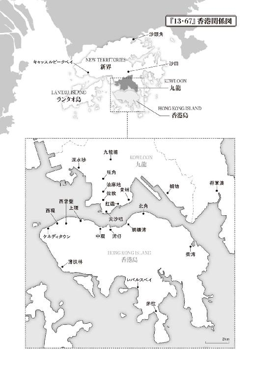
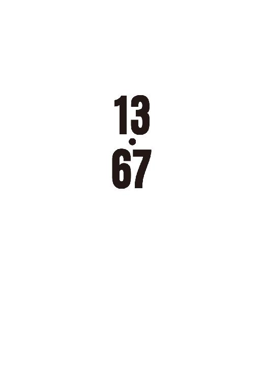
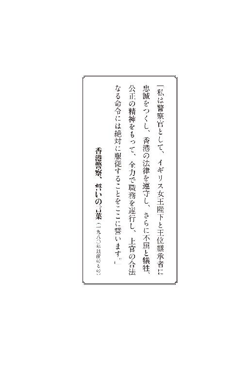
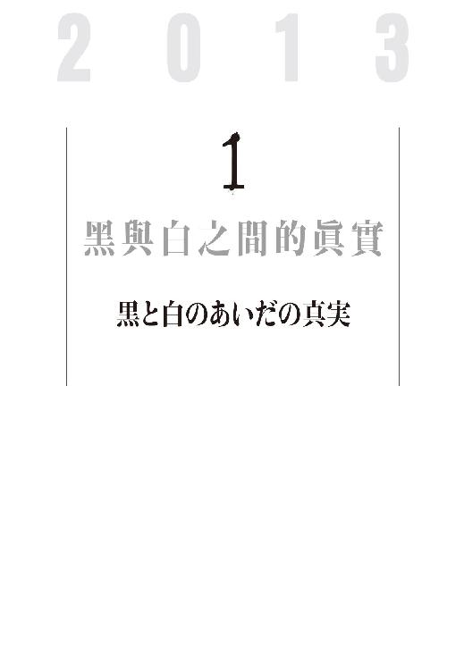
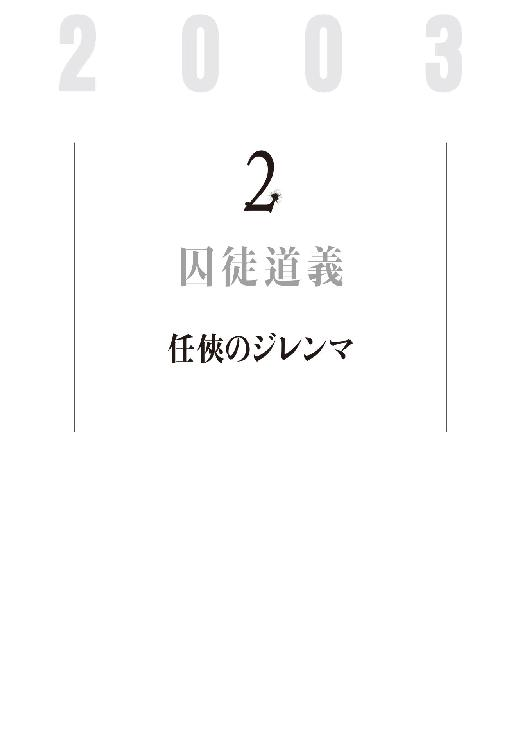
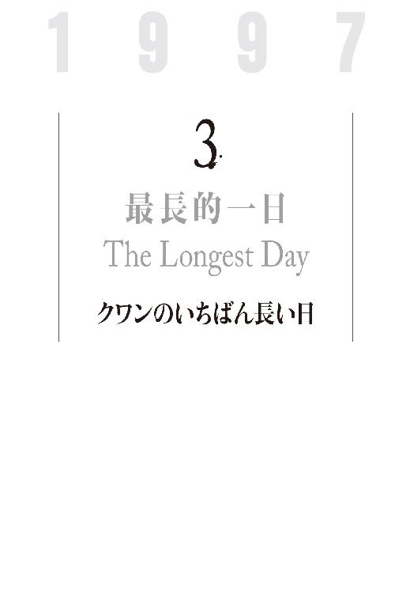
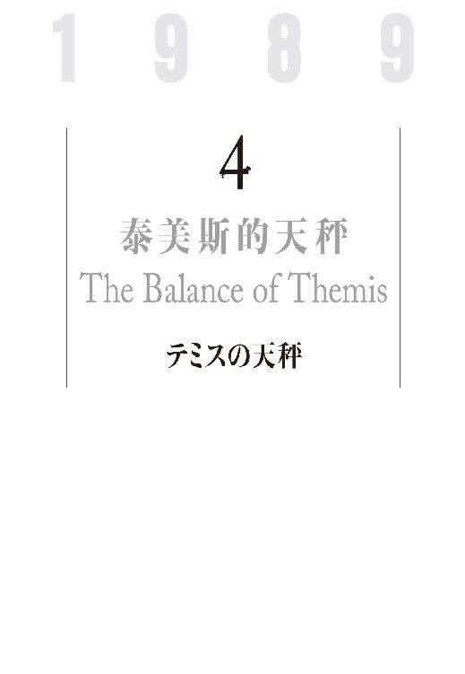
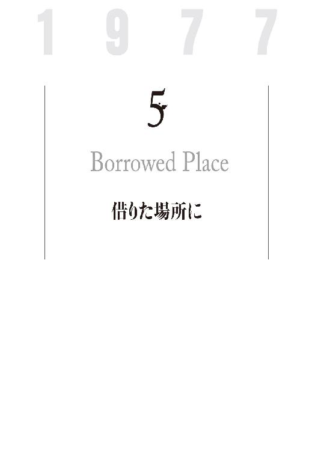
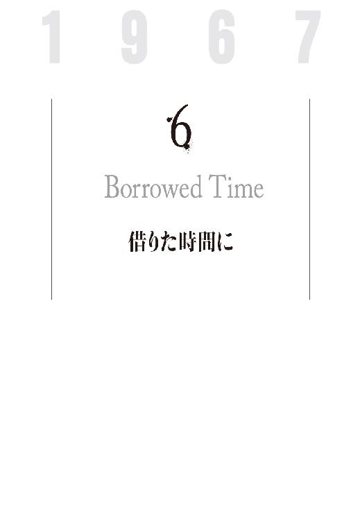

| 13・67 (文春e-book) | |
| 陳 浩基 | |
| 文藝春秋 (2017) | |
13・67
陳浩基
天野健太郎・訳
＊この電子書籍は縦書きでレイアウトされています。
＊読む際のご注意、お断り等についてはこちらをお読み下さい。




１
ロー警部は、病院の匂いが嫌いだった。
あたりに漂う消毒薬の刺激臭。ローは病院にいやな思い出があるわけではない。ただ、この匂いを嗅ぐと、遺体安置室を思い出してしまうのだ。警察官となって二十七年、数え切れないほどの遺体を見てきたが、この匂いにはいつまでたっても慣れなかった。もっとも、死体に異常なる興奮を覚える変質者を除けば、死人を前にして朗らかな気持ちになるものなどいない。
ローはひとつ息を吐いた。ため息が不安をいくらかでもかき消してくれたならよかったが、彼の気持ちはなお、遺体安置室で検視に立ち会うときよりも重苦しいままだった。
スラッとしたネイビーのスーツを身につけて、ローは、病床にある人をただひっそりと見つめていた。
個室のベッドに横たわっているのは、頭髪と眉毛が真っ白の老人であった。酸素マスクの下の、無数のシワが刻まれた顔は血色を失い、両目は閉じられたままだ。シミがいくつも浮かぶ腕からは細い管が何本も伸び、作動中の医療機器とそれぞれつながっていた。ベッドの頭上には、一七インチほどのモニターがあり、心電図と脈拍、血圧、血中酸素飽和度などが表示されている。波形が静かに右から左へと流れていく。もしこのモニターの線形がときどきピクリと波打たなければ、だれもこの老人が生きているとは思わないだろう。ベッドには、適切に処置された遺体があるだけだ、と。
この老人は、ローの「教官」である。彼は長年にわたって、聞き込み、裏付け調査、そして推理と逮捕──捜査の基本をローに叩き込み、いっぽうでセオリーを超え、人知を覆し、同僚を驚かせる捜査方法で名を馳せた警察官であった。
「ロー、いいか。ルールを守るだけでは、事件など解決できない。今の警察は、昔からのやり方を踏襲するだけで、自分の頭を使って捜査できない人間ばかりだ。『捜査員は上官の命令を遵守すべし』は鉄則だが、しかし、覚えておけ！ 警察官たるものの真の任務は、市民を守ることだ。ならば、もし警察内部の硬直化した制度によって無辜の市民に害が及んだり、公正が脅かされるようなことがあるなら、我々にはそれに背く正当性があるはずだ。わかるか」
そんな教官の口癖を思い出し、ローはつらい笑顔を作った。ロー警部の名前は、駱小明という。十四年前に警部補となったあと、署内で彼は「警部」や「班長」と呼ばれるようになり、今呼び捨てにするのは、教官ただひとりだ。
つまり、教官──クワン（關振鐸）警視からすれば、ローなどは警部どころか、いつまでも子供扱いだったわけだ。
リタイアするまで、クワン上級警視は本庁・捜査情報室Ｂセクションの課長を務めた。「ＣＩＢ（Criminal Intelligence Bureau）」の略称を持つ捜査情報室は、いわば香港警察の〝ＣＩＡ〟であり、各方面本部及び分署の犯罪情報の収集、分析を行い、それを必要とする捜査チームに提供すると同時に、共同で捜査計画の策定にも関わった。ＣＩＢが香港警察の大脳だとすれば、クワンが率いたＢセクションはまさに、〝推理〟を司る前頭葉と言えた。入手した情報を分類、解析し、手がかりがまったくない事件であろうと、情報の山から当事者しか知り得ない真相をあぶり出した。クワンは、香港警察の中枢たるセクションを一九八九年から率い、情報室の魂と呼ばれた重要人物であった。彼は九七年に定年を迎えた。そのときローはまさに、末端の捜査員としてＢセクションに所属しており、直々の許しを得て、「クワン流」捜査に弟子入りしたのだ。
クワン警視がローの直属の上司だった期間はわずか半年だったが、リタイア後も嘱託で警察に残り、特別捜査顧問として、二十二歳も若いこの後輩警察官を指導する機会はなお増えた。子供がなかったクワンは、彼を息子のように目をかけていた。
「いいか、ロー。犯人との心理戦はポーカーみたいなものだ。相手に、こちらの真の持ち札を知られてはならない。もしエースのペアを持っていたなら、まるで二か三のブタみたいに思い込ませる。勝ち目がない手札でも、強気にベットする。いかにもこちらが最強の切り札を持っているというようにな。そんな駆け引きの果てに、犯人はやっと、尻尾を出すんだ」クワンはそんなふうに、ローに教えた。まるで父が息子に、その刑事人生で得たノウハウをすべて注ぎ込むかのように。
教官との長いつきあいのなかで、ローもまた、クワンを父のように慕っていた。クワンの気質についても十分すぎるほど理解しており、警察の仲間たちはクワンのことを「名探偵」とか「天眼」とか、「謎解きの精密機械」などと呼んだが、ローがいちばんぴったりだと感じたのは、早くに亡くなった教官の奥さんが評したひと言だった──
「あの人はただの〝ドケチ〟ですよ。精密も度が過ぎてます。空から垂らした点眼薬さえ見つける天眼なんでしょ」
広東語でドケチのことを「度叔」と言うが、実は、クワンのフルネーム「關振鐸」の「鐸」も同じ発音なのだ。何年も前に奥さんから聞いたダジャレを思い出し、ローはふっと笑顔を浮かべた。
頭脳明晰、独断専行、慎重細心......そんな矛盾する特質を兼ね備えたクワンは、いっそ「怪物」と呼ぶべき存在だった。クワンは一九六〇年代、文化大革命の影響下に巻き起こった反英暴動を目の当たりにし、七〇年代、廉政公署［汚職摘発委員会］設立と警察汚職事件の騒乱をいなし、さらに八〇年代に荒れ狂った凶悪犯罪の時代をねじ伏せ、九〇年代の祖国復帰に伴う国家主権移行を見届け、なお大きく変容しようとする二〇〇〇年代香港社会を見守りながら、警察官として百件を超える事件を黙々と解決してきたのだ。それは香港警察の歴史にひっそりと輝く栄光の頁であった。
今、彼の命が尽きようとしている。そして長年、彼が身をもって築き、支えてきた香港警察のイメージもまた、風前の灯であった。香港警察の威信はいつからか失墜の一途を辿り、二〇一三年の今、すっかり色あせている。
イギリスによる植民統治時代、香港警察は女王陛下に忠誠を誓って職務に尽くし、「ロイヤル（皇家）」の称号を戴いた。七〇年代に不正、汚職、収賄を徹底的に撲滅したあと、世界でも一、二を争う優秀な司法警察官の集合体となった。犯罪を効率的に抑圧し、市民を守る責務をもって、社会の各階層の人びとから支持され、公正かつ無私にして、真面目で頼りになる職業イメージを確立したのだ。無論、一般大衆に害をなす刑事や、悪質な不正に関わる職員もあったが、それはあくまでもごく例外であると市民は考え、香港警察の良質なパブリックイメージは保たれた。
本当の意味で、警察への印象を悪化させたのは政治事件であった。
一九九七年の祖国返還以降、政治意識は年を追うごとに高まりを見せていた。異なる価値観の到来が政治的対立を生み、社会矛盾を露呈させ、市民運動や抗議デモが盛んになったが、それに真正面から向き合ったのは警察官であった。近年においてはいくどとなく強硬な手段による治安維持を命じられ、また本来警備畑でない凶悪犯罪捜査班による社会運動分子への検挙活動は、社会の各層より大きな疑問が投げかけられ、もともと警察に不満を持たなかった一般市民まで同調するようになった。
警察の威信が損なわれた最大の原因は、警察の事件対応に「ダブルスタンダード」があったからにほかならない。警察には当然「政治的に中立」という原則があり、どんな場合においても公正な対応をしなければならないのだが、実際には、政府に近い組織にたいしてはまるで目に見えぬ抑圧があるように、かつてのような効果的な捜査ができなくなっていた。市民の間からはこんな批判の声が挙がった──香港にのしかかる巨大権力はとっくに香港のフェアネスをむしり取ってしまった。警察はもはや政府の犬と堕ち、偏った法の執行者として官衙の悪事を見逃す、政治のためのサービス業に成り果てた......。
かつてそんな批判を耳にしたとき、ローはひとつひとつ反論したものだった。しかし、今となっては反論も虚しく、厳然として警察の不偏不党を主張することができなくなっていた。市民の側に立ち、偏向なく法を守る存在であることが、自分でももはや信じられないのだ。同僚にも、この神聖なる職業の意義を忘れ、「バイト」感覚で勤務するものが増えた。自分の考えもなくただ上の命令に従うだけなら、労働力と給料を交換する工場労働者となんら変わりがない。
「手抜きは努力に勝る」そんなフレーズがたびたび、警部たるローの耳にまで入ってくるようになった。つまり「やればやるほど、叩かれる。なにもしなければ、損はない」というのだ。彼は一九八五年に採用試験を受けて入庁したが、それは警察官という「職業」に憧れを感じたからだ。当時、ローの目に映った警察は、暴力から市民を守る正義の味方であった。ところが今の若い警察官からすれば、「職業」ではなく「収入源」を選んだということらしい。「罪を憎み、悪を懲らしめよ」の金言は、もはや破り捨てられた標語と同じだった。勤務はよりよくする、のでなく、さっさと終わらせるもので、目の前にあるのは昇進──査定と試験、目標となるのは将来の地位と約束された高給、穏やかなリタイア生活だけなのだ。たしかにリタイアした警察官には退職金のほかに、死ぬまで年金がついてくるのだが......。
そんな考えが当たり前となった現場捜査員から、いつからかこの職業にあるべき本質が失われていった。いっぽう一般市民はそれを見逃さず、当然、警察のイメージは年を追うごとに悪化した。
「......ローよ。市民が我々警察をどれほど......嫌おうと、そしてまた上層部から筋の通らぬ命令があろうと......そんな腹と背に刃を突きつけられたようなときも......いいか忘れるな、警察の本分と使命がなにか......自分のやるべきことはなにか......」
ほんの数日前のことであった。病床のクワンはローの手を強く握り、残された力を振りしぼって、そう伝えた。
教官の言う「本分と使命」がなにを指すのか、もちろんローにもわかっていた。東九龍方面本部の凶悪犯罪捜査班・班長として、ローはただひたむきに、「市民を守る」ため犯人逮捕に打ち込んできた。闇に埋もれかかった事件を洗い出し、真実を掘り当て、悪を除き、公の裁きにかける。彼はそんな責務を負い、正義の最終防衛ラインに立ち続けているのだった。
そして今日、ローは教官が残された時間にできる任務を頼みに来た。
午後の太陽が、窓外の海を紺碧に照らしていた。まぶしい光はガラス越しに病室の床にも落ちた。病室には、その病人が生きていることを示す機械音のほか、かすかなキータッチの音が聞こえた。部屋のすみにひとり、女性がいる。
「アップル、どうだ？ そろそろ時間だ」ローはキーの音のほうに顔を向け、その女性に訊いた。
「ロー警部、もうすぐです。システム変更の指示をもう少し早くいただけてたら、こんなにドタバタすることはなかったのに。インターフェイスの変更はすぐ対応できましたが、コンパイラの設定が......」
「わかった。頼むぞ」ローは、コンピュータのことはいっさいわからない。「インターフェイス」だの「コンパイラ」だのも理解しない。ただ、アップルの腕だけは信用していた。
アップルはそう答えているあいだも、上官のほうを見ず、終始キーボードに顔を埋めていた。彼女の巻いた茶髪を、真っ黒の古びたキャップが押さえつけていた。化粧っ気のない彼女の鼻筋に、黒縁の分厚い眼鏡が乗っかっている。黒いＴシャツにボロボロのオーバーオール、さらに足元のサンダルから十本揃った、黒いペディキュアが覗いている。そんな、いかにも「変人」っぽいファッションで彼女は、いかにも「変人」らしく三台のノートＰＣを腰掛けに並べ操作していた。そこからケーブル類が四方八方に伸びる。
コンッ、コンッ。
二度、ノックの音がした。
「来たな」ローは心のなかで叫んだ。その瞬間、彼の目に、獲物を狙うタカのような鋭い──刑事の眼力が宿った。
２
「課長、全員揃いました」ロー警部の部下、アシンがドアを開け、彼に向かって頷いた。アシンのあとに続いて、不審を露わにした面々がぞろぞろと病室に入ってきた。
「兪さん、お時間を取らせまして、申し訳ありません」ローはベッドサイドを離れ、入り口まで出迎えた。「ご家族五人、お揃いでよかった。ひとりでも欠けたらまた、何日か延期しなければならないところでした。感謝申し上げます」
そんなローの丁重な言葉遣いが見せかけの礼儀だと、その場にいるだれもがわかっていた。
なにしろ、彼らはある殺人事件の捜査のため、ここに呼びつけられたのだから。
「失礼ながら、ロー警部。どうして我々がこんなところに来る必要があるのか、さっぱり理解できないのだが......」
口火を切ったのは、さきほどローが話しかけた「兪さん」──兪永義である。警察が関係者から事情聴取をする、ひいては被疑者に取調べを行う場合は、警察署ないし事件現場で行うものである。兪永義はまさか、この新界・将軍澳にある「和仁病院」五階の病室へ連れて来られるとは考えてもみなかった。なにより奇異に感じたのは、ここ和仁病院は、兪一家が経営する「豊海グループ」傘下の病院である。しかもこの事件とはおよそ関係がない。
「気になさらずに。場所がここになったのは、たまたまです。我々の顧問刑事が偶然、兪さんが経営するこの病院に入院していたため、こうしてお呼びだてしたのです。もっとも和仁は香港でも最高の設備を持つ病院のひとつ。偶然でなく、必然というべきかもしれませんが」ローは鷹揚に説明した。
「そ、そういうことですか」腑に落ちなかったが、永義はそれ以上訊くのをやめた。グレーのスーツを身に着け、縁なし眼鏡をかけた彼の顔には、少年っぽさがまだうっすらと残っていた。三十二歳になったばかりだが、しかし彼が、兪一家の当主であることに違いはなかった。母を病気で亡くし、父を殺された今となっては、どうあっても彼が跡取り息子として、警察との交渉に臨まなければならない。兪一家は香港でも名門とされる一族で、家業と言える豊海グループも、永義が総帥の座を継承すると目されていた。しかし、彼からしたらそれはあくまでも未来の話であって、まさかこれほど突然、自らの両肩にのしかかってくるとは思ってもみなかった。
次男の彼は、今、この一族にあって最年長であった。
先週、血潮のなかに横たわる父の姿をその目で見てから、彼はずっと、二十数年前に事故で死んだ兄・永礼のことを思い出していた。
「もし、兄なら、こんな窮地でもうまくやっていけるだろうに」永義は内心、そう嘆いた。頭に浮かぶのは、亡くなったばかりの父でなく、兄の顔であった。兄を思い出すたびに、苦々しい痛みが胸元に湧き上がった。兄の死は、少年時代の彼に拭っても消えぬ暗雲をもたらした。長い年月をかけ、ようやくその心の闇と距離をおけるようになり、事故を思い出すたびに起こるえずきにもすっかり慣れた。
そんな長い潜伏期間を経て再び暴れだした動悸に、兄の死は忘れることなどできぬ現実なのだと、永義は思い知らされた。彼はその運命をただただ受け止め、兪一家の新しい当主たる責任を背負うしかなかった。
責任。たとえばこうして、警察とのあいだに立つこと。
ロー警部を目の前にすると、いつも強い不安を覚えたが、しかし、今日にかぎっては勝手知ったる和仁病院とあって、殺伐とした警察署よりは、いくぶん気が楽だった。
兪永義は医師ではない。しかし、和仁病院の病室は見慣れていた。経営者だからではなく、この一年余り、二、三日に一度のペースで、入院していた母を見舞っていたからだ。
それ以前、彼がここへ視察に来ることなど、年に一回あればいいほうだった。豊海グループは病院経営以外に多くの不動産を保有・運用し、さらに物流と貿易に事業展開したが、とりわけ貿易部門はグループの柱であった。和仁病院はグループのなかで、とくに儲かる部門とはいえなかったが、知名度はグループ一だった。人工関節手術のＭＩＳ（Minimally Invasive Surgery）法、ＤＮＡから遺伝性疾患の原因を見つけだすＲＦＬＰ（Restriction Fragment Length Polymorphism）技術、さらにはがんに対する放射線治療などが有名で、最先端の治療法を海外から積極的に導入していた。
ところがまるで三流のメロドラマのような皮肉な展開で、兪家が有する最良の医療機器と最高の治療スタッフをもってしてもがんには勝てず、永義の母はこの俗なる世界から旅立っていった。五十九歳の若さであった。
「ローさん、何日つきまとえば気が済むんですか。今日だって我々を集めて、なにを企んでいるんだか......。事件解決の見込みがないからって、頑張って捜査しているポーズを上司に見せてるだけじゃないんですか？」兪永義の背後の若い男が、茶化すように言い放った。兪家の末っ子・永廉である。高級ブランドのスーツを身に纏い、髪の毛を赤く染めている。次男永義より八歳下だが、社会人らしい礼節が備わった兄と違い、彼の口調はなべて薄っぺらかった。警察相手であっても、普段通り反抗的な態度を隠すことなく、不遜を口中に飼っている。
永義は弟を睨みつけ、警察に楯突く言葉遣いを窘めたが、彼も気持ちは同じだった。どう考えても警察は、捜査のふりをしているだけではないか。実際、永義以外の三人──永義の妻・蔡婷［中華圏では結婚しても通常姓を変えない］、古くからのお手伝いさんの胡ママ、そして兪家の執事である棠おじ──も同じように考えていた。先週より何度も任意出頭を求められ、ちゃんと取調べを受けている。今また、こうして呼び出されて話をすることになんの意味があるのか、全員が理解に苦しんでいた。
「兪家は名門です。豊海グループもまた、香港経済を支える有力企業のひとつ。メディアはこの事件に注目しており、警察上層部も重要視しています。できるだけ早く解決することで、事件が政治・経済の分野にまで波及することを防ぎたい。だからこうして、わざわざ我が教官──本庁の特別捜査顧問の助けを求めたというわけです。もう少しだけお時間をちょうだいして、みなさんに事件とその前後の状況についてお話しいただきたい」ローは永廉の無礼をあっさり袖にして、悠然と説明した。
「ほお、そんなに恐れ多い方が......」永廉が吐いたのは上っ面だけの嫌味で、その人を歯牙にもかけていないことは見え見えだった。
「彼はクワン警視。香港島方面本部の凶悪犯罪捜査班・班長、本庁捜査情報室Ｂセクション指揮官を歴任し、今は本庁付けの特別捜査顧問を務めておられる」微笑みを浮かべてローは続けた。「また、クワン警視の手にかかって、解決しなかった事件はありません。現時点で、検挙率は一〇〇パーセントです」
「一〇〇パーセント？」永義は驚きの声を上げた。
「一〇〇パーセントです」
「で、でたらめを言うな！ そんな警察官、いるわけないだろう！」反論を試みた永廉だが、その口調に先ほどまでの強気はなかった。
「で、そのクワンさんとやらは、今、どちらに？」六十代になる総白髪頭の執事・棠おじが言葉を挟んだ。彼の視線は、病室のすみでキーボードを叩き続けるアップルのほうに向けられていたが、だれも二十代であろうその若い女性が、歴戦の凶捜班指揮官とは思わなかった。
ローはベッドのほうに目をやったが、兪家の五人はみな注意を払わず、しばらくしてようやくそれがローの答えであることに気づいた。
「こ、この老人がクワン警視？」永義は驚きを露わに訊いた。
「まさに」
病室のベッドに横たわる余命幾許もない老人が、ロー警部のセリフのごとき「名探偵」とは、とても信じられなかった。
「この人は、なんの病気でここへ？」そんな疑問を口にして、永義は後悔した。患者の病状はプライバシーに触れる。あるいは、この面倒な警部の機嫌を損ねることになるのではないか。
「肝臓がん。末期です」ローは事実を隠さず、そのまま伝えた。その声に彼の苦しみが隠されていたことに、だれも気づかなかった。
「このし......、いや、このじいさんが父さんの事件を捜査すると？」相変わらず永廉は口さがないが、「死に損ない」という言葉はどうにか腹に収めたらしい。
「永廉、言葉には気をつけなければ」そう言ったのは兄・永義でなく、棠おじだった。「番頭」として兪家に長年仕えた人の言葉に、永廉は反論するでなく、ただ口をとがらせた。
「ロー警部。病院にわざわざ......お邪魔して、事件の経緯をもう一度聞かせる相手とは、この......、こちらの......警視なのですか？」永義の妻・蔡婷が訊いた。一家を取りまとめる「当主の妻」という地位に、彼女はまだ慣れていないようだ。言葉の選び方が自然ではない。
「そう、こういう状態だからです」ローは頷き、続けた。「教官はみなさんのお宅や警察署に行って、聴取することができない。したがって、みなさんにわざわざお越しいただいた」
「しかし......、話しはできるのですか？」病床に目をやり、蔡婷が訊いた。彼女はかつて医者であった。患者の鼻と口は挿管され、人工呼吸器の助けで息をしている。つまり、会話を行うことは無理に違いなかった。
「できません。話しどころか、動くこともできない......また昏睡状態に落ちてしまった」
ローは淡々と話した。
永廉がだれよりも先んじて言った。「昏睡だと？」
「我々は、無駄足だったということですか？」永義も問いを投げかけた。
「意識レベルは？」蔡婷が訊いた。
「３です」ローが答えた。意識レベル（ＧＣＳ）〈３〉は、もっとも深刻なレベルだ。言葉を発することも、まぶたを開くことも、体のどこかを反応させることもできない。
蔡婷もまた、肝臓がんがもたらす昏睡がどういうものか、当然理解していた。肝機能が著しく低下し、血中のアンモニア濃度とアミノ酸濃度が上昇した結果、神経系統がダメージを受けて昏睡を引き起こす。肝性脳症と呼ばれるこの症状は、まず患者に意識障害をもたらし、最悪の場合は昏睡に陥る。
「話しもできず、動くこともできないのに、どうやって取調べの手助けを？」棠おじが訊ねた。「ローさん、冗談を言ってもらっては困ります」
「彼の耳は生きている」ローは落ち着き払って答えた。「血中アンモニア濃度は危険値を脱した。クワン警視の思考に妨げはない」
「聞こえたとしてどうなるの？ その思考をどうやって我々に伝えると？ 重度の昏睡にあるのに」遮ったのは蔡婷だった。五人のなかで唯一、医学の専門知識を持つからには、ここで兪家のために、声を上げなければならない。
「聞こえれば、それで十分」ローは、背後で作業を続けるアップルのほうを指差して言った。「あとは彼女がサポートする」まるで機械の整備士のようなオーバーオールを着て、彼女はその発言になにか応えるでもなく、目の前にあるキーボードをひたすら打ち続けていた。いかにも「変人」らしく、兪家の五人が向けた異様な視線など眼中になかった。
「彼女はアップル。コンピュータのエキスパートだ」
「コンピュータのエキスパート？」永義にはそれがまったく不要な説明に思えた。彼女の前に置かれた大小三台のパソコンと色とりどりのケーブル類、おまけにディスプレイの背中に貼られたアニメのシールを見れば、たしかにパソコンの専門家であり、また同時に相当な「変人」であろうことはすぐにわかった。永義は豊海グループの情報システム部門のエンジニアを何人か思い出した。たしかにこの女性とそっくりの変わった奴らで、自分たち管理部門の人間とはまったく雰囲気が違っていた。
「コンピュータのエキスパートになにができるんだ？」永廉は馬鹿にしたように続けた。「まさかこのじいさんの脳みそを引っ張り出して、パソコンと接続するわけでもあるまいに」
「うん、似たようなものかな」まさか、そんな皮肉に同意されるとは思っていなかった彼らは、ローの真面目な顔をただ呆然と見つめた。
「説明は厄介なので、みなさん自身で試していただければ、すぐ意味を理解できます。ただそのためにちょいと、インターフェイスを調整しなければならない」そう言ってローは、首を曲げアップルに訊いた。「まだか？」
「えぇっと、これで......できました」アップルが顔を上げ、カチューシャのようなプラスチックの輪っかをローに手渡した。その「カチューシャ」はだいたい二センチほどの幅があり、全体は黒色だったがその一端からグレーのラインが伸び、アップルの右手にあるブルーのパソコンと繫がっていた。
「これがつまり、クワン顧問の脳を引っ張ってくる道具です」ローは座の人びとに示した。「では......、王さん、こちらに。テストしていただけますか」
フルネームを王冠棠という棠おじが、ローのそばまで歩んでいった。その表情には、戸惑いが浮かんでいる。
ソファーに棠おじを座らせて、その頭にさきほどの輪っかをはめた。みな意外に思ったが、ローはその道具を棠おじの薄くなった頭の真上から差し込むのでなく、額の前から水平に嵌めた。孫悟空の緊箍児のようにである。プラスチックでできた両端がこめかみを押し付け、さらに突起物が額の皮膚に当たっている感覚が彼にはあった。ローはなお微妙な位置調整を続けた。
「ＯＫです」ディスプレイを見つめていたアップルがふいに声を上げると、ローもやっと手を止めた。
「みなさん、ＥＥＧという技術をご存知ですか？」ローが全員に向かってそう訊いた。
「Electroencephalography──脳波測定技術」蔡婷がつぶやいた。
「そう、それです」ローは続けた。「人の大脳はニューロンで構成されています。ニューロンが発するわずかな電気信号をＥＥＧの技術で測定する。科学者たちはこの電気信号を脳波と呼んでいます」
「その輪っかが、脳波を言語化すると？」永義は驚きを隠さず、訊ねた。
「いや、現代の科学技術では、脳波から完全なる思考を解読することはまだできません」ローが答えた。「ただ、脳波測定はすでに実用化されてずいぶん経ちますが、近年において技術的なブレークスルーがあり、簡単なセンサーによってそれを測定することができるようになったのです」
「いちばんの問題は、脳波と脳波でないものの峻別です」とアップルが補足した。「この病室の、たとえば医療機器だけでも大量の電波が出ていて、測定を邪魔しています。だから以前は、特殊な環境においてのみＥＥＧ測定が可能だった。ところが今では、医療機器の〝騒音〟をコンピュータの簡単な演算によって、排除できるようになりました。このプログラムも私がひとりで書き上げたものです。〝除騒〟についてはカリフォルニア大学バークレー校の研究チームの演算式を利用しました。インターフェイスについては......」
「簡単に言うと、この計測器は、その人が脳を動かすことから、思考の切り替えを感知するのです」ローが、アップルのご高説を遮って、話をまとめた。ローは三台のうち一台を指差し、五人に見せてやるようアップルに合図した。真ん中のパソコンのディスプレイを一八〇度回転させると、そこには不思議な画面があった。ディスプレイはふたつに色分けされ、上半分が白、下半分が黒だった。そして画面の最上部に黒い字の「ＹＥＳ」、最下部に白い字の「ＮＯ」の文字が浮かんでいた。上下白黒の境界線に小さな青色の十字がある。
「王さん、精神を集中させてください。そして頭のなかで、この十字のカーソルを上に動かしてみてください」ローは、棠おじを促した。額に嵌った輪っかが、滑稽にさえ見える。
「う、動いた！」永廉がディスプレイを指差した。青い十字のカーソルが徐々に上がっていく。そして、「ＹＥＳ」の字がある位置まで動いたとき、「ピッ」という電子音が鳴った。
「頭が集中しているときと、リラックスしているときで、脳波の状態はあきらかに異なる」ローはディスプレイを指差して言った。「王さんが集中したとき、彼の大脳からは、えー......、なに波だったか......」
「ベータ波です」アップルが言った。「すなわち、一二～三〇ヘルツの脳波のことです。精神集中時に発せられます。リラックスしているときは八～一二ヘルツのアルファ波が出ます」ディスプレイ越しにローを見て、さらに補足した。
「そうそう、ベータ波」ローは苦笑いを浮かべ、自分は理系科目がまったく不得手だったことを思い出した。「王さん、今度はリラックスしてみてください。ほら窓の外の海を見るとか。そうすれば、カーソルが下に移動します。集中とリラックスで、青色の十字を上下にコントロールできます」
みな半信半疑でディスプレイを見つめた。カーソルがゆっくり上がったり、下がったりしている。棠おじの顔は驚きを露わにし、この技術が噓ではないことを証明していた。
「本当だ。上へ行かせようと集中すると、本当に上へ行く。考えを止めると、下に行く」カーソルが何度か移動したのち、棠おじは賞賛に近い驚嘆を表した。
「みなさんも試してみてはいかがですか？」ローは、棠おじの額から輪っかを抜き取り、言った。
普段なら、新しいものに目がない永義が試そうとするところだ。しかし彼は、今ここで注目されるのは避けたいと考えていた。なにしろ、目の前にいるのは、底の知れぬ刑事なのだ。
「ひとつだけ」棠おじが訊いた。「プログラムはそのお嬢さんが組み上げたと聞いたが、ではこの機械は？ プラスチック製で、いかにも工業製品のようだが......」
「買ったものです」アップルが即答した。
「こんなものが、どこで？」腑に落ちないように、棠おじがまた訊いた。
「トイザらスです」アップルは箱を取り出して見せた。「脳波を使ったおもちゃは、商品化されて一般に売られています。非常にありきたりなものです。私はそれを少し改造しただけ。おもちゃといっても、なかなかたいしたものです。前にも、おもちゃの立体レンズをＶＲセンサーに改造したことがあります。ＶＲグローブなどなくとも......」
「待ってください。つまりこの機械を昏睡しているクワン顧問の頭につけ、彼の推理を我々に知らせると？」アップルの説明を遮り、蔡婷がローに訊いた。
「まさに、その通り」
「『はい』と『いいえ』しか示せないのに？ どうやって事件を解決するの？」
鋭い眼差しを五人に向け、ローはきっぱりと言った。「クワン顧問が『はい』と『いいえ』で答えてくれるだけで、我々の捜査には絶大な手助けとなります......」ローは息を整えたあと口角をわずかに上げて、話を続けた。「まして、彼はこの機械の操作に大変長けています。ここにいるだれよりも上手にお使いになる」
ローはソファーのほうから窓際へと移動した。アップルと彼女のパソコンを避けて遠回りし、地面を這うケーブル類を跨いでベッドの左側まで行くと、横たわる老人の額に、さきほどのプラスチックの輪っかをそっと嵌めた。そして、アップルの「ＯＫ」が聞こえるのを待って、その手を離した。
「教官、私の声が聞こえますか？」ローはベッドサイドの椅子に腰掛けて、クワンに訊ねた。
「ピッ」前触れもなく、パソコンから澄んだ音が鳴った。青色のカーソルが画面の上方中央の位置へすっと動き、「ＹＥＳ」の上で止まった。
「十字が急に動いた。故障か？」永廉が訊いた。
「ブブッ」さっきより低い音がパソコンから響いた。五人は、ディスプレイの下方にある「ＮＯ」のあたりにカーソルがあるのをみとめた。
「ほら、我々よりずっと上手に操作している」ローが付け加えた。「これまでも肝性脳症で昏睡しているあいだは、この機械で私とコミュニケーションをとりました。テスト期間は延べ一ヶ月以上。その操作データが蓄積され、誤差もほぼゼロとなった」
「集中状態をこんな素早く作り出せるものかしら？」老人とディスプレイを交互に見ながら、蔡婷は驚きを隠さなかった。
「ピッ」十字のカーソルがすっと、「ＹＥＳ」の上に移動した。
「視覚障害者は耳で距離を判断する。聴覚障害者は唇の動きで言語を理解する。ある能力を失ったとき、人は隠された新しい能力を発掘するようです」ローは、十本の指を交差させて、膝に置いた。「昏睡中、人になにか伝えるにはこの方法しかない。上手く使えて当然なのでしょう」
十字がゆっくりと、ディスプレイの中央に戻った。それを操作しているものが、そこにいる全員に向かって、誤りなどありえないと宣言しているかのようだった。この機械はすでに、彼の体の一部分なのだ、と。
「今日お呼びしたのは、事件の真相究明のためです。ここで、事件とその発生前後の状況についてみなさんに話してもらい、クワン顧問から質問していただきます。......本来は顧問が昏睡から目覚めるのを待って聴取を行うつもりでしたが、先ほど申し上げたように、警察上層部が本件を重視しております。やむを得ず、このような特殊な方法を取らざるを得ません。しかし、顧問の『発言』は存分に捜査へ活かされます。無論、事情聴取は私が進行しますが、顧問が適宜、示してくださる反応で、私たちを真実へと導いてくれます」
「ピッ」カーソルが「ＹＥＳ」を示した。
「どうして家族全員が呼ばれたんだ。まるで取調べだ。犯人はドロボーじゃないのか。そんなこととっくに明らかになってると思ったのに」永廉が忌々しげに質問を投げた。
「事件について、私が整理しながら順々に説明して参ります。いずれにせよクワン顧問には、この殺人事件の全体像を知っていただかなければなりません」ローは兪家の末っ子の質問には直接答えず、ベッドサイドの椅子に座ったまま言った。「ではみなさん、お座りください。ソファーは少し窮屈ですが、四人用です。残りのお一人は、入り口の近くにある椅子にどうぞ」
テストのときから座っていた棠おじのほか、永義と永廉、蔡婷がソファーに腰掛けた。ずっと発言しなかった胡ママが、ドアの前に立ち、ためらいがちにその木製の椅子に座った。ソファーはドアの右手に収まり、またちょうど、ベッドを足元から見る位置にあった。ソファーの真ん中に腰掛けた永義はベッドを眺めてみたが、途中のオーバーベッドテーブルが邪魔で、老人の顔は上半分しか見えなかった。もっとも、五人が注目していたのは、ソファーの右前方にある掃き出し窓の前に陣取ったアップルで、つまりだれも、クワン顧問の〝発言〟を示す上下白黒の一七インチディスプレイ以外、見ていなかった。
３
「アシン、記録開始」ローが指示を出した。アシンはアップルのすぐ隣で、三脚に据えられた小さなデジタル・ビデオカメラを操作し、録画をスタートさせた。病室に呼ばれた五人の参考人が全員フレームに入っていることを確認し、上官であるローに頷いた。
「教官、始めます。まずは事件の概要から」ローはポケットから取り出した手帳を開き、ゆっくりと経緯を説明した。「二〇一三年九月七日から八日未明にかけて、つまり先週の土曜日から日曜日。新界・西貢、チョクヨン・ロード（竹洋路）一六三番にあるフォーチュン・ヴィラで、殺人事件が発生しました。フォーチュン・ヴィラは豊海グループ総帥・阮文彬とその家族の邸宅です。殺害されたのは、当主である阮文彬その人です」
父の名前を聞いて、永義は動揺を抑えきれなかった。
「被害者の阮文彬は今年六十七歳。兪家からすれば入婿ということになります。八六年にグループ総帥の座を継承しました。翌年、岳父である兪豊が亡くなると、兪家の当主となります」ローはページをめくって、続けた。「阮文彬は七一年、兪家の一人娘・芹柔と結婚。子供は三人。長男の永礼を九〇年に交通事故で亡くしたほか、次男・永義、三男・永廉とひとつ屋根の下で暮らしていました。永義は昨年結婚したあとも、妻・蔡婷と家を出ることなく、両親との同居を続けました。被害者の妻・兪芹柔は今年の五月に病死。その四人以外に、兪家の執事である王冠棠と家政婦の胡金妹が同じ家に住んでいます。事件当夜、邸宅には被害者とそのふたりの息子、さらに長男の妻、執事と家政婦の六名しかおりませんでした。教官、繰り返しましょうか？」
「ブブッ」──あっさり「必要ない」との回答が鳴った。
「では、現場の状況と遺体発見の経緯について」ローは軽く咳払いをすると、なお慌てずに説明を続けた。「犯行現場となったフォーチュン・ヴィラは三階建ての住宅で、庭も含めた敷地はおよそ五五〇坪。馬鞍山公園近くにあります。このあたりは似たような低層住宅が四、五軒あるだけで、そのほとんどが別荘です。兪家三代は六〇年代よりここで暮らしています。フォーチュン・ヴィラとはつまり、彼らの大豪邸の名前です」
ローは五人を一瞥した。胡ママが、ローの説明に同意するように小さく頷くのが見えた。まるでそれは、先代当主が豊海グループを創業した六〇、七〇年代の輝かしい日々を思い出しているかのようであった。
「九月八日午前七時半、いつもと違い父がリビングで新聞を読んでいないことに気づいた兪永義は、父の書斎に行き、そこで阮文彬の死体を発見した。初動捜査によれば、窃盗犯が侵入したところ、被害者とたまたま鉢合わせとなり、犠牲になったと考えられます」
ローの説明に、永義はあの朝、目撃した光景を思い出し、心が搔きむしられるようだった。
「二階にある書斎の窓が打ち破られ、部屋には荒らされた痕跡がありました」ローは手帳から視線を外し、ベッドに横たわる老探偵の顔を窺った。状況は何度もシミュレートしていたから、記憶だけで十分、犯行現場を描写することができた。「書斎側の庭には花壇があり、ホウオウボクが何本か植わっています。犯人は人目を避けて、庭から侵入。窓に五センチ幅の防水性粘着テープを貼り付け、ガラスを破壊しました。地面に破片が落ちて、音が響かないようにです。この点から、犯人は空き巣の常習犯だと考えられます。粘着テープを剝がしたあと、その穴から手を入れ、内鍵を解錠し、ガラス戸を開けました。残ったテープは窓の外の地面で発見され、鑑識員によれば窓ガラスに貼ったものと一致しました」
ローの説明に口を挟むまでもないと、ディスプレイの青十字はずっと動かないまま、まさに事件の詳細にじっくり耳を傾ける探偵そのものだった。
「書斎の広さは三七平方メートルほど。なかには本棚二本、デスク一台、ソファー二脚、小机二台、オフィスチェアーが四脚と金庫がひとつ並ぶ以外に、特別なのは、高さ二メートル、幅一メートル、奥行き一メートルある鋼製のキャビネットです。そこにスピアガン──銛を発射して魚を捕る水中銃が入っていた。阮文彬は潜水して魚突きをする趣味があり、免許を申請し自宅でスピアガンを保管していました。キャビネットの隣にはなぜか古雑誌が積み上げられており、家族によると、被害者が練習用の的にしていた」
「いや、練習用ではないです」永義が否定した。
「練習用じゃない？ 王執事から訊いたのだが......」
「いえ、私は、練習用とは言っていません」棠おじが、濡れ衣だとばかりに言った。「普段からその古雑誌をスピアガンの的にしていたのは事実です。しかし『練習』とはひと言も......。総帥は何年か前に関節炎を患い、左足に力が入らなくなった。だから潜水ができなくなり、それ以降、私に用意させた雑誌を的にしていたのです。暇なときに書斎にいながら、スピアガンを撃つ。そうやってかつての喜びを思い返していたのでしょう。実際には、陸上でスピアガンを装塡するのはたいへん危険なことです」
「なるほど。私の勘違いだったというわけですね。教官、よろしいでしょうか？」
「ピッ」まるでパソコンが頷くように、音が鳴った。老探偵が説明を続けろと言っているのだ。
「部屋は荒らされ、金庫とキャビネットにはともに、工具でこじ開けようとした痕跡がありました。金庫は最終的に開けられなかった。いっぽうスピアガンのキャビネットは開けられ、本と書類は棚から床に乱雑に落とされ、デスクに置かれたパソコンのディスプレイは破壊されていました。引き出しもすべて開けられ、現場検証の結果、部屋からは二十万香港ドル［およそ三百万円］の現金が消えていた。ただし、被害者の指輪、デスク上のダイヤモンドをあしらったレターナイフ、さらに三十万ドルの価値がある金のアンティーク時計は残されていました。犯人は現金だけを奪い、逃走した模様です」
アシンは上官の話を聞きながら、捜査初日、盗まれた二十万香港ドルが被害者の「小銭」だったと知らされ、自分と大金持ちの住む世界の違いをまざまざと感じたことを思い出した。
「書斎から、犯人の足跡、指紋は採取できませんでした。犯人は、手袋をしていた可能性があります」手帳をもう一度開き、確認したあとローは言った。「犯行現場については以上です。続いて、被害者の状況について......」
「ピッ」
「永義により、遺体が発見されたのは午前七時四十分です。監察医によれば死亡推定時刻は午前二時から四時のあいだ。死亡時、被害者は本棚のそばに横たわっていた。後頭部に外傷が二ヵ所あったが、致命傷となった傷は腹部で、スピアガンの銛がささり、出血多量で死亡した」
父の腹にギラギラした細長いシャフトがささった光景が、永義の脳裏に甦った。
「凶器についてですが」ローは手帳のページを繰って、資料を探した。「スピアガンから発せられ、被害者の腹部にささっていたシャフトは一一五センチの長さがあり、銛先は尖端から三センチのところに返しがあるタイプ。それが被害者の肝臓を直撃し、大量の出血をまねいたと見られます。書斎の真ん中に、南アフリカのロブ・アレン社のスピアガンが落ちていた。型番はＲＧＳＨ１１５、カーボン製です。銃身長は一一五センチあり、三〇センチのスリングラバーがクローズドのマズルについていた。凶器に残されていたのは被害者の指紋だけです」
ローも捜査当初、この聞き慣れぬ専門用語に惑わされてかなり混乱したが、何時間も勉強してやっと理解することができた。スピアガンは、スリングラバーの弾力でシャフトを発射するもので、「Ｙ」字のパチンコと原理は同じだ。ガンのホルダーにシャフトを置き、前方に二点固定されているラバーを引いてシャフトのノッチにかけ、装塡完了。引き金を引けば、銛先がついたシャフトは、ゴムの反動で前方へ発射される。クローズドマズルとは、銃頭部の銃口が輪になっていて、シャフトはそこを潜らせ、銃身の溝を送るようにセットすることになる。オープンマズルは輪がなく、Ｖ字の溝に上からのせるだけでよい。ローは潜水好きの同僚に訊いたが、多くのものがオープンマズルタイプのスピアガンを好んだ。なぜならガンを構えたときに獲物が銃身の延長線上に見えるからで、いっぽうクローズドマズルの場合、シャフト発射時にブレが少なく、命中率が上がるという。
「調査の結果、犯行に使われたスピアガンは鋼製キャビネットで保管していた、被害者自身のものと判明しました。キャビネットは三丁のスピアガンを立てかけることができ、長さの異なるＲＧＳＨ０７５型とＲＧＳＨ１３０型の二丁がありましたが、真ん中の台は空でした。さらにロングタイプの『ロブ・アレン社 Ｚｕｌｕ型』スピアガン、型番ＲＧＺＨ１６０と、銃身長七五センチのラビテック社アルミ製ＲＢ０７５型が保管されていました。この二丁はともに分解され、持ち運び用のガンバッグに入った状態でした。キャビネットにはほかにも、一一五センチから一六〇センチの長さのシャフトがあり、鑑識係が、被害者にささったものと同じ種類だと確認しています」
「父は、Ｚｕｌｕを使ったことはない」どこか感慨深げに永義が言った。「父は『これで、サメを撃ちたい』と言っていた。でも結局、一度も使う機会がないまま、潜水ができなくなった」
ローは永義の話には触れず、続けた。「キャビネットにはほかにも、潜水と魚突きのための道具がたくさん保管されていました。マスクにグローブ、タンクのレギュレータ、スピアガンのライン、サバイバルナイフやドライバーなどの工具類。さらに刃渡り二五センチのダイビングナイフ。初動捜査の結果、犯人は、キャビネットをこじ開けて、スピアガンを奪い、被害者に向け発射したと考えられます」
アシンはゴクリと唾を飲み込んだ。ローの下で二年、捜査活動に従事し、かなりの数の遺体を見てきたが、銛が腹に突きささり、内臓の形を失くした遺体を目にしたのは初めてだった。思い出すだけで、身の毛がよだつ。
「腹部の致命傷以外にも、頭部外傷が二ヵ所ありました」ローは言った。「この傷もいささか奇妙です。監察医が言うには、第一撃と第二撃のあいだに時間差がある。傷口の状態に加え、衣服に付着した血痕から判断すると、その時差は三十分ほど。具体的な状況はまだわかりませんが、鑑識員はすでに凶器とおぼしき花瓶を発見しています。もともとデスクに置かれていた、金属製の装飾品です。指紋は採取できませんでした。殴打後、表面を拭き取った形跡があります」
ローはふたたび手帳から視線を外し、病室にいる人びと全員を眺めたあと、病床のその人を見つめた。
「じつは、被害者の死亡状況には大きな疑問点があります」ローが眉間に皺を寄せて、言った。「被害者が横たわっていた本棚のそばに、家族のアルバムが落ちていました。なかのページから、血に染まった指紋が多く発見されました。間違いなく、死の直前に被害者がめくったものでしょう。床に残された血痕から、被害者はスピアガンで撃たれたあと、デスクから五メートルほどの距離がある本棚まで這っていき、家族写真を見た。監察医の見立てでは、撃たれてから息を引き取るまで二十分以上かかっています。ダイイングメッセージがあるのではと仔細に調査しましたが、アルバムに残された血痕に文字や規則性はなく、純粋に写真を見るために広げていたことがわかりました。さらに不審な点があります。被害者の手首、足首には粘着テープで拘束されたあとがありました。口もまた同じく塞がれていたようです。しかし、発見されたときには、テープはすべて剝がされ、現場に残されてもいませんでした」
数日前、ラボの検査結果が出たとき、アシンは必ずしも粘着テープは犯行に使用されたとは限らず、たとえば愛人との〝プレイ〟に使ったものではないかと意見を述べたが、チームの女性捜査官から軽蔑の眼差しで見られ、変態扱いされた。ローは馬鹿にすることはせず、ただ、「金持ちだからって、だれもが秘密の性的嗜好があるとは限らない」と笑った。
「この不審点を除いて、状況から邪推なく推理すれば、犯人は窃盗犯の線が濃厚です。深夜に窓ガラスを破って書斎に忍び入り、家探ししている途中に被害者と遭遇。やむを得ず、花瓶で頭部を強打し、気を失った被害者を粘着テープで拘束し、強奪を続けた。その後、工具で金庫を開けようとして失敗したので、暗証番号を言わせるためスピアガンで被害者を脅迫したが、被害者は吐かず、結果スピアガンに撃たれて死亡。犯人は現金二十万ドルを奪っただけで、逃走した......」
「ブブッ」
低い音が響いて、ローの陳述を遮った。カーソルが「ＮＯ」を指し示している。五人の関係者が顔を見合わせ、驚きを露わにした。
「教官、犯人は外部からの侵入者ではないと？」
「ピッ」カーソルがすばやく「ＹＥＳ」の位置に移動した。
ローは驚きを隠さず、言った。「たしかに、その後の捜査において、ただの物盗りの線ではないという見方が出てきました──窓の外の壁面に這い上がった形跡がない、窓の下の花壇に足跡がない、など新たな手がかりが判明したためです。あるいは屋上からロープを垂らして潜入したのでは、とも考えましたが、屋上の欄干にもいっさいの痕跡がありませんでした。ならば、ヘリコプターによる侵入という線も......」
「ブブッ」その音は、まるで老探偵が笑っているように聞こえた。灯台もと暗しで身近な手がかりを見逃し、推理するほどに袋小路へと入り込んでいく、かわいい弟子を窘めるように。
「教官、ここまでの状況説明でもう、外部の犯行ではないと判断された？」
「ピッ」またしても、よどみのない「ＹＥＳ」であった。
「どこで気づかれたのか...... 窓ガラスの破り方？ スピアガンによる殺害？ あるいは荒らされた書斎？」
青い十字は静かに、ディスプレイの中央を漂っている。
「デスクですか？ それとも本棚？ 花瓶......、床......」
「ピッ」
ローが「床」と言ったところで鳴った。教官の明確な反応であった。
「床？ なにもなかったはずだ。指紋も足跡もなく、きれいなものだった」そう言ったのはアシンだった。
アシンをひと目見て、ベッドの教官へと視線を戻したローは、ふいに霧が晴れたような顔をした。
「そうか！ そこか！」ローは自分の額を強く叩いた。
「どれです？ なにがどうなんです？」アシンが、腑に落ちないまま訊いた。無論、兪家の五人もアシンと同じ表情でそこに座っている。
「アシン、我々が捜査してきた盗難事件で、これほど床がきれいな現場があったか？」ローがじっくり、説明を加える。「指紋がないのはわかる。指紋は起訴の決定的な証拠となるから、コソドロは犯行時に手袋を使う。だが、足跡は致命的な証拠にならない。手慣れた空き巣なら、侵入用に新しいスニーカーを買って、犯行後に捨てる。後始末が一発で済み、足跡を消すよりずっと楽だ」
「しかし、殺人を犯してしまったあと、証拠隠滅のために床をきれいにすることはありえるでしょう」アシンが言った。
「もしそうなら、床にぶちまけた書類や本の説明がつかない」ローは言った。「我々の仮説はこうだった──犯人は、土が露出した花壇を通り、だれもいない部屋へ侵入して物色中、被害者と出くわした。拘束後も盗みを続けたが、金庫が開かず、暗証番号を聞き出そうと脅したが果たせず、殺害した──しかし、もし足跡をきれいに消すために、床にぶちまけられた書類や本を片付けたなら、さらに犯行現場を『物盗りが荒らした』と思わせるために、片付けた書類と本を再び床にぶちまける必要があるか？ それよりまず逃げるべきだろう。まったく辻褄が合わない」
兪永義は、彼らの会話を聞きながら、ロー警部がクワン警視に手助けを頼んだ理由がわかったような気がした。この昏睡している老人は、犯行現場の様子を耳にしただけで、警察が大量の捜査員を動員して導いた結論を、あっさり論破してしまったのだ。そこまで考えて、永義はゾッとした。指さえ動かすことができぬ老探偵が、彼のすべてを見抜いているように思えた。
自らの殺人の罪はこの〝天眼〟から逃げ切れないのでは──そんな恐怖が彼を包んだ。
４
「外部の犯行でないとするなら......」隣に座っている蔡婷がふいに声を上げ、永義はおかげで現実に戻った。
「内部のものの犯行──犯人は当日在宅していた兪家の五人のうち、だれかということになる」ローの口調はいたって冷静だった。
今日ここに呼ばれた彼ら、五人の関係者は──いやもはや「被疑者」と言っていいだろう──ようやく、ロー警部の本当の狙いを知った。この数日間、彼らはローから、家族内の人間関係や被害者の過去についてしつこく訊かれ、またなにより、「もし窃盗犯の仕業でないとするなら、殺人犯はだれか？」と繰り返し問われていたのだった。
「コ......コノヤロー、俺たちをハメやがったな？」永廉が嫌悪感をむき出しにして言った。今回は、棠おじも彼を止めなかった。
「永廉さん、ひとつはっきりさせておきますが......」ローは鷹のような鋭い目で彼を睨みつけ、一言一句、聞き漏らすことを許さぬように言った。「我々の仕事は、真実を見つけ出し、被害者の無念を晴らすことです。みなさんのご機嫌をとることではない。警察は被害者の味方となり、もはや沈黙するしかない彼らに代わって、声を上げるだけなのです」
上官がわざわざ「みなさん」という複数形の呼びかけをしたことに、アシンは気づいた。
病室内は一瞬で凍りついた。ローは口調を戻して、続けた。「再確認のため、これまでの聴取で知り得た、みなさんの身上・経歴について今からお話しします。なにかご意見があれば、すぐ仰ってください」
「ピッ」兪家の五人は無反応だったが、パソコンからひと声上がった。老探偵がかわいい弟子に向かって、それでいいと言っている。
「まずは被害者から」ローは手帳のあるページを開いて言った。「阮文彬。六十七歳、男性。豊海グループ総帥。関係者の証言によれば、被害者は財界において非常に嫌われていた。巨大な資金をもって、規模の小さいライバル企業にＭ＆Ａを仕掛けるなど、手段を選ばぬ攻撃的経営スタイルから、『サメ』というあだ名があるほどで、これはグループ創始者・兪豊のやり方と一八〇度違います。ところが、一九九七年のアジア金融危機でも、二〇〇八年のリーマンショックでも、グループの営業利益は成長を維持し、結果的に阮文彬の経営手法が正しいことが証明された。ただ、ライバル企業への容赦のないやり口のいっぽう、グループ内の幹部たちからは、厳しいが気さくなボスだとの評価も出ています」
おべっかに決まっている。アシンはそう思った。ボスが死んだといっても、そのあとを継ぐのは息子だ。本当の姿をバラしたら、あとでしっぺ返しを食らうのがオチだ。「気さく」な「サメ」とは、まったく笑わせる。
「阮文彬はもともと、兪豊の部下だった。豊海もまたその初期は小さなプラスチック工場にすぎなかったが、機を見るに敏な兪豊は、六〇年代後半から不動産投資業に転じ、成功した。グループ企業の多くが上場を果たすほどだ。当時、兪豊は若者に目をかけていて、二十三歳で頭が切れた阮文彬はその機を見て兪豊の懐に入り込み、見習い事務員から大出世し、社長の個人秘書となった。さて同じころ、同じように若くして兪豊に取り立てられた若者がいた。すなわち現在六十四歳、当時二十歳だった王冠棠。被疑者のひとりであり、現在、兪家の執事を務めている」
自分の名前を耳にして、棠おじは思わず姿勢を正した。
「兪家の内部事情に詳しい、かつての豊海社員に訊いたところ、当時すでに、兪豊が個人秘書を雇ったというのは、そのじつ『婿探し』であったという噂があった。六十歳だった兪豊は兄弟がなく、子供も十六歳の娘がひとりあるだけだった。兪家を自分の代で途絶えさせるわけにはいかないと、若く能力のある男を婿にし、豊海グループの経営をも任せる算段だった。ある関係者によれば、兪豊の娘である兪芹柔はむしろ、年齢が近い王冠棠に好意を持っていた。しかし最終的に、結婚した相手は年が離れた阮文彬だった」
「ロー警部、まさかそれが殺人の動機だなんて言わんでしょうね？」棠おじが口を挟んだ。「当時、結婚相手を決めたのは先代でなく、奥様自身です。たしかに私は奥様と親しくさせていただいていましたが、恋愛関係などありませんでした。まして、もう四十年も前の話です。だれがそんな古い恋敵を殺害しようなどと考えるでしょう？ かりに私がやったとするなら、今日このときまで待ちますか？ ずっとそばで働いていたんですよ」
「私は調査の結果を述べているだけです。なにかの意図を示すものではありません。教官に、推理の材料を提供している」ローは答えた。
「その通りですよ」これまで一言も発してなかった胡ママが、声を上げた。「棠さんは犯人じゃありません。彼は社長とも、お嬢さんとも仲がよかった。お嬢さんは七一年四月に結婚されました。当時、できたばかりの香港金銀証券取引所［今の香港証券取引所の前身］に豊海が上場を果たし、しかし棠さんは、おふたりがそのためにハネムーンへ行けないのは忍びないと、社長の仕事をすべて代わりにやると先代に大見得を切った。ふたりはまるで、血のつながった兄弟みたいでしたよ。棠さんがそんなひどいことするわけがありません」
胡ママの言う「社長」は当然、阮文彬のことだが、その妻・兪芹柔は「奥様」でなく、「お嬢さん」と呼んだ。彼女はその言い方に慣れ親しんでいたわけだ。
ローは胡ママをひと目見ると、また手帳をめくった。「その通り。胡金妹さんが言ったことはどれも事実です。では、胡さんの経歴を説明しましょう」
まさか自分に矛先が向けられると思っておらず、胡ママはおどおどし始めた。
「胡金妹。六十五歳、一九六五年、中国より香港へ密入国。兪豊夫妻と出会い、家政婦となる。当時の香港は『召使いを買う』ことはすでに禁止でしたが、裕福な家では『お手伝いさんを雇う』ことが多かった。当時わずか十七歳だった彼女はつまり、芹柔のベビーシッターとなったわけだ。六五年だから、芹柔は十二歳？ 十三歳？」
「十一歳です」胡ママはハンカチをぎゅっと握りしめ、あくまで遠慮がちに訂正した。
「そう、十一歳」ローは軽く頷いた。「それ以降、胡さんは芹柔のそばに仕える使用人として、今に至るまでおよそ四十年以上、この家庭を切り盛りしてきました。ほかの証人によれば、彼女と被害者夫婦との関係は終始よかったとのことです」
雇われの身分とはいえ、胡ママは兪芹柔にとって姉のような存在だった。小さいころから「お嬢さん」の面倒を見、ふたりでいろんな気持ちや秘密を共有した。胡ママも芹柔にたいして深い親愛の情を育み、四ヶ月前に芹柔が病死したときも、流した涙は家族のだれよりも多く、眠れない日々もだれよりも長く続いた。
「阮文彬と兪芹柔が結婚した年、長男・兪永礼が生まれた。ただし彼は九〇年に交通事故で命を落としています。なので、彼のことは割愛して、次の......」
「ブブッ」
だれもが目を見張った。
「『ＮＯ』？ 永礼について触れる必要があると言うのですか？」
「ピッ」
頭を搔き、ローは困惑気味に話し始めた。
「では......兪永礼、一九七一年生まれ。九〇年、チンソイワンドウ（清水湾道）において、車ごと崖から転落する事故に遭い、重体のまま病院に送られ、二日後に死亡。......これ以上資料がないんだが......。アシン、兪家はお前が担当だ。なにか付け加えることは？」
アシンはあたふたと茶色の手帳を開き、説明を始めた。「あ、はい。兪永礼ですね。えー......、亡くなったとき彼は十八歳。それ以前、十三歳から十七歳までオーストラリアへ留学しています。ただし、成績はきわめて悪く、途中、父の命令で、強制的に香港に連れ戻されました。その後、セント・ジョージ中学の二年制予科で学んだ［二〇〇八年度まで香港の教育制度は中学三年、高校二年、予科二年、大学三年だった］。海外ですでに免許を取得していたので、十八歳のときに試験免除で香港の自動車運転免許を取得。彼は、日常的に車を乗り回すようになります。経営に長けた父と違い、遊び好きの彼は周囲の評判も悪く、問題を何度も起こし、両親との関係も悪化し......。実は彼の誕生日と命日にはちょっとした偶然がありまして、月見の中秋節［旧暦八月十五日］に生まれて、エイプリルフールに亡くなり......」
「コホン」ローは空咳をして、アシンの話を止めた。兪家の人びとがそろって、いかにも気まずそうな顔をしていることに、失言した当人も気づいた。
「失敬。彼はまだ経験が浅く、気遣いもできていない。亡くなった方への敬意が足りなかったことをお詫びいたします」ローがそう言うと、アシンも慌てて頭を下げた。
五人から苦情が出ないことを確認して、ローは続けた。「では、次男の兪永義となるわけですが......教官、よろしいですか？」
「ピッ」ディスプレイは「ＹＥＳ」を示した。
「兪永義。今年、三十二歳。阮文彬と兪芹柔の二番目の子供です。兄と同じようにセント・ジョージ中学で学び、その後はアメリカへ留学。ビジネスマネジメントを専攻して、大学卒業後は香港に戻り、豊海グループの副総帥、つまり阮文彬の右腕として経営に関わってきました。証人によれば......なるほど、永義は永礼とは違って性格が真面目で、祖父や父に似て仕事をそつなくこなすという評価です。したがって被害者からもその能力を買われており、親子関係も良好でした」
称賛されても、永義は顔を強張らせたままだった。ロー警部は、部下の失言が彼の不興を買ったと考えたが、永義は内心ずっと、自分の犯した罪が暴かれるのをただ恐れていた──殺意があったわけではない。それでも彼は深い悔恨を抱いていた。あるいは──この老探偵に真実をあきらかにしてもらい、お縄にかかったほうが楽になれるかもしれない。彼はそう考え始めた。
「兪永義は昨年、蔡婷と結婚しました。彼女は三十四歳。チョイシー・エレクトリック（蔡氏電子）創業者・蔡元三の末っ子で、一般外来病院・柏華医療センターの医師でした。結婚後は退職している」ローは突然、彼女を見て言った。「あくまで噂ですが、永義との結婚は、父の会社の大きな負債を、豊海が出資して肩代わりすることを条件に......」
「それは事実ではありません。ロー警部、人を貶める発言は止めてください」頰を真っ赤にした蔡婷が、怒りを抑えきれないように言った。「まるでお金のために、彼と結婚したように聞こえます」
「私は知り得た情報を伝えただけです。『噂』ということは申し上げたはず」ローは淡々と続けた。「つまるところ、殺人の動機という意味では、蔡婷さん、あなたがいちばん可能性が高い。阮文彬が死ねば、永義と永廉が遺産を受け継ぐ。彼らはもともと金に困っているわけではなく、いっぽうであなたの実家は、大きな額の手当てが必要だ。先月のある報道によれば、チョイシーの損失額は一億八千万ドルに達しているという。永義が総帥となれば、資金の調達は簡単だ......」
「な、なんて無礼な！ そんなの全部、噓です！ わ、私は......」平素はおだやかな蔡婷がヒステリックに叫んだ。ソファーから立ち上がり、ローを睨みつける。
「ロー警部、それはまったく事実無根です」棠おじはそう言って、蔡婷の腕を引き、ソファーに座らせようとした。「チョイシーが債務超過というのは本当です。しかし、社長はもともとその将来性を高く買っていました。若奥様がいらっしゃる前から、何度も業務提携や資金援助を行っています。坊っちゃんもその提携のなかで、若奥様と出会われた。ロー警部、さきほど『サメ』とまで仰ったじゃないですか？ その社長が、みすみす金をドブに捨てるようなことはしません。生前から策定されたチョイシーへの資金計画の決済書類も、私が保管しております。もし若奥様が犯人だとすれば、まるで自分で自分の足を踏むようなものでしょう」
ローは蔡婷から目を離し、黙ったまま手帳を見た。蔡婷は思った。ロー警部は、棠おじの説明に説き伏せられて沈黙したのではない。一時的にその矛先をひっこめただけで、むしろ強気をうちに秘めたままに見える。手練れのギャンブラーが切り札を隠して、常に相手を惑わす手を打つように、この警部もまた、自分の狙いをだれにも気取らせないのだ。
「最後に、被害者の三男・兪永廉」ローは、ベッドに横たわる老探偵に向かって言った。「現在、二十四歳。香港文化大学工学部に在籍していますが、休学中です。親子関係については、被害者とはあまりよくなく、しかし母・兪芹柔にたいしては非常に親孝行であったとのことです。母の入院中はほぼ毎日、見舞いに来ています。被害者は早く卒業して、豊海グループの仕事を手伝うよう言っていたそうですが、父の思惑とは裏腹に、息子はプロのカメラマンになりたかったということで、父と子のあいだには確執がありました」
ローは数日前、棠おじにも「もし窃盗犯の仕業でないとするなら、殺人犯はだれか」を訊いた。そのとき彼は、被害者と永廉の親子関係がうまくいっていないことを漏らしている。ただし彼は同時に、永廉が犯人ではないと断言した。
「ふん」永廉は兄嫁のようにヒステリックになることなく、ただ鼻を鳴らして不満を露わにした。
「以上が、兪家の家族の身上・経歴です。では、事件発生前後に彼らが自宅のどこでなにをしていたか......」
「ブブッ」カーソルが「ＮＯ」を指した。まるでローの手綱を引いたような音だった。
「なんでしょう？」そう言ってから、ローはハッと気づいた。以前のように、教官が自分と顔を合わせて会話しているものだと一瞬、錯覚していたのだ。「教官、なにか？ 家族について、もっと突っ込んで訊いたほうがよろしい？」
「ブブッ」──違う。
「では......、事件とだれかの関連性についてお訊きになりたい？」
「ピッ」
「そのだれかとは？ 男性ですか？」この質問を聞き、その場にいる全員が、ローは二択で手早く回答を得ようとしているのだと知った。
「ブブッ」「ＮＯ」の答えに、蔡婷は肝をつぶした。
「蔡婷ですか？」
「ブブッ」
胡ママの表情がこわばった。
「胡金妹？」
「ブブッ」
今ここにいるふたりの女性に「ＮＯ」が突きつけられた。わけがわからない──蔡婷がまた、ヒステリックに叫び出しそうになったところで、ローは老探偵にこう訊いた。「では......、兪芹柔のことを知りたいというわけですね？」
「ピッ」その答えに、五人の被疑者はほっと胸をなでおろした。しかし、全員の頭にまた新たな疑問符が浮かんだ──この老探偵はどうして、事件より前に亡くなった人に興味を持つのか？ まずは兪永礼、そして今度は兪芹柔について。
「教官、兪芹柔の身上については資料がほとんどありません。これといってお話しすべきことは......」そう言いながらローは手帳のページをめくり、あるページを見つけてやっとその手を止めた。「兪芹柔は、豊海グループ創始者・兪豊の一粒種。被害者・阮文彬の妻で、子供が三人います......このあたりは繰り返しになるので、飛ばします。えぇ......、彼女は今年五月膵臓がんで亡くなっています。享年五十九。ほかになにか加えるとするならば、新婚時代にうつ病になったことくらい。それ以外はとくに。教官、彼女が今回の事件と何か関連性があると？」
十字のカーソルは「ＹＥＳ」でも「ＮＯ」でもなく、そのあいだを一定のリズムで、上下に揺れていた。
「『もしかすると』という意味ですか？」
「ピッ」
「なるほど。そういうことなら......みなさん、兪芹柔について付け加えることはないですか？」そんなローの問いかけにも、自分以外のだれかの顔を窺うだけで、口火を切るものはなかった。
「ありませんか？」ローは再び訊いた。
「あの......」胡ママが恐る恐る口を開いた。「たいしたことじゃないかもしれませんが......社長に不幸があった日は、ちょうどお嬢さんの百日忌でした。なので私は、紙銭を用意してお嬢さんのために燃やしました」
「ふむ。そう、それは王さんからも聞きました」ローは続けた。「紙銭以外に、ご自宅そっくりに作ったお供えの模型を用意したと」
「お嬢さんはずっとあの家で暮らしてこられましたから、あの世の家が、住み慣れないのではと心配で......」胡ママは、使用人として仕えた日々を懐かしむように、目を真っ赤にした。
アシンは犯行現場に残っていた、紙銭の匂いを思い出した。仏教にせよ道教にせよ、この家はよほど熱心な信徒さんで、毎週末かならずお参りをして匂いが染みついているのかと思ったほどであった。
「まさかこのじじい、母さんがあの世から帰ってきて、親父を殺したと言い出すんじゃないだろうな!?」
永廉がそう口走った。冗談にしても、だれも笑わえない類のものだ。棠おじが叱責しようとしたそのとき、全員の目が、ディスプレイの異常に吸い寄せられた。
十字の青いカーソルが、画面の真ん中でふわふわ、上下に揺れていた。
「もしかすると」であった。
「バカバカしい！ 冗談にもほどがある！」永廉は笑い飛ばした。しかし、その笑い声がカモフラージュであることに気づくものはなかった。
「教官、つまり......、兪芹柔が犯人だと？」
カーソルは画面の真ん中に止まったまま、「ＹＥＳ」とも「ＮＯ」とも示さない。
病室は沈黙に包まれた。老探偵がどうして答えてくれないのか、その理由さえもわからない。
「うーん......、そうか。教官はもう、犯人の破綻に気づいてらっしゃるんじゃないですか？ ただ、かつても教えてくださったように、証拠がもっと必要だ、と」
「ピッ」──今度の「ＹＥＳ」は明快だった。
「では、事件の状況説明を続けましょう。必要なところで、またご指示ください」
「ピッ」
ローと老探偵の対話を聞きながら、永義は必死で、心の不安を押し殺していた。パソコンから単調な機械音が響くごとに、彼は刺されたような痛みを感じてさえいた。まるで自分の背後に老探偵が立っていて、この脳をドリルで穿ち、彼が命に換えても隠したい秘密をガリガリと掘り当てようとしているように思えた。
彼の精神状態はすでに、限界に達していた。
５
「では、当日の様子について」落ち着き払った声でローが言った。「最初に申し上げたとおり、事件は先週の土曜日の夜から日曜日の未明にかけて発生しました。それぞれの供述によれば、土曜日の夜に特別なことは発生していない。いつもの週末と変わりなく、自宅で六人が夕食をともにした。あえて、普段と異なる点を指摘するならば、兪芹柔の百日忌が行われる予定であったため、食事もどこか『前座』のような、なおざりな雰囲気だった......」
それは、棠おじ自身がローに話した喩えだった。
「夕食と法要を終え、夜の十一時に、家族はそれぞれ自分の部屋へと戻った。王冠棠と胡金妹は一階の部屋へ、被害者は二階の、ベッドルームと隣接する書斎へ。永廉の部屋と永義・蔡婷夫妻のベッドルームは三階にある。本件でもっともやっかいなのが、この日、兪家のすべての人にアリバイがないことです。永義・蔡婷夫妻以外はみな、事件発生当時ひとりで自室におり、だれも異常を察知していません。同室の夫婦はアリバイを証明することができるものの、ふたりとも夜中にトイレへ立つ習慣があるというし、寝ぼけまなこで我が妻、あるいは夫がいつトイレに行ったか、あるいはどのくらいベッドを離れていたかなどを正確に説明できるわけではない」
少し間を置いてからローは続けた。「つまり、五名のうちだれであろうと、時間的に犯行は可能であった」
アシンは新米刑事であったが、それでもローの言葉が彼ら兪家の人びとにもたらした不快感をつぶさに感じ取った。
「ベッドの様子から判断するに、被害者はその夜、眠らなかった。ずっと隣接する書斎にいて、殺害された。いや、ベッドルームやトイレにいた被害者がたまたま書斎を覗いたら、物色中の犯人と遭遇した可能性も完全に否定できないが......」ローは顎をさすりながら言った。「犯行現場で、被害者と犯人がどういう形で出くわし──どっちが先でどっちが後か、また殺人にいたるまでふたりのあいだになにがあったかなど、いずれも我々は合理的な推論を持ちえていない。なにしろ、現場は漁られ、盗まれ、荒らされた形跡があるから、事件のプロセスは再現不能だ。いっぽうで我々は、金庫のなかに保管されていたおかげで、窃盗を免れたもののリストを把握している──米ドルで八百万ドルの価値を持つ宝石と骨董品、同じく千二百万ドル分の無記名債券、四社分の出資証明書、被害者自身の遺言状、そして古い──四十年前に使われていた豊海の帳簿。その表紙には被害者によるサインがあり、王さんによれば、記念に取っておいたものではないかと。なにしろそれは被害者が個人秘書となって初めて経営に参加した年度の帳簿だったから」
五人の表情から、金庫の中身については、みな以前から把握していることがよくわかった。解錠の担当者に金庫を開けさせたとき、アシンもローもその宝飾物と換金可能な証券類の山に驚いたものだ。内心、金庫があるとはいえ自宅で保管するとは、金持ちのやることはまったくわからないと思った。万が一それが外部に漏れてしまえば、毎日ドロボーが彼の書斎に行列を作るだろう。銀行や豊海のオフィスと比べれば、お宝の価値とセキュリティの厳重さがまったく釣り合っていない。
「あくまで推測だが......」ローは言った。「犯人の狙いは遺書ではなかったか？ 書斎に忍び込み、金庫を開けようとした犯人は被害者と出くわし、花瓶で殴打して気を失わせて縛り、スピアガンで脅し、被害者に金庫の暗証番号を言わせようとした。ところが被害者がかたくなに拒絶したため、撃ち殺した──あるいは脅すだけのつもりが引き金をひいてしまった。その後、強盗の仕業と見せかけるため、ガラス窓に細工をし、部屋をかき乱し、物色されたというニセの状況を作り出した。『内部』の物盗りなら、あらかじめ足跡と指紋を残さぬよう、それ用の履き物を用意し、手袋をして犯行に及ぶだろう。そうすれば、家族がやったとは見破られない。つまり、犯人はただ目的物を盗み出せればそれで万事問題ないはずが、あろうことか被害者と鉢合わせしてしまい、こんな結果をまねいた......」
ローは淡々と「遺書」というキーワードを俎上に載せたが、それはつまり、永義と永廉、そして蔡婷が被疑者であると暗示しているのと同じだった。とはいえこの三人も、ここで反論するほど馬鹿ではなかった。ローという男の狙いは、自分たちを刺激して得た言葉尻から、老探偵に事件の糸口を見つけてもらうということだと、十分理解していた。とりわけ永義は自らの罪を気取らせないよう、めっきりおとなしかった。
「ブブッ」ローの推理に、老探偵が「ＮＯ」を突きつけた。
「この推理に誤りがあると？ いったいどこでしょう？」
「ピッ、ピッ、ピッ」カーソルが「ＹＥＳ」を指して、中央に戻り、また「ＹＥＳ」へと跳ねる動作が続いた。老探偵が眉をひそめ、教え子の推理にある大きな間違いを指し示そうとしているようだった。
ローは首を傾げ、なにをどう訊いたら正解なのか考え直した。
「......犯行現場の状況は、警察の捜査をミスリードしていると？」
「ピッ」
「では、どこを考え直すべきでしょう？ 被害者？ 被疑者のアリバイ？ 殺害方法？ 凶器？」
「ピッ」
「凶器！ スピアガンですか!?」
「ピッ」
ローは一瞬うろたえ、そして言った。「......スピアガン。そうだ、忘れていました。五名の被疑者のうち、王と永義だけがスピアガンの経験があります。ふたりは被害者といっしょに潜水したことがありますから。それ以外のものは、操作に慣れていない......」
「まさか、そんなお遊びに付き合ったぐらいで、犯人扱いかね！」棠おじだった。いっぽう永義は黙ったまま、ふたりのやりとりを見ていたが、その視線はあいまいに揺れていた。
「しかし、事件解決の大きなポイントには違いない」なにかを悟ったようにローが言った。「スピアガンを使って殺害したことが決定的な状況証拠になるのでは？ スピアガンが扱える人間による仕業だと。キャビネットにはダイビングナイフがあった。ナイフならだれでも使えるはずだが、実際には用いられていない......」
「し、しかし......」棠おじは焦りを感じているようだった。
「ブブッ」
ふたりの鍔迫り合いは、その一音で打ち止めとなった。
「教官、なにか仰りたい？」
「ピッ」
「だれが犯人かを？」
「ブブッ」
全員が驚きをもってこの答えを訊いた。この流れからすれば、老探偵はもはや犯人がだれか言い当てるしかない。ところがここで、「ＮＯ」という答えだ。
ローもいかにも、困った様子だった。棠おじは思った。これでは取調べもうまくいくまい。なにしろ老探偵に言いたいことがあっても、ロー警部のほうは、その方向性すら理解できないのだから。捜査の進行に沿って、「ＹＥＳ」と「ＮＯ」で方向を狭めていくならともかく、突然「言いたいことがある」と全可能性を開いてしまえば、どうにも取り付く島がない。
とはいえ、ローもすぐ態勢を整え、質問を再開した
「教官、私の先ほどの推理についてなにかご意見がおありですか？」
「ブブッ」
「阮文彬について仰りたい？」
「ブブッ」
「五名の被疑者について？」
「ブブッ」──まさかこれも違うとは。
「では......、兪家のことですか？」
「ピッ」
「犯行現場のことは？」
「ブブッ」
「豊海グループについては？」
「ブブッ」
ここまでの対話で、座にいる全員の頭に、いくつもの疑問符が浮かんだ。兪家のこと以外はすべて「ＮＯ」であった。被害者でも、被疑者でも、犯行現場でも、仕事関係でもない。被疑者の五人は漏れなく、違和感を覚えた。
ここでアシンが訊いた。「兪芹柔のことですか」
「ピッ、ピッ」
みな顔を見合わせた。どうしてこの老探偵は、早くに亡くなった被害者の妻について疑問を抱くのか。
「『ＹＥＳ』が二回ということは......」ローは一瞬考えて、付け加えた。「兪芹柔以外に、永礼のことも訊きたいのでは？」
「ピッ」カーソルが、またたくまに「ＹＥＳ」の上へ飛んだ。まるで自分の生徒の見事な回答に小躍りしているかのようだった。
「このじじいは、なんで死んだ人間にばかり嚙み付くんだ！」永廉が罵声を浴びせた。
ローは顔を上げた。見ると、兪家の五人はどんよりと苦渋の表情を浮かべていた。さきほどアシンが永礼の名を出したときも、五人は気まずそうな表情を覗かせた。てっきりアシンの言い方が悪かったと思ったが、今、その理由が手に取るようにわかった──彼らは永礼のことに触れたくなかったのだ。まるで汚物と同じように......。
そして、そのうちひとりの表情が、ローの目を引いた。
胡ママが涙をためて、いかにも悲しげな顔をしていた。
「胡さん、言いたいことがあるなら、言ってください。第三者に漏らすようなことはしません」兪家の秘密に関わることだろうとあたりをつけ、ローは彼女にそう言った。
胡ママはほかの四人の顔色を窺った。発言を遮る気配はなく、彼女はひとつ息を吸って、ゆっくり話し始めた。「ロー警部。クワン顧問はもう見抜いていらっしゃるかもしれませんが、永礼は、社長の実の子ではありません」
「なんですって？」ローは思わず声を上げた。
「これは兪家の極秘事項で......」胡ママは唇をぎゅっと嚙んで、話しを続けた。「あのとき、お嬢さんは悪い男にひっかかってしまい、お腹が大きくなってしまった」
「なにが、大きくなって、だ！ あれは襲われたんだ！ なぶりものにされたんだ！」棠おじは怒りに顔を真っ赤にして、彼女の嘆きを遮った。
胡ママは眉をひそめ、悲しみを湛えた瞳で棠おじを見やり、語り始めた。「あれは一九七〇年の冬。いや、西暦の一九七一年が明けて、旧暦の新年を迎えようとするころでした。お嬢さんは十七歳になったばかり。品行方正で成績もよかったのですが、あのころは、ヒッピーとかいうわけのわからない流行があり、悪い友達もおりました。先代にも頼まれ、私はお嬢さんをしっかり監督していたつもりでしたが、思いがけないことに、ある夜、お嬢さんは私の目を盗んで、こっそり外出してしまった。家族全員が必死であちこち探し回りました。先代も親しい警官に捜索を頼みました。すると翌朝、お嬢さんから、九龍ピーク（飛鵝山）の公衆電話からだと、電話がありました。泣きながら、私ひとりで迎えに来てほしい、お父さんには言わないで、と言うのです。でも私だけでは行けませんので、彬さん、いえ、つまり社長に説明して、車を出してもらいました。社長は一睡もせず、四方八方を探しての帰りでした。あの日はみんな疲れ切ってしまった。王さんも夜中じゅう、九龍の隅から隅まで探し歩いていた」
そこまで聞いたところで、ローもアシンも、ひいてはアップルさえも、その先の展開の察しがついた。
「私たちが見つけたとき、お嬢さんは、破れたスカートのまま、膝をかかえて地面にうずくまっていた......。なんと、おいたわしいことでしょう。見つけた途端、お嬢さんは、私にすがりついて泣き出しました。まず車で休ませ、話を聞いていると、彼女を誘った〝友達〟は、車で音楽をかけながら酒を吞み、煙草のようなものを勧めてきたそうです。それを何口か吸っただけで意識が朦朧とし、うっすらと、だれかが服を引き剝がしていく感覚があった、と。そして目が覚めたときには九龍ピークの休憩所に、ひとり置いてきぼりにされていた。しかも着衣は乱れ......お嬢さんはなにも悪くないのに、ただただ、なぶりものに」
「大麻でしょう」アシンが言った。
「たぶんそうだろうと......」胡ママは、涙を流していた。「お嬢さんはそうやって、見知らぬだれかに乱暴されました。でも、お父さんには言ってくれるなと泣きつかれ、私もほだされてつい、わかりましたと......。私は新しい服を取りに一旦家へ戻り、着替えさせました。だから先代は、お嬢さんがただ夜遊びして帰ってこなかったのだと思い込み、厳しい叱責はあったものの、騒動はそれでひとまず終わりました。でもまさか、二ヶ月後、さらなる厄介事が起こるとは......。お嬢さんは私に言いました。『来ないの』。そのときようやく私は、ことの深刻さを知ったのです」
アシンは、当時の性教育のレベルの低さが産んだ悲劇だと思った。
「そうなると、先代の目もごまかせません。ところが先代は怒鳴りつけることはなく、ただご夫人といっしょに、泣き続ける娘を抱きしめるだけでした。本当は堕胎させるつもりでしたが、親しい医師に相談すると、お嬢さんの将来の妊娠に大きな影響が出ると診断されました。先代にはひとりしか子供はなく、ご夫人はもう子供を産める年齢ではありません。つまり、今お腹にいる子供を諦めたら、兪家は途絶える可能性が高い。先代は、自分に女の子しかいないことを先祖にたいして申し訳ないと感じていた人でした。でも、将来、お嬢さんに子供さえできれば、少なくとも血はつながる。そう自分を慰めていたのに、まさか神様がこんな仕打ちを......」
「だから、兪豊はその子供を産ませた？」ローはそう訊ねた。
「いえ、先代が強いたのではありません。お嬢さんがそう望んだのです。でもそれ以外に選択肢はなかった」胡ママが悲しそうに、涙を拭いた。「当時は豊海が創業してまだまもなく、もし兪家にスキャンダルがあれば、公私にかかわらず先代の命取りになりました。上場したばかりの会社にも大きな傷がつく。今のように開けた考えの時代ではありませんでしたから、子供のしつけもできないものが、会社の経営などできるわけがないと、そんなふうに批判されるのが落ちでした。だから、お嬢さんの結婚を急いだのです」
「王さんと被害者は本当に、婿探しの目的で兪家に雇われた？」
「いえ」棠おじが答えた。「私たちが雇われたのは、純粋に先代が若い助手を必要としていたからです。ただ、いつもそばに仕えておりますので、自然と芹柔──奥様に気さくに話しかけていただくようになり、先代も私たちのどちらかと結婚するよう、命じたのです」
「なら、王さんにも兪家の当主になるチャンスはあったと」電光石火のように、ローの眼光が棠おじの目を捉えた。
「それは間違いではありませんが......」棠おじは、苦笑いを浮かべて言った。「でも、私は──諦めたんだ。うん、たしかに彼女に好意を抱いていたことは認めましょう。でも、彼女が乱暴された事実が、私を困惑させました。まして自分と血の繫がらない子供を育てるなど、受け入れることができませんでした。しかし、兄貴──つまり社長は、私よりずっと大きな人でした。お腹にいる子供に罪はないのだからと、我が身を投げうつようにして彼女を受け止めた。あるいは、兪家の後継ぎという地位に目がくらんだのかもしれない。でもあの時代、自分と血のつながらない子供の親となり、またキズモノとなった女性を妻として迎え入れることはそんな簡単なことじゃなかった。つまるところ、彼は芹柔を愛していた。私は負けたわけです。私にはあんなこと、永遠にできない」
「社長はお子様にやさしかった」胡ママが言った。「血のつながった子とそうでない子に分け隔てなく......」
「そして、この出来事で香港の医療レベルの低さを実感した先代は、数年後、この和仁病院を設立しました」棠おじが説明した。「もし事件当時、もっとレベルの高い、母体に安全な堕胎手術が可能だったなら、芹柔の苦しみもいくらかは小さくなったはずだ。永礼を出産したあとのうつ病もなかっただろう」
「つまり、永礼の曲がった根性はその強姦犯の遺伝だと？」アシンがまた、人の傷口に塩を塗りつける、浅はかなひと言を投げつけた。しかし今度はだれからも反発はなく、棠おじも苦笑いを浮かべるだけだった。
「......そう、永礼ぼっちゃんの悪いところは、あるいは......その種のせいか」かぶりを振りながら棠おじが言った。
「出来が悪いとはいえ、もうこの世の人じゃないのだから、言っちゃかわいそうですよ」そう言った胡ママだが、その口調はけっして棠おじを責めていなかった。
「クワン顧問はどうしてそのことがわかったのでしょう？」蔡婷が思い出したように訊いた。「私たちがさっき話したあれだけのことから、お義兄様とお義母様のことを？」
「ピッ」と、カーソルが「ＹＥＳ」を指したあとすぐ、画面中央に戻った。
「どういう意味でしょう」
「おそらく、大筋は見えていたけれど、細部については推測を含んでいた、ということでしょう」ローはそう言ったあと、なにか考え事をしているように押し黙り、加えた。「そうだ。アシンがさっき、永礼が中秋節に生まれて、エイプリルフールに亡くなったと言ったが、胡さんの言うとおり、ふたりの結婚が七一年四月なら、九月ないし十月にその長男が生まれるのは辻褄が合わない。早産といっても、七ヶ月未満は厳しいだろう。だが、結婚前に妊娠していたなら、わかる話だ。いっぽう、婿入りレースで、候補のひとり王さんはもともと勝つ可能性が高かった。我々の捜査からも、芹柔とより親しかったことがわかっている。かりに、阮文彬が芹柔に乱暴して妊娠させたなら、兪豊が文彬に結婚を迫ることはあっても、豊海グループの経営もいっしょに任せるとは思えない。むしろ王に、将来の後継ぎとなる永礼のサポートをさせるだろう。ならば、子供の父親は婿候補でなく、第三者だろうと結論づけた」
「ピッ」その音はローを褒めてくれているようだった。
「では、兪永礼は......」
ローが話を続けようとしたこのとき、兪永義がふいに立ち上がった。このときやっと、座にいる全員が、彼の蒼白でこわばった顔に気づいた。顔じゅうから汗を流している。限界まで引っ張ったゴムのような精神状態であった。
「あなた、どうしたの？ 気分でも悪いの？」蔡婷が慌てて、夫を気遣った。
「ぼ、ぼ、ぼく」永義はつかえながら、ただ自らの一人称を口から吐き続けた
「永義さん、なんです？」
「ぼ、ぼくはもう堪えられない。ぼくが殺しました」
だれもが、その唐突な自白に驚いた。
永義は震える両手で眼鏡を外し、振り向いては、だれもいない後方を何度も窺った。まるで何者かがそこにいて、彼を見張っているようだった。
「永義さん、落ち着いてください。なにを仰りたい？」ローも永義を見つめて訊いた。
「殺人を犯したのはぼくです。どうか取調べはこれまでにしてください。ぼくがすべて悪いんです」頭を抱えて永義は言った。老探偵の威圧と、いつ露見するかという恐怖に耐えかねて、ついには自ら真実を語り出したのだ。
「どうして自分の父親を殺すようなことを」胡ママはふたたび涙をこぼした。「お父様とは仲がよかったじゃない。仕事でなにかトラブルでも？ 借金があるとか？ それとも......」
「ち、違う。父さんじゃない、ぼくが殺したのは兄貴なんだ」
永義の告白は、二段構えの爆弾のように、その場にいるもの全員を震え上がらせた。
６
「兪永礼？ 車の事故で死んだあの？ どういうことだ？ 当時あなたはたった......九歳じゃないか」予想外の自白に、ローもうろたえた。
「そ、そう、ぼくは......九歳のときに、兄を殺しました。その秘密を二十年以上隠していたんです」ソファーに座り、永義は両手で顔を覆った。
「九歳でどうやって兄を殺すことができるんだ？」ローは訊いた。
「あ、あの日はエイプリルフールだったから」
「どういう意味だ!?」
「あの日、ぼ、ぼくはイタズラで、棠おじに頼んでおもちゃを......兄貴を驚かせるおもちゃを......」永義は震える声で言った。「缶ジュースみたいな、でも蓋を開けるとなかから、プラスチックの虫が出てくる......」
「あぁ、あれ！」胡ママが素っ頓狂な声を上げた。つまり彼女も当時、そのイタズラに引っかかったクチだろう。
「おもしろいから、兄貴の車に置いておいたんだ......」永義は唇をかみしめ、頭を抱える両手の指で、髪と地肌をもろともわしづかみにする。「兄貴が事故にあったあと、だれかが言っているのを聴いたんだ。どうしてあんな、なんでもない山道から車ごと落ちたのかわからない。出合い頭になにか出てきて、びっくりしてハンドルを切ったとしか考えられない......」
「つまり、永礼さんはあなたのイタズラに驚き、ハンドル操作を誤って車もろとも崖から落ちたと？」
永義は力なく頷いた。
予想外の古い事件が降って湧いてきて、ローもどうしたらいいかわからない顔になった。
「永義さん、今我々がお訊きしているのはお父様の殺人事件です。永礼さんの事件は我々の捜査範囲を超えています。ですので、現時点でそれには触れません。私は裁判官ではありませんので、あなたの罪を裁くことはできません。ただ、私の経験からすれば、その状況はほとんどの場合が不慮の事故と判断され、起訴の可能性はきわめて低い。お父様の事件が解決したのちに、ご相談しましょう」
永義は顔を上げ、まるで叱られたあとの子供のような眼差しでローを見ると、かすかに頷いた。
「ふむ、教官はこの件についてもご存知でしたか？」
「ピッ」
カーソルはためらいもなく、「ＹＥＳ」を示した。
「では、この事件と、阮文彬殺害は関連しているのでしょうか？」
おかしなことに、カーソルは無反応のまま、画面中央にとどまっていた。
「兪芹柔が乱暴され、長男・永礼を産み、またその彼が事故で死んだことと、阮文彬殺害事件は関係があるのでしょうか？」
カーソルはやはり、真ん中で揺れたままだった。そこにいる全員が、それは「もしかすると」の意味だと理解していた。
「もしかすると、ですか。......そうか、教官はさきほどの状況説明から、わずかな矛盾や破綻、そして隠された秘密を見出した。だからわざわざ、ご自身の推理力を証明するために謎解きをして我々に見せた？」
「ピッ」謎解きが大得意の探偵が、喜々として頷く様子が、機械を通じて伝わってくるようだった。
「ふざけるな！ この死に損ないが、人の家の傷口ばかりつつきやがって」永廉が激昂して立ち上がった。「てめえの自惚れのために、母さんの過去をほじくり返すとは......。赤の他人がなんでもかんでも、知っていいわけじゃねえんだぞ！」
「永廉さん、落ち着いてください」ローは座を収めるように言った。「教官に代わって、私が謝ります。ご容赦ください。ただ、教官は、疑わしきを見逃すことはけっしてない。だからさきほど過去の噓を見破り、真相をあきらかにしたのです。クワン顧問はすでに、兪家のなかに犯人がいると判断しているわけですから、その過去は必ず事件と関連している。おそらく、教官はすでに事件の前後関係まで把握し、犯人の目星をつけている......」
「ピッ」ローが話し終わるのを待たず、パソコンから「ＹＥＳ」の音が聞こえた。
「犯人がだれかもう、わかっている？」アシンだった。
「ピッ」
「じゃあ、早く、その名前を言ってくださいよ！」胡ママだった。
「いや、名前を確認するまえに、まず証拠を固めなければ」ローは言った。「犯行を裏付けるに十分な証拠がなければ、だれが犯人かを指摘しても意味がありません。犯人と名指しされたものはかえって、強弁詭弁ではぐらかし、無駄な猜疑心でお互い消耗するだけだ」
「ピッ」
老探偵は、不肖の弟子の考えに同意してくれたようだ。ローは若いころクワンから何度もそんな説教を食らったのだ──「犯人を見つけることなど簡単だ！ 難しいのは、犯人に有無を言わせず罪を認めさせることだ！」
「教官、ここまでお伝えした情報のなかに、犯人が残した破綻はありませんか？」
「ピッ」
「あるんだ！」アシンが呟いた。「残された証拠品は全部見たのに、まったく気づかなかった。どこに尻尾を出してるんだ？ 被害者もダイイングメッセージなど残してないし......」
「ピッ」──ひときわ大きな音に聞こえたような気がした。
「ダイイングメッセージ？」とローが繰り返した。
「ピッ」
「ダイイングメッセージがあった？」ローは釈然としないまま手帳を繰った。そして「アルバムのことですか？ しかしアルバムには手がかりがなかったはず......」
「ブブッ」
こんどの「ＮＯ」は「アルバムのなかにダイイングメッセージはない」なのか、それとも「アルバムにダイイングメッセージがないと考えるのは誤りだ」なのか？
あらためてローが訊いた。「ダイイングメッセージはアルバムのなかにあるのですか？」
「ブブッ」──違うのだ。
「では、被害者の体や服になにか？」アシンが訊いた。
「ブブッ」
「血痕？」アシンがまた訊いた。
「ブブッ」
「アシン、血痕はここまで一度も問題になってないぞ」
「そうか。部屋のなかのものですか？」
「ブブッ」
「それも違う？」アシンは愕然として言った。「じゃあ部屋の外ですか？」
「そんなこと当たり前だ。なかでなければ外に決まって......」
「ブブッ」コンピュータの「ＮＯ」がローの言葉を遮った。
「え？」部屋にいる全員が、驚きの表情を浮かべた。
「どういうことだ？」永廉が言った。「部屋のなかと外を合わせれば、全部じゃないか！ 部屋のなかでもない、外でもないところにいったいなにがあるんだ!?」
「ドアの上？」棠おじが言った。
「ブブッ」同じ「ＮＯ」でもこんどは「惜しい！ その調子だ」と言っているようだった。
「部屋のなかになく、外にもないものなんて存在しない！」永廉は騒ぎたてた。
「ピッ」
まさかの「ＹＥＳ」がディスプレイに浮かんだ。
「『存在しない』？」ローは押し黙って、考えた。そして、言った。「教官が仰りたいのは、『被害者のダイイングメッセージは存在しない』ということですか？」
「ピッ」
「頭がイカれてる。さっきはあると言い、こんどはないと言い......」永廉が皮肉った。
「いや、わかったぞ」ローは晴れやかな笑顔を見せて、言った。「教官はこう言っているんだ──『ダイイングメッセージがないことが、最大のメッセージなのだ』と」
だれもが釈然としないままローを見つめた。
「我々は当初、殺しは物盗りの犯行と考えた。その場合、被害者はメッセージを残すことはできない。なにしろ見ず知らずの人に殺されたのだから、それがだれとは書きようがない。しかし、捜査の結果、犯人は被害者の家族だと目星がついた。ならば、被害者は死ぬ間際になにか明確なメッセージを残せたはずだ」
ローはベッドの老探偵をひと目見て、続けた。「客観的に検証していこう。まず、被害者が死に際に、なんらかの文言を書く能力があったかどうか。被害者は腹部をスピアガンで撃たれ、大量出血の状態にあったが、ボールペンを探すならともかく、自らの血で犯人の手がかりを残すことならできたに違いない。また、縛られた痕跡はあるものの、発見されたとき彼の手足は自由であった。したがってダイイングメッセージを書くことはできたと考えられる。さらに、時間的に可能だったかどうか。アルバムの各ページが血まみれになっていたことから、絶命するまでのあいだ、被害者には十分な時間があったといえる。にもかかわらず、彼は手がかりを残していない。これは非常におかしなことだ」
「ダイイングメッセージがないことはなにを示すのでしょう？」棠おじが訊いた。
「被害者は手がかりを残せたのに、残さなかった。つまり──自分が死んでも、犯人がだれか、人に知られたくなかった......」
ローの推理に、みな言葉を失った。
「つまり、社長が、犯人をかばっていると？」
「ピッ」
ずっと押し黙っていたパソコンが、棠おじのひと言でよみがえった。
「メッセージは、犯人によって拭き取られた......という可能性は？」蔡婷が疑問を呈した。
「うーん......それはないな」ローは言った。「スピアガンで撃たれて傷を負った被害者は、ドアに向かってはいなかった。助けを求めることなど考えもしなかったように、本棚のほうへ這って行った......。彼はきっと死を覚悟していた。そして犯人をかばうため、ただ静かに部屋の一角に横たわり、強盗の仕業に見せかけたんだ」
そう言ってローは、不意打ちのような笑顔を浮かべた。まるで霧が搔き消えたように突然、真相が見えてきた。
「殺害の直前の状況を考えてみたいと思う。まず、被害者は犯人と書斎で話をしていた。ところがなんらかの理由で犯人は腹を立て、花瓶で被害者を殴り、気を失わせた。犯人はきっと、殺してしまったと思ったに違いない。そして、強盗に入ったように見せかけようと、道具を使ってスピアガンのキャビネットをこじ開け、また金庫を開けようと試みた痕跡をわざわざ残し、さらに本棚の本と書類を床に落とした。ところがこのとき、被害者が目を覚ました。あわてた犯人は、花瓶でもう一度殴りつけた。あるいはこのとき通報されるのを恐れ、あるいはまた別の理由で、本当に殺意を持った。防水性粘着テープで──うん、キャビネットのなかから持ち出したものだろう。潜水用だから防水テープというわけだ。犯人はそれで被害者の手足を縛り、窓を開けると、外からガラスにテープを貼って割り、外部から侵入したような細工を行い、そして、殺害した」
ローはひと呼吸してから、続けた。「犯人はスピアガンを撃ったあと、被害者は死んだと考え、防水テープを解いて、逃走した。ただ、犯人にとって予想外なことに、被害者はそのときまだ生きていて、まだ本棚に向かっていく気力があった......」
「でも、どうして防水テープを解いたのでしょう？」蔡婷がローに訊いた。
「それは......」ローは口ごもった。
「ピッ」
「教官、なにか仰りたいので？」
「ピッ」その音は「もちろん」と聞こえた。
「蔡婷の疑問についてですか？」
「ピッ」
「犯人はテープを......故意に解いた？」
「ピッ」
「捜査を惑わせるため？」
「ブブッ」答えは「ＮＯ」だった。
「被害者を殺害するのに邪魔だった？」
「ブブッ」
「では......、犯人は自ら犯したミスで、解かざるを得なかった？」
「ピッ」
ローは左手で顎をさすりながら、思案の表情を露わにした。がっくり下を向いた永義以外、四人の被疑者はみなじっとローを見つめ、老探偵がいったいなにを考えているのか、その解説を待った。しばらく経って、ローは急に顔を上げて、ベッドの老人に訊いた。「教官、私の推理は間違ってなかった。ただ順番が少し違っていたのでは？」
「ピッ」
ローはふたたび笑みを浮かべ、蔡婷に言った。「犯人はレベルの低いミスを犯したのです。だからこうするよりほかなかった」
「ミスとは？」
「順番を間違えたのです」
「順番？」
「防水性粘着テープです。外部からの侵入に見せかけるためガラスに貼るのと、死者を縛るのとの後先を誤った」ローは満足げにそう話した。
だれもが半信半疑の顔をしているなか、アシンだけが話のあとを継いだ。「そうか！ もし侵入者なら当然、先に窓ガラスを破壊し、そのあとで被害者を縛る。もし粘着テープの順番が逆なら──ガラスに貼った最初の部分が、被害者を縛った最後の部分とつながってしまう。それを鑑識に発見される可能性がある」
外から侵入したなら、犯人はまずガラス窓にテープを貼る。かりに二枚としてそれを①番②番とする。そのあと、被害者をテープで縛る。その二枚を③番④番とする。ならば、①番と②番の切り口はぴったり合い、②番と③番もうまくつながり、さらに③番と④番がきれいにくっつくことになる。ところがもし、犯人が先に被害者を縛り、そのあとでガラス窓に貼ったなら、継ぎ目はおかしくなる。②番の下に貼られていた①番の切り口が、④番の切り口とぴったりつながるのだから。
「粘着テープの鑑識技術については、アメリカで以前より研究されていて、私もそのレポートを読んだことがある」ローは言った。「犯人は犯行後、自分の犯した間違いに気づいたのだろう。そのとき残されていた選択肢はふたつ──死者の手足を縛ったテープをはずすか、それともガラスのほうを剝ぎ取るか。前者を選ぶのが合理的な判断だろう。ガラスの場合は、その破片まで処理しなければならない」
「なにが違うんだ。破片なんかどうとでもなるだろう」永廉が反論した。
「テープは燃やしてしまえばいい。ガラスは燃え残る」
そう言ったローは、すでに事件のすべてを見抜いた表情であった。
「燃やす？」胡ママが口を開いた。
「犯人は強盗の仕業に見せかけるため、犯行現場で非常に細かい手間をかけなければならなかった。盗んだものの処分も含め」そう言うとローは、胡ママを指差した。「あなたも、その手助けをした」
「な、なんてこと！ 濡れ衣です」
「あなたが犯人だなどとは言っていません。ただ、結果的に犯人の手助けをしてしまった。犯行のあった夜、眠る前に兪芹柔の供養で、紙銭を燃やした。結果、家のなかから外の庭まで、紙を燃やした独特の匂いが充満することになった」
「それが、いったい......ハッ！」蔡婷はそれ以上、言葉を続けられなかった。
「犯人はその臭気に紛れてテープを燃やし、そしてきっと、その灰や残りかすをトイレに流したのでしょう。ついでに申し上げれば、現場から消えてなくなった二十万ドルの現金も同じように、燃やしてトイレに流した」
「え！」
「だから、犯行現場から消えたのは現金だけだったのです。宝石や時計などを盗ったら、その後処理が難しいからだ。部屋に隠しておこうが、持ち歩こうが、いずれは警察に見つかってしまう。まして犯人は金のために殺したわけじゃない」
「じゃあ、犯人はだれなんです？」蔡婷が訊いた。
「被害者が、それがだれかを隠そうとしたなら、犯人は息子ということになりますね」アシンが言った。
弟の永廉はまた怒りに任せて立ち上がった。兄の永義は依然頭を抱えたまま、まだ「兄殺し」の一件から立ち直っていないようだった。
「少なくとも、被害者がここまでして、執事やお手伝いさんをかばうことはないと考えます」反論しようとする蔡婷を尻目に、ローは続けた。「また、医師である蔡さんならば、被害者が昏睡しているのか、それとも本当に死亡しているのかを混同することはないでしょう。そもそもスピアガンで殺害したあとに、息絶えたかどうか確認せずに立ち去ることはない。阮文彬の死は、彼自身が救いを求めなかったことにひとつの大きな原因があります。犯人にはたしかに殺意があった。しかし、最後までやり遂げられなかったにもかかわらず、殺害を果たしたと勘違いして現場を立ち去った。蔡さんが犯人であるなら、絶命したかをきちんと確認したでしょうから、被害者が今際の際に、アルバムを眺めるなどという状況はありえなかった」
「ならやはり、犯人は永義か永廉のどちらか」とだれもが心のなかでそう考えた。
「永義でしょう」アシンが言った。「兄弟のうちスピアガンを扱えるのは永義だけです」
「しかし、引き金を引くことは、だれにでもできる」ローが言った。
「課長、引き金を引く前のプロセス──シャフトをセットしてスリングラバーをノッチに掛けることは、未経験者にとって簡単ではありません。ちょっとした不注意で、自分が怪我します」アシンは専門家のように言ったが、ローと同じく、事件後にその事実を知ったにわかだった。
「ピッ」押し黙っていたパソコンのスピーカーからまた、老探偵の声が上がった。
「スピアガン？ 教官、凶器が気になると？」
「ピッ」
たしかに、兪芹柔と永礼の話になる前、老探偵はスピアガンについて問いただしていた。
「我々はなにか、あきらかな証拠を見逃している？」
「ピッ」──この「ＹＥＳ」はまるで、「お前ら、目ン玉ついてるのか、バカ！」と言っているようだった。
ローはふたたび手帳を開いた。「スピアガンに何か問題が？ 被害者は一一五センチのシャフトが腹部にささり、出血多量で死亡。床にはＲＧＳＨ１１５型のカーボン製スピアガンが残されていた。銃身の長さは一一五センチ。マズルはクローズドで、そこに三〇センチのラバーがついていた」
「ん？」
意外なことに、ここで声を上げたのは永義だった。憔悴していたが、それでも驚きを露わにローを見つめた。
「永義さん、なにかご意見が？」
「もう一度、言ってください」
「さきほどの？ 被害者は一一五センチのシャフトがささって死亡。床にはＲＧＳＨ１１５型スピアガンが残されていた。マズルはクローズド......」
「ＲＧＳＨ１１５ではそのシャフトを発射できません！」永義が毅然と言い放った。
「どうして？」
「長さが異なるからです」
「銃身とシャフトが同じ一一五センチなら、ちょうどいいんじゃないのか？」アシンが訊いた。
「スピアガンの銃身はシャフトより短くないといけません。一一五センチのシャフトなら、銃身七五センチのものを使わなければ」
「そうか、どこかおかしいと思ってたんだ」棠おじが言った。
「ピッ」スピーカーからも、その通りだと音が鳴った。
「しかし、一一五センチのスピアガンで一一五センチのシャフトを撃つのは、絶対に不可能なのか？」アシンが諦めきれず、訊いた。
「無理矢理撃つことはできなくもない。ただＲＧＳＨ１１５型では不可能だ」このとき、永義は被疑者でなく、まるで探偵のようであった。「なぜならクローズドマズルだから......」
「それがなんの関係が？」
「シャフトの尖端にある銛先は返しがある。もしオープンマズルなら、強引に装塡して発射することはできるかもしれない。しかし、銃頭に輪のようなガイドがあるクローズドマズルで、シャフトが銃身より短ければ、銛先がマズルにあたってしまう。現場に残された凶器に破損は？」
ローは首を振りながら言った。「ない。つまり、シャフトは別のスピアガンから発射されたと」
「そうです。使われたのは、銃身七五センチのＲＧＳＨ０７５かＲＢ０７５のいずれかです。間違いありません」
「ピッ」
永義の耳に届いたその音は、まるで自分の兄殺しの罪を許しているかのように聞こえた。
「つまり犯人はスピアガンをよく理解せず、１１５と０７５を取り違えた......ならば永廉ということに？」蔡婷はおどおどと、かたわらに腰掛けている義弟を見やった。
「ありえない」怒りでなく、軽蔑を帯びた口調で、永廉が言った。「俺がスピアガンを理解しないなら、どうやってその矢みたいなのを装塡するんだい？ 凶器にしようがない。俺が操作方法を知っているなら、もちろん１１５と０７５を取り違えることはない。もしそれでも取り違えるなら、だれでもいっしょだろう。ならば今、いちばん潔白なのは俺だ！」
ローは言葉もなく、左手で顎をさすりながら、永廉を見つめていた。彼の論理の破綻を探しているように。
「ブブッ」
「教官、『ＮＯ』と仰った？」ローは訊いた。「永廉の話に反論が？ 彼こそが犯人だと？」
「ピッ」
その電子音を聞いて、病室にいる全員が、ベッドからむくりと起き上がった老探偵の姿を目にしたように感じた。彼はきっと永廉を指差し、こう言っているのだ──「しらばっくれるな！ お前が犯人だ！」
永廉もまたその音に怯んだが、数秒を待たずに、さきほどまでの不遜な態度に戻った。
「いいだろう。この死に損ないが、自分のエセ推理を、どう証明するか高みの見物だ」
「教官、なにか証拠が？」
「ピッ」犯人に正面から立ち向かう名探偵のように、軽やかに「もちろん」と言っている。
「でも、さっきの永廉の証言も理屈的には正しい。操作方法を知らなければ当然、スピアガンは使えない」アシンが口を挟んだ。
「ブブッ──ピッ」スピーカーからひとつの「ＮＯ」とひとつの「ＹＥＳ」が鳴った。
「永廉は自らシャフトを装塡しなくとも、殺人が可能だった？」
「ピッ」
「もし彼でないならば......あ！」ローは大声で叫んだ。「被害者が装塡したんだ！ 王さんが言うとおり、阮文彬は時々、書斎でスピアガンの試し撃ちをしていた。あの夜もちょうど、そうしていた」
「ピッ」──老探偵の「正解！」が聞こえた。
「じゃあ、キャビネットをこじ開けたのも偽装だ！ 鍵などもとからかかっていなかった。兪永廉が仕組んだ見せかけだったんだ。テープも手袋もやすやす手に入った。偽装するための道具さえそのなかにあった。刃物を使わなかったのは返り血が怖かったからだ。しかも自分が使えないスピアガンが凶器なら、自らに疑いがかかることはない」
「ピッ」
「つまり被害者が元気なころの自分を懐かしがって、スピアガンを取り出し、遊んでいたところに永廉が書斎に入ってきた。ふたりは話しているうちに言い合いとなり、永廉は花瓶で被害者を殴り、強盗犯の偽装をし、最後はスピアガンで殺した──ちょっと待ってください。犯人はどうして、スピアガンをすり替えたのか？ 撃った時、もう手袋をしていたのだから、わざわざ......」
「ピッ、ピッ、ピッ」と連続で「ＹＥＳ」が鳴った。カーソルはまるでゲームのキャラクターのように、画面の中央から上へとピョンピョンとジャンプした。それを見ていた全員が、老探偵の「そうだ、ここが突破口だ！」というセリフを聞いたような気がした。
ローはすわと顔を上げ、永廉を指差し、鷹のような目で睨みつけた。「貴様、スピアガンをすり替えたな！ なぜなら、実際に使用した凶器に、逃れようのない証拠を残してしまったからだ！ そうだな！」
永廉の顔色が一変した。しかし、それでもなお体を支えてローに向かい合う。
「装塡済みのＲＧＳＨ０７５で被害者を撃ったお前は、スピアガンの経験がないため、うまく照準が合わせられず、被害者の腹部にささっただけだった。だからもう一発お見舞いしようと考え──しかし、どうやって装塡するかわからない。スリングラバーを引くのは非常に難しい技術だ。銃床を腹にしっかり押しつけたのち、両手でラバーを摑んで、力を入れて引っ張る。初心者はよくここで失敗し、手を怪我する。つまりお前は、装塡に失敗したときの自分の傷から凶器にＤＮＡ鑑定に十分な証拠が残ったことを恐れ、しかも被害者が出血多量で死んだと考え、とどめをさすことを諦めた。そしてその状況からどう逃れるべきか、必死で考えた。最初は同じ長さのＲＢ０７５と入れ替えるつもりが、組み立て方がわからず断念し、ＲＧＳＨ１１５と取り替えて、床に置いた。ところが、シャフトと銃身の長さについて、そしてマズルの形状については考えが及ばなかったわけだ。鑑識は関係ないものは調査しない。しかし、今我々は本当の凶器がなにか知ってしまった。ならばあらためて、調査すれば......」
その瞬間、永廉が逃亡を企てた──まさに犯人であると自ら証明する行動だ。ひとっ飛びで兄と兄嫁の前を走り抜け、ドアのノブに手をかけたが、ノブは回らなかった。そして一秒も経たないうちに、背中から両手をガッチリ絡め取られた。犯人が駆け出したと同時にアシンが反応し、彼を床に倒し、動きを止めていた。
「我々が素人とでも思っているのか。犯人の逃亡をつゆほども考えていないと？ 病室の錠などとっくにかけてある」ローが言い放った。みなが見ればたしかに、ノブの錠は水平に倒され、ドアはロックされていた。
アシンは永廉を押さえたまま、手錠をかけた。永義、蔡婷、棠おじが立ち上がり、永廉のためにソファーを空けた。胡ママはどうして自分の父親に手をかけたのか、と詰りたい気持ちだった。でもこの親不孝な息子を育てたお嬢さんのことを思い出し、嗚咽で言葉にならなかった。
「兪永廉、なぜ、自分の父親を殺した？」ローが訊いた。
「ふん！」永廉は答えない。
「さっき逃亡を企てたことで、おのれが犯人だと自白したも同然だ。鑑識係もすぐ凶器から、ＤＮＡサンプルを見つけ出すだろう。──あなたには黙秘権があります。また、供述はすべて記録され、法廷において、あなたの不利になるおそれがあります......しかしそんなことより、今、はっきり説明しなければ、家族が納得できないだろう」
「カ、カメラマンになりたかったんだ......」永廉が吐き出すように言った。
「それがどうした？」
「クソ親父が許さないから、ケンカになったんだ。それで手が出ちまった。それから先はあんたが言ったとおりだ」
胡ママが堰を切ったように、問いかけた。「たった、それだけの理由で？」
「それだけさ。しかも、兄貴が会社を継げば、もう会社に入れとは言われないし、遺産も貰えて、安心してカメラマンになれるってことだ。一挙両得。素晴らしい！」
パンッ！
胡ママが永廉の頰を殴りつけた。「そ、そんなさもしい理由で......もしあの世のお嬢さんが知ったら、どれほど傷つくでしょう！」
「ふん！」永廉はそれに答えず、胡ママの視線を避けるように、ただ下を向いた。
「一件落着です。みなさん本日の取調べにご協力くださり、ありがとうございました。教官、ご苦労様でした」ローはベッドサイドに腰掛けたまま、そう言った。「アシン、カメラも止めてくれ。アップル、パソコンを片付けろ」
「ブブッ」
全員がディスプレイを見やった。そこではカーソルが「ＮＯ」を示していた。
「どうしたんですか、教官？」
「ブブッ」
パソコン画面から波紋が広がるように、病室全体に疑問が広がった。この低い電子音はなにが言いたいのか？
「教官、つまり......、事件は解決してない、と？」
「ピッ」
だれもが画面を疑いの眼差しで見つめた。永義はただ呆然と、自分はこれから、この老刑事に兄殺しで追及を受けるのかと考えた。
ローは眉をひそめて、訊いた。「解決してない？ ではどこに漏れがあったんでしょう？」
画面の青い十字はピクリとも動かない。
「教官？」
パソコンのスピーカーはしばし、いかなる音も発しなかった。そして──
ディン！ というエラー音とともに、よくわからぬ画面が飛び出した。「ERROR Interface Linkage Exception / Address 0x004D78F9」メッセージの隣に真っ赤な「！」があり、それ以外は一般人にはわからぬ文字数字記号の羅列であった。
「アップル、どうなってるんだ？」ローが訊いた。
「バグです」アップルはもう一台のパソコンを操作しながら言った。「わぁ、これは......直してみます」
「どれくらい時間がかかる？」
「最低三十分、最悪......一日仕事になります。多分ハードの問題なので、部品を取りに戻らないと......」
ローは、困った顔を一同のほうに向けたあと、さらにベッドの教官を見つめた。「では、今日はここまでにしましょう。もう空も暗くなった。アップル、明朝までに直しておけ。明日もう一度教官に訊かなければならない。......いや、明日なら昏睡から覚めて、直接お話しができるかもしれない」そしてローは振り返り、永義たち四人に向かって、言った。「なにか、新たに伺うことがあれば、みなさんにお知らせします」
窓の外に広がる空は真っ赤に輝き、紺碧の海もいつしかその赤に染められていた。アシンはカメラを片付け、永廉のかたわらで待機していた。アップルは一台だけパソコンをバッグにしまい、残りの二台とケーブルはそのままにした。永義と蔡婷、棠おじ、胡ママはすでに部屋の外に出て立っていた。ローはベッドサイドに立ったまま、敬愛するクワンを見つめ、手を握って言った。「教官、帰ります。指し示してくださった方向に向かって、事件解決に邁進します！」
クワンの口元はうっすらと笑っているように見えた。しかしローはそれが、ただの夕日の輝きによる錯覚なのだと知っていた。
７
翌朝九時、ローとアシンは兪家の邸宅、フォーチュン・ヴィラを訪れた。外には少なくない記者が集まっていた。兪永廉逮捕の情報を聞きつけ、スクープを狙ってここにやってきたのだ。警察の車が兪家の敷地へ入っていくのを見つけ、記者たちはわらわらと正門に詰め寄った。しかし、兪家が臨時に雇ったガードマンが彼らを遮り、彼らは正門の柵越しに、玄関へ入って行こうとするローの背中を眺めるしかなかった。
「ロー警部、おはようございます」玄関で出迎えたのは胡ママだった。目は真っ赤に充血しており、昨夜はよく眠れなかったことがわかる。
「胡さん、おはようございます」ローもまたげっそりとした顔で、捜査活動がいかに激務であるかを物語っている。「ほかのみなさんは？」
「全員おります」胡ママがそう答えたところで、兪永義と棠おじが玄関に現れた。日曜日なので、会社へ出勤する必要はない。「親不孝のあの子のために、棠さんは昨晩も走り回って、弁護士と話をつけたりしていました。永義坊っちゃんもいろんな人に電話をかけて......ハァ......、みんなまともに眠っていません」
「妻は部屋にいます。ロー警部、......私のことでいらしたんですか？」永義が訊いた。昨日、彼は、二十年以上隠し続けてきた秘密を吐き出した。一家は大きな嵐にさらされているが、彼の心はかえって穏やかだった。兄を殺してしまったという自責の念が、これまで彼の人生の足枷となってきた。九歳から、びくびくと人目を気にするように生きてきたが、同時にそのプレッシャーは彼にたゆまぬ努力をさせ、今はこうして、立派な人間に成長した。
「そのことはまたいずれ」と答えると、ローは棠おじに向き直り、厳粛に言った。「王冠棠さん、あなたをここで逮捕します。殺人事件への関与の疑いがあり、署で取調べを行います。あなたには黙秘権があります。また、供述はすべて記録され、法廷において、あなたの不利になるおそれがあります」
そんな正式な逮捕告知を聞かされ、三人は息を飲んだ。永義と胡ママはあわてて振り向き、棠おじを見た。
「は、犯人は永廉じゃなく、棠、棠おじ？」永義がようやく絞り出した言葉に、ローは答えなかった。
王冠棠は顔に驚きを浮かべていたが、徐々に落ち着き払った表情へ戻った。そして眉を少し顰めながら、訊いた。「コートを着てもいいかね？」
ローは、玄関ホールにある衣紋掛けを確認したあと、頷いた。そして、コートをまとった王冠棠に手錠をかけた。
「だれかを道連れにしようとして、永廉が取調べでデタラメを言ってるんじゃないか。心配はいらないよ」棠おじは、呆然と立ち尽くす永義と胡ママにそう言って、玄関を出た。
三人は車に乗り込み、兪家を出発した。門をくぐるとき、記者たちのフラッシュが無数にまたたき、後部座席のローと王冠棠を捉えた。車は将軍澳にある、東九龍方面本部へ向かう。
道中、三人はずっと押し黙ったままだった。アシンは時折、ルームミラーでローと王冠棠の様子を窺ったが、ポーカーフェイスのふたりからは、感情というものがまったく見えてこなかった。王は焦りもなく、悠然と後部座席に収まったまま、兪家で逮捕されたときの驚きがまるで小芝居であったようにさえ思えた。
「永廉に阮文彬を殺すよう仕向けたのは、お前だな？」沈黙を破ったのはローのほうだった。
「永廉がそう言ったのか？」王冠棠は前方を見たまま、そう訊いた。
「いや、被疑者は取調べが始まってから、ひと言も口を利いてない。お前たちが雇った弁護士にさえだんまりだ」弁護士から報告を受けてないわけがないと思いながら、ローはあえてそう話した。
「じゃあなぜ、私が殺人教唆をしたと考える？」王冠棠は余裕たっぷりに訊いた。
「永廉の自供した動機がまったく、なってないからだ」ローは言った。「カメラマンになるために、父を殺害する？ 冗談にもほどがある。たしかに、殺意はなくともやりすぎて、人を死なせてしまうこともある。だが、花瓶で二回殴打し、さらにスピアガンで撃つなど、衝動的な殺害とは言えない」
「犯人は永廉でないと？」
「いや。ＤＮＡ鑑定で、実際に使用された凶器から彼の血痕が発見された。やり方がわからないまま装塡しているうちに、スリングラバーのＶ型フックで自分の左手首を傷つけてしまったのだ。おかげで、銃身の溝に血が一滴、付着していた。あるいは犯行後、拭き取ったかもしれないが、肉眼で見えないからと言って、警察が見つけられないというわけではない」
「ならば、彼の犯行ではないのかね？」
「もし本当に自分の就職のことで言い争いとなり、勢いでつい相手に傷を負わせてしまったとしても、それが殺人事件に発展することはありえない」ローは言った。「たしかに、衝動的に父を殴って、死なせてしまったと勘違いしたことから、強盗の仕業に偽装することはありえるだろう。しかし、殴打された父が意識を取り戻したときに、さらに攻撃を加え、なおかつスピアガンで撃ち殺すとは、あきらかに度が過ぎる。これは計画的な犯行ではない。彼の仕組んだトリックにも、穴が多すぎる。いっぽうで、この襲撃手口はあまりにも残酷で、最初から殺意があったとしか考えられない。したがって、本件の鍵は、犯人の被害者にたいする憎しみだ。彼の内面にずっと沈殿していた憎しみは、父との言い争いのなにかがトリガーとなって火がつき、収拾のつかない殺人事件を引き起こしてしまった」
「つまり、どうであれ、永廉個人の問題になるな」
「そこが私にもわからない。二十四歳の青年が、自分の父親をこれほどまで憎めるだろうか？ 通常、親殺しは、子の心に長年の不満が蓄積して起こる。その最大の原因は、犯人の家庭に小さいころから温かみがないことだ。しかし永廉は違う。彼と母の関係が非常に親密であることは、彼自身の言動、態度からもよくわかる。たとえ父にたいして強い恨み、怒りがあったとしても、ほかの親を殺した若者の事件のように衝動的に殺害することはありえない。そもそも、多くの父殺しの背景には貧困がある。たとえば、定職につかず遊んでいる子が、父に金をせびりに行ってケンカとなり、最終的に死人が出るとか......。小ぎれいな身なりからいっても、永廉に金銭問題はありえない。ましてや、阮文彬は父親としてきっちり息子を大学まで行かせている。したがって、この親子のあいだに殺意を持つほどの強い、また蓄積された憎しみがあるのは不自然だ」
「阮文彬はただ、親として金銭的な責任を果たしただけだ。彼はけっしていい父親ではなかった。金と権力、名誉と地位──彼が考えていたのはそれだけだ。永義をかわいがったのも、彼にビジネスで成功する能力を見出したからだ」
ローは、王冠棠がもはや、被害者のことを「社長」と言っていないことに気づいていた。フルネームで呼ぶその態度は、つまり被害者のことを軽蔑しているのだ。
「父親から冷たくされていたとはいえ、永廉がそれだけのことで殺人を犯すとは考えられない。このような事件には必ず、もっと深い原因が背後にあるはずだ」
「それも、昏睡しているクワンさんの推理かね？」
「いや、これは私の推理です」ローはそう言って小さく微笑んだが、疲労困憊した目元は隠せなかった。
「だからその、『深い原因』は私にあると？」
「そうです」
「ロー警部は、私を買いかぶりすぎだ」王冠棠は笑って言った。しかしその笑顔は心のない、ただの仮面に見えた。「私はただの執事ですよ......」
「しかし兪家に長く仕えた」
「だから？」
「だから私は、直感的に、あなたがこの事件の核心にいる人物だと考えた」ローが言った。「先週、警察署で聴取したとき、私が訊いた質問を覚えているか？ 『もし窃盗犯の仕業でないとするなら、殺人犯はだれか？』」
「はい、覚えていますよ」
「そのときあなたはこう答えた。兪家のなかで、被害者と関係がいちばん悪いのは永廉だ。しかし、彼が自分の父親を殺害することは考えられない、と」
「つまり、私に人を見る目がなかったということだ」王冠棠は肩をすくめた。
「兪家のほかの人びとはどう答えたか、知りたくないか？」
「なんと答えた？」
「永廉は知らないと答えた。しかしそれ以外の三人はそれぞれ、異なる名前を出した。どれも豊海グループが悪辣な手口で手中に収めた企業の関係者だ」
「ん!?」王冠棠は表情を失った。
「私が訊きたかったのは、『阮文彬に恨みを持つものは』だ。結果、彼らはみな仕事上の敵を思い浮かべた。『豊海のサメ』というだけあって、彼に恨みを持つものがいないわけがない。彼の強硬なやり方に、マーケットから消えてなくなってほしいと思う敵は多かったはずだ」ローは淡々と続けた。「しかし、執事として被害者の仕事にも深い関わりがあったはずのあなたは、外部の名前を出さず、被害者の三男である永廉の名を挙げ、かつ、彼が犯人ではないと断定した。それがうっかり口にしてしまった失言とか、ほかに思いつかなかったゆえの結論とは、私は思わない。あのときあなたは、当たり前のように、私が問う犯人を兪家のなかに限定して考えた。かりに自らが実行犯、あるいは教唆犯でないとしても、兪家には事件が起こるほどの秘密が隠されていることを証明する発言だ。しかもその秘密にあなた自身が深く関わっている......」
「おもしろい筋立てですな」王冠棠は先ほどの余裕を取り戻していた。「でもご都合主義だ。証拠もない」
「その通り。証拠はない」ローは苦笑いを浮かべた。「ただ私の直感にすぎない。でももし直感というなら、もっと大胆な仮説を立ててもいいかもしれない」
「仮説？ どんな？」
「永廉は、阮文彬の子供ではない。彼の父親はあなただ」
「ハ！ ハハ！」王冠棠は大声で笑いだした。「それは初耳だ。おもしろい、続けてくれ」
「兪永廉は兪芹柔とあなたのあいだに生まれた不義の子だ。そうするとこの異常な事件の説明がすべてつく──どうして永廉と阮文彬の関係が悪化したのか？ どうして永廉は阮文彬を恨んでいたのか？ そして、どうして永廉は、カメラマンになろうとして叱責されたことが殺害の理由だと噓の供述をしたのか？ ここに『愛し合っていた両親が、阮文彬の野心のために引き離され、母はふさぎ込んだまま死に、父と子はその復讐を企てた』という背景があれば、すべて理屈にあう」
「その仮説は少々、俗っぽすぎないかね？ 夜八時のメロドラマじゃあるまいし」
「現実とはつまるところ俗なものだ。状況証拠はいくつもある」ローは続けた。「まず、兪家兄弟へのあなたの態度の違い。永義のことは敬い、『坊っちゃん』などと呼ぶ。いっぽう永廉はその名前を呼び捨てにし、人前でも叱責することを厭わない。また、常に人を馬鹿にしたような態度で、兄にさえ歯に衣着せぬ言葉を投げかける永廉が、あなたには反論もせず、黙従する。これはあきらかにおかしい。執事──つまり、たかだか父の部下にもかかわらず、どうしてそんなに恐れるのか。かりに長年兪家に仕えた、年配者としてもだ。あの利かん坊が遠慮するには、なにか理由があるはずだ」
「いい筋書きだと思っているかもしれないが、理屈に合わないな」王冠棠が笑って言った。「考えてみたらいい。かりに私と芹柔の姦通によって永廉が生まれ、さらに阮文彬の目を欺いて、その子として育てさせた。ならば私の恨みはもう晴れているんじゃないのかね？ 彼を殺すことは蛇足にすぎない」
「そ、それは......」反論が見つからず、ローは顔を歪めた。
「その仮説は、あまりに荒唐無稽だ」王冠棠は、急に笑いを収めた。「しかし、もし警部にそんな荒唐無稽の推理が許されるなら、私にももっと自由な発想が許されるだろう。もちろん、虚構だがね。なんの証拠もない、純粋なる仮説。かりに供述調書に取ったところで、『明確な根拠に欠ける』と撥ねつけられ、公判が維持できない類の......訊きたいかね？」
「どうぞ」
「まず、もしもかりに、私が首謀者であれば──永廉に殺人をそそのかすようなことはしない」王冠棠の顔が険しくなった。「だれかを使って人を殺すということは、いちばん不確かな方法だからだ。ある普通の人の精神にたいし、特定の目的に合わせ土壌を変え、憎しみの種を埋める。そしてゆっくり育んでいけば、その憎しみはいつか花開き、殺意へと変わる。あとは待つだけだ。なにかしらのタイミングと遭遇すれば、その人は殺人犯になる。──無論、今思いつきで言っているだけの仮説だが......」
「はい、あくまで仮説ですが。続けてください」
「次に、その憎しみの性質が問題になる。かりに、永廉の憎しみが、私によって育まれたものなら、そこにもっと合理性があるべきではないかね？ 私の憎しみがその実行犯──息子だったかね？──を洗脳するに足る理由が。ウン、永廉が私の子供だとしよう。でもそれは事件の背景にすぎない。それだけで、殺人の動機となることはありえない。人を殺めるに十分な憎しみがどこからきたのか、ロー警部、あなたももう少しよく推理しないといけない」
王冠棠はいったん、言葉を切った。その目はまるで、ここからは見えぬ地平線を見つめているようだった。
「たとえば、愛する人が、立ち直ることのできない傷を負わされたなら......。ロー警部、愛情と憎しみは非常に近接した感情だ。普通の人に、だれかを殺したいほどの憎しみを持たせるのにいちばん簡単な方法は、そのだれかが、自分のいちばん愛する人を傷つけたと教えることだ」
「いちばん愛する人？」
「母、であるとか」
「傷とはなんです？」ローはさらに訊いた。
「たとえば......永礼が阮文彬の実子であったなら......」
「実の子供？ しかし......」
「もし兪芹柔を凌辱したのが阮文彬その人だったなら」
車内の空気がにわかに、凍りついた。
「仮説ですが。純粋なる......」王冠棠は手錠がかけられた両手で、薄くなった白髪をさすった。「阮文彬は、自分より若い同僚が社長の娘と仲睦まじいのを妬ましく感じた。そして社長の婿、つまり企業グループの跡取りになれるチャンスを横取りされるわけにはいかないと、卑劣な陰謀を企てた。会社の金を着服して、街の不良少年を囲い、芹柔に近づかせた。不良少年たちはパーティーを開き、大麻とアルコールで彼女の意識を失わせることに成功し、最後は阮文彬自ら彼女を犯し、孕ませた。芹柔の性格からして、両親に隠し通すことは読めていたし、善良な胡金妹の助けもあって、カモフラージュはうまくいった。その後の筋書きは──芹柔が妊娠して、兪豊がやむなく結婚相手を探すとき、私は不義の子供を我が子とする決心がつかず、阮文彬はその弱みを突いて、彼女と豊海の未来を自分のものにする。その筋書きを外れ、芹柔が堕胎したとしても、キズモノになった彼女にたいし、引け目などなくやさしく振る舞える阮文彬と私では、勝負にならない。最悪、彼女が妊娠せず、すべてを隠して、ほかのだれかと結婚したとしても、彼には損はない。少なくとも自らの腹いせを彼女にぶつけ、野獣のような性欲を満足させたのだから」
ローは細く、冷ややかな息を吸った。
「そ、その仮説は非常に合理的ですが、しかし、そのなかで、あなたの立場では知り得ない情報があります」
「それが、知り得るんだ。仕事柄、私はマフィアともつながりがある。だから、裏社会で十年も秘匿されていた噂が混じっている」王冠棠は苦笑いを浮かべた。「『豊海のサメ』はマーケットでも相当悪辣な手を使った。目には目をで、マフィアにたいしてマフィアをぶつけることもよくあった。だから私も自然、そんなつながりができた。でもまさか、世界がこれほど狭いとは思わなかったよ。当時、阮文彬に頼まれて芹柔を誘い出した不良少年が、渡世で十年生き抜いて、立派な兄貴分になっていた。そして、いっしょに酒を飲んでいたら、阮文彬の忠実な手下と思い込んで、私にあの陰謀をばらした」
「つまり、息子をそそのかし阮文彬を殺させたのは、権力と地位を奪われた恨みを晴らしたかったから？」
「ロー警部、今話しているのはあくまで仮説だ、仮説。権力と地位を取り戻すためとか、純真な女性を踏みにじったことが許せなかったとか、それはもはやたいした問題じゃない。あるいは兄貴と慕った男に裏切られ、その駒となって働かされて四十年。ようやく雪辱のときがきた、とでも？」
一瞬ではあったが、ローは、王冠棠の瞳に宿った憎しみと哀しみをみとめた。
ローが言った。「四十年とは、なんとも......憎しみを晴らすにはあまりにも長い時間だ」
「ハハハ、いや、この仮説において、復讐はもっと早くから始まっていた。その人を殺すことだけが仕返しではないからな。生きながらにして、死よりつらい苦しみを与えることだってできる」
ローは、王冠棠を見つめた。彼の「仮説」が「自白」を意味していることは、ローにもわかっていた。だがそれは同時に、彼には言ってもかまわぬ理由──ローに証拠が見つけられるわけがないという強い自信があることを意味していた。証拠がなければ、仮説は永遠に仮説のままだ。
「たとえば？」
「たとえば、あの不義の子の死だ」
ローの頭に永礼の名前が浮かんだ。
「事故ではなかった？」
「事故を人為的に発生させることは容易い。ハンドル、アクセル、ブレーキ......どこかを少しいじりさえすれば、それで十分だ。スピード狂の不良少年には、些細な故障が命取りになる。残念ながら交通事故と処理され、車もとっくに廃車になっている。だから、仮説だよ」
「兪芹柔が悲しむと思わないのか？」
「彼女は悲しまない。なぜなら彼女にとって、阮文彬は自分のことを厭わない、いい旦那だ。しかし永礼は強姦犯が孕ませた子供だ。もし阮文彬が死んだら彼女は悲しむだろう。しかし、永礼が死んでも......つらいのは本当の父である阮文彬だけだ。しかしだれにもそのことは言えない。家族の前でも、実の子を失った痛みを隠さなければならない。ハハ、自業自得だ」
「どうして永礼が成人するまで、待った？ 先ほどの仮説に従えば、芹柔の事件の十年後には、マフィアから真相を聞いていたはずだ」
「私はそれほどバカじゃない。マフィアからなにかそれらしいことを聞いたからと言って、鵜吞みにすることはない。私は自分の両眼しか信じない。幸い、神様は私の手助けをしてくれた。九〇年代に、プレゼントを私にくれた」
「プレゼント？」
「和仁病院のＤＮＡ鑑定センターだ」
ローはすぐに思い出した。和仁病院は香港で初めてＲＦＬＰ技術によるＤＮＡ鑑定を導入した医療機関であった。ＲＦＬＰは遺伝病の原因となるＤＮＡを発見する以外に、血縁関係の鑑定にも応用できる。
「グループ総帥に仕える執事という立場なら、その一家全員に健康診断をさせることなど朝飯前だ。血さえ採取しておけば、そのあとこっそり、グループ内の病院で検査させるのもなお簡単、というわけか」
ローは、この老執事はなかなか手強い、と思った。阮文彬の悪人ぶりにまったく引けを取らない。
「どうして阮文彬の次男、永義に報復しなかった？」
「だれがしてないと言った？」
ローは、王冠棠に向かって目をむいた。
「兄殺しに仕立て上げたのはだれだと思ってるんだ？」王冠棠は淡々と答えたが、ローはそこに隠された嘲笑を見た。
ローは言外の意を知った。昨日、永義が言ったあのイタズラの缶は王冠棠が彼に与えたものだった。そもそも、彼が永義にイタズラするよう仕向けたのかもしれない。しかも事故のあと「坊っちゃん、イタズラのことはだれにも言いません。ご安心を」などと言って、子供に兄殺しの罪をなすりつけた可能性すらある。九歳の子供を操ることなど、この老練な悪人からすれば造作もないことだ。
「じゃあ、永廉には......」
「私は永廉に、自分が本当の父親だなどとは一度も言ったことがない。ただ黙って見守っていただけだ。永廉は小さいころから阮文彬のことが好きではなかった。この点で私とそっくりだった。真相をわざわざ彼に語らずとも、考え方においては潜在的に同化し、ふたりとも阮文彬を強く憎んでいた。芹柔が亡くなったあと、永廉はだれが残したかわからない二通のＤＮＡ鑑定書を見てしまった。この『最後のわら』は、すでにグロッキーだった彼を押しつぶした。私は『やむにやまれず』、阮文彬がかつて、彼が愛する母をどのようにかどわかし、凌辱したかを伝えた」
ローは、二通のうち一通は阮文彬と兪永礼の、もう一通は王冠棠と兪永廉のＤＮＡ鑑定書だと推測した。
「つまりこういうことか。あの晩、母の百日忌がきっかけとなり、永廉は、被害者の書斎へ行き、母に乱暴をした過去を問い詰めた。そして衝動的に、花瓶で殴りつけてしまった。葛藤のなか、もう一度花瓶で打ちつけたあと、母を苦しめた悪人の息の根を止めることを決意した。そのあとは昨日の推理のように......」ローは独り言のように呟いた。「永廉は母の復讐のため、あんな殺人を犯した......。しかし彼は、自分の出生の秘密を漏らしてはいない......。そうか、愛する母が不倫をしたことなど口にするはずがない......。敵を前にしてなお、母の名誉を守った。だから阮文彬は死んでも息子を庇おうとした。彼はただ息子が、愛する母のために自分を殺しに来たと考えた......。死ぬ間際にも昔の写真を眺めながら、兪芹柔にしたことを悔いた......」
「馬鹿を言え！」王冠棠が突如、怒鳴り声を上げた。「あいつは悔いてなどおらん。ただ崖から落ちて死んだケダモノを懐かしんでいただけだ！ そして古き栄光の時代を思い出していたんだろう。四十年前の古い帳簿も、そのなかに不良少年を買収した記録が残っているから、金庫に隠してあっただけだ──いやあの人間のクズからすれば、賞状かなにかに見えたことだろう。成り上がり人生の第一歩を記念した」
「いずれにせよ、永廉はおまえの教唆もなく、自分だけでこの殺人を完成させたわけだ」
「仮説では、そういうことだ」
「自分の息子を牢屋にぶち込んで、寝覚めが悪いだろう」ローが訊いた。
「息子？ なんのことだ？」
「永廉は......」ローは腰砕けになった。
「仮説と言ったはずだ。私に息子などおらん！」王冠棠は狡猾な笑顔を露わにした。「私と永廉のＤＮＡを鑑識に調べてもらうがいい。結果は間違いなく『いっさいの血縁関係を認めず』だ。さきほどの仮説において、もっとも周到なる復讐は、『実の息子によって殺される』のほかない」
ローは度肝を抜かれた。まさかそんな悪行をなせるとは。
悠然として、王冠棠は話を続けた。「幼い弟が生まれたタイミングで長男を死なせ、精神状態が不安定になった父に、生まれた子が不幸をもたらしたと誤った観念を植え付け、子供を遠ざけさせる。同時に、首謀者はその幼子に世話を尽くし、父性というものを、本来与えるべき人とは別のところから授ける。そこに、虚偽のＤＮＡ鑑定書が一枚あれば、二十年以上にわたる作戦は大成功を告げるだろう。首謀者と実行犯のあいだに血縁関係はない。かりに子が、真相を口にしてしまっても、虚構の物語なのだから証拠はない。まして首謀者は、殺人事件に具体的に関与していないのだから、そんなストーリーは笑いものになるのが落ちだ。もちろん、その子が実の父に不利になる証言などするはずないと、信じているがね。『カメラマンになることを反対された』という虚偽の理由で殺人動機を語り、自分だけでその罪をかぶるだろう」
だからこそ彼は、これほど雄弁に語るのだ──ローはその自信がどこから来ているのか理解した。たしかに、彼が語った〝仮説〟では、彼の罪を裁くことはできない。物証は残らず消滅し、残された人の証言だけでは、彼を有罪にすることはできない。彼自身が認めないかぎり、兪永廉がなにを供述しても、それは裏の取れない戯言にすぎない。
王冠棠はすべてを語り終えた。それは彼の復讐劇のラストショットを飾るため──ローはその観客役をやらされたわけだ。
ローは寒気すら感じていた。──もし今、この悪魔を止めなければ、今後どれだけの人がその周到な犯罪計画によって被害を受けるだろう。阮文彬はたしかに、死んでも償いきれぬ罪を犯した。それにしても兪家の三兄弟に罪はない。検察は殺人での立件を諦める──現場の状況から、被害者が助けを求めず、死を選んだことは明白だ──だろうが、永廉はそれでも傷害致死で懲役を食らう。永義は二十年以上も本来背負うべきでない咎を背負い、永礼にいたっては「事故死」によって人生を奪われたのだ。いずれもこの極悪非道な知能犯によって。
車は、香港警察・東九龍方面本部のゲートをくぐった。
「ロー警部、道中は楽しいお話しができてよかった。もっとも、私を勾留しても、四十八時間のうちに証拠は見つからないでしょう。阮文彬の死は、私となんの関係もない」
「四十八時間もいらないでしょう。明日には書類を揃えて、起訴する手筈です」
「ん？ バカな。できるわけがない。さっきの話はみな仮説、虚構だ。阮文彬殺害と私とのあいだにはいっさいの......」
「阮文彬とはなんです？ 今日あなたを逮捕した理由は、昨夜、和仁病院で発生したクワン元上級警視殺害の嫌疑です」
王冠棠は言葉を失った。
「......な、なぜ......。証拠などないはずだ」──王冠棠はローに「クワン顧問が死んだ？」とは訊かなかった。つまり、嫌疑をかけられることへの否定さえ間に合わず、自己弁護のセリフをどうにか吐き出したに過ぎなかった。
「無論ある」ローはスマートフォンを取り出し、動画を開いた──クワンの病室のなかで、ひとりの男がベッドに忍び寄り、点滴を取り替えようとしている姿が映った。王冠棠は卒倒せんばかりに驚いた。
動画に映るその男こそ、王冠棠だった。
「まさか......。昨日、貴様らはカメラを片付けたはずだ......気づかなかった」彼はパニックに陥った。
ローは構わず、話を続けた。「阮文彬の事件がどうなろうと、お前がクワン元警視を殺害した証拠は明白だ。点滴液からは高濃度のモルヒネが検出された。さらに犯行後に捨てた手袋と薬瓶も見つかった。今日は監察医による司法解剖が行われる。くわえて、この映像があれば、お前に言い逃れなどできない」
「まさか！ こんなはずでは......。末期の肝臓がん患者に検案を行うなどありえない。ハッ！」王冠棠は大声で叫んだ。「おのれ！ 仕組んだな！ 罠にハメた、そうだな！」
アシンが車のドアを開け、数人の警官とともに王冠棠を抱え込むように連行した。彼はなお叫び続けた。ローは言った。「留置室にぶち込んでおけ！ あとで全部吐かせてやる」
なお足搔き続ける王冠棠を遠くに見ながら、しばらく、ローは車の座席から離れることができなかった。
「教官、どうです？ 合格点をもらえますか」ローは、ひとり呟いた。
捜査開始直後、スピアガンを調べたローは、すでにその矛盾に気づいていた。一一五センチのシャフトは一一五センチのガンでは撃つことができない。鑑識係も初動捜査の段階で、実際に使用した凶器を特定し、そこにＤＮＡ鑑定可能な犯人の遺留物があることも摑んでいた。通常の捜査方法なら、兪家の面々にＤＮＡサンプルを提供させ、照会すればそれで被疑者が浮かび上がる。だがローは直感的に、それではダメだと考えたのだ。
あの奇妙な殺人現場を見て、この事件はそんな一筋縄ではいかない、と。
後頭部にある二ヵ所の外傷、殺害にいたるまでの中途半端な手筈、被害者が助けを求めずアルバムをめくるという行動......、どれをとっても、普通ではない。
だから、教官であるクワンに倣って、普通ではない、セオリーを超えた捜査方法を採った──
五名の被疑者に任意出頭を求め、まずは事情聴取を行った。その罠のかたわら、秘密裏にＤＮＡ鑑定のサンプルを採取した。聴取中、被疑者たちに飲み物を飲ませ、そのコップを鑑識へ送ったのだ。
ＤＮＡ鑑定の結果、凶器の血痕と一致したのは永廉だった。
犯人は判明したものの、事件そのものがまったく意味不明だった。犯行の経緯、動機、さらに被害者の反応まで、いずれも合理的に説明できるものではない。背後に首謀者がいるはずだとローはひらめいた。あるいは犯人に人殺しをそそのかした何者かが......。
そして、王冠棠の「永廉は犯人ではない」という供述が彼に、自分の直感をなお信じさせた。
──あの老執事は一流のギャンブラーだ。
ローは、長年クワンと捜査活動をともにし、多くの聡明な犯罪者を知ることとなった。いつしかローは、彼らの言動、挙動から、普通の犯罪者にはない匂いを感じるようになった。王冠棠もまた、その匂いをさせるひとりだった。証拠などなくとも、ローは直感的に、この老人が事件の核心にいると察知した。
問題は現在の警察組織のなかで、「直感」というものが通用しないことだ。上官への報告でそれを口にしたら、途端に説得力を失う。
阮文彬は財界の超大物であり、ビジネスだけでなく、政治の世界にまでその手を広げ、関係者が全香港に網の目を張り巡らすようにいたから、彼の殺人事件はもはや、単純な刑事事件とはなりえず、政府、警察、財界、そして社会世論が絡まりあう複雑な様相を呈していた。
──「ローさん、何日つきまとえば気が済むんですか。今日だって我々を集めて、なにを企んでいるんだか......。事件解決の見込みがないからって、頑張って捜査しているポーズを上司に見せてるだけじゃないんですか？」
永廉の皮肉はある意味、真実を突いていた。ローは方面本部司令官から、早く犯人を挙げろと厳命されていた。さもなければ世論が納得せず、またしても「警察は無能」というイメージが広がってしまう。
ローは直感的に「王冠棠は兪永廉の実父だ」と推理していたものの、もし永廉が自分の罪を認めた場合、上層部はそれで捜査を終了する可能性が極めて高かった。なにしろ実行犯が自白しているのだから、それ以上追及する理由がない。
「手抜きは努力に勝る」──これが今の警察上層部、ひいては政府官僚の考え方だ。命令──報告──査定のサイクルが回ればそれでよい。彼らは、事件の真相には目もくれない。
しかしローからすれば、悪い奴をひっ捕まえて、法の裁きにかけることこそが警察の使命なのだ。犯罪者が法の網の目をかいくぐり、シャバで大手を振っていることが許せなかった。そう、本当の意味で彼が仕えているのは、香港市民であった。
そんな抜き差しならない局面で、昏睡状態に陥っている教官のことを思い出した。
「ローよ......死なせてくれ......」何度目かの昏睡から醒めたクワンが口にした、教え子のローへの頼み──それはまさに、阮文彬の事件が起こる数日前に発せられたのだ。
「教官、そんなこと言わないでください......稀代の名探偵が死神に負けるなんてダメですよ！」ローはクワンの手を固く握って、そう言った。
「こ、これは、負けじゃない......」クワンは喘ぎながらも、力をこめて言葉を吐き出した。「こんな......息も絶え絶えで......機械と薬に頼って、命を長らえることなどしたくない。こんなことに......な、なんの意味がある。もう......俺の脳はバラバラだ。なにも見えない、なにもつながらない......体が痛いだけ......もう人生でやるべき任務は全うした......。もう......ぼちぼち、お別れでいいだろう」
「教官......」
「だ、だが......、いいか、ロー。命は......無駄にするな......。俺の命......俺の命をお前にやる......。うまく使え......」
「教官、なにを言ってるんですか」
「いいか、お前がやるんだ......。どんな方法だっていい......俺のやり方をずっと見てきたはずだ......。俺の命を、無駄にするな」
急に頭が冴え、ローは、教官がなにを言いたいか瞬時に理解した。彼もまた、型通りの警察官ではなかったが、それでもクワンの「遺言」は答えに窮した。
教官の顔にもう、かつて「謎解きの精密機械」と呼ばれた輝きはなかった。クワンはリタイア後も十年間、捜査顧問を務め、本当の意味で捜査の最前線から身を引いたのはつい五年前のことだった。ただその後、健康を損ね、がんが見つかってから、にわかに衰えが進んだ。仕事を辞め、重荷を卸したことで、むしろ体を悪くしてしまったのではないかと、ローはそんな疑いさえした。
「ロー、頼む......」
「......わかりました」しばらくしてやっと、ローは答えた。そして苦笑いを浮かべた。「さすが、ドケチですね」
「ハハ......やっと女房の顔を拝めそうだ......。向こうでイライラして待っていることだろう......。ロー、体を大事にしろ。そして......警察の使命を忘れるな」
その瞬間、ローは、教官の双眸に往年の輝きを見たような気がした。
次の日より、血中アンモニア濃度が上昇し、クワンはまた昏睡状態に陥った。担当医は、各種数値から内臓機能の低下が窺え、目を覚ます可能性はおそらくないとローに告げた。がんは全身に転移している。
どうすれば教官の望みを果たすことができるのか......。ローがこの難問に苦慮していたときに、阮文彬殺害事件が発生した。捜査を進めれば進めるほど、この犯罪がまともな方法では真相にたどり着けないと気づかされた。ローの手札は心もとなく、捜査も手詰まりだった。
こうして、あらかじめ運命づけられていたかのように、クワンはこのギャンブルの切り札に収まった。
後手に回っていたローはここで動き、罠を仕掛けた。教官の命を使い、犯人にカマをかける。そして逮捕につながれば、教官の最後の願いを叶えたことになる。
結果、老刑事の命は──「無駄」にならなかった。
脳波測定の機械は本物だった。本物だったからこそ、被疑者たちに寝たきりの名探偵が事件を解決すると信じさせることができたのだ。とはいえ、蔡婷が言ったように、脳波であれほど自由に操作できるわけがない。クワンの答えはじつは、ローの自作自演だった。測定機械は、クワンとも縁があるアップルに頼み、作ってもらった。そしてディスプレイの「ＹＥＳ」と「ＮＯ」のあいだを動き回るカーソルを、ロー自身が足元にあるレバーで操作していたのだ。左足を踏めば「ＹＥＳ」、右足を踏めば「ＮＯ」というように。ベッドが目隠しとなり、兪家の五人はだれもその動作に気づくことはなかった。
ただローが突然、エラー画面を出せるようにしてくれと頼んだので、アップルはギリギリまで病室でプログラムをいじっていたのだ。アップルもまさか、ローがあれほど巧妙に測定機械を使いこなし、リアルな自問自答を演じられるとは思っていなかった。おかげで、被疑者たちはその応答にのめり込み、昏睡状態のクワンが本当に事件を解決しているのだと、固く信じた。ローは直感的に、王冠棠こそが永廉に人殺しをさせた黒幕だと考えていたので、わざわざ彼をテスト台にして、脳波測定の輪っかを嵌めさせ、「昏睡状態でも脳波で意思を伝えることができる」と思い込ませた。
また、ローはそれ以前から多くの手がかりを入手し、犯行の経緯について明確な仮説を持っていた。ただ、なにもわからない生徒が「教官」に尋ねるふりをして、多くの破綻を暴いていったのだ。これで真犯人に、ベッドに横たわる病人がすべてを知っていると思わせる。クワンにかつて教えられたことだが、敵をミスリードすることは、犯罪者との心理戦において非常に有効なのだ。人の心をもてあそぶニセ霊媒師のように、どちらともとれる言質で、相手に自分がそのことを知り尽くしていると信じさせる。とはいえローは、永礼と芹柔の過去について、事前にはなにも知らなかった。ただ病室での聴取中、兪家の人びとの永礼への忌諱を強く感じたこと、そして彼の生年月日が、被害者と芹柔の入籍日からあまりに近すぎたこと、さらに兪家の中心的存在だった芹柔が病死して間もない時期の犯行であったこと......これらから家族になんらかの秘密があると考え、ローはわざわざ人を食ったような「小芝居」を打ち、犯人を指し示すべき局面になるたびに、この世にいないふたりに触れるようにしたのだ。そのことで、外部のものが知り得ない家のエピソードがさらけ出され、さらにその事実が「眠れる名探偵」により、その場の供述のみを頼りに推理されたものとなれば、真犯人はまさにこの「切り札」に恐れを抱くことになる。ローもまた、「子供の父親は婿候補でなく、第三者だろう」という謂いは詭弁にすぎないと自覚していた。ただあの空気では、だれも冷静に反論することができなかったわけだ。
クワンの神をも恐れぬ大胆な推理を前に、王冠棠は、長い年月をかけた復讐の大仕掛けが今、露見してしまうのではと恐れた。永廉を逮捕した直後の「システムエラー」は、その撒き餌だった。
──名探偵が最後になにを言おうとしたのか!? まさか、自分が見落とした仕掛けの穴を言い当てるのでは？
そんな疑念が、王冠棠の頭でむくむくと大きくなっていった。ローはわざと、翌朝、病室に来るようアップルに指示し、真犯人の心理にデッドラインをひいた。時間制限は判断力を狂わせる。あれほど聡明であった犯罪者もまた、愚かなリスクを犯した。
王冠棠の「念のため」に出た行動が、かえって自分の両手に手錠をかけることになってしまった。
兪芹柔が患っていたのは膵臓がんであった。人知れず彼女を愛した王冠棠は、永廉とともに毎日病院へ見舞いに来た。だから王は、病院のシステムを熟知していた。薬の置き場所はどこか、見舞い時間はいつか、そして──モルヒネはどう打つか。その人体への影響までも手に取るように知った彼は、クワンの殺害方法を同時に学んだことになる。多量のモルヒネは呼吸器系の働きを抑制し、患者を呼吸困難に陥れ、死なせる。がん患者がモルヒネの使用で死亡するケースも少なくない。また病院もこれら「自然に」亡くなった患者にたいして、死因検査は行わない。つまりこの方法はほとんど失敗する可能性がない──事前に知られることさえなければ......。
王冠棠は間違っていない。たしかに病室のビデオカメラは片付けられていた。ただ彼は、アップルが残していった二台のパソコンに暗視カメラが仕掛けられていたことを知らなかった。その夜病室で発生したことはすべて、インターネットを経由してアップルとローの眼前に届けられた。ふたりは病院近くの駐車場で、暗視カメラ経由で病室の監視を続けていた。王冠棠が手を下したそのとき、ローは胸をかきむしられるような感覚を覚えた。しかしそれは同時に、教官が苦しみから解放されることを意味した。
脳波測定の機能はたしかに存在し、兪家の人びとも昏睡中のクワンが「捜査に協力した」ことを証言するだろう。ローは法廷において、アップルがパソコンのカメラを切り忘れたのだと言い張ればそれでよい。これで王冠棠に弁解の余地はない。物証も目撃証言も揃っている。そして王が、阮文彬の殺人への関与を認めるかどうかは......。ローはもう考えるのを止めた。そんな瑣末なことは検察官に任せればいい。
コンコン。車の窓がノックされた。ローが見上げると、アシンがひとりそこに立っていた。
「課長。お力落としのないよう......」車のドアを開けてアシンが言った。
「アシン、もしいつか、俺が病気で昏睡状態になったら......」
アシンがローの両目を見つめて、しっかり頷いた。
ローは苦笑いを浮かべた。こんな捜査はどう考えても「グレーゾーン」にあたる。たとえ尻尾を摑まれなかったにせよ、その手法は王冠棠が企んだ「完全犯罪」と同じだ。警察という組織の規定に反した違法捜査であることは疑いない。しかし、ローは少なくとも教官の言葉をしっかり覚えている。
──覚えておけ！ 警察官たるものの真の任務は、市民を守ることだ。ならば、もし警察内部の硬直化した制度によって無辜の市民に害が及んだり、公正が脅かされるようなことがあるなら、我々にはそれに背く正当性があるはずだ。
警察官になったとき、宣誓の儀式を行う。誓いの言葉は、組織改革や香港の祖国復帰を経て何度か修正されたが、いずれにせよ文言は大同小異──「上官の合法なる命令には絶対に服従する」である。クワンのやり方はあきらかに、この神聖なる宣誓に背くことだった。そして、教官の苦しみがそこにあることも、ローは知っていた。
一般市民が白い世界で安心して生きられるように、クワンは白と黒の境界線をずっと歩んできた。警察がどれほど汚職と腐敗にまみれ、官僚主義が横行しようと、また権力者たちとの利益授受が当たり前となり、みなが職務よりも組織内政治を優先するようになっても、クワンは信念を変えず、全力で、自分の心に刻まれた正義と公正を守ってきた。警察官の使命は犯人を逮捕し、善良な市民を守り、真実をあきらかにすること......。しかし警察の制度と組織が、悪者を法のもとに裁けず、真実を闇に葬ったまま、罪なき人の悲鳴に耳を閉ざすようになったとき、クワンは、たとえそこが限りなく黒に近いグレーの沼であっても、その身をなげうって飛び込んでいった──その人の道をもって、その人を治める──敵と同じ土俵に立たなければ、敵は倒せないのだ。
あるいは、そのやり方は黒だったかもしれない。でもクワンの目的は、白だったのだ。
正義は、白と黒のあいだにある──ローがクワンから引き継いだ遺言であり、警察官としての使命であった。

１
「教官、私はもうダメかもしれません......」
「ローよ、落ち着け。今回のオペレーションで、凶捜係はあくまでもサポート役だ。お前が貧乏くじを引くことなんかないさ」
「しかし、指揮官としての初陣でこんなことになるとは......。ご存知のとおり、勤務評価がきれいでない私を、凶悪犯罪捜査係の隊長に抜擢していただいたにもかかわらず、犬の糞を踏んだような失敗をしてしまうなんて......。どうやら私は、キャップには向いてない」
「ささいな失敗のひとつだよ。このくらいのこともリカバーできないようなら、本当に指揮官に向いてないぞ」
「そうなんですが......」
旺角のマクファーソン（麦花臣）運動場の観客席で、ロー（駱小明）はビールを呷りながら、教官──捜査の師匠であるクワン（關振鐸）に愚痴をこぼしていた。時間は夜十時を過ぎていた。たくさんの人でごった返す旺角にあって、ここマクファーソン運動場だけは得難い静寂に包まれていた。ナイター照明が浮かび上がらせたコートは無人で、それを囲むスタンドも、ただ猫が数匹いるだけだった。なにしろこの寒さだ。普通の人は家にひっこんでいる。わざわざこんなところで、北西から吹く寒風にさらされる変人などいない。ここに元気な若者たちが集い、男女が手と手をつなぎ、語らうのは夏のことであった。夏の夜風は、ホームレスがベンチに横たわるほど心地よかった。
クワンとロー──師弟関係のふたりは寒い冬の夜でもよく、この空っぽのスタンドで顔を合わせ、冷たいビールをいっしょに飲んだ。ここなら職務上、人に聞かれたくない話でも、気にせず話せるからだ。それにクワンは、バーで酒を飲むなんてもったいないが口癖だった。酒盃を交わそうが、目的は会話なのだから、ビールはコンビニかスーパーで特価品を買えばいい。味はどうせ変わらない。「スーパーなら、バーで一杯飲む値段で三本ビールが買える。俺はぼったくられるほどバカじゃない。つまみが欲しけりゃ、ピーナッツだって小銭で買えるんだ。そうだろう？」ローがバーに誘うと、そう言われるのが常であった。
その夜は、ローが教官に声をかけ、自らの身の上に降り掛かった災難についてこぼしていたのだ。──二〇〇二年は、彼にとってとてもよい年だった。仕事も家庭も順調で、結婚して二年になる妻からおめでたを告げられ、パパになる準備に心躍らせた同じころに、警部補から警部への年内昇進が決まった。そして、西九龍・油尖管区の凶悪犯罪捜査係・第二小隊隊長を拝命したのである。
ローは十七歳で警察学校を卒業したあと、警察官としてすでに十七回の夏と冬を過ごした。頭が切れ、かつ行動的な彼だったが、星のめぐりが悪いのか、勤務でなんども貧乏くじを引いた。くわえて、群れることのできない性格のせいで、警察内部の勤務評価にいくつものマイナス査定が刻まれている。香港警察で上へのし上がっていくためには、試験をパスすること以外に、個人ファイルの勤務評価が「きれい」であることが求められる。そこに問題があれば、昇進の望みはない。だからこそ、一九九九年に警部補に上がったとき、ローは歓喜した。ましてや、評価が「汚れている」自分がさらに三年後、凶悪犯罪捜査係の指揮官に抜擢されたのである。
それなのに、ローもまさか、この栄えある「初陣」が失敗に終わるとは、想像もしていなかった。彼の二〇〇三年はこうして、災厄から始まった。
二〇〇三年一月五日（日曜日）未明、油尖管区において大規模な麻薬取締り作戦「クサリヘビ」が実施された。管轄下にある十数軒のカラオケボックス、ディスコ、バーなどを一斉捜査し、油麻地、尖沙咀に蔓延る麻薬密売組織に打撃を与えるのが目的で、西九龍方面本部・刑事部がオペレーションを主導し、マフィア案件が専任の「反マ班」と呼ばれる組織犯罪取締班、及び薬物・売春・賭博を扱う麻薬専任捜査班──通称「薬捜班」も参加する合同捜査であった。各分署の凶捜係も含め、合計二百名の捜査員が動員された。これほど大掛かりな作戦には当然、大きな成果が見込めた。香港マフィアと麻薬密売人を効果的に締めつけ、犯罪分子の動きも一定期間はおとなしくなるはずであった。ところが今回の「クサリヘビ作戦」は、惨憺たる失敗に終わった。
その成果はわずか、「Ｋ」と呼ばれる合成麻薬ケタミンが一〇〇グラム弱、覚醒剤が同数十グラム、そして大麻がごく少量押収されただけだった。逮捕者は十五名。しかも、起訴できたのは九名のみ。ビジネス社会の言い方を借りれば、今回の作戦は警察側の「コスト」は過大で、いっぽう「リターン」はあまりに小さく、つまり「赤字」だった。
「赤字」ともなれば当然、責任問題になる。押収物と逮捕者があったので、作戦の真の目的を知らぬ記者たちは満足し、メディアからの批判は少なかった。しかし、警察内部において、ローは猛烈な突き上げを食らった。あの殺伐とした会議の空気を思い出すだけで、胃も心もキリキリしてくる。
「押収薬物がこれほど少ないということは、情報班が摑んだネタにそもそも誤りがあったのではないかね？」口火を切ったのは西九龍方面本部・麻薬専任捜査班指揮官のアウヨン（欧陽）警部だった。
「情報に誤りはない。薬捜班から漏れたんじゃないか？」ＣＩＢと似た機能を持つ西九龍方面本部・情報班の指揮官であるマー（馬）警部が、悠然と反論した。
「うちに内通者がいるとでも言いたいのか？ 私は部下たちに全幅の信頼を寄せている」アウヨンはマーを睨みつけた。
「ふたりとも、まずは冷静になれ」あいだに入ったのは、捜査会議の司会進行を務める刑事部副司令官のラウ（劉礼舜）上級警視だった。「責任をなすりつけあって、なんの意味がある。まずは、当日の捜査員配置に問題がなかったか、洗い直す」
西九龍方面本部・刑事部の事実上のトップであるラウ警視は、ミーティングルームで階級がいちばん上であり、アウヨンとマーの上官でもあった。ラウに一喝されたら、ふたりは黙るよりほかない。会議のムードが少し落ち着き、ローはやっと、ひと息つくことができた。彼はまだ、会議の矛先が自分に向けられるとは思っていない。
「まずプラット・アベニュー（尖東宝勒巷）の飲食店〝ライオンズ・パブ〟からだ」ラウ警視が言った。「情報班はそこが、洪義聯で密売を仕切る肥龍の活動拠点だと睨んだ。作戦当日も肥龍がビルに入るところを、情報班の尾行専任部隊〝ドッグマン〟が目撃した。ところが、突入したとき、肥龍はいなかった。担当したのは油尖管区・凶悪犯罪捜査係、第二小隊。隊長はローだな。報告してくれ」
十数人の目が、針で刺すようにローを見つめた。どうやって口を開くのかわからないほどの緊張感だった。ローはしどろもどろに、当日の捜査員配置について説明した。麻薬密売の中継役である肥龍は、突入直前に屋上より逃亡したと見られる。現場と周辺の状況についても補足し、現場ビルの出入り口にはすべて、捜査員が張り付いていたことを力説した。もしそのときすでに、作戦が見破られていたなら......自分と部下の責任とは言えない。しかし──それを言ってしまえば、失敗の原因は情報班にあると名指しするのと同じだ。責任者であるマー警部は、階級が「警部部長」であったから、ローの発言は、上に楯突いたことになってしまう。
しかし、だれかに向けなかった矛先は、自分に向けられるだけだ。
──どうして屋上に人を配置しなかった？
──被疑者が屋上から逃亡したというなら、両隣のビルも監視していれば防げたんじゃないか。
──まさか、肥龍は該当ビルの正面エントランスから堂々と出ていったんじゃないだろうな？ お前の部下が見逃しただけだったのでは？
彼らは、見せしめを必要としている──ローはそのことを理解していた。
「教官、現場は水も漏らさぬ完璧な配置でした。肥龍もいつもならバーにいたはずです。神様じゃないんだ。これ以上は私にもどうしようもない」スタンドでローは大きくひと口、ビールを飲んだ。酒の力を借りて、洗いざらい話したかった。
「気にするな。あの日取り逃したのは肥龍だけじゃない。作戦全体でも、ザコを何人か捕らえただけだ。ラウのやつだって、お前を責めているわけじゃない」そう言って、クワンもひと口ビールを飲んだ。ラウ警視は若いころクワンの部下だったこともあり、本庁の捜査情報室──ＣＩＢでもいっしょに仕事した時期があった。ラウは通信傍受と情報屋を担当するＡセクションの課長であり、クワンは捜査情報を分析するＢセクションの課長だった。
「しかし......」
「『しかし』はもういい」顎にうっすらと伸びた灰色のひげをさすりながら、クワンは笑った。「お前もわかってるはずだ。今回のターゲットは肥龍じゃない。刑事部が捕まえたいのは、深い海の底でデカい面をしている〝大ワニ〟だよ」
それがだれを指しているのか、ローにはもちろんわかっていた。肥龍は香港マフィア「洪義聯」のなかにあって、ただの中堅幹部にすぎない。その上に君臨する〝大ワニ〟は、油麻地と尖沙咀を牛耳る顔役、左漢強だ。左漢強は四十九歳で、洪義聯のボスとして多くの犯罪への関与を疑われている。しかし、やつは手強く、警察はずっと手出しができないでいた。なぜなら、表社会へ出たがらないほかのマフィアと違い、左漢強は企業家という表の顔を利用して社交界に打って出て、政界・財界に幅広い人脈を築いていたからである。
一九八〇年代初頭、香港の経済成長に乗った左漢強は、飲食店やディスコを次々と買収し、マフィアの身分を消すための隠れ蓑とした。くわえて、それら合法の商売で、裏社会の利益をロンダリングした。左が開いたナイトクラブは高級路線を走り、多くの歌手やタレント、レコード会社の人びとに愛された。そのうち左漢強は気づいた──芸能界こそが、彼が長年渇望していた、真っ当な社会的身分を得るいちばんの近道だ、と。一九九一年ごろ、彼は「スターリーナイト・エンターテイメント」を設立し、芸能界に進出した。今ではマネジメント契約を結ぶ歌手、モデルは数十名を数え、近年はさらに映画製作にも参画し、中国の映画会社との合作を進めるなど、新しい分野で目覚ましい成果をあげつつあった。
「左漢強はそう簡単に尻尾を摑ませてくれない」ローは嘆息して、言った。「事件を摘発したところで、部下がいくらでも身代わりを買って出る。厳しい刑罰に処されると知りながら、ボスに不利となる供述はしない」
左漢強はアメとムチで身内をがっちりと固めていた。手下はみな、忠誠を誓わされるだけでなく、ボスを裏切って警察にタレ込めば、逃げおおせることはおろか、自らの命を保つのも不可能とわかっていた。そのかわり、ボスの罪を被って出頭すれば、出所後のくらしは安泰で、服役中も家族の面倒をみてもらえる。だから長年、反マ班と薬捜班のあいだでは、左漢強の起訴は「不可能な任務」だとみなされていた。これまで警察がやれることといえば、彼の裏稼業を圧迫して、闇社会での勢力を少しでも押さえ込むくらいのことだった。油尖管区において、洪義聯は最大の力を持つマフィアであった。この地区にあるディスコや飲食店の八割は左漢強の支配下にあり、麻薬の密売地点となっていた。残る二割は同じマフィア「興忠禾」のシマだが、その「シェア」は日に日に低下しており、警察の分析では、今後半年間で興忠禾の勢力はさらに弱まり、洪義聯は麻薬密売のシェアを一割増加させる見込みだ。
興忠禾はそもそも洪義聯から分家した組織であった。九龍の雄としてその名を轟かせたマフィア、洪義聯は五年前に先代が急逝し、その後、幹部のあいだで跡目争いが起きた。道理でいえば、その利権は先代の右腕で、「楽叔父」と呼ばれる任徳楽が順当に継承するはずだった。しかし、裏工作に長けた左漢強は、近隣マフィアの親分たちを籠絡し、自分への支持を取り付けた。当時六十歳で人望も厚かった任徳楽は、組織内部で彼を推す声の大きさと、「反左」勢力がなお一定の数を保っている状況を見て、洪義聯を割って、新たに興忠禾を起こしたのだ。跡目を争ったふたりの大きな違いは、任徳楽が古いマフィアの仁義を重んじた点だ。もし、左漢強が裏で暗躍したのでなく、正々堂々と後継ぎの座を手にしたのであれば、任はきっと筋目を通して洪義聯に残り、左漢強の下のナンバーツーに甘んじただろう。しかし、跡目争いにおける左漢強の卑劣な手段を看過できず、任徳楽は左に従わないものをまとめて、新しい組織を作った。その結果、血で血を洗う内部抗争は避けられた。
もっとも、欲にかられた野獣にかけたこの慈悲が、任徳楽の悲劇の始まりとなった。
左漢強は当初、慇懃にも「洪義聯から出た分家なのだから、興忠禾はつまり身内だ。シノギは任さんにそのままやってもらえばいい。ウィンウィンでいこう」と表明したが、一年経ったら態度を変え、あらゆる手段を使って任のシマを削りにかかった。結果、もともと互角だった勢力図が、わずか五年で左漢強に食われ、八対二と大きな差がついた。
洪義聯で長く幹部の地位にあった任徳楽なら当然、左漢強の情報を握っているはずであった。興忠禾の縄張りが狭められ、組織が飲み込まれそうになったとき、任徳楽はきっとそれまでの矜持を捨て、左漢強に嚙み付くと警察は考えた。とはいえ、反マ班もまた、古いマフィアの親分が警察の力を借りて敵を倒すことはないと理解していた。ただ、極道のつながりを利用して、牽制することはできるはずだ。左漢強が油麻地と尖沙咀でひとり儲け太りすることは、人と金がどんどんその巨大な勢力に吸い寄せられていくことを意味し、ほかのマフィアの地盤にも波及する。任徳楽の勢力は小さくとも、長年の渡世で培った人脈と信用がある。ほかのマフィアたちに手助けを求めることは、左に枷をはめることになる。
ところが、警察の目論見ははずれた。歳月は人を待たず。そして人もまた歳月に流されていく。
任徳楽はもう、渡世に嫌気がさしていた。なにしろ六十五歳という年齢だ。この数年の闘争で彼の爪は折れ、牙は抜け落ちた。興忠禾の構成員は日に日に減少し、洪義聯に投降するか、足を洗うかした。任もまた、それを黙認しているふうであった。今もなお任徳楽のそばにいる手下は、長年労苦をともにした側近と、先代に忠誠を誓い、左漢強の軍門に降ることを恥とするごく少数のものであった。
先代が油麻地と尖沙咀の面倒をみていたころは、警察もまたこのエリアの治安を適切に掌握していた。ところが、左漢強が跡目を継いだあと、一転して大きな頭痛の種となった。左漢強は非常に警戒心の強い男だった。映画のプレミア試写会や芸能界の慶弔事、あるいは慈善パーティなどに参加するときは、満面の笑みを浮かべてあたかも聖人君子のように振る舞っているのだが、裏では尊大で、弄する手口は卑劣だった。たとえばこんな噂がまことしやかに流れた。新進気鋭の映画監督が左漢強の手のものに襲われたというもので、その理由は、左が猛烈にプッシュするモデルを作品のなかで揶揄したからだった。監督はナイトクラブで何者かに暴行を加えられ、その後、茶を淹れる儀式を以て左漢強に詫びを入れ、手打ちになったという。警察は傷害の疑いで犯人を逮捕したが、彼らは揃って左漢強を知らないと供述し、喜んでブタ箱に送られた。さらに、人気女性タレントが監禁されたとか、ラジオの名パーソナリティが恐喝されたとか、メディアがかまびすしく話題にしたが、左漢強と事件の関連性が公になることはなかった。ゴシップ誌は、左が事件の首謀者であると責めたてたが、左はそれを事実無根として出版社を名誉毀損で告訴。最後は雑誌にお詫びと訂正記事を掲載させ、まんまと賠償金を手にした。
しかし、噂になる事件は氷山の一角に過ぎなかった。香港警察とマフィアたちが知る左漢強は、一般人が耳にする十倍も二十倍も手強かった。
左漢強がボスの座に座ってから、少なくない情報屋が姿を消した。交通事故や失踪、あるいは薬物の過剰摂取による変死であった。たしかに、情報屋は麻薬中毒者であることが多く、ケタミン、コカイン、ヘロイン、メスなどは言わば彼らの日用必需品だ。そしてドラッグ入手に足りうる金を稼ぐため、彼らは情報屋として警察と裏社会のはざまで綱渡りをする。ところが、左漢強が裏社会の天下を獲ったころから、「偶然」にも数多くの情報屋がオーバードーズで死んだのだ。本庁・捜査情報室はこの裏にはなにか仕掛けがあると考えたが証拠はなく、捜査の着手さえできなかった。
言い換えれば、左漢強は香港警察の眼に刺さった棘であった。いつまでもその棘を抜くことができず、対症療法で苛立ちを紛らわすしかなかった。
しかしローもまさか、「クサリヘビ作戦」という対症療法まで失敗するとは思っていなかった。
「教官、いつか正義が勝つ日が来るんでしょうか。あたかも善良な実業家面している左漢強の本当の姿を白日の下に晒し、その非道な罪で裁判所に送ることができるのでしょうか」ローは缶ビールを飲み干して、そう嘆いた。
「うむ、左漢強は慎重なやつだ。そう簡単には馬脚を露わさない」クワンは淡々と言った。「罪を犯しても、証拠を残すほどバカじゃない。かりに抜かったとしても、手下を走らせ、金を握らせ、さもなくば脅して、証人の口をふさぐことなど朝飯前だ。敵に回したらどんなしっぺ返しがあるかわからない。やつを有罪にするために、証人台に立つ人間などいない。左漢強のような悪者がマフィアの頂点に立っているのは、まったく社会の不幸だな」
「あきらかに多くの事件に関与している人間がそこにいることを知っていて、どうして逮捕、取調べができないのか。かりに立証できなくとも、脅しになるでしょう。我々は司法警察員として、遠慮すべきではない......」
「無駄足になるとわかっていて、引っ張ったところでどうにもならない。証拠不十分での逮捕など、第三者委員会に睨まれるだけだ。そうしたらお前の勤務評価がまた汚れる。左漢強は法律を盾に、我が身を守ることに長けている。自分の将来を賭けて、勝ち目のない勝負に出る仲間はいないさ」
「教官ですらそんなことを仰るなら、もう打つ手がないということですか。ハァ......。なにが『クサリヘビ作戦』だか。まさに藪蛇です。左漢強は当然、警察が捜査のチャンスを窺っていることを知っていた。そして実際に行動を起こした結果、我々の無力さをさらしてしまった。完敗です。我々の切り札も見抜かれてしまったことでしょう。これからどうしたらいいのか、私にはまったくわかりません」
油尖管区・凶悪犯罪捜査係への〝栄転〟が、まさか貧乏くじを引く結果になるとは......。薬捜班は左漢強が麻薬密売に関わる証拠を見つけることができず、また反マ班が得た情報にも決め手はなく、凶悪犯罪捜査係はオーバードーズで死んだ情報屋と、何者かに殴られた芸能人に聞き込みをするくらいしか仕事はなかった。左の側近や、洪義聯の内部事情を熟知する幹部の証言が得られないかぎり、左漢強は永遠にこの油麻地と尖沙咀を照らす太陽を遮る、黒社会の帝王のままだった。
「焦るな。捜査チームの指揮官になったばかりだろう。少しずつ勉強して、慣れていけばいい。ただし、部下にその迷いを悟られるな。トップが自信を失っていることを知られてみろ、あいつらだってどうしたらいいかわからない」クワンはローの肩を叩いて、続けた。「いいか、大物狙いの釣りには我慢が不可欠だ。今はまだアタリもない。なら、心静かに待つしかない。いつでも合わせられるように、水中の変化に注意して、チャンスを逃すな......」
「チャンスが来ればいいんですが」ローは苦笑いを浮かべた。「そうだ、私の話ばかりでなく、教官の話も聞かせてください。近ごろはどうですか？」
「こっちは相変わらずだ。ＣＩＢ（捜査情報室）とＯＣＴＢ（Organized Crime and Triad Bureau 組織犯罪・マフィア調査室）、ＮＢ（Narcotics Bureau 麻薬調査室）の手伝いをしているだけだ」クワンは九七年にリタイアしたあと、特別捜査顧問としてなお警察組織のために尽力していた。肩書上は本庁・捜査情報室に属しているが、どこの部門・分署であろうと、必要があればすぐに駆けつけた。香港警察は規定で五十五歳を越えたものは継続雇用できないのだが、クワンの分析力と捜査力はだれよりも抜きん出ていたから、上層部はなお嘱託の形で彼をつなぎとめた。
「ＮＢのお手伝いもされていたんですね。なにか情報はありませんか？」本庁は、異なる所轄を跨ぐ合同捜査、あるいは香港特別行政区外の重大事案、さらに管区・分署では歯が立たない事件となると出張ってくる。ローもまた、所属する油尖管区と本庁とのあいだに、どれほどの距離があるか知らないわけではなかった。あいだにはまだ西九龍方面本部がはさまっている。もしクワンという内通者がいなければ、本庁の「禁中」でなにが起こっているかなど、まったく及びもつかないことだろう。ローはかつて本庁・捜査情報室で三年間勤務したが、ただ指示のまま動いていただけで、巨大な組織と広大な捜査活動のほんの一部をかいま見たにすぎない。
「ローよ、お前も警察のしきたりを知らないわけじゃないだろう。俺が捜査に有効と判断しないかぎり、他部門の情報は教えられない」クワンはかぶっていた黒いキャップを取って、そう言った。縁はボロボロにほつれ、つばには標的の形をしたグレーの刺繡があった。クワンは白髪交じりの髪の毛を、もういっぽうの手で整えながら続けた。「まさか、お前の不満を、ラウに伝えてくれと言うわけじゃあるまい」
ローは照れくさそうに笑った。ラウ警視は西九龍方面本部・刑事部の統括、つまりローの上官のそのまた上官である。蝶が羽ばたけば嵐が起こる。迂闊なひと言がとんでもない厄介事になりかねない。
「さ、帰ろう」クワンは体を伸ばし、左手で腰を二度叩いた。「帰りが遅すぎると、女房に怒られる。ま、痛風で酒を飲んでるのがバレたらどのみち怒られるんだが。ハハ。ロー、考え過ぎるな。時を待つんだ」
「はい」ローは頷くしかなかった。昨年くらいからたしかに、教官の言動に老いを感じるようになった。髪の毛に白いものが交じっただけでなく、体の話を本人の口から聞くのもかつてはないことだった。警察官は定年が一般の人より早い。なにより職務中、尋常でない負担が精神にも、肉体にもかかることが原因だ。毎日、死と隣り合わせだから、体を鋼のように鍛えていなければならない。そんな生活も四、五十歳になれば、つらいものになる。
クワンはプリンスエドワード・ロード・ウエスト（太子道西）に住んでいた。マクファーソン運動場からは歩いて十分強で着く。ローは香港島に暮らしている。今日は車を置いてきたので、マイクロバスで帰る。
「また、近いうちにな」クワンはそう言ってキャップを被り、杖をつきながらアーガイル・ストリート（亜皆老街）のほうへゆっくり歩いていった。
クワンと別れたあと、ローはネイザン・ロード（彌敦道）まで歩いていき、サントン・ストリート（山東街）付近で「サウケイ・ワン（筲箕湾）」行きのミニバスに乗った。乗客は三人しかいなかった。ドライバーは運転席で雑誌をめくり、十六名の定員が埋まるのを待っている。車内のスピーカーからはラジオが流れ、ＤＪの軽妙なトークと音楽が聴こえていた。
ローはバスの窓から、通りを見た。
旺角の夜は、いつもと同じように輝いていた。あざやかなネオンサインと色とりどりのショーウィンドウ、そしてひしめくような人混み──まさに不夜城だった。そんな華やかな情景は、香港の縮図だった。この都市を支えているのは経済成長と消費活動だ。しかし、その支柱は見た目ほど堅牢なものではなかった。近年は失業率の上昇、経済成長の鈍化、政府の失政が重なり、この美しく膨らんだ消費活動のハリボテはすでに穴が空き、萎みつつあった。旺角はまるで、停止することのないエンジンだ。昼の燃料はカネであり、夜の燃料もまたカネ──ただ、正規の経済活動が弱まったところに、非合法の燃料が取って代わろうとしている......。
左漢強は油麻地と尖沙咀を手中に収めたあと、旺角を狙うだろう。ローは暗に思った。旺角は近ごろ、マフィアの勢力図が入り混じったエリアとなり、左漢強は間違いなく、卑劣な手段でライバルを追い出し、この麻薬密売市場を独占するつもりだ。
「......さぁ、今日はこの曲からスタート。唐穎──キャンディー・トンの新曲〝Ｂａｂｙ Ｂａｂｙ Ｂａｂｙ〟ニューアルバムは三十日リリース......」
ＤＪの曲紹介を聞いたローは、思わず嫌悪感を覚えた。ラジオから流れる軽快なポップスと女性のかわいい歌声が、彼にはただ不快だった。
唐穎──キャンディー・トンはまさに、左漢強のスターリーナイト・エンターテイメント所属のタレントだった。
彼女の歌声はシュガーコーティングのように甘く、輝いていて、その背後で蛆虫がうごめくドス黒い腐肉を覆い隠していた。
２
「クサリヘビ作戦」から一週間以上が経った。ローは報告書を書き上げ、ラウ警視に提出した。クワンの予言通り、捜査会議で総括報告が行われたあと、内部ではいかなる処分も発表されなかった。彼もまた、提出した報告のなかで失敗の原因を特定できていないことを自覚していたが、少なくとも自らのチームが責められることはなかった。この間、ローは部下にたいし落胆した表情などいっさい見せず、ただ「今回は運が悪かっただけだ。次回しっかりやればいい」と繰り返し、若い部下たちからいくらかの信頼を勝ち得たようだった。
凶悪犯罪捜査係はおもに、殺人、傷害、誘拐、性犯罪、強盗などの事件を捜査する。本来マフィアは組織犯罪取締班の担当だ。また麻薬密売は麻薬専任捜査班の任務である。だからローは、左漢強と彼が率いるマフィア・洪義聯については泳がせておき、まずは自分の手元にある捜査に集中することにした。凶捜係はほかにも捜査中の事件がたくさんあった。作成しなければならない書類も山ほどある。課員はどうしても残業が続く。軽微な犯罪は地域捜査係が担当し、凶悪犯罪捜査係には回ってこないが、それでもこの人口密集地において、警察官の仕事は永遠になくならない。
「隊長」凶悪犯罪捜査係のオフィスでそう声をかけてきたのは、ローの部下、アガだった。朝の八時、出署したローを見つけると、彼は読んでいた新聞を置いて、訊いた。「こんな噂、ご存知ですか？」
「噂？」ローはそう言いながら、ドアを開けて隊長室に入り、カバンを置いた。
「昨夜、グランビル・ロード（加連威老道）のディスコで楊文海が殴打されたと」アガはドアのかたわらに立って、そう報告した。
「楊文海？」ローは頭を巡らせたが、部下の言う名がどの事件と関わりがあるのか思い出せなかった。
「楊文海ですよ。最近売れだした、俳優の」
あわを食ったようにローは、アガを見た。「勘弁してくれ。俺は芸能記者じゃない」と言わんばかりの顔だ。
「楊文海の名前は知らなくてもいいんです。ただ、この事件は我々の管轄かと」
「グランビル・ロードはたしかにうちのシマだ。被害者が有名人となれば、うちのヤマになる。しかし......、芸能人の殴打事件となると、記者が面倒だな。やつらの程度の低い質問に対応するのはまったく......」
「いえ、隊長。じつは楊文海から通報があったわけではありません。現時点ではまだ噂です。事件が本当にあったかどうかすらまだ......」
ローはふたたびアガに目をやった。奇妙な話だ。
「噂？ 芸能人が飲み屋でケンカするなぞ日常茶飯事のことだ。通報がないなら、我々がわざわざ出向く必要もないだろう」
「いや、酒のうえのケンカでなく、だれかに襲われたようです。マフィアの手口かと」
アガがなぜ報告に来たか、ローは理解した。
「左漢強？」
「おそらく」アガは頰を膨らませたあと、報告を続けた。「二週間前、楊文海はカントン・ロード（広東道）のディスコ〝Ｊａｙｓ Ｄｉｓｃｏ〟で行われた、プライベート・カウントダウン・パーティーで唐穎と知り合います。十七歳の唐穎は......」
「左漢強のスターリーナイト・エンターテイメント所属の歌手だ。知っている」
「はい。楊文海はディスコで唐穎と知り合ったわけですが、どうやらそのときすでに酔っ払っていたようで、彼女におさわりなどをしたうえ、拒絶されると、『アバズレ』『左のおもちゃ』などと罵声を浴びせたそうです。唐穎はその後すぐ、会場を後にした。最新の『ウイークリー・エイト』では、写真入りですっぱ抜かれています。ただかなりの水増し記事で、どこまで信憑性があるかはわかりません」
『ウイークリー・エイト』とはスクープ記事を売り物にしたゴシップ誌で、とにかく大衆が好む下世話な話題を取り上げている。芸能人の男女が食事しただけで「密会」だの「不倫」だの騒ぎ立て、その水増し技術は一流だった。
「つまり唐穎が枕元で左漢強に報告し、このガキはお灸をすえられた、と？」スターリーナイト所属の女性タレントとモデルはみな、独身のボスに献身的な接待をして、寵愛を得ているという噂だった。さもなくば、左漢強はタレントとして売り出してくれない。
「そういうことでしょう」
「しかし、おさわり騒動は二週間前にあったんだろう。どうしてそれが今になって、楊文海を襲うことになったんだ？」
「楊文海は上海で映画撮影がありまして、おとといやっと香港に戻ってきたんです」
「なるほど......」ローは席に座って、腕を組んだ。「傷の状態は？」
「深刻ではないようです。でも、全身ボコボコにやられて、あのイケメンのツラに、青あざがいくつか残ったとか」
「医者には？」
「行ってないようです」
「警察に通報しなかったということは、本人は当然、暴行を受けた理由を知っている」
「おそらく」
「じゃあ、我々が動くことはないだろう」ローは組んだ腕を解き、手のひらを上に見せて、苦笑いを浮かべた。「傷害で死亡したわけでもなし、捜査できないだろう。そりゃ世論は犯人を見つけろと騒ぐかもしれないが、過去のパターンからすれば、どうせ洪義聯のチンピラの仕業だ。やつらはすべての罪を被って、親分を守る。左漢強はいつまでも善良な市民というわけだ。楊文海を脅していっしょに飯を食い、それを写真に撮らせて雑誌に載せれば、それですっかり『お友達』だ。事件との関与は疑われない」
「いや、今回はそう一筋縄ではいかないと思われます」アガが眉をひそめた。
「なぜだ？」
「殴打事件の噂のあと聞こえてきた、尾ひれのような話なんですが......本当ならかなり厄介です」アガが一瞬、呼吸を整えて、言った。「楊文海は私生児で、本当の父親は姓を任というらしい、と」
ローは息を吞んだ。「つまり、任徳楽？」
アガが頷く。
ローは右手中指で額を叩き、椅子にもたれた。たしかに、厄介だ──ローは内心ひとりごちた。任徳楽と左漢強のあいだには大きなわだかまりがある。ここで、息子が自分の仇敵にお灸をすえられたとなれば、メンツのつぶしあいになるのでは......。
「興忠禾の動きは？」
「今のところありません。情報班にはなにかあればすぐ知らせるよう、要請してあります」頭を搔きながらアガは言った。「『備えあれば憂いなし』です。できれば、抗争を未然に防ぎたい。あるいは最初の銃声が鳴る直前に、関係者を全員押さえる。それが理想でしょう」
ローは頷いた。アガは油尖管区・凶悪犯罪捜査係で何年も捜査にあたり、経験は豊富だ。仕事もきっちりやる。火中の栗を拾う今のローにとって、小さな慰めのひとつだった。
「もっとも」アガは思わせぶりに言葉を継いだ。「任徳楽の性格からすると、左漢強と直接コトを構える可能性は低いでしょうね。最近は、引退したいという意向さえ漏れてくる。興忠禾の手下も減るいっぽうだ。抗争になったら、洪義聯にボコボコにされるに決まっている」
「しかし、息子をいたぶられて、我慢できるのか？」
「なんとも言えないですね。左漢強が洪義聯のトップの座を奪ったとき、任徳楽は『組織のために』と我慢した」アガは、隊長室に貼られた任徳楽の写真を指差しながら言った。「『忍』の字が似合う古いタイプの任俠です。カネのためになんでもやる左漢強とは違う」
「任徳楽が我慢できても、子分が黙っちゃいないだろう」ローは親指で、任徳楽の写真の下にいくつかリストアップされた名前に触れた。
「ありえますね。そうすると、市街地で両派の衝突が起こるよりずっと、発生予測が難しくなる。いちばんまずいのは......」
「左漢強が襲撃され、そこで無実のだれかが巻き込まれること......そうだな」ローはアガのセリフを継いだ。
「そうです」アガが頷く。「襲撃に成功しようが失敗しようが、公衆の面前で事件が起こったら、大ごとです。左漢強は〝芸能プロダクション社長〟という社会的地位を持っています。そんな仮面に騙され、大衆は警察の醜態を責め、マフィアも鬼の首を取ったように騒ぎ出すでしょう」
「私からも方面本部・情報班に正式に通知しておく。お前は着手届けを出しておけ。マリーとふたりで、洪義聯と興忠禾の動きに注視するんだ。噂の信憑性についても並行して調査しろ。次は、後手に回るわけにはいかない」
「わかりました。隊長」アガは姿勢を正し、指示を受諾した。
「あ、でも」と部屋を出ようとしたアガは、思い出したように立ち止まった。「興忠禾に仕掛けてもらったほうが、楽なんじゃないでしょうか？ 我々も今、洪義聯に手が出せないわけで、ならば黒に黒をぶつければ......漁夫の利で、だれも文句を言わない」
「アガ、俺も左漢強のことは、切り刻んでやりたいほど憎んでいる。しかし、捜査を放棄してマフィアにマフィアを殺させたなら、我々はもはや警察ではない。まして万が一、市街地で銃撃戦となったら、一般市民や子供にまで危害が及ぶかもしれん。そんなことになったら、俺は一生自分を許せないだろう」
「わかりました。隊長のおっしゃる通りです」アガはふたたび姿勢を正し、敬礼をして出ていった。
いや、ローもまたアガの方法を考えなかったわけではない。マフィア同士で潰し合ってくれれば、警察はひとりの犠牲もなく、最大の成果が得られる。まさに理想的だ。しかし、黒社会の怨念を、善良な市民の眼前に晒すことは、警察として失うものが大きい。
池の底には泥がある。かきまわさなければ、上のほうの水は透明なままだ。だから泥を攫うときは慎重に、少しずつ掬う。大きく動かせば、全体の水が濁ってしまい、結果、池本来の生態系が破壊されてしまう。それは避けねばならない。
次の日、情報班がより確かな情報を伝えてきた。二週間前、楊文海と唐穎のあいだでいざこざがあったのは本当で、また、楊が何者かに待ち伏せされ、殴打されたことも事実と判明した。彼が任徳楽の息子かどうかについても、裏がとれた。
ローはアガの調査報告書をめくった。楊文海、二十二歳。任徳楽が四十三歳のとき、スナックのママさんに生ませた子供だった。楊文海は名字を貰った母に育てられ、父と会うことはほとんどなかった。任徳楽もまたマフィアの人脈を使って、息子の芸能活動をバックアップすることもなく、したがってふたりの関係性はずっと知られることがなかった。楊文海は昨年、ある映画の準主役をきっかけにブレークし、その後のオファーは引きも切らず、まだ四本しか出演作のないキャリアながら新人賞間違いなしとの評判だった。
楊文海の殴打事件のあと、洪義聯と興忠禾に特別な動きはなかった。情報屋からも、有力な情報は得られず、ただ任徳楽が報復を禁じたという噂が聞こえてきただけだった。任は、左漢強と息子とのあいだで起こったことは、自分で始末をつけると言ったという。もし手下が、親分のためと言いながら勝手に動けば、かえって彼のメンツを潰すことになる。アガが言うとおり、任徳楽は「忍」の字が似合う極道ということだ。
ローは別の調査ファイルを開いた。唐穎の身上経歴書である。彼女は三年前よりスターリーナイト・エンターテイメントに所属。昨年から事務所の強いプッシュを受け、その甘い声と美貌であっというまにスターダムにのし上がり、「少年殺し」と呼ばれる人気者になった。ファイルに、彼女と左漢強の関係は記されていなかった。しかし、ローの目にはこのかわいい女の子と、マフィアの底辺にいるチンピラどもの区別はなかった。彼らはみな、組織のために命を差し出し、出入りや殴り込みから、ヤクの運び屋、売春のケツ持ちなど、極道の世界で出世するためにはなんでもやる。しかし、彼らこそ上から搾取され、利用されているだけなのだ。唐穎もまた自分の体と青春を、左漢強への捧げものとした。芸能界でスターになるためだが、自分がマフィアのボスの金のなる木になったとはつゆ知らない。ルートは違えど、そのやり口と末路はいっしょだった。
楊文海の殴打事件発生から四日目──すなわち一月二十日、情報班から新たな情報はなく、いっぽうゴシップ誌にはいくつか小さな記事が出ていた。楊文海が殴られた事件の裏には、左漢強がいると示唆した内容だった。もちろん、前回の轍を踏まぬよう、左漢強の名はなく、ただ、楊文海は「どうやら」業界の「ある大物」を怒らせたようだと、あいまいかつ、まるで楊の自業自得であるがごとく書いている。記事を読んで、ローは長く、静かに息を吐いた。彼は内心、ほっとしていた。なぜなら、本来もっとも耳目を集めるだろう、楊文海の身の上についてはなにも書かれていなかったからだ。
マフィアに動きはないが、それでも安心することはできなかった。ローはそれとなく情報が得られないか、教官に電話をかけた。
「ローか。なんだ電話なんかしてきて。忙しくないのか？」受話器の向こうからクワンの声が聞こえた。
「ぼちぼちです」ローはわざと落ち着いた声で続けた。「ちょっとご機嫌伺いに電話しました。ついでに来週、お時間があれば食事でもと」
「最近、湾仔の売春グループ摘発で忙しいんだ。中国の人身売買組織とつながり、香港で仕事をしないかと少女をたぶらかして、実際には暴力で脅して売春させている。来週はちょいと難しいかな......。お前こそ、任徳楽の息子の件で忙しいんじゃないのか？」
ローは内心ギクリとした。まさか見破られるとは思っていなかった。ならば、ローも遠回しでなく、直球で訊ねた。
「そうなんです。教官、なにか情報を摑んでませんか？ 実行犯はだれだとか？」
「九割がた、左漢強の手のものの仕業だろう」クワンはあっさり結論を告げた。
「私の目から見てもそうです。ただ問題は、それが抗争の火種となりかねないことです。うちの管轄下で、マフィア同士の暗殺や抗争事件など見たくありません」
「抗争は心配いらんよ。五年前ならいざしらず、今の任徳楽は手を出さないだろう。息子のために、部下を死なせることなどありえない。もし本当に銅鑼や鼓を打ち鳴らし、兵隊を集めて睨み合おうものなら、興忠禾などひとたまりもない。任は洪義聯に勝てると思うほどバカじゃない」
「ヒットマンを使って、左漢強を消すことは？」
「警察もマフィアも、組織もろとも潰す自信がなければ動けんよ。髪を全部剃り上げるならともかく、一本抜いたところで、左漢強の怒りを買うだけだ」
「質問があります」ローは訊いた。「左漢強は、楊文海が任徳楽の私生児であることを知っていたのでしょうか？」
「任徳楽の子と知ったうえで、襲わせたと？」
「はい」
「ありえないな。左漢強は他人の家族関係など気にしたことがない。そんな思いやりがある男じゃないんだ」クワンは笑った。「敵の大将の息子だと知っていて、わざわざちょっかいを出すかね」
「敵の威信を地に落とし、シマを一気に奪い取るためでは？」
「楊文海は興忠禾の幹部でも跡取りでもない。それを傷つけようと洪義聯になんのメリットもない。楊文海がまず唐穎に非礼をしたんだ。『先に手を出すはなべて悪。殺されても恨むなかれ』だ。任徳楽が黙っているのも、その仁義を知っているからだろう。芸能界で左漢強に歯向かっただれかが、『お仕置き』を食らったのと同じ。よくある事件のひとつだ」
教官の説はたしかに理屈に合っている。そう思いながらも、ローは現場に立つ身として、まだ不安だった。
「では、事件はこれ以上広がらないと？」
「それだがな......いいだろう。教えてやる。本庁・麻薬調査室のターゲットはその任徳楽なんだ。ＮＢは、任徳楽を挙げる証拠を握っている......」このとき、プーップーと電子音が聞こえた。「お、割り込み電話だ。ここまでにしよう。飯はまた次だ」
「あ、教......」
ローの呼びかけは届かず、電話は切られた。
クワンが言い残した言葉が、ローを困惑させた。ＮＢが任徳楽周辺を洗っている？ 興忠禾の勢力が洪義聯に侵食されているうちに、先手必勝とばかりに警察の力を市民に見せつける？ しかし興忠禾が消滅していちばん喜ぶのは左漢強ではないのか？
ローは首を振り、余計な考えを頭から追い出した。凶捜係は薬捜班ではないし、反マ班でもない。自分たちの仕事は、治安の維持と凶悪犯罪の捜査だ。興忠禾が殲滅されようがそうでなかろうが、同じように犯罪を憎み、市民の日常生活を守らなければならない。ドラッグの撲滅や、悪事を働くマフィアの取締りは、信頼する同僚たちに任せればいい。
一月二十二日、楊文海・殴打事件発生から六日目。ローの悪い予感は的中した。やはりこのストーリーには、やっかいな続編がついていた。
それは、マフィア同士の暗殺や抗争事件ではなかった。
凶悪犯罪捜査係はその日の朝、無記名の投函物を受け取った。なかには「臆病者の記者です。厄介事に巻き込まれたくないので」というメモと、一枚のＣＤ－ＲＯＭが入っていた。
ＣＤ－ＲＯＭには、三分二十八秒の映像が収録されていた。
映像は、武器を持たぬひとりの人物が襲われている様子が映されていた。
その人物とは左漢強ではなく──唐穎であった。
３
「隊長、疑わしい手紙が来てます」アガが隊長室に来て、開いたままのドアをノックした。
「疑わしい手紙？」書類に目を通していたローが、アガに訊いた。
「はい。来ていただきたいんですが」
凶悪犯罪捜査係のオフィスでは、部下たちがアガのデスクをとり囲んでいた。デスクに郵便物の山があり、Ａ５サイズの茶封筒がいちばん上に置かれていた。宛名は「尖沙咀警察署 凶悪犯罪捜査係 ロー様」筆跡は汚く、黒い油性マジックで書かれている。
「消印がないので、郵送ではありません」アガが言った。
不明投函物とあって、捜査員たちに油断は見えなかった。ただ大きさと厚みからして、爆発物ではない。
ローは投函物をそっと手に取った。触ってみると、ＣＤのようである。それでも慎重に、なかにカッターの刃や炭疽菌などが混入しているケースを想定しながら、封筒のテープを剝がした。
封筒には薄い紙のスリーブが入っていて、それ以外のものはなかった。
スリーブの上に封筒の宛名と同じ筆跡で、いかにもあわてて書き加えたようなメッセージが書かれていた──「臆病者の記者です。厄介事に巻き込まれたくないので」
「匿名のタレコミでしょうか」マリーが首を伸ばし、その書き込みを見て言った。
「多分な」ローがスリーブからＣＤを取り出し、両面をためつすがめつ、ありふれた市販のものであることを確認した。レーベルにはしるしもなく、読み取り面は指紋さえない。
「アガ、パソコンはいける口か？」とローはアガにＣＤを手渡した。アガはそれをＰＣに差し込む。
「ファイルがひとつ......ひとつだけです」アガはディスプレイを指差した。そこには「movie.avi」という名の動画ファイルがあった。更新時間は今日の午前六時三十二分。
「見てみよう」ローが指示した。
アガは動画を再生するソフトを立ち上げ、さっきのファイルをドラッグした。ウインドウのすみに再生時間が示された──「三分二十八秒」
スタート後、まず真っ黒の画面が二秒続いた。そのあと、煌々と光を湛えた道路が映し出された。夜であった。周辺はひどく殺風景で、整地中の工事現場以外は、フェンスと街灯が見えるだけだった。車も走っていない。歩道に動いている人影はただ、ひとつ。
「これはジョーダン・ロード（佐敦道）でしょう。フェリー・ストリート（渡船街）にさしかかったあたり。もう少し先に行けば埋立地です」マリーが画面を指差して言った。この埋立地はジョーダン・ロードを西へ突き当ったあたりに位置する［チェクラップコク空港（香港国際空港）建設に合わせて開発されたエリア］。エアポートエクスプレスの九龍駅と香港島へ抜ける西部海底トンネルがあるほか、たくさんの建設プロジェクトがなお進行中で、将来はたくさんの人が集まるスポットになるはずだ。埋立て以前、ここにはジョーダン・ロード埠頭があり、九龍でもっとも賑わう、海と陸をつなぐ交通の要衝であった。
「アガ、音はないのか？」
「映像だけです」アガがプロパティをクリックすると、音声データは含まずと表示された。
撮影者は、歩道をたったひとり歩くその人影を追跡しているようだった。カメラが捉えているのは女性だった。大きなオーバーコートを着て、肩から大きなバッグをかけている。背は高くなく、被ったニット帽から長い黒髪が見えた。彼女はゆっくりと前へ進んでいる。街灯が黄色がかっているため、衣服の色がわからない。
「盗撮もののアダルトビデオじゃないのか、これ？」そう言って、ローの若い部下、チャンが笑った。
ローが叱りつけようと思ったとき、画面の女性がふいに足を止めた。そしてびくびくしながら、左のほうを見た。どうやら、物音がしたらしい。
その横顔をみとめたとき、ローは、体中の血が頭に流れ込んできたように感じた。まるでこのあと映像のなかで起こることを、すべて知ってしまったかのように。
「唐穎──キャンディー・トンだ！」アガも彼女に気づいて、叫んだ。
ストーリーは語るよりも速く展開した。突如駆け出した唐穎が、右の曲がり角へ消えた。撮影者も予想外だったらしく、画面は何度も揺れたあと、左前方へ吸い寄せられた──そこには殺気立つ、四人の男がいた。マスクとキャップで面相を隠し、軍手に鉄棒や西瓜刀を握った男たちは唐穎のあとを追って、画面の左から右へ走っていく。カメラは一秒ほど立ち止まったあと、唐穎が消えた角へ急に近づき、そのまま右へ折れていった。
四人の男たちを追って、角を曲がったカメラは唐穎の姿を捉えた。四人のなかでひときわ足が速い、鉄棒を振るチビが彼女の真うしろにつき、手を伸ばして襟を摑んだ。地面に引き倒そうとしたが、予想外にも唐穎の肘鉄を顔面にくらった。驚いたチビはよろけながら、左手で鼻を覆った。唐穎はうまくひとり撃退したが、そのせいで走る速度が落ちてしまい、ほかの三人があと数メートルのところまで追いついてきた。
画面から判断すると、道路にはほかに人影はない。歩道の先は行き止まりで、その左手に歩道橋があった。唐穎は歩道橋へと走っていく。カメラから距離はあったが、はっきり見える角度で撮られていた。歩道橋の階段を這い上がるように駆け上がっていく唐穎の顔は不安に歪み、死に直面した恐怖をただ露わにしていた。いつ階段に崩れ落ちるかわからないほどだったが、それでも彼女は段鼻を手づかみするように、ひたすら足を緩めず進んでいく。肩にかかっていたバッグはもうなかった。角を曲がったときに落としたんだろう、とローは思った。しかしそんな細かいことはどうでもよかった。なぜなら、その数秒後、四人の男たちも階段を上り始めたからだ。今にもその丸腰の女性を捉えるスピードで。
五人全員が歩道橋の橋上へ上がった。しかし、彼らの姿は橋脚と階段の陰となって見えず、音声もなかったから、ローたちはただジリジリと画面を睨みつけているほかなかった。カメラが歩道橋へ上がっていくのを待っていたが、階段の手前で立ち止まったまま、動かない。
「どうして上がっていかないの？」マリーが緊迫した声で言った。
「ほかになにか......、気になるものでもあるのか？」アガはまじまじと画面を凝視して、言った。
撮影者は階段を上がらず、カメラを別の方向に向けた。その映像に、ローたちはみな戦慄した。
歩道の突き当たりに、なにかの物体がぐねりと横たわっている。画面を見つめる彼らもそこにあるものがなんなのか、まったく認識できなかった──物体は見慣れたオーバーコートに包まれていたが、ローもアガもそれが唐穎なのだと思うことができなかった。なぜならあまりに奇っ怪な形であったからだ。両腕はありえぬ角度で地面を支え、一本の脚は腰と重なるほど大きく折れ曲がっていた。ニット帽と乱れた長髪で覆われた頭は中心線からずれ、暗色の液体が少しずつ流れ出て、路面に広がっていく。
なにより恐怖を感じさせたのは、奇妙な角度でねじれた体だった。それは何度も引きつけを起こしたあと、ふいに動きを止めた。
「唐穎が......お、落ちた？」部下のチャンが驚きの声を上げた。
「い、いや......落とされたんだろう」アガは内心の不安を押さえ込むように、ゆっくりと言った。
歩道橋はビルの三階ほどの高さがある。もし真っ逆さまに落ちて、上半身から接地したなら、こんな姿になるであろう。しかも、頭から硬い路面に叩きつけられたのなら、九割方即死だ。
さっき撮影者は大きな音を聴いて、立ち止まった。それは唐穎が地面に落ちた音だったのだ。ローはそう推理した。
画面の角度が少し上がった。歩道橋の欄干から、ふたりの男が顔を出して下を見ている。うちひとりはやはり鉄棒を握っていた。そして次の瞬間、またもや凶捜係の面々の想像を超えた映像が流れた──欄干から身を乗り出して下の、被害者の様子を窺っていた男が、顔を上げ、カメラの存在に気づき、欄干のなかに引っ込んだのだ。
「まずい！」アガが思わず叫んだ。
大きくぐらついた画面はピントを失い、空と地面、街灯、そして歩道橋を代わるがわる映した。ローにはわかっていた。撮影者は犯人に見つかり、録画を止める余裕もなく、必死で逃げているのだ。およそ三十秒後、車のなかが映った。車窓から外の風景も見える。どうやら撮影者は命からがら、自分の車に戻れたらしい。
「ビッ」画面が黒くなった。三分二十八秒で映像は切れた。
「唐穎は......、こ......殺された？」マリーがもつれながら言った。
ローは命令を下した。「アガ、該当地区の警官に連絡して、ジョーダン・ロードとリンチョン・ロード（連翔道）の交差点にかかる歩道橋を封鎖させろ。鑑識係に現場検証を要請。マリーはオフィスに残って中継。ほかのものは私といっしょに現場へ向かう」感情を抑えた、冷静な口ぶりであったが、彼がこれほど怒りに震えたことはかつてなかった。たしかに唐穎は気に入らないが、さりとて、四人の男性によって無惨に殺されることなど許されてはならない。
尖沙咀警察署から現場へは、車で数分の距離だ。ローは車のなかで、入り組んだ情報を頭のなかでできるかぎり解きほぐし、筋道をつけていった。
「撮影者はゴシップ誌のパパラッチだろう」ローは言った。「楊文海事件のスクープを狙って、事件のもうひとりの主役である唐穎を追っていた......」
「その結果、ヤクザの殺人現場を撮影してしまい、怖くなったパパラッチは、映像を焼いて、警察にタレ込んだということでしょうか？」アガが言った。
「そういうことだろう」ローは眉をひそめた。「映像には音がなかった。テレビでなく、紙媒体の記者ということか。動画から何枚か、金になりそうなカットを雑誌に売りつける」
ローは考えた。少なくない雑誌が、表紙に彼女の写真を使いたがるだろう。「真夜中のディスコ、楊文海、さわって殴られた！ 唐穎、見下す美貌」とか「唐穎・左漢強 密会現場直撃！」──そんな見出しなら、雑誌もガンガン売れる。
「マリーが事務方に確認しました。投函物がいつ紛れ込んだかは、わからないとのことです」チャンが電話を受けて、ローに報告した。消印がなかったのだから、警察署に直接、投げ込まれたことになる。
「投函したのは、日ごろから出入りする社会部記者でしょう」アガが言った。「芸能記者が、親しいベテラン記者に頼んで、あるいは社会部から芸能部へ異動になった人間が......」
「それは、あとでゆっくり調べればいい。撮影者がだれかは、問題じゃない」
「歩道橋から人が落ちたなどの通報は目下、ありません。遺体を移動させたんでしょうか？」
「わからん。ただ遺体がどこかに遺棄され、証拠も隠滅されていたら、捜査は難しくなる......」
映像のなかに唐穎をみとめた瞬間、ローは嫌な予感がしたのだ。任徳楽が部下に動かぬよう命令したのは、自分の決めた方法で確実に報復するためであり、その方法は目には目を歯には歯を──「左漢強が息子をいたぶったのだから、こちらはお前の〝娘〟を餌食にする......」任徳楽のメンツは保てるし、〝おあいこ〟だから、左漢強と決定的な衝突も避けられ、手打ちにしやすい。
しかし、人殺しとなれば、話は別だ。
予定のシナリオから逸脱してしまったのだろうか？ ローは考えた。敵の顔に泥を塗ればそれで十分だったのだが、唐穎の「窮鼠、猫を嚙む」反撃のせいで、犯人たちはついうっかり、やりすぎた？
凶捜係の捜査員たちが、人気のない現場に到着した。整備中のエリアだから、住宅も商店もない。人員輸送車がひと足早く着いて、八人の制服警官が配備されていたが、それ以外、人っ子ひとりいない。八人もまた、なんの異常も見えない歩道橋を封鎖する理由がわからず、きょとんとしていた。
ローが腕時計を確認する。午前九時五十三分。ＣＤの焼かれた時間が六時半。仮に事件が深夜に発生していたなら、発生から最大で九時間ほど経ったということになる。現場に遺留品がある可能性は高い。
ローとアガは、歩道橋の下の〝物体〟があった地点までやって来た。地面にあきらかな血痕はなかった。ただ、だれかが水で洗い流したなら、北風が強い夜だから、数時間で乾いてしまうだろう。鑑識員へ指示を済ませてローは、歩道橋へ上がっていった。階段も橋上も目視では異常はない。ふたりは、おそらく唐穎がここから落ちたであろうという欄干部分に辿り着いた。そこにも血痕や遺留品はなかった。
「加害者は手袋をしていましたから、指紋は残ってないでしょう」アガが言った。
「それでも調べるんだ」しゃがみ込み、欄干のつけ根を観察しながらローは言った。「唐穎は手袋をしてなかった。彼女の指紋があれば、自ら飛び降りたか、だれかに押されたかの判断材料になるはずだ。故意の殺人か、あるいは予定外の事故なのか」
ローは指示札をそこに残し、歩道橋の反対側へと歩いていった。橋上には特別不審な点もなく、唐穎自らが危険を犯してまで欄干を飛び越えたとすると、その理由がわからなかった。四人に追いつかれたのか、向こう側から犯人の仲間が道を塞いだのか。逃げて来た歩道の先は行き止まりだったから、歩道橋以外に逃げ場はない。犯人たちのだれかが先回りすれば、彼女は万事休すだ。
「隊長、ありました」鑑識員がローに向かって、叫んだ。
ローとアガは歩道橋の下へ戻った。鑑識員が地面を指して言った。「血液反応が出ました。大きな血痕です」
ルミノール試薬を地面に吹きかけたあとに、五〇センチ×三〇センチの不規則な形がブルーの蛍光色となって浮かび上がっていた。そこはたしかに、映像のなかで被害者の頭部から血液が流れ出た場所と一致していた。
「かなりの出血量です。傷は深い。歩道橋の上から落ちたのであれば、命はないでしょう」鑑識員が補足した。
「ほかの場所も調べてくれ。被害者を移動させたなら、ほかにも血痕があるはずだ。彼女が生きていたにせよ、死んでいたにせよ......」ローが指示した。
「隊長」若い課員のチャンがローに近づいて、言った。「唐穎が追われていたルートで、手がかりを発見しました」
ローはチャンといっしょに、映像の最初のほうで唐穎が曲がった角まで歩いていった。整地中の現場と道路補修箇所のあいだで、カラーコーンや鋼板などが山積みになっていた。
「ここです」チャンが深さ一メートルほどの穴ぼこを指差した。穴のすみに茶色のバッグが落ちていた。水道管と電線を覆うブルーシートのそばにあり、形は映像で見たのと同じだった。
写真撮影と証拠品の確保を部下に指示したうえで、ローはそのバッグを手に取り、穴から引き上げた。なかには化粧品、スナック菓子、メモ帳、洋服、それから携帯電話と財布が入っていた。財布から身分証明書を抜き出した。唐穎の顔写真と姓名が印刷されている。
「犯人たちはきっとバッグに気づかなかったんだろう」アガだった。「夜は暗いし、穴は死角だし、ここを曲がったときうっかり落としたが、唐穎は追手に迫られて、拾うのを諦めた」
「逃げるために、邪魔なカバンをわざと捨てたのかもしれない」チャンが言った。
「どちらでもいい。被害者の身元はこれで確認できたわけだ」ローは財布をバッグに戻し、携帯電話を取り出した。最後の通話は昨晩の二十二時二十分。発信者は「事務所」とある。通話時間、一分十二秒。それより前の履歴はどれも「マネージャー」と「事務所」だった。ローは「電話帳」を調べてみた。「マネージャー」と「事務所」以外の連絡先はなく、ショートメッセージなどもいっさい残されていなかった。
ローはアガに携帯電話を手渡した。「携帯電話会社に通話記録を照会しろ」
「『事務所』とあるんですから、スターリーナイト・エンターテイメントに直接、訊けばいいじゃないですか」アガが言った。
「唐穎が通話記録を削除しているとしたら？」
「え！ 隊長、まさかほかに......？」
「保険だ」
ローにはひとつ、わからないことがあった。彼女はどうしてこんな真夜中に、こんな場所までやってきたのか？ ジョーダン・ロードの埋立地といえばまだ開発途中で、当然、夜遊びの店もないし、交通も不便だ。まして、タレントなわけだから、どこかに行くならタクシーを呼ぶか、マネージャーに運転を頼めばいいはずだ。にもかかわらず、彼女はたったひとりで歩いて、こんな不毛の地にやってきた。直感的に──唐穎はここで、だれかと密会するつもりだったのだ、とローは考えた。ならば、だれかから着信があったはずだ。
携帯電話に残された通話記録は「マネージャー」と「事務所」しかない。かりに唐穎が友達を作らないタイプの人間でないとすれば、日常的に通話記録を削除する習慣があったはずだ。芸能記者は芸能人の携帯電話を喉から手が出るほど欲しがる。通話記録やショートメッセージは彼らにとって宝の山なのだ。だれとだれが愛人関係にあり、だれがだれの悪口を言っていたなど、どれも芸能ニュースのトップ記事に値する。したがって、慎重な芸能人が、自分の携帯電話の履歴を日ごろからきれいサッパリ削除しているのは、よくあることだ。
では、唐穎はだれとこの真夜中に密会しようとしたのか？ しかもそれは罠であった。彼女はそこで、襲撃に遭った。
ひとりの名前がローの脳裏に浮かんだ──楊文海。
しかし、楊文海からふたりで会おうと誘われて、唐穎がそれに応じるだろうか？ 自分のボスが暴行を命じた相手だ。当然警戒するだろう。
あるいは、脅迫されていたのだとしたら？
ローは頭を振った。この筋は少し無理がある。今、手元にある情報は限定的すぎる。徹底的に分析しなければ、合理的な推理は見えてこない。
現場検証がひととおり済み、凶悪犯罪捜査係の捜査員はそれぞれ署へ戻った。多くのものはとんぼ返りで、あわただしく関係者やジョーダン・ロード周辺の聞き込みに出かけた。ローは自ら、スターリーナイト・エンターテイメントへ向かった。マネージャーに事情を訊くと、今日、唐穎はとくにスケジュールがなく、家で休んでいると言った。しかし、家に電話しても出ないこと、現場で発見されたバッグがたしかに唐穎のものであることを確認すると、彼はあわてだした。ローは、観塘［九龍東部・旧空港の近く］にある唐穎の家に向かった。部屋はとりたてて変ったところはなかった。彼女はひとりでこのワンルームタイプのマンションに住んでいた。こぢんまりとした部屋は、一目ですべての家具、生活用品が把握できるほどだった。ローには、なんの異常も見つけられなかった。ベッドとゴミ箱の様子から、彼女は昨夜、帰宅していないことがわかった。しかしマネージャーは夜十一時に、家まで送ってきたという。
「マンションのなかに入るところを見ましたか？」ローが訊いた。
「いや、それは......。駐車場で彼女を降ろして、すぐ車を出しました。なぜこんなことになったのか......、よくわかりません」マネージャーはトラブルに出くわしたように、眉をひそめて答えた。この男にとってのトラブルとは、唐穎の安否ではなく、上司への報告に難渋する点なのだと、ローは感じ取っていた。
ローは管理人室に行って、エントランスとエレベーターの監視カメラ映像を出させ、その場でざっと確認したが、唐穎の姿は発見できなかった。マネージャーが噓を言っていないとすれば、彼女は車を降りたあと、部屋に戻らず、そのままジョーダン・ロードの襲撃現場に向かったのだ。
「マネージャーに隠して、密会に赴いたのだろうか？」ローは考えた。
マネージャーによれば、唐穎は失踪前──ローは彼女が映った襲撃映像については話さなかった──いつもと同じようなふるまいだったと言う。普段から言葉数が少なく、喜怒哀楽が出ないタイプで、むしろ浮ついたところのない努力家だったという。
「同年代の、スターを夢見る女の子たちと違って、真面目でしっかりしていました」マネージャーが付け加えた。
「彼女に家族は？」
「ないと思います」
「ない？」
「家族のことをあまり話したがりませんでした。ただ『いない』とだけ」
「では後見人はだれです？ 三年前に事務所に入ったなら、まだ十四歳だ。後見人の同意がないと仕事はできないはずだ」
「し、知りません......刑事さん。私はただのバイトで、社長の指示で動いているだけです。それほど多くのことは知りませんし、訊くこともできません」
よくわかった。彼が困惑しているのはつまり、彼女が家出少女だったからだろう。そこをスカウトされ、歌手デビューを果たした。左漢強のやり方だ。後見人などという瑣末な事務手続きのことなど、知らされているはずがない。
唐穎の住処で手がかりを見つけられなかったローは、署へ帰った。警察は唐穎の襲撃事件については公表せず、ただジョーダン・ロードでマフィアとの関連が疑われる墜落事故があったとだけ発表した。鑑識係の報告によると、歩道橋の欄干から唐穎の指紋は発見されなかった。犯人と揉み合って、橋の下へ落ちた可能性も出てきた。また血痕は車道の路肩までしか続いておらず、犯人たちは死体──か瀕死状態の彼女を自家用車で運び去った可能性が指摘された。
「どうして死体を移動させたのでしょう」マリーが疑問を投げかけた。「マフィアの人殺しは、見せしめです。通常、犯行を隠したりはしない」
「なら、見せしめにしたくなかったということの証左でしょう」チャンだった。「きっとボスの命令は『あいさつ』だけだった。しかし、このチンピラたちはついやりすぎて、殺してしまったのでは」
「うっかり殺したからって、わざわざ遺体を運び出す？」マリーの顔に疑問符が浮かんだ。
「チンピラたち全員、やってからそのヤバさに気づいたのさ」アガがあとを継いだ。「唐穎は左漢強の子飼いだ。任徳楽の報復に理があるとしても、監禁して全裸写真を撮るくらいが妥当だ。それを殺してしまえば、もう言い逃れはできなくなる。マフィアの世界では、ひとつ命を奪ったなら、ひとつ命を差し出すのが仁義だ。チンピラたちは怖くなって、死体を隠して失踪に見せかけ、死んでも口を割らない。それなら、興忠禾が洪義聯に犯人を差し出す必要はない」
「ところが、それをだれかに撮られた......」マリーは口を噤み、その利害関係を頭で整理した。
「いずれにせよ、まずいことになった」アガが言った。
ローは黙って部下たちの話を聴いていた。アガの筋は合理的だが、直感的に違うとローは感じていた。
「隊長！」──次の日の朝、ローが事件関係者の写真と相関図が貼られたホワイトボードを睨みつけていたとき、アガが慌てた声で入ってきた。アガはオフィスを指差した。いっしょに見てほしいものがある、という意味だ。
凶悪犯罪捜査係の捜査員がまたアガのデスクを囲んでいる。パソコンから流れる唐穎の襲撃映像を見ながら、みなが語り合っている。
「どうした。映像から新しい証拠が見つかったのか？」
「違います」アガがディスプレイを指差し、眉をひそめた。「映像は同じですが、インターネット上のものです。何者かが、ネットで公開しました」
４
唐穎襲撃の動画がネット上で公開されるや、香港中の世論が激しく沸きたった。
まず、香港の匿名チャットルームページに「拾いもの動画」というスレッドが立った。書き込みはただリンク先のアドレスだけで、動画はとある無料動画閲覧サイトのサーバーにアップされていた。
当初は「映画の宣伝だろ」「これ唐穎？」「キモい映像」程度の反応だったが、あるユーザーが「今日ゲストで出る予定だったテレビ番組を、唐穎がドタキャンした」と書き込んだことで、この動画は信憑性を持ち始めた。一部に、映画会社やテレビ局のヤラセ説にこだわるユーザーはいたが、ある人が、「唐穎の演技がこんなにうまいわけない。去年の『秋のソナタ』だって、映画なのに学芸会レベルだった。もしこの動画が演技なら、とっくに新人賞をもらってる」と反論した。
この書き込みは大きく支持され、たしかに追跡者たちから必死で逃げる女性の姿には真実味があると、ヤラセ説は否定された。また別の書き込みで、唐穎が週末のイベントに、動画とまったく同じ服装で参加していたことから、議論の中心は「これは本当に唐穎か」から「唐穎は本当に襲われたのか」に移行した。書き込みユーザーの多くは本気で心配するファンであった。そして、ユーザーたちに動画が本物であると信じさせた最大の要因は、書き込みの削除だった。チャットルームページの管理人は、視聴者に不安感をあたえるという理由で、最初の書き込みから一連の引用、レスを一括で削除した。このことにより、動画が真実であると証明されたわけではないが、少なくとも宣伝目的という見方は打ち消された。ユーザーはかえって、この動画の背景がそんな牧歌的なものではないことを信じた。最初のリンクは削除されたが、多くの人がすでにバックアップをとっていたため、ネット上のいろんなところでコピー動画がアップされ、あっというまにリンクがあふれた。
ローは朝、十一時の段階ですでに、十四の通報を得た。そのすべてが、ネットの動画を見た市民からのものだった。昨日、ローはメディアにたいしていかなる発表もしなかったが、それには、事件発生を公にしたら、被害者の安否に影響が出ると考えたためだった。現状、犯罪者が運び去ったのは「死者」でなくあくまでも「負傷者」であり、被害者はなお生死の境をさまよっているかもしれないのだ。とはいえ、動画が公衆に晒されてしまった以上、警察から正式の発表がなければ、市民は納得しない。
「当管区におきまして、十七歳女性の失踪事件が発生しました。また差出人不明の証拠映像により、この女性はジョーダン・ロードの歩道橋において発生した、四名の被疑者による襲撃事件の被害者と見られております。被害者は現在、行方不明。警察は本件を重要視しており、凶悪犯罪捜査係が捜査中であります。詳細な捜査状況については発表できませんが、市民のみなさんの目撃情報を求めます。一月二十一日深夜から二十二日早朝にかけて、ジョーダン・ロードとリンチョン・ロード付近を通行したかたで、不審な人物を見た、変な物音を聞いたなどという人は、どんなささいな情報でも構いませんので署までご連絡ください。さらに襲撃事件の動画を撮影したかた、あるいは撮影者を知っているかたには、証人保護は万全ですので、ぜひ名乗りでていただきたい」
記者会見で、ローはそう発表した。
「被害者はタレントの唐穎ですか？」ひとりの記者が訊いた。
「身元は調査中です」
「現場検証は昨日行われたと聞いています。警察は昨日の段階で事件を把握していたのではないですか？」
「現場検証の報告はうけておりますが、詳細についてはお話しできません」
「被疑者は絞られていますか？」
「ノーコメントです」
記者たちの質問にたいし、ローはできるだけはぐらかし、被害者の身元、動画の詳細、捜査の進捗についてはすべて「ノーコメント」で通した。
「ロー警部。この事件の背景には、洪義聯と興忠禾の敵対関係があるんじゃないですか？」
キツネ顔の──両目が一本線のように細い記者が手を上げて聞いた。
「マフィアの関与の可能性は、排除していません」ローは、大で小を兼ねる回答で記者の追及をかわそうとした。
「お訊きしたいのは唐穎の殺害と、楊文海が任徳楽の私生児であることの関係性です」
クソッ！──ローは心のうちに罵詈雑言を押さえ込んだ。やはり紙で炎は隠しきれない。もっとも知られたくない情報を、嗅覚だけは利くこの野良犬どもに食いつかれた。
「ノーコメントです」ローは余計なことはいっさい言わず、ポーカーフェイスで通した。しかし、キツネ顔の質問で会見会場は騒然とし、多くの記者が質問したその同業者を追いかけていった。
「うっとうしいやつらだ」ローはオフィスに戻って、ネクタイをゆるめた。「飢えたサメと同じだ。一滴の血の匂いにワッと寄ってくる。捜査の邪魔だけはしてほしくないが......」
「隊長、唐穎の通話記録の解析が終わりました」アガが報告に来た。「最後の電話はたしかに事務所からの電話でした。それ以外はありません」
「ない？」ローは強い違和感を感じた。
「ありません」アガは答えた。「唐穎は通話記録を削除していません。あるいは二台持ちで、この携帯は仕事用なのでしょう」
それもありうるが──ローは考えた。そうだとしたらもうひとつは、唐穎の遺体──すでに亡くなっていれば──とともに運ばれ、処分されたことになる。
「動画のアップロード元についても調査しました」アガがノートを取り出して、言った。「最初にリンクが投稿されたチャットルームページと無料動画閲覧サイトに問い合わせました。書き込みとアップロードのＩＰは判明しましたが、いずれも香港ではありません。スイスのバーゼル大学とメキシコシティです」
「スイスとメキシコ？」唐穎の通話記録削除より、さらに違和感があった。
「ハッキング技術でバイパスをかまし、本当のＩＰを隠蔽したんでしょう。さらなる調査は可能ですが、時間がかかります。どれだけ迂回させているかわかりません。世界中で、五回、六回と迂回していれば、数週間かかるかもしれません」
「わかった。それは後回しにするしかないな」記者の人脈は広い。知り合いにハッカーくらいいるだろう。撮影者がそこから迂回方法を教えられたことは十分ありうると、ローは考えた。
もし撮影した芸能記者がマフィアを恐れていなければ、スクープとしてあっさりテレビ局に売りつけ、それなりの金に換えることができただろう。
「マリーが、唐穎の家庭環境について調べてくれました」アガが手元の手帳をめくった。「唐穎の両親は結婚していません。母・郭佩佩は十年前に、父・唐希志は五年前に亡くなっています。それまでは深水埗でくらしていました。唐穎がマネージャーに家族はいないと言ったのは、事実です」
「彼女の両親は、なにをしていた人なんだ？」ローはそう訊いた反面、身内がいないのなら、生死不明というつらい現状を伝える必要がないのだと、内心ほっとした。
「油麻地の飲食店で働いていたようです」アガが手帳から視線を外した。「マリーが、かつての家の近所で聞き込みをしたそうですが、バーで働く若いふたりは『でたらめな生活をしていた』と」
近所の人は、きっと年寄りだろう。夕方出勤して、朝帰ってくる人びとに偏見を持つのもよくあることだ。ローはよくわかっていた。
報告を終えて、アガが言った。「では、当日の足取りをつかむため、唐穎の住むマンションの聞き込みに行きます」
「いや、そっちはマリーに行かせよう。お前は私と来てくれ。もっと大事な仕事がある」
「もっと大事な、と言いますと？」
「......任徳楽のところに行く」
「隊長、しかし、まだ証拠がひとつも......」アガは顔を歪めた。
「わかってる」ローはアガの言葉を遮った。「事件への関与を示す証拠はない。だが、まずはやつの反応が見たい」
唐穎への襲撃と任徳楽のつながりはまだ、推測の域を出ない。アガはそれをよくわかっていた。警察が捜査上、関係者に聴取することは当然許されているが、しかし、相手がマフィアのボスとなれば、あまりにも拙速ではないか。任が襲撃を指示した首謀者であれば、証拠が固まる前に接触することは、いたずらに敵意を煽ることになるし、実行犯の海外逃亡を許す恐れもある。そして万が一、事件と無関係だったなら、マフィアは警察への報復を企てるだろう。「礼には礼を返す」──それが彼らのマナーだ。過去にも、あるマフィアのボスを出頭させたところ、署の外に百人以上の構成員が「デモ」に集まったことがあった。
ローにしても、もともと任徳楽をつつくつもりはなかった。昨日の段階なら、犯人は、警察に動画での密告があったことを知らなかった。かりに知り得たとしても、動画がどこまで撮られているか把握できなかったはずだ。つまり、主導権は警察側にあった。しかし、ネット上にあの映像が公開されてしまったら、話は違ってくる。だから彼は、肉を切らせて骨を断つ、で、いきなり頭を引っ張ってくることに決めた。速攻で急所をつき、敵の足並みを乱そうというのだ。
ただそれは「逮捕」でなく、「任意出頭」ということになる。だからローとしても、失敗の可能性を含んでおかないわけにもいかない。万が一、任徳楽の不興を買い、手下たちが暴走すれば、火の粉が降りかかってくることは避けられない。
そして──、現実は、彼の思惑以上に転がった。
ローとアガが敵の「大本営」──興忠禾の表の顔である「興楽コンサルティング」に乗り込んだとき、殺気立った「社員」たちによる喧嘩腰の出迎えをうけたが、肝心の「代表取締役社長」──任徳楽は喜んでふたりと会い、さらには署での事情聴取に応じるという。
「ここはうるさい。そっちのオフィスのほうがいいだろう」任徳楽は言った。
ローは以前、写真を見たことはあったが、本人と顔を合わせるのは初めてだった。てっきり、陰湿なマフィアの親分かと思ったら、意外にも、どこにでもいるような好々爺であった。とはいえ彼が一般人でないことは、ローも十分感じていた。その目はギラリと鋭く、口元は笑っていても、その両目に笑みなどいっさい含まれていなかった。
任徳楽が黒いスーツを着た側近とともに、ローの車に乗り、尖沙咀署に到着した。署員たちも、興忠禾の親分のお出ましとあって、彼らに注視しないものはいなかった。
「任さん、どうぞ」ローは三階の取調室のドアを開けた。
「アワ、ここで待ってろ」任は手下に向かって言った。
「しかし、親分......」
「『社長』だ」一瞬、顔色を変えたあと、任徳楽はさっと表情を戻して言った。「ひとりで十分だ。ここは警察だ。密室でなにか危険があるとでも？」
この老人、なかなかの曲者だ、とローは思った。ひと言発しただけで、すでに主導権を握っている。今の発言も警察にたいし、余計な小細工はするなよと暗に威嚇しているのだ。経験のない刑事だったら、そのソフトな表面に騙され、やつの言うがままにミスリードされるだろう。
ローとアガが隣り合わせに座り、任徳楽はその反対側に腰掛けた。
まず、ローが切り出した。「任さん。ご足労いただいたのはほかでもない。じつは、ジョーダン・ロードの事件......」
「唐穎殺害のことだね」任徳楽は話を逸らすこともなく、言った。
「唐穎が殺されたことを知っている？」探りを入れるようにローが訊いた。
「今朝、部下が映像を見せてくれた。あんな落ち方じゃ、死んでいるだろう」さすが、みすみす自分に不利な供述をするはずがない。
「どうしてあの女性が唐穎だと、確信をもって言えるのでしょう？ 映像は似ているだけ、ということもよくあります」ローが訊いた。
「もともと確信はなかった。しかし刑事さんがやって来たということは、確実にそうだろう」任徳楽は、咳をひとつした。「倅が殴られた腹いせに、あの女になにかしたと、私に嫌疑をかけたわけだ」
「息子さん？ 楊文海は、あなたの子ですか？」
「警部さん、まどろっこしいことはやめようや」任徳楽はずるそうに笑って言った。「警察はとうに、文海と私の関係を洗っているだろう。こういうことだ。あの女が最初に息子を誘惑した。ところがそのあと急に態度を変え、あまつさえ左漢強の野郎に告げ口をした。そして、文海は殴られた。しかし、だ。ここではっきり申し上げよう。私はその女にはなにもしていない。なにかを命じたこともない。訊きたいのはこのことだろう？」
ローの思惑はとうに、この老人に見抜かれていた。
「『なにか』というのは......、嫌がらせですか？ それとも脅し、あるいは......殺害？」ローは最後の選択肢で、声を強めた。
「私はいかなることもさせていない。彼女と私のあいだにわだかまりはない」任徳楽は表情を変えずに言った。
「唐穎が楊文海を誘惑した、とはどこのだれから訊いた？」ローは厳しく追及した。
「それは文海本人から聞いた。警部さんは信じないかもしれないが、うちの倅はそんな瑣末なことで噓はつかんよ」
「しかし、彼は酔っ払っていた」アガも手を緩めない。
「うむ。あるいは......、あの女は息子を『誘惑』してないかもしれない。しかし私は少なくとも、巷で聞こえる噂には疑いを持っている。まあ、文海がせっかち過ぎたのかもしれない。男女の仲は、男が強引でなければうまくいかないこともある」
ローとアガは内心、取調室にマリーがいないことを祝福した。男女平等を強く主張する彼女がいたら、この極道の大親分に激高し、男尊女卑の豚野郎と罵るだろう。
「報復を命じていないと仰ったが、しかし、息子さんが殴打されたことに憤りは感じなかったのですか？」ローが訊いた。
「腹が立たないと言っても、あなたがたは信じまい」任徳楽は静かに言った。「息子が殴られて、父親の心が痛まないはずがない。しかし、その感情にまかせて、闇雲に行動したら、大事が壊れる」
「大事とは？」
「警部さん、窓を開けて、お天道さんも仲間に入れて、裏表のない話をしましょうや。凶悪犯罪捜査係の隊長さんなら、我々の勢力争いについても手に取るように知っているはずだ。うちのシマは削られるいっぽう。若いのはひとりひとり辞めていき、敵方につくか、足を洗って堅気に戻る。まあ、保ってもあと二年もすれば、『興忠禾』という名はこの裏社会から消えるでしょう。それについて、なんの不満もない。私はもう、この極道の世界に嫌気が差している。それに因果応報ということがある。私がかつてした悪事を、天が見逃すことはない。きっと余生は、赤柱か石壁で臭い飯を食うことになるだろう。しかし、自分の手下たちに累が及ぶことは避けたい。まして、どれだけ出来が悪かろうが、息子に自分と同じ道を歩ませることは断じてできない」任徳楽はひと呼吸置いて、続けた。「芸能界の人間は玉石混交とはいえ、少なくとも人様に顔向けできる正業だ。もし私が、唐穎の指の一本でも傷つけたなら、それは楊文海の前途を閉ざすことになる。違うかね？」
まさか、任徳楽の言う「大事」が、息子の芸能活動のこととは露ほども考えてもおらず、ローは驚いた。
「任さん、私にマフィアであることを認めて、起訴されるのが怖くないのですか？」香港では、マフィアの一員であることはそれだけで刑法に触れる。
「おや？ 警部は唐穎の事件を捜査しているのではないのかね？ 私を逮捕してもなんにもならんよ」任徳楽は歯を覗かせて笑った。「そうそう、蔣とかいうヤカラがもう、おたくらの麻薬調査室に囲われているらしい。もう俎板の鯉さ。お前さんに分け前はないよ」
前回のクワンの話によれば、本庁ＮＢは仁徳楽を起訴するに足る証拠を摑んでいる。「蔣とかいうヤカラ」もその証人なのだろう。細部の事情を知らないローにも、捜査の進捗具合が手に取るように想像できた。そして、任徳楽はもう、収監される覚悟ができているのだ。
ローはずっと任の様子を観察していたが、矛盾点は見えてこなかった。よほど老獪な巨悪なのか、さもなくば全部、本当の話なのだろう。
「任さん、最後にお訊きします」ローは、任徳楽の目をしっかり見つめて、言った。「部下に、唐穎襲撃を指示していませんか？ 殺害を命じたのでなく、ただの脅しのつもりが結果的に彼女を死に至らしめてしまったのなら、早く自首したほうがいい。そうすれば、検察は過失致死で送検する可能性が高い。殺人と過失致死では刑期がまったく違う。ご存知でしょう？」
「部下には、唐穎の髪の毛一本に触れるようなことさえさせていない」任徳楽の顔から笑いが消え、真剣な表情で言った。「さっきも言った。息子の将来を危うくするようなバカなことはしない」
「では、部下があなたに無断で動き、唐穎にケジメをつけさせようとした可能性は？」
任徳楽は黙り込んだ。一瞬ではあったが、彼が眉をひそめたのをローはみとめた。任徳楽は映像を見ている。だから我々と同じ結論を持っているはずだ──あれは典型的なマフィアの復讐手口だ。長い沈黙のあと、任徳楽はゆっくりと答えた。「あいつらを信頼している。長年、忠義を尽くしてくれた連中だ。私の意に沿わないことは、これまで一度もしたことがない」
「親分が逮捕、収監されると心配した子分が、よかれと思ってやったのでは？」
「ありえない。うちの連中にそんなでしゃばりはいない。いいか......、唐穎は裏社会の人間じゃない。『禍根は妻子に及ばず』──このしきたりは守らなければならない。うちに極道の仁義にもとるようなヤカラはいない......」
任徳楽の口は硬かった。しかしローとアガは、彼の表情にわずかな動揺を見た。『他人の心は畢竟、自分の腹にあらず』。たとえ自分の側近であっても、一〇〇パーセント自分の意向に沿うとは保証できない。
任徳楽の口を割らせるのは無理と見て、ローは今後の捜査協力を要請し、今日は一旦、お引き取りを願った。アガもまた、古い極道が仲間をうたうことはありえない、ましてかわいい子分の名前を出すわけがない、と言った。ローは今回の取調べで明確なメッセージを伝えたつもりだった。つまり、もし実行犯が興忠禾の手のもので、予定外に唐穎を死なしてしまったのなら、自首しろ、と。それによって、意図的な殺人でないと洪義聯に表明することになり、抗争が避けられる。また、犯人は法廷で減刑の可能性が高くなる。左漢強の手下による報復を恐れる日々を送るくらいなら、罪を認めて、罪を白日の下に晒したほうがいい。
もっとも、ローにしたって、この年老いたヤクザの親分に考えの変化を期待するほどウブではない。情報班にも指示を出し、興忠禾の構成員の事件当日の足取りと、事件後に潜伏ないし失踪した者などいないか、情報を集めさせた。組織に忠誠心を持たない、日替わりのチンピラから、興忠禾を売る多くの情報が得られた。無論彼らと接触することで、警察側の動向が漏れるリスクはあるが、内部の状況を生で知ることのメリットには代え難い。実行犯は四人以上。複数犯であれば通常、その噂が漏れないほうが珍しい。事後、必ずだれかが手口を自慢したり、逆に、怖くなって相談したり、同業に言った話がなにかしら、情報屋の耳に入るものだ。興忠禾の部下の仕業なら、なおその可能性が高い。
ところが、四日経ってもめぼしい情報はなかった。マフィアについては、洪義聯の下っ端が、身内の歌手を襲った興忠禾に腹を立て、報復するらしいという情報はあったが、それは跳ねっ返りの反応であり、中堅以上の構成員に動きは一律なかった。いっぽう、犯行現場の目撃者は名乗り出るものがなく、唐穎が観塘の自宅からどんな交通手段でジョーダン・ロードへ移動したかさえわかっていない。毎日、三十分に一本の深夜バスが事件現場近くを走っているのだが、運転手たちは、追跡や襲撃、あるいは死体遺棄、証拠隠滅などの異常を目撃していなかった。それが噓の証言でなければ、犯人たちは事前にバスの運行時刻や警備員のパトロール経路などを把握していたわけで、襲撃を短時間で終わらせねばならない制約があると知っていたことになる。
唐穎襲撃事件は芸能界で大きな話題となり、流言飛語は激しく、彼女への同情と襲撃犯への非難が集まり、同時に、唐穎の自業自得という揶揄も聴こえた。芸能記者たちは所属プロダクション社長の左漢強に取材したがったが、スターリーナイトの広報担当者によれば、社長は出張中で、香港に戻るにはまだ数日かかるという。
「隊長、キャッスル・ピーク・ベイ（青山湾）で女の遺体があがりました」事件を公表して五日目の正午だった。アガが電話を受け、ローに報告した。
「唐穎か？」ローは緊張の面持ちで訊ねた。
「わかりません。海上警察が発見したもので、死後数日経っています。人相はわかりません。十五歳から二十五歳の長髪の女性とみられます」
「着衣は？」
「全裸遺体です。身元確認してきましょうか？」
「うん、私も行こう」ローは背もたれにかけてあったコートをわしづかみにした。
ローとアガは紅磡にある九龍公共霊安センターに駆けつけたが、遺体はまだ到着していなかった。待機中も、ふたりの心は落ち着かないままだった。その遺体が唐穎であれば、より多くの証拠が得られると思う反面、やはりそれが彼女ではないことを願ってもいた。殺人犯以外に、だれかの死を望む人間などいないのだ。
「遺体が到着しました」センターの担当者が知らせてくれた。ローとアガは遺体安置室へ急いだ。
アガの言ったとおり、遺体の状況はあまりよくなかった。数日を経た水死体であるから、顔は膨れ上がり、体じゅうに魚に食われたような、あるいはスクリューにあたったような、異なる損傷がいくつもあった。幸い、両手の指は存在していたから、指紋で身元が割れるだろう。
ローが遺体を見ていたところに、監察医が到着した。刑事が自分より早く現場に到着したことに驚いた様子だったが、ローが唐穎襲撃事件の担当指揮官と知り、彼もまたその苦衷を察した。
「解剖は時間がかかりますので、まずは検視から」
監察医によれば、被害者は溺死ではない。全身に骨折数ヵ所と頭部にあきらかな傷跡があり、その発生は死後ではない。唐穎の遺体とは確定できないが、歩道橋からの落下の状況とは合致する。
「指紋をまず先に提供します。それで身元が洗えるでしょう」と、監察医は遺体の右手を取り、二十分かけて慎重に指先の皮膚を乾かしたあと、インクで指紋を採取した。監察医は遺体の状況と死因をあきらかにするのが仕事であって、身元確認は警察署の鑑識係の仕事であった。
監察医に礼を言って、ローは指紋資料を手に遺体安置室を離れた。
「隊長、唐穎だと思いますか？」アガが訊いた。
答えようとしたそのとき、霊安センターの入り口で、ローは見慣れた人影に釘付けになった。
「教官？」
クワンが事務所で、スタッフと立ち話をしていた。
「おお、ロー。検視か」クワンが言った。
「はい。キャッスル・ピーク・ベイに水死体があがりまして。唐穎ではないかと、確認に来ました」
「それで？」
「わかりません。死後数日間を経過しているので、面相では確認できませんでした」ローはそう言いながら、カバンを叩いた。「ただ指紋をとれたので、鑑識に見てもらいます。教官はどうしてこちらに？」
「いっしょだ。その水死体だ」
「え!?」
「湾仔の売春グループの件で、共犯証人の供述から、三人の売春婦が暴行を受けて、死亡したことがわかった。ところがそのうち一人の遺体が見つからず、キャッスル・ピーク・ベイに水死体が浮かんだと聞きつけ、確認に来たというわけだ」クワンは嘱託顧問だったから、正式な警察官より身軽に行動できた。
「では、どちらもこの水死体が自分の被害者であれば、と思っているわけですね」ローがため息をひとつついた。
「人の不幸が刑事の仕事だ」クワンは苦笑いを浮かべて言った。「邪魔したな。俺も監察医の話を訊いてくる」
別れを告げ、外に出かかったところでローは、クワンに呼び止められた。「そうだ。今週は時間があるから、うちに来い。夕方ならいつでもいい」
尖沙咀署へ車を戻すアガが、ローに訊いた。「さっきの、キャップを被ったかたは？」
「本庁ＣＩＢにいたときの上司だ。クワン元警視」
「『天眼』の、あのかたですか!?」アガは驚きの声を上げた。「ひと目見た人は忘れない。歩く姿だけで犯人がわかるという『名探偵』！」
そんなことを言うアガが微笑ましく、ローは静かな笑顔を浮かべた。教官の愛称は警察のなかで広く知られているようだ。ローが知るところのクワンも、たしかにすごい刑事だ。ただ、「天眼」のような呼び方は、少し神格化が過ぎる気がした。
署に戻り、ローは、鑑識係に指紋資料を渡した。レポートは午後五時過ぎに戻ってきて、凶悪犯罪捜査係の空気を一瞬で陰々滅々たるものに変えた。ただ、その答えは同時に捜査の進展を約束する慰めでもあった。
鑑識によれば、水死体の指紋は唐穎のそれと一致した。
唐穎遺体発見のニュースは、全香港を震撼させた。この芸能人殺害事件は大きな注目を浴び、いっぽうで凶捜係の捜査は行き詰まっていたから、本庁の介入は必至だった。マフィアの報復殺人ということで、ＯＣＴＢに持っていかれることが課員たちのあいだで噂された。もちろん、いかなる警察官も、自分が捜査中の事件を他人の手に渡すことなど望んでいない。それは自らの存在価値の否定であり、これまでの努力が水泡に帰すことになるのだから。
次の日も、凶捜係の士気は下がったままだった。手がかりはどれもホシにつながらず、ロー自身もどこかシャキッとしなかった。警察官となって幾年、捜査についても知らないことなどないが、それでも指揮官になってからのプレッシャーは大きかった。ローは、自分の焦りを自覚していた。事件のことで頭が混乱し、にっちもさっちもいかない状況でふと、テーブルに置かれていた、クワンとの記念写真が目に入った。彼はその日の退勤後、教官のところへ遊びに行き、少し気を紛らわせることに決めた。
「教官、今、ジョーダン・ロードなんですが。ご自宅にお邪魔しようかと」仕事を終えて、ローは旺角へ車を運転しながら、クワンに電話をかけた。
「お、そうか。悪いな、今日は少し帰りが遅いんだが......女房がいるから、お前、家で待っててくれ。あいつ、七時からマージャンに行くと言っていたから、お前が来るのを待って出かけるように電話しとくよ」
ローは車を駐めたあと、しばらくお目にかかっていない教官の奥さんへのお土産に、フルーツタルトを半ダース買った。それから、奥さんはモンブランが好きだったことを思い出し、ひとつ買い足して洋菓子店を出た。クワンの奥さんは、ローを笑顔で出迎えた。彼の昇進祝いで食事して以来、一ヶ月以上ぶりの来訪だった。手土産も、麻雀仲間と食べるデザートにちょうどいいと喜んでもらえた。彼女は別段、食通ではない。ただ、彼ら夫婦にはいつも気にかけてくれる若者がいると、友達に自慢できるのがうれしいのだ。ふたりには子供がなく、ローをまるで実の子供のようにかわいがってくれ、ローもまた、彼らを義理の親のように思っていた。
奥さんが玄関を出ていき、ローはクワン家にひとり残された。警視を長く勤めてリタイアしたのに、ドケチのクワンは、四六平方メートルほどの小さなマンションでくらしていた。もっと大きい家に引っ越さないのかと、ローは何度も訊いたが、答えはいつも同じで、「家は小さいほど楽だ。掃除の手間も、電気代もかからない」だった。またローは、元警視夫人であるにもかかわらず、こんなつましい生活を厭わない奥さんに尊敬の念を持っていた。もっとも、彼女が分不相応の贅沢を好む女性であれば、クワンの妻には不合格であったろう。ローはそう考えた。
リビングのソファーに腰掛けながら、ローの頭はなお、唐穎の事件にどっぷり沈んだままだった。クワンの自宅で落ち着けば落ち着くほど、心がざわざわと焦りだす。まるで自分がただ、時間を浪費しているだけに思えてくる。立ち上がり、リビングを何周も歩きまわったあと、クワンの書斎に足を踏み入れた。こぢんまりした間取りのマンションには、キッチンとベッドルームのほか、クワンの小さな書斎があった。デスクひとつに、肘掛けつきの椅子が二脚、それからパソコン一台と本棚がいくつか置かれている。クワンは普段ここで、香港警察の各部門から送られてきた捜査資料を眺め、手がかりを整理し、推理を巡らせているのだろう。
ローは無意識に、書斎に並んだ資料ファイルに目をやり、それからクワンの椅子に腰掛けた。壁いっぱいに写真が貼られている。色あせたものが多く、白黒も混じっている。窓に近い場所の一枚はいちばん古く、二十代のクワンが写っていた。それは、教官が一九七〇年にイギリスで訓練を受けたときの写真だ。ローもその由来は知っていた。噂では、一九六七年の反英暴動で抜きん出た成績を上げたクワンを、イギリス人上司が高く評価したことで渡英が実現したという。彼の「名探偵」伝説もここから始まったのだ。とはいえ、当時のことを何度訊ねても、教官は口を開こうとはしなかった。自慢話になるのがいやだったのだろう。まして、暴動では警察官が何人も殉職し、多くの市民が巻き添えを食った。そんな時代をわざわざ、思い出したい人はいない。
クワンのデスクは隙間なく物で溢れかえり、混沌としていた。整理整頓されたリビングと比べるべくもない。しかし、ここは持ち主の、長年のたゆまぬ努力が沈殿した場所なのだ。デスクには指一本触れさせてくれない、と奥さんが言っていた。彼女もまた、捜査に迷惑がかかっては......と、この〝やっちゃ場〟を言われるがまま、ずっと放ったらかしにした。
実際、一般人の想像を越える混沌である。捜査資料と文房具以外に置かれているのは──インク、試薬瓶、写真、スライド映写機、デスクランプ、虫眼鏡、顕微鏡、試験紙、開錠ツール、指紋検査粉末、ピンホールレンズ、ボールペン型録音機、合鍵型取り粘土......見るたびにいつも、警察官というより私立探偵かスパイのデスクだな、とローは思った。とはいえ、クワン刑事はいつも捜査でそんな非常手段を使ったから、ローもとっくに慣れっこだった。
ローはその椅子に腰掛け、足を組んだ。教官が普段ここで、考えごとをしている姿勢を真似しているのだ。五センチほどのガラス瓶を手に取り、弄ぶ。これも教官がよくやる仕草だ。ガラス瓶のなかには銃弾がひとつ入っている。クワンがかつて行った捜査の記念品──もちろん、実弾をこうして保管することは許されないが、警察のルールを超越した捜査ばかりしてきたクワンからすれば、ささいなことだ。
ローはガラス瓶を揺らして、銃弾が転げて発する軽やかな音を聴いた。そして漠然と、デスクに置かれた書類を眺めた。そのうち、ありきたりなファイルの表紙によく知る名前が書かれていて、ローの意識を覚ました。
──任徳楽。
クワンのデスクに、任徳楽のファイルがある......。
教官の資料を無断で手に取ることはよくないことだろうが、ローは深く考えずページをめくり、中身を見ていった。ところが一分もしないうちに、がっかりしてファイルを閉じた。それはただのコピーで、彼のカバンにもまったく同じ資料が入っている。
背もたれに重心をかけ、任徳楽のファイルを元の場所に置こうとしたとき、ローの目に真っ赤な文字が飛び込んできた。
「機密資料 禁帯出」とスタンプが押してある封筒であった。
ローは姿勢を戻し、任徳楽のファイルの下にあった封筒に手を伸ばした。封はされていない。好奇心にかられて彼は、なかの書類を取り出した。
てっきり自分の知らない任徳楽の機密資料かと思ったが、一目見ただけで、自分とはなんの関係もないものだと知った。ひとりの証人に関連して、警察の証人保護チームと入国管理局のあいだでやりとりした書類のコピーだった。ローは、見てはいけないものだったと気づき、封筒に書類を戻そうとして、その名前に気づいた。
「蔣福」
馴染みがある名前ではない。ただ、任徳楽への参考人尋問でも、「蔣」という姓が出てきた。
──「そうそう、蔣とかいうヤカラがもう、おたくらの麻薬調査室に囲われているらしい。もう俎板の鯉さ。お前さんに分け前はないよ」任徳楽はそう言った。
この書類は任徳楽のファイルと同じ場所に重ねてあった。けっして偶然ではないだろう。そう考えたローは、もう一度書類を取り出し、素早く内容を確認した。証人となる蔣福という人物を保護するため、入国管理局に新しい身分を要請している書類だ。警察庁長官と行政長官［中国返還後の香港特別行政区の行政トップ］の許可も取れている。入国管理局の返信に添付されたであろう資料に、五つの名前があり、その後ろに、別の中文名が英文名とともに加えられている。つまり、証人とその家族ごと姓名・身分まで変えて保護する計画なのだろう。
ローは名前のリストを黙読した。「蔣福は江瑜と変え、林紫は趙君怡に、蔣国軒、麗明、麗妮はそれぞれ江志強、小宜、小玲......」
「カチッ」
玄関の鍵が開く音がした。ローはあわてて書類を封筒にもどした。
「ロー、待たせたな」クワンは玄関に入ったところで、ローに声をかけた。
「とんでもない」ローは書斎から出て、大急ぎで答えた。
「ふん......」クワンは自分の生徒をひと目見やり、帽子と杖を玄関のフックに掛け、靴を脱ぎながら言った。「デスクの書類は見ても、どうってことない。外に漏らさなければそれでいい」
玄関から見えないのに、見破られてしまったことにローは愕然とした。
「食事まだだろう。外で食べよう。角の店のサービス定食はガチョウだ。それともなにかとるか。西洋のものは食べつけないが、ピザ屋から割引券をもらったから、使っちまわないともったいない」教官は吞気に言った。
「教官、任徳楽を捜査しているんですか？」ローはその提案を無視して、訊いた。
「言っただろう。本庁の麻薬調査室がやつを挙げたがっている。任徳楽は裏社会で十年、二十年と大量の薬物を売りさばいてきた元締めだ。しかし、ＮＢはずっと証拠が見つけられなかった。昨年になってようやく、証言者が見つかった。血眼になっていたときにはずっと見つからず、出てくるときはあっけない」
「蔣福、ですか？」ローは、さきほどの「機密資料」にあった名前を思い出した。
クワンは眉をぴくりと動かし、答えた。「そうだ。ベトナム系華僑で、東南アジアの売人と太いパイプがある。彼に、罪を軽減して証人になってもらう。ただ、もしベトナム側に知られたら、必ずこの裏切り者を始末するだろう。だから本人と家族もろとも、香港に呼び、新しい身分を設定した。これ以上のことは、話せない。今言った話も、すでに内規に違反しているんだがな」
「任徳楽ひとりを挙げるのに、そんな大掛かりなからくりを......。興忠禾は早晩、洪義聯に吞み込まれるでしょう。放っておいてもいいのでは？」ローはひと呼吸置いて、続けた。「もしかしてその証人は洪義聯の麻薬密売ルートを掌握し、左漢強を挙げるための......」
「そうじゃない。蔣福の証言は、任徳楽の罪状を裏付けるだけだ。彼がほかに証言できるマフィアの親分はもうみな、死んでいる」クワンは両手を広げて言った。
任徳楽を検挙することは対症療法でしかなく、油尖管区の麻薬密売状況はそれによってなにも改善しない。麻薬調査室が市民へアピールするだけの打ち上げる花火みたいな捜査だと思ったが、ローも教官の前でそんな厳しい批判はできなかった。ＮＢのトップは、七〇年代にクワンと、九龍署の地域捜査係で同じ釜の飯を食った仲間だ。
「唐穎を殺めたのは任徳楽の手下なのでしょうか？」ローは麻薬取引の証人についてはそれ以上突っ込まず、自分の事件について訊いた。
「任徳楽本人に訊いたんだろう？ お前はどう考えるんだ？」クワンはソファーに腰掛けると、鷹揚に問い返した。
「それは......自分は、首謀者ではないと考えます。ただ、ボスのために一部の部下が暴走して唐穎に襲撃をかけ、結果失敗して殺してしまった可能性は否定できません」
「そう考えるのは、理にかなっている。普通はな」クワンは笑って言った。「ただ、今、知りうる情報で、それだけの推理ということは、お前もまだまだだな」
「なにか見落としでも？」
「興忠禾は洪義聯から分裂した組織だ。知っているだろう」
「はい」
「近年、興忠禾の勢力はどんどん洪義聯に侵食され、多くの構成員が左漢強になびいている。そうだな？」
「そうです」
「息子が襲われたあと、洪義聯への報復を手下に禁じたのは任徳楽本人だ」
「方面本部の情報班から聞きました」
「この三点から総合的な判断をすればいい。興忠禾に親分の命令を訊かず暴走する子分がいると思えるか？ まず、若い尖ったやつらはとっくの昔に任徳楽に愛想を尽かし、〝同じ匂いのする〟左漢強のもとへ走った。また殺しができるほど〝デキる〟チンピラもとうに引き抜かれて洪義聯の一員だ。残っているものは忠実に、ボスの命令を守るだろう。かりに本当に暴走するような子分がいたとして、そいつらが殺す相手は唐穎じゃない。左漢強だ。唐穎を襲撃したところで、メリットがないばかりか、かえって組織とボスに迷惑がかかる」
「唐穎の死は、事故でしょう。最初から殺すつもりはなかった」
「やる気もなくて、なんで西瓜刀を持ってたんだ？ 西瓜でも切るのか」
ローは動画のなかで凶器を振り回す、チンピラたちを思い出した
「映像を見るかぎり、ハナから命を奪うつもりだ」クワンは平静に言葉を継いだ。
「では、犯人は興忠禾の人間ではないと？」
「うむ......。ロー、今日はちょっと疲れた。そもそもこの事件は、推理の楽しみがない。しっかり情報を摑んで、証人さえ見つけられれば、それで逮捕だ。マフィアの事件で、首謀者は物証を残さない。とにかく証人だ。証人を挙げれば、上も落とせる。辛抱強くやれ」
「しかし......」
「お前は警部で、隊長なんだ。自分でなんとかしろ。いつまでも俺みたいな老人を頼るな」とクワンは笑った。「自分を信じるんだ。上がお前を隊長にしたのは、お前の能力を見込んでのことだ。キャップが気弱になって、部下をどう引っ張っていくんだ」
ローは、言葉を飲み込んだ。ここまで言うからには、これ以上訊いてもクワンはなにも答えないだろう。
収穫なしの夜であった。クワンはどうも唐穎の事件に興味がないらしく、ふたりで角のガチョウ飯を食べているときも、あきらかに仕事の話題を避けていた。ＮＢは任徳楽逮捕に動いている。今日ここから、情報が漏れることなどあってはならない。ローはそう教官の気持ちを慮った。とりわけ、蔣という証人の所在が漏れたら、逮捕・起訴のスケジュールに大きな影響が出るだろう。
身ごもった妻が待っているため、ローもまた、あまり遅くまで付き合えず──以前は夜中の一時、二時まで教官と語り合ったものだが──十時半ごろにはそそくさと家路についた。その際、クワンはローの肩を叩いて言った。「リラックスしろ。退勤後まで事件のことを考えていてはよくない。音楽を聴いたり、テレビを見たりすると意外に、仕事のほうもうまくいくもんだ」
そんな忠告をもらったものの、帰り道、ローの頭はやはり、唐穎、楊文海、任徳楽のことでいっぱいだった。
「寝てなかったのか」ローは十一時過ぎに自宅についた。妻のメイはテレビをつけたまま、ベッドのなかでゴシップ誌を読んでいた。
「待ってたのよ」甘えた声で、メイが答えた。
「夜更かしは、お腹の子供に悪いんじゃないか？」ローはメイにキスした。
「まだ十一時じゃない。夜更かしに入らない」メイが文句を言った。妻の妊娠がわかってから、ローは彼女の食事と睡眠、生活のリズム全般を過剰に気にしていた。
「牛乳、あっためてこようか？」ローが訊ねた。
「もう飲んだ」メイがやさしく答える。「忙しかったでしょう？ ゆっくり休みなさいよ。バスタブにお湯ためてあるから」
ローはコートを脱いだ。メイが読んでいた雑誌は最新の『ウイークリー・エイト』だった。表紙は楊文海で、枠に囲われた唐穎の写真もセットであった。
「そんな品性のない雑誌、読むなよ。胎教に悪い」
「話題についていけないじゃない」口を尖らせてメイが反論した。「この子、かわいそうね。海外進出する矢先に、こんな目に遭って」
「フン......いや、そ、そのタレント、海外進出しようとしてたのか？」唐穎の自業自得だと悪口を言うつもりだったローは、予想外に新しい情報に驚いた。
「らしいよ。友達の友達の親戚が芸能記者なの。日本の大きな芸能プロダクションが目をつけて、高いギャラで引き抜いて、アジアのスターにするつもりだった、って」
「唐穎はスターリーナイトと契約してたんじゃないのか？ そんな簡単に移籍ができるのか？」
「うーん。それは知らない」メイは首をかしげた。
ローはバスタブに浸かったまま、妻が口にした話題について考え始めた。痛くも痒くもない噂だったが、どうしてか、唐穎の移籍問題は彼の心を摑んで離さない。
浴室を出てベッドルームに戻ると、メイはもう眠っていた。ローは起こさないように彼女の手から雑誌を抜き取り、さらにテレビを消そうとリモコンを探した。そのとき──テレビ画面が彼の脳を強く揺さぶり、すやすや寝入っている妻の存在も忘れて、彼は音量を大きくした。
「......唐穎の襲撃に、大きな悲しみと強い怒りを感じています。我々は、一人の将来有望な歌手を失いました。それはスターリーナイト・エンターテイメントの損失というだけでなく、香港の音楽ファン全体の......」
テレビ画面の真ん中で、お堅いスーツに身を固めた男がこわばった表情で、十数本のマイクに囲まれている。左漢強であった。芸能ニュース番組のようだ。「スターリーナイト社長、唐穎事件に初激白」とテロップが出ている。だいたい一、二時間前の映像だろう、とローは推測した。
「スターリーナイト・エンターテイメントは、犯人の凶行を強く非難いたします。このような犯罪には、怒りしか感じません。警察当局にたいしては、速やかなる犯人の逮捕を求めます。また、唐穎と楊文海さんのあいだに不愉快な事件があったという噂については、私はまったく知りません。ただ少なくとも、唐穎は善良で、純朴な少女でした。彼女にいっさいの落ち度はないと信じております」
左漢強は立て板に水のごとくしゃべり続ける。いっぱしの企業家のごときであった。
「二週間前に起きた、楊文海殴打事件はご存知ですか？」ひとりの記者が質問した。
「記者の友人から教えてもらいました。最近はこのような暴力事件が立て続けに発生しております。我々の考えは、香港市民とまったく同じであります。このような凶悪犯が早くお縄につき、法の裁きを受けるよう願っています」
畜生め！ まるで自分とは無関係を装ってやがる──ローは心のなかで、罵声を浴びせた。
「唐穎のニューアルバムは予定通り発売されますか？」
「今回のアルバムは、唐穎が心血を注いで完成させた作品です。だからこそ、犯罪に負けるわけにはいかない。アルバムは予定通り、今週発売いたします。ただ......」左漢強は真剣な面持ちで話した。「アルバム発表に際してミニコンサートを行う予定でしたが、それはキャンセルせざるを得なくなりました。しかし、唐穎のために追悼コンサートを開催したいと考えています。多くの歌手のみなさんに出演をお願いし、来月中旬には......」
ふと、ローの耳元に教官の忠告が響いた。
──リラックスしろ。退勤後まで事件のことを考えていてはよくない。音楽を聴いたり、テレビを見たりすると意外に、仕事のほうもうまくいくもんだ。
忠告ではなかった。あれはヒントだったのだ。
自分の捜査の方向が誤っていたことにローは気づいた。
──大物狙いの釣りには我慢が不可欠だ。今はまだアタリもない。なら、心静かに待つしかない。いつでも合わせられるように、水中の変化に注意して、チャンスを逃すな......。
ローはテレビ画面をじっと見つめた。左漢強がなにを言っているかなど、もはやどうでもよかった。
彼はただ、逃してはならぬチャンスが今どこにあるかに、すべての神経を集中させていたのだ。
左漢強を「殺人の首謀および教唆」の罪に問うチャンスがどこにあるか......。
５
普段は人の顔色などまるで気にしないチャンですら、今日の隊長がずっと思案顔をしていることに気づいた。
ローが朝、オフィスに入ってきた瞬間から、部下たちはみな、その普段と違う雰囲気を察知していた。ローの顔は硬く、強張っていた。「クサリヘビ作戦」の失敗で上司から責められたときでも、これほど険しくはなかった。
「隊長」アガは隊長室のドアを叩いた。「興忠禾の下層構成員のデータを照会して、映像に近い背格好の七人をピックアップしました......」
「いい。そっちの筋はない」長いため息をひとつして、ローが言った。「アガ、私はここの指揮官を名乗るだけの仕事をしているのだろうか？」
ローがなにを言わんとしているかわからず、アガは一瞬、言葉を失った。「いや、その......隊長。私は部下となってまだ日が浅いものですから、客観的な判断はつきません。ですが、隊長は我々に非常によくしてくださっています。前回のオペレーションで上から叩かれたときも、我々に責任転嫁せず......だからみな、隊長に大きな信頼を置いています」
ローは満足げな笑顔を浮かべて言った。「そう言ってくれるなら、どこかに飛ばされても、納得して出ていけるな」
「え？」アガはローのセリフに強い違和感を感じた。
「今日、これからの行動は、私が全責任を負う。もしなんらかの問題になっても、すべて私の問題だ」ローは立ち上がった。「アガ、唐穎殺しの主犯を捕らえに行くぞ」
「だれです？」
「左漢強だ」
アガは鳩が豆鉄砲を食らったように、訊いた。「左漢強!? どうしてやつが唐穎を？ いや、隊長。そもそも証拠は......」
「証拠はない」ローがあっさりと言い放った。
「それじゃあ......」瞬間、アガはローの先ほどのセリフを理解した。行動に責任を持つとは、証拠が揃っていない状況下で左漢強を逮捕することを意味していたのだ。これはまさに、警察がマフィアのボスにケンカを売る行為であり、のちのちにまで禍根を残すはずだ。まして、ケンカをふっかけているのは、たかだか分署の一隊長だ。「隊長、左漢強の自白が取れる見込みがあると？」
「いや」ローは苦笑いを浮かべた。「この手の〝海底の大ワニ〟が、自らゲロすることはないだろう。しかし、自分の保身のために、左漢強のような悪党をのさばらせておくことは、私の原則に反する。かりに起訴、服役には持ち込めなくとも、やつに、この油尖管区内で好き勝手はできないのだと知らしめてやる」
もし今、ローからさっきと同じ質問をされたら、アガは、「隊長は最高の隊長ですよ！」と答えるはずだった。警察という巨大な官僚組織のなかで、毎日歯車となって回り続け、いつしか角が取れて丸くなっていく。しかし、警察官として罪と悪を憎む、尖った仲間たちはまだまだいるのだ。
ローはアガとともに、スターリーナイト・エンターテイメントを訪れ、左漢強を参考人として〝招待〟した。ビルの前にはたくさんの芸能記者たちが、ニュースになる新ネタを摑もうと集まっていた。そして、ローを見た途端、当然唐穎事件の担当指揮官だとみとめた。
「ロー警部、左社長に事情聴取ですか？」
「ロー警部、犯人の目星はついたんですか？」
「楊文海の父である任徳楽に任意出頭させたという情報がありますが、楊文海はこの事件となにか関係が？」
ローはそれらの質問にすべて無言でたいし、受付の女性へはっきりと、警察が左漢強に用があることを伝えた。
「やあ、ようこそ。キャンディーの資料提供ですか？ 私は経営を見ていますので、そういう事務的なことでのお手助けは下のものが......」有名ブランドのスーツを着こなし、頭髪もさっぱりまとめた左漢強が出てきた。およそ極道とは無縁の、合法かつ堅実な企業家の風情であった。
「左漢強さん」ローは平静さを保ちながら、挨拶した。「油尖管区・凶悪犯罪捜査係、ロー警部です。あなたに殺人事件への関与の疑いがあります。どうか、警察署での取調べにご協力ください」
左漢強は「まさか」という顔をしたが、さっきの慇懃なビジネスマンの笑みをすぐに取り戻し、口を開いた。「そうですか。では......、法律顧問を同行させたいのですが。よろしいですかな？」
「どうぞ」ローはあっさり、左に弁護士への電話を許した。
電話で簡潔に指示を出したあと、左漢強はロー、アガのふたりとともにスターリーナイトのオフィスを出た。ビルの外にいた記者たちは、あまりの意外な光景に、驚きを隠せなかった。左漢強が警察へ出頭するなど、普通では考えられない異常事態であった。
「ちょっと警察にお邪魔して、手がかりを提供するだけだ。なんてことない」左漢強はリラックスした表情を崩さなかったが、多くの記者がこのシャッターチャンスを逃すまいとフラッシュを焚き続けた。
ゆったり構えて見える左漢強だが、内心の極度な不快感が、ローにも伝わっていた。
尖沙咀署に到着すると、すでに彼の弁護士が待ち構えていた。署内は上から下まで驚愕に打ち震えていた。それはそうだろう。ローはつい数日前に興忠禾の親分を召致し、また今日、「アンタッチャブル」と言われる洪義聯のボス・左漢強を参考人として、警察に参上させたのだから。
「左さん、お座りください」ローは左漢強と弁護士を取調室に案内し、座らせた。ここはまさに先日、任徳楽の取調べを行った部屋である。
「ロー警部、私の依頼人がこのような形で、警察の捜査に協力する謂れはありません。多大なる時間のロスです」弁護士がまず口を開いた。「事情聴取なら、署でなくオフィスで行うことを要求します」
「左さんに、殺人の首謀及び教唆の疑いがあると我々は考えています」ローはいきなり直球を投げ込んだ。左漢強は眉をピクリと上げたが言葉は発せず、弁護士もまた手を挙げて、自らの顧客が余計な話をしないよう制した。
「被害者はだれですか？」弁護士が訊いた。
「スターリーナイト・エンターテイメント所属の歌手・唐穎です」
「ロー警部、それは冗談が過ぎます」弁護士は笑って言った。「どうして芸能プロダクションの社長が自社所属の前途有望で、もっとも人気のあるタレントを傷つけるんです？」
「つまり弁護士さんは、スターリーナイトか左漢強さんに恨みを持つ人間が犯人で、その商売を妨害するために、唐穎を消したと？」ローは質問に質問で返した。
「それは、わかりません。我々は被害者ですから。犯人を捕まえ、事件の真相を明かすのは我々でなく、警察の責務でしょう」弁護士は厳しい目でローとアガを見た。
「楊文海殴打事件について、左さん、なにか手がかりをお持ちじゃないですか？」ローは話題を変えた。
「友人の記者から聞いたこと以外は、なにも知らない」左漢強の答えはまさに、昨日の記者会見と同じだった。
「左さん、ではなにか思いつくことはありませんか？ 楊文海が殴られたのはどうしてか、とか」
弁護士が抗議しようとしたとき、左漢強が手を伸ばして止めた。「ひとりの市民として申し上げれば、彼は日ごろの行いが悪かったのではないですか？ だから何者かが彼に恨みを持ち、殴打事件を起こした。楊文海の父親はマフィアの任徳楽だと聞いている。ならば事件も、マフィアが裏で糸を引いているんじゃないか。しかし、それは我々善良な市民より、警察のほうがよくご存知と思うが」
この野郎！──ローは心のなかで毒づいた。
「では、映画監督・梁国栄、タレント・沈雪詩、そしてラジオパーソナリティ・丁占美とはお知り合いですか？」
「芸能界にいる人たちですから、名前は知っています。また、どこかで会ったことがあるかもしれないが、いちいち覚えてはいない」
「梁国栄は三年前、何者かに殴打された。沈雪詩と丁占美は昨年それぞれ、ＳＵＶ車でさらわれたのち五時間監禁されて、六人の男によって恫喝された。事件はいずれも、彼らがスターリーナイトのタレントにたいする意見を公にしたあとに発生しました。お考えをお聞かせください」
「無関係です」弁護士が左漢強の代わりに答えた。「丁占美は襲撃される前、ラジオで香港政府の批判を繰り返していました。ならば警察は、行政長官にも出頭願うのですか？」
「もしも自分のアイドルを傷つけられたファンが、傷つけた加害者に非合法なやり方で報復することがあれば、大変遺憾なことだ」左漢強が微笑みを浮かべて言った。
そもそも左には弁護士など必要ないことに、ローは気づいた。警察の取調べなど、彼がひとりで十分あしらえるはずだ。弁護士の用途は単に、自分が思うままに発言するための盾だ。身代わりの陰に隠れて警察の隙を突き、取調べの攻防を逆転させる。
「先ほど、楊文海が殴打されたのは、その父がマフィアのボスだからだと仰った。なら今の、一部のファンが自らのアイドルのために非合法な行為を行うという発言とは、辻褄が合わないんじゃありませんか？」
「ケースバイケースだ。私はただ、別の可能性を類推してみたにすぎない」左漢強はふたたび微笑みを浮かべ、言った。「しかも、弊社所属のタレントはみな、異なる階層の市民からの支持を得ている。マフィアのファンがいらっしゃったとしても、それはそれで我々の制御できるところではない」
「警部さん」弁護士は左漢強と息の合った漫才をするように話しだした。「今日のお話は、すべて左漢強さんと関係ないことばかりです。なにを根拠に、依頼人が唐穎の事件に関与するとお考えになるのかまったく理解できません。これ以上、しつこい詮索を続けるなら、内部調査室に申し立てし、あなたが証拠もないまま行った依頼人への嫌がらせ行為について、正式に調査してもらいます。また、先ほどあのような高圧的な態度で、事務所から依頼人を連れ出し、明日には多くのメディアに取り上げられる。これはスターリーナイト・エンターテイメントのイメージ低下につながります。我々はそれにたいし、法的措置をとる権利を保持しています」
左漢強は口が硬い。自らに不利となる言質をとるのは難しかろう。そう考えたローはかぶりを振り、単刀直入に話すことに決めた。
「唐穎を殺したのは興忠禾の配下のものだと、以前は考えていました」ローがそう言うと、左漢強も弁護士もそしてアガも、あまりの唐突さにその真意を疑った。
「では、依頼人は......」
ローは手を伸ばして弁護士の言葉を遮り、続けた。「まず唐穎は楊文海に体を触られるなど嫌がらせをされ、その後、マフィアの手のものが楊文海に集団で暴行を加えた。しかし、彼らは楊文海の父が興忠禾の任徳楽とは知らなかった。この推理でいけば、任徳楽ないしその手下が唐穎に報復をするのは十分な動機がある」
「ではその、任という人を逮捕すべきじゃないのかね」左漢強の目は笑みで満ちていた。
「しかし、状況と情報を精査しなおしたあと、任徳楽は唐穎襲撃事件の首謀者ではないと私は判断しました。犯行はたしかにマフィアによるものですが、興忠禾でなく、洪義聯の手によるもの。すなわち、左漢強さん、あなたの手下です」
「今の発言は依頼人の名誉を著しく貶めるものです」弁護士は猛然と立ち上がり、テーブルに両手を突いて、ローを睨んだ。
「待て、言わせてやろう」左漢強が遮った。弁護士は、意外な決定をした自分のボスを訝しげに見た。
「まず、唐穎襲撃当日の状況から......」ローはゆったり、話を切り出した。「唐穎は二十一日の夜、事務所マネージャーの車で自宅マンションに帰宅したとき、部屋には戻らず、駐車場からそのまま外出しました。左漢強さんが彼女に、見つからずに出てくるよう指示したからです。どういう目的で呼びつけたかは、私にはわかりません。いずれにせよ左さんは社長ですし、楊文海への仕返しもしてくれた。彼女に断る理由はありません。しかしながら、この密会は彼女を陥れる罠でした。左さんに、姿を現すつもりなど最初からありませんでした。約束の場所で待っていたのは左親分の指示を受けた洪義聯の下っ端でした」
弁護士は何度も抗議しようとしたが、そのたびに左漢強が黙って話を聞いているため、ローの推理を止めることができなかった。
「事件発生現場は、待ち伏せにはぴったりの場所です。人は少なく、住宅も商店もなく、なにより逃げ場がない。歩道橋以外にはね」ローは話しながら、左漢強の目を覗き込んだ。「歩道橋でだれかが待ち構えていれば、それで袋のねずみだ」
「ロー警部」左漢強は唐突に笑って、言った。「気は確かかね？ その仮説はまったく合理性に欠けている。かりに、私がマフィアのボスだったとして、どうして自分の会社に所属するもっとも稼げるタレントを殺す必要があるのか。まずこれが理解できない。しかも、わざわざ公の場所に呼び出し、『手下』に殺させるとは、あまりにまどろっこしすぎないかね。自分で車を出して彼女を呼び出し、そのまま攫ってしまえば、あとはこちらの思うままだろう。動機にせよ手口にせよ、あまりにも推理が粗い。警察の捜査に関しては門外漢の私にも矛盾を指摘できる」
「では、動機についてですが」ローは口調も変えず続けた。「唐穎はたしかにスターリーナイトのもっとも稼ぐ歌手でした。しかしそれは、『今のところは』です。遠くない将来、彼女はきっとスターリーナイトのほかのタレントや歌手を脅かす存在になったでしょう。なぜなら、彼女は移籍をするつもりでしたから。新しい芸能プロダクションに所属してしまえば、スターリーナイトにとってはなんの価値もなくなる。投資が無駄になるばかりか、将来の商売敵となり、だれかの金のなる木になってしまう」
左漢強が昔から「シェア」を重要視していることに、ローは気づいていた。洪義聯が興忠禾のシマを奪っていくことからも、この男の、市場独占への異常なる執着が見て取れる。
「ロー警部、どこでそんな根も葉もない噂をお聞きになったか知りませんが、唐穎はスターリーナイトと十年の契約を結んでいます。満了まであと七年あります......」弁護士が反論した。
「ではもし、その契約に法的効力がないとしたら？」ローは冷ややかなひと言で突き返した。弁護士と左漢強の顔色を見れば、そこが急所に違いないことが知れた。「香港では十五歳未満の未成年が仕事に就く場合、父母あるいは後見人の同意が必要となります。唐穎は十四歳でスターリーナイトに加入し、契約した。法律上、それは無効となります。引き抜きを狙う日本の芸能プロダクションは、きっと唐穎自身の口からこのことを知らされたはずです。つまりこの契約の穴が、合法的な移籍を実現させる根拠となっているわけです。あなたがたが気づいたときは、もう遅かった。唐穎は自分に、もっと大きな事務所でビッグスターになるチャンスがあると知った。ならばわざわざスターリーナイトと契約を結び直す理由などない」
「日本のプロダクションが引き抜く云々は噂であり、事実無根です」弁護士が反論した。「しかも、引き抜きを防ぐために依頼人が殺人を指示したなどとは、あまりにも荒唐無稽だ。無実の市民を陥れるつもりですか」
「それは動機のひとつ目です。あとふたつ、あります」ローは言った。「唐穎という『金の卵を生むガチョウ』を失うことが不可避となった。もちろんガチョウを絞めてしまうのがいちばん後腐れなく、将来の損失を軽減できるやり方だが、左さんは非常に計算高いビジネスマンだ。絞めたガチョウの肉や血が、金に換えられることを知っている。スターやアイドルの死は、いつでも最高の宣伝です。人はこの世になくとも、死者の遺作を売る権利さえ保有していれば、利益はかえって十倍にも百倍にもなる。ポイントは、その死のドラマに、どれほど注目を集めることができるか。『偉大なスターの早逝』としてうまくプロモートできれば、売れ行きは俄然大きくなります」
昨日テレビの記者会見で、左漢強は唐穎のニューアルバムを予定通り発売することを発表した。ローはそのとき初めて、この金を生むからくりを知った。
「だからこそ公共の場で唐穎を襲撃したうえ、ゴシップ誌のパパラッチに情報を漏らして、彼女をつけさせた──唐穎の動画は、あなたが仕組んだものだ。襲撃事件の残酷なシーンが雑誌の表紙を飾ることを狙って......。ただ、その記者は良心が残っていたらしい。事件を撮影したあと、まず警察に投函した」
唐穎襲撃犯は「ハナから命を奪うつもりだ」ったという教官の指摘のおかげで、ローはようやく、「興忠禾のチンピラによる暴行及び過失致死」という推理が誤りだと気づいたのだ。
「今回のショーはまさに、一石二鳥でした」ローは弁護士に抗議をする隙も与えず、続けた。「左さんはきっと、任徳楽が警察の事情聴取を受けたという情報も摑んでいた。ならば今ほど、興忠禾を潰すのに適した頃合いはない。もし任徳楽が悠々と引退を表明し、だれかに跡目を譲ってしまえば、その後の展開は読めなくなる。今、唐穎が殺され、楊文海と任徳楽の関係を知っているものは、だれもが興忠禾の手下の仕業だと疑う。任の首謀によるものにせよ、あるいは殺人にせよ、事故にせよ、道義的に興忠禾が責められるに違いない。これは興忠禾を潰すには公明正大かつ十分すぎる理由となる。ほかの親分が左の親分に文句を言うことはありえない。極道の世界は戦争と同じだ。あなたはただ『開戦』の大義名分を欠いていただけだ」
「依頼人は、そんな憶測にいかなる返答もいたしません」顔を顰めて弁護士が言った。「あなたの発言はすべて、根拠のない作り話です。証拠があるなら、今すぐここで見せてください」
「たしかに、証拠はありません。ただ、あなたの手下はひとつミスを犯した......」ローは口調を抑えたまま、言った。「私もずっと、興忠禾のチンピラが犯行後、遺体を運び去ったんだと考えていました。誤って殺害してしまったため、窮余の策で『蒸発』に見せかけようとした。洪義聯の報復を恐れてです。しかし私は、発見された唐穎の遺体に着衣がなかったことから、死体遺棄の本当の理由に思い当たったのです。左さん、唐穎襲撃の動画はご覧になりましたか？」
「見ました。それがなにか？」
「あんなに華奢でか弱い唐穎が、追い詰められたところでチンピラに肘打ちを食らわせました。その威力たるや相当なものでした。犯人は顔面でそれを受け、映像には映っていませんが、マスクをしていたにしても、鼻血が出るか、前歯が折れたかはしていたでしょう」
映像で、あのチビはたしかに、鼻から口を覆っていた。
「唐穎を殺したあと、犯人は自分の顔が血だらけになっていることに気づいた。そして、彼女の衣服にも血液が付着しただろうと考えた。唐穎が橋から落ちて死に、血潮のなかに横たわっていたから、自分の証拠が本当に残っているかどうか判断がつかない。通常マフィアの殺しでは、身元がバレることを気にしない。しかし今回は全体の計画のなかで、隠蔽しなければならないひとつの情報があった。犯人はだれであろうとかまわない。ただ、──どのマフィアに所属しているかは知られてはならない。もし警察が、残された血液からＤＮＡ鑑定で犯人を特定したとき、犯人が洪義聯の人間で、興忠禾とは無関係だったなら、左親分のビジネスをつぶすことになる。しかし、現場で衣類を剝ぐ時間はなく、仕方なく遺体を運び出し、別の場所で処理したのだ」
「仮にそうだとして、証拠はないのだろう？」左漢強は冷ややかに言ったが、その表情は醜く歪んでいた。
「衣服は消えてなくなりました。しかし血液はそれ以外にも付着していた」ローは角度の異なる写真を、数枚取り出した。犯行現場である歩道橋の階段が映っている。「鑑識係のおかげで、手すりから血痕がひとつ見つかった。その場所はまさに映像のなかで、唐穎に殴られたあと、チビが手をついた場所だ。あの映像はこの事件を徹頭徹尾記録した、なによりも堅い証拠だ。あとは、その血を出した人を出頭させればいい。そう、たしかに左さんが殺人を指示した証拠はありません。ただそれは、実行犯からゆっくり聞きますよ」
「そのチビはもう確保したのかね？」左漢強は静かに訊いた。相変わらずパリッとしたスーツ姿であったが、企業家らしい堂々たる佇まいは消えていた。
「我々の仲間が後詰め捜査に入っていますので、明日には逮捕できるでしょう」ローは意味深な笑顔を浮かべて言った。
「では今は、証拠がないということだな」左漢強は言った。「ならばすべて憶測にすぎない。ジョン、今日聞いたロー警部のお話から、いくつ名誉毀損罪を適用できるか、調べておけ」
このタイミングで名前を呼ばれると考えていなかった弁護士は、あわてて答えた。「は、はい。こんなことは公の場で話されるべきことではありません。十分、告訴に値します」
「ロー警部、あなたのお遊びに、私も徹底的に付き合いますよ」左漢強は狡猾な笑顔をローに見せた。「四十八時間勾留してなにも出てこなければ、あなたのオフィスに山ほどの訴状が届くことでしょう」
「勾留するつもりはありません。明日、同じ時間に正式に逮捕状をもってお邪魔します。今日はただ、重要なメッセージを伝えただけです」ローは立ち上がった。「──黒社会の大親分であろうと、上流社会の企業家であろうと、私はあなたに取り入る必要などない。これまで、警察はあなたを署に同行させることさえできなかった。しかし、私にはできる。今までのように、その小さな手で自分の悪事をすべて覆い隠せると思うな」
話を終えるや、ローは取調室のドアを開いた。出て行け、とでも言わんばかりの振舞いであった。これほど大きな侮辱を受けたことはなかったろう。左漢強はなにも言わずに廊下へ出ていき、弁護士はローをひと睨みしたあと、それに続いた。
「隊長、手すりに血痕が残っていたとは知りませんでした。どの報告ですか？」ふたりが立ち去ったあと、アガがローのほうに向いて、訊いた。
「あの写真はニセモノだ」
「え！」
「アガ、うちの捜査員と情報班に伝えろ。全面警戒だ。洪義聯の今夜の動き、とくに武闘派から目を離すな。エサは撒いた。あとは左漢強が食いついてくるのを待つだけだ」
「エサ？ そうか！ 左漢強は今夜、実行犯の四人を始末するんですね！」アガはやっとローの狙いを知った。
「左漢強なら、死をもって秘密を封じるはずだ」ローは言った。「タイムリミットを設定したから、明日までに始末しようとするだろう。ひとりでも生き残ればいい。確保して左漢強の教唆を吐かせる」
ローは教官の助言を思い出していた──「マフィアの事件で、首謀者は物証を残さない。とにかく証人だ。証人を挙げれば、上も落とせる」
「わかりました。取り掛かります」アガは頷いて、凶悪犯罪捜査係のオフィスへ向かった。
左を相手に、ローはふてぶてしく迫ったが、じつは、そこまでの自信はなかった。ただ自らの職責と未来を担保に、賭けに出ただけだ。自分でもわかっていた──勝負の行方は五分五分だ。
「なかなかいい手だ」
まさか背後に人がいるとは思っていなかったが、その声がだれか、ローにはすぐわかった。膝までの杖を左手に持ち、体を支えるクワンがそこにいた。
「教官、どうして......。いや、いい手とは？ 左漢強のことでしょうか？」本当は、どうして分署にいるかを聞きたかった。
「もちろん、そのことだ」クワンは取調室の隣の部屋を指差し、言った。そこには取調べの様子を確認するモニターがある。「ずっと見ていたからな」
「ただ、左漢強が馬脚を露わすかどうかはまだ......」ローはひとつ、ため息をついた。
「ロー、ちょっと外に出ようか。あとは部下に任せておけ」
「外？ どこへです？」
「事件解決に行くのさ」クワンは思わせぶりな笑顔で、ローを誘った。
６
クワンの後ろについて、ローは署の駐車場まで来た。
「キーをかせ。俺が運転する」とクワンが言った。しかし教官は、免許は当然あるものの、いまだかつて自分の車を持ったことがない人だった。なにしろ口癖が、香港で車を持つのは割に合わない。ガソリン代が高いうえ、駐車場代もかかる、である。そして、今の香港は公共交通機関が最高に便利だ、と言いながら、クワンはいつも同僚や部下の車に便乗した。ローもまた、よく彼のドライバーを務めたものだった。
「本気ですか？」ローは鍵を渡しながらも、不思議に思った。
「行き先を説明するより、自分で運転したほうが早い」クワンはドアを開け、さっさと運転席にその身を預けた。
車は尖沙咀警察署を出て、紅磡の香港海底トンネル方面へ向かった。
「どちらへ？」
「上環だ」ハンドルを握ったまま、クワンはルームミラー越しにローを見た。「明日になれば、有名人だな。指揮官に昇進してたった一ヶ月のあいだに、任徳楽と左漢強という、マフィアのツートップを出頭させたんだ。ハハハ、表社会も裏社会も、この『やり手デカ』に大注目だ」
「その『やり手デカ』も、今晩、左漢強の裏が取れなければ、さっそく更迭でしょう。ダムの駐在所で釣り三昧かな」
「そうだな。ローよ、お前はちょっと、左漢強をなめ過ぎてるんじゃないか」クワンの言葉が錐のようにローの太ももに突き刺さり、心までも軋ませた。ローは焦りを隠さず、クワンの顔を見つめた。
「甘く見ていると仰いますか」
「そうだ。この何年かで、俺から捜査の技をいろいろ学んだはずだ。ただ、この『蛇を泳がせ、鷹が狙う』囮の策は、そこいらの悪党には十分効くが、とことん慎重な左漢強にはどうかな。狙われているのを察知されて、『潜られる』のが落ちじゃないか？」
「左漢強は動かず、唐穎を殺害した手下も始末されないと？」
「ほかのマフィアと違って、左漢強は深慮を重ねて行動する」車は海底トンネルに入った。「考えてみろ。やつが洪義聯を掌握してから、任徳楽の勢力を潰すのに五年もの歳月をかけている。悪辣、性急に見えるが、それは見せかけで、実のところかなり周到綿密に事を運ぶ。お前の作戦も、穴がある。左漢強はきっと、見破るだろう」
「穴、ですか？」
「今日、大っぴらに左漢強を連行した理由を、自分で説明できないだろう」クワンは笑って言った。「もし本当に実行犯の血痕を押さえ、その潜伏先を突き止めているなら、黒幕である左漢強に全部ぶちまける理由はなかろう。それはあまりにも探偵きどりがすぎる」
ローは下を向き、先ほどの取調室でのやり取りを反芻して言った。
「左漢強は新米指揮官が手柄を焦って暴走したと考えるのでは......」
「そんな素人が指揮官なら、事件の推理さえ覚束ないはずだ。取調べのあいだ、お前の推理を聞きながらやつは、今回の指揮官は一流のギャンブラーだと判断している。ただ、俺の見る限り、持ち札は揃ってない。実行犯を逮捕し、たしかな証言を供述させてからやつを引っ張るのが本当だが、勝負を急いで、ハッタリで敵を脅そうなど、勝ち目がないことを自ら証明しているようなものだ」
ローは口を噤んだ。左漢強がこの罠にハマる可能性は十分ある、と言いたかったが、知略においては教官に遠く及ばないことは彼も知っていた。
「唐穎の事件は、お前には無理だ。相手が悪い」
海底トンネルを出た車に、午後の陽光が注ぎ込んできた。でもローの目の前は真っ暗なままだった。クワンのひと言は、裁判所の死刑判決のように厳しく彼の心を射抜いた。とはいえ、ローは自分の将来を憂いているのではなかった。ただ、犯人をむざむざ法の網から逃してしまうことがくやしかった。
長い沈黙のあと、ローは力なく訊いた。「教官は、左漢強を逮捕する方法をお持ちじゃないですか？」
「もちろん、ある」クワンは笑った。「じゃなきゃ、どうしてお前を連れ出す必要がある」
「上環ヘ行ってどうするんです？ 左漢強のシマはさすがに香港島までは伸びてないでしょう」車がクイーンズ・ロードに入ったことが、車窓から見て取れた。
「蔣さんと会う。いや......今は、江さんと言うべきかな」
「え！」意外な答えだった。もちろん、蔣から江に改姓した人物が、麻薬調査室による任徳楽起訴の共犯証人であることは覚えていた。
「蔣福の証言では、左漢強を捕らえることはできないと、前回お聞きしましたが......」ローが訊いた。
「そう、任徳楽を挙げるための証人だ」
クワンの考えがまったく理解できなかった。しかし、浅はかなことを口にしたくもなく、ローはただ、ありうべき可能性を黙然と考えていた。するとクワンが車を路肩に停めて、言った。「着いたぞ」
車を降りたローは、ここが上環のブリッジズ・ストリート（必列者士街）あたりであることに気づいた。中環にほど近いが、昔ながらの広東式集合住宅が多く並んでいる。もっとも、近い将来には、再開発で消えてしまうことだろう。
「こっちだ」前を歩いていたクワンが路地──ウィンリー・ストリート（永利街）にある、五階建てビルの入り口で立ち止まった。外壁があちこち剝離した、典型的な広東式集合住宅である。ローはここが、証人を守るセーフハウスだと思った。こんな地味な路地の目立たぬ建物なら、街なかにある高級マンションよりよほど安全だろう。
ふたりは階段を上がり、三階にやってきた。建物は各階に一世帯しかなく、玄関には鉄柵の外ドアが嵌っていた。クワンがチャイムを押した。内からチャイムの音は伝わってこず、ローが故障かと思ったところで、鉄柵の内側にあった木戸が開いた。出てきたのは四十代の、少し太めの女性だった。服装もカジュアルで、オレンジ色のアニメ柄Ｔシャツを着ていた。とても、証人を保護する警察官には見えなかった。
女性はクワンを見ても表情を変えず、まるで、やって来ることがあらかじめわかっていたかのようだった。そして鉄柵のドアを開けて、ふたりを招き入れた。
「お嬢さん、ありがとう」ローはクワンの呼び方に内心驚いたが、きっと十年、二十年前からの知り合いで、だからこの女性は当時、本当に「お嬢さん」だったのだろうと思い直した。
「クワン・サー、私は用があるので、好きに使ってください」その女性は玄関のドアを閉めたあと、リビングの右手の部屋へ引っ込んだ。家のなかの配置は、まったくローの想像と違っていた。てっきり、六〇、七〇年代のレトロ香港風かとおもいきや、非常に現代的であった。輝くフローリング、丸みを帯びたフォルムのテーブルと椅子、本革のソファーの正面には五〇インチの薄型テレビまである。天井からスポットライトが点々と、屋内を照らしている。あまりに小ぎれいな室内空間に、ローは唸るしかなかった。警察がセーフハウスにこんな金を使うのかと意外だった。
「ここはセーフハウスじゃないぞ」クワンはローの表情を見て、笑った。「ここは古さんの家だ」
「古さんとは、どういったかたです？ 警察官じゃない。そうでしょう？」
「無論、警察官ではない。警察からもっとも遠いところにいる人......。あるいは......犯罪者と言っていいかもしれん」クワンはいかにもそれが本当のような顔つきで言った。
「犯罪者？」ローは驚いて、クワンに問い返した。まさか、さっきの古さんこそが、司法取引による証人なのではと、内心に疑いが谺した。
クワンは歯を見せて笑うだけで、ローの質問には答えなかった。そして、リビングの左手にあるドアまで歩いていき、ノックした。すぐに、ドアが「カタッ」という音をさせて開いた。
「クワン警視、いらっしゃい」ローの目の前にあらわれたのは、眼鏡をかけたポニーテールの少女だった。クワンを敬う態度が印象に残った。
「ロー、紹介しよう。江小玲さんだ」
ローは右手を伸ばした。江小玲は少し迷ったらしく、遅れて右手を伸ばし、ローと握手した。たしか彼女の本当の名前は「蔣麗妮」で、つまり、任徳楽の事件で証言台に立つ、蔣福の娘ということになる。
「蔣福は、ここに？」ローは彼女の部屋を覗き込んで、言った。なかは広々して、彼女以外の人影はない。江小玲は、ローの疑問に不思議そうな表情を見せた。
「もちろん、ここにはいない」クワンが口を挟んだ。
「蔣福に会いに来たのではないのですか？」
「違う。今日会いに来たのは、彼女──蔣麗妮だ」
「この女性ですか？」
「そう」
「どうして？」
「蔣福と妻の林紫、それから娘たちの四人家族は香港警察の保護証人だ」クワンはローの質問に答えていなかった。
「それは知っています。ファイルを見ましたから」
「人の言葉は神経を使って聞くものだ。俺は『四人家族』と言ったぞ」
ローは瞬時に、その違和感がどこにあるのか理解した。
「え？ 蔣福は子供が三人いたはずです。蔣麗妮、蔣麗明、蔣国軒......」
クワンはそれには答えず、江小玲──すなわち蔣麗妮の頭を指差し、ポニーテールを解くよう促した。江小玲は眼鏡を外し、長髪を下ろした。
ローはその意味がわからず、さらに追及しようとしたとき、彼女の眼差しがローの記憶を貫いた。それは落雷のように、彼の脳を揺さぶった。
「き、君は......唐穎？」ローはもつれながら、その名を吐き出した。
江小玲は頷いて、はにかんだ微笑みを見せた。
そのノーメイクの顔と地味な服装が、タレントの唐穎と結びつかなかった。ゴシップ誌の写真でよく見た、華やかで蠱惑的な美しさとは、まるで別人だった。
「どうして唐穎がここに？ いや、彼女は死んだのではないのですか？ 我々は遺体を収容したはずです」ローは疑問を洗いざらい吐き出した。唐穎が生きているという事実が、彼の推理を根底からひっくり返し、脳のなかで矛盾がぶつかりあった。
「ロー。この事件は、お前が考えているより、十倍も二十倍も複雑なんだ」クワンはローの肩を叩いて、言った。「まずは座れ。ゆっくり話してやる」
ふたりはソファーに腰掛けた。唐穎が熱いお茶を運んできたあと、近くの椅子に座った。お茶を置くときに、ローはじっくり彼女の顔を見てみたが、本当に唐穎なのか、やっぱり自信が持てなかった。
「ローよ」クワンはお茶を啜って、話し始めた。「お前は唐穎襲撃事件の捜査指揮官。そうだな？ ところがだ。この事件はじつは、そもそも存在しなかったんだ。あるオペレーションのプロセスの一部にすぎなかった」
「そのオペレーションとは？」
「深い海の底の大きなワニを捕まえるための......」
「左漢強？」
「そういうことだ」
「教官。つまり、唐穎が殺されたのは噓──偽装事件だったと？ 法廷をも騙して左漢強を殺人教唆で監獄へ送るためのフィクション......」
「唐穎が殺された事件はたしかに、存在しない。そしてこのオペレーションには数多の、世に知られては困る、裏の仕事が混じっている。もっとも......七〇年代じゃないんだ。証拠を捏造して起訴するような真似ができると思うか？」クワンは笑って言った。「唐穎の事件はごく一部の事象にすぎない。しかもこのオペレーションは、お前が考えるよりずっと前から始まっていた」
「楊文海殴打事件から？」
「違う。『クサリヘビ作戦』から、だ」
ローは思わず、驚きの声をあげた。「あの作戦は去年の十一月から準備していたんですよ！」
「プロセス、と言ったろう」クワンは会心の笑みを浮かべた。「クサリヘビ作戦は、その失敗も含めて、ひとつの重要なプロセスだった」
ローは混乱の海に落ちた。
「頭から話そう」クワンは足を組んで、話し始めた。「覚えているか？ 俺が言った。左漢強みたいな周到で警戒心の強いワニ野郎を逮捕するには、第三者の証人に頼るしかない。ただ、左漢強の手下はボスを売らない。なにしろ些細な情報を漏らしただけの情報屋がみな始末されたからな。左漢強の情報支配は、水も漏らさぬ鉄壁さだ」
「だからだれも証言したがらないわけです」
「クソとミソをいっしょにするなよ」クワンは人差し指を左右に揺らして言った。「左漢強の手下は、証言『できない』んだ。『したがらない』のではない。しかしだ、左の直接支配が及ばない洪義聯の外なら、真逆の証人がいるはずだ──証言『できる』だれか。ただ、現状では『したがらない』わけだが」
ローの頭はなお混乱したが、静かに考えなおすと、教官がだれを指しているか、わかった。
「任徳楽？」ローは半信半疑でその名を口にした。
「そうだ」クワンが満足げに教え子の答えに頷く。「任徳楽は洪義聯に四十年以上在籍し、幹部を務めたあと組織を抜けた。つまり、左漢強のこともマフィアに入ったころから知っている。当然、裏商売のノウハウはすべて掌握しているはずだ。ただ、マフィアのボスたちにとって警察は『共通の敵』だ。しかも任俠の古い仁義を命より大事にする任徳楽のことだ、左漢強を売って、警察と手を組むようなことはしないだろう。お前、『囚人のジレンマ』って知ってるか？」
「はい。ゲーム理論ですね」
「囚人のジレンマ」とはこういうものだ。警察が、逮捕したふたりの共犯者にそれぞれ、こう伝える。もし双方ともに黙秘したなら、刑期は一ヶ月ずつ。もし一方が自白し、もう一方を売ったなら即時釈放。売られた一方は十年の刑期を食らう。もし双方ともに自白したなら、刑期はそれぞれ一年となる......。ふたりはそれぞれ隔離された状態で、「黙秘」するか「自白」するか選択しなければならない。皮肉なのは、ともに黙秘すればふたり合わせた刑期がいちばん短くなるのに、相手に売られるのではと疑心暗鬼になるふたりは、刑期を少しでも短くするために自白を選択する。結果、どちらも一年の刑を食らう。「囚人のジレンマ」とは、個人の合理的な判断が、集団の最大利益には結びつかないことを言う。理性的な選択が、かえって理想的でない結果をもたらすのだ。
「左漢強と任徳楽のあいだの『任俠のジレンマ』は、言ってみれば根底から崩壊していた」クワンは説明した。「任徳楽は『売られる』可能性が高く、にもかかわらずなお『黙秘』する共犯者のひとりだった。しかも彼はそれをよく自覚している。このケースなら、最大の利益を得るのは左漢強だ。現実と理論のあいだでなにが異なるか。それは、左漢強が任徳楽の古い任俠気質をよく理解し、自分が『売られる』ことは絶対にないと信じていることだ。任徳楽は左を庇いたいのでなく、マフィアの仁義を守りたい男。左漢強はそれを知っているからこそ、五年前に任徳楽を追い出し、なおかつ興忠禾のシマを侵食しながら平然としている」
クワンは一拍置いて、続けた。「だから、左漢強を追い詰めるには、任徳楽の信じる『仁義』を壊すのがいちばんだ。やつが信念を捨てさえすれば、ふたりのあいだで保たれていたバランスは崩れ、左漢強の防衛ラインに穴が開く。お前がやった、任徳楽への取調べは左漢強の部下たちに、大いなる錯覚を抱かせた。つまり──左は任に売られ、逮捕される、と。ならば部下たちも、自分を守るためボスを売るしかない。世界中どこでも、下にいるものの心理は同じだ。最終的には、自分さえよければいい。ボスのために本気で命を張るチンピラなどいない。こうして人為的に『囚人のジレンマ』を作り出し、左漢強を追い込む作戦だったんだ」
「人為的な『囚人のジレンマ』？」
「隔離されている共犯者全員に、『売られる』と思いこませる。売られるくらいなら、自分から先に裏切ってしまえ。警察に自白する以外に、自分に利する道はない、とな」
「しかし、これと唐穎の偽装事件とのつながりがわかりません」ローは唐穎のほうを見て、首をかしげた。「彼女はいったい何者ですか？ どうして教官の行動に協力してくれるのか？ おとり捜査官にしては若い。警察がマフィア内部に仕込んだ内通者にしても......」
「昨年一月、ＩＣＰＯ（国際刑事警察機構）から情報提供があった。東南アジアの麻薬密売人の取りまとめ役をしていた男が足を洗いたいと、接触してきたという」クワンはやはり、ローの質問に直接答えず、問わず語りのように言った。
「それが蔣福？」
「そうだ。ただ本庁・麻薬調査室は、蔣福の証言と証拠では任徳楽の逮捕にしかつながらないと判断した。興忠禾は早晩、油麻地・尖沙咀から消えていく運命だ。彼を監獄へ送ったところで、喜ぶのは左漢強だけ。だからしばらくは、動かずにいた。そして十月、ラウが唐穎を見つけてきたことで、このオペレーションは動き出した」
「ラウ警視？」ローはまさかここで、今の上官の名が出るとは思っていなかった。
「西九龍方面本部・刑事部統括。かつて同じ部門で働いていたことがある。知っているだろう」
「本庁・ＣＩＢ捜査情報室ですね。ラウ警視はＡセクション。私はＢセクションで、教官の下にいました」
「Ａセクションはなにをしていたか。ロー、知っているか？」
「盗聴。そして、情報屋との接触及び買収......」
「......唐穎の父は、情報屋だった。洪義聯の麻薬密売に関する情報を提供していた」クワンは唐穎のほうに目をやり、静かに言った。
「え！」ローの予想を超えた展開だった。唐穎の父・唐希志が油麻地のバーで働いていたという、アガの報告を思い出した。洪義聯のシマだ。職業柄、人脈は広く、さまざまな情報を持っていたことだろう。警察の情報屋をしていても、けっしておかしくはない。
「その、唐希志というのは......」ローは唐穎を見た。訊きたいことだらけだったが、なにをどう訊いていいかわからなかった。
父の名が出た途端、唐穎の肩が震えだした。ローから視線をそむけ、質問に答えまいとした。しかし、自分に向けられたクワンの微笑みに気づくと、彼女はわずかに頷いた。そして勇気を振り絞ってローの顔を見て、長年心に押し隠していたであろう話の扉を開けた。
「......父は五年前に殺されました」憎しみを帯びた声で、ゆっくり、唐穎が答えた。
「殺された？」ローが驚きの表情で訊いた。
「医者が言うには、ケタミンの過剰摂取だと。でも......、父は麻薬中毒ではありませんでした。いかなるドラッグにも手を出していません」
「警察は？」
「警察は捜査してくれませんでした。不審な点はないと。偏見です。父が麻薬密売の現場となっていたバーで働いていたから、売人たちといっしょくたにされ......」ローの質問がいちばんつらい箇所に触れたらしく、彼女の口調は激しくなった。
「不審な点がなかったわけじゃない。ただ当時の分署は事情をよくわかってなかった」クワンが補うように言った。「当時はちょうど左漢強が洪義聯の権力を握ったばかりで、ラウたちが飼っていた該当地区の情報屋が八割方死んだ。ＣＩＢも当然、おかしいと考えた。ただ情報屋の立場は曖昧なところがある。だからＣＩＢは、分署に情報が漏れるのを防ごうとした。結果、分署は不十分な状況把握のまま、単独捜査を強いられていた。いっぽう犯人の手口は巧妙だった。被害者はすべて、車か家、あるいは仕事場で死んでいて、殺人の証拠はなかった」
「父はむりやり薬物を摂取させられたのです。......あの日、学校から帰ってきたとき、見たんです。五人の男に拘束され、車へ押し込められていく父の姿を......」唐穎は言葉を重ねるごとに、目を真っ赤にした。
「そのとき、警察には伝えましたか？」ローは訊いた。
「はい。でも、十二歳の子供が見たことだからと、信じてくれませんでした。しかも父は、仕事場であるバーの休憩室で死んでいました。だから、他殺ではないと......」
「その五人は左漢強の手下だろう。しかも、バーのオーナーを抱き込んで、唐希志が薬物の過剰摂取だったと見せかけた」クワンが付け加えた。
「父を殺した、あいつらを許せません」真っ赤になった目元を指で拭い、歯を食いしばるように唐穎が言葉を継いだ。「その後、父の日記を見つけました。そこには情報屋としての毎日の業務が記録され、たくさんの人名が書かれていました。でも......、警察には行きませんでした。彼らは父を見殺しにした。だから、自分のやり方で復讐しようと決めました」
ローは彼女の反応に驚き、また少しずつ事情を理解し始めた。「だから君は、スターリーナイトに入って......いつか左漢強を殺そうと？」
唐穎は首を振った。「左漢強を殺しても父は戻ってきません。ただ、その悪事を世に知らしめ、父の潔白が証明できればと考え......」
「幼い女の子ひとりで、どうやって左漢強の悪事を......」ローは、彼女のあまりの真っ直ぐさに呆れた。
「左漢強は色魔だと聞いていたので、ベッドをともにして取り入れば、父殺しの証拠が見つけ出せると考えました」
ローは言葉を失った。今でもわずか十七歳の少女が、当時すでにそんな覚悟をしていた。スターになるためでなく、復讐を果たすためにその純潔を犠牲にしようなどと......。
「そして、証拠は......見つかった？」
「いえ。スターリーナイトに入ってから、左漢強とは会うことさえほとんどなく、まして誘惑するチャンスなどありませんでした」唐穎はいかにも落胆したように言った。「最初の二年間は、ただマネージャーの指示通り、小さな仕事をこなすだけでした。三年目になってやっと、左漢強と会うチャンスが巡ってきました。マネージャーによれば、ボスが私を売り出したいと。てっきり、体目当てだと思ったのですが、実際には会っても、仕事の話しかしませんでした。ふたりだけで会うこともなかった」
「左漢強を甘く見すぎている」クワンが口を挟んだ。「巷間では好色家とされているが、事実はまったく異なる。それはやつが、わざと流した噂だ」
「噂？」
「何度も言ったはずだ。左はきわめて周到なやつだ。敵の目を欺くために、やつが仕掛けたトラップや作り出したカモフラージュは枚挙に暇がない」クワンは笑った。「本当の弱みを隠すために、わざわざ見せかけの弱みを作り、広めたんだ。ロー、考えてもみろ。もし左を潰したいと考えた新興マフィアが愛人とされる歌手をつけ狙ったら......。あるいは警察が親密な関係と噂される女性タレントを出頭させたら......」
「......ただの無駄足だ」ローはその罠の使い方を理解した。もし歌手になにかあっても、左漢強にとっては痛くも痒くもない。警察がタレントに接触し、買収しようが、情報などそもそも持っていない。むしろ左漢強は、周辺の女たちの異常の有無で、敵の動きを察知できる。
「あるシステムの強さは、どれだけ強いかでなく、どれだけ弱くないかで決まる。左漢強はそれをわかっている。だから、見え見えの弱い場所を作りだし、敵を惑わしてきた」クワンは続けた。「そんな煙幕を張り続けるために、左は問題のある映画監督やラジオパーソナリティを懲らしめた。『俺の大事なタレント』の悪口を言えば、すぐ『挨拶』に行く、ということになれば、メリットが三つある。まず、ニセモノの弱点がより本当らしく見えること。次に、彼のことをせっかちで、がさつなボスだと誤解してくれること。最後に、手下どもの忠誠心が増すこと。彼が欲しているのは、色よりも権力だろう。手練れのギャンブラーだよ。本当にいい札を持っているか、ハッタリをかましているか、ハタからはまったく判別できない」
「つまり左漢強は、自分や傘下の芸能人たちへの悪い噂などまったく気にしていなかった？」
「そうだ。こうした乱暴な報復のおかげで、彼がマフィアのボスであることは公然の秘密になってしまったが、同時に、『警察も手出しできない』『法律が味方してくれる』などという神話を作り出した。警察は左漢強を任意出頭させることにさえ抵抗がある。そんな威光のもと、違法のシノギを次々手下に任せ、自分はさらに表社会に出張っていく。そんな悪夢のような状況はようやく、今日──我々の新任『やり手デカ』が、徒手空拳で虎穴に入ることで終止符を打ち、左の『神話』は崩壊した」
褒められたのか、皮肉られたのかがわからず、ローは二の句が継げなかった。
「ラウがＣＩＢから西九龍方面本部・刑事部統括へ異動になったのは、まさに左漢強を仕留めるためだ」クワンは急がず、説明を続けた。「しかし敵の本当の弱みはなかなか見つからなかった。そんなとき、唐穎というスターリーナイトの新人歌手が、かつて死んだ情報屋の娘らしいという情報を入手した。精査した結果、唐穎はたしかに唐希志の子供だった。偶然と思いたかったが、ラウは、唐穎になにか目的があることを恐れた。──すると案の定、彼女は父の敵を討つために左漢強に近づいていることが判明した。ラウも唐希志のことを忘れておらず、唐穎の計画を止めさせようとした。左漢強は冷酷無比なやつだ。あまりにも危険すぎる」
「ラウ警視が初めてやってきたとき、私は人違いだと言い張りました」唐穎が言った。「だれにも私の計画を邪魔されたくなかった。まして警察は信用ならない......」
「それでラウが俺に、助けを求めてきたというわけだ」クワンがお茶をひと口啜った。
「教官にですか!?」ローは質問を投げかけた。「じゃあ、教官がこのオペレーションの指揮官？」
「まさか。顧問だよ」クワンは大笑いで言い放った。「じゃなきゃ、好き勝手できないだろう。顧問なら、お前らのできないような捜査もやれる」
教官をよく知るローは、その「好き勝手」な捜査がどういうものかわかっていた。つまり、セオリーを超えた手法、警察内部をも驚愕させる発想、そして法律に触れるギリギリのラインを踏んで犯人を見つける実行力......。
「俺はまず唐穎を訪ね、そのやり方が無駄であることを告げた。万が一、左漢強に接近できたとしても、かえってその目的が露呈することになるだろう。左漢強は他人の家族関係など気にしたこともないが、ただ近づきすぎては、やはり発覚のリスクが高まる。そう言って、彼女を説得した」
ローはあらためて気づいた。以前、教官は左漢強について同じようなことを言っていたが、その「他人の家族関係」とは、楊文海だけでなく、唐穎のことをも指していたのだ。
「クワン警視は、協力してくれれば、左漢強を叩き潰すことができると言ってくださいました」唐穎の目には力強い意志が輝き、とても十七歳の少女には見えなかった。「そして、警察のオペレーションに参加してほしいと仰った。非常に重要な役割だと。それなら、自分の手で復讐が遂げられる」
教官のほうを見ると、ただ、静かな笑みを浮かべていた。ローはよくわかっていた。クワンは弁が立つ。しかも人の心を読むのが上手い。心の弱点にやさしく触れられた相手はいつのまにか、クワンの導く方向へ靡いているのだ。自分の力で復讐をやり遂げたいという決心を変えないまま、クワンは唐穎を仲間に引き入れ、助けを求めたラウに報いた。
「言ったとおり、任徳楽が証言台に立つことが、左漢強の防衛ラインに穴を開けることになる。それが今回のオペレーションの最大の目的だ」クワンは言った。「まず蔣福が任徳楽を押さえこむ第一の条件だった。蔣福が警察の手に落ちたとなれば、任徳楽は自分の首に鈴がつけられたと気づく。いずれ自由を失うことを覚悟したやつに、どうやって仁義を捨てさせるか。そのための第一歩が『クサリヘビ作戦』だった」
「『クサリヘビ作戦』は失敗しました」
「『クサリヘビ作戦』は失敗するために、計画されたんだ」
「失敗するため？」ローは目を見張った。「西九龍方面本部が二百人もの捜査員を動員して？ その失敗が予見されていた？」
「そうだ。もっともその予定を知っていたのはおれとラウだけだったがな」クワンはニヤリと口元を上げて、言った。「肥龍みたいな麻薬密売の中継役がどうして、奇妙にも売買の現場から逃げだしたか、わかるか？ それはもちろん、だれかが情報を漏らしたからだ。もっとも、まさか突入を統括するトップが漏洩者であるとはだれも思いつかないだろう」
思わず、教官に食ってかかろうかと思った。オペレーション失敗後の会議で、完膚なきまでに攻撃されたのは自分だ。ただ、今、思い返せばたしかに、ラウ警視はあの場でローを責めなかった。なぜなら、予定通りだったからだ。
「......どうしてわざわざ失敗するオペレーションを？」ローはその一点に絞って訊いた。
「あれは、任徳楽に見せるための芝居だ。警察に左漢強を押さえ込むことはできないと思わせるための。マフィアのボスたちは、警察が定期的に『浄化作戦』を行うことは知っている。それは季節の風物詩のようなものだが、ただ今回、あれほど大規模のオペレーションでなお、左漢強からほとんど成果が挙げられなかったことに、任は『警察ですら手が出せない』という印象を持った。左漢強がこの作戦は芝居だと疑いを持つ心配はない。彼の手下どもがブツさえ守り切ればそれで満足だからな」クワンはそう言って、唐穎をひと目見た。「このオペレーションを失敗させるのと同時に、唐穎にいくつかの指示を出した。つまり、伏線を張らせるため......」
「伏線とは？」ローが訊いた。
クワンが答えた。「まず芸能記者たちに、日本の芸能プロダクションから引き抜き話があるという情報を漏らす。当然噓だが、芸能界にはそんな〝瞬間湯沸かし〟的なニュースが掃いて捨てるほどある。真偽は問題にならない。ただ噂があればそれでいいんだ。そして、もうひとつ──唐穎に楊文海を誘惑させた」
「つまり、左漢強と任徳楽との衝突を誘発するため？」
「そうだ。警察は早い段階で楊文海と任徳楽の父子関係を把握していた。ただ楊文海は裏社会の人間ではない。そして任徳楽は最終目標ではない。だから、この情報は重要視されていなかった。だが俺は、楊文海をこのオペレーションの端緒に位置づけた。唐穎にパーティー会場で楊文海に粉をかけさせ、向こうがその気になったところで、冷水を浴びせる。左漢強は煙幕のため、所属タレントに悪さしたものを懲らしめる。つまり、我々はやつの芝居に、芝居で返したわけだ。条件が揃えば、左漢強は楊文海に手を出す。そうすれば、任徳楽と正面から向かい合わざるを得ない」
「パーティーでのいざこざが、どうして左漢強の耳に入ると確信できたのですか？」
「『ウイークリー・エイト』の記者は、偶然そこにいたとでも？ あれはプライベート・パーティーだった。だから、招待客のだれかといっしょでなければ、なかに入れない」そう話してクワンは、唐穎に目配せした。ローはそれで、すべて唐穎の手引きだったのだと理解した。
「でもそこから先は、私もクワンさんに騙されました」唐穎は苦笑いを浮かべて言った。
「騙された？」
「楊文海が殴られたら、左漢強と任徳楽のあいだに、猜疑と憎悪が生まれる。そのきっかけを作るのが任務だ、とクワンさんはおっしゃいました。でもそれは本当に、仕掛けの最初の一歩に過ぎなかった」唐穎は言った。「まさか私が、そのあと殺されるだなんて」
ローは目の前のふたりを、不審そうに見つめた。
「敵を騙すには、まず味方からと言うだろう」クワンは肩をすくめた。「息子が殴られようが任徳楽は、『極道は極道を売らない』という金科玉条を守るだろう。裏社会で長年、ボスを張ってるんだ、仁義の軽重は知っている。楊文海殴打はただのきっかけにすぎない──唐穎を殺させるためのな」
「唐穎を襲ったのは、教官の手のものですか？」
「そうだ。まあ、つまり、友達だ。ここの古さんと同じだよ。あまり、大手を振って表を歩けない業界のエリートたち......。もちろん彼らの口は硬い。裏社会にも表社会にも秘密を漏らすようなことはない」
「あの日、クワンさんが電話をくれました。その指示は──夜ひとりでジョーダン・ロードに来て、それからリンチョン・ロードに向かって歩け。理由はまったく知らされませんでした」唐穎がローに説明した。「途中まで歩いたところで、四人の覆面の男が追いかけてきました。てっきり、左漢強に私の復讐計画を見破られたか、あるいは楊文海の父親が仕返しに来たのかと思い、全力で逃げました。でも、必死で歩道橋を駆け上がったら、そこにはクワンさんがいました。そして『よくやった』と言って、私の手を引っ張り、もう一方の階段から降りて、現場から連れ出されました。理由はあとで教えてくれました。まさか警察がここまでやるなんて」
「殺害を偽装されたこと？」ローが訊いた。
唐穎は頷いた。
「じゃあ、あの動画は教官が仕込んだもので、内容はすべて偽装だということですね？」
「『偽装』という言葉をどう定義するかにもよるが......」クワンはにこやかに言った。「唐穎が殺されたのはもちろん噓だ。歩道橋の下にあった『死体』は、別の友達がスタントで演じたものだ。事前に唐穎の服装を確認して、そっくりそのままの格好を用意してな。カメラマンが死角に入ったところで、スタントマンが地面に横たわり、瀕死の唐穎を演じる。映像に音がないのはそのせいだ。実際の現場で『橋から落ちた大きな音』などなかった。シークエンスで、見るものに連想させるというやつだ」
ふいに、ローは思い出した。「では、唐穎の肘鉄は？ 食らったチビはどうなったんでしょう？」
「あれは予想外だった。やつは鼻をまっ青にして一週間過ごしたよ」クワンは笑ったまま言った。「おかげで、リアリティがぐんと増した」
「リスクが高すぎませんか？ 万が一、通行人がいて見られたら......」
「ロー、前後関係を間違うな。目撃者がなかったから、この計画は継続されたんだ。そもそもお前たちは、唐穎がどうやって現場に来たか、その足取りすらつかめてないじゃないか」
「教官が唐穎を乗せて運転してきた？ いや、先ほど歩道橋の上で待っていたと言った」
「タクシーでジョーダン・ロードまで来ました。それから歩き出した」唐穎が答えた。
「しかし、君の『殺人事件』はニュースや新聞であれだけ注目された。どうして君を乗せたドライバーは情報を提供してくれなかったのか？ まさかそれも仕込みですか？」
「フフッ、まだわからんのか」クワンは人差し指をつきたて、左右に振った。「これはいちばん簡単なトリックだ。二十二日の朝、お前は映像が入ったＣＤ－ＲＯＭを受け取った。そうだな。しかし、それは二十一日の夜から二十二日の未明にかけて撮影されたことを示しているわけではない。あの映像は、楊文海の殴打事件の二日後、十八日に撮影されていた」
「なんですって!?」ローは信じられないという顔で、教官を見た。
「唐穎が殺されたのは十八日だ。そして彼女は計画を知らされて以降、十九日も平常通りの生活をし、二十一日はわざわざ十八日と同じ服装でイベントに参加し、その夜、マネージャーと別れ、『失踪』した。二十二日未明、我々は現場に行き、ふたつの簡単な作業をした。まず、遺体があった場所に映像と同じような血液を零し、広げ、さらに路肩まで伸ばした血痕を、あらためて水で洗い流す。それからカバンを道路の穴に落とす。ざっと二分間で済む。十八日の大芝居に比べたら、気楽なものだ」
ローは思わず笑ってしまった。なるほど、唐穎は被害者じゃなく共犯者だったわけだから、彼女の証言や時間の裏付けなどは、まったく信用に値しないわけだ。そのとき、ローはさっき車で言われたクワンの言葉を思い出した。
──「唐穎の事件は、お前には無理だ。相手が悪い」
相手とは左漢強でなく、クワン自身のことだったのだ。
「二十二日早朝、ＣＤ－ＲＯＭを投函したのも、教官ですか？」憎々しげにローは訊いた。
「違う。ラウだ。封筒の字も、やつが書いた」
クワンにこれ以上びっくりさせられることはないと思っていたが、まさか刑事部のトップにそんなことまでさせていたとは！
「死体は？ キャッスル・ピーク・ベイに上がった水死体はどうして唐穎と確認されたんでしょう？」
「あれは、香港島管区の売春婦殺人事件の被害者で、中国人売春婦だ」
「しかし指紋が......」
「俺がすり替えた」クワンが両手を広げて、言った。「あのとき、監察医から指紋資料をもらったと言ったじゃないか。そのあとすぐ、鑑識に行って、こちらのものと取り替えた。わかるだろう。そんなの俺には朝飯前だ」
ローは自分の額をひとつ叩いた。
「もともと、別の友達を使って死体を調達しようと思ったんだが、足元の事件でちょうど見つかったのでね。手軽なところでお借りした。火葬したあと、記録をもとのデータに戻せばいい。そもそも名前も戸籍もない、偽造書類で香港に入ってきただれかさんだ。本当の身元や知らせるべき家族を見つけるのは、ほぼ不可能だ」
「そういうことでしたか......。ようやく唐穎の『殺人事件』のあらましが、わかった気がします。ただ、その目的はいったい？」ローはクワンに訊いた。
「お前だ」
「私、ですか？」
「今回のオペレーションには、唐穎以外にもうひとりキーパーソンがいた。それは」クワンはローを指差した。「お前だ。お前以外に適した人物はない」
「どうして私なんでしょう？」
「権力に阿らず、熱く、ただひたむきに事件を解決する『やり手デカ』、だろう」
その答えは、ローの理解力を超えていた。
「唐穎が殺されたら、だれでも任徳楽が息子のために報復したと思うに違いない。ただ、任自身は自分が犯人でないことを知っている。このときひとりの警察官が、真犯人は左漢強だと断定したなら......。お前の推理に説得力はなかったが、それでも任徳楽だけはその疑念を正面から受け止めるだろう。日本の芸能プロダクションへの移籍の噂、殺傷に十分たりうる凶器──西瓜刀を持つ実行犯、唐穎の訃報にたいする左のビジネス対応......これはどれも俺が仕組み、お前に左漢強が事件の首謀者だと思わせるための布石だ。ただし、それを裏付ける証拠は出てこない。なにしろ事実として、証拠は存在しないのだから。左漢強は部下に唐穎殺しを命じていない。左漢強は自分の潔白を知っているから、自ら動くことはない。ただ、お前が恥を搔くのを笑うだけだ。それでも俺は仕掛けた。任徳楽に、左漢強が興忠禾を潰す目的のもと、ひとりの罪のない少女を殺したと信じさせるために。今日お前が左漢強を追い詰めたことは、任徳楽の耳に入る。そうすればきっと、極道の仁義にどこまでも固執する自分に疑問を持つだろう」
ローは自分の推理を思い出した──左漢強が唐穎を殺害すれば一石三鳥だ。唐穎のライバル会社への移籍を消し、遺作の売上げを後押しする。さらに効果的なのは、任徳楽が民間のか弱い女性を殺したと噂が流れれば、洪義聯には興忠禾を吸収するに十分かつ公明正大な理由が得られる。
「もし任徳楽が、お前の推理を事実だと考えたなら、まず、左に従ったかつての手下たちが虐待され、またいずれは楊文海にまで累が及ぶことを心配するだろう。『囚人のジレンマ』において、相手に裏切られると疑い始めたら、それより先に相手を裏切ることを選択するしかない。任徳楽は、自分の身の安全などまったく気にかけていない。だが、古いマフィアは、仲間や息子のことをなにより心配する。だからそこにピンポイントで効く策を弄したわけだ」
「......どうして私にこの事件をやらせたんでしょうか？ 教え子だからですか？」ローは長い沈黙のあとそう訊いた。
「違う。それはお前がふたつの特質──常識や圧力に負けない根性と、優れた推理能力を備えていたからだ。このオペレーションは、知る人が少なければ少ないほどうまくいく。さもなければ、ふたりの老練マフィアを騙しおおせるわけがない。そして、推理能力がなければ、俺が残した小さな手がかりから、左漢強が犯人だという真相にはたどり着かないし、根性がなければ、左漢強に出頭を命じることはできない。今回のオペレーションに適した人間は、そう簡単には見つからない。今の警察には、安定した職を守るためにビクビクしているものばかりだ。やつらが上層幹部になるころにはきっと、我々古い亡霊が必死で築き上げた警察のイメージも、ビクトリア湾の藻屑となっているかもしれん。お前みたいに根性がある刑事バカは、きっと苦労するだろう」
ローはやっぱり、褒められたのか、皮肉られただけなのかわからなかった。
「お前が左漢強を吊し上げたという情報は、今夜にも任徳楽に伝わるだろう」クワンは笑みを浮かべて言った。「そして明日、左漢強逮捕の知らせがニュースにならなければ、任は必ず、左が裏の手段で、法の網を逃れたと考えるだろう。そうなれば、口のうまいだれかが任をとっくり説き伏せ、やっと『仲間を売る囚人』が生まれる」
ローは一瞬、「口のうまいだれか」がだれか尋ねようと思ったが、それは教官自身の仕事だと気づいた。彼が出馬すれば、大船に乗ったようなものだ。
「私に連行されたとき、左漢強はいったいなにを考えて......」
「だれかの罪が自分に引っ被されると考えただろうな」クワンはローに説明した。「捏造された証拠で、殺人教唆罪をなすりつけられる......。左漢強は唐穎を殺したのは興忠禾の構成員だと考えた。さもなくば、彼に恨みを持つマフィアだ。あるいは、自分の部下が勝手に動いた可能性も思い及んだかもしれん。つまり、お前が推理したような理由で、洪義聯は『開戦』して、興忠禾を潰す大義名分を得た。しかしもっと言えば、部下が自分を陥れ、その地位を簒奪するチャンスを与えたとも言える。きっと取調べ中、その可能性が浮かんだのだろう。だからやつは徐々に余裕を失っていった。自分はなにもしていない。だが、お前の並べた動機とは、たしかに合致する。したがって、側近や部下が自分に黙って、ことを進めていることもありうる。頭がいいやつだ。そんなことはもちろん、口にはしない。警察を出た途端、顔色も変えずに粛々と捜査するだろう。ただ、言ったとおり、お前のハッタリは見抜いている。だから、数日間は具体的な行動はないだろう」
ローは苦笑いしながら、顔を左右に振った。まさか自分の推理まで、教官のオペレーションのなかに組み込まれていたとは。教官にとっては自分など、こざかしい中学生程度なのだろう。
ひとつ疑問を思い出した。「そうだ。どうして唐穎は蔣福の娘ということになったんでしょう？」
「唐穎には、襲われたあとふたつのオプションがあった」クワンは言った。「ひとつは何者かに襲撃され、傷を負ったまま失踪し、それから左漢強が麻薬密売と情報屋の殺人教唆で判決を受けたあと、『奇跡的に発見される』。ただ現状を考えると、これはありえなかったわけだ」
「私はもうひとつを選びました」唐穎が言った。「名前やこれまでの自分に未練はありません。復讐のためなら、すべて捨てる覚悟があります。まして......、私は芸能界が嫌いですから」
「唐穎偽装殺害は、公の書類には残せない。ならばいっそ、別の身分で生まれ変わってもらおうと、そういうことだ」クワンはまるで、唐穎の決断に一目置くように、咳をひとつした。「蔣福は任徳楽を押さえるための重要な駒だ。そして左漢強を裁判所に送り込む切り札だ。どうせ、蔣一家に新しい身分が必要なのだからと、こっそり唐穎をまぜておいた。蔣麗妮はそもそも存在しない人物だ。蔣福もそのことを知らない。でもおかげで、彼女は江小玲という、法に適った名前と戸籍を手に入れた。虚構を虚構で塗り固めた、これ以上ないカモフラージュだ」
「教官、もうひとつ質問があります」ローは眉間に皺を寄せて訊いた。「動画をインターネット上にアップしたのも教官ですね」
「もちろん。あの情報が表にでなければ、このオペレーションは維持できない。映像は言葉なんかよりずっと破壊力がある。任徳楽が見たときは、それは動揺しただろうよ」
「ではどうして、公開の一日前に私にくれたのですか？」
「かわいい教え子だからさ」クワンは眉を下げて言った。
ローはクワンの心遣いを知った。映像を公開すれば、凶悪犯罪捜査係は継続捜査と証拠の裏取り以外に、メディアの取材対応に明け暮れることになる。先に入手したことで、丸一日時間がかせげたのだ。おかげで、足並みの揃った捜査ができた。
「教官、負けました。お釈迦様の手のひらの上で踊らされていたようなものだ......」ローはひとつ息を吐いて、笑った。「そうだ、ハッカーはどこから調達したんですか？ スイスとメキシコを経由させたやり手は？」
クワンは体を斜にして顎をしゃくり、後ろにあるドアを示した。
「お前が今座っているイタリア製のソファーが、どういう金で買われたか、よくよく考えるんだな」クワンがローにウインクをした。
「教官、戻ってどうします？」古さんの家から署へ戻る車のなかで、ローはクワンに訊いた。
「お前の部下は左漢強とその周辺を張っているだろう。それでいいんだ」クワンは助手席に座っている。「俺は明日、任徳楽に会いに行く。材料は揃った。あとはシェフの腕次第というわけだ」
「教官、任徳楽を説き伏せる、ほかの方法はなかったんでしょうか？ どうしてわざわざ、ここまで複雑な、ＮＧの許されない芝居をうったんです？ 人気女性歌手を殺させ、しかも未解決事件にするとは、警察への打撃も大きい」左漢強は麻薬密売、マフィア組織の結成、情報屋殺害などの罪に問われ、収監されるはずだが、それでも唐穎の事件の立件が難しいだろうことは、ローにもわかっていた。
「唐穎を一刻も早く、左のもとから引き離したかったからな」クワンは穏やかに答えた。「スターリーナイトに一日長くいれば、それだけ彼女の本当の身分と目的が露見する危険が高まる。幸い、左漢強は、唐穎がラウと接触したことに感づいていなかったが、それでも万が一、唐穎の父親がだれかわかってしまえば、左は当然彼女を許さないだろう。たとえ今いちばん金を稼いでくれる所属タレントだとしても、また十七歳の少女だったとしても、いつも通り冷淡に始末する。オペレーションの目的は左漢強を法廷に立たせることだが、もっと大事なのは、唐穎を救い出すことだ。警察にとって、正義とは市民を保護することにつきる。本人が死を賭してもやり遂げたいと言っても、我々はみすみす彼女を犠牲にすることはできない。司法制度や職務規定などあとの話さ。命はなによりも大事なものだ。ひとつたりとも、無駄にしてはいけない」
クワンの話を訊いて、ローは腑に落ちた。教官は捜査のために、常識や法律などにまったく囚われず、どんな卑怯な手段をも恐れない。ただ、人の命が大事なのだ。どんな平凡で、取るに足らない、十七歳の少女だったとしても。
すべてはクワンの計画通りだった。その二日後、任徳楽が警察にたいし、大量の捜査情報を提供すると伝えてきた。洪義聯の麻薬密売に関する証言と、左漢強がそれに深く関わる証拠であった。さらに洪義聯の幹部たちが、我が身を守るために、次々とボスを裏切りだした。根拠の薄い証言も混じっていたが、訴追に値する案件も多かった。今回投じた網は、すなわち大漁であったのだ。左以外にも、少なくない幹部が逮捕され、そのなかには、ローが前回取り逃がした麻薬密売の中継役、「肥龍」も含まれていた。
唐穎の事件は、証拠不十分で起訴されなかったが、左漢強が首謀者であると世論は一致していた。ローはこの件について、左漢強が無実だと知っていたが、多くの情報屋殺害が立件できず泣き寝入りになっていることを考えたら、いってこいだ。
「自分が下した多くの殺人の罪を逃れられたんだ。やってない殺人の罪をひとつ背負うくらい、楽なものだろう」
ローはそう考えた。
二ヶ月後、ローは、クワンとともに古さんのところへ唐穎を訪ねた。鉄柵の外ドアにはピンホールカメラが設置してあり、ローがチャイムを鳴らしたとき、ディスプレイ越しに確認して解錠したらしかった。教官からそれを教えられてローは、ハッカーはさすがに慎重なものだと感心した。きっと部屋にも「自爆装置」があって、自分になにかあれば、パソコンのなかの機密情報が自動削除されるようになっているのではないか。
「き、君は唐穎？」部屋に入ったローは、やはりそれが、唐穎かどうか見分けがつかなかった。彼女は髪を短く切り、黒かった髪を茶色に染めていた。
「私の名前は、江小玲ですよ」唐穎はローを正した。
「あ、そうだな。江、江小玲さん」ローは名前を言い淀んでしまった。
「玲と、呼び捨てで呼んでやれ」クワンがそう言って笑った。
「いやぁ、けっこう年が離れてるんですが。お兄さんどころか、ほとんどお父さ......」ローは思わず、口を噤んだ。
「平気です。父の事件にもう一度光を当ててくださって、本当に感謝しています。ローさん、お気になさらないでください」唐穎が言った。
「今後は、どうするつもりだ？」ローが唐穎に訊いた。
「まだなにも......。今はただ左漢強の公判を待っているだけです。判決を聞いてから考えます。ニュートンさんもいい人だし。ここもタダで住まわせてもらってます。家事のお手伝いと助手みたいなことをして」
「ニュートンさん？」
「古さんのあだ名だ。カッコいいだろう」クワンが代わりに答えた。
ローは言葉をなくした。ほぼ非合法な生業であるハッカーと親しくするのはよくない、と説教すべきかと思ったが、ドアの向こうで、古さんが聞き耳を立てているかもしれないと思い、諦めた。
「最近は、命に関わる伝染病［ＳＡＲＳ（重症急性呼吸器症候群）のこと］も流行っているらしい。政府は不要不急の外出は避けるよう呼びかけているが、今日は近くのレストランで食べようじゃないか。玲、普段あまり外に出ないんだろう？」クワンがそう誘った。
唐穎は嬉しそうに頷いた。ローは、その無邪気な表情が彼女の本性なのだと思った。
「教官、見つかったらまずくないですか？」ローは唐穎をためつすがめつ言った。彼女は髪型を変え、眼鏡をつけ、すっぴんのまま、上はセーターで下はジャージだった。たしかに人目にはつかないとは思うが、それでもローは心配だった。
「じゃあ、帽子を深くかぶればいい」クワンは自分の黒いキャップを取り、唐穎にかぶせた。唐穎はつばを少し下向きにして、照れくさそうに笑った。
玄関で、唐穎はスリッパを脱ぎ、裸足のままスニーカーに替えた。ローはひとつ気づいて、訊いた。
「どうして、ペディキュアを三本しか塗ってないんだ？ いや、ほかの爪を全部、黒く塗ってるのか」
「父の殺人事件の再捜査が始まってから、父を連れ去った五人の男以外に、左漢強、バーのオーナーと店員ひとり、さらに麻薬密売の中継役ふたりがこの事件に関わっていることを知りました」靴を履きながら唐穎は淡々と話した。「でも、中継役と左漢強が逮捕された以外、七人がまだ逃走中です。この黒色のペディキュアは、事件がまだ終わっていないことを自分に忘れさせないためのものです。悪人がまたひとり、法の裁きを受ければ、ひとつかわいい色に塗り替えます」
ローは、唐穎の目を見つめながら、彼女の復讐は始まったばかりなのだと知った。ただ、早く犯人が逮捕され、彼女がこの戦いから解放されることを願った。
悪と戦うべきは被害者の家族ではなく、警察なのだ。
ローは唐穎のために、ひとつの誓いを立てた。でもそれを口には出さなかった。
なぜなら彼は知っていたから──正義とは言葉でなく、行動なのだと。

１
一九九七年六月六日は、大多数の香港人にとって、ごく平凡な一日だった。二日前、土砂降りの雨が降り、気象台は真っ赤な暴風雨警報を発令した。下水道に不備がある一部の道路は浸水したが、今日までにすべてが復旧した。むせ返るような暑さは依然、続いていた。朝から空に貼りついた雲は、ときおり梅雨の雨を降らしたが、気温が下がる気配はまったくなかった。早朝、香港島・西環の集合住宅で火災が発生し、ラッシュアワーに中環のデヴォー・ロード（徳輔道）で化学工業材料を積んだタンク車が転倒し、広範囲にひどい渋滞を引き起こした。とはいえ、普通の人にとっては、ただの平凡な金曜日にすぎなかった。
しかし、クワン（關振鐸）にとって今日は特別な一日だった。なぜなら、彼の最後の勤務日だったからだ。
警察官となって三十二年、五十歳となったクワン上級警視は明日から、輝かしいリタイアの日々を送ることになる。正式な退職日は七月中旬だったが、代休が累積しているため、職務規定によれば、退職前にすべて消化しなければならない。したがって、退職日が一ヶ月ほど早まることになった。それはそれでちょうどいい、と彼は思った。なぜなら七月一日以降の退職となれば、警察は彼のために新しいＩＤと制服、識別章を用意しなければならない──一九九七年七月一日、香港の祖国復帰のあと、皇家香港警察は「皇家」の称号を外し、「香港警察」へ生まれ変わる。警察章が戴いていた王冠は香港を象徴する花、バウヒニアに取って代わられる。クワンは「皇家」の名前に恋々としているわけではなかった。ただ、新しいＩＤを、一ヶ月にも満たぬ勤務期間のために作るのがバカバカしいと思ったのだ。
それまで八年間、クワンは本庁・捜査情報室（ＣＩＢ）Ｂセクションの課長を務めた。Ｂセクションは捜査情報の分析を担当する。たとえば、大量の監視カメラの映像から、たったひとりの被疑者を見つけ出す、あるいは、数ヶ月にわたる盗聴記録から事件の証拠たりうる、わずか一分間の会話を拾い出すなどだ。Ｂセクションの捜査員は職務上の危険がほかのセクションより少ない。たとえばＤセクションの同僚たちは生命の危険を冒して、武器を所持して逃走する被疑者を追尾している。またＡセクションの捜査員はターゲットの隣室で日夜盗聴を続け、また敵か味方かわからない情報屋と常に接触している。さらに近年設立されたばかりの「支援部隊」は、完全装備で犯人を逮捕するチームだ。しかし、Ｂセクションの捜査員は毎日、ほかのセクションより数段強いプレッシャーを受けている。なぜなら彼らの分析結果は、香港警察のあまねく捜査活動を左右するものだったからだ。かつて情報に誤りがあったせいで、犯罪者の武器・勢力を低く見積もり、結果、最前線の警官に殉職者を出したケースもあった。
Ｂセクションの任務は、人の命の重さを知っていなければできない仕事だった。わずかの気の緩みから些細な情報にミスが出て、捜査活動に重大な失敗を招くことだってある。最前線の捜査員たちは現場の限られた条件下で、秒刻みの判断を下している。いっぽうＢセクションの仕事はいつも、事前に決断し、また事後に再検証することになる。問題は再検証で見つけられたミスは往々にして、もう取り返しがつかないことだ。
クワンはこの職場に、愛憎半ばする気持ちを持っていた。ＣＩＢにおいて、彼は自身の能力をいかんなく発揮することができた。香港警察の中枢で、クワンは発生した事件をすべて頭に入れ、解析する。そのおかげで香港警察の各部門は、より的確な情報を手に入れることができ、結果、捜査上のリスクは軽減され、現場の捜査員の安全が担保されることとなった。しかし、クワン自身はこの仕事があまり好きではなかった。なぜなら情報はすべて、部下や各部門から上がってくるもので、自分が入手したものではないからだ。捜査情報室に関わるより前、彼はずっと方面本部の刑事捜査部や凶悪犯罪捜査班で長く奉職し、いつでも自分の目と手足で判断、行動できた。事件が発生した現場で手がかりをさがし、関係者と被疑者に事情聴取をかけ、第一次資料たる証言と証拠をその手に摑む。ＣＩＢでの八年間、上がってきた供述や検証、検視などの調書を手にするたび、疑問を抱いた。どうして担当者はもっと疑わしいあれを聞き出せていないのか、鑑識員はどうしてもっと重要なこれを調べていないのか......。
「やはり俺には、現場がいちばんなんじゃないのか」
クワンはときどきそんなことを考えた。無論、それが独りよがりな考えであることはわかっていた。四十五歳になったころから、体の反応が若いころより数段落ちたことを彼自身、自覚していた。最前線での刑事の任務は、凶悪犯ととっくみあいになることも往々にしてある。残念ながら、今の自分にそのパワーがないことを彼は悟っていた。
ましてや、彼の階級が、彼を最前線に立たせることを許さなかった。
オペレーションの現場で活躍するべきは、警部と巡査クラスであり、総督任官である警視以上が担うべきは、行動計画の立案やその指揮など、あくまで統括部門である。もっとも、クワンはＢセクションでも十分、口と手を出していた。近年は、なるべく部下たちに動いてもらい、自分は要所要所で調査の粗を指摘するだけにするよう努力してきた。彼からすれば、手がかりは明々白々としてそこに存在しているのに、部下はそれを「コロンブスの卵」と驚嘆し、まさかそんなものが証拠になるとは考えもしないらしかった。クワンがその理由を説明すると、あるいは捜査現場で彼の〝予言〟が当たると、部下たちは心底、クワンの眼力に納得し、称賛するのだ。
これもまた、クワンが五十歳でリタイアを決めた理由のひとつだった。
じつは彼は、ＣＩＢにあと五年勤務することが許されていた。しかし、五十五歳になるまでここにいたら、部下たちの成長を妨げる老害となってしまう。彼はそれをよくわかっていた。情報室は香港警察の脳であり、もしＢセクションの捜査員が独り立ちできなければ、それは組織全体にとって大きなマイナスとなる。
「......以上が、税関からの報告です」──朝九時三十分、Ｂセクション・チーム１隊長のチョイ（蔡錦剛）警部部長が、クワンの個室で定期報告を行っていた。Ｂセクションは警部が隊長を務める四チームに分かれ、それぞれクワンの仕事を分担している。今日チーム２は非番、チーム３は経済犯罪調査室のサポートで、インサイダー取引事件を調査中だ。チーム４は組織犯罪・マフィア調査室（ＯＣＴＢ）と合同捜査で、西九龍を拠点とするマフィアが警察学校に送り込んだスパイへの調査を行っていた。チーム１が香港税関とともに行った密輸事件に関わるオペレーションは、二日前に終結したところであった。
「わかった」クワンは満足げに頷いた。チョイ警部はＢセクションでもっとも経験のある隊長であった。クワンがリタイアしたあとは、彼が課長に抜擢されることになる。クワンもまた、部下の心をがっちり掌握しており、なおほかのセクションとも臨機応変に協力ができるチョイなら、後任に適していると感じていた。
「チーム１は現在、四日前に違法入国したという二名の中国人マフィア──〝廣外賊〟を追っています」チョイ警部はもうひと束の資料をクワンに手渡した。そのなかにボヤけた写真が二枚、入っていた。「情報屋によれば、二人は拳銃を所持しています。おそらく、この主権移行期間のタイミングで、警察の手が離せない状況を狙って、なにかを企んでいるのでしょう。彼らには強盗の前科があり、今回もターゲットは金銀店か時計屋と思われます。テロなどの可能性はまず排除してよろしいかと」
「二人とは変だな」クワンが言った。
「はい。少なすぎます。首謀者が別にいるか、あるいは香港の犯罪組織に雇われた『傭兵』にすぎないのでは、と。彼らはまだ警察にマークされていることに気づいていません」
「潜伏先の情報は？」
「あります。柴湾［香港島東部］です。貨物ターミナル付近の工業エリアに潜伏していると考えられます」
「具体的なアジトはわからないか？」
「まだです。あのあたりは空き倉庫などが多く、所有者が錯綜しており、疑わしい業者を洗い出すだけで、ひと苦労です」
クワンは顎をさすりながら、言った。「急げ。おそらくやつらは月末を待たずに動くぞ」
「この一、二週間でもうヤマを踏むと？ しかし、観光客のピークは七月一日以降です。それを待って襲うほうが、店内の現金は多いはず......」
「人数が気になる」クワンは言った。「もし二人のうち一人が主犯格であれば、連れているのが、あと一人ということはない。少なくともドライバーが一名、助手が二名......。中国の盗賊団が香港で仲間を現地採用することはない。もし彼らが『傭兵』なら、主犯格は香港在住だ。だとしたら、犯罪計画はすでに煮詰まっていて、実行直前だからこそ、廣外賊を二名呼び寄せた。ならば、すぐにコトを起こすと考えるべきだ」
「なるほど......、課長のおっしゃる通りです」チョイ警部はしかと考えて、答えた。「では、Ｄセクションと連絡をとって、ドッグマンをワンチーム、柴湾で張らせます」
「お前、手元にまだ事件があるのか」
「ありません。あ、いや、懸案の『硫酸爆弾』事件がまだ......。手詰まりなので、次の犯行を待っている状態です。新しい手がかりが出さえすれば......」そう言って、チョイ警部はため息をついた。
「そうだったな。あの手の事件は意外に難しいものだ」
半年前、旺角のトンチョイ・ストリート（通菜街）で、ビルの上から腐蝕性液体の入った瓶が投下される事件があった。トンチョイ・ストリートは通称「女人街」と呼ばれるマーケットで、洋服やアクセサリー、日用品などを売るさまざまな露店が並び、たくさんの観光客を集めていた。いかにも香港らしい通りの両側には、古びた五、六階建てのビルが立ち並ぶ。それらのビルはセキュリティが甘く、多くは入り口にドアさえなかった。つまりどんな人間でも出入りが可能で、そこに犯人がつけこんだのだ。事件は夜九時に発生した。何者かが、通りに面した古いビルのいずれかに忍び込み、蓋を開けた排水管洗浄剤の瓶を屋上から投げ捨てた。結果、腐蝕性液体が四散し、もっとも賑わいを見せる週末のナイトマーケットで、少なくない数の店主や客、通行人が化学熱傷を負った。そして二ヶ月後のある土曜日、マーケットの別の側で同じ事件が発生した。投下された排水管洗浄剤は前回と同じメーカーで、同じように空から降ってきて、前回より多くの人が負傷した。なかには頭部から液体を被って化学やけどを負い、あやうく失明しかけた人さえいた。
西九龍方面本部・凶悪犯罪捜査班が捜査に着手したが、被疑者を絞り込むことすらできなかった。ビルは商店が多く入っており、また屋上は隣のビルとつながっていて、犯人は実際の投下地点から離れたビルの階段を下りて逃走したと考えられた。最初の事件が発生したあと、警察は市民にたいし警戒を呼びかけたが、ビルの所有権が細分化していたうえ、露店主たちはもう終わったことだと防犯対策に積極的でなく、結果、二ヶ月後の再犯を許すこととなった。
本庁・捜査情報室も西九龍方面本部・凶捜班から依頼を受け、現場周辺の商店百軒余りと路上数十ヵ所に設置された防犯カメラから映像を集め、不審な人物を探した。膨大な量の画像の検出と照合の果て、二度の事件とも現地に現れた人物を一名発見した。身長一六〇センチほどの太った男で、両日とも同じ黒いキャップで顔を隠していた。ただしＣＩＢではこの男が事件に関与しているかについて、判断を保留した。警察はこの不審人物の写真を公表し──指名手配でなく、あくまでも参考人として──情報提供を呼びかけたが、収穫はなかった。
幸い、その後四ヶ月のあいだ類似事件は発生しなかった。あるいは、黒いキャップの男がまさに犯人で、警察に姿を特定されたことを知り、それ以降の犯行を諦めたのかもしれない。あるいは、ビルの区分オーナーたちがようやく金を出し合って、一階の入り口にドアを設置したり、管理人を雇ったことが奏功したのかもしれない。いずれにせよ、トンチョイ・ストリートで、無辜の被害者を出す「硫酸爆弾」の投下は起こらなかった。
しかしこのことは同時に、ＣＩＢの調査活動が手詰まりになったことを意味した。
「廣外賊の事件に集中しろ」ファイルを閉じて、クワンがチョイ警部に言った。
「わかりました」チョイ警部が立ち上がった。そして口調を変えて言った。「課長、これが最後の定例報告になりますね」
「そうだな。来週からは、お前がここに座って、あいつらから報告を聞くんだ」クワンは笑った。
「課長、私も部下たちもとても感謝しています。何年ものあいだご指導いただき、大変勉強になりました」そう言ってチョイ警部は課長室のドアを開け、外に手招きをした。「感謝のしるしに、こんなものを用意しました......」
考えてもみなかったことに、クワンの部屋の外にチーム１の面々が勢揃いして立っていた。そしてそのうちのひとりが、「長年ご苦労様でした」と書かれたケーキを運んできた。笑顔でケーキを持つのは、Ｂセクションに今年加入したばかりのロー（駱小明）であった。異動でここへやってきてからこっち、ローはクワンからの直々の指導を仰ぎ、まるで彼の個人秘書のような待遇であったから、自然と同僚から今回の「ケーキ大使」に任命されたのだ。
「なんだ！ とんだ無駄遣いさせちまったな」クワンが微笑みを浮かべて言った。「来週、送別会をセッティングしてくれてるんじゃないのか？ ケーキは余分だろう」
「課長、ご安心を。我々もいっしょにいただきますから、無駄にはなりません」チョイ警部がおどけて言った。上官の節約精神を知っているので、ケーキも小さめのものを買った。「課長の正式な勤務は今日が最後ですからね。ほかのチームは任務中でお祝いに来れませんが、我々まで放ったらかしでは、薄情すぎるでしょう」
「ハハハ、そうだな。ありがとう」クワンは頷いた。「しかしまだ十時過ぎだろう。食べられるのか？」
「私はまだ朝ごはんを食べてません」部下のひとりが言った。
「定例報告のあとしか時間がありませんからね。午後は各自、調査に出なければならない。なかなか人が揃いません」チョイ警部がひと言付け加えた。
「課長、定年おめでとうございます。お疲れ様でした」
「課長、時間があったらいつでも顔を出してくださいよ」
「おい、課長の分、早く切れよ」
「おや、なにやら楽しそうだな」
その声を聴いて、クワン以外の全員の顔がこわばった。捜査員が並んだその後ろに、キリッとしたスーツと整った髪型で、威厳と実直さを全身にみなぎらせたツォウ警視部長（曹坤）が立っていた。クワンより四歳年上のツォウ警視は、捜査情報室の室長だった。非常に厳格な人柄で、二十四時間のうち二十三時間は眉をひそめている。捜査員のほとんどが、彼を敬いつつも、いくばくかの恐れを抱いていた。チョイ警部と部下たちもまさかここで、ＣＩＢのトップがＢセクションのオフィスに降臨するなどとは考えてもおらず、あわてて全員姿勢を正した。ローにいたってはケーキを両手にかかえており、この上官中の上官を出迎えるのにケーキを置く場所が見つからず、往生した。
「室長、なにか私に御用ですか？」クワンは立ち上がって、まずは現況報告をした。「部下たちがちょうど、退職のお祝いでケーキを準備してくれました」
「そうかね。じゃあ......、あとで来ようか」
「いやいや！」チョイ警部が慌てて言った。「我々はあとで結構ですので。どうぞお話しを先に......」
チョイ警部はそれが当たり前とばかり、チーム１の面々に目配せして、この部屋から即座に退出させた。彼は最後のひとりとなってドアを閉めた。あまりの丁重さに、ドアが閉まる音もしないほどだった。
「ツォウ兄！ 怖がられましたな」彼らが出ていったあと、クワンがそう言って笑った。
「やつらが臆病すぎるのさ」ツォウ警視は肩をすくめ、デスクの正面に腰掛けた。ツォウとクワンは長い付き合いであった。普段は冷徹な顔ばかり見せているツォウも、古い仲間の前とあれば、いたって気安かった。たとえ、上官と部下の関係であっても。
「わざわざ来ていただいたというのは、なにか大事な話が？」毎週、捜査情報室では定例会議があり、セクションの課長がここのトップである室長にたいし報告をする。ただそれは当然、ミーティングルームで行われるから、ツォウ警視がここを訪れることはなかなかあることではない。
「退職日じゃないか。もちろん、送別のために来たんだ」ツォウ警視はそう言うと、スーツの内ポケットから小さな箱を取り出した。クワンは手に取り、開けてみると、ホワイトシルバーの万年筆が入っていた。「我々古い人間はやっぱり、これがいい。もちろん今はほとんどパソコンで資料を作るわけだが」
「ありがとうございます」クワンは退職祝いをしまった。書ければなんでもいいと考えるドケチのクワンには、こんな上等な万年筆は無駄に思えた。彼は笑って言った。「とはいえ、リタイアしたら書きものも少なくなるでしょうな。回顧録でも書かせたいと？」
「記念品を贈るついでに、もう一度確認しにきたんだ」ツォウ警視は少し前のめりになり、クワンの両目を見て、そう言った。
「ツォウ兄！ もう決めたことだ。言っても無駄ですよ」クワンは苦笑いをうかべ、首を振った。
「そこをなんとか考え直してくれ。今、うちでお前以上に優秀な者はいない。実績、才能、人脈......すべてだ。私は来年でリタイアだ。そうなればＣＩＢにはまともな指揮官がいなくなる。なあ、ドケチよ、まだ若いんだ。あと五年、『帰り仏』で私の椅子に座ってくれ。長官も焦って、どうにか残らせろと言ってきてるんだ」
香港警察では定年退職時に退職金を受領したあとも、嘱託という形で職務を継続することができた。それを内部では「帰り仏」と呼んでいた。嘱託契約の期間は二年半で、最高で四回更新。契約終了時には、別途嘱託満了手当が出る。とはいえ、「帰り仏」も通常、五十五歳以降は継続契約できない。ただし、上級警察官なら──総督任官クラスであれば、その通例は破られることもある。なぜなら彼らの経験はほかに代え難いものだから。
ツォウ警視は来年そのまま、退職するのだろう──クワンにはそのことがよくわかっていた。ツォウの家族はすでにイギリスへ移民していた。彼もまたイギリスの居住権を取得していたが、香港に残ったまま、警察官の仕事を続けていたのだ。香港では、祖国返還後の社会情勢や生活環境の変化に疑問をいだき、海外への移民を選択するものが多かった。イギリスでは、数百万人の香港市民にイギリス国籍を与える議案が否決されたが、政府は香港政庁の公務員が大量に流出して、政策執行能力が落ちることを懸念し、イギリス居住権取得の施策を打ち出した。資格を満たした公務員の申請を受け入れ、安心して香港で仕事を続けられるようにというのだ。したがって、一部の公務員は、家族がすでにイギリスかイギリス連邦の国へ移住しており、子供たちにいたっては早くより海外留学し、現地で仕事を見つけるものが多かった。
「私はもう十分だ。ほかのだれかにやってもらったほうがいい」クワンは言った。「ラウでいいじゃないですか。なにしろ若い。かりに、自分が帰り仏になっても、結局五年後に同じ問題にぶちあたる。次世代の人材不足を考えるならば、先に手をつけて、若いやつらに実績を積ませたほうがいい」
「ラウだって悪くない。ただ、感情に流されやすい」──ラウとは、情報室Ａセクションのラウ課長のことだった。「クワンよ、わかってるだろう。捜査情報室のトップは冷静でなければならない。すべての可能性に目をやり、すべての過去に耳を傾ける。正直、ラウは分署の小さな仕事が向いている」
「これ以上話しても、なにも出ませんよ、ツォウ兄。たしかに、私はもともと分析や推理の類いが嫌いじゃない。しかし、もし行動計画の立案とその指揮だけに専任しろというなら、耐えられない。おわかりでしょう。上級警視という階級でありながら、まだ課長職にいるという私の異例の人員配置は、ツォウ警視自身がご判断くださったはずです」
情報室において課長は本来警視の仕事であり、クワンのような上級警視はそのうえの副司令官クラスとなる。何年も前に上級警視に昇進していたクワンだが、職務自体は課長のままだった。それは、ツォウが部下の管理職たちの能力を見たうえで決めた、特別な措置だった。
「ふう。しょうがない。お前には負けた」ツォウ警視はいつものように眉間に皺を寄せ、言った。「じゃあセカンドプランを聞いてくれ」
「セカンドプランとは？」
「同じ『帰り仏』だが、してもらうのは私の仕事ではない」
「じゃあ、チョイ警部はどうすれば。彼はもうやる気満々......」
「いや、Ｂセクションの課長の仕事でもない」ツォウ警視はゆっくりと話を続けた。「ホン本部長とも相談したんだ。お前さんに特別顧問のようなかたちで、警察のために仕事をしてもらいたい。名義上は情報室に籍を置くが、お前は自由に、事件解決のため動いてくれていい。当然、現場の捜査部門からの依頼があってからだがな。上から捜査にちょっかいを出すと、分署の士気が落ちる」
「なるほど」推理能力は抜群のクワンだが、とはいえ、上層部がこんな破格の提案をしてくるとは考えてもみなかった。ツォウ警視が言った「ホン本部長」とはつまり、香港警察のトップ４にあたる洪家成上級副長であり、本庁「刑事及び保安本部」を主管している。捜査情報室と麻薬調査室は等しく彼の隷下にある。彼はわずか四十一歳。大学を出て、警察に入った時点で警部を拝命したエリートである。分署・地域治安係の警官から叩き上げたツォウやクワンとはまったく違う。
「これが最良の案だと思う。強要はしないが、しかし、よく考えてくれ。〝九七〟以降、どんな試練が待ち構えているかわからない。お前の経験は絶対に生きる」
クワンは押し黙った。その提案は、彼を無性に引きつけた。ただそれまで、警察を離れることばかり考えていたので、急には答えが出てこない。最前線で捜査活動に関わることができ、しかも体の負担は軽減される。おそらく完璧なプランだ。もっとも、クワンは慎重な男であったから、捜査情報の分析と同じく、その場の感覚だけですぐ結論を出すようなことはしない。
「そ、そうですか......少し考えさせていただきます」クワンは答えた。「いつまでにご返事したら？」
「七月中旬でいい。ゆっくり考えてくれ」ツォウ警視が腰を上げながら言った。「本来の退職日は七月中旬なんだろう。それ以前ならいいんだ」
ドアまで見送るクワンに向かって、ツォウ警視が言った。「セカンドプランを受け入れてくれるかどうかはともかく、ひと言言わせてくれ。退職おめでとう。警察官が無事定年で退職することがどれだけ喜ばしいことか、俺たちはよく知っている」
「ツォウ兄、その通りです。ありがとうございます」クワンはツォウ警視と握手を交わし、ドアを開けた。
Ｂセクションのオフィスでは、捜査員たちが、それぞれのデスクで仕事に没頭していた。あるものは重苦しい表情で電話をし、あるものは忙しくファイルをめくっている。てっきり、ツォウ警視が出ていくまでの真面目なふりかと思ったら、そうではないらしい。クワンはすぐ、なにか深刻な事態が発生したのだと確信した。上官へのポーズではとても出せない緊張感があった。
「課長。事件です」ツォウ警視との話が終わったのを見て、チョイ警部が慌ててクワンのもとへ報告にやってきた。「香港島方面本部から連絡がありました。『硫酸爆弾』です。分署の凶捜係が現場に向かっています。先ほど、『次の犯行を待っている』と言った矢先にこれだ。まさに瓢簞から駒です」
「香港島？」クワンは顔を顰めた。「旺角でなく？」
「はい、ここからすぐ近く。中環のグラハム・ストリート（嘉咸街）です」チョイが答えた。「現状では、トンチョイ・ストリートと同一犯か、模倣犯かは判断がつきません。すでに部下を派遣し、確認中です。新しい手がかりが入手できれば、前回の事件の手口と詳細に照会します」
「よし。進展があったら教えてくれ。もし同一犯であれば、西九龍の凶捜班に知らせる」クワンはチョイ警部の肩を叩くと、自分の部屋へ戻った。椅子に体をうずめ、今後の捜査について考え始めた。とはいえ、チョイに任せるほかないのだ──自分は明日からここにはいない。指示を出す権限もなくなるのだから。
クワンは、もう自分の手を離れた事件と知りながら、それでもオフィスにつながるドアを閉めず、最後の定例報告書をめくりながら、チーム１の部下たちの動きに注視した。電話の受け答えや内部の話し合いがあちこちに響いている。そうして彼はこの事件の端緒を知った──本日午前十時五分ごろ、古いビルの屋上から、グラハム・ストリートとウェリントン・ストリート（威霊頓街）一帯にあるマーケットに向けて、四本の排水管洗浄剤が投げ込まれた。ここは香港でも長い歴史を持つ露天市場で、生鮮食品や生活雑貨を売り、周辺住民の台所であると同時に、著名な観光地でもあった。事件は、市民が買い物に訪れる朝の時間帯に発生したため、三十二人もの被害者が出ていた。うち三人は腐蝕性液体が頭や顔にかかり、重傷。無論、「三十二人」という数字があくまで暫定的なものにすぎないことをクワンは知っていた。けが人や死亡者数は当初、誤りが含まれる。病院と分署によるチェックのあと、やっと正確なけが人リストが出るわけだが、現在三十二人ということはおそらく、最終的には四十人余りにまで増加するのではないか。
三十分後、チョイ警部が深刻な面持ちで、クワンのドアをノックした。
「どうした？ 死者が出たか？」クワンは訊いた。
「いえ、違います。課長、別件で、厄介な報告が上がってきました──囚人が病院での検査中に、逃げ出したそうです」
「どこだ？ クイーンマリー病院か？」クイーンマリー病院は香港島・薄扶林にある公立病院で、赤柱刑務所からも患者が送られる。
「は、はい。ク......、クイーンマリーです」チョイ警部がつまりながら言った。「しかし問題は、どこ、でなく、だれか、です。連絡によると、脱走した囚人は、石本添」
クワンはその名前を耳にして、言葉を失った。八年前、ＣＩＢに異動になったまさにその日、彼は石本添・本勝兄弟の逮捕行動に参加したのだ。当時、この二人は香港警察における重要指名手配犯のツートップだった。兄、石本添は非道、卑劣な頭脳派で、弟の石本勝は瞬きひとつせず人を殺す冷血な武闘派だった。八年前のオペレーションの際、石本勝は銃撃戦で死に、いっぽう石本添は行方知れずだったが、一ヶ月後ようやくそのアジトが発見され、逮捕に至った。
そして、錯綜する大量の情報を解析し、石本添の居場所を見つけ出したのは、クワンその人であった。
２
チョイ警部がクワンに石本添逃走の報告をしてからわずか一時間のあいだに、捜査情報室Ｂセクションの捜査員の心理状態はジェットコースターのように、乱高下を繰り返した。
そもそも、Ｂセクションに脱走事件が伝わったのは偶然であった。チョイ警部が『硫酸爆弾』の通報記録を確認するため、部下を警察内部で「電波塔」と呼ばれる通信指令センターまで行かせたところ、たまたま矯正庁からの緊急架電があり、石本添が香港島西山間部にあるクイーンマリー病院から逃亡したことを知らされたのだ。「電波塔」の指揮官は緊迫し、すべての緊急部隊、騎馬警官隊及び警ら中の警官に支援要請を通達した。人混みにまぎれてしまう前に逃亡者を確保するためだが、結果は──半分成功し、半分失敗した。
通報者によれば、石本添は監視を逃れたあと、クイーンマリー病院に停車していた白いホンダ・シビックの後部座席に乗り込んだ。シビックは急発進して、病院構内の車道に設置されていた、形ばかりの障害物をはね飛ばして外へ出ると、ポクフラム・ロード（薄扶林道）を北へ──香港島中心部に向け、煙のように走り去った。朝、西環で火事、また中環で事故があったから交通は大きく乱れており、通信指令センターの必死の指示にもかかわらず、パトカーは追跡に失敗した。
午前十一時、チョイ警部は最初の報告をうけとり、すぐクワンに伝えた──それがこれまでの状況である。しかしチョイは、緊急部隊の二号車がヴィクトリアピーク（太平山）の中腹に広がる住宅地・ミッドレベル西エリア（西半山）において、目標と遭遇したことをまだ知らなかった。二号車は「電波塔」からの指示をうけ、ポクフラム・ロードから山道が分岐する地点に、バリケードと検問を設置した。だが、配置が完了していないところに目標車両がつっこんできて、不審車両を呼び止める標示板をバラバラにした。捜査員は即座に二号車に乗り込むと、目標車両を追跡した。両車はポクフラム・ロードが東へ方角を変え、ボンハム・ロード（般咸道）に合流するあたりまで、危険なカーチェイスを続けた。ところが犯人たちの車は西営盤に近いホニトン・ロード（漢寧頓道）に近づいたところで、対向車線のトラックを避けようとして、道路脇の街灯の基部にぶつかった。おかげで緊急部隊の二号車は対象に追いついた。
しかし厄介な追跡劇はこれで終わったのではなかった。二号車の五人がまったく思いがけなかったことに、追跡されていた犯人たちは重火器を装備しており、事故車を捨てて逃げるより先に、集中砲火を浴びせてきた。二号車を率いる巡査部長は、急ぎ車上に装備してあるＭＰ５サブマシンガンとレミントンＭ８７０ショットガンで応戦した。かつて、緊急部隊はリボルバー小銃しか所持していなかったが、犯罪の凶悪化に対応して、オートマチックの銃器を使うようになり、徐々に装備の差を詰めていった。緊急部隊の車両にサブマシンガンとショットガン、そして防弾チョッキが常備されるようになったのは九〇年代初頭であった。
突然、車道は銃弾が飛び交う戦場となった。形勢は一進一退だったが、勝利の女神は最後、警察に味方した。もう一台の緊急部隊が到着して挟み撃ちとなり、犯人側は、前後から猛烈な銃撃に晒され、三人が死亡した。この発砲事件で、捜査員と市民に五名の負傷者を出したが、警察はなんとか、彼らの悪事を食い止めた。ところが十五分後、分署の刑事が現場に駆けつけたとき、驚愕の事実が発覚した。
射殺された三名の犯人に、石本添は含まれていなかった......。
あまりに激しい銃撃戦のため、石本添が車から離脱したことに、緊急部隊の捜査員はだれも気づいていなかった。発砲する犯人に集中しているあいだに、やつは一般市民に紛れて、車の裏手から逃げたのだ。いやあるいは、検問に達したとき、すでに石本添は車に乗っていなかったのかもしれない。手前で車を変えるか、あるいは公共交通機関に乗り換え、堂々、人混みのなかへ逃げおおせたか。
「石本添受刑者脱走事件は、組織犯罪・マフィア調査室が正式に捜査着手。うちにも先ほど情報分析の依頼が来ました」正午十二時、チョイ警部は報告会議を開き、部下に事件調査の指示を出した。それまでの一時間のあいだ、まず、石本添が脱走したという知らせを受け、それから逃亡車両と緊急部隊車両とのあいだの銃撃戦で、犯人が死亡したが石本添はそこに含まれていなかったとの情報を得た。情報室の人間からすれば、正確な情報を得ることがなにより大事である。なにしろ前線の警察官が見ているのは局所的な情況で、全体を俯瞰して見られるのは、捜査活動の見張り台に立っているＣＩＢだけなのだ。ＣＩＢは短時間のあいだに、各方面の情報を収集、取捨、整理し、手がかりをひとつひとつ精査し、事件の本当の姿を明らかにしなければならない──今回の事件を例にとれば、情報解析が一分遅れれば、石本添に逃亡時間が一分余計に与えられるわけで、捜索範囲がさらに百メートル四方拡大してしまうのだ。
ミーティングルームには、Ｂセクションの捜査員以外に、Ｄセクションと支援部隊チーム２の隊長、さらにＯＣＴＢの捜査員が集まった。合同捜査のなかで、Ｂセクションは情報分析以外に、各部門間の職務の調整も担当する。さもなくば情報は効率よく流れない。クワンはチョイ警部のかたわらに座っていた。全権委任しているとはいえ、今日までは彼が課長だから、会議に出ないわけにもいかない。
本心を言えば、Ｂセクションの捜査員はみな、クワンの意見を待っていた。卓越した推理能力を持っているという以外に、石本添と実際に「一戦を交えた」のは彼しかいないのだ。逮捕当時、石本添と顔を突き合わせたわけではないが、その人間性などは手に取るようにわかっている。
「石本添、四十二歳。八年前、銃器の所持及び強盗、誘拐などの罪で逮捕。懲役二十年を食らっています」チョイ警部がプロジェクターのボタンを押し、石本添の写真を映し出した。「一九八五年から八九年のあいだ、石本添は弟の石本勝とともに、指名手配されていました。重要度はＡ＋。実際に犯罪を行う『実戦型』の弟にたいし、兄は『参謀型』であり、犯罪計画の策定──ターゲットと人員配置、決行場所と時間を決める責任者と言えます。八八年、企業家・李裕隆を誘拐し、家族から四億香港ドルを奪う事件がありましたが、これも石本添の仕業です。やつは刀や拳銃を振り回すのでなく、頭と口を使う犯罪者です」
こんな犯罪者がいちばん厄介なのだ──クワンは思った。スクリーンに映し出された写真は矯正庁より提供されたもので、先月撮影されたという。クワンの記憶のなかには、八年前の石本添のイメージしかなかったが、眼前の写真と自分の記憶のあいだに大差はなかった。真四角な顔に薄い唇。眉間が狭く、黒縁の眼鏡を掛けている。大きく変わったのは、いくらか瘦せたところだろう。目尻に皺が増え、薄い髪の毛にも白いものが混じっている。どうやら、監獄生活は彼の老いを早めただけだったようだ。
「今朝、九時。赤柱刑務所で服役中の石本添受刑者は腹痛を訴え、矯正医師が痛み止めを注射したものの、一時間経っても収まらず、矯正庁は所外病院送致を決め、移送支援チームが石本添をクイーンマリー病院まで搬送し、検査を行った」チョイ警部はミーティングルームの捜査員をぐるりと眺めてから、話を続けた。「石本添は服役態度も良好だったため、移送に際しても、一般的な警護しか行われなかった。つまり、手錠をかけられ、刑務官二名がついているだけだった」
チョイ警部は非難がましいことを言わなかったが、その場にいる全員がその心情を理解していた。石兄弟は警察を何年も苦しめた社会のがんだ。そんな人間のクズが、刑務所に何年か入ったくらいで、性根を変えるわけがない。警察は上も下もなく、それを痛感していた。服役態度がよいからと警備を軽減したのは、ただの油断であり、矯正庁の落ち度である。香港警察は平素より、矯正庁がＡ級の重要犯罪者にやむを得ず所外活動を行わせる場合には、万全なる警備協力をしてきた。要請さえあれば、警察は必ず人員を派遣し、刑務所外の護送に不測の事態が起こらないようにする。つまり警察に事前連絡さえあったなら、石本添が病院から逃走するなどということはありえなかったのだ。
「刑務官と石本添がクイーンマリー病院に到着したのが十時三十五分。それからおよそ二十分後、石はトイレに行きたいと訴えた。一階の救急救命センターは西環の火災と中環の『硫酸爆弾』の被害者でごった返していたため、刑務官は二階のトイレへ連れていった。ここで石本添は、警護の一瞬の油断をついて、窓から飛び降りて逃走した。それから仲間に用意させていた逃走用車両に乗り込むと、ゲートに設置されていたバリケードを突破して、ポクフラム・ロードを北へ走り去った」チョイ警部は手に持ったマーカーペンで、スクリーン上の地図を指した。
「十一時一分、緊急部隊二号車は山道と一般道の交差地点で、追跡車両を発見。停止を呼びかけた」チョイ警部は、マーカーペンを地図の上方へ向けた。「犯人グループの車は停車せず、逃走。しかしボンハム・ロードを東へ走行中キングス・カレッジ（英皇書院）付近で事故を起こした。二号車が追いつき、銃撃戦となっていたところで、ウェスタン・ストリート（西辺街）を南下していた緊急部隊六号車が現場に到着し、支援。結果、犯人三名が死亡した」
チョイ警部はボタンを押し、スクリーンに三枚の写真を同時に映し出した。
「残念ながら、死亡した三名のなかに石本添は含まれておらず、依然、逃亡中です。三名の身元は判明しています。ひとり目は通称『ガリ』の朱達威。以前より石本添の手下であり、十年前に傷害罪で収監、五年前に出獄している。ほかの二名は、先日香港へ入境した廣外賊です。我々は早い段階で、この二人がなんらかの犯罪を準備していることを察知していた。しかし、情報が足らず、本件を阻止することはできなかった」
スクリーンに二枚の写真が映った。朝、チョイが定例報告したときのファイルに入っていたものだった。クワンの予言通り、月末よりも前に動いたわけだ。
「犯人グループは、スコーピオンＶｚ61型サブマシンガンと黒星──中国製54式トカレフ二丁を携行。百発近い実弾を所持していました。まさか石本添脱走救出のためだけにこれほどの火器が準備されたとは考えにくい。二名の廣外賊、そして石本添の経歴から考えれば、脱獄後に大規模な強盗事件を計画していたはずだ。この銃撃戦のおかげで、我々はかなり時間を稼いだ。この隙に、石本添グループの犯罪計画について捜査することができる。ただ、今、最大の難問は、ボスであり首謀者である石本添の行方が知れないことだ」
スクリーンに数枚の現場写真が映し出された。白い車に数多くの弾痕と血痕が残り、銃撃戦の激しさをうかがわせる。
「ガリの衣服から、車のキーがもうひとつ発見された。おそらく、乗り換え用の車だろう。彼らは最初の車を乗り捨てる前に、事故に遭ったわけだ。また後部座席には囚人番号が切り取られた囚人服があり、ボロボロの黒縁眼鏡とともに置き捨てられていた。間違いなく、石は新しい服に着替え、コンタクトレンズに変えて逃亡したはずだ」チョイ警部は地図に近づいた。「石本添が銃撃戦中に車から脱出したのか、あるいは事故の時点でもういなかったのか、緊急部隊からは確認が取れなかった。もし銃撃戦のさなかに逃げ出したなら、この西営盤一帯に潜んでいると考えられる」
チョイ警部はマーカーペンで、銃撃戦の現場を中心に円を描いた。「西環分署の仲間が今、絨毯爆撃式に捜索を行っている。また現場の目撃者への事情聴取も進行中だ。ただし、現状結果は得られていない」マーカーが下のほうへ移動した。「石が銃撃戦の前に逃亡していれば、厄介なことになる。やつらの車が病院を出てから、二号車に発見されるまで五、六分間の空白がある。そこで、出迎えた別の車に乗り換えたかどうか、我々にはまだ判断がつかない。過去の捜査記録によれば、石は冷血かつクレバーな犯罪者だという。普通の犯罪者なら、仲間といっしょに逃げるが、今回の場合、仲間を囮にして、自分だけ逃げた可能性がある。ならばおそらく、スミスフィールド・ロード（士美菲路）で車を下り、西環の端──ケネディタウン（堅尼地城）一帯から人混みに紛れ込んだとも考えられる。石の写真はすでに各部門、分署へと配布され、警ら中のすべての警察官がやつを血眼で探している。同時に各報道機関に写真を配布し、市民に情報提供を呼びかけた」
市民に情報提供を呼びかけるのは、森で魚を探すようなものだとクワンはよく知っていた。石本添は普通の脱獄犯ではない。もし本当に銃撃戦より前に車を降りていたなら必ず、一般民衆には見抜けない格好に変えていたはずだ。
「本来ならば、我々ＣＩＢの立場は受け身だ。しかし、今回は先行して得た情報がある。だから、こちらから打って出ることができる」チョイ警部はスクリーン前に戻ると、二人の廣外賊の写真を指差して、続けた。「すでに入手した情報によれば、この廣外賊はともに、柴湾の貨物ターミナル付近の工業エリアに潜伏していた。石本添の手のものであるなら、彼らのアジトが石本添の拠点であると考えるのが自然だ。いっぽうで、仲間が警察によって射殺されたことは、石にとってまったく想定外だろう。しかし、我々はこれで大きなアドバンテージを得た。脱獄の出迎え役ということは、この計画全体でも重要な役割を担っていたはずだ。あわせて、傭兵として一味に加わった大陸の悪党がそろって死んだとなれば、やつも慌てているに違いない。石本添は獄中に何年もいて、まだ外の環境には馴染んでいない。まずはアジトに姿を潜めてこの嵐を避けるはずだ。Ｄセクションのみなさんには、柴湾一帯のパトロールを二十四時間態勢でお願いしたい。とくにフォンイップ・ストリート（豊業街）周辺は万全に」
Ｄセクション配下の支援部隊隊長が頷いた。
「ＯＣＴＢのみなさんは、三人の周辺調査からお願いします。着衣、車上の遺留物などの手がかりから、捜査範囲が狭められるはずです」チョイは組織犯罪・マフィア調査室のメンバーにそう微笑んだあと、自分の部下のほうを向いて言った。「ホーはＯＣＴＢが入手した証拠品の裏取り。ゴンとエリは通報記録の分析及び銃撃戦に参加した捜査員からの聞き取り。ボースンはＡセクションとの連絡を担当してくれ。情報屋がなにか知っているかもしれん。ほかのものはポクフラム・ロードからボンハム・ロード一帯の監視カメラの映像をチェック。どんな手がかりも見逃すな。五分間の空白を埋めるんだ。質問は？」
だれにも質問はなかった。
「オーケイ！ 頼んだぞ。解散」
チョイ警部の掛け声が消える前に、部下はそれぞれの持ち場へ散っていった。ゴンら個別の任務を割り当てられたものはなお、先を争うようにミーティングルームから消えた。Ｄセクションの隊長はチョイ警部とふた言、三言言葉を交わし、書類を抱えて出ていった。ＯＣＴＢのメンバーもいくつか事務的な確認をしたあと、重苦しい顔でミーティングルームを立ち去った。香港の祖国返還を前にして、組織犯罪を未然に防ぐために、彼らはたくさんのオペレーションを抱えていた。しかし今、刑務所の手落ちでさらに仕事が増えることとなり、当然、苦々しい気持ちにもなる。
ミーティングルームにはクワンとチョイ警部だけが残された。「課長、この事件どう見ますか？ ご意見をお聞かせください」
「見えたものは......とくにないが......」クワンは首をすくめた。「ひとつ言いたいことがある」
「お願いします。なんなりと」
「まず昼飯を摂れ。三十分もすれば供述調書と監視カメラの映像がどっと送られてくる。そうなったら夜まで身動きが取れない。腹が減っては戦はできぬ、だ」クワンはチョイの肩を叩いて、微笑んだ。チョイは照れ笑いをうかべ、食堂へ弁当を買いに行った。
クワンはおだやかに彼を見送ったものの、心中にはさまざまな思いが去来していた。
八年前、石本添の弟・石本勝は銃撃戦のさなかに死んだが、同時に、数多くの人質が無情にもその命を奪われた。クワンにとって振り返りたくない事件であった。
今日、石本添はまんまと脱獄を果たし、またもや銃撃戦を引き起こした。クワンがＣＩＢに奉職した八年は銃火で始まり、そしてまた銃火で終わることになる。
まったく皮肉なめぐり合わせであった。
あるいは俗世界に起こることは、人知を超えたなにものかによって、あらかじめ決められているのではないか。始まりも終わりも、凡人には手出しのしようがない偶然に支配されている。人類など、時間の荒波のなかに転がるちっぽけな砂礫であり、あらがうこともできずただ時代とともに漂流しているだけの存在なのだ。
しかし八年前は、少なくとも自らの力で事件を解決した。そして今、ふたたび逃げ出した魚を捕まえるのに、今日だけではとても時間が足りない。
「なんでもかんでも、自分の力でどうにかできると思ってはいかんな」クワンはひとりごちた。この事件の指揮官はチョイ警部だ。彼はこれ以上、首を突っ込むのをやめようと思った。
ただ、もしツォウ室長のセカンドプランを受け入れるならば、顧問という身分で今後も石本添を追跡することができる。──そんな可能性が、彼の頭のなかにゆらゆら浮かんでは沈んだ。
「いや、今決めるのはあまりにも拙速すぎる」クワンはそう考えた。
午後一時、ＣＩＢオフィスは大混乱であった。捜査員のデスクには捜査資料や供述調書が積み上がり、ホワイトボードには銃撃戦の現場写真や、さまざまな線で区切られた地図が貼られている。Ｂセクションの捜査員たちはそれぞれ、ディスプレイをにらみながら、防犯カメラ映像をチェックしている。捜索範囲は西環と逆方向、クイーンマリー病院の南方にある置富花園や華富邨などのマンション、公共集合住宅一帯にも広げられた。石本添は病院を出たところで車を乗り換え、真反対の方向に逃れた可能性もある。チョイ警部は部下たちにその区間の交通監視カメラを調べさせた。もっとも、この指示は漠然とした仮説によるもので、捜査員たちも捜索の明確な方向を摑めないでいた。うさぎの匂いを知らない猟犬が闇雲に鼻を鳴らすように、確証がなくとも、なにか手がかりを見つけ出そうと必死だった。
「西環のスミスフィールド・ロードにある観龍楼に、不審な集団が潜んでいる」との情報が入ったとき、ＣＩＢのオフィスには不安と緊張が広がった。十二時半ごろ、疑わしい男が同住宅Ｃ棟にいるとの通報があり、西環分署は急ぎ、銃器を装備した捜査員を多数、現地に向かわせた。観龍楼は二千世帯以上もある大きな公共集合住宅で、居住者は一万人を超える。不審人物の徹底的な洗い出しはきわめて難しい。しかも、すでに死亡した三名が銃器を持っていたことから、石本添も当然武器を所持していると考えるべきで、捜査活動は慎重を要した。いくら彼が「実戦型」「武闘派」でないにしても、油断はできない。
「観龍楼の情報は空振りの可能性もある。気を抜かずに、あの悪党の足取りを見つけ出すんだ！」チョイ警部はそう部下を叱咤した。捜索が始まってすでに一時間が過ぎ、情報分析に進展は見られなかった。ポクフィールド・ロード（蒲飛路）のガソリンスタンドの監視カメラから、白いホンダ・シビックの映像が発見されたものの、病院からその地点まで、なお三分間の空白が残されている。映像では車内が明瞭に見えず、その時点で石本添がシビックに乗っているかどうか確定できなかった。銃撃戦現場からは有力な情報が得られず、犯行車両が街灯に衝突したとき、車中にいたのが三人か四人か、その裏取りさえできていなかった。
クソッ、これは長期戦になるな──チョイ警部は心の底で悪態をついた。そして、捜査員の聞き取りから手がかりが出ていないか部下に訊こうと思ったとき、コーヒーカップを片手にクワンが、ホワイトボードの銃撃戦の写真を見つめているのが目に入った。
「見ろ」クワンは胸元を撃たれた犯人を指差して言った。「こいつの髪型はあっちの写真と違う」
「そうですね。しかし......これは間違いなく同一人物です。髪型以外の顔、体つき、なにより左頰の痣がそっくりそのままです」チョイ警部は二枚の写真を交互に指差しながら言った。数日前の写真で七三分けだった犯人が、銃撃戦のあとはスポーツ刈りで、額を露わにしていた。
「たしかに。双子であろうと、同じ痣はありえないな」クワンはコーヒーをすすりながら、言った。
クワンがなにを言いたいのかさっぱりわからず、チョイは困惑して課長のほうを見た。続けて質問しようとしたところで、ローが山のような書類を抱えて、ふたりの前に現れた。
「キャップ、ＯＣＴＢから、刑務官の調書が送られてきました」ローの言う「キャップ」とはチョイ警部のことで、各部門のチーム、小隊のリーダーは一般的にそう呼ばれていた。
「わかった。ところで、ＯＣＴＢのフォロー担当はホーじゃなかったか？」
「手が離せないので、手伝っています」
チョイ警部は苦笑いした。「ロー、お前も肩に『マッチ』が乗ってるんだ。いちいち人の手伝いなんかしなくていいぞ」
ローは先月の昇進試験に通り、巡査部長となった。制服には、Ｖが三本並ぶ肩章が載っている。その模様は俗に「マッチ」と言われ、巡査は一本、巡査部長は三本だった。ローはホーより階級が上となったのだが、ＣＩＢに異動してまだ半年ということもあり、つい遠慮が出た。年齢が向こうより十若く、勤務外に同僚とつるむことをしない性格だったから、ホーにしても階級が上の「はぐれ猿」のことなど目もくれなかった。
「あれほどの重要犯罪人を逃がすとは、刑務官はどうしてそんな油断をしたのか、知りたいものだな」クワンがふいに口を開いた。
「そうでしょうか？」チョイ警部は振り返り、反論した。「今は責任を追及するときではないと考えますが。まして矯正庁内部にも監査室がある」
「いや、ちょっと知りたいだけだ」そう言いながらクワンは、ローの手元にある書類をめくった。
「課長......」ローは迷うように──直属のチョイ警部を飛び越えて、クワンと直接話していいものか少し迷ってから言った。「調書以外に、ＯＣＴＢは刑務官への取調べを録画しています。ビデオは私のデスクにあります。もしご覧になりたいなら......」
「おお。それはいい」クワンは書類を閉じて、ローに取りに行くよう目配せした。
チョイ警部はクワンの反応を見て、口調をあらため、慎重に訊ねた。「課長、石本添の逃走の端緒がそんなに重要でしょうか？ 状況はおおむね把握していますし、今は、逃亡者の探索のほうが......」
「手がかりはどこにあるかわからんさ」クワンは肩をすくめて言った。「とにかく、間違いないことは、石本添のような計略に長けた犯罪者を捕えるには、どんな些細なことも取りこぼしできないということだ」
チョイ警部は、クワンの視線の先にある石本添の写真に目をやった。
「もちろん」クワンは続けた。「これはお前が任された事件だ。俺も口を挟まない。もし今、人を割いて石脱走の状況を調査させるのは無駄だと考えるなら、異議はない」
ローがビデオテープを手に、ふたりのもとに戻ってきた。
チョイ警部はオフィスでディスプレイや書類をじっと睨みつけて、忙しい部下を一瞥して言った。「なるほど、課長の仰ることも一理あります。ただ、部下はいっぱいいっぱいですから......、私たちで見ましょう」
クワンは口元を緩めると、身を翻して、自分のオフィスを指差した。チョイ警部とローに、いっしょに見ようと言っている。ただチョイ警部には、クワンが捜査のためでなく、ちょうど自分の退職日に、かつて自身が挙げた石本添を脱走させた刑務官の顔を拝みたいだけではと思えてならなかった。
３
──姓名と年齢、職位、所属を述べてください。
呉方、四十二歳。一級刑務補佐官。矯正庁で受刑者移送支援チームに所属しています。
──今日あったことを話してください。すなわち、一九九七年六月六日金曜日の朝の状況について。
今朝はおよそ十時に上官からの指示を受け、男性受刑者を一名クイーンマリー病院へ移送しました。所外検査のためです。受刑者の囚人番号は２４１１３８、氏名は石本添。赤柱刑務所に服役中です。私と二級刑務補佐官の施永康は移送の警護を担当しました。救急車に乗車し、十時五分に出発。同三十五分には当該病院に到着しました。
──移送警護は、君と施永康刑務官だけだった？
そうであります。
──石本添の犯罪記録を見れば、非常に危険な人物だとわかる。どうして警察に応援を要請しなかったのか？
２４１１３８号受刑者は模範囚で、矯正教育活動にも積極的に参加し、懲罰記録がなく、表彰を何度も受けています。したがって、当直の刑務主任は、通常の移送警護で問題ないと判断しました。
──クイーンマリー病院でなにが起こったか？
２４１１３８号受刑者は、Ｊ館・救急救命センターのトリアージで非緊急グループに選別され、待合ロビーの左手で待っていました。私と施刑務官がすぐそばで監視していました。待っているあいだずっと、彼は腹痛を訴えていました。十時五十分ごろ、大便を催したのでトイレに行きたいと言い出しました。私と施は相談のうえ、移送受刑者を二階のトイレへ連れていくことにしました。
──どうして一階、待合ロビーのトイレを使わなかったか？
今朝は、救急救命センターが患者でごった返していました。トイレも一般市民の出入りが激しく、部外者との無用な接触を避けるため、二階を使用することにしました。職務規定では、診察を待つあいだも、市民との接触を避けるよう厳格な手順を踏むことが求められています。もし受刑者が小便、大便に行く場合は、まずトイレのなかを無人状態にし、また武器になるものがないよう事前に検査します。
──二階に上がったあと、先にトイレを検査したか？
しました。Ｊ館・二階は患者サポートセンターで人が少ないため、東棟の階段室にあるトイレへ連れていくことにしました。個室は三室しかなく、施がトイレの外で受刑者を見張っているあいだに、自分がトイレ内を点検しました。ガラス瓶がふたつとモップがひとつあり、武器になる可能性があると判断し、移動させました。また三室とも個室に人がいないことは確認しました。入り口にいちばん近い個室はドアが閉ざされ、「故障中」の貼り紙がありました。開けてみましたが、なかに人影はなく、不審な物体はありませんでした。
──窓は？ 被疑者が窓から逃げることは想定しなかったか？
えぇ、それは......、考えました。ですので予防措置を取り、受刑者が逃げ出さないようにしました。ただ......、結果的に失敗しました。
──措置とはどんな？
トイレの点検を終えたあと、施刑務官といっしょに受刑者をトイレに入れました。そのとき、閉めた窓の側に私が立ち、施は受刑者のうしろに立ちました。これなら我々を押しのけて窓から逃げることは不可能です。ただ、手錠のままでは用便できないと言うので、左手の手錠を外し、便器近くの身障者・老人用手すりに掛けました。受刑者に個室のドアを半分閉めることを許し、私はその前で、異常がないよう状況を把握しました。このとき施はトイレの入り口の外で、だれも入ってこられないよう見張っていました。
──石本添はどうやって逃げ出したのか？
受刑者が個室に入って約一分後、トイレの入り口から騒ぎ声が聴こえました。すぐに収まらなかったため、受刑者の手錠が手すりに掛かっているのを確認し、外へ支援に出ました。すると、長髪の男と施刑務官とのあいだでトラブルが発生していました。部外者のトイレ使用を禁止していたことが原因のようでした。その男は我々がトイレを使わせないことに激怒し、なお強引に入ろうとしていました。我々はそれを体を張って制止し、職務中につき公務執行妨害の疑いがあることを告げました。そうすると彼は足を止め、ぶつぶつ文句を言いながら、階段室から去っていきました。この間、一分間もなかったはずです。しかし、個室に戻ったとき２４１１３８号は手錠を外し、いなくなっていました。
──詳しく説明してください。
トイレにふたたび入ると、ドアが大きく開いたからっぽの個室が見えました。そして窓が開いているのが見え、その手前に手錠が落ちていました。慌てて窓まで駆け寄ると、遠くに白い自動車に乗り込む受刑者の姿が見えました。窓の外に向かって大声で警告しましたが、効果はなく、警官や病院のガードマンも近くにいませんでした。施刑務官は私の大声に気づき、トイレに入って来ました。そして窓枠から身を乗り出すと、私に階段から追跡しろと言って、外へ飛び降りました。私は猛ダッシュでトイレを出て、階段を駆け下り、一階に出ました。しかし病棟ビルの外へ出たとき、車はもう見えませんでした。施はもう少し先の車道にいました。追いかけたようですが、無駄だったのでしょう。
──そのあとなにをしたか？
上官に無線で連絡し、また正面ゲートの守衛に、車のナンバーなどを聞きました。
──どうして石本添のそばを離れ、彼に逃亡する隙を与えた？
わ......、私に油断があったかもしれません。しかし、持ち場を離れるときも手錠が掛かっているのを確認しました。また移送前にも身体検査をしました。手錠を外すための道具などいっさい所持していませんでした。受刑者は私が目を離したその一瞬──数十秒のあいだに手錠を解き、窓から飛び降りて逃げました。彼にそんな判断力と体力があるとは考えてもいませんでした。
──このヘアピンは現場で発見された。石本添はこれで手錠を解錠したと考えられる。当日の記憶は？
ありません。まったく記憶にありません。こんなものを彼は持っていませんでした。間違いなくそう言えます。移送前、口のなかまで検査しましたから。
──では、このヘアピンがトイレの個室で拾われた可能性は？
わ、わかりません。しかし、その個室も私が検査しました。そのときはなんら、異常はありませんでした。
──石本添が移送されているあいだ、なにか疑わしいところは？
今考えると、腹痛も噓だと考えます。ならば彼の行動はそのすべてが疑わしい。しかしそれは結果論です。今朝、私はいかなる不審も感じませんでした。病院で診察を待っているときも彼と視線を合わせたり、近寄ったりする人物はありませんでした。
──姓名と年齢、職位、所属を述べてください。
施永康、今年二十五歳。受刑者移送支援チームに所属......。
──職位は？
二級刑務補佐官です。
──今日あったことを話してください。すなわち、一九九七年六月六日金曜日の朝の状況について。
あ......、はい。今朝は、上官から指示され、呉さんと石本添をクイーンマリー病院へ移送しました。十時に出発しましたが、車のなかでもずっと唸り声を上げて、お腹が痛そうにしていました。
──呉さんとは一級刑務補佐官の呉方のことか？
は、はい、そうです。
──病院についたのは何時か？
え......、何時でしょう。だいたい十時半頃だと思います。
──それからなにが起こったか？
石がお腹が痛いと叫び、また大便がしたいと訴えました。救急救命センターは患者がいっぱいでしたから、二階のトイレに連れていきました。どうやら火災による一酸化炭素中毒者があったらしく、大混乱でした。また硫酸が使われた事件があったとも聞きました。とにかく、人がたくさんで......。
──二階の男子トイレでなにが起こったか？
呉さんがまずトイレ内を確認し、人がおらず、また武器になるものがないことを確認したうえで、石に入らせました。私は手錠の一方を手すりに掛けました。どちらか外さないと、大便ができないと言ったからです。
──手錠は本当に掛かっていましたか？
はい、掛かっていました。呉さんも証言できると思います。
──それからあなたと呉方はトイレのなかで石本添を監視した？
呉さんはなかで監視し、私は入り口側を受け持ちました。そして、入り口に立ってまもなく、黒い長髪で、赤いＴシャツの男がやって来て、トイレを使いたいと言い出しました。
──それを阻止した？
もちろんです。受刑者はいかなるものとも接触させてはなりません。ところがその男は不満だったようで、自分がトイレを使用する権利を侵害されたと、我々の職権濫用を訴えました。私はいろいろ説明をしたのですが、まったく通じず、言い合いになりました。その途中に、呉さんがトイレから出てきました。彼はベテランですから、この手の厄介事の処理にも慣れています。私はこれまで、病院への移送でこんな目に遭ったことは......。
──そして呉方がその男を追い返した？
そうです。呉さんが、警察を呼ぶこともできる。そうすれば逮捕される、と言ったら、不承不承去っていきました。
──そのあと、石本添が窓から飛び降りて、逃走したのを発見した？
えー、呉さんがトイレのなかに戻って、何秒もせず、彼が「逃げるな！」と叫んでいるのが聴こえ、すぐトイレのなかへ支援に入りました。呉さんは窓の前で、外を指差していました。彼の肩越しに、茶色い囚人服の石本添が白い乗用車に向かって走っていくのが見えました。私は呉さんに、階段から回ってくださいと言って、自分は直接、窓から一階へ降りました。
──君は追いつけなかった。
は、はい......。その通りです。あるいは、窓から壁を伝って降りるスピードが、遅すぎたのかもしれません。車道に降りたとき、もう石は車に乗り込んでいましたから、どれだけがんばっても......。
──そして、あなたと呉方は警察に通報した？
その通りです。ハァ......、エラいことになった......。これ私のせいじゃないですよね？ 私はミスはしていない。職務規定通り、任務を遂行したはずです。呉さんはベテラン刑務官ですから大丈夫でしょうが、私は矯正庁に入ってまだ数年だ。刑事さん、なんとか報告書のほう、うまく書いてくださいませんか......。
──施さん、我々は事件の捜査をしているだけで、矯正庁内部の監査については関知および干渉しません。
でも......、この調書を庁でも参考にするでしょう。お願いです。私をスケープゴートにしないでください。この仕事を失いたくないのです......。
──事件の話に戻りましょう。窓から降りて、逃亡犯を追いかけたとき、手錠が窓の内側の床に落ちていたことには気づきましたか？
え？ ......たしかそうだったと......。よく覚えていません。
──我々は現場からヘアピンを発見しました。これで手錠を開けたと考えられませんか？
そ、そう......でしょう。わかりません。手錠の鍵は私が持っていました。それは間違いなく言えます。ただ、矯正庁の手錠はそれほど特殊なものではないですから、もし石が解錠できたとしても、不思議ではありません。
──このヘアピンは石本添が隠し持っていたものでしょうか？
違うと思います。呉さんが身体検査をしましたから。
二本の映像を見終わり、チョイ警部は立ち上がった。「調書と大差ないですね」
「全然違う」
クワンの口から思いがけない意見が出たので、チョイとローは思わず、十指を組んで悠然と自席に腰掛けるクワンを見なおした。
「全然違うと仰る？」チョイ警部が訊いた。
「ふたりの供述から、事件解決の道筋がついた」
「どのような？」
「赤いＴシャツを着た、長髪の男」クワンが平然として言った。「やつが共犯だ」
「共犯？ 普通の市民に思えますが」チョイ警部が反論した。
「逃亡を目論む石本添がこの騒ぎに便乗して動いたと考えているんだろう。たしかにこの長髪の男は、偶然現れたように見えるかもしれない。しかしこの偶然にはふたつ、おかしな点がある。まず、この騒動は時間にしてわずか二分ほど。呉方がトイレの個室を離れた時間は一分足らずだ。そんな条件で、手錠を外し窓から逃げるということは、必ず周到な準備があったはずだ。ふいのチャンスを利用して、一分間で脱出を計画・実行し、成功させるなど、どだい無理な話だ。そもそも、石のような謀略型知能犯は、偶然などという不確定要素で行動は起こさない。万が一、失敗したら『矯正庁認定』の『安全服役囚』という最大の優位点を失ってしまう。今回の逃亡の最大のアドバンテージはここだ」
クワンはチョイとローを交互に見て、疑問がないことを確かめ、続けた。
「それに、長髪の男の行動も異常すぎないか？ 出物腫れ物所嫌わずじゃないが、ロー、お前なら急いでトイレにやってきて、突然そこが使えなかった場合、どうする？」
「えー、まずは別のトイレに行って用便を済ませます」
「そうだな。長髪の男は、二人の刑務官にたいし、二分ものあいだクレームを続けた。普通の大人であれば、公務員の業務を妨害することは罪になると知っている。まして制服を着た実働部隊にたいし、なんらかの敬意を持っているものだ。もし私服の人間がトイレを封鎖していたら、文句を言うやつは出てくるかもしれない。しかしそれが公務中だとわかっていて、なお挑発行為を行うとは、あの男はかなりおかしい。つまり、長髪の男は待合ロビーで待機していて、石の動きに合わせて監視する呉方の注意を引き、石に逃走させる隙を作った──というのが私の考えだ」
「しかし、それほど急いでいなかったとも考えられますね。手を洗うためだけとか。あるいは彼は二階で職務中の病院職員で、制服を着た二人組に不審を感じた......」ローが疑問を投げかけた。
「かりに長髪の男が、救急救命センターに来た患者か家族なら、二階のトイレを使うのは一階のトイレが混んでいたからだ。わざわざ好んで二階に来たのではない。ならば、そんな公務員にかかずらうことはありえない。名前を呼ばれる前に、急いで一階に戻るだろう。病院職員であれば、患者サポート係でなくとも、日常的に病人や家族に心理的なケアをしているはずだ。そんな職業の人間が、わけもわからずトイレのことでクレームをつけるか？」
「ということは、我々の見込み違い......」チョイ警部は「石本添が偶然のチャンスを利用して逃走した」と考えていたが、クワンの説を聞くとそちらのほうが合理的に思えた。
「病院の監視カメラ映像を確認するんだ。あの長髪男を探せ。ただ、変装の可能性がある。長髪もカツラかもしれん。それでも、時間帯で調査範囲は絞れるはずだ」
「わかりました。刑務官の二人から、モンタージュ写真を作らせましょうか？」
「呉方だけでいいだろう」クワンは言った。「あの新人は、ボンクラじゃないか。やつに訊いても時間の無駄だ。モンタージュが完成したら、柴湾のドッグマンに渡せ。食らいつくのは、石本添だけじゃないとな」
チョイ警部が部下に指示を出すため、課長室を出ようとしたとき、二人の捜査員がドアを叩いた。チョイへの報告があるようだ。
「キャップ、ＯＣＴＢから手がかりの知らせが」ひとりの捜査員が言った。「逃走車両からレシートが一枚見つかりました。今朝六時に、ボンハム・ロードとパーク・ロード（柏道）の交差点にあるコンビニエンスストアが発行したものです。付近の捜索で、ガリの所持していたキーと合致する二台目の車が発見されました。黒色の小型ワゴンです。バビントン・パス（巴丙頓道）の路肩の駐車レーンに停めてありました」
「逃走用の車がどうしてミッドレベルに？ てっきり西営盤で車を換えるのかと。緊急部隊に追われてやむにやまれずでなく、もともとこの山越えルートだったのか......」チョイ警部はこめかみを揉みながら、今後の捜査方針を考え直し始めた。
「どうしてわざわざ面倒な場所を選んだんでしょう？」ローが口を挟んだ。「バビントン・パスより、西営盤に停めたほうが乗り換えは楽だったでしょうに。デヴォー・ロードかコンノート・ロード（干諾道）を経由していけば、バイパスのイースタン・コリドー（東区走廊）であっという間に柴湾へ出られます。かりに途中、トラブルがあっても、海底トンネルで九龍へ逃れることも容易です。いっぽう、ミッドレベルの道は狭く、分岐もなく、ルートも限定される。どこかに検問があれば、それでジ・エンドだ」
「デヴォー・ロードは朝、事故があり、中環の交通は大混乱でした。ミッドレベルのほうがむしろ逃げやすいと考えたかもしれません」報告にきた捜査員が答えた。
「付近の監視カメラ映像を確保するよう、部下に指示してくれ。コンビニエンスストアがいい」チョイ警部は彼らの会話を遮った。「ガリと廣外賊の今朝の足取りが摑めれば、アジトの場所が絞れる」
「すでに動いています」
「よし」チョイ警部が頷いて、もうひとりの捜査員に向かって言った。「お前の報告はなんだ？」
「いや、キャップ」彼は気まずい表情で答えた。「じつは、香港島方面本部・凶捜班から電話が入っていまして、旺角『硫酸爆弾』事件の情報が必要だと。今朝のグラハム・ストリートの事件の類似性分析も依頼したいそうです」香港島方面本部には、旺角で発生した二度の事件の資料は当然なく、ＣＩＢが篩分けして、提供しなければならない。
チョイ警部は顔を顰め、両手を大きく広げて言った。「かつての最重要指名手配犯が脱獄したんだ。当然この手の快楽犯罪は後回しになる。今現在、人手が出せないから待ってくれと、伝えてくれ」
「それが、ウォン警部直々のお電話でして......」
彼の目の動きだけで、その場にいる全員が、クワンのテーブルで光っている内線３は、そのウォン警部（黄奕駿）が電話を切らず待っている状態なのだと理解した。
チョイ警部がため息をつき、どうやって相手を宥めたらいいか考えていたところで、クワンが唐突に受話器を手に取り、内線３番のボタンを押した。
「ＣＩＢ、クワン上級警視だ」
だれひとり予想しない行動だった。また部下たちは内心、電話の向こうのウォン警部こそだれよりも驚いているはずだと思った。さっき電話に出たのはいちばん下っ端の捜査員だったのに、突然警視クラスの役職が代わって出てくるのだから。
「そう、そうなんだ。Ｂセクションは今、石本添の脱走事件で手が離せない。申し訳ない」クワンがにこやかに話している。相手はかえって申し訳ない気持ちでいっぱいだろうと、チョイ警部は思った。「チーム２も大きい事件を終えたばかりで非番だし、緊急発令しても、夜にならないとサポートできない。そもそも旺角の硫酸爆弾を担当していたチーム１は今、石本添を追っている。うん。理解してくれるとありがたい」
そこまで聞いて部下たちは、相手も譲歩してくれるに違いないと思った。階級はウォンよりクワンのほうが上だ。たとえ方面本部・凶捜班の指揮官であろうと警部である限りは、上級警視に従うよりほかないはずだ。
部下たちが一安心したところで、クワンは意外な話を投げかけた。「だから、ひとり......いや、ふたり、人を手伝いに行かせよう。いや、気にするな。仲間だからな。助け合わなければ。うん。ＣＩＢだって君らから情報を貰うこともある。お互い様だ。じゃあな」
受話器を置いたクワンは、変な目で自分を見ている部下たちを、ぐるりと見渡した。
「課長、硫酸爆弾事件の捜査に人を出すんですか？」チョイ警部が緊張の面持ちで訊いた。「長髪の男の捜索と逃走用車両の映像確認だけでもすでにパンク状態なのですが......」
「大丈夫だ。ローはもともとだれかの手伝いをしていただけだ。いなくなっても、大差ないだろう」
「ローにやらせるんですか？ しかし......」チョイ警部は、ローが新人であり、またＣＩＢへ異動してきたとき、最初の硫酸爆弾事件が発生したばかりで、捜査には参加していないのだと説得しようとした。
「運転手が必要なんだ」クワンはそう言って、立ち上がった。
「は？」チョイ警部はやっとクワンの意味を知った。「まさか、課長自ら硫酸爆弾事件の捜査をなさるんで？」
「石本添の手がかりは十分揃っている。このまま捜査を続ければ、早晩アジトも見つかって、一網打尽だ。ところが硫酸爆弾事件は、手がかりがまったくない。大海に落ちた針を拾うようなものだ。今を逃せば、捜査はまた数ヶ月足踏みする」クワンはサイドテーブルからファイルをいくつか抜き出し、さらに引出しから拳銃とホルダーを取り出した。「それに、だ。俺はちょっと力試しをしてみたい。前線捜査がまだできるかどうか。いい機会だ」
チョイ警部と三人の部下はクワンがなにを言っているのかまったく理解していなかった。彼らはだれも、ツォウ警視の提案を聞いてなどいなかったから。
クワンはファイルで、ローの頭をはたいた。「呆けてないで早くしろ。俺はあと数時間で定年なんだ。時は金なり、だよ」
４
ローはクワンのあとを追って捜査情報室のオフィスを出て、一階ロビーまで降りてきた。
「課長。私の車はあっちに......」そう言ってローは左手の駐車場へと歩き出したが、クワンはただまっすぐ、正門に向かって歩いて行く。
「グラハム・ストリートまで十分だ。歩けばいい」
「でもさっき、車が必要と仰った......」
「ありゃ、方便だ」クワンはまったく気にする素振りもなく、振り返ってローを見た。「まさか、今からオフィスに戻って、だれかのパシリをやりたいか？」
「い、いえ。課長のアシスタントをしたいです」ローは足を速め、クワンに追いついた。この半年、クワンの手伝いをしてきて、不満などなかった。実際──香港警察が産んだ最高の頭脳のすぐそばにいて、捜査分析や事件解明を目の当たりにするなど、ついこのあいだまで分署の刑事だった自分には、これ以上望みようのない素晴らしい経験だった。クワンがどうして自分のことを気に入ってくれているのかまったくわからないままだったが、あるいは前任のお付きのものがよそに異動になって、たまたまその時期に入ってきた自分が後釜に座っただけなのでは、と考えたりしていた。
中環の香港警察・本庁舎からグラハム・ストリートまでは、わずか数ブロックの距離で、クワンとローはあっという間に現場に到着した。事件発生現場に近づくほど、路上駐車するメディアの取材車両が増えていく。ローは、この事件にたいするメディアの注目度を思い知った──同じ香港島で銃撃戦が発生したからといって、こちらをおっぽってひとり残らず消えてしまうわけはないのだ。
「ウォン警部もそこらにいる」クワンがそう言った。
「え！」ローは驚きの面持ちで訊いた。「現場にですか？」
「さっき、電話のうしろに騒音が聴こえた。署からかけてきたんじゃない」クワンは遠くを見つめながら、言った。「しかも方面本部の情報班を飛び越えて、直電してきたんだ。よほど焦っているはずだ。そりゃ、かわいそうなものさ。彼は『硫酸爆弾』については今日の今日までまったく知らなかったんだ。でも事件発生から四時間以上が経ち、もしそれなりの内容の〝上奏〟をしなければ、記者たち──〝今皇帝〟から突き上げを食らうだろう。いつまでも『調査中』では逃げられない。お、いたいた」
ローがクワンの視線をたどると、黄色い警戒ラインの内側に立つ、頭頂が薄くなった男が見えた。眉をひそめて、重苦しい顔で部下と話をしている。香港島方面本部・凶悪犯罪捜査班第三小隊隊長、ウォン上級警部であった。
「ウォン警部、久しぶりだな」ＩＤを胸元にかけながら、クワンが声をかけた。警戒ラインを守る制服組が、ふたりをなかに入れた。
「クワン警視、どうして......」ウォン警部はびっくりした顔で言った。
「チーム１はちょいと忙しくてな、だから俺が来たんだ」そう言ってクワンは、ウォンに書類を手渡した。「ファックスするより、このほうが早いだろう。どうせ、オフィスにはいないんだから」
ウォン警部は、どうして自分がここにいるとわかったか訊こうとしたが、目の前にいるのがＣＩＢの「天眼」だと思いあたり、その口を塞いだ。
「わざわざお越しくださり、恐縮です」ウォン警部はそう言いながら部下に手を振り、次の指示を出していた。「石本添の事件は大変重要です。それはわかっていますが、こちらを軽んじてもらっては困ります。旺角の二回にくらべ、今回は被害が甚大です。硫酸爆弾が四つ投下されています。ただ不幸中の幸いで、死者は今のところ出ていません」
排水管洗浄剤の成分はおもに高濃度の水酸化ナトリウム溶液で、皮膚に付着すると深刻な化学熱傷を起こす。もしその範囲が大きい場合、あるいは処置が遅れた場合は、肌や肉の組織が壊死する。さらに合併症を引き起こし死に至る場合もある。
「旺角と同じ、五〇〇㏄の『騎士印のパイプ通じ』か？」クワンが訊いた
「はい。成分が一致しました。しかし、同一犯か模倣犯かの判断がつきません。ですので、ＣＩＢに確認を......」
「我々がはっきりした結論を出さなければ、記者に向かってなにも言えないと」
「ええ、まあ......」ウォン警部が気まずく、答えた。
クワンもまた、警察の部門間の暗黙のルールをよく知っていた。別の管轄・部門にまたがる重要な事件において、ＣＩＢの公式見解が出される前に、ウォン警部が公でなにか意見を述べれば、それは香港島・凶捜班の責任となり、もしその判断に誤りがあったときは、上席の厳しい叱責が待っている。曖昧な言い方で逃れれば、今度は「警察は無能」という批判を招き、凶捜班の威信を損ね、同時に部下たちの士気が下がる。しかし、ＣＩＢが裏付けているならば、それが誤りであろうと彼が責任を取る必要はない。ＣＩＢは香港警察の中央情報機関なのであり、ＣＩＢの結論があれば、凶悪犯罪捜査班もそれに従い、かりに誤りがあろうと許される。
「犯人が硫酸爆弾を投げた位置は、特定できたかね？」クワンは訊いた。
「だいたい......ですが。こちらへ」ウォン警部はクワンとローを促し、前へ進んだ。三人は、グラハム・ストリートとウェリントン・ストリートの角にある広東式集合住宅の前にやってきた。
「捜査によれば、まずここから二本、グラハム・ストリートに向かって投げ入れています」ウォン警部がビルの屋上を指差した。そして、方向を変え、まだ捜査員が現場検証を行っているグラハム・ストリートの方に目を向けた。「人びとが先を争うように逃げ出したところで、ウェリントン・ストリートへも二本投下されました」ウォンはそう言って、左方面を指差した。
「それもこの屋上から？」クワンが五階建てビルを見上げて訊いた。
「そう思われます」
「上がってみよう」
三人は、外壁が黄土色の広東式ビルを階段で上がっていった。もともと集合住宅だったが、二年前にはすでに荒廃していた。一階は有名な穀物食料品店だったが、それもなくなった。二年間捨て置かれていたのは、不動産ディベロッパーが両隣の古いビルの地上げに失敗したからだ。両隣と合わせて開発すれば、三十階建ての新しいビルが建てられる。
クワンは屋上の縁に立って、交差する二本の通りを覗き込んだ。さらに、屋上のもう一端まで歩いていき、隣接する次のビルの屋上までじっくり見た。現場検証中の鑑識員に話しかけたり、彼らが地面に置いた番号板をチェックしたりしたあとは、ひと言も発せず、屋上を何度も行ったり来たりして、最後にゆったりとウォン警部に近づいてきた。
「クワン警視、いかがなされました？」ウォン警部が訊いた。
「......完全に一致するな」クワンはそう言った。ウォン警部に明快な答えを与えたのだとローは感じた。いっぽうで、クワンの表情は少し曖昧にも見えた。
「旺角と同一犯だと？」
「七割......、いや八割方そうだろう」クワンは周囲を見回してから言った。「旺角の二件では、犯行地点はいずれも隣接のビル同士が屋上でつながった広東式ビルだった。ガードマンもなく、入り口に鍵もかかってない。二回目の事件でも、一回目と同じように、角地にある建物の屋上から投下された。しかも、先に一発投げ込み、混乱を引き起こしたあと、異なる方向へ投げている。メディアでは『空から二本の硫酸爆弾』と騒いでいるだけで、順番と方角、距離など細かい情報は載っていない。ところが今回は、〝たまたま〟同じやり方だ」
クワンは通りの露店を指差した。なかに、明らかに排水管洗浄剤で焼けただれたテントがある。「犯人は前回も、同じ方法を使っている。蓋を開けた瓶をテントの上に投げ、その反発力で腐食性液体をより広げ、被害を拡大させている」
「では、同じ犯人が、今度は香港島に場所を移して、この犯罪を起こした？」そう言ってウォン警部は、ため息をついた。「旺角のトンチョイ・ストリートは警戒が厳しくなり、手が出せないからこちらに移ってきたんでしょう」
「さっきお前さんに渡したファイルに、監視カメラ映像から切り取った写真が何枚かある」クワンが言った。「知っているかもしれないが、我々は旺角の事件からひとりの不審人物を割り出していた。太った男だ。表向きには〝参考人〟としているが、被疑者のひとりだ。ＣＩＢは現時点で人手を割けないが、先に近辺の監視カメラ映像にこの男がいないか調べてみてくれ」
「了解です。クワン警視」ウォンはファイルを開いて、写真を確認した。
「最新の負傷者の数は？」クワンが訊いた。
「三十四人です。うち三名が重傷で、ひとりはＩＣＵに入ってます。残り二名は入院中。今後、手術の可能性があります。残り三十一名は、表皮熱傷を負っています。その多くは液体を手足に被ったもので、患部に薬を塗って帰宅しました。ただ......、体は治っても、心に傷が残るでしょう。当たり前のような平和な朝に、空から悪意の水が降ってくる......」
「三名の重傷者の身元は？」
「あ、はい。彼らの身元は......」ウォンは負傷者リストを取り出した。「ＩＣＵで治療中の被害者は、李風。男性、六十歳の老人です。近くのピール・ストリート（卑利街）で独り暮らしをしています。今朝、食料品を購入しにやってきて、頭から硫酸爆弾を被りました。傷の程度は重く、楽観できません。両目に液体がかかったため、失明の危険もあります。また、もともと高血圧症と糖尿病を患っている」
ページをめくり、ウォンは続けた。「残り二名はこの市場の露店主で、どちらも男性です。ひとりは鐘華盛、三十九歳。みんなから鐘兄いと呼ばれています。小さな工務店を経営して十年になります。もうひとりは周祥光、四十六歳。彼の露店はスリッパを売っています。いずれも李風と同様、もろに腐蝕性液体を被っています。傷は顔や首、肩です。クワン警視、このあたりの資料はなにか使いみちがあるのでしょうか？」
「あるかもしれん。ないかもしれん」クワンは両手を広げて、笑った。「事件のディテールなど、九割は役に立たん。しかし、往々にして、残り一割のなかに事件を解決する手がかりがあるんだ」
「情報室の信念というやつですかね」ウォン警部も笑顔で返した。
「いや、俺の信念だ」クワンは笑顔のまま、顎をさすった。「ちょっとぐるっと回って来たいんだが、いいかね？ 現場の捜査の邪魔にならないか？」
「どうぞ、どうぞ」階級が上の大先輩に逆らえるはずがない。「私は記者会見の準備をします。......ＣＩＢの考えは旺角と同一犯ということでよろしい？」
「その通り」
「わかりました。では」クワンの確認が取れたところで、ウォンは、記者に向かってなにをどう漏らすか、頭のなかでシミュレーションし始めた。クワンは身を翻し、ローを従えて路地へ降りていった。
警察はすでにグラハム・ストリートとウェリントン・ストリートをそれぞれ三〇メートルほどの範囲で封鎖していた。警察官が現場検証を行っている以外、そこはまだ一片の混乱を呈したままだった。屋台が倒れ、ドライフルーツや中華式甘菓子が地面に散乱し、野菜には人びとの足跡が残され、さらに腐蝕性液体が散ったのであろう黒い点が広がっている。事件発生からはや数時間を経過しているのに、ローはなお、わずかな排水管洗浄剤の匂いを感じていた。そんな化学的な臭気には、犯人の悪意が含まれたまま、なお空気中に瀰漫しているようで、吐き気がした。
てっきり被害にあった露店をひとつひとつ確認していくのかと思ったら、クワンはまっすぐ警察の警戒ラインを突っ切って外へ出た。
「課長、現場を見るのではないのですか？」ローは訊いた。
「さっき上からとっくり見たじゃないか。俺が欲しいのは遺留物じゃない、情報だ。さ、このマーケットの情報室にお邪魔しよう」クワンは歩きながらそう言った。
「情報室？」
クワンは封鎖エリアを離れ、ぐるりと周囲を見回してローに言った。「そら、あそこに」
その視線をたどっていくと、安物の服を売る露店が見えた。店を囲む壁に、上から下まで並べられているのはどれも、流行が過ぎた女性用衣料だった。左手には飾り棚があって、色鮮やかな帽子がかかっている。その前に三人の女性が折りたたみ椅子を並べて、おしゃべりをしていた。黒いウェストバッグをして、会話の中心になっているのがここの店主であろう。年齢は五十過ぎといったところか。
「ごめんください」クワンはその三人の女性に近づいて、声をかけた。「警察です。少々お話しを聞かせてもらえるかね？」
聞き役だったふたりの女性は呆気にとられていたが、黒いウェストバッグの女性は落ち着いて答えた。「刑事さん、朝から散々訊かれたよ。不審な人物を見なかったか、だろう？ もう何回も答えた。ここは観光地だから、見たことない人はたくさんいるよ......」
「いや、お訊きしたいのは、不審でない人物なんだ。きっと、みなさんも見たことがある人のことをね」
クワンの質問に女性たちは驚き、そして大きな声で笑いだした。
「ハハハ、刑事さん、本気かね？ 冗談は間に合ってるよ」
「じつは、被害者の身元を調べているんだ。重傷者三人のうち、二人はこの市場の露店主、もうひとりは近隣住人なんだ。だから彼らのことを知っている人を探している」
「そう！ そりゃいいところに来たよ。あたしはここで二十年商売してるんだ。豚肉屋の子供がどの中学に受かったかまで知ってるよ。病院から帰ってこれないのは、李じい、鐘兄いと周さんだろ。なんてこったい。今朝はみんな元気に走りまわってたのに、今は病院で寝ているんだからね......」
いきなり重傷者の名前が出てくるとは、さすが情報室だとローは思った。市場には必ずおしゃべり好きの女性がいて、朝から晩まで同じ屋台で店番しているから、なじみ客や隣人とのおしゃべりが唯一の娯楽なのだ。
「つまり三人とも知ってるんだね？ お前さんの名前を聞かせてくれるかね？」クワンはまったく無遠慮に近くにあった椅子を引っ張って、この女性たちのすぐそばに腰掛けた。
「順おばさんと呼べばいいよ」彼女は屋台の上のほう、野暮ったい帽子と帽子のあいだに下がった「順の洋品」の看板を指差した。「李じいも鐘兄いももう十年以上この市場に来ている。周さんは何ヶ月か前に来たばかりだ。スリッパ売りの前の露店主がカナダに移民していって、区画の権利を周さんが買ったんだ」
「李じいとは、六十歳の李風さんだね？」
「そう。ピール・ストリートに住んでる李さんだろ」順おばさんが答えた。「八百發で野菜を買ってるときに、硫酸を被ったんだって。まったく恐ろしい......」
「別に悪口のつもりじゃないんだけどね......」順おばさんの左にいた女性が口を開いた。「李じいは女好きのバチが当たったんじゃないの？ いつも旦那がいない隙に八百發のおかみさんに色目を使ってるから、硫酸爆弾が頭の上から......」
「ちょっと、花ちゃん。刑事さんの前で、なんだい。たしかにスケベじじいだけど、その言い方じゃ、まるで八百發のおかみとなんかあったみたい......」順おばさんも軽蔑を隠さず、冗談めかして言った。この李風という老人は女好きで、毎日自分より若い女たちのおさわりでもしていたのだろう。けっして評判はよくないらしい。ローはそう考えた。
「李さんは昔からの住人だね？ 毎日市場へ買い物に来ていた」
「そう。雨が降ろうが槍が降ろうが、毎朝買い物に来てた。もう十年来の知り合いだ」と、もうひとりの女性が答えた。
クワンが訊いた。「李風になにか人間関係上のトラブルがあったとは聞いてないですか？ 金の貸し借りとか、恨みを買うとか」
「そっちは......聞いたことがないね」順おばさんが首を傾げながら、考えた。「あの人は奥さんと離婚してずいぶん経つ。子供もない。一見、みすぼらしいじいさんに見えるけど、実は、マンションを何部屋か持っていて、家賃収入だけで生きていける。ただ、恨みとなると......。そりゃ、八百發の旦那には嫌がられているだろうけど、恨みとまでは......」
「もうひとりの重傷者である、鐘華盛も、みなさんのお知り合い？」クワンが質問を変えた。
「鐘華盛ってのは工務店をやってる鐘兄いのことだね？」順おばさんが封鎖エリアのほうを指差して、言った。「普段はほとんど店にいないんだけどね。お客さんのところへ、水道や電気の修理に出てるから。まさか今朝たまたまいて、頭のおかしい犯人に硫酸爆弾を落とされるだなんて。人生はわからないもんだね......」
「鐘兄いはいい人ですよ。早くよくなるといいけど。奥さんと息子さんも心配してるでしょうに......」さっき李風を揶揄していた花さんが言った。
「長い付き合いなのかい？」
「長いね。ここに開業して十年以上になる。腕はいいし、値段も安いし、このあたりの細かい工事は全部鐘兄いに頼むんだ。蛇口が壊れたとか、湯沸かし器を取り付けるとか、テレビのアンテナを調整するとか......。たしか湾仔に住んでるらしい。奥さんはスーパーでパートしていて、息子さんは中学に入ったとこだ」順おばさんがそう話した。
「つまり、彼は非常に評判がいい男なんだね？」
「そうですよ。李じいがやけどと聞いてもなにも思わないが、鐘兄いが入院したと知ったら、市場のものはだれもが心配しますよ」
「つまり、鐘さんは善良なる市民で、人に言えない後ろ暗いようなことはしてない？」
「そりゃきっと......ないんでしょう」順おばさんは口ごもり、花さんに目配せをした。
「おや、意外な昔話でもありましたかな？」まるで焚き付けるように、クワンは彼女が隠そうとした次のセリフを突ついた。
「刑事さん、これはあくまでも噂ですよ、噂......」順おばさんが言い訳じみたため息をついて、言った。「鐘兄いは本当にいい人ですよ。ただ、牢屋に入ったことがあると聞きました。昔はヤクザものだったけど、お父さんを亡くしたのをきっかけに、改心して足を洗ったとか」
「私もクーラーの修理をお願いしたことがあって」と花さんが付け加えた。「ちょうど暑い日で、三十四、五度あったから、上着を脱いでた彼の背中にくっきり青い龍の入れ墨が......。もうびっくりしちゃって」
「つまり、彼自身は自分の入れ墨のことは気にしてなかったわけだ」クワンが言った。
「えぇ、そうかもしれませんが......」順おばさんは肯定も否定もせず、両手を広げた。鐘本人は自分の過去がだれかに知られようとまったく構わなかった。ただ、この小姑みたいな女たちが色眼鏡で見ているだけなのだ。ローは、そう思いながら聞いていた。
「では最後の周祥光......」
「周さんって、周祥光って言うんだ」花さんが口を挟んだ。
「そうね、周...なんとか...光だったね」順おばさんが言った。
「どうやら、周のことはあまりご存知ないようですな」クワンが言った。
「名前を覚えるほど付き合いは長くないけど、だからといってなにも知らないというわけでもない」沽券に関わるとばかりに順おばさんが言い返した。ローはそれを見て、きっと彼女にとって洋服売りは副業にすぎず、近所に噂を振りまいて油を売るのが本業なのだろうと思った。
「周さんはそこの屋台で、スリッパを売ってた」順おばさんが身を乗り出して、左前方を指差した。その小さな区画に色とりどり、形もさまざまなスリッパ、サンダル、草履を売る露店が見えた。「もしグラハム・ストリートで周さんをよく知る人というなら、私が二番目だ。とはいえ、一番知ってると言う人を聞いたことはないね」
笑いを押し殺してクワンは訊いた。「周さんは何ヶ月か前に来たばかりだと言ったね」
「そう。たしか......今年の三月からだね。打ち解けない人だったから、挨拶をするくらいで、これといっておしゃべりはしたことがない」
「サンダルを買ったこともあったけど、ひとサイズ小さいのある？ って訊いたら、自分で探せって言われたわ」花さんが言った。「店員のアモのほうが店主に見えたね。周さんの親戚らしいけど、仕事が見つからないからって、店を手伝ってた」
「そのアモっての、学校を出たばかりの年頃かね？」
「それは違うね。背は低いけど二十代か、三十代かもしれないね。どうやら、前の仕事が首になって、だから親戚を頼ってバイトしている感じだった」
「周さんは普段、店にいなかった？」
「いや、ほとんど毎日店にいたけど、開店と閉店はアモがやってたんだ。周さんは毎日二、三時間店を見てるだけ。アモが来ないときなんか、早々に店じまいしてた」順おばさんが言った。
「周さんは李じいと同じ、マンション持ちかなんかでしょう。スリッパ売りは暇つぶしだと私は思うよ」そう言って花さんは口を尖らせた。金持ちに嫉妬し、貧乏を軽蔑するような顔つきだった。「競馬の日はいつもいなかった。相当な博奕狂いだったよ！ 前日から競馬新聞を手にして上の空。お客さんなんか見てもなかった」
「ハ！ 競馬があろうがなかろうが、お客さんなんか見てなかった」順おばさんが馬鹿にしたように言った。
「ちょっと」ローがふいに口を開いた。「どうして周さんはやけどをしたのでしょう？ 彼の店はここだ。しかし硫酸爆弾が落下したのは、市場の向こう側では？」
「周さんはアモと荷物を搬入してたんだ。ここは車が入れられないから、台車であっちから運んでくる。車はウェリントン・ストリートか裏手のハリウッド・ロード（荷李活道）にしか停められない」順おばさんは、露店への搬入ルートを左右に指差して言った。「今朝だってふたりに挨拶したんだ。荷物を運んでくるって言った途端、あんなことに」
「アモは帰ってこないのか？」クワンはだれも店番をするものがないのに、スリッパが並ぶ露店を見つめて訊いた。
「花さんが言うには、周さんといっしょに救急車に乗ったというから、店じまいする余裕はなかったんだろう。同じブロックだからね、代わりに見てやってるんだが、どうせこんなもの盗むやつはいない」
「おや、じゃあ花さんは事件を見たんだね？」クワンが花さんのほうに顔を向けて訊いた。
「一応ね。角の日用品屋でおしゃべりしてたとき、ふいに外から二度、大きな音がした。それから、『痛い』『硫酸だ』みたいな声が聞こえてきて、店に人が慌てて入ってきて、傷口を洗う水を貸してくれと......。洗面器に水を入れて、あとは空き瓶に水を詰めて、逃げてくる人に渡した。みんな手足に硫酸がかかって、服は焼けたように穴が空いていた。少し落ち着いたころ、頑張って市場のほうへ見に行った。すると李じいが道端に横たわっていて、八百發の奥さんが顔を水で洗ってあげていた」
「鐘さんと周さんは見なかった？」
「見た、見た。角を曲がったところも、やっぱり同じような状況で、鐘兄いと地元のみんなはロウソク屋に逃げ込んでいた。その先で、周さんを支えたアモが泡を食って、助けを呼びながら歩いてくるのが見えた。周さんと鐘兄いのやけどは本当にひどかった。周りは泣き声や叫び声がオンオン響いて、地獄絵図だったよ」花さんが身振り手振りを加えて、リアルに現場の雰囲気を伝えた。
「そうですか......」クワンは黙り込んだ。
「刑事さん。もし周さんがだれかから恨みを買ってないかというなら......」順おばさんが眉を踊らせるように言った。「私の見るかぎり、ないですね。素行がどうかと言われたら......さすがに私にもわからない。三人のことを聞き込みするからには、なにか理由があるんでしょう。警察はだれかが三人を狙ってるとにらんでるんでしょう？ 大丈夫。私は口が堅いから、なにを聞いてもよそには言いませんよ」
クワンは笑いをこらえながら人差し指を口先に立て、秘密を共有するかのように、言った。「情報提供、ありがとうございました。我々は捜査を続けます」
クワンとローが離れると、三人はまた熱心なおしゃべりを再開した。
「『口が堅い』か......。ハハハ、硫酸爆弾を飲まされないかぎり、永遠に口はゆるいままだろう。いや、話せなくなっても、筆談でおしゃべりを続けそうだな」封鎖エリアに戻ったクワンは笑って、そう言った。
「課長、どうして三人の被害者のことを聞き取りしたんですか？ 不審な人物を追わないといけないのでは？」ローが訊いた。
「あの三人はもっとも不審な人物だよ」クワンが言った。「ロー、署に戻って車を取ってきてくれ。クイーンズ・ロードの角で待ってるから」
「え！ どこへ？」
「クイーンマリー病院に行く。硫酸爆弾事件を解決するには、まず被害者からだ」
「どうしてでしょう？ 不特定多数の市民を狙った快楽犯罪ではないのですか？」
「不特定？ バカな」クワンは今朝犯人がいたであろうその屋上を睨みつけながら言った。「この事件は、特定の人物を狙って入念に計画された犯行だよ」
５
署に戻ったローは自分の車──ブルーのマツダ１２１［日本名、オートザムレビュー］に乗り込み、グラハム・ストリートとクイーンズ・ロードの交差点まで走らせた。そこには紫色のビニール袋をぶら下げたクワンがいて、ローに手を振った。停めた車の助手席に収まったクワンは、「クイーンマリー病院だ」ともう一度目的地を告げた。ローはアクセルを踏み、クイーンズ・ロード・セントラルを西へ向かった。
クワンはシートベルトを締めながら言った。「ウォン警部に、現場を離れることを知らせてきた。あのあと別の指令があって、やつは西環の火事もサポートしなければならないそうだ。香港島西署・刑事捜査係は火災の原因が疑わしいと見て、香港島方面本部・凶悪犯罪捜査班への捜査移管を要請してきた。二十人以上の火災被災者がクイーンマリー病院で治療中だ。凶捜班の捜査員は硫酸爆弾事件の被害者に事情聴取しているから、同じ場所で両方の話が聞けて効率的......ロー、聞いてるのか？」
ローはまるで夢から覚めたように、慌てて答えた。「あ......、す、すいません。さきほど課長が仰っていたことを考えてまして。硫酸爆弾事件は明確なターゲットがいた計画的犯行だと？」
「そうだ」
「どうしてそう考えられたのですか？」
「最初、今回の事件は模倣犯の仕業だと考えていた」ローはルームミラーを見ながら、質問に直接答えないクワンの様子を窺った。
「模倣犯？」
「グラハム・ストリートの事件は本質的に旺角トンチョイ・ストリートの事件とは違う。現場に行く前から、その点については確信があった」クワンは悠然として答えた。ローは、クワンがウォン警部に「完全に一致する」と言ったときにわずかに見せた、曖昧な表情を思い出した。予見と現地の状況のあいだに相違点があったのだろう。
「なにが異なっていたのでしょう？ 同じ露天の市場で、古い広東式ビルの屋上から排水管洗浄剤を投下し、罪のない市民を傷つけ......」
「旺角の事件は週末の夜に発生している。今回は金曜日の早朝だ」クワンはローの話を遮った。「お天道さんが出ているあいだに事件を起こすというのは、リスクが非常に高い。近隣ビルの住人に見られるし、屋上での犯行も時間が限られる。地上に下りてからも通行人に目撃されたり、あちこちの監視カメラに映る恐れもある」
ローは目から鱗が落ちたように思った。硫酸爆弾という共通点に引きずられて、だれも相違点に注意するものはなかった。
「それだけじゃない」クワンは続けた。「週末と平日の違いもある。金曜日の朝のグラハム・ストリートは、いくら賑わっているといっても週末夜の女人街ほどではない。犯人が頭のおかしい愉快犯で、純粋にだれかが傷つくのを見てあざ笑うためにこの犯罪を犯したのなら、場所と時間が間違っている。週末まで待って、生贄がよりたくさんいて、騒ぎが大きくなる時間帯を狙うほうが理にかなっている。それに逃走経路を考えたら、広東式ビルがもっと多い、銅鑼湾のジャーディンズ・クレッセント・マーケット（渣甸坊市集）か湾仔のタイユン・ストリート（太原街）を選ぶだろう」
「したがって、犯人は別だ、と」
「いや。それ以外の手口から判断するなら同一犯だ。あるいは一味による犯行......。そのあいだにある矛盾から、犯人の動機が見えてくるはずだ」
「動機とは？」
「ロー、連続殺人のミステリを読んだことはないか？ たとえば、病的に殺人を好むのでない犯人が殺人を重ねる場合、その目的は？」
「......本当に殺したいのがだれか、カモフラージュするため？」その答えを思いついた途端、ローはゾッとして息を止めた。
「その通り。硫酸爆弾もそのパターンだと俺は考えた。犯人にとって旺角の事件の狙いはまず、『木の葉を隠すなら森の中』。同じような事件を重ねることで本当のターゲット──グラハム・ストリートの事件をカモフラージュすることだ。そしてもうひとつの狙いは、シミュレーションだろう。旺角で排水管洗浄剤を投下して、被害の広がりを把握し、逃走経路や警察の対応を確認する。最初俺は、今回は模倣犯かと思った。自分に不利になる時間帯を選ぶなど、劣化コピーだからな。ところが、時間と場所以外の手口がまったく一致したということは、やはり同一犯という可能性が高い。ならば、先に発生した旺角は予行演習だ」
「グラハム・ストリートの事件も、さらに次のための予行演習では？」
「いや、それはリスクが高すぎる。予行演習とするなら、場所は百歩譲って中環のグラハム・ストリートでいいだろうし、土曜日か日曜日を選ぶはずだ。住民が混乱すればするほど、逃走の成功率は上がるのだから。今日が『本番』だったのだ。だから、今日の重傷者について調べる価値がある」
ローの顔に、晴れやかな表情が浮かんだ。どうして課長が、あの三人のおしゃべり情報室に聞き込みをしていたか、その真意を今知ったのだ。ローは考えた。犯人は旺角で実験した。その場で適当に見繕った民間人を狙って液体を投げつけ、どの程度の傷を負うかテストしたのだろう。第一回はおそらく失敗と判断し、第二回は二本使用した。一本はまた現場で決めた想定ターゲットに投げつけ、もう一本は混乱を醸成するために使った。これならいけると判断した犯人は、準備を整え、今日やっと本当のターゲットにたいして、決行した。朝は人がやや少ないので本数を増やし、四本でより大きな混乱を引き起こした。李、鐘、周のうちのだれかがターゲットだったのだろう。
いったい、三人のうちだれだったのか......ローはじっと考えた。グラハム・ストリートに現れるだれかを狙い、恨みを晴らすため、犯人は半年前から旺角で準備を重ねた。ならば三ヶ月前に商売を始めた周はターゲットではない。鐘は市場の仲間からの評判もよく、若いころマフィアだったかもしれないが、この市場で商売を十年以上やり、つまり堅気になって十年以上となる。かりにかつて恨みを買ったとしても、これほど長い年月を経て今、手を下す理由があるだろうか。ならば......、傷がいちばんひどい李風の可能性がいちばん高い。結果論とはいえ、実際に生死の淵にいる李がまさに、硫酸爆弾投下のターゲットだったのだろう。彼の評判はけっしてよくなく、どこかの嫉妬深い夫がこのエロじじいを痛い目にあわせようとしたのかもしれない。ただ、そんな理由で半年以上シミュレーションするとはちょっと大げさすぎる。
「おい、しっかり前を見て運転しろよ」クワンの声が、ローを推理の海から現実へと引き戻した。自分が猛スピードで車を走らせていることを、すっかり忘れていた。
「は、はい」ローは運転に集中した。車は香港大学・ヘイキング・ウォン楼の前を過ぎた。クイーンマリー病院まであと数分の距離だ。
「課長、そのビニール袋はなんです？」赤信号のときに、ローはクワンに訊いた。さっきから紫色のビニール袋が気になっていたのだ。
「ああ、さっきグラハム・ストリートを出る前に、順おばさんから買ったんだ」クワンはガサガサとビニール袋から真新しいキャップを取り出し、頭にかぶった。「三十ドルだったが、二十ドルにまけさせた。なかなかいいだろう。リタイアしたら、郊外へ遊びに行きたいからな。屋外ではこれがないと」
「黒は熱を吸収しますよ。真夏に被ったら暑いでしょうに」ローは帽子を眺めながら言った。素材は粗悪で、キャップマークもどこのブランドかチームかまったくわからない、アヴァンギャルドだが、つまり見事に失敗したニセモノだった。
「暑いか。それもそうだな......」クワンは帽子をビニール袋にしまった。
どうしてこの大事なときに吞気に帽子を買っていたのか、ローにはさっぱりわからなかった。もっともこの半年間で、この課長のマイペースと意外性にはすっかり慣れていた。
車は数分後には、クイーンマリー病院のゲートについた。ここは香港で最大の公立病院で、半世紀以上にわたって、救急救命センターから各専門診療科や心療内科まで、市民のための総合的な医療サービスを提供してきた。同時にここは、香港大学医学部の実習機関でもあり、十六棟のビルが立ち並ぶ、巨大かつ整然と美しい医療エリアであった。
「Ｓ館だ」車から降りてすぐ、クワンが言った。
「え！」てっきり救急救命センターがあるＪ館へ行くと思っていたローは、あらためて訊いた。「救急救命センターの職員に聞き込みするのでは？」
「化学熱傷を診る形成外科はＳ館にある。その受付に行けばいい」
形成外科病棟の受付でクワンは当番の看護師にＩＤを示し、三人の重傷者の状況を訊いたが、すげなく断られた。
「先生から、患者さんへの事情聴取はできないと言われています。先ほどもほかの刑事さんに伝えました」若い看護師は、冷たく言い放った。
「それは申し訳ない。部門が違うものでね」クワンはにこやかに答えた。「けが人の状態はひどいのかね？」
「ＩＣＵで治療中の李風さんの状態は、非常に深刻です。ただ、生命の危険は乗り越えました」警官風を振りかざさないクワンに、看護師の口調は少し和らいだ。「あと、鐘さんと周さんは顔にやけどがあり、今、会話をすると皮膚の癒合の妨げになります。また心理面でも、興奮すると回復に影響が出ます」
「なるほど、そういうことか。では......、担当の先生に話を聞けないかね？」
看護師が不承不承に内線で問い合せると、しばらくして、三十歳くらいの背が高い白衣の医師がさっそうと現れた。
「馮先生、こちらの刑事さんが腐蝕性液体の患者さんについてお訊きしたいそうです」そう言い終わると、看護師はさっさと自分の仕事に戻った。
「クワンと言います」そう言ってクワンは医師と握手した。「事情聴取は難しいですか？」
「はい。医師の立場から、病状を悪化させることは許可できません。ご理解ください」
「致し方ありません。では、先生にいくつかお訊きしてもよろしいでしょうか？」クワンは微笑みを浮かべて言った。
思いもよらない警察方の提案にたいし、馮医師は言った。「もし手助けになるならば。どうぞ」
「李風の傷の具合はどうですか？ 両目に失明のおそれがあるとか......」
「そうです。腐蝕性液体が両目にかかりました。状況が落ち着き次第、眼科の同僚に入ってもらいます」馮医師は首を振りながら続けた。「左目は厳しいです。右目は回復の可能性が、六割ほどあります」
「鐘華盛と周祥光は？ 目は大丈夫だった？」
「大丈夫です。不幸中の幸いでしょう。鐘さんは液体が肩にかかり、顔の下半分にも撥ねています。重傷箇所は首と口、鼻です。周さんは、顔の真正面からもろに被ってますが、たまたまサングラスをしていたため、目は守られました」
「ふたりの四肢にやけどは？」
「ありますが、やはり顔がいちばん重傷です。手足の化学熱傷は軽度です。鐘さんは左腕と左脚、周さんは両手に......おそらく顔にかかった液体を手で払った結果、手にも付着したと考えられます」馮医師は両手で、液体が顔にかかる格好をして見せた。
「入院はどのくらい必要でしょう？」
「まだわかりませんが、一般的には二週間程度と見込まれます」馮医師は受付カウンターにあるカレンダーに目をやって、話しを続けた。「三人とも明後日に皮膚移植手術を予定してます。周さんがまず最初です。応急処置がもっとも足りてませんから。やけどの範囲はほかのふたりより小さいのですが、皮膚の状態はいちばん厳しい」
「応急処置が足りていないとは？」
「ポイントは、腐蝕性液体が付着したあとすぐに、水で流したかどうかです。また救急救命士が皮膚の中和処置をできたかどうか、さらに傷口の感染症予防措置も問題になります。周さんは救急救命センターのトリアージで漏れ、最優先治療グループに回されなかった。その後の検査でやっと、状態が悪いことがわかったのですが、救急救命センターの現場は非常に混乱していましたから、彼らを責められません。火災だけでなく、硫酸爆弾事件、そして脱走犯ですから。猫の手も借りたいくらいです」
「今朝はたしかに大変でしたね」クワンも頷いた。
「うちの病棟も同じです」馮医師は苦笑いを浮かべた。「西環の火災被害者の治療をしているさなかにまた、腐蝕性液体の化学熱傷の被害者です。幸い、朝八時に起きた化学タンク車の事故は、けが人の報告を受けていません。さもなくば、今もまだ処置中だったかもしれない」
「仰っているのはデヴォー・ロードの事故のこと？」
「そうです。知り合いの警察官が今日はとても手が回らないとこぼしていました。中環のタンク車の中身が乳化剤でよかった。もしこれが毒物だったらもう......。とはいえ、もしこの事故による渋滞がなければ、グラハム・ストリートの被害者三十名を湾仔のタン・シウキン病院へ運ぶことができた。今日のような混乱はあまりにイレギュラーで......」
「教えていただきたいのですが。三人の入院手続きをしたのはどなたでしょう？」クワンが話題を戻した。「被害者と直接お話できないなら、ぜひご家族と」
「それは少々厄介ですよ」馮医師は困ったような表情を見せた。「李風は家族がいません。現時点で親戚にも連絡がついていない。したがって、たくさんの書類がサイン待ちというわけです」
「鐘華盛と周祥光は？」
「クワンさん、来るのがちょっと遅かったですね。鐘さんの奥さんは今朝、いらっしゃった。周さんの親戚という店員さんは、入院時に付き添われていました。今は面会時間ではないので、帰られています。多分、六時──夜の面会時間には戻られるでしょう」
「では、待つとしましょう」クワンはそう言った。ローが腕時計を確認すると、午後三時半であった。あと二時間半。
「お、巡回の時間だ。失礼します」馮医師がふたりに頭を下げた。
「そうだ、ひとつお訊きするのを忘れていた。鐘華盛と周祥光は何号室ですかな？」クワンが訊いた。
「六号室です。左側の数えて三つ目。ふたりは同部屋です」
馮医師が立ち去ったあと、ローはクワンの耳元で言った。「課長、だれもいない隙に、病室に忍び込んで、事情聴取しますか？」
「病室に入れたところで、口を開いてはくれんだろう」あっさりとクワンが言った。「ここで待つさ。二時間なんてあっという間だ」
クワンは受付前のソファーまで歩いて行き、腰掛けた。ローはひとり、そこに残された。どんな規則も規則と思わず行動するクワンが、あっさり医師の指示に従うとは意外だった。
しかたなく、ローもクワンのそばに座った。どうやって重傷者三名から事件の糸口を引き出すのか、教えてもらいたかったが、クワンは化学熱傷について話し始めた。立て板に水とばかりに、抗生物質や非ステロイド薬剤による治療や、皮膚の移植並びに人工皮膚の癒合の効果などを語った。ローは内心、知らない人が近くにいたら、専門医が患者家族に治療方法を説明していると勘違いするだろうと思った。
「課長、ちょっとトイレに行ってきます」──化学熱傷における患部からの水分流失の危険性と水分補給の重要性を語り出したところで、ローはそのご高説を遮った。トイレは言い訳で、彼は課長の疲れを心配したのだ。
「どうしてあんな余分な知識まで、頭に詰まっているんだ」ローはトイレへ歩きながら、ぶつぶつ考えた。角をふたつ折れると、表示通りトイレが見つかり、用を済ませたあと鏡の前で顔を洗った。トイレを出て、受付へ戻ろうとしたとき、ふと、ある表示がローの目に入った。
──「Ｊ館」
クイーンマリー病院は、異なるビルを空中でつなぐ渡り廊下がたくさんあり、医療スタッフと患者の移動を助けていた。Ｊ館は救急救命センターがあるビルだが、ローはその東棟、二階にあるトイレが気になった。
石本添が窓から逃走したトイレである。
課長に連れられてここに来た目的は、硫酸爆弾事件の捜査であるとはいえ、刑事として現在進行中の脱獄逃走事件について考えないわけにはいかなかった。この数年間、ローは各地の大小分署で刑事として勤務し、取るに足らない役割とはいえ多くの事件を経験し、自分にも警察官の血が流れていることをよく知っていた。石本添は最重要指名手配犯であり、警察と市民の共通の敵だ。もし選べるのならば彼はやはり硫酸爆弾事件でなく、石本添逃亡事件の担当になりたかった。
「どうせ待ち時間だ。見てみるか」ローは時計を見ながらそう決め、Ｊ館へと向かった。
渡り廊下を過ぎ、Ｊ館につくと、階段室の壁にたくさんの指示案内があった。刑務官への取調べ映像で聞いた通り、二階は患者サポートセンターがあり、救急救命センターは一階だ。九階には矯正庁管轄の刑務病棟がある。勾留中の被疑者が病気になったときや、受刑者に入院が必要となったときに使用される。
「もし二人の刑務官が万全を期すなら、九階のトイレを使ったのではないか？ そうすれば逃げられることはない」ローはそう考えた。
階段に沿って、二階の事件現場へやってきた。トイレは東棟・階段室の隣にあり、オフィスや病室から遠く離れ、静かであった。刑務官がここへ連れてくるのも、たしかにわかる話だ。今は警護もなく、つまり現場検証後ここを封鎖する意味はないということだ。石本添は逃走して、ここにはいないのだから。
トイレはローの想像より少し大きかった。個室が三つ並び、反対側の壁に長細いタイプの小便器が並ぶ。トイレの入り口にドアはなく、ただ壁の角度で外からの視線を遮る設計だった。そしてトイレの窓は、入り口から入って真正面に大きくひとつあった。
ローは見落とした手がかりがないか、個室をチェックしていった。三つの個室のうち、故障中の一ヵ所のドアを押し開けると、便座が壊れた便器と水を流す引き手のチェーンが切れているのが見えた。それを除けば、使用可の個室となんら変わりない。いずれも壁に、体の不自由な患者が使う金属の手すりが設置されていた。十分ほど調べてみたが、刑務官が石本添に用をさせたのはどちらの個室か判断がつかなかった。手すりに手錠を外したときについた傷跡があるはずと思ったが、その見込みは外れた。
トイレの個室からはなんの収穫もなく、ローは窓際を調べることにした。窓の正面に立つと、Ｊ館の前を通る車道が見渡せた。さらに遠くを望み、目測すると、石本添の仲間たちが車を待機させていた場所まで三〇メートルほどあるかと思われた。窓から顔を出し、下を調べる。窓から地面まで四、五メートル。そのあいだにはコンクリートの薄い縁が一本、水平に続いていて、左手に排水管が数本、地面まで下りていた。慎重にやれば、大人がそれを伝って地面に降りることは十分可能だった。身軽な人ならば、飛び降りても無傷で済むかもしれない。
ローは二十分ほどうろうろしたが、これという手がかりは見つからず、がっかりしてトイレを出た。階段室からＳ館へ戻ろうとしたとき、ふと課長が言った言葉を思い出した。
──「病院の監視カメラ映像を確認するんだ。あの長髪男を探せ」
どうして長髪の男はいっしょに逃げなかったのか？
ローは階段を降りながら、一階と二階の間にある窓を見つけた。そこからはトイレの窓と同じ風景が見えた。窓枠は金属製のはめ殺しで、少し揺すってみたが、ぴくりとも動かなかった。上に乗ったほこりも少なくない。階段を過ぎて、一階外廊下へ出た。ちょうどトイレの窓の真下に差し掛かったとき、ローは数十秒ほど考え込んだ。
「もし自分が共犯なら、どうしていっしょに車で逃げなかったか」ローは考えた。「階段室の窓から飛び降りることは無理にしても、全力で走れば、三〇メートルなら二十秒で間に合う。病院駐在の院内警察が追ってくるのを恐れて、見捨てた？ しかしサブマシンガンまで用意していたなら、かりに病院構内で追手と衝突しても、石本添を脱獄させることはワケないはずだ」
ローは長髪の男の行方に大きな疑問を感じた。勾留中の人物を逃亡させるときに、もっとも厄介なのは手錠を外すことと、監視者を振り切ること。石本添は窓から飛び降りた時点で、その条件を満たしていた。長髪の男が共犯ならば、彼の役割は終えている。ならばいっしょに逃げればいい。
いや......なにか──ここまで考えてローは、この逃亡事件の不思議な点に気づいた。
石本添はなうての凶悪犯だ。たとえ彼が犯罪グループの軍師と言われる知能犯とはいえ、手下はみな命知らずのヤカラだ。逃走時の事故と銃撃戦を見ればその躊躇のない荒っぽさと、怖いもの知らずの無謀さはよくわかる。それを考えると、石が逃げるときにわざわざこんな手の込んだことはしなくとも、ごくシンプルに──長髪の男が鉛玉を二人の刑務官にぶち込めばそれで済んだだろう。
どうして石本添はあんな面倒な方法で逃走したのか？ まさか仏心が芽生えて、人を殺めてまで逃げたくなくなったのか。あるいは武装した警護がつく可能性があったから、銃器を用いた強引な脱獄は最初から諦めたのか。
ローは必死で考えたが、合理的な結論は出なかった。
外廊下に立っていたら、救急車が一台、ローのかたわらを走り過ぎた。推理の海からまた、現実に引き戻された。時計を見ると、もう三十分以上席を外していたことになる。ローは慌てて、形成外科の受付へ駆け戻った。走りながら、課長に今の推理をどう説明しようか思いを巡らし、また同時に、勝手に持ち場を離れたことを叱られるのではないかと考えた。
Ｓ館に戻ると、予想外の光景が広がっていた。クワンは受付カウンターに肘をつき、さっき冷たくあしらわれた看護師と和やかにおしゃべりしている。看護師もニコニコと、まるで別人だった。
「ロー、トイレにどれだけ時間がかかってるんだ」そう言うとクワンは、看護師の方を向いた。「仕事の邪魔をしてしまった。またな」
「課長、彼女......となにを？」ソファーに腰掛けて、ローは怪訝そうに訊いた。
「どうってことない。世間話から、日頃の健康の心得などなど」クワンはにこやかに笑い、少し声を抑えて言った。「あと、馮医師の噂話なんかをな。趣味嗜好をいろいろ」
「馮医師......、なにか疑わしい点でも？」ローは緊張して訊いた。
「ないよ。たださっき時計や靴、それから左手の指にあったタコ、シャツのポケットに挿さっていた万年筆を見たからな、多分、ギターや潜水が趣味で、イギリスのブランドが好みなんだろう。とはいえ非常に節約家だ。そんなことを彼女と話した」
ローはやはり怪訝な表情のままだった。
「おい、まだわかってないのか」クワンは笑った。「彼女は馮医師に気があるのさ」
「は!?」
「ローよ。まだまだ観察力が足らんようだな。どんな人間も無意識の動作や仕草に数多くの事実を隠しているものだ。さっきあの看護師が内線で話したとき、そして目の前で話したとき、明らかに態度が違っただろうに」
「では、看護師になにか疑わしい点が......」
「バカ。暇つぶしだ」クワンはローの頑迷な鈍さに失笑を隠さなかった。「なんでもかんでも事件と関連しているわけじゃない」
ローは頭を搔いた。クワンの行動がどうしても腑に落ちない。目の前にこれほどたくさんの事件をかかえて、なお世間話をする余裕があるとは。「名探偵」からしたら、こんな状況は屁でもないのだろうか。
「課長、ひとつ思いついたのですが......」
「なんだ。硫酸爆弾事件か？ それとも石本添脱走事件か？」
クワンはあっさりとローの頭のなかを言い当てた。三十分の「失踪」理由などとうに見抜かれていたのだ。
「はい、石の逃走についてです」
「言ってみろ」
てっきり目の前の事件に集中していないことで叱責を受けると思っていたローは、その快い返事に驚いた。そして彼は考えついた疑問点をひとつひとつ、クワンに説明した。
「......長髪の男の行動はまったく、非合理的です」ローは言った。
「うん、そのとおりだな。お前の疑念もよくわかる」クワンは満足そうに笑った。
「課長はどのようにお考えになります？」
「ん？ 俺は硫酸爆弾の捜査でここに来たんだ。石本添のことはまあ、一旦置いておけ」両手を大きく広げて、クワンは言った。
「え!?」
「まず、こっちを終わらせるんだ。英語のことわざにもあるだろう──『鳥は二羽見るより、一羽飼え』ってな。あとは日本のだったか、『二兎を追う者は一兎をも得ず』。とはいえ、この待ち時間を利用して推理してみるのもいい。あるいは謎が解けるかもしれん」
このクワンという人間は永遠に理解できない──ローはそう思った。とはいえそう言われたら、部下としてこれ以上しつこく訊くわけにもいかない。
「天才はやっぱり、凡人の理解を超えている」ローは内心、ひとりごちた。
それから一時間のあいだ、クワンはもう化学熱傷の治療については話さず、また看護師とおしゃべりをすることもなく、ただソファーに座ったまま静かに、目の前を行く人びとを眺めていた。ローは顎に手をやり、ずっと石本添の逃亡について考えていた。──しかし、課長のことわざに囚われたかのように、長髪の男の行方を考えるたびに、あの順おばさんたちが語った三人の重傷者のことが思い浮かんだ。まるで道に迷った狩猟犬のように、彼の思考は左手の森にいる石本添というキツネを追っているのか、右手の草むらにいる硫酸爆弾のイノシシを追っているのかわからなくなっていた。
時計の短針が「６」を指し、さっきまでほとんど人がいなかった廊下に、見舞客が現れ始めた。顔色を曇らせて足早に行く人もいたが、屈託ない表情でゆったり歩いていく人も多かった。
「病室で鐘の家族と店員のアモを待ちましょうか？」ローが訊いた。
「急がなくていい。もう少し座って待っていよう」クワンが落ち着きはらって答えた。
見舞客がふたりの前を次々に通り過ぎた。五分ほどして、クワンが立ち上がり、言った。「もういいだろう」
課長の指示に従い、後ろからついていったローは、クワンが紫色のビニール袋を持っていないことに気づいた。振り返ったが、ソファーにはなにも残されていなかった。
いや、捜査のほうが大事だ、と思い、さっき買った帽子はどうしたのですか？ と問う言葉を飲み込んだ。
ふたりは六号室にやってきた。四人部屋で、入って左手の入り口側には、左足を失くした老人が横たわり、その次は空きベッドだった。右手には、頭全体を包帯で巻き、両腕に点滴をさしたミイラのような患者がふたり並んでいた。うち、入り口側の患者は頭、顔、両手を包帯にくるまれ、ローはこちらがスリッパ売りの周だと思った。ベッドのかたわらでは、ダークブルーのジャケットを着て、ブラウンのショルダーバッグをたすきがけした中肉中背の青年が、患者の耳元で話していた。アモに違いないと、ローは思った。窓際のベッドのそばには三十代の女性と制服を着た男の子がおり、その子は患者の右手を固く握っていた。つまりこれが鐘一家ということだろう。
「アモさんだね？」そう言ってクワンとローが近づくと、ダークブルーのジャケットの男は怪訝そうにふたりを見た。さっき自分の前を足早に通り過ぎていったうちのひとりだと、ローは気づいた。
「警察です」クワンはＩＤを彼に見せた。「周さんの親戚のアモさんだね？」
「あ、はい。そうです」ＩＤを見て、彼は生気を取り戻し、答えた。「刑事さん、朝の事件のことでしょうか？ そのことは、もう別の刑事さんに......」
「今朝のことはもういい」クワンは笑って言った。「全部お見通しだ。監視カメラの映像よりだいぶ瘦せたな。いや......、短時間でここまで減量するとはなかなか見上げたものだ」
アモの左後ろに立っていたローは、クワンがなにを言い出したのかまったく理解できなかった。
「刑事さん、なにを言ってるんですか？」アモもローと同じく、訝しげな顔をして言った。
「小芝居はやめるんだ。こちらには物証もある」クワンは懐から透明のビニール袋を取り出した。なかには押しつぶされたキャップが入っていた。「三回とも犯行時に被っていたな。今日屋上で落としたのを、鑑識が採取した」
「まさか──」アモは顔色を変えて、ショルダーバッグに手をやった。
「おや？ それともそのバッグのなかかね？」
クワンの言葉が終わらぬうちに、アモは身を翻し、走り出そうとした。しかし彼の後方にいたローがすかさず、アモの体を押さえつけた。病室のほかの人びとはこの突然の出来事に啞然として、驚きのなかその捕り物を見ていた。
「課長、このアモが......？」ローは、必死でもがく犯人を押さえつけながら、武器を所持していないことを確認したあと、手錠をかけ、クワンに訊いた。
「硫酸爆弾事件──半年前、四ヶ月前、そして今朝の三回の犯行を重ねた犯人だ」クワンが肩をすくめて言った。
「どうして？ いや......課長、どうやって彼が犯人だとわかったんです？」
「言ったはずだ。──どんな人間も無意識の動作や仕草に数多くの事実を隠しているものだ」クワンは笑顔で言った。「どんな人の歩き方にも特徴がある。さっきアモが廊下を歩いていく姿はまさに、硫酸爆弾事件の監視カメラ映像で見たあのデブだ。もう百回以上見たからな、街なかで会ったとしても気づいただろう」
ローは呆気にとられた。クワンがまさか歩く姿で犯人と同定できるとは思いもよらなかった。それにしても、ギャンブルがすぎる。幸い、アモの反応はクワンの判断を裏付けていたわけで、ローは不思議な気持ちのままだった。
「なにが起こったんです？」受付の看護師ともうひとりの男性看護師が騒ぎを聞きつけて、病室へやって来た。
「香港警察です。被疑者を逮捕した」クワンは自分のＩＤを掲げ、冷静に言った。看護師はそれを見て、麻痺したように動きを止めた。「院内警察にサポートを頼みたい。連絡を」
看護師はもはやそれが自分の体でないようにただ頷き、あわてて内線電話のある受付カウンターへ戻っていった。
「よしロー、これで一件落着だ。じゃあもうひとつのほうも解決しなくちゃな」そう言ってクワンは身を翻し、ベッドの患者に向かって言った。「やっと会えたな。周祥光さん。いや......、石本添さん」
６
一瞬、なにか聞き間違えだと考えたローは、クワンの言葉になんの反応もできなかった。ベッドで横たわる化学熱傷の患者が石本添？ ローはアモの肩を地面に押さえつけながら、必死になって、目と鼻の穴と口以外のすべてを白い包帯で巻かれた、恐怖映画の怪人のようなベッドの上の男を見た。
「か、課長。今、石......石本添と仰った？」ローはつかえながら訊いた。
「そう。この男が、石本添だ」クワンが悠然と答えた。ベッド上の負傷者はただふたつの目を左右にキョロキョロさせる以外、なんの反応もなかった。ローと同じく、なにが起こったのかわかっていないのだろう。
ローはそれ以上訊かず、まずアモを引っ張り上げ、ベッドサイドの椅子に顔からねじ伏せたあと、ベッド上の周祥光か石本添かわからない男を見つめた。口元をもごもごさせ、なにか言いたいらしいが、しかし声は出なかった。
「人違いだと思うかね？」クワンがその男に言った。「石さん、警察にはあなたの身元を確認する方法がいくらでもある。血液検査からＤＮＡ鑑定をする。歯型を調べる。法廷はいずれも証拠として認めている。ただ、法廷に上がるその日まで、生きていられるかどうか──もし私があなたのトリックを解かなければ、多分明日まで生きられなかったはずだ」
男はまんじりともせずクワンを見つめた。その眼差しに一筋の疑念が差していた。
「トリックは非常におもしろかった。ただ、医学的な知識が足らず、致命的なミスを招いた──この致命的なというのは本当に、人間の生命が失われるという意味だ」クワンは余裕たっぷりに話を続けた。「患者は救急救命センターにおいてまずトリアージに掛けられる。その意味がわかるか？ それは症状の緊急度を確認し、治療の優先順位をつけるだけではない。さらに患者の服薬履歴から、薬物アレルギーを確認する作業も含む。ここを飛ばすとまずいことになる。お前が考えていた以上にな。朝、刑務所で仮病の腹痛を訴えたとき、矯正医師はまず鎮痛剤を注射したはずだ。それはアスピリンという。そして今その腕についている点滴はケトプロフェンという、非ステロイド性消炎剤だ。もしここの医師が、今朝お前にアスピリンが注射されたことを知っていたら、ケトプロフェンは使わなかっただろう。なぜなら、ケトプロフェンは肝臓で代謝する。いっぽう、アスピリンは肝臓の代謝を抑える働きがある。したがって今、お前の肝臓と腎臓はケトプロフェンに著しく傷つけられている。十二時間以内に治療を受けなければ、腎不全か肝不全になる。今のお前が感じている腹部の不調はつまり肝臓が八割方ダメになったことを意味する。移植しなければ命は守れない......」
クワンの話が終わらぬうちに、男はベッドからガバッと起き上がり、両腕につながった点滴を引き抜こうとした。しかし、包帯でぐるぐる巻きの両手は指が使えず、何度もひっかくようにして、やっと引き抜いた。男の目に迷いはなかった。ただ恐怖と敵意と焦燥がまじった眼差しで、クワンとローをにらみつけた。
このとき、ローは男の体から、さっきまでと異なる息遣いを感じた。彼の目は傷ついた野獣の目に見えた。敗北のあと、彼の目から不服と欺瞞がこぼれ始めた。病室に声を上げるものはなく、まるでここにいる全員が、非現実の空間に紛れ込んだかのようだった。
慌ただしい足音がその沈黙を破った。二人の制服警官が看護師に連れられてやってきた。
「ＣＩＢのクワン警視です」ＩＤを示したあと、クワンが言った。「こちらはロー巡査部長」警官は二人の上官を前に急ぎ姿勢を正し、詳細を訊いた。
「この男が、今朝、中環のグラハム・ストリートで発生した硫酸爆弾投下事件の被疑者だ」クワンはアモを指差し、さらにベッド上で動揺を隠せない石本添を指差し、言った。「こっちは指名手配中の逃亡犯・石本添だ。まずはふたりを刑務病棟に連行してくれ。私は各部門に連絡して、応援を頼む」
クワンの指示に制服警官は啞然として、ローがアモを前に突き出すと、やっと今なにをすべきか気づいたように、ひとりは病院スタッフに患者の病棟変更を申し出、もうひとりは石本添の手に手錠をかけ、ベッドに固定した。搬送係が三分後に到着し、石本添が担架へ移された。看護師が抜けている点滴を改めて差しなおそうとすると、彼は慌てて言った。
「い、いやだ......やめてくれ」石本添は細い声で訴えた。
クワンは担架のそばにきて、石の手錠がかかった右手を押さえつけ、看護婦に頷いた。点滴していい、という意味だ。「石さん、さっきのは大噓だ。お前は死にはしない。今入れられてる点滴は、脱水防止のただの生理食塩水だ。ケトプロフェンはとうに注射を済ませてある。それにアスピリンと同じ非ステロイド性消炎剤だから、混用しても、肝不全など引き起こさない。まあ軽度の胃潰瘍は出るかもしれんが......。血液検査や歯型でお前の身元を証明するのは簡単だ。しかし俺は、お前に罪を認めさせたかった。さもなくば、納得いかない」
石本添は両目をきっと広げてクワンを見た。驚きのほかに憎しみが沸き立っているようだった。しかしその視線が届かぬうちに、搬送係が彼を連れ出した。
クワンはまだ状況がわかっていない鐘一家にねぎらいの声をかけ、そしてローとともにＪ館九階の刑務病棟へ移動した。刑務病棟の主任は、石本添の逮捕に大いに驚いた。まさか病院に隠れ、自分がいるビルで確保されるとは考えてもみなかったのだろう。アモは刑務病棟の空き病室で勾留され、院内警察の警察官が一名つき、警護している。
ローはてっきり、クワンがすぐ凶捜班のウォン警部を電話で呼びつけ、ＯＣＴＢとＣＩＢの任務は終了させるのかと思ったが、それもせず、自らアモの収容されている部屋へ向かった。
「さて、こいつらを別々にしたところで、まずやることがある」クワンがローに言った。
アモはがっくりと肩を落として腰掛けていた。背中に回した両手には手錠がかけられ、前傾姿勢のまま彼は、入ってきたクワンとローをひと目見ただけで、そのまま床に視線を落とした。
「アジトの場所を言え」クワンは厳しい口調で言った。
アモは答えなかった
「勘違いするな。これは取調べじゃない」クワンは坦々と言った。「私はお前に、自分自身の状況を知ってもらいたいだけだ。お前の兄貴分である石は、監獄に戻ることになる。ガリと中国からきた二人の傭兵はもう死んだ。つまり、お前たち一味はもう終わりだ。ただ、お前はラッキーだ。硫酸爆弾事件で死者が出ていないからな。医者の話では、傷がもっとも重い李風もどうにか命は保てるらしい。ならばお前の刑期は恐らく十数年。つまり石よりも早くシャバに出られるわけだ。しかし、もしお前の残った仲間が、あのかわいそうな身代わりを始末してしまえば、お前には殺人共謀の罪が増え、終身刑ということになる。三十前だろう？ かりに十数年の刑期を食らっても、出てきたら四十代だ。まだ三十年、四十年の自由な人生が待っている。ところが終身刑なら、あと五十年以上、だいたいここと同じ大きさの部屋に閉じ込められ、死を待つだけの人生だ」
アモはクワンの話に心を動かされたようだが、口はまだ開かなかった。ただ顔を上げ、なんとも言えない表情でクワンを見ただけだった。
「捜査情報室のドッグマンはもう柴湾を張っている。遅かれ早かれお前たちのアジトは見つかるだろう。そのときアジトに死体が残され、本当の実行犯はどこかに逃げ失せ、その罪がお前に被せられるのが、俺は嫌なんだ」クワンがそう言った。
「で、でも......」アモはなにか言おうとして眉をひそめ、口を閉じた。
「マフィアにはマフィアの仁義がある。しかし、だ。お前が仲間を売らなければ、お前の命は無駄になるだけだ。自分がやってもいない罪をかぶることはあるまい。まして、人殺しは大きな罪だ。あのかわいそうな身代わりも、しばらく生活をともにしたんだ。みすみす殺させるのも無慈悲だろう」
「......柴湾のフォンイップ・ストリート、恩栄センター四一二号室」アモはそれだけ言って、頭を垂れた。
クワンは頷き、ローと部屋を出た。クワンはまずチョイ警部に電話し、石本添の逮捕と一味のアジトの場所を知らせ、さらにウォン警部に硫酸爆弾事件の犯人を確保したことを伝えた。
「課長、仰っていたかわいそうな身代わりとは？」刑務病棟の外に出て、ローが訊いた。
「それはもちろん、本物の周祥光さ」クワンは
「どうして周祥光に生命の危険があるのでしょう？ いや、訊きたいことはもっとあります。今、病棟にいる負傷者は本当に石本添なのですか？ なら周祥光はどういう人物なのですか？」
「じゃあちょっと、場所を探してゆっくり話そう」クワンはそれから、刑務病棟の主任に一階で待機しているから、監視を怠らないよう告げた。ローはどうして九階に残らないのか不思議に思ったが、今はただ真相を知りたかったから、課長が言うようにした。
ふたりはエレベーターで一階まで降りた。クワンは暮れなずむ空を見ながら、病棟ビルを出た。エレベーターホールと救急救命センターはＪ館の両端に分かれ、目が回る忙しさの救急救命センターと比べ、こちらはあまりに静かで、現実離れしていた。クワンは花壇に近い石段に腰掛け、ローにも座るよう目配せした。
「さて、どこから話せばいいか......」クワンはそう言って、顎をさすった。「うん、まず廣外賊の写真からだ」
「廣外賊の写真？」ローは驚きを投げかけた。あの写真にどんな異常があったのか、彼にはさっぱりわからなかった。
「昼の報告のときは、俺も異常には気づかなかった。チョイ警部の報告では石は銃撃戦中に逃げ出したか、病院から緊急部隊に発見されるまでの五分間で車を乗り換えたという読みだった。俺は後者の可能性が高いと考えた。石本添というやつは、ひねくれた手を使う。だれもが北へ逃げたと考えるなら、やつは南に逃げる。だからセオリーに反して、車が捨てられた香港島北部でなく、南部に潜んでいる......、あるいは船で小島へ逃げることもありうるだろう。ただ、銃撃戦の現場写真を見て、ひとつひっかかることがあった」
「銃撃戦の現場といいますと？」
「二人の廣外賊の死体が写っている写真だ」クワンは自分の頭を指差しながら言った。「数日前の写真と比べ、ひとりの髪型が変わっていた」
「それがなにか？ 犯罪者が変装するのはよくあることです」
「いや、よく考えろ。犯罪者が犯行後に変装するのはよくあるが、犯行前に変装するのは普通じゃない」クワンは微笑みを浮かべた。「事件で目撃者に見られた可能性があって、事件後に姿かたちを変えることはままある。また、あらかじめカツラなどいつもと違う格好で犯行を実行して、カモフラージュすることもある。ただ、この廣外賊がスポーツ刈りにする理由がわからなかった」
ローは、ホワイトボードに貼ってあった二枚の写真を思い出した。
クワンは続けた。「犯人はＣＩＢにマークされていることを知らない──実際、我々が入手した彼らの情報も少ない──ならばどうしてわざわざ髪の毛を短くする必要があるのか？ もし事件のためなら、逆だろう。まず石本添を救出し、それから変装のために散髪する。七三分けはスポーツ刈りにできるが、スポーツ刈りは七三分けには戻せない。そもそも、あの写真を見たとき、画像にミスリードされてはいけないと考えた。銃撃戦の死者と写真の顔が似ているから、同一人物......？ いや、死んだのは我々がマークしていた廣外賊ではないが、同じ左頰の痣がある双子......？ つまり同じである点に着目しても真実から遠のく。だから注意すべき点はなにが異なっているかだけだ──どうして彼は、脱走を手引きする前にわざわざ髪を刈ったか？」
「気温が高すぎるから？」あまりに浅墓な理由だと思いながら、ローは言った。
「それもあるかもしれない。やつの写真を見たとき、俺はもうひとつの可能性を考えついた──このスポーツ刈りは、たしかに犯罪のためのカモフラージュだった」
「しかしさきほど、犯罪者は犯行前に変装する理由はないと......」
「つまり、この変装は、追跡を目くらますためじゃないということだ」クワンは笑った。「ロー、どんなやつがスポーツ刈りにする？」
「新人警官、軍人......あ！ 囚人」ローは答えを思いつき、叫んだ。
「そうだ。それに気づいたとき、我々は写真にミスリードされていたのだ、と考えた。──病院から逃走した車には石本添は乗ってなかったのではないか？ 車に乗っていたのは二人の廣外賊で、そのうちのひとりがスポーツ刈りに眼鏡で、茶色い囚人服を着て逃げれば、目撃者はみな直感的に、それが脱獄した石だと考える」
ローは報告のときに見た、石本添の写真を思い起こした。石の頭髪は薄く、そういえば、死んだ廣外賊と髪型はよく似ている。
「それに、銃撃戦後ＯＣＴＢが発見した囚人服が、非常に気になった。脱獄後に一般人と同じ服装に変えるのはセオリー通りだ。ところが、どうしてか囚人番号が切り取られていた。証拠隠滅のためなら、服ごと焼いてしまえばいい。その前に切り取るのは無駄な行為だ。もし逃走中に囚人服を見られても構わないのなら、番号だけわざわざ別ルートで移動させる必要もない。今日逃亡した囚人はひとりだけだ。なら囚人服が見つかったら、番号があろうがなかろうが石のものだ。したがって、あの囚人服は『石本添が着ていた、当然２４１１３８号と書かれた服』ではなく、『石本添が着ていたと見せかけるために事前に準備された、当然番号がない服』なのだ。それなら理屈に合う」
「だから課長は、石本添がトイレからどうやって逃げ出したかが気になった」ローは書類を抱えてチョイ警部に報告したときの情景を思い出した。
「そうだ」クワンは頷いて続けた。「さっき言ったのはどれも可能性だった。ところが刑務官の供述で、その推理がほぼ事実だと確信した」
「長髪の男のことですか？」
「それも重要な手がかりだった。しかしもっと明白な証拠があった。ただそこで、自分がまだ整理しきれてない考えを口にしても、チョイを混乱させるだけだ。藪蛇を避けるため、やつにはもっとも確実な、もっとも実際的な行動をするよう指示したんだ。つまり、長い髪の男を探すこと」
「もっと明白な証拠があったんですか!?」ローは驚きを隠さず訊いた。
「火を見るより明らかだ」クワンは大声で笑い出し、頭を大きく動かして言った。「お前もチョイも、刑務官に取調べした刑事も、取調調書を読んだ全員がこの証拠に気づかないとは......まったく先々が心配になる。銃撃戦に惑わされて、捜査が袋小路に入ってしまったんだな。すべての手がかりを見直してみれば、すぐわかる。あの窓の手前に落ちていた手錠、おかしいと思わないか？」
「どこがおかしいと？」
「石本添はもともと両手に手錠をかけられていた。刑務官はトイレでその一方を外して、手すりに掛けてつないだ。つまりやつが逃げ出すには、そのうちのひとつ──自分の手に残された輪か、手すりに掛けた輪かどちらかを外せば逃げられる。後者なら手錠をつけたままでも、すぐ逃げ出せる。ところがやつは、わざわざ余分な時間をかけて、ふたつの輪の鍵をはずして、さらに手錠を窓際に捨てて逃げた。そんなバカな逃走犯がいるか」
ローはクワンの説明でようやくその事実に気づき、自分の額を叩いた。
「つまり......、石本添は、逃げていなかった」
「そうだ。石本添は手錠を見せかけに、刑務官の注意を引き、そしてもともと身代わりとして窓の下で待機していた廣外賊のひとりが、車に向かって走り出し、石本添が窓から飛び降りて逃走車に走っていったという虚像を作り出した。そのとき石は故障中の個室に隠れていたんだろう。刑務官の呉方は使用前に、故障中の個室のドアも開けて確認したという。しかし、確認後、無意識にドアを戻し、現状回復するのはよくあることだ。結果、大きな盲点となり、石本添に最高の隠れ場所を与えた」
「課長、では石本添は手錠を外したあと、いちばん手前にある〝故障中〟の個室に身を潜め、刑務官たちが自分を追う相談を聞いていた？ それは見つかるリスクが高いのでは？」
「そんなことはない。なにしろ、刑務官のうちのひとりは味方だからな」
「え！」
「刑務官が内通者だったんだ」声を押し殺し、クワンが言った。
ローは信じられないという目でクワンを見つめた。
「そ、そうですか。では......四十代のあの呉方ですか？」小声でローが訊いた。つまりさきほど九階を離れたのは、この話を矯正庁の人間に聞かれるのを避けるためということだ。
「違う。若いほう──施永康だ」
「しかし、施永康はトイレの外で見張っていた......」
「そこが賢いのさ」クワンは真剣な顔つきで言った。「この内通者は、自分の担当範囲で、自分の権限のなかで逃亡を幇助しなかった。ただその周辺で、石本添に有利な条件をひとつひとつ作り出して、与えた。そうすることで自分に疑いがかかり、追及を受けるリスクを最小限にした。もっともこの計画の細部を考えたのは施でなく当然、石だろう。極悪人だが、なかなか感心するよ」
「有利な条件とはいったい？」
「事件を整理しよう。一〇〇パーセントの裏付けはないが、九割方間違いない。施永康は最初からこの脱獄計画を了解していた。だから石本添がトイレに行きたいと要求したとき、二階へ手引きした。彼はまだ新人だから、トイレ内部のチェックはベテランの呉が当然担当する。このときこそ、施と石がふたりきりになる絶好のチャンスだった。そこで彼はヘアピンを渡し、石はパンツか襟に忍ばせる。それが現場検証で見つかったヘアピンだ」
「石本添はヘアピンで手錠を解いた？」
「いや、それは見せかけだ」クワンは首を振った。「トイレをチェックしたあと、呉方は施永康とともに石本添を連れてトイレに入った。施は石の左手の手錠を外し、右手と手すりを手錠でつないだ。このとき、手錠の鍵が石の右手に手渡された。施はポケットに鍵を戻した振りをしただけだ。病院の個室トイレが一般用より大きいとはいえ、呉の視界を自分の体で遮ることは簡単だ。呉からしたら、手錠がしっかりかかっているかが問題であって、かけるときには必要ない鍵がどこにあるかなど気にもしない。まさか、そのときすでに、石の手中にあるとは考えてもみなかったろう」
ローは、その説明にはまだ想像が多分に含まれているように感じ、腑に落ちないままクワンの話を聞いていた。
「これは推測だ。しかし、もし自分が石ならそうするだろう」クワンはローの心を見透かしたように、言った。「かりに呉方が故障中の個室をチェックしていなければ、施永康が危険物があるかもしれないなどと理由をつけて、ドアを開けて、また閉めただろう。同じように、呉方はトイレのなかで石を見張る。施永康はトイレの入り口の外で、共犯者──あの長髪の男との小芝居の出番を待ち構える。その言い争いで呉が現場を離れれば、石は鍵を使っていとも簡単に手錠を外せる。窓を開け、手錠を窓の手前に捨て、鍵は窓の外に投げ、自らは故障中の個室に逃げ込む。どうして鍵で手錠を解いたと考えるかというと、短い時間と狭い空間という条件下、もっとも効率的な手段だからだ。外のいざこざはどう長引かせても、最大一分程度にしかならない。そこに余計な時間はない。長髪の男がその場を去ったら、なんらかの方法で、外に待機していた仲間に伝える。窓の下で潜んでいた石本添の身代わりは車に向かって全力で走り出す」
ローは階段の途中で見つけた窓を思い出した。鉄格子ではめ殺しだったが、身振りかなにかで十分合図は送れただろう。長髪の男の合図を見た車上のガリは、窓の下にいる身代わりに手を振る。身代わりは、囚人服を隠すために着ていた上着を脱ぎ、胸元から入れて隠し、車へダッシュする。
「このトリックでいちばん大胆な仕掛けはここだ」クワンが、懸命に考えるローを横目に続けた。「故障中の個室に石本添が隠れていたとき、呉方が冷静になれば、なかを確認したはずだ。しかし施永康の行動がその正確な判断を吹き飛ばした──施は窓から飛び降りて、逃走犯を追いかけた。ならば呉もそれを全力でサポートしなければならない。それは公務員たるものの基本、もっといえば本能だ。呉の頭のなかはそのとき、どう施をサポートするべきかでいっぱいだったろう。通常の観察力と注意力を失い、結果、石本添を見逃した」
「さきほどの、石本添が手錠の鍵を窓の外に捨てたというのは、施永康が回収しやすくするため？」
「そうだ。ただそれは、もっとも合理的なパターンというだけだ」クワンは頷いた。「施永康はもうひとつ、予備の鍵を用意していた可能性もある。ただ、同じものを使ったほうがシンプルだ。余計な疑いを招く可能性が減る。施永康は窓の真下の地面で鍵を拾い上げたあと、追いつけぬと知っている車を追いかけた。徹底して『職務に忠実な刑務官』の役柄を演じたわけだ」
クワンがチョイ警部に、呉方だけにモンタージュ作成に協力してもらうよう指示したことを、ローは思い出した。つまり、長髪の男が重要参考人に上がっていることを施永康に悟られないためにだ。
「課長、内通者になるというのはあまりにも愚かじゃないでしょうか？ 監視中に逃げられてしまえば自分の査定がマイナスになる。そもそも、お話を聞いていると、施だけでなく呉も内通者のように思えるのですが」
「だから石本添は賢いというのさ。施永康の責任は呉方ほど重くない。内通してその職を失うリスクがあれば、施だって引き受けはしないだろう。ふたりの刑務官のうち、この脱獄事件で責任を問われ、懲戒処分となるのは呉だろう。なぜなら、受刑者をひとりにしたのは呉だからだ。施はあくまで、規定を遵守して任務を全うし、あまつさえ『その身を投げ打って』脱走犯を追走した」クワンは吐き捨てるように言った。「どうして施永康が内通者なのかと問われれば、呉方の取調べ映像を見たらわかったとしか言いようがない」
「ふたりの供述に、なにか破綻があった？」
「いや。態度を見ればすぐわかる」
「施永康が臆病に、自分の責任を問われることを心配していたあれですか？」
「違う。石本添の呼び方だ。呉方は石のことをずっと『受刑者』と呼んでいた。施永康は名前で呼んでいた。呉からすれば、石は毎日仕事で関わる囚人のひとりにすぎない。しかし、施にとっては特定の人物なのだ。だから姓名が明確に脳のなかに浮かぶ。そんな態度の違い、さらに状況証拠から判断すれば、施永康が内通者ということになる」
ローは二本の取調べ映像を頭に思い描いた。クワンが言うことはたしかに間違いないようだった。
「では、石本添は、呉方が追跡のため、階段から下りていったあと逃げ出した？」ローは訊いた。
「逃走というより、悠然とその場を立ち去った、という感じだろうな」クワンは苦笑いを浮かべた。「まず手錠を外した手がかりとなるヘアピンを床に落として、出迎えの一味とともに消えたんだ」
「出迎え......長髪の男ですか？」
「そう。そしてアモと周祥光だ」
ローはきょとんとしてクワンを見た。説明が聞きたかった。
「手錠が窓際に落ちていたという呉方の供述から、それまでの推理がすべて間違いだとわかった」クワンが言った。「最初は、囮を使った陽動作戦だと考えた。手下をエサにして、石本添は香港島南部へ逃れたのだと。ところが、手錠が残されていたことから、ひとつの事実に──石は窓から飛び降りてはいないことに気づいた。本当に飛び降りたなら、両手の手錠を外す必要はないのだ。ここに奇妙な矛盾がある──石本添はどうして窓から逃げなかったのか。もし一味の助けがあれば、途中で車を変えて南へ逃げるのは簡単だ。しかし、彼はあんな身代わりまで用意して、大げさな逃走劇を準備した。こうして、わざわざ状況を難しくする行動の裏にはなにか目的があるはずだ。ロー、一時間前、訊いてきたな。いっそ、ドカンと一発、銃撃戦で石を救出すればよかったのに、と。じっくり考えると、やつはどこかへ逃亡したと思われたかったのだ。しかし、じつは病院にいた。どうして逃亡犯が自ら作り出したチャンスで遠くへ逃げず、この逃亡地点に留まっていたのか」
「それは......、周祥光になるためですか？」それは、さっき見た結果を言っただけだった。ローにはその全体像がまだまったく摑めていなかった。
「その通り」クワンが頷いた。「とはいえ、映像を見たあとすぐには、そこまで考えていなかった。ＯＣＴＢが二台目の逃走車をバビントン・パスで発見した知らせからやっと、その新しい考えが浮かんだ」
「逃走車両に不審な点があった？」
「ＯＣＴＢは一台目からコンビニエンスストアのレシートを発見した。そこから捜索範囲を狭めて、結果、ミッドレベル西エリアのバビントン・パスで二台目を見つけた」
「はい」
「そのときお前は、いい質問をした」クワンは、満足げに目元を緩ませてローを見た。「ミッドレベルみたいな面倒な場所でなく、西営盤に停めたほうが乗り換えは楽だった、と」
「あ、そうです。ただそのとき答えはあったはずです。なぜなら今朝八時から九時のラッシュアワーに、デヴォー・ロードで発生した交通事故で、中環の交通は大混乱し、目的地を柴湾とするなら、ミッドレベルを突っ切るほうが早いと考えられた」
「ＯＣＴＢが見つけたレシートは朝六時に発行されている。中環の事故はまだ発生してない」
「え......」ローは、矛盾点を理解した
「おかしいだろう？ まるで石の一味は中環の渋滞を予知して、二台目の逃走車両をミッドレベルに停めたみたいだろう。たまたまと言うかもしれんが、石本添という巧妙な手口を使う犯罪者がそんな道が狭く、包囲されやすい逃走ルートを採ることには、なんらかの意図があってしかるべきだ。だから俺はいっそ、中環の事故も石が計画したものではないかと考えた。この脱獄計画に必要な手順のひとつでは、と」
「しかしデヴォー・ロードで事故を起こしてなんの意味が？ 警察の逃走包囲が後手後手になるように？」
「違う。それが目的なら、中環で事故を起こす効果は大きくない。香港島西署でも同じように配備が可能だからな。もし警察方の対応を遅くするのが目的なら、事故の発生地点は西営盤であるべきだ。発生時間ももう少し遅いほうがいい。中環の交通事故と彼の脱獄のあいだには、二時間もの時差がある」
「そうですね。中環で事故を起こすことは、なんの効果もない」ローが言った。
「違う。中環で事故を起こすことは、『逃走』になんの効果もない、だ」クワンはわざわざ「逃走」を強調した。「二台目の逃走車両がミッドレベルで発見されたことから、犯人たちが中環を避けていることがわかる。つまりこの『事故』と『逃走』のあいだの直接的な因果関係を探すのは間違いだ。俺の頭に浮かんだキーワードは『逃走』ではない」
「なんです？」
「『病院』だ」
「病院？」
「手錠の手がかりから、石本添が病院に残っているとした推理を忘れたか？ 『事故』と『病院』を、同じ映画のなかに登場させれば、ストーリーがつながる。香港島に二十四時間態勢の救急救命センターがある公立病院は三ヵ所。西部のクイーンマリー病院、湾仔のタン・シウキン病院、それから東部のパメラ・ユード・ナダソール病院だけだ。もし西環、中環エリアで事件が発生したら、負傷者はみなクイーンマリー病院へ運ばれる。もし、その救急救命センターがパンクしたら、救急車はタン・シウキン病院へ向かう。しかし、もし中環の主要幹線で化学タンク車の交通事故が発生し、積載物質の清掃で道路が封鎖されたなら、日頃からアリが這い出る隙間もないほど混雑するこのエリアの交通は完全に麻痺状態になり、救急車も転送ができず、結局、クイーンマリー病院しか搬送先がなくなる」
ローは馮医師が朝から交通状況が悪く、硫酸爆弾の被害者がタン・シウキン病院へ搬送できなかったと話していたことを思い出した。だから救急救命センターは定員オーバーで、忙殺されている。そう考えてローはまるで電撃のような衝撃を受けた。クワンがどうしてこの捜査に介入したか、その理由が突如、腑に落ちた。
「課長、つまり......早朝の西環火災も石本添が仕組んだとお考えになる？」
「そうだ」ローのロジックが合格だ、とでもいうように、クワンはニヤリと笑った。「かりに中環のデヴォー・ロードで発生した化学タンク車事故に、クイーンマリー病院の救急救命センターを麻痺状態にする狙いがあったというなら、けが人が出たほかの事件ももはや偶発的な事故と言えない。つまり、早朝の西環の火災とタンク車事故、そしてグラハム・ストリートの硫酸爆弾事件はどれも石本添が後ろで糸を引いていた」
西環の火災原因に不審な点があるとウォン警部が言っていた話を、ローは思い出した。だから凶悪犯罪捜査班が出動したのだ。ならば、放火犯もまたガリたちの仕業ということだろう。
「ガリと廣外賊二名は、午前五時過ぎに火をつけ、車に──二台の車に分かれて、ミッドレベルのバビントン・パスまでやってきて、コンビニエンスストアで買い物をした。そして十時過ぎ、病院に着き、石本添逃亡に間に合わせた？」ローは推理したことをただ、そのまま口にした。
「まあだいたい、そんなところだ」クワンは頷きながら両手を絡め、膝の上に置いた。「もっともこの推理には裏付けがない。ただ、理想的な筋書きをつないだにすぎない。だから俺はチョイに余計な説明はせず、自らグラハム・ストリートの現場を見に行ったんだ」
「課長、グラハム・ストリートの犯行は模倣犯によるものと考えていたと仰いましたね。なにを根拠にそう思われたのですか？」
「そう。あのときは、石本添に別のねらいがあり、手下を使って旺角の事件を模倣したのだと考えた。病院でなんらかの計画を進めるため、混乱を醸成するのだと。ところが──グラハム・ストリートの事件とトンチョイ・ストリートの事件はあまりにも似すぎている。ならば偶然ではなく、あるいは手軽な模倣でもなく、半年前より周到に準備された犯罪計画の一環だったのだと気づいた」
クワンは空咳をして、続けた。「もしグラハム・ストリートの硫酸爆弾事件が模倣だったなら、純粋に救急救命センターに混乱を作り出すためのものだ。しかし模倣でないなら、そんな単純な動機で予行演習する必要もない。まして二回もだ。そこには特別な理由があるはずだ。だから、今日が本番で旺角は予行演習だと推理した」
「課長、犯人は恨みを晴らすために狙ったと仰っていました。だから、旺角でまずシミュレーションを行ったのでは？」ローは朝、車のなかでしたクワンとの会話を思い返した。
「犯人は恨みを晴らすため？」クワンはきょとんとした。
「連続殺人のミステリ小説を喩えにして仰ったじゃないですか。そのとき私は『本当に殺したいのがだれか、カモフラージュするため』と......」
「字面に考えを引きずられるな」クワンは噴き出した。「ポイントは『カモフラージュ』であって、『殺し』じゃない。お前は、三人の捜査はだれが恨みを買っているかを解明するためと思ってたのか。俺が探していたのは共犯であって、被害者じゃない」
ローは頭を叩き、自分の推理の暴走に腹を立てた。
「課長、どうして負傷者のなかに共犯がいると思ったのですか？」
「『石本添が本来いるべき場所でない病院にいる』、『救急救命センターはけが人がいっぱいで大混乱を呈している』、『半年かけて準備した腐蝕性液体投下事件で、大量のけが人を作り出す』......この条件を並べて導き出せる、もっとも合理的な答えは──『別人とすり替わる』だ。一般人をひとり入院させて、石本添と入れ替わる。退院後、石本添はその身分を使って、堂々と生き続ける。そして、警察が追っていた石本添は消えたまま、二度と姿を現さない。この推理なら、負傷者のなかに石本添の手駒がいるはずだ。そして──その駒はスリッパ売りの周だ」
「ちょっと待ってください。じゃあ......周祥光の負傷は偽装？」
「いや、本当にけがをしている。でないと救急救命センターの医務員を騙すことはできないだろう」
「え、じゃあ、課長の読みでは、石本添が首謀者で、周は負傷者でありまた共犯である......」
「たとえ故意に、硫酸爆弾をかぶったとしても、な」
ローはそれを聞き、驚愕してクワンを見つめた。
「周が硫酸爆弾を自分の顔に浴びた？」
「やったのは周本人じゃない。アモだ」クワンは一拍置いて、続けた「しかし、彼は望んでやった」
「望んで？」
「俺の読みでは、周祥光は借金のためにこの犯罪計画に参加した、ただの駒だ。石本添の手下──ガリあるいはアモ、あるいは長髪の男は、ボスと外見が似た、しかも高利貸の借金で首が回らないやつを探した。そして札束で頰を叩き、一味に誘った。借金に困っている人間は、金のためなら簡単に危険と法律を犯す。半年前、やつらは周祥光という格好の駒を見つけ、あとは石本添の指示通り、ふたりが入れ替わる計画を立てた。アモは旺角で硫酸爆弾事件を起こし、警察の警戒を高めさせた。いっぽうで周にグラハム・ストリートで、予定通り仕事を始めさせた。それは周の顔を消すための第一歩だった」
ローは、クワンが市場の情報室に三人の負傷者の人間関係のトラブルについて訊いていたのを思い出した。これもポイントは恨みを買っているかどうかでなく、金の貸し借りなど、つけ入られる弱みを持っていないかどうかだったわけだ。
「今朝、アモは計画を実行した。商品の搬入だと言って、周祥光とグラハム・ストリートとウェリントン・ストリートの交差点にある荒廃した古い広東式ビルのなかへ忍び込んだ。周はおそらく階段で待っていただろう。あるいは建物の入り口で、搬入中のふりをしながら見張っていたのかもしれない。屋上から腐蝕性液体を投下したのはアモひとりだ。アモは事件を起こしたあと、階段室でさらに大胆なステップをふんだ──腐蝕性液体を、周の顔と両手にかけたのだ。おそらく、屋上から撒かれたものより濃度は下げてあったはずだ。それでも周は、同じようにレベル２のやけどを負った。あるいは水をあらかじめ用意していて、周のやけどがある程度進んだところで洗浄した。いずれにせよ、周が望んでやったことだ」
その状況を頭に浮かべたローは、ゴクリと唾を飲み込んだ。
「それから救命隊員が周祥光の手当をし、アモは救急車に付き添い、そのままクイーンマリー病院に運ばれる。第一幕終了というわけだ」
「周祥光が身代わりだといつお気づきになったんです？ 李風と鐘華盛だってありうるでしょう」
「あのおばさんたちと話したときだ。それで八割方は固まった」
「あのときすでに！」
「まず、李風は年齢が行き過ぎて、協力者とはなりえない。また医師によれば、目をやられている。そこまで重い症状なら本当の被害者だろう」クワンは右手の人差し指を折った。「のこるは鐘華盛と周祥光だ。どちらも疑わしいが、鐘の可能性はもとより低かった。なぜなら入れ墨があるから、身代わりには不向きだ。いちばん怪しいのは周だ。まずグラハム・ストリートに来て日が浅い、さらに彼は日頃の商売のやり方がまともじゃない。そして、彼は目に傷を負っていない」
「目に傷を負ってないことも理由ですか」ローは言った。「医師はサングラスをしていたから、ちょうど目に腐蝕性液体がかからなかったと」
「間違いだよ。それはかえって周が共犯である状況証拠を支える証言だ。二日前に土砂降りの雨があってからこっち、すっきり晴れたことはない。サングラスをかける理由はない」
ローはこの数日の天気を思い返し、たしかに太陽が出ていなかったことを思い出した。
「負傷者は病院に送られ、同時に石本添は腹痛を騙り病院に来た。ここから、第二幕『逃走』のお芝居が始まる」クワンは救急救命センターのほうを望んで、言った。「李風や鐘華盛ほど病状が重くない周祥光は、トリアージで李、鐘のあとに治療をうけることになった。そしてけが人があまりにも多かったから、その大混乱のすきを突いて、治療の前に場所を離れ、替え玉トリックの計画を実行した。石本添と施永康と長髪の男が二階トイレで脱獄計画を進行中だったころ、アモに支えられた周祥光は現場近くで待機していた......おそらく三階のトイレか二階の物置だろう。刑務官が現場を立ち去ったあと、長髪の男が石本添を迎えに戻り、周が待ち構える場所で落ち合い、入れ替わった」
「石本添が周祥光の服に替えた？」
「違う。服じゃない。周はやけどのせいで服は脱いでいて、病衣を羽織るか、あるいは上半身は裸だったかもしれない。だから入れ替わるには周祥光と同じ処置を行う必要があった──つまり、石本添の顔と手に腐蝕性液体をかけた」
ローはぞっとして息を止めた。
「つまり......石本添は激痛に耐えてまで顔に腐蝕性液体をかけた？」
「そうだ。そうしなければ、医師も看護師も騙せない」クワンは平然と言った。石の行為になんの意外も感じていないようだった。
「石本添は傷つけた顔に水をかけ、さらに救命隊員がしたように包帯を巻いた。そしてアモと周祥光がいるべき場所へ戻った。周祥光は服を着替え──多分フードつきのパーカーだろう。痛みに耐えながら長髪の男といっしょに病院を離れた。ちょうど石本添脱走の混乱にあったから、そんな仕掛けもスムーズに進められた。周の格好はミイラのようだったが、ここではそんな格好で退院する患者は珍しくない。長髪の男は車を準備していただろうし、周祥光とともになんの苦労もなく、現場から逃走し、悠々柴湾のアジトへと逃れ、ガリたち三人との合流を待った」
「どうりで馮医師が『周祥光』の処置が足りないと言っていたはずだ。それはトリアージで見落としがあったのでなく、『その男』は最初から治療を適切に受けてなかったわけだ！」ローは霧が晴れたように言った。
「石本添の犯罪計画はここまではすべて順調に進んだ。しかし、そんな頭脳派の最高の計画に、ひとつだけ想定外の事象が発生した」クワンは皮肉のような、切ないような口調で言った。「ガリたちが交通事故にあい、銃撃戦へと発展し、三人とも死亡するとは石もまさか、考えていなかったろう。長髪の男とアモはそれを知り、焦ったはずだ。しかし、犯罪計画を指揮する石本添は病室にいなければならない。困ったのは手下たちだ。なにせアモはボスから指示を受け取ることができない。夕方六時までは病室に見舞客は入れないからな。だから、なにをしていいやらわからないまま、本来、始末するはずだった周祥光も放ったらかしだった」
「周祥光を始末する？」
「スリッパ屋の店員とは仮の姿で、アモは周祥光の監視役だった。店員をしていたのも、周が普通の店主に見えるようにだ。周は自分の顔が潰され、身分を奪われることを承知のうえで、金のため、計画通りに実行した。きっと事前にアモから、顔は潜りの医者で直してもらい、その後は中国か東南アジアへ高飛びとでも聞かされていただろう。しかし石はそんなことをする男じゃない。利用価値がなくなれば、捨てる。現金なものだ」
「だから課長は真っ先にアモからアジトの場所を聞き出した」ローは顎をさすりながら、頷いた。
「周が取るに足らない人物だからといって、人命は人命だ。無駄に殺させるわけにはいかんよ」
「課長、本当にアモの歩き方で旺角の犯人とわかったのですか？」
「当たり前だ。ただ、俺は犯人を『見つける』ために言ったんじゃない。自分の推理が正しいと『証明』するために、ああして本人に言った。馮医師と話した結果、あらゆる客観的条件がすべて同じ結論を示していた──周祥光は石本添であり、アモは硫酸爆弾事件の犯人なのだと。あとはその推理を裏付けする必要があった。グラハム・ストリートでお前が車を取りに行っているあいだ、どうアモの正体を暴いてやろうか考えた。そして黒いキャップを買ったんだ。あとは、受付前のソファーで、旺角の事件で浮上したデブと同じ歩き方の人物が通り過ぎるのを待った。するとその男が現れ、六号室の『周さん』のところに行く。つまり、俺の推理は正しかったわけだ。ただアモは瘦せていた。どうりでこの数ヶ月、警察の手配に引っかからなかったわけだ」とクワンは懐からビニール袋に包まれたキャップを取り出した。
「どうしてアモが犯行時も帽子を被っていたとわかっんです？」
「被らないわけにはいかんだろう。真っ昼間に犯罪を犯すんだ。人目につきすぎる。帽子がなかったら、ビルの住人が目撃してすぐ面が割れる。多分だが、犯行時はコートを着て、マスクもしていたかもしれん。しかも自分が帽子を被った姿が、警察に割れていることを知っていたから、なおキャップを取るわけにはいかない。キャップのまま目撃されたら、グラハム・ストリートと旺角の事件がうまく結びつけられるからな」
ローは不思議に思い、訊いた。「どうして結びつけられる必要が？ 模倣犯と思われたほうがいいのでは？」
「ロー、質問に質問で返そう。石本添はどうして強硬手段で──病院から力技で逃げ出さなかった？」
「あ、それは......不測の事態を恐れて」
「刑務官さえ、たらし込んだんだ。象が蟻を潰すくらい簡単だろう」クワンは笑った。
「では......病人に被害があってはと、良心が芽生えた......」
「太陽が西から上ってもありえない」
「本当にわかりません。どうしてわざわざこんな面倒な方法で逃走したんですか？」ローは解答を諦めて、頭を振った。
「ローよ、脱獄と殺人は同じくらい簡単だ」クワンはゆったりと語り出した。「ひとりの人間を殺すにはただ、ピストルの弾が一発、あるいは手近の刃物が一本あれば済む。脱獄も同じ。巨大な力か人、あるいは機械があれば、厳戒態勢の刑務所だろうが早晩抜け穴が開けられる。どちらも『発生中』はなんてことがない。厄介なのは『発生後』だ。人を殺したあとどうやって警察に発覚しないようにするか。脱獄したあとどうやって警察の追跡を逃れるか。それは殺人や脱獄そのものよりずっと難しい。だから殺人も脱獄もそう簡単に発生しない」
ローは黙って、クワンの説明を聴いていた。まるで師匠が弟子に伝える教えのひとつであるかのように。
「石本添が逃げるのは簡単だ。ただし、逃げ出したあと、シャバの光あふれる明るい場所には二度と出られない。香港じゅうの人が、この凶悪指名手配犯が逃亡したことを知っている。住民は近くに潜んでいるのではと警戒し、警察もまたその姿を白日のもとに晒すまでコツコツと捜索を続けるだろう。言ってみれば、小さな監獄から大きな監獄に移動したにすぎない。石本添もバカじゃない。脱獄したあとも、なおそんな自由のない苦境に陥ることは望まない。やつは勝てない勝負はしない男だ。だからこそこんな手の込んだ計画を考えた。香港は新しい身分を得るのが難しい都市だ。警察による証人保護計画などでやっと香港総督──おっと、復帰後は「行政長官」か──に認可を取り付けることができるくらいだ。それくらいしないと個人資料は変更できない。だから石は、こんな奇想天外な手口を考え出した。自分の顔と指紋を潰し、新しく身分を得て、人生をやりなおす」
「しかしそれなら、事件がひとつでも十分成り立つのではないですか？ 硫酸爆弾事件でアモが周祥光の顔を潰せば......。どうして連続で事件を起こし、数十人もの被害者を出す必要が？」
「もし単独の事件だったら、加害者と被害者の関連性に警察は気づくだろう。かりに身分の取り替えに成功しても、その後の捜査で発覚する可能性が高い。事故で顔と手を潰すケースはほとんどない。あったとしたら、警察はすぐに、なんらかの意図を持った傷害事件ではないかと察知し、当然リスクが高まる。比較すれば、愉快犯による連続事件を装うことは非常に有利だ。そうすれば本当の目的──石本添の身分をすり替える──が露見しなくなる。警察は、周祥光をあまたいるけが人のひとりとしか見ていなかった。万が一実行犯が逮捕されても、石本添との関係性は疑われない。犯人は世間を逆恨みした頭のおかしいやつだと思われているからな。石本添はむしろ、警察がグラハム・ストリートとトンチョイ・ストリートの事件を同一犯と考えてくれるほうが都合がいい。警察がそちらに惹かれているうちに、裏で自分はこっそり目的を果たす。アモはだから帽子を被ってそれぞれの犯行に赴き、事件の共通項を残したんだ」
クワンと石本添は、自分とはまったく異なる次元で対峙しているのだとローは思った。それぞれ周到に計算して手を打ち、その腹を互いに探りながら、せめぎ合っている。自分はただ足元を見ながら歩いているだけの、ひよっこだ。クワンの説明を聞いてやっと、これまで見てきたことの、ひとつひとつのディテールの意味に気づいた。たとえば、クワンが順おばさんへの聞き込みで言った「不審でない」「見たことがある人」という冗談は、犯人がとうに市場のなかに入り込んでいて、もはや見知らぬ人の犯行ではなかったからだ。石本添が湾仔や銅鑼湾の市場でなく、グラハム・ストリートを選んだのは、身代わりの負傷者を、赤柱刑務所の受刑者が入院や診察に使う、クイーンマリー病院へ搬送させるためであった。Ｊ館の二階には患者サポートセンターがあり、救急救命センターの患者や家族のケアで出払っていた。これも石の狙い通りで、火災と硫酸爆弾でごった返すなか、だれかに面を割られるリスクは自然と減少した。
もし計画通りにいけば、石本添は皮膚移植手術のあと顔が様変わりし、周の身分で堂々とこの世を生きていくことができる。そして、次の犯罪計画をスタートさせるだろう。まさか石が周の身分でグラハム・ストリートに戻ることはない。ローは考えた。アモが周囲の住人に、店長はけががひどいから休養すると伝え、露店の区画を売り払い、消えてしまえばそれで終わりだ。皮肉なことに、公立病院で行われる皮膚回復形成手術は、万全な保険制度から費用が払われる。もしクワンがこのトリックを見抜かなかったなら、石本添は香港警察から完全勝利を奪うことになったのだ。
「このビニール袋はさっきの看護師にもらったんだ。証拠品保全用の透明のがなかったからな」クワンは笑って、透明のビニール袋から帽子を取り出し、自分の頭に乗せた。
「そうだ。課長、どうして......さきほど石本添を脅したんです？ 薬物中毒で死に至るなどと」
クワンは鼻を鳴らして言った。「石本添は人間のクズだ。弟の石本勝も悪いやつだった。自分が逃走するために、五人の人質を眉一つ動かさずぶっ殺した。しかし、性格の卑劣さで言えば、兄の前では子供同然だ。石本添は目的のためにわずかでも助けとなるなら、どんなものでも利用して、そのあと遠慮なく捨てる。マンションを焼き払うことも、硫酸を空から降らせることも、百人以上の無実の人を事件に巻き込むことも、たいしたことだと思っていない。俺は自分のことしか考えない、我利我利亡者の犯罪者を憎んでいる。今回、石は失敗したが、監獄に戻って、心を入れ替えることなどないだろう。だから俺はやつを脅したんだ。些細なことだが、少なくともこの世の中に、やつの謀略を見抜いた人間がひとりいたことを監獄で覚えておいてもらわないとな。自分が犯罪の天才などではなく、定年警官にやられた、負け犬だと思い知ればいい」
ローはクワンの目に燃えたぎる怒りを垣間見た。ただそれも、すぐに消えた。香港島方面本部凶悪犯罪捜査班・ウォン警部と組織犯罪・マフィア調査室の担当者がそれぞれの車で到着したのだ。
「クワン警視、提供くださった住所で、二名の被疑者を確保しました。うちひとりは顔に深刻な化学熱傷を負っており、パメラ・ユード・ナダソール病院へ送りました」ＯＣＴＢの捜査員がクワンに報告した。「またその住所において、ＡＫ－47自動小銃が二丁、ピストルが数丁、さらに大量の弾薬がみつかりました。どうやら大きな強盗事件の準備中だったと考えられます。おかげさまで事前に阻止することができました」
クワンは満足げに頷いた。きっとこれも、課長の想定内だったことだろうとローは考えた。
病院との手続きを経て、刑務病棟の二名の被疑者は彼らふたりに引き渡され、クワンからだいたいの経緯を説明された、ローとクワンが駐車場に戻ったころには、空はほぼ真っ暗で、時間は七時を回っていた。
「課長、帰宅されますか？」ローは旺角にあるクワンの家までなんども送ったことがあった。
「いや、本庁にやってくれ」クワンが言った。
「え！ 報告を済ませないと安心してリタイアできない？」
「そんなことはないさ」クワンは笑って言った。「事件は解決した。部下たちは帰宅する。その前にいっしょにケーキを食べるのさ。もったいないじゃないか」
翌朝早く、ローは捜査情報室Ｂセクションのオフィスにいた。チーム１は昨日捜査に忙殺されたため、チョイ警部は休暇を命じた。残った仕事は書類をまとめるくらいのことだ。ローも出勤する必要はなく、ただ午前中少し片付けをして、昼から恋人とドライブに行くつもりだった。
「おや、課長。いらっしゃったんですか？」ローは課長室で片付けをしているクワンに気づいた。
「ローか？」相変わらずキャップをかぶったクワンが少し顔を上げて、すぐ仕事に戻った。「すぐ片付けなくてもいいんだが、チョイに早くこの部屋を使わせてやりたいからな──新しい課長だ」
「昨日の捜査報告書は書かなくていいんですか？」ローは訊いた。なにしろ昨日の事件はあまりにも複雑で、おそらくクワン以外に全貌を的確にレポートできるものはいないだろう。
「レポートは家でのんびり書くからいいんだ」クワンは笑った。
「そうだ！」ローはふとあることを思い出した。「昨日ＯＣＴＢの捜査員が、柴湾の被疑者二名を逮捕したと言ってましたが、つまり長髪の男と本物の周祥光ということでしょう。なら内通していた刑務官、施永康はどういう処置を？ 逮捕の知らせは聞こえてこないですが......」
「そう。逮捕はされていない」淡々とクワンが答えた。
「逮捕されてない？ でも、事件への関与は明らかでしょう......」ローは驚きを隠さず言った。
「ラウの案件だ」
「ラウ警視？ Ａセクションのですか」
「そう。ラウの部下が接触して、施永康に警察の情報屋として潜らせる」
ローは疑問を抱いたままクワンを見た。てっきり今回の事件についてはすべて理解したと思ったが、まだ内通者が必要とは、これ以上なにが潜んでいるというのか。
クワンはローの顔を見て言った。「たしかに施永康は今回の事件の内通者だ。しかし、刑務所の内通者は彼ひとりではない。施ひとりを捕まえたところで、得るものはない」
「彼ひとりではない......」ローは青天の霹靂のようなクワンの言葉に、なお疑念が消えなかった。
「施永康は移送支援チーム所属だ。だから日常業務で石本添と接触する機会はない。しかし石本添の脱獄計画があれだけ周到なものなら、事前の打ち合わせが必要不可欠だ。ならばほかにも、手下がいると考えるのが自然だ。ロー、どうして俺が矯正庁に内通者がいると気づいたかわかるか？」
「施永康の供述映像から？」
「それだけじゃない。時間だ」
「時間？」
「硫酸爆弾事件は十時五分に発生した。それは呉方たちが通知を受けとり、石本添と病院へ向かった直後だ。刑務所は石を病院へ移送することをあらかじめ決めてなかった。行くにしても時間は不確定だ。だから内通者は石が病院へ行くと確認してからアモに通知し、実行した。そうして負傷者が石と同じ時間帯に病院に向かうよう仕向けた。万が一なにか不都合が生じ、硫酸爆弾事件が発生しなかったとしたら、その日は素直に刑務所に戻って次のチャンスを待てばいい。硫酸爆弾事件に比べれば、西環の火災や中環の事故など簡単に起こせる」
「なるほど......」ローは頭のなかで事件の時間を整理した。
「実際問題、二階トイレの個室が故障中というのもおかしい。あれがなければ脱走はできなかったし、しかももし偽装であれば、警察も疑わしく思う。つまり〝故障〟は本当で、何者かが個室のトイレを破壊したと考えるのが自然だ。病院のトイレを破壊するなど簡単なことだが、時間と状況を合わせ、疑惑を残さない手法でとなると難易度が上がる。ならば病院にも内通者が必要だ。適切な時間にトイレを壊したあと、病院の事務方に連絡し『故障中』を公認させる」
「だから病院にも内通者が？ 医師や看護師が買収された？」
「病院にいるのは医療スタッフだけじゃない。Ｊ館にだって矯正庁の職員が駐在している」
「あ、刑務病棟！」
「おそらく、石本添はこの数年のあいだに巧みな話術で、刑務官を何人も籠絡した」クワンは片付けをしながら、説明を続けた。「刑務所とは世間から隔絶された特殊な場所だ。刑務官は受刑者とのあいだに曖昧な関係を持ちやすい。石本添は、悪魔のような笑顔で若い新人刑務官に取り入り、心理的な罠に嵌めて仲間に引き込んだ。施はたぶんそのうちのひとりに過ぎない。あるいは移送支援チームにはほかにも仲間がいたかもしれん。なにしろだれが当日担当するかは、上司が機械的に決めることだからな。石本添の持ち駒がまさかひとつきりなわけがない。施永康を起訴することは簡単な話だが、石本添が獄中に帰れば、また新しい計画を考えるに違いない。やつは内通者を作る手口が好きなんだ。目には目を歯には歯を。敵から学ばないとな、ハハ」
「そういうことですか......」ローは唸るしかなかった。情報室に加入してたった半年。Ａセクションが情報屋を管轄・利用するとは知っていたが、このときようやくその重要性を知った。
「......課長、お送りしましょうか？ 午後は彼女と西貢へドライブなので、旺角は通り道です」ローはクワンの目の前にある段ボール箱を指差した。
「それはありがたい。もともと地下鉄で帰るつもりだったが」クワンは言った。「じゃあ、これからもついでをお願いできるかな」
「これから？ リタイアされるんじゃないんですか？」
「リタイアはリタイアだ。だが、今後は顧問として警察に協力する。きっとこれからもここにお邪魔することになる」
「わぁ！」これからもクワンから捜査と推理のテクニックを学ぶことができると思い、ローは喜び勇んだ。「最高です！ ぜひ今後も課長にご指導、ご鞭撻を......」
「もう課長じゃないんだがな」クワンは笑顔で言った。
「あ、じゃあ......クワン警視？ いや元警視？」どの呼び方もおかしく聞こえ、ローは困り果てた。
クワンはローの困った顔を見て、噴き出した。そして言った。「じゃあ『教官』とでも呼ぶんだな。お前は俺の生徒だ。これからいろいろ教えてやる！」

０
エレベーターを出たクワンは、薄暗い廊下に足を踏み入れた。埃を被って灰色になった電球が、天井からぶら下がっている。その光は明滅しながら、あちこち剝がれて汚れた石床と、原因もわからぬ汚れと落書きに満ちた白い壁を照らしている。背後に続く廊下の行き止まりに窓はなく、ただ警察官の足音や無線の通話音が隣接するビルとの隙間に谺して、まるで耳鳴りのように感じた。廊下は折れ曲がりながら、生きた気配のないドアを左右にひとつひとつ嵌め込み、そのドアの前は必ず、無表情な鉄柵で冷たく塞がれている。鉄柵はこのビルの治安の悪さを訴えているかのようだった。自費で十分な防犯設備を設けないテナントがあれば、そこにはすぐ犯罪者が入り込む──そして、それは現実に起こった。
この階のテナントと住人は数分前に整然と避難を完了していた。警察官の指示で階段を使い、ビルを離れたのだ。とはいえ、いちばん危険な時間はとうに過ぎていることを、クワンはよく知っていた。避難指示も今さらの感があったが、現場の指揮官は行動規定に従い指示を出しているにすぎない。実際、もし未発見の危険物が爆発して、罪のない市民にけがでもあったなら、警察はさらに厳しい非難にさらされることとなる。
もし自分が指揮官であっても、同じ命令を下すだろう──クワンはそう考えた。
この現場において階級がいちばん高い警察官はクワンであった。しかし、オペレーションの指揮を執っているわけではない。彼はたまたま別件でやって来て、事件に巻き込まれた部外者だった。
彼は指揮本部に留まることもできたし、「ツォウ兄」といっしょに本庁へ戻ってもよかった。しかしクワンは、やはり現場を見てみたいと思ったのだ。あるいはこうして担当捜査員とビルに入ってきたのは、二十数年捜査の最前線に立ち続けた刑事としての本能がそうさせたのかもしれない。
クワンは自分の役割をよくわかっていた。階級は指揮官より上だから、捜査について意見を述べれば、指揮官は必ず従うだろう。しかしそれは、方面本部の独立性を妨げることになる。だから彼は意見を挟まず、ただ傍観者としてここにいるつもりだった。
唯一考えていたのは、この息詰まるような空間で、かつての部下がついさっきまで向かい合っていた光景を、自らの目に焼き付けることだった。
数分前、クワンは一階のロビーで、かつての部下と久しぶりに顔を合わせた。「部下」といっても、彼は、クワンがかつて策定・指揮したオペレーションに他部署から支援で入った捜査員というだけだった。それでも、彼の勇猛さと冷静な判断力は、クワンに強い印象を残した。
そして今日、勇猛果敢な彼は担架に横たわり、放心したまま、救命隊員の手当を受けていた。
その傍らを通ったクワンと視線が交わったとき、彼の目に驚きが広がった。かつて下で働いたこともある、香港警察の「名探偵」が今日このとき、自分の眼前に現れるとは考えてもみなかったのだ。クワンは「よくやった」と言いたかったが、今この状態では、称賛でなく皮肉にしか聞こえないだろう。クワンはその言葉を腹に飲み込んだ。そして手を伸ばし、彼の負傷していないほうの腕に触れ、わずかに頷くと、なにも言わずエレベーターに向かった。
──廊下に立ってクワンは、つい先ほどまでここに立ち込めていた、生死の端境を踏む緊迫感をなお感じていた。角を曲がり、階段室の前の木製ドアを過ぎると、弾痕が連続する壁がクワンの視界に入ってきた。捜査員二名が現場検証の真っ最中であった。神経を集中させ、弾痕のひとつひとつを調査、記録している。背後を歩く警視──クワンにはまったく気を留めていない。
そのまま前へ進むと、明るい光に満ちた事件現場に達した。
ここには廊下をむやみに幻惑した電灯はなかったが、しかし、自分を取り囲むすべてがクワンを不快にした。空気中には硝煙と血の匂いが充満し、床、壁、家具の上には血痕と弾痕が乱れ広がっていた。
さらに心を落ち着かなくさせるのは、床に横たわった死体であった。銃弾で打ち砕かれた頭は、脳の半分が破壊されていた。淡い灰色の脳漿は血液と入り混じって、床に滴り、薄汚れた、異様なピンク色に変わっていた。いっぽう、体から流れ出た血液は、鮮やかな赤の淀みを作っている。
死体は一体だけではなかった。このさほど大きくない区画で、捜査員たちは死者を一体一体見つめ、やるせなく、でもつぶさに記録をつけていた。
だれも死者の顔を直視することができなかった。たしかに、ひどい死に様だったが、捜査員たちは恐ろしさから、その死に顔を見ないのではなかった。
彼らは自責の念によって、見ることができないでいるのだ。
顔と頭、そして体を銃弾に貫かれて死んだものたちは、まるで皇家香港警察の無能さを訴えているようであった。
刑事たちはみなわかっていた。このなかで死んでもよかったのは、ただひとりだけだったと。
１
「コー、紹介する。新任の本庁・捜査情報室Ｂセクション課長の、クワン（關振鐸）警視だ」
コー（高朗山）警部部長は、ツォウ警視の突然の訪問に驚いていたが、加えて、高名なクワン警視がいっしょにやってくるとはなお考えてもいなかった。オペレーションの指揮官はおよそ、自分より階級の高い人間が指揮本部に来ることを望まない。兵士を率いて前線で戦っている将軍が、皇帝や宰相が戦場に来ることを望まないのと同じことだ。現場の人間にとって、上層部とは厄介の同義語にすぎない。クワンと握手しながら、コーは必死でその考えを押し殺した。だがこの、顔色を見るだけで相手の心を読み取るとされる「名探偵」は、そんなことなどとっくにお見通しなのではないか......。クワンはただ礼儀正しい笑顔を見せている。
「クワン警視、はじめまして」コーが挨拶をした。それまで数年間、クワンは香港島方面本部・凶悪犯罪捜査班の班長として、大きな事件を次々に解決し、その検挙率の高さをだれもが羨み、また妬んだものだ。コーが西九龍方面本部・凶悪犯罪捜査班の班長となったあとも、少なくない同僚が暗に、彼とクワンを比較した。コーもまた、多くの麻薬密造工場を見つけだし、多くの詐欺グループを挙げ、その実績には華々しいものがあったが、それでもこの「怪物」クワンと並べたら、どうしても二番手に格付けされた。コーはクワンの三歳年下なだけなのだが、しかしこの先輩が巨大な山のように眼前に立ちはだかり、永遠に追いつけない目標のようだった。
最初の一歩から大きな差をつけられていた──それがコーの正直な気持ちだった。クワンは自らの優秀さに加え、かなり早い段階から香港警察では数少ない、香港系エリートと見做されていた。クワンは六〇年代に試験を受けて、警察官になった。当時、上層部や管理職はすべてイギリス人であり、香港人は底辺の実働部隊に入る以外なかった。ところがクワンは例外的に抜擢されて、イギリスで二年の訓練を受けたのだ。一九七二年に香港へ戻ると、警察の組織改革期にもあたり、クワンはさっそく警部に昇格し、さまざまな功績をあげて、出世街道を驀進していった。あのころ、「イギリス帰り」ともなれば「昇進辞令」に等しく、皇帝から黄色い上着を授かったように、組織のなかでも「お墨付き」の特別な身分にあった。そんなチャンスがなかったコーは、クワンが六七年の反英暴動でひとつの事件を解決したことから、当時のイギリス人警部に目をかけられ、その後の警察官人生は順風満帆だったというエピソードを聞き、数年遅れて警察官になった自分の運命を恨んだ。あの激動の時代に警察にいれば、自分も活躍できたはずだ。
「クワン警視はお前のオペレーションを知り、わざわざ挨拶に来てくれた。今度もいろいろ協力する機会があるだろう、よろしく頼む」ツォウ警視が冷静な口調を崩さないまま、コーに言った。ツォウ上級警視は本庁・捜査情報室の副室長であった。厳格な人柄に卓越した能力と老練さを兼ね備え、香港警察のなかでも情報セクションの次のトップと目されている。
「もちろんです。石兄弟は裏社会で大量の犯罪グループの情報を握っている。ＣＩＢからすれば金の鉱脈に等しいでしょう」コーはわざと吞気な口調で言った。
「そうだ。石兄弟を逮捕して口を割らせれば、非合法武器流通ルートを少なくとも四つは押さえられる」クワンはそう言って頷いた。
石本添、石本勝の兄弟は、香港警察の指名手配犯のなかで、もっとも重要度の高いふたりであった。四年前より彼らは数多くの凶悪犯罪に関わってきた──一九八五年、ネイザン・ロード（彌敦道）の宝飾店で発生した連続強盗事件、八六年の現金輸送車襲撃事件、八八年企業家・李裕隆誘拐事件......。そして今日まで、石兄弟は逃亡中だ。警察の捜査によれば、ふたりは中国と香港の複数の犯罪組織と連携していると考えられた。そのパイプを使って、強力な銃器を入手し、命知らずの亡命者を手下に雇い、盗難品を転売、換金し、さらにほとぼりが冷めるまで海外逃亡するなどしていた。警察は何度か逮捕を試みたが、いずれも空振りに終わり、一味を何人か確保しただけで、このふたりのボスをお縄につかせることはできなかった。
ところが数日前、警察は偶然にもこのふたりの足取りを摑んだ。
旺角地区は近年犯罪率が上昇しており、旺角分署・凶悪犯罪捜査係は犯罪者一掃キャンペーンを実行した。不審人物が某ビルの一室に身を潜めているという情報を得たら、捜査員に張り込ませて、場所と人数を確認し、さらにその危険度を考慮したうえで突入し犯罪者を確保するのだ。こうした犯罪者には麻薬密売人や強盗、殺人犯やマフィアの幹部などが含まれ、分署の刑事たちは通常の捜査に加えて、彼らとの肉弾戦、ひいては銃撃戦の可能性もはらむ危険な任務にさらされていた。分署は人員が足らず、組織的戦術は使えなかったから、捜査員はチャンスがあれば万全の態勢でなくとも命を賭して、疑わしき悪人を捕らえた。
そんな捜査の日々が続き、すでにルーティンとなったころ、旺角分署・凶捜係第三小隊がいつもと異なる状況と遭遇した。一九八九年四月二十九日──先週の土曜日である。第三小隊はリクラメーション・ストリート（新塡地街）にある嘉輝ビルで、そこに潜む人物の逮捕行動を計画していた。情報によれば、車両盗難事件に関わる人物がひとり、嘉輝ビル十六階七号室に身を隠している。隊長は捜査員に張込みを指示し、情報の真偽を探った。すると被疑者が身元不明の男とともにアジトに現れた。逮捕行動は翌日夜──三十日決行と決まったが、その夕方、嘉輝ビル前で今にも突入しようとしていたところで、突如中止命令が下された。旺角分署の司令官による指示で、事件は西九龍方面本部・凶捜班が引き継ぎ、旺角分署・凶捜係はその支援に回る。
中止の原因は、身元不明の男にあった。
「旺角分署・凶捜係の当初の目標は、通り名を『ジャガー』という車両窃盗犯でした」コーはホワイトボードの前で、一枚の写真を指差した。「張込み員がこの不審人物を発見し、ほかの事件との関与を調べるため、写真をＣＩＢに送りました。すると......」
「やつは『墓標』の通り名を持つ、沈標。石本勝の右腕だ」クワンが話を継いだ。「レポートは読んだ」
コーは気まずく頷き、話しを続けた。「昨年末の銀行強盗事件において、石兄弟以外にこの墓標も犯行に加わっていました。彼らはともに行方をくらまし、現在また姿を現したということは、なにか次の〝ビジネス〟があるに違いない。嘉輝ビルの十六階七号室は先月より借りられています。我々はここが彼らのアジトと見て、監視を続けていれば、最重要指名手配犯であるふたりが必ず現れると考えています」
「この五日間でなにか収穫は？」
「あります」コーは勝ち誇ったような笑顔を見せた。「弟・石本勝が現れました」
クワンはピクリと眉を上げた。
コーは、石本勝が現れたことを本庁に報告していなかった。情報が漏れる恐れがあったし、なにより、この事件を自分の手柄にしたかったからだ。最重要指名手配犯が現れたと報告すれば、本庁の組織犯罪・マフィア調査室（ＯＣＴＢ）の介入を招き、逮捕できたとしても、鳶に油揚げをさらわれることになる。それでは現場の士気が維持できない。「本庁－方面本部−分署」のヒエラルキーのなかにあって、分署の警察官はだれも「上位捕食者」に事件を取り上げられたくはない。逮捕オペレーションは進行中であったから、漏洩による失敗を防ぐという十分な理由で、コーはその情報を押さえた。だから今こうして、ＣＩＢのお偉いさん二名に報告することも、想定済みであった。
「一昨日、ジャガーが車に薄毛の男を乗せて戻ってきました」コーが薄暗い写真を指差して、言った。ふたりの男が歩いて、嘉輝ビルのいくつかある入り口のひとつへ向かう写真であった。「容貌は少し変わっていますが、石本勝です。確認しました」
「左手の甲に傷跡があるな。四年前の銃撃戦によるものだ」
コーの心に寒気が走った。その手がかりは部下が何時間もかけてやっと見つけたものだ。クワンはひと目見ただけで、易々と見抜いた。
「これまでの事件を見るかぎり、石本添が弟の本勝に単独行動をさせることはない。しかもアジトには、まだ三人しか出入りしていない。この人数では大きなヤマは踏めない」コーは必死で事件ファイルに集中した。「我々の獲得した情報によれば、石本添は明日現れると思われます。二、三人の廣外賊を雇って、事件を起こすと思われます。石本添が現場に現れたところで、逮捕行動を開始します」
「ソースは？」
コーは内心、快哉を叫んだ。これでひとつ挽回できる。「ポケットベルです。ジャガーが数台使用しています。我々は、その番号を入手しています」
「ほお」
「我々はまず、ひとりの麻薬中毒者と接触しました。その男が、ジャガーの代わりにポケットベルを五台申請したとタレコんできました。ジャガーが石兄弟の一味であれば、ポケットベルは彼らが今、連絡に使っているものに違いありません」コーは笑顔で言った。
香港では、ポケットベルの申請に身分証明書の提示が必要になる。頭の切れる犯罪者はもちろん、自分の行動が漏れるリスクは踏まない。普通は、適当なチンピラや麻薬中毒者の名前を使ってポケベルをいくつか入手し、仲間同士の連絡に使う。
「昨日、こんなメッセージを入手しました」コーがスクリーンに近づき、そばでコンピュータを操作する部下に合図した。そのメッセージが表示された。
──「０４２・６２３・７・０５０５」
漆黒のディスプレイに緑の数字がずらりと浮かんだ。
「電信会社はあまり好意的ではありませんでしたが、裁判所の令状がありますので、最終的には通信傍受に協力してくれました。この番号ですが......」
「石本添は五月五日に現れる」──クワンだった。
「あ......、そう、そうです。暗号はＣＩＢが解読したものなので、クワン警視は当然ご存知だと思います」コーは苦笑いで、その気まずさをごまかした。
香港では七〇年代よりポケットベルが使われ始めたが、普及したのは八〇年代半ばであった。初期はただ音が鳴ってランプがつくだけだったから、コールセンターへ電話をかけてメッセージを聞かなければならなかった。そして今、ポケットベルは液晶で数字を表示するまでに進歩した。文字は表示できないが──あと数年もすれば実現する技術と言われている──思い通りの数字を表示できるようになり、わざわざ電話をかけなおすプロセスは省略され、効率は向上し、ビジネスユースにおいてはるかに有用となった（呼び出す側はまずコールセンターへかけて伝言を残さないといけないのだが）。電信会社は利用者に一冊の小冊子を送った。そこには数字の一覧があり、よく使うメッセージがコード化してあった。利用者はそれを見れば、連続する数字の意味を理解できた。たとえば姓の「陳」は「００４」、「今行く」は「６１０」、「渋滞」が「６１１」、「時間」が「８」となり、──「００４・６１０・６１１・８・１７１５」なら、陳という男性か女性が、ポケベルの持ち主に、交通状況が悪く午後五時十五分に到着すると伝えている。コード表にはほかにもたくさんの地名やランドマークが載っていた。たとえば「中環」「佐敦」「太子」、あるいは「チャイナ香港シティ」「オーシャン・センター」「ニュータウン・プラザ」などである。さらに「レストラン」「バー」「ホテル」「公園」などの一般名詞もあり、よく使うフレーズをできるだけコード化した。
いちばん一般的なメッセージは、呼び出すものが、自分の名前と電話番号を残すもので、ポケベルが「００４・３２５６１８８」と受信したら、陳さんの電話番号「３２５６１８８」へかけろ、という意味になる。これなら、コールセンターに電話して、相手の電話番号を聞く必要はない。コード表をうまく使えば、呼び出す側にコールバックすることさえ不要だった。もちろん、複雑な内容であれば、「コールセンターへ電話」のコードが届き、コールセンターに電話して、昔のように伝言を聞いた。
これまで何度か行われた、石兄弟の逮捕を狙ったオペレーションにおいて、彼らの手下が使用していたと思われるポケットベルが発見された。たいした内容は残されていなかったが、捜査情報室はわずかに残された記録から、彼らが仲間内の暗号として置き換えて使っていたコードを推定していった。たとえば一般では「マージャン」となる「６２３」が「集合」の意味で使われていたり、「食事」となる「６２５」が「行動開始」だったり、「キャンセル」の「６１６」が「逃げる」だったりした。ＣＩＢは通信記録と実際の犯行を照らし合わせながら、一部の暗号コードを特定した。そして、一般では「林さん」となる「０４２」が、石本添を指し示すことも確証を得ていた。
言い換えれば、石本添は伝言台に電話して、「林です 五月五日にマージャン」とメッセージを残せば、ポケットベルに「０４２・６２３・７・０５０５」の数字が転送される。そしてそれを見た仲間が知る内容は、「ボスは全員に五月五日に招集をかけている」ということになる。
ポケットベルのコードを解読しただけで、捜査においては大いなるアドバンテージである。ただ、石たちがコードを変更するのを防ぐため、この情報は警察内部でも警部クラスとＣＩＢの人間にしか知らされていなかった。しかしコーもまた、石本添は油断のできないやつだとわかっていた。やつなら、コード表が解読された場合の対処法をとっくに考えているだろう。この数日、コーたちが入手したメッセージは非常に少なく、とりわけジャガーが、石本勝がアジトに現れるといったメッセージを受け取ることはなくなっていた。ポケットベルも、ひとりで複数の機体を使い回していると考えられ、一部の情報が外に漏れたからといって、全体像を摑むことは難しかった。
クワンとツォウは、この「０４２・６２３・７・０５０５」が非常に大きな意味を持つことを知っていた。それまで入手できた暗号は多かったが、どれも事件後のものであり、「事件前」に確保したのはこれが初めてだ。これで警察は十分な態勢で事件に臨むことができる。やつらも袋のネズミだ。
「人手は足りているか？」ツォウ警視が訊いた。石兄弟は悪の限りを尽くしてきた残忍な犯罪者である。過去の事件でも強力な火器を用い、多くの死傷者を出してきた。
「現時点は少し厳しいかもしれませんが、ＳＤＵ──特殊部隊に応援を要請してあります。かりに石本添が予想より早く出現しようと、出動可能です。なにかあれば三十分以内に到着します」
「しかしＳＤＵは現場で待機しているわけじゃない。突発的事態が発生すれば、君たちが頼りだ」そう言ってクワンは指揮本部を見回した。
「指揮本部」とは言うものの、そこは嘉輝ビルの近くにある古びた広東式ビルの二階だった。四〇平方メートル弱の住居に、指揮官であるコー警部のほか三人の捜査員がいた。ひとりはポケットベルの監視を担当し、もうひとりは外部の張込み員との連絡、最後のひとりは全般のサポート係だった。作戦本部の窓はちょうど、嘉輝ビル南側の入り口を真下に見下ろす場所だったが、このビルの構造は警察の人員配置を非常に難しくしていた。
嘉輝ビルは五〇年代に建設された十八階建ての建物で、各階に三十ほどの区画がある。かつては旺角と油麻地でも有名な集合住宅で、少なくない中産階級の家族がここで暮らした。しかし七〇年代末には街の発展軸から外れ、またビル自体も老朽化が進み、かつての輝きを失うと、徐々にさまざまな商業テナントが入る雑居ビルへと変貌していった。現在は非住居用途が三割で、洋裁店、漢方医、美容院、貿易会社、老人ホーム、寺院などが入っている。さらに、治安に影響を及ぼすであろうマッサージ店、雀荘、ミニホテルが入り、ワンルームで客を待つ売春婦がいた。
こういう雑居ビルは、警察にとって非常に厄介であった。大型のマンションであるため一階のエントランスは三つ──南、中央、北にあり、それぞれ通りに接していた。エレベーターが六台、階段は三ヵ所あり、各階の廊下は幾度も折れ曲がって続き、窓は少なく通路が多く、つまり犯罪者が隠れるにはもってこいの場所だった。商業テナントが多かったため、ビルのセキュリティはないも同然となり、管理人は訪問客に無関心で、外部の人間の出入りは無制限だった。このビルに潜む犯罪者にとって、警察の目をくらませる最高の環境で、三つの出口を選べるだけでなく、二階の窓から飛び降りて逃げることさえ可能だった。またビルの南端から北端まで百メートル以上の距離があり、警察が逮捕行動を実行するには大きすぎ、相当数の人員配備が必要だった。
「外に十二名の捜査員を配置しています。正面突破されるようなことがなければ、これで十分対応できます」コーは窓の外を指差した。「通常のビルならこの人数で制圧できます。ただこのビルでは厳しい」
「三チームに分けて、一つずつ出入り口を張るんだな？」ツォウ警視が訊いた。
「基本はそうです。さらにもう一チーム、文昌センタービルの屋上から見張っています。そこからは目標の部屋の外廊下が見えます。ギリギリですが窓から内部の監視が可能です」コーはホワイトボード上の図面を指差した。石本添は非常に周到で、アジト選定時、周囲に高い建物がなく、なかが覗かれない部屋を選んだのだ。警察は少し距離のある文昌センタービルから望遠鏡で監視するが、それも廊下側の一部分しか見えない。コーは外廊下に張込み員を配置しようとさえ考えたが、敵が石兄弟ということもあり、見つかるリスクどころか、ひいては部下を死なせる可能性も考慮して、やめた。
「方面本部・凶捜班から二チーム出しているのか？」クワンが訊いた。外に十二人、指揮本部に四人。もしＣＩＢのドッグマンや方面本部・即応部の応援を含んでいないのなら、ちょうど二個小隊ということになる。
「いえ、西九龍方面本部からは凶捜班第一小隊のみです。ほかの小隊はいずれも事件を抱えていましたから。もう一隊は旺角分署・凶捜係の第三小隊です」
「もともとジャガーを追っていたチームだな」
「その通りです」
「協力体制に問題はないか？」クワンは訊いた。
「も、もちろん。問題ありません」コーはまさか、クワンがそんな直球で質問を投げてくるとは思っていなかった。
「凶捜係第三小隊の隊長はＴＴだな？」クワンは笑った。
コーはその笑みを見て、自分を皮肉ったわけではないとわかり、ホッとした。「クワン警視もやつ──タンティン（鄧霆）をご存知ですか？」
「五年前、やつは湾仔分署の凶捜係所属で、何度かオペレーションでいっしょになった」クワンは笑った。「頭も体も切れるが、あまりにも性格が粗暴すぎる。やつと合わない捜査員は掃いて捨てるほどいる」
タン警部は今年、三十三歳。旺角分署・凶悪犯罪捜査係第三小隊隊長を拝命し、「ＴＴ」という通り名で呼ばれている。それはたんに姓名のイニシャルというだけではない。本当の由来は、入庁間もないころ、銃器に詳しい彼の上官が冗談で「名は体を表すというが、お前はトカレフＴＴみたいなやつだな」と言ったからだ。正式名称「７・62㎜トカレフ１９３０年型」は、威力満点のソ連製セミオートマチック拳銃で、暴発事故が多いとされる。トカレフには通常ピストルに備えられている安全装置がなく、つまりタンは捜査行動があまりに即断すぎて、上官からすると扱いにくく、危険性があるとからかわれたのだ。タン自身はこのあだ名を嫌がるどころか、むしろ自慢げに使った。彼は警察内部の射撃大会で何年も連続でチャンピオンになったから、銃にちなんだこの名前を喜んだ。そして上司も同僚も彼のことをＴＴと呼び習わすようになり、同僚によっては本名を忘れる始末だった。
「もう一チームは西九龍・凶捜班の第一小隊と言ったな。なら隊長は、フォン（馮遠仁）警部か。湾仔時代から、フォンとＴＴの関係がよくないという噂が流れていた。だからわざわざ訊いたんだ」クワンが説明した。
クワンに隠し事をしても無駄だと、コーは思った。「そうです。警察学校の同期のふたりは、なにがあったか、具体的にはわからないのですが、うまくいっていないことは事実です。しかし、ふたりとも警察官として、任務に私情を持ち込むことはありません。報告、配置そして実際のオペレーションにおいて、彼らは立派にその本分を果たしてくれると信じております」
クワンは微笑みを浮かべ、それ以上訊かなかった。コーの回答は、あきらかに体裁を取り繕ったものだった。同じ警部と言ってもフォンは「上級警部」と言って階級が半分だけ高く、俸給もよく、しかも分署でなく方面本部の隊長だ。もしふたりのあいだにわだかまりがあったなら、このわずかな階級差は火に油を注ぐことになりかねない。だからコーは協調の難しいふたりを引き離し、ＴＴには北出口を、フォンには南出口をそれぞれ担当させた。
「まあ、ＴＴも少しは大人になっているだろう。結婚するそうじゃないか。守るべき家庭ができれば男は変わる。以前みたいに無茶はできないさ」ツォウ警視が言った。ＴＴはいつも上層部から、「一か八かで捜査をする」点を非難されてきた。身体能力も射撃能力も高いから、後方支援を待たずに、単独で悪人とやりあうケースが多かった。
「ＴＴ、結婚するのか？」クワンはそのことを知らなかった。
「うん。お相手は副長官のご令嬢で、広報室で働いているエレンさんだ」ツォウ警視がクスリと笑った。それはまるで、ＴＴが今後どんなスピードで出世街道を走っていくか、上層部でお手並みを拝見しているとでもいうようだった。
クワンはポーカーフェイスのまま、コーをひと目見た。いかにも話したくなさそうな顔つきだったため、この話題は切り上げることにした。
「コー、石兄弟の逮捕はお前に任せたぞ」クワンは言った。「生け捕りにしてくれれば、あとはこちらで、情報を残らず絞り取ってやる」
「ご安心ください。今回のオペレーションには自信があります。やつらには二度と大手を振って歩かせません」コーは再度、クワンの手を握った。
「ＣＩＢのサポートが必要なら、連絡してくれ」ツォウ警視もそう言葉をかけた。
「ありがとうございます」コーは答えた。
ツォウとクワンが指揮本部を立ち去ろうとした、まさにそのとき、デスクの無線がやにわに声を発した。
「タンクよりサイロ、タンクよりサイロ、応答願います。スズメとカラスが巣から離れました。スズメとカラスが巣から離れました。オーバー」
「タンク」とは文昌センタービルの屋上の見張り台を指す暗号だった。「サイロ」はコーがいる指揮本部のことだ。「スズメ」「カラス」はそれぞれジャガーと墓標、それ以外に石本添と石本勝はそれぞれ「フクロウ」「ハゲタカ」を割り振ってあった。
「総員警戒。総員警戒。スズメとカラスが巣を離れた。繰り返す。スズメとカラスが巣を離れた。気を引き締めろ！ オーバー」連絡担当の部下がコーの指示のもと、無線で張込み中のすべての捜査員に伝えた。もし犯人がビルを出たら、彼らはそれぞれ手分けして、尾行を開始する。それ以外の捜査員も、尾行員の穴をカバーするため配置を微調整しなければならない。
「この数日、外での雑用はみなジャガーがやっていて、墓標が出てきたことはありません」コーがクワンに説明した。
この突然の動きに、ツォウとクワンは帰ることができなくなった。その場に立ったまま、事件の推移を見つめた。
コーがいちばん恐れているのは、石本添が予定より早く出現することであり、また特殊部隊が到着するまえに悪党どもがこのビルを出て、犯行に向かうことである。もしそうなれば、現場の捜査員だけで時間稼ぎをしなければならない。
現場にいるのはたった十六名。なにが起ころうと、それだけで対応するしかない。
２
昼の十二時五十五分──ロー（駱小明）は腕時計を横目に、時間が過ぎるのはなんて遅いんだ、と考えていた。ずっと憧れていた刑事の仕事が、これほど陰々滅々としたものとは思ってもみなかった。警察学校を卒業してから制服警官として勤務した三年間、彼はずっと刑事部への転属希望を出し続けていた。多くの先輩から、刑事捜査係や凶悪犯罪捜査係の日々はつらい、「門前を三度通って、家に入らず」の忙しさだぞ、と言われてきた。それでも彼は、自分がそのつらさに堪えられる人間だと確信を持ち、若さのせいもあったろう、できる苦労は今のうちにして、早く立派な刑事になりたいと思っていた。
ところが彼が望んでいた凶捜係の仕事は「つらい」ではなく「かったるい」であった。二十歳になったばかりの青年にとって、この地味な仕事はもう我慢の限界だった。
それまでの地域治安係の仕事も真面目にやり、態度も積極的。警察学校の成績も悪くなかったため、上官はローを刑事部へと転属させた。三年間の制服警官とお別れし、ちょうど欠員があった旺角分署へと配属された。彼の願いは早くも叶い、異動後の二ヶ月で、彼は凶悪犯罪の捜査を多く学んだが、逮捕行動そのものは想像と大差なく、ただ大きな問題は、逮捕というものが仕事全体のなかの比率として極めて小さい──大部分の時間は犯人が現れるのを同僚とひたすら待ち続けるか、あるかないかわからない証拠品をしらみつぶしに探し、おそらくなにも知らないであろう数百人を相手に事情聴取をするのだ。逮捕など一分で事足りるが、それまでの待機とその後の取調べに膨大な日数を使う。
今、彼はまさにそのかったるい仕事の真っ最中であった。
「キャップ、遅いなぁ」
隣に座っていたシャーペイが唸った。「シャーペイ」とはローの同僚のファン（范士達）のあだ名である。ローより五歳年上で、旺角・凶捜係に勤務して三年になる。加入してきたローといちばん気があったのが彼だった。どちらも群れるタイプでなかったのが、かえってよかったらしい。
「お、帰ってきた」シャーペイに同意しようか反論しようか迷っていたところで、ローの視界にロビーから戻ってきたＴＴが見えた。
コーの指示で、ローとシャーペイは隊長であるＴＴとともに、嘉輝ビルの北出入り口に近い弁当屋で張込みをしていた。嘉輝ビルの一階には少なくない店舗が入っていて、大通りに面したものだけでなく、内側のロビー、あるいは角にあって内外両方に通じたテナントがあった。この弁当屋は角にあり、北側出口に隣接していた。左手には、北側エレベーターホールが見えた。座席がない、テイクアウトで軽食を売る店であったが、警察が店主に借用を申し出て、社長兼コックのおじさんが店員に休暇を出し、警察官が店員の格好をして、シフトに入った。
「シャーペイ、お前の番だ」全身煙草の匂いをさせたＴＴがエプロン姿でカウンターに立つと、シャーペイが店から出た。彼はエプロンも取らず、あっという間に階段のほうへ消えていった。
終わりの見えぬ長時間の監視活動は、捜査員の精神状態に悪影響をもたらす。だから指揮官は複数の捜査員をチームにして張込みに当たらせる。お互いにサポートしあうだけでなく、適宜休憩を取らせるためである。十五分前、順番でＴＴがトイレへ行った。店のなかにトイレはなく、一階のロビーに近い階段室に隣接するテナント用トイレに行くしかなかった。もっともそのチャンスに、ＴＴとシャーペイは煙草を吸うことができた。もともと警察官が張込み中に煙草を吸おうが、上官からはなにも言われないが、今回は場所が飲食店なだけに、協力してくれた社長兼コックから、煙草を吸いながらの販売は店のイメージに関わると禁止されていた。だからチェーンスモーカーのふたりは、トイレに行くたびに吸っていた。
「そもそもこの店は客が少ない。飯も不味いし、イメージもへったくれもないだろうに......」ローはついさっきも、社長が厨房に籠もったすきにシャーペイにそう愚痴った。
ＴＴは持ち場に戻ったとたん、ポケットベルを取り出して見た。ローはその仕草に思わず笑ってしまった。
「隊長、結婚の準備も大変ですね」ローが言った。
苦笑いを浮かべて、ＴＴが答えた。「大変ったらありゃしないよ。ロー、あんまり早まるなよ。もし結婚するなら、もっと暇な部署に移ってからにするんだな」
結婚が近いからだろう、今朝から隊長のポケットベルがちょくちょく鳴り、すでに三回ほど持ち場を離れて、管理人室の電話を借りていた。式の準備がいろいろあるのだろうと、ローは別段、気に留めなかった。ここにだって電話はあるが、弁当屋の社長は使わせてくれず──出前のお客さんがかけてきて、話し中だったら商売上がったりということらしい。だからＴＴがポケベルのコールセンターに電話するときは、持ち場を離れて管理人室へ行く必要があった。
口には出さないが、ＴＴとシャーペイがここの張込みを担当していることに大きな不満を感じていると、ローにもわかっていた。彼らはもともと、先週の日曜日から、ジャガーと呼ばれる車両盗難の常習犯を追っていた。ところが逮捕行動をとる直前に上からストップがかかり、西九龍方面本部・凶捜班にするっと横取りされたのだ。それだけなら、ローも「運が悪かった」と嘆いて終わる話だが、旺角分署・凶捜係の面々をなお腹立たしくさせたのは、そのまま支援部隊としてこのオペレーションに参加させられたことだ。しかも担当は北出口と、いかにも冷や飯食いである。アジト自体は嘉輝ビルの南側にあり、ターゲットである石本勝もまた、南出口に姿を現したのだ。北出口担当のＴＴたちは万が一の保険で、ただの後詰め要員に過ぎなかった。現場にいる第三小隊の六人は、ひとりは文昌センタービルの見張り台にいて、あとふたりは中央出口の西九龍・凶捜班配下に入り、残ったＴＴら三人が、鳥も卵を産まない北の僻地にいるというわけだ。
公務の名を騙った仕返しじゃないか──ローは内心そう思った。ＴＴとフォン警部の関係は、シャーペイから聞いていた。昨日もふたりが、指揮本部でぶつかり合うのを目の当たりにしたから、どうしてもこの配置が公私混同の嫌がらせにしか思えなかった。もし石兄弟の逮捕に成功すれば、西九龍・凶捜班の手柄だ。旺角・凶捜係の努力などだれも気にかけてくれない。ローは考えた。作戦を統括するコー警部もどうせフォンの味方だろう。直属の上下関係だから、当然仲間意識もある。同じ鼻から出た息は同じ匂いがするっていうからな......。
もともとの計画では、旺角・凶捜係はジャガーを確保したあと、しばらく対外捜査活動は休止し、取調べと報告書作成に集中する予定だった。捜査資料を検察官などに提出して、小隊はやっとひと息つける。隊長も結婚の準備に時間を割けたはずだ。ところが今、捜査員全員が現場に留まり、ただ切り株を目の前に、こちらへは駆けて来ないウサギを待って、時間を無駄にしている。
「総員警戒。総員警戒。スズメとカラスが巣を離れた。繰り返す。スズメとカラスが巣を離れた。気を引き締めろ！ オーバー」
みなイヤホンで、指揮本部の指示を聞いた。
「カカシ、了解。オーバー」ＴＴは上着の下に隠したボタンを押し、襟口のマイクに向かって言った。「牛小屋」「粉挽き」「カカシ」はそれぞれ嘉輝ビル南、中央、北の出口を示す暗号だった。三個小隊はそれぞれチームＡ、Ｂ、Ｃと呼称された。警察がオペレーションの最中に暗号を使うのは、無線が傍受されている可能性があるからだ。そのまま人名や場所の名前などを言って、任務に支障があってはならない。
「こちらタンク。スズメとカラス、エレベーターに乗りました。オーバー」
そんな情報が耳に飛び込んできたところで、自分とはまったく関係ないことだとローは思った。この弁当屋で張込みして四日間。石兄弟どころか、普段パシリに使われているジャガーすら、彼らの視界を横切ったことはない。ここでの日常はむしろ見習い店員のそれと言ったほうがよかった。注文をとり、料理を詰め、勘定をする。どんどん手際がよくなってくる。
「ロー、油断するな」ＴＴが言った。隊長にそう言われ、ローはすぐに気合を入れ直し、周囲に不審人物がいないか見回した。
「こちら牛小屋。エレベーターが一階に到着しました。オーバー」
イヤホンからフォン警部の声が聴こえてきた。
「シャーペイはどうして戻って来ないんだ？」ＴＴが低い声で怒鳴った。
「シャーペイは〝大きなヤマ〟の真っ最中なんでしょう。よほどきばっているに違いない」ローは仲間をかばって、冗談で誤魔化そうとした。シャーペイのさっきの慌てようはきっと、お腹がピンチだったのだ。
「牛小屋より粉挽き。牛小屋より粉挽き。応答願います。スズメとカラスが粉挽きに飛んでいきます。オーバー」
突然の通知に、ローとＴＴは驚きを隠せなかった。それまで数日間、ジャガーは一階廊下から中央出入り口に向かったことはなかったからだ。
「こちら粉挽き。スズメとカラス確認。......スズメとカラスはそのまま北へ、カカシに向かって飛んでいます。オーバー」
「カカシ、了解。オーバー」ＴＴは冷静に返答した。犯人グループがこちらへ近づいてくると知り、ローは思わず息を殺し、ロビーの角をじっと見つめた。やつらはそこから姿を現すことになる。
「隊長、やつらは......」
「気をつけろ。張込みを、気取られるな」ＴＴは声を抑えて、ローの言葉を封じた。
ＴＴの言葉が消えた瞬間、あの凶悪な石兄弟の手先が、ローの視界に入った。ふたりはロビーからまっすぐこちらに歩いてくる。Ｔシャツとジーンズ姿で、墓標はサングラス、ジャガーはグレーの帽子を被っていて、外見は一般人とまったく変わらない。ローはＴＴを窺った。ＴＴは頭を下げ、冷蔵庫の飲料を整理しながら、店の外をじっと見ていた。自分もそれに倣い、お玉で保温ジャーに入った牛バラの煮込みをかき混ぜながら、気配を殺してふたりの様子を窺った。
「おい！」
突然聴こえた声に、ローは寒気を覚えた。
「おい！」ジャガーと墓標はビルから出るのでなく、弁当屋の前に立っていた。ローとのあいだには、レジカウンターがあるだけだ。声をかけてきたのは、ジャガーだった。
ローはゆっくり顔を上げ、ジャガーの視線と向き合った──「バレたのか？」一瞬、ローの頭にそんな言葉がよぎった。しかしどうすればいい？ 掩護を頼む？ 銃を抜く？ それよりまず市民の保護を？ もしジャガーと墓標のゆったりしたＴシャツの下に自分たちと同じように拳銃が隠されていたらどう対処するか、まったく考えが浮かばなかった。石たちは通常、中国製54式トカレフを使用するという。凶捜係で支給されるのは38口径リボルバー──コルト・ディテクティブスペシャルである。銃弾の数も威力もまったくトカレフには敵わず、銃撃戦となれば不利であることは間違いなかった。先を制するべきか？ ジャガーと格闘になったら、隊長があの屈強な墓標を押さえ込んでくれるだろうか？
「おい！ お前だよ！」ジャガーがカウンターのなかを見て言った。「大根牛バラ飯（蘿蔔牛腩飯）はいくらだ？」
ローは肩に載っていた重りがゴトリと下りたような気がした。感づかれてはいなかった。相手は昼飯を買いに来ただけだった。
「十、十五ドルです」ローは答えた。
「じゃあ、それをふたつくれ」そしてジャガーは、墓標に向かって言った。「お前はいつも、俺が買ってくる弁当に文句ばっかり言ってるんだ、自分で注文しろ」
墓標は前に一歩出ると、カウンターの後ろの保温ジャーを覗き込んだ。
「その揚げ魚のコーンあんかけ（粟米斑塊）は、作りおきじゃないか？」低い声は墓標だった。一声聴いただけで、厄介な男だと感じ取れた。
「大丈夫です」ローは緊張を押し込めて、言った。そして墓標の体を窺うと、右腰にふくらみがあることに気づいた。間違いなく、拳銃を一丁隠し持っているだろう。
「いや、コーンはいいや。しつこそうだ。骨付き肉のトウチ炒め（鼓椒排骨飯）にする」
「は、はい。わかりました。」
ローは弁当箱を三つ用意し、炊飯ジャーからご飯を盛り、さらにお玉でおかずをかけた。あまりの緊張に力が入りすぎて、とろみ汁と肉をこぼしてしまった。
「おい！ 兄ちゃん！ 大根ばっかじゃなく肉も入れろよ！ 三切れしか入ってねえだろう！」ジャガーが怒鳴った。
「す、すいません」おどおどと、ローは頭を下げ、牛肉を追加したが、また大根が入ってしまった。
「まったく最近の......」ふいにジャガーの声が途切れた。そしてローは、自分が大きなミスを犯していることに気づいた。カウンターでおかずを入れているとき、ジャガーにはローの右側が見えている。そして彼の右耳にはイヤホンがかかっていた。正面からではわからないはずだが、横から、ましてカウンター越しのこの距離で見えないわけがない。
ローの頭はまた一瞬、真っ白になった。
「パンッ！」
ローの後頭部に痛みが走った。一瞬、ジャガーに襲われたのかと思ったが、隊長に殴られたのだとすぐ気づいた。
「バカヤロー！ 仕事中に音楽を聴いてるんじゃねえよ！ だからこんなビチョビチョにこぼすんだ。客を選べるとでも思ってんじゃないのか！」
ＴＴはローのことを罵れるだけ罵った。ローはようやく、それが自分のミスを誤魔化すための芝居だと理解した。
「あっち行ってろ！」ＴＴはローのイヤホンを引き抜いた。自分のイヤホンはとっくに外し、隠してある。
「すいません、新人でして。ゲンコツじゃないと効き目がありません。ご迷惑のお詫びに、缶ジュースかレモンティーをおつけします。いかがです？」ＴＴはお玉を取り、テキパキと三つの弁当を盛り付け、ジャガーと墓標に笑顔を投げかけた。
「じゃあ、コーラをくれ」ジャガーの表情はあきらかに和み、ＴＴに笑顔を返した。
「四十五ドルです。ありがとうございます」ＴＴは弁当と缶ジュースと使い捨ての食器をビニール袋に入れてジャガーに手渡した。ジャガーは代金を払い、墓標といっしょにロビーを歩いて戻っていった。ＴＴが接客しているあいだ、ローはまるで学校で叱られた子供みたいに、冷蔵庫の前でじっと立っていた。だれかが見たら本当に、店長に叱られた店員に見えたことだろう。しかしローは、別のことに注意を奪われていた──シャーペイが角の洋服屋のショーウインドウの前で、通行人のふりをして立っていたのだ。きっと、無線を聞きつけてトイレから慌てて戻ってきたが、凶悪犯二名はもう店に入っていたのだろう。藪蛇になるのを恐れ、近くからその様子を窺っていたのだ。
ジャガーと墓標が視界から消えたあと、ローは大きく息をついた。「隊長、ありがとうございました。まったく、半人前で申し訳ないです」
「そのうち慣れるさ」ＴＴはローの頭を、軽く小突いた。
「びっくりした」シャーペイが店に戻ってきて、言った。「あのふたりは弁当を買いに来たんですか？ まったくよりによってこの店に来るとは」
「トラブルにならなければいいんだ」ＴＴは笑ってイヤホンを耳に戻すと、マイクに向かって言った。「カカシからサイロ。スズメとカラスはエサを買っただけで巣に帰っていきました。オーバー」
ローが時計を見ると、一時二分であった。たかだか数分間であったが、ローには数時間ほどに感じた。
「こちらタンク。スズメとカラスは巣に戻りました。オーバー」三分後、張込み中の捜査員すべてがその無線を聞いた。
「こりゃ、お芝居の続きは明日だな」シャーペイが腰を伸ばして、泣き笑いの表情で言った。
ローが頷いて、同意した。しかし一分後、ふたりの予想は外れることになる──
「タンクよりサイロ。緊急事態発生。三羽の鳥が巣を離れました。スズメ、カラス、ハゲタカの三羽が大きな旅行カバンを持って移動中。妙です。オーバー」
その通信を聞いて、ローの頭は一瞬にして沸騰し始めた。
「タンクからサイロ、状況変化あり。三羽の鳥はエレベーターに乗らず、廊下を北に向かっています。撤退のように思えます。オーバー」
一瞬の静けさのあと、指揮本部から緊急指令が下った。「タンク、監視を続けろ。それ以外のチームは行動開始。犯人を確保する。ロビーと出入り口を固めろ。エレベーターの状況は」
ローの頭は混乱していた。まさか自分のせいで張込みがバレたのかと心配になった。シャーペイが彼の背中を叩き、言った。「ぼさっとするな。仕事だ」ローは首を振り、さっきの考えを振り払った。似合わないエプロンを取り去り、拳銃を抜き、ＴＴ、シャーペイとともにエレベーターホールへ向かった。
「警察が行動中だ。出てこないように！」シャーペイが周辺の商店から外の様子をうかがう店員や客に、厳しく言った。その声と三人が構える拳銃を見て、みな急ぎドアを閉め、店に閉じ籠もった。朝からうたた寝ばかりしていた管理人のじいさんも、シャーペイの声に目を覚まし、慌てて管理人室の窓口の下に隠れた。
「牛小屋より報告。エレベーターは二台とも一階に停止中です」
「粉挽きより報告。エレベーター、一台が四階から降りてきます。もう一台は一階に停止中です」
「カカシよりサイロ。エレベーターは一階に一台停止中。もう一台は五階から上昇中......いや、停止しました」ＴＴがマイクに向かって言った。
「総員、持ち場でそのまま待機。指示を待て。オーバー」
ローの心臓が激しく打った。ＴＴとシャーペイはロビーの角でしゃがんで待ち構え、一般市民が通過あるいは出入りしようとするのを押しとどめていた。一部の親切な市民が、凶悪犯がビルに潜んでいることを知り、自発的に通りに出て、帰宅した住人や買い物に来た客に、なかは危険だと呼びかけている。
ゴトン──。
先ほどまで五階にあったエレベーターが一階に降りてきた。ドアが開くや、三人は拳銃を構え、警戒態勢を取った。エレベーターのなかには女性がひとりいただけで、殺気立った三人の警察官を見て、驚きの声を上げた。シャーペイが彼女を保護し、速やかに安全な場所へ連れて行った。
「このままでは埒が明かない」ＴＴがふいに口を開いた。
「なにか？」ローは隊長がなにを言っているのかわからず訊いた。
「時間が過ぎればそれだけ、石本勝たちが二階へ到達する可能性が高まる。そうなったらやつらは、二階の窓から飛び降りて逃走してしまう。ここにいても意味がない」
「しかし、上の指示はここで待機と」
「一味はこれまでの事件で、必ず重火器を使用している。見張りによれば、旅行カバンを持って部屋を出たという。なかにサブマシンガンやＡＫ－47を所持しているに違いない。制服組の応援が到着したとしても、火力は圧倒的に不足している。ここで衝突すれば、隠れている市民にも危害が及ぶおそれがある」ＴＴは重苦しい声で言った。
ローとシャーペイは隊長がなにを言っているのか理解した。石本勝はかつて、警察に追い詰められたときにミニバスを乗っ取り、乗客と乗務員を人質にして逃走した。しかも逃げ切ったあと、運転手と四人の乗客を銃殺したのだ。生還者によれば、石本勝が銃を使う必然性はまったくなかったという。石はただ、ドライバーのアクセルの踏み方が甘かったのと乗客が泣きわめいたのが不愉快だから殺したのだ。
「隊長、しかし我々三人合わせても銃弾は十八発しか......」ローはビクビクと言葉を発した。
「相手も三人だ。特殊部隊が来るまでの時間かせぎならなんとかなる」そう言いながらＴＴはマガジンを外し、六発の弾を確認した。
「ここに残りたいのは山々だが。しかしボスの言うことは正しい。攻撃は最大の防御なり、だ」シャーペイが言った。「まったく。皇家香港警察を名乗ったからには、危険にも立ち向かわなきゃな」
ふたりの先輩の真面目な表情を見て、ローも深呼吸して頷いた。
「じいさん！」ＴＴが、管理人室に隠れているじいさんに向かって怒鳴った。「エレベーターを停止させる鍵は持ってないか？」
「あ、ある」じいさんがあたふたと鍵を取り出し、ＴＴとシャーペイに護衛してもらってエレベーターまで近づき、制御盤を開け、電源を切った。
「これならやつらは、階段を使うしかない」ＴＴは階段室を指差した。「南出口か中央出口から逃げるなら、ほかの仲間たちが待ち構えている。我々はここから上へ攻める。そうすれば逃げ道はない」
ＴＴは周囲を見渡して、また管理員に訊いた。「じいさん、こっち側の八階より上に店や会社はあるか？」
「高層階にはないはず。いや、......九階三十号室にミニホテルがある。名前は『ホテル・オーシャン』」
「まずいな」ＴＴはシャーペイとローに向かって言った。「昼だから出入りする住人は多くないが、ホテルには客がいるかもしれない。人質にされるおそれがある」
ローも隊長の言う意味を理解していた。石本勝たちが、民間人を人質に取って〝肉弾の盾〟にしたら、警察は手出しできない。ただやつらが悠然と逃げていくのを見送るしかない。しかも、人質たちが無事に戻ってくる可能性は限りなく低い。動くなら、今即断しなければ。
「一か八かだ」ＴＴはそんなセリフを吐くと、無線の通話ボタンを押した。「カカシよりサイロ。チームＣはこれから階段を上がって、犯人を追います。オーバー」
「サイロよりカカシ。持ち場を離れるな。繰り返す。持ち場を離れるな。オーバー」
「放っておけ」ＴＴがイヤホンを外した。「自分たちの力を信じろ。行くぞ！」
ＴＴが階段室のドアを開けた。シャーペイとローが後詰めとなる。
「一気に駆け上がるぞ」ＴＴは慎重に、階段の手すりの隙間から上を窺った。「逃亡の報告から経過した時間を考えると、この階段ならせいぜい十二、三階まで下りたくらいだろう」
「途中で別の階段に移動して、我々と行き違いになる恐れは？」ローが訊いた。
「もしなにか異常を感じて逃げたなら、一心不乱に二階を目指して駆け下りるはずだ。我々とかくれんぼなんかしない」ＴＴはそう答えながら、階段を上っていく。「エレベーターに乗らなかったのは、やつらが異常を感じたという証拠だ。もし石本添たちと合流するのが目的なら、部屋からいちばん近いエレベーターに乗るはずだ。彼らは装備をすべて携行し、通常ではない経路で移動している。つまり、危険と判断し、やむを得ず逃げているんだ」
「クソッ。さっき弁当を買うまでは普通だったのに。我々がなにかやらかしたわけじゃないでしょう？」シャーペイがＴＴの背後を進みながら、文句を言った。「フォンの手下がミスったんじゃないですかね？......まったく。キャップは結婚が近いというのに。無事に任務が終わりますよう......」
ＴＴとローはなにも答えなかった。シャーペイはなおぶつぶつ言いながら、階段を駆け上がっていく。
八階に到達したそのとき、ＴＴが突如足を止めた。シャーペイとローに声を出すな、と合図する。ローはなにも異常を感じなかったが、しかし、経験豊かな隊長の指示だけに、きっとどこかに異変があるのだと考えた。
三人は忍び足で進んだ。音が響かないよう慎重に、壁際をスピードを抑えて上っていく。階段室は照明がなく、各階にひとつ小さな窓があるだけで、前方を見ることをひどく難しくしていた。
八階と九階のあいだにたどり着いたとき、シャーペイの後ろについて進むローにも、それが見えた──ひとつの人影が九階、階段室のドアの外にあった。嘉輝ビルの階段室はドアが二重になっていて、つまり居室部の廊下から階段に出るには二度、ドアを押し開く必要がある。そのあいだに長さ五メートル、幅二メートルほどの通路があり、住民はそこにゴミバケツを置いていた。ドアには高さ一メートル、幅二〇センチほどの小窓があり、ガラス越しにローは、何者かが動いているのをみとめた。
犯人か？ あるいは住民か？ 判断を誤れば、深刻な事態になることをＴＴは自覚していた。三人は腰をかがめて前進し、ドアの前まで来るとガラス越しになかを窺った。人影は、廊下側のドアから続く短い通路の、こちら側のドアのそばにいる。廊下側のドアは下のほうに木板と古新聞を置いて、開けっ放しにしてあるようだ。消防署の指導で、階段と室内の廊下を分けるドアは常に閉めておくものだ。火災発生時の濃煙が階段に入って、避難不能になることを避けるためである。しかし、住民は面倒くさいので、そんな方法でドアを開けっ放しにした。
ドアのガラスは埃がかぶり、光も届いていないため、ＴＴもシャーペイもその人影がターゲットなのかどうか判断できなかった。ローは後方で、十階から石本勝たちが現れたときのため警戒していた。敵に発見され、後ろから狙われたら、三人はひとたまりもない。
ＴＴがまた合図を送った。ローがドアを開け、シャーペイとふたりで突入するというのだ。凶捜係は本格的な戦術訓練を受けているわけではない。ただ実践で培った経験で対処しているのだ。いずれにせよ、その人影が悪人であろうとなかろうと、ここは突撃するしかない。廊下から少し行ったらすぐ三十号室で、つまりミニホテルがある。ローはそれに気づいていた。もし人質を取られたら、事態は最悪を告げる。
「３......」ＴＴが秒読みした。
「２......１。ゴー！」
ローはその重いドアを、力いっぱい開けた。ＴＴとシャーペイは左右に分かれて突進していく。ドアの前にいた人物は驚いて振り向いた。三人は向かい合い、即座に状況を知った。
人影はジャガーだった。
ジャガーはそこに「弁当屋の店員」──ＴＴがいることをみとめ、しかもその手に拳銃が握られていることに気づき、すべてを悟った。ローは、ふたつの銃口に恐れをなしジャガーが投降すると考えたが、ＴＴが制止を呼びかけるより前に、ジャガーは素早く腰に差した拳銃を抜いた。ドアを背にしていたときから、彼の右手は常にグリップの上にあった。ＴＴとシャーペイに向かい合った一瞬、ジャガーは本能的にトカレフを構えた。
パンッ！ パンッ！
生死を決するその一瞬に、ＴＴは躊躇なく、相手に二発の銃弾を食らわせた。ＴＴの射撃は神業級で、ジャガーの胸を正確に撃ち抜き、彼の体はゆっくり反りながら後ろへ倒れた。ジャガーが引き金を引く暇などまったくなかった。真っ赤な鮮血が胸に空いたふたつの穴から流れ出す。
隊長の果断に興奮したとき、シャーペイは自分に本当の危機が迫っていることを知らなかった。ジャガーが倒れたその瞬間、もうひとつの人影がドアの脇からひらりと現れた。
墓標だった。
両手にＡＫ－47を構えた墓標は、銃口を狭い通路にいる三人に向けた。
ダダダダッダダダダッダダダダッ！
ＴＴとシャーペイ、ローは本能的に床に伏せたが、自動小銃の銃弾は三人の反応速度に勝っていた。最後方にいたローは伏せながら、壁に体を預け弾幕を避けたが、前方のふたりを守ることのできる遮蔽物は、狭い通路のなかにプラスチックの赤いゴミバケツしかなかった。ローの頭のすぐ上を、銃弾が通過する。銃声が階段室と廊下に谺し、火薬の匂いが彼の鼻腔をついた。
銃弾を避けるわずか三、四秒のあと、ローは警察官としての本能を取り戻した──隊長とシャーペイを支援しなければならない。闇雲に突入しても銃弾を浴びるだけだが、警察官として今、前に進み、反撃しなければ。
しかしそのとき、銃声が止んだ。
ローは床に伏せたまま上半身を伸ばし、銃口を通路の向こう側にいる人影に向けた。ところがそれは、ゆっくりと跪き、自動小銃は足元に落ちた。薄暗い光のなか、墓標の眉間に空いた黒い穴を、ローは見た。
ローの体がまだ反応しきれないとき、自分の左腕を引っ張る強い力を感じた。
「下がれ！」隊長の声だった。
夢から覚めたように、眼前の状況を理解した。通路の前方には二体の死体があった。ひとつはジャガー、もうひとつは墓標。ローのすぐそばに、しゃがんだままのＴＴがいて、床には、寝転がったまま喘いでいるシャーペイがいた。
ＴＴとローはシャーペイを引っ張りながら、階段室へ後退した。ドアが半自動で閉まったそのとき、また「ダダダダッ」と一連の射撃音が見えない向こうで響いた。ドアのガラスは音を立てて割れた。ローにもわかっていた──石本勝だ。
ローとＴＴは拳銃を構えて警戒したが、彼は墓標ほど強引でなく、五秒もせずに、ドアの向こうは静けさに包まれた。
さっき、墓標が所持していた強力な火器は、狭い通路に閉じ込められたＴＴたちに向かって発射された。そのときＴＴは電光石火の動きで、敵の頭部に二発、拳銃を発射した。38口径コルトは自動小銃の威力には遠く及ばなかったが、人殺しにより適していた。高速弾の自動小銃の弾丸は金属をも貫くが、人体においては貫通しやすく、殺傷力は劣った。いっぽうコルトの弾丸は低速のため、かえって体の中で大きく穴を抉る。
とはいえ、いかなる銃弾も、人を殺すために製造されたものだ。
「シャーペイ！」ＴＴが彼の意識を呼び起こすように、叫んでいた。シャーペイは三発の銃弾を受け、左肩と左ふくらはぎの傷は軽微だったが、首の銃創からはどくどくと鮮血が流れ出していた。
「シャーペイ！」それを見てローは、シャーペイの首を押さえつけた。頸動脈が切れたのだとローにもわかっていた。全力で止血しなければ、数分後に失血死する。
同僚が重傷を負うのは初めての経験だった。そもそも仕事以外でも、ローは深刻なけがを見たことなどなかった。制服警官だったころ、運がよかったのかいつもすんなり犯罪者を逮捕でき、けがといっても軽傷ばかりだった。死亡事件を担当したことがないわけではないが、交通事故で死亡とか、家で転んだ老人が亡くなり数日後に発見されたとか、ごくありふれたものしかなかった。言い換えれば、ローはまだ生死の一線に身をおいた経験がなく、自分の行動が直接だれかの命に関わる状況は、今日が初めてだったのだ。そして、次は自分が殺されるかもしれない状況など......。
「た、助けを呼ばなければ」ローは左手でシャーペイの傷口を押さえながら、真っ赤に染まった右手で、先ほどの衝撃で抜け落ちたイヤホンとマイクを見つけだした。両手が震えてうまく掛けられない。「指揮本部、どうぞ！......どうして音がしないんだ？」
慌ててズボンの後ろポケットに入ったトランシーバーの本体を取り出したが、さっき弾を避けるときに踏み潰し、ボタンを押しても反応はなかった。
「うわぁ！」ドアの外──廊下から、驚き叫ぶ声がうっすらと聴こえてきた。
ＴＴとローはすぐさま振り向き、警戒の目を光らせた。
「ロー」ＴＴは目の前にあるドアを見つめて、冷静に告げた。「シャーペイは置いていく。突入だ」
「隊長」ローはすっと顔を上げ、隊長をじっと見た。彼には、その命令が信じられなかった。
「シャーペイはここに置いていく。お前は俺を掩護しろ！」
「隊長、私が手を離せば、彼は死にます」ローは床に跪きながら、大声で言った。彼のズボンはすでに、禍々しい赤に染まっていた。
「ロー、お前は警察官だ。同僚を守ることより、市民の保護を優先しろ！」ＴＴは怒りの声を上げた。それはローが初めて見るものだった。
「で、でも......」
「シャーペイは、後詰めの支援隊にまかせるんだ」
「しかし」ローは手を離せなかった。
「ロー、これは命令だ！ 手を離せ」
「できません！」ローは力を振り絞って答えた。まさか自分が隊長の命令に背くとは考えてもいなかった。
「クソッ！」ＴＴはそう言って、ローが置き捨てた拳銃を拾い、弾の数を数えた。そして、銃弾で穴だらけになっている木のドアを開け、身をかがめて廊下へ突入していった。
３
最初の銃声が窓の外から伝わってきたとき、コーは背筋に寒気を感じた。
──やられた。めちゃくちゃだ。
「サイロ」の捜査員たち──ツォウ警視もクワン警視もみな、その音が銃声だと理解していた。けっして大きな音ではないが、日々射撃訓練を行っている警察官にはすぐ判別できるものだった。
しかも、最初の銃声のあとに、もっと大きな、連続する射撃音が続いた。
通行人も異常に気づき、あるものはその音の源を探してビルを見上げ、あるものは慌てて軒下や近くの店に避難した。爆竹に似た音はコンクリートビルのあいだを、断続的に伝わっていった。ただだれも、その音がどのビルのどこの階から発せられたかはわからない。
現場指揮官であるコーもまた、確かな地点までは把握していなかった。しかし当然、その音を発した人物がだれかは知っていた。
さっき「階段を上がって、犯人を追います」との無線を残したあと、こちらからの呼びかけに応じない、ＴＴ。
「あのバカヤロー」──それから数分のあいだ、コーは心のなかで何度彼を罵倒しただろう。
見張り台からの報告では、ジャガーと墓標は昼飯を買ったあと部屋に戻った。張込み員はてっきり緊張から解放されて、しばし休憩できると考えていた。ツォウとクワンもまた、コーにあとを任せて現場から立ち去るつもりだったが、まさにそのとき、見張り台から犯人三人が大荷物を持ってアジトを離れるという知らせを受けたのだ。
「事件の準備でしょうか？ それとも石本添と合流する？ なんらかの命令を受け取った？」通信担当の捜査員がコーに訊ねた。
「解析中のポケットベルに、新しいメッセージはありません」もうひとりの捜査員が続けて報告した。
「あるいは我々が摑んでいない、別のポケットベルを利用しているのか？ 南出入り口、中央出入り口の張込み員から異常は連絡されていない。撤退とは考えにくい」コーが首をかしげた。
「いや、これは撤退だ」クワンだった。「逮捕行動が発覚していないにせよ、やつらがなにか異常を見つけたのは間違いない。だからあんなに慌てて、逃げ始めたんだ」
「どうしてでしょう？」
「ボスと合流するにせよ、飯くらい食えるだろう。さっきまであれだけ吞気に買い出しに出ていたんだ。一分後に全装備を所持してアジトを出るとは......。ましてエレベーターにも乗らず。これが撤退でなければなんだ」
コーは愕然として、部下に命令──「総員、逃走経路で待機。対象を発見次第、緊急逮捕」を発した。石本添もろとも一網打尽にするのは諦めるとして、それでも石本勝さえ確保できれば、任務は半分成功ということになる。このアリの巣のような嘉輝ビルを現有の人員で包囲するのは難しいと自覚していたコーは、即座にＳＤＵ──特殊部隊に通知し、分署へも増援を要望した。地域警官と即応部隊は装備において石一味には及ばないが、今はひとりでも多い警官とひとつでも多い拳銃が必要だった。
ＴＴから「突入」の報告を聞いてからしばらくして、二台の人員輸送車と「アイロンホース」と呼ばれるバイクを操る交通警官が三名、現場に駆けつけた。人員倍増なら、嘉輝ビル包囲は十分可能だ。それでも、石本勝が強大な重火器を保持していたら、警察隊はひとたまりもない。なおかつ人質をとられ、一般市民に危害が及んだら......そう考えるとコーは、ただ特殊部隊の到着に事態収拾の希望を託すしかなかった。
そして、続いて届いた銃声が、状況はなお悪化しつつあることをコーに告げていた。
嘉輝ビル一階を守る捜査員もまたその銃声に気づき、指揮本部に指示を求めた。
「粉挽きよりサイロ、階上より銃声を確認。指示を乞う。オーバー」
「牛小屋よりサイロ、銃声はこちらサイドではない模様。オーバー」
位置を確認できず、コーはやむを得ず、次善策を指示した──「エレベーターを封鎖して、階段から犯人捜索に上がれ」
「チームＡ、了解。エレベーターはすでに封鎖。現在より牛小屋を離れ、捜索を開始します。オーバー」三十秒も経たないうちに、無線からフォン警部の声が響いた。
「チームＢ、了解。粉挽きを離れ、階段を上がります。オーバー」チームＡに続いて、中央出入り口を固めていた捜査員から連絡があった。
ＴＴの代わりに北出入り口で待機する制服組以外、南と中央の出入り口で待ち伏せしていた二チームが二手にわかれ、階段から突入していく。一階の空いた部署は増援の警察官が代わりに守る。銃声は廊下と階段室をゆっくりと渡っていき、捜査員たちはさらに気を引き締めた。銃撃の音は遠くとも、敵が全員遠い場所にいるとは限らない──もし石本勝と一味がわかれて行動していたら、捜査員はいつどの曲がり角で、強大な火器を保有する凶悪犯と遭遇するかわからないのだ。
まったく頭の痛い事態だった。コーはこっそりと、ツォウ警視のほうを見た。コーからすればクワンは階級が高くとも、まだ同世代であった。しかしツォウは上層部の上官である。本庁・捜査情報室副室長を任じ、いずれはそのトップになると目されている。いや、香港警察庁副長官になる日も来るかもしれない......。そんな人物の眼前で不手際を見せてしまえば、自分の出世の道は、途絶えることになる。いや、将来の人事はともかく、本庁上層部の重要人物に無能と評価されては、西九龍方面本部の直属の上官や分署署長にも申し訳が立たない。
──やつに、めちゃくちゃにされた。
断続的に響く銃声のなか、捜査員全員のイヤホンに突如無線が入った。
「九階北、階段室で捜査員一名が銃撃戦により負傷。救援を乞う。オーバー」
それがＴＴの声だと、コーはすぐ理解した。通信中にも銃声が聴こえた。
「ＴＴ、現在地を知らせろ」コーがマイクを奪い、叫んだ。
「現在地は九階三十号室、ホテル・オーシャンの入り口です。ジャガーと墓標はすでに死亡。残るは石本勝のみです！ ただ犯人はＡＫ－47自動小銃を所持。ホテルで人質を......」ＴＴは焦燥に喘ぎながら、言った。話の途中で、コーはまた窓の外から伝わる銃の連続音を聞いた。
「ＴＴ、動くな！ 後詰めがすぐ到着する」残りは石本勝だけと聞いた瞬間、コーは内心小躍りしたのだが、そのあとすぐ「人質」という言葉を耳にして、また眉をひそめた。
「ダメです。や、やつは......人質を殺害しています」
「無茶するな！ 後詰めは一分以内に到着する」コーが怒鳴った。
「全員殺す気か！ 畜生め！」ＴＴの判然としない言葉を伝えたあと、指揮本部のスピーカーは沈黙した。だが、窓の外からは銃声がまた響いた。
「各チームよく聞け。総員移動。目標は九階三十号室、ホテル・オーシャン」何度呼び出しても出ないＴＴを諦め、コーは各チームに指示を出した。
「チームＢ、了解。現在七階。急ぎます。オーバー」
「チームＡ、了解」フォンの声だった。
コーはデスクに両手を突き、ギリギリと歯を嚙み締めた。もはや収拾がつかないまでに事態は悪化した。
ほかのチームの報告後、嘉輝ビルからは発砲の連続音がまた響いてきた。そして十数秒後、すべてが静寂に帰した。捜査員はみな、さらなる銃声がいつ来るかと身構えていたが、徒労に終わった。指揮本部の窓からは、警察の警笛、車のエンジン音、道路工事の騒音、そして人混みの喧騒が聞こえている。ついさっきまで続いていた、耳をつんざく音は、まるで噓のようだった。
コーはこれが嵐の前の静けさでないことを祈るしかなかった。
「チームＢ、九階に到達。二十五号室の前です。これより突入します。オーバー」銃声がなくなっておよそ三十秒後、本来「粉挽き」にいた捜査員がやっと現場に到着した。チームの四人のうち、西九龍・凶捜班からの捜査員以外、残りふたりはＴＴの部下であったから、隊長のピンチを知り、緊迫しながら、真っ先に支援に到着したのだ。
「了解」コーは、チームＢの報告を静かに待った。しかし、返事はなく、銃声も聞こえなかった。
しばらくして、スピーカーから報告が聞こえだした。捜査員の声は不安定にかすれていた。
「チームＢより報告......救急車の緊急手配を願います。現場は......クリアー。被疑者はすでに死亡。しかし......捜査員が負傷しています。さらに大量の......死傷者がある模様。オーバー」
コーは、目の前が真っ暗になったように感じた。
「エリック、ここは任せる。俺は現場に行く」コーは通信担当の部下に言った。
コーが振り向くと、そこにはクワンの顰めっ面があった。ツォウ警視はさらに憮然としてそこにいた。それは現場指揮官への皮肉でもなく、ただオペレーションにおいて、予定外の事態が起きたとき──とりわけ今回のように深刻な事態になったときに、笑顔を見せる警察官などいないのだ。
「クワン、私は先に本庁へ戻るぞ」ツォウ警視が言った。
「事件現場は見ないのですか？」クワンが訊いた。
「指揮官じゃないからな」ツォウはそう言いながら、詮ないようにコーのほうをチラリと見た。「やれやれ。こんな事態になったら、上はおかんむりだろう。先回りして、人員を手配してくる。もし石本勝が本当に死んだなら、ＯＣＴＢが引き継いで石本添を追うことになるだろう。ＣＩＢも大量の情報をまとめなければならん」
ツォウの話を聞きながらコーは、殺すなら今ひと思いにやってくれ、と思った。上官は今、暗に、「こんな大ポカをしたのだから、お前はもう終わりだ」と言っているのだ。しかし、コーはただ黙って忍従した。
「私はもう少し残ります。現場に石本添の情報が残っているかもしれません」クワンはツォウに言った。
「私は現場に上がります。クワン警視には捜査資料をお渡ししますので。では、失敬」コーはその場の気まずい空気から逃げ出すように、部下ひとりをつれて、指揮本部を離れた。ツォウ警視もそのあと席を立ち、クワンひとりが残された。そしてふたりの西九龍・凶捜班の捜査員とともにしばし、この狭い部屋にいた。
コーは内心、大きな不安に震えながら、道を渡った。足取りを早めて、ビル出入り口を規制する交通警官の前を過ぎ、北エレベーターホールから入っていく。管理人に言って、エレベーターを再運転させると、九階のホテル・オーシャンまで上がり、尋常ならざる光景を目の当たりにした。
石本勝は死んでいた。胸元と頭にそれぞれ一発ずつ銃創があり、ホテルのロビーに横たわっていた。彼を撃ったのは、自らも自動小銃で左手を撃たれ、フロント近くの地面にぐったり倒れている、ＴＴだ。
そして、このミニホテルにいた一般市民は、ひとりとして生きてはいなかった。
ホテル・オーシャンは個人経営の、小さく簡素な安ホテルだった。部屋は四つ。主な客層は、なんらかの事情があって臨時に部屋を必要とする中下層の人びとで、いちばんの顧客はフリーランスかパートタイムの売春婦とホステスだった。性的サービスを提供するために短時間部屋を借りる用途に、ホテル・オーシャンは適していた。
七平方メートルほどしかないロビーには、石本勝がＡＫ－47自動小銃を握りしめたまま動かなくなっているほか、あと二体死体があった。ひとりは老齢の男で、フロントのカウンターにつっぷしている。もうひとりは入り口付近のソファーに寄りかかる中年女性だった。老人は銃弾のせいで顔の下半分が原型をとどめず、顎は外れ、首と胸元はもはや赤い肉塊にすぎなかった。中年女性はソファーに半身を乗せ、両目が突き出ている。胸にふたつ銃創があり、白いブラウスに刺繡で紅の牡丹を咲かせているようだった。ロビーから部屋に向かう廊下に入ったところに、またひとり男が倒れていた。頭を撃ち抜かれ、床に脳漿を垂れ流している。弾は後頭部から入り、額から出ていた。背中にも少なくない銃創があったが、見るものは、その無残な頭部だけに釘付けになってしまうだろう。
この地獄絵図にはさらに三体の死体が描かれていた。廊下の突き当たりの四号室には二十代の女性がいて、頭を一発で撃ち抜かれていた。斜め向かいの一号室には若い男女が死んでいた。ふたりの衣服は乱雑に置かれ、女性は真っ裸でベッドに倒れたまま、ただシーツに覆われ、真っ白だったはずのシーツをまだらの紅に染めていた。男はトランクスを穿いたまま、胸に二発ほど食らい、ドア口につっぷしていた。
「人質は、全員死亡......」コーより先に到着していたフォンが報告した。「ジャガーと墓標の死体は階段室にあります。それ以外、凶捜係の刑事がふたり階段室におり、ひとりは重体です」
「ゆ......油断した......一発で仕留められなかった」コーがそばにいることにようやく気づいたＴＴが、顔を少しだけ上げ、苦渋に満ちた声で言った。「あの女性は助けられるはずだった......少なくともひとりは救い出せるはずだった......」
四方を見回したコーは、めまいを感じた。なんという最悪の情景だろう。ターゲットの三人はＴＴが始末し、しかし、善良なる市民を巻き添えにした。それも、これほどの人数だ。最悪にしても、ここまでひどい状況はそうあるわけではない。あるいは、犯罪者を皆殺しにできたのだから、警察も少しはポイントを稼いだと考える人もいるかもしれないが、コーは状況が、そんな楽観的なものではないと知っていた。石本勝を生きたまま捕らえれば、その後の取調べで情報を引き出し、兄・石本添の足取りが摑めるかもしれない。しかし死んでしまったのでは、手がかりはプツリと切れ、なおかつ石本添は復讐のため、もっと大きな事件を計画する可能性だってある。
「コー指揮官、救急隊員が到着しました」ホテルの外から駆けてきた捜査員の叫び声に、コーは我に返った。
「フォン、救急隊員を連れて、階段室へ行ってくれ。旺角署のふたりを助けるんだ。ここは私がやる」そう言うとコーは、もうひとりの部下に向かって、言った。「制服組に通知。八階以上の住民を避難させる。また捜査員を十六階七号室へやり、捜査を開始する。まさかと思うが石本勝が罠をしかけているかもしれん。爆発物などに留意しろ」
フォンともうひとりの捜査員が命令を受けて、動き出した。コーはホテルに残り、救急隊員と──ＴＴの手当てをしているひとりを残し──被害者たちの状況を確認していった。奇跡が起こらないかと、ひとりひとり見ていったが、救急隊員は検案のあと、ただ首を振るばかりだった。心肺機能は停止し、人質はみな命を落としていた。ならば警察官の職務として、現場保存を行い、現場検証を指示しなければならない。
おびただしい銃痕が残る壁と、大きく破壊された家具、赤黒く染まった床、散乱した木片と薬莢を目の前に、コーはむしろ現実感を失っていた。ＴＴとシャーペイは救急隊員によって搬送されて行き、いっぽう鑑識員が続々現場に到着した。しかし、コーは自分がここにいることを無意味に感じていた。今やっていることはすべて、失敗の後始末でしかない。後悔と自責がコーの内面に広がった。失敗の原因がどこにあったのか、彼はとめどなく考え続けた──。
ＴＴのせいだろう？
彼はすべての責任をＴＴに押し付けたかった。やつが命令に反して単独行動をとったことが、この悲惨な結果を招いたのだと嘆きたかった。しかし、それがただの言い訳だということを、自分でもわかっていた。石本勝という眉一つ動かさず人を殺す悪魔のような犯罪者を地に放てば、その毒牙にかかる人がもっと多く出るのは必定だ。つまり、三人が撤退を始めた時点で、このオペレーションは失敗していたのだ。
頭では、自分がＴＴより大きな責任を負わねばならないことはわかっていた。石が人質を殺しているというＴＴの報告があったとき、彼はただ漠然と行動規定の通り、指示しただけだった。ＴＴに後詰めを待てと指示したが、それは現場の状況を軽んじていたのだ。もしもっと早く彼に突撃の指示を出していたら、何人かの命が救われたのか？ 自分が部下を信じきれなかったことで、状況を悪化させてしまったのか？
コーは部下に現場検証を命じ、また住民の避難について報告を受けた。だからクワンが現場にやってきたことには気づきもしなかった。クワンはほかの捜査員から現場のひどい状況を教えられ、エレベーターで九階にやってくる前にも、一階でＴＴの様子を見てきた。
「特殊部隊への出動要請は？」捜査員がひとり、コーの背中ごしに訊ねた。
「中止......中止だ」そう答えたコーは、本当は部下に向かって「やつらはなんてのろまなんだ」とぼやきたかったが、我慢した。指揮官として、状況がどれだけ悪くとも、そんな非難がましい言葉は口にすべきではなかった。
銃撃戦が起こって、まだ二十分強しか経っていない。しかし、コーにはもう数時間前のことのように思えた。報告によれば、十六階のアジトに罠や危険物などは発見されず、彼はアジトの現場検証を命じた。手がかりがなにか残されているかもしれない。鑑識員や支援部隊が続々到着したあと、さらに記者が次々と現場に現れ、嘉輝ビルの正面から、捜査員の出入りする様子を撮影していた。
「コー警部、俺は帰る」クワンがしばらく現場を歩き回り、凄惨な状況を観察したあと、コーに言った。このとき初めて彼は、クワンが現場に来ていたことに気づいた。
「はい。もし石本添の手がかりがあれば、ＣＩＢに送ります」コーは無理矢理笑顔を作って言った。「こんな事態を見せてしまって、まったく面目ありません」
「お前のせいじゃない。我々はいつも、こんなやるせない事件にぶつかるもんだ」クワンはため息のあと、やさしく首を振った。
「お気遣い、ありがとうございます。気をつけてお帰りください」
「じゃあな」
嘉輝ビルを出るとき、クワンは目ざとい記者たちに見つかり、囲まれた。有名なクワン警視がこの事件の責任者かと色めき立ったが、クワンは苦笑いでそれを否定し、なにも答えずその場を立ち去った。
その日のテレビ、ラジオのニュースはどこも「最重要指名手配犯・石本勝 銃撃戦に死す」でもちきりだった。人質の殺害と警察の打つ手のなさを嘆く論調もあり、翌日の新聞はなお詳細に事件を描写し、また警察の失敗とその責任を問う多くの意見が溢れた。
石本添の足取りが一切摑めないとはいえ、石本勝の死によって、この事件は表面上終結したと言えた。そう、だれも知らなかった──これが嵐の前の静けさだとは......。
香港警察・内部調査室が巻き起こす嵐は、ここからが本番だった。
４
銃撃戦から数日間、メディアはこの「嘉輝ビル事件」を派手に報道した。重要指名手配犯のひとりで、近年多くの凶悪犯罪に関わってきた石本勝が警察によって銃殺されたことも当然、トップニュースとなったが、それ以上に注目を集めたのは、多くの市民が犠牲になったその経緯であった。「他人の不幸は蜜の味」の大衆からすれば、今、新聞の社会面は小説や芸能欄よりよほどドラマティックであり、「凶悪犯が市民を道連れ」などという見出しはすでに大きく人びとの耳目を集め、さらに死者の多くがこの社会の底辺で生きる人びとだけあって、読者の好むゴシップの大きなネタ元になった。
ホテル・オーシャンのロビーで亡くなった老人と中年女性は、それぞれ五十七歳のホテルオーナー・趙炳と、清掃員・李雲で、彼らは大きな同情を買った──この手のホテルを経営していることは、セックス産業を助長すると責める声も一部にはあったが......。いっぽう、それ以外の被害者四名はいずれも大きな非難を浴び、ひいては冷ややかに「バチが当たったんだ」と言うものさえいた。
一号室で殺されたふたりは、売春婦──未成年の家出少女とその客だった。男の名は邱才興、二十二歳。旺角のポートランド・ストリート（砵蘭街）界隈の風俗街ではちょっと知られた男で、「たらし屋」と言うあだ名で呼ばれていた。その二枚目のマスクと甘い言葉で、数多くの少女をだまくらかし、売春させていたのだ。今回ベッドで死んでいた裸の女もそうであった。彼女は銭宝児、十五歳。三ヶ月前に家出して、街を転々としていたところこの男と出会い、口八丁手八丁で売春婦になることを同意させられた。ある記者は邱の同業者に取材し、事件前、彼が今日は「新車に試乗する」──つまり売春婦としての技巧を実技で教え込む──と言っていた事実をすっぱ抜いたが、これが彼の遺言となった。
四号室の女性もまた銭と似た境遇だった。頭を撃ち抜かれた二十三歳の女性は林芳恵と言い、尖沙咀のキャバレー・ニューリッチで働くホステス。源氏名は「マンディ」と言った。ニューリッチは大衆路線を走る夜の店で、ホステスもまたお金のために体を売った。銭宝児が売春婦だというなら、林芳恵は少し高級で、値段が高いだけで、本質的には〝同業〟だった。キャバレーのママが言うには、マンディはお客さんと「ショート」の約束で、出勤前に少し稼ぎに出ただけだった。そしてお客が来る前に、先に悪党に銃を向けられ、命を落としたのだという。同僚によればマンディは最近、いい男を捕まえたから、とよく言っていたという。もうじきお嫁さんになって、この同伴人生とはお別れだ、と。まさか彼女も、こんな形でお別れするとは思ってもいなかったろう。
この被害者三名は高度に倫理的な人びとから強く非難され、家庭や学校で、子供や学生への反面教師として引き合いに出された。彼女たちが殺されたことと、その職業はまったく関係なかったにもかかわらず、中華民族はおよそ因果応報の考えで物事を理解したから、「不道徳な行いは我が身を滅ぼす」と、無辜の人びとの死に理由を探し出し、まるで死体に鞭打つように、雑誌・新聞は毎日、道徳的制裁を加え続けた。
そんな大衆の価値観からすれば、邱と銭、林の三名は「自業自得」だったのだろうが、ホテルの廊下で石本勝に頭を撃ち抜かれた男は、実際、もっとも不運だったといえよう。
その男は汪敬東、三十八歳。湖南省出身の中国人だった。半年前、親戚を頼って香港に出てきたが、親戚の妻と折り合いが悪くなり、居候していた家を飛び出し、このホテル・オーシャンに泊っていたのだ。彼は宿泊二日目で、無情にもこの銃撃戦に巻き込まれた。
汪敬東は農民で、非常に純朴かつ働き者だったが、「好きと住むは違う」とよく言うやつで、ひとつ屋根の下で暮らすうちに、親戚の家族と多々トラブルを起こし、やむを得ず家を出た。中国人だったこともあり、メディアによっては彼のことを「遅れた」中国からやって来た「非文明的」で「貧しい」、あまつさえ「知識のない」移民と紹介する記事まであり、事件に巻き込まれた彼に同情するものは多くなかった。長年、中国人のステレオタイプなイメージは香港人の頭に根深く残り、たしかに実態に近い部分もあったが、メディアはさらにそれを誇張し、読者の注意を引こうとした。中国人は香港人をずるい守銭奴だと思い、香港人は中国人が無知でがさつだと感じている。どちらも同じような狭窄な視野が産んだ固定観念だった。
結果、一部の人は「汪敬東がおとなしく故郷で暮らしていたら、こんな目には遭わなかった」と新しい「因果応報」を見つけ出し、事件と結びつけるのだった。
クワンは、この何日かの同じ調子の記事にうんざりしていた。五月八日月曜日正午、捜査情報室Ｂセクションのオフィスで部下たちとの会議を終えた彼は、本庁の職員食堂で昼飯を取ろうと思っていた。そこに、仲のいい同僚がクワンの部屋のドアを叩いたのだった。
「クワン先輩！ 今いい？」
「おぉ！ ラウか」顔を上げるとそこに、ラウ上級警部がいたので、クワンは相好を崩した。「どういう風の吹き回しだ？」
「ここ何日か、目が回るほど忙しかったんですが、なんとか一段落ついたので、顔を見に来ました」コートを着かけていたクワンに向かって、ラウは熱く語りかけた。「昇進祝いをまだしてないですから。お約束は？ なければ奢りますよ。レストラン太平に若鳩の丸焼き（焼乳鴿）を食いにいきましょう」
「そうか。じゃあ遠慮なく、ごちそうになろう」
ラウはクワンより八歳若く、八三年から八五年まで香港島方面本部・凶悪犯罪捜査班でいっしょに働いた仲間だった。当時のふたりの関係はまるでフォンとコーのようで、ラウが小隊長、クワンが班長だった。ラウは気持ちのいい男で、仕事も真面目、行動は積極的、性格は楽観的と各部門からも評価が高く、三十代そこそこですぐ、本庁・捜査情報室Ａセクションに引き抜かれた。上層部は彼に情報屋や内通者の取りまとめを任せ、何年かすれば、その課長の座に座るものと目されていた。
中環にある香港警察本庁舎からレストラン太平まで、ふたりは話しながら歩いた。中環はビジネスの中心であるだけでなく、洋食屋や飲茶楼の老舗も少なくない。香港の地元グルメたちは、デアギラール・ストリート（徳己立街）一帯［蘭桂坊近く］のレストランのどこがその値段以上の味を食べさせてくれるか、どこが見掛け倒しで行く価値がないかを熟知していた。ラウがレストラン太平をとくに気に入っているのは、厨房の腕がいいのは当然ながら、レストランの座席がゆったりとして、話の内容を他人に聞かれにくいからだ。
皮がパリパリで肉はジューシーな若鳩の丸焼きをおいしくいただいたあと、ラウとクワンは思いつくまま雑談していたが、ふと話題は、先週木曜日にあった嘉輝ビルの銃撃戦に発展した。
「そのとき、ちょうど現場にいたとか？」ラウがクワンに訊いた。
「ツォウ兄といっしょに、西九龍・凶捜班のコーに挨拶したんだ。そしたらあの状況が発生した」そう言ってクワンは、ウエイターが運んできたミルクティーに砂糖を二匙加えた。
「そう......」ラウが眉をぴくりと動かした。そして周囲を見回し、声を一段落として言った。「現地にいたんであれば、ひと言言っておきましょうか。──内調の介入について、知ってますか？」
「内部調査室？ オペレーションにいくらか問題はあったし、暴走したＴＴも規律委員会は避けられない。しかし、内部調査室が？ なにを対象に？」
「そりゃ、内通者ですよ」ラウが舌を出した。
「内通者？」
「クワン警視、ご存知のように、私は友達が多く、各部門に知り合いがいますから......」ラウはコーヒーを啜った。「内部調査室が着手したという情報を耳にしました。ＯＣＴＢと西九龍の双方で事情聴取していると。あの日、犯人グループの、墓標とジャガーが外に弁当を買いに行ったでしょう？ そしてアジトへ戻る途中、一階南ロビーで郵便受けを開けた。そこにメモ書きが入っていたそうです」
「メモ書き？」
「ＯＣＴＢが事件を引き継いだあと、十六階のアジトで発見しました。出前のメニューとか、引越し業者のペラペラのダイレクトメールが何枚かあって、ほかの住戸にも同じものが投函されているので、墓標があの日、郵便受けで手にしたものと考えて間違いない」
「ダイレクトメールになにか異常が？」
「いえ、ダイレクトメールではなく、ダイレクトメール以外の郵便物に変な紙が混じっていた」ラウは、自分たちの話が周囲に聞かれていないか確認したあと、続けた。「一〇・五センチ×七・五センチの白い紙切れが部屋のテーブルに置かれていた。そこには青色のボールペンで六つの数字が書かれていた──『０４２６１６』」
クワンはそれを聞いた途端、思わず目を剝いた。
「さすが。一瞬で意味がわかる」ラウはクワンの反応を見て、彼が数字の意味を理解したと悟った。
「逃げろ」──クワンはそれきり黙った。石一党はポケットベルを暗号に指示伝達を行っていた。ポケットベルの伝言コードは普通「６１６」イコール「キャンセル」だが、彼らにとっては「逃げろ」の意味になる。かつて、逮捕行動で確保に失敗したとき、捜査員は彼らのポケベルメッセージ──「６１６」を確認している。
「現場検証記録によれば、石本勝たちは撤退時、非常に慌てていたらしく、テーブルには封も開けられてない弁当がふたつと、ひと口だけ食べられたのがひとつあり、その隣に散乱したダイレクトメール類があった。そのいちばん上に乗っていたのがこの白い紙です」
「つまりＯＣＴＢは、内通者が石本勝に暗号で知らせたと睨んでいる？」
「そうです。ただ状況はそれほど単純ではない。まずは、石本添が弟に知らせたと考えました。ただこの考えは少し変だ。兄はポケットベルで連絡できるわけですから。こんなもどかしいやり方で仲間たちに知らせる必要はない。実際、石本添は事件の前日にポケットベルで集合日を指定しています」
クワンはコーが言ったことを思い出し、ラウに向かって頷いた。
「そうなるとこのメッセージは石本添によるものではない」ラウがテーブルを指で鳴らし、続けた。「きっと、内通者はそのとき、石一味に連絡する手段がこれしかなかった、とＯＣＴＢは考えた。ならばその差出人は西九龍・凶捜班のだれかだ」
「凶捜班の内通者はオペレーションの監視体制のなか、石本勝に直接警告を発することができない。だから、同僚たちが見ていないすきにメモを郵便受けに投げ入れた。ジャガーがチェックすることを見込んでだが、ジャガーは数日間、郵便受けを見なかった。そしてあの日やっと墓標が気づいた」
「ご明察」ラウが頷いた。「ＯＣＴＢはその資料を内部調査室へ渡した。だから今回の調査が始まった」
「しかし、それだけでは弱いな」クワンは眉間に皺を作って、言った。「石本添の息がかかったものが凶捜班にいるとしても、その内通者は非番や休憩のときにいくらでも連絡をつけられる。そして、石本添から弟の石本勝へはすぐ伝わるはずだ。オペレーションの決定から銃撃事件まで三、四日あった。内通者がほかに連絡手段がないというのは現実的じゃない」
「さすが先輩、その通りです。なので今、三つ目の可能性が浮かんでいます」
「三つ目？」
「メモを書いたのは凶捜班の捜査員だと思います。しかし彼は内通者ではない」
「じゃあどうしてオペレーションを潰すようなことを？」
「同僚を陥れ、死地に追い込むために......」ラウは目元をしかめ、いかにも軽蔑するような顔をした。
「陥れる......ＴＴを？」クワンは一瞬考えてから言った。「ならば内部調査室が疑っているのは、フォン？」
クワンの反応を聞いて、ラウは笑った。「先輩、やはり鋭い。普通はそんなにひとっ飛びで答えは出ません。その通り。それが、調査室の重点目標です。だれもが知るように〝核弾頭〟ＴＴは、石本勝が逃げたとなれば当然、突入するでしょう。石に殺されなかったとしても、命令違反を犯すことは読める。そしてコーも当然、処分される。フォンは西九龍・凶捜班の小隊長のなかでもエースです。上がコケれば、抜擢のチャンスだ。一石二鳥ですよ」
「うーん......」クワンは黙って考えたあと、言った。「墓標が郵便受けから郵便物を取ったという供述はだれから？」
「南出入り口を張っていた、捜査員です」ラウはもったいぶるように言った。「ただ、ひとつ微妙な点があります。持ち場にいた三名のうち、この証言をしたのは二名。残りひとりはこの点に触れていません。それがだれか、わかりますよね？」
「フォンだ」
「そうです。彼の証言では、すべての捜査員がジャガーたちに注意していたので、自分だけはその周辺に注意を払っていた。──これは本当かもしれませんし、言い逃れかもしれません。しかも事件発生の前日、指揮本部でフォンとＴＴは配置のことで衝突したと聞いています。あるいはそれが導火線になったかもしれない。フォンの心に溜まった怒りがこのとき爆発し、ＴＴを罠にはめ、二度と捜査に出てこられないようにした」
「ＴＴはどうなった？」クワンが思い出し、訊いた。
「退院して、家で休養中です。ただ内部調査室の介入以前に、命令違反の問題があります。今後、出世は見込めない。降格といいますか、分署の小さな部門に飛ばされる可能性が高い。いずれにせよ、左手を骨折したとも聞いていますから、今後、激しい前線の捜査には参加できないのではないでしょうか」
警察には後方支援や庶務の仕事がたくさんある。各地区の酒類販売の許可や、警察官の安全と健康の支援、さらに警察車両の管理と整備などだ。もちろん、ＴＴをそんな部署に配置するのは宝の持ち腐れだとクワンは知っていた。
「噂ですが──いや、本当に根拠がないかもしれませんが」ラウはコーヒーを飲み干して、言った。「当日事件発生後、フォンのチームＡはわざと遅れて現場に到着した、と。チームＢが九階にいたとき、チームＡはまだ六階だった。フォンの慎重な性格もありますが、あるいはＴＴをサポートしたくなく、内心、どうせ死ぬ運命だから、石本勝を道連れにあの世へ行けばいいと望んだ」
クワンは黙った。警察官にはよく口端に出る言葉がある──「制服を着ているものはみな家族」。つまり職級の上下、部門の違いはあれども、警察官はみな仲間だという考え方だ。そこにもし、私利私欲にかられて、仲間を陥れるものがいれば、それこそ卑しく、浅ましい行為であり、道徳的に許されない悪行だ。クワンもまたそれが真実とは思いたくなかった。しかし内部調査室が証拠を把握したうえで、捜査を行っている。たしかに無理のない筋だ。
「先輩！ 当日現場におられたのなら、内部調査室が事情聴取に行くかもしれません。先輩の捜査能力は彼らより上ですから、早めにお知らせしたほうが、真相究明のためになるやもと。西九龍エリアは犯罪率が高い。もし警察内部で問題があれば、喜ぶのはチンピラとマフィアだけです。我々ＣＩＢの仕事もやりにくくなる」
「わかった。覚えておく」クワンは顎をさすりながら、言った。
昼食を済ませたふたりは本庁に戻り、クワンはラウとわかれて、また考え始めた。
フォンは本当にこんな悪劣なやり方で同僚を嵌めたのだろうか？
フォンはＴＴと同じく、湾仔分署に務めたことがあり、クワンにも多少の印象があった。記憶をたどると、フォンは慎重かつ生真面目で、ＴＴとはまったく逆のタイプだから、合わなかったのだろう。自分の知らないこの数年間で、内面になにか大きな変化がないかぎり、フォンがそんな悪事をするとは思えない。
しかし、先入観が捜査においていちばん邪魔なものだと、クワンは熟知していた。だから、フォンがシロかそれともクロか、現時点では決めつけないでいた。
午後、クワンは組織犯罪・マフィア調査室と西九龍方面本部より事件のファイルを受け取った。石本添の足取りも調査しなければならないので、ＣＩＢが嘉輝ビル事件の記録を入手するのは自然なことだった。クワンはすべての調書に目を通し、シャーペイというあだ名のファン巡査の供述も読んだ。彼は救急救命センターに運び込まれたあと、なんとか、閻魔大王に追い返されたようだ。
レポートにはラウの言うとおり、郵便受けに入っていた暗号メモのこと、サポートが遅れたことなどが記載されていた。クワンがいちばん知りたいのは、ＴＴが命令に背いて突入したあとの状況だった。幸い、三人の捜査員はみな生還したことから、彼らの供述から複合的にひとつの真実が描けるはずだ。
ＴＴの報告によれば、階段室から突入するとき、彼は指揮本部に救援を求めた。そしてホテルのなかから銃声と叫び声が聞こえたことから、石本勝が人質を「間引き」している──人質は多くはいらない、ひとりあれば盾には十分だ──と判断した。コーの制止も空しく、ＴＴはホテルに突入して、二丁の残弾を撃ち尽くしたあと、手を上げて投降した。清掃員の李雲を羽交い締めしていた石本勝に向かって、ＴＴは拳銃を投げ捨てた。そして石の銃口が人質から逸れた隙に、隠し持っていたローの拳銃を取り出し、撃った。だが同時に、彼の左腕は石に撃ち抜かれた。供述によれば、本当に一瞬の判断で、頭でなく的が大きい胴体を狙って撃ったという。結果、命中はしたが、動きは止められず、石はもう一方の手の拳銃を乱れ打ち、このとき李雲が撃たれた。ＴＴが二発目で石にトドメをさしたが、時すでに遅かった。
旺角・凶捜係の新人捜査員、ローの報告から、銃撃戦の前段の空白を埋めることができた。彼らがジャガー、墓標と遭遇した過程である。ただ隊長であるＴＴの命令に背いたことは──たとえ同僚の命を救うためとはいえ、その命令違反の結果、より多くの人質の命を失ったことは──彼もまた規律委員会の査問で厳しく攻撃されることだろう。彼の勤務評価にも大きなマイナスがつき、今後の昇級は難しくなる。
報告のなかで明言しているわけではないが、ＴＴは暗に、オペレーションの指揮官であるコーを非難している。現場の状況に合わせた適切な判断をしていないということだ。無線を聞いてＴＴが単独突入すると知ったチームＢは、その約三十秒後に到着したが、すでにことは終わっていた。ＴＴはその三十秒のあいだで、石本勝との勝負に挑み、自力で彼を始末していた。ＴＴは、もし指揮官がもっと早く突入を決断してくれれば、人質の一部は生還できたと考えているのだ。
二日後、クワンは仕事の空いた時間に、鑑識室に寄った。あの「０４２６１６」と書かれたメモが気になったからだ。しかし、調書で触れられた記述は多くなく、とはいえ、今、内部調査室を刺激したくはないしで、まず鑑識室から探りを入れることにした。クワンはかつて多くの難事件を解決してきたが、そのなかで鑑識室に日夜出入りし、彼らの内部のやり方を熟知してもいた。鑑識室のシ（司徒）警部とも親しくなり、直接頼んで資料をもらうほうが、内部調査室経由で交渉するよりずっと楽だと知っていた。
「クワン警視！ ＣＩＢに異動になったとか。今日は何用です？」シ警部が笑ってクワンを出迎えた。八の字の口ひげを蓄えた彼は、人気コメディアンのリチャード・ウン（呉耀漢）に似て、ひょうきんな顔だったし、アメリカの歌手、サミー・デイビス・ジュニアにも近かった。シ警部は、クワンがわざわざやって来たことを、奇異に感じた。Ｂセクションの課長になった今、クワン自らわざわざここへ来る必要などないのだ。
「気になることがあってな。だから、ちょっとお喋りに来たんだ」クワンはにこやかに言った。「嘉輝ビル事件の詳細が知りたい」
「逃亡中の石本添を追っている？」
「いや、俺はどっちかっていうと、内部調査室の動きのほうが気になる」
シ警部はそこまで聞いて、口笛を吹いた。「クワン警視も内部調査に参加なさる？」
「いや、あの日、たまたま現場にいただけだ」
「なるほど......」シ警部は、鳥の巣のような髪の毛を搔きながら言った。「さすが、あなたは気になることがなにかあったら、食いついて離さない......」
「あのメモはまだ、ここに？」
「暗号の？ ありますよ。ほかの証拠品といっしょに、鑑識室に保管しています。現場で見つけた証拠品は、全部ここに送られる。すべて指紋を採取して、いちいち現場検証記録と対照させろとうるさいが、人手が足りない。毎日ライトボックスに頭を突っ込んで、部下たちはみんな目が潰れそうだ......。ちょっと待ってください。持ってきましょう」シ警部は肩をすくめてオーバーに両手を広げると、オフィスから続く部屋へ歩いて行った。会話する表情が豊かで、オーバーアクションなのが彼の特徴だった。
シ警部が、五〇センチ四方の段ボール箱を手に戻ってきた。
「メモはこれです」シ警部が段ボール箱から透明のビニール袋を取り出した。なかに白い紙があり、「０４２６１６」と書かれていた。
クワンはその証拠品をじっくり観察した。紙はおよそＡ７サイズで、三方は滑らかに裁断され、残る一方は破り取られた跡があった。つまり耳があるメモパッドの一枚ということだ。さらに破られた一辺は左側がスムーズで、右側が少し波打っていた。右手で破ったと考えられる。右方向へ引っ張られるから、左上角に力がかかる。それから平均的できれいな切り口が続くが、後半は力のバランスが変わったせいで、乱れて切り終わっている。
安物のメモパッドのようで、紙は薄く、うっすら黄ばんだ白の紙面には枠も線もなかった。クワンはメモを持ち上げ、光に透かしてみた。ひとつ前のページのメモの筆跡が残っていることで、事件解決の大きな一歩になる手がかりとなることはよくあったが、今回、書いてある数字以外の筆跡圧力は見当たらなかった。
「０４２６１６」という数字は乱雑に書かれており、意図的に筆跡を隠しているようだった。ラウが言ったように、数字は青いボールペンで書かれている。よくある市販のボールペンで、万年筆などではない。ボールペンの型やインクを調べるなら、ここでは無理だろう。政府の化学研究所・法科学室に依頼するしかない。警察の鑑識室はもともと、指紋と撮影記録及び現場検証に対して分析を行うだけであった。
「メモに指紋は？」クワンが訊いた。
「三名の犯人のもののみ。ほかの指紋はない」
クワンはしげしげとメモを見直したが、やはり新しい手がかりは見つからなかった。メモを戻すと、段ボール箱に雑然と入れられた大量の証拠品が目に入った。石一味のポケットベルやノート、犯人が所持していた名刺などで、クワンの視線はふと、ある一点に留まった。
「これは、犯人たちが郵便受けから取った、ダイレクトメールだな」クワンがビニール袋を指差して言った。
「そう、そう」シ警部は、箱からそのビニール袋を取り出し、ダイレクトメール三通をデスクに並べた。左から一枚目が、嘉輝ビル付近の喫茶食堂の出前メニュー。二枚目がピザ屋チェーンのちらしで、封も切ってない。そして最後が、引越し業者のカードだった。業者の名前、電話番号、宣伝文句と親指を立てた老人のイラストが単色で印刷されていた。
「ここからは指紋がたくさん採取できた。もっとも、考えられるのは郵便配達員、ＤＭ配達人、印刷業者くらいでしょう。なのに内部調査室はひとりひとり、調べろという。まったく税金と情熱の無駄遣い......」シ警部は腕を組んだまま、いかにもうんざりした顔で言った。
「三枚しかなかったのか？」クワンが相手の話を遮って、訊いた。
「そう。三枚だけ」
「本当にこれ以外なかった？」
「現場検証の捜査員はこれだけだった、と。なにかおかしな点が？」
「うーん......。いや、少し気になるだけなんだが」クワンはその問いには答えなかった。裏付けのない推理を、彼は口にしない。
「じつは......さっき、石本添のために来たのかと訊いたのは、銃器鑑識室に少し発見があったからで。必ずしも重要な手がかりじゃないかもしれないが、たしかに少し気になる」シ警部はクワンの口調を真似して「気になる」を強調した。
「銃器鑑識室？」
「はい。どうでしょう、今からいっしょに銃器鑑識室のローソン警部を訪ねてみては。そのほうが早い」
銃器鑑識室とは「軍事マニア」というあだ名で呼ばれる銃器、爆発物に特化した鑑識部門のことである。弾道テストや銃弾の比較などを受け持ち、また事件で確保した犯人の使用武器もここで保管している。
シ警部とクワンはエレベーターに乗り、銃器鑑識室のオフィスに向かった。ローソン警部はちょうど手隙で、話を聞かせてくれた。
「クワン警視、お久しぶり」ローソン警部はクワンに握手をして、英語で挨拶した。彼の名前は英語でCharles Lawsonといい、ごつい体つきのスコットランド人であった。この部署で長く勤務し、香港に十数年住んでいるが、舌が回らないのか、広東語はまったく解せず、断片的な単語を話すだけだった。同僚はLawsonの音に漢字をあてて呼んでいた。ただ、「羅森」だと、閻魔様が死人を裁く閻魔庁「森羅殿」を思い出して不吉なため「盧森」にした。皇家香港警察は西洋の制度によって設立した公務員組織兼実働部隊である。とはいえ伝統的な中華式風俗は根強く残り、内部でもいろんなタブーがある。分署に今でも関帝廟があるのがその一例である。
「チャールズ、石本勝の所持品から奇妙なものを見つけたと聞きました。兄・本添と関係がありそうだと。クワン警視があなたにお話を訊きたいといらしてます。いっしょにお話ししましょう」シ警部は香港式英語で話した。
「その通りです」ローソンはうれしそうに頷くと、身を翻し、箱をひとつ取り出した。さきほどシ警部が運んできた段ボールとほぼ同じ大きさだが、たださっきよりずっと重いだろうとクワンは思った。
「これが、犯人たちが所持していた拳銃──トカレフ四丁です」ローソンはそれをきれいにテーブルに並べた。「これはジャガーという男が使っていたもの。これは墓標の所持していたもの。残り二丁は銃撃戦の現場で石本勝のそばにあった手提げカバンに入っていたもの」
ローソンは「墓標」の発音がしにくそうだった。
「四丁とも発射の形跡がありません」シ警部が口を挟んだ。ＴＴたちの報告によれば、ジャガーは銃を使う前に撃たれ、また墓標は自動小銃を使っていた。おそらくトカレフは予備だったのだろう。クワンはそう考えた。
「たしかＴＴ──タン警部の報告によれば、石本勝は死ぬ間際、清掃員の李雲を拳銃で殺しています。ならばその二丁のうちの一丁は使われているはず。どうして発射の跡がないんだ？」クワンが訊いた。銃撃戦のあと現場を見たとはいえ、証拠写真を撮影後、危険な現物は鑑識員がすぐ持ち去っていたので、クワンは現物を見ていなかった。
「彼らはもっと珍しいものを使ったからだ」ローソンが段ボール箱からさらに一丁、拳銃を取り出した。
「六七式？」それを見た瞬間、クワンは愕然とした。
「珍しいだろう」ローソンは笑った。「多分これが、石本添につながる手がかりだ」
六七式サイレンサー拳銃は五四式トカレフと同じ中国製の軍用拳銃だった。六七式の特殊さはその設計にあった──偵察用及び夜襲用に開発された消音装置つきの銃器で、ベトナム戦争でベトコンゲリラがこれで米軍を苦しめたことで有名だった。クワンは警察に長くいるが、実物を見るのは初めてだった。
ローソンは遊底を後退させて、クワンに銃を渡した。六七式サイレンサーは銃身全体が消音装置となっており、密閉設計によって内腔での火薬燃焼時の気体と音の漏れを減少させる。この拳銃は手動でもセミオートマチックでも射撃可能で、セミの場合は一般の自動拳銃と操作は大差なく、自動的に薬莢を弾き、次の銃弾を装塡する。これで連続射撃が可能となる。手動設定では射出後、射撃手の手で遊底を引き、薬莢を排出させて次の弾を込める。この設計は、発射後に銃身の気密状態を保持することで、銃声と火花の強度を抑える。手動で低速弾を撃つと、この六七式はたった七〇デシベルの銃声しか出ず、一般の一四〇デシベルとは雲泥の差だった。
もっとも消音銃というのは、映画で描かれるように「シュッ」という空気音になるほどの神がかった効果があるわけでなく、通常の状況では人に察知される。ただ、壁を隔てたり、あるいは騒がしい環境では、物を落とした程度の雑音にしか思われない。「パンッ！」が「パッ」に変わる程度である。
「弾頭の照合はすませた。過去の事件使用例と比較後、ひとつ一致する事件が浮かんだ」ローソンが言った。「クワン、マフィアのためにたくさんの裁判を請負っていた魏耀宗弁護士を覚えているか？」
「昨年二月、旺角のバー、ブルーデビルで殺された魏耀宗のことか？」
「そう、そのとおり。彼が殺されたのがこの拳銃だ」銃から発射された弾頭には、銃身のライフリングを通過したことによる、固有の線状痕が残る。これを顕微鏡で調べることで、銃弾が同一の銃から発射されたかどうか鑑定できる。
「プロの殺し屋の仕業じゃないのか？ 石兄弟とどんな関係が？」クワンは驚きを隠さず訊いた。
「そう。だから変なんだ」とローソンが肩をすくめた。「石兄弟はこれまでずっと、強盗か誘拐で巨額の現金を奪ってきた。頼まれてだれかを殺すようなビジネスはしていない。しかし、今ここにある証拠は、それが我々の思い込みであり、彼らのシノギの幅広さを物語っている」
魏耀宗弁護士殺害事件は、未解決事件である。彼が死に、マフィアのボスたちのために仕事をしなくなったことで、少なくない人間──敵対するマフィアや警察は、諸手を挙げて喜んでいるはずだ。この事件は凶捜班が捜査中だが、旺角エリアは犯罪が多すぎて、めぼしい手がかりがない状況下、積極的に捜査を続けるものはいなかった。
「石本勝がその弁護士を殺したとは思えないな」シ警部が言った。「武器はブラックマーケットで流通している。たまたま同じ銃が巡ってきたってこともあるだろう。手元にあれば使う。もったいないじゃない」
クワンは丁寧にその拳銃を観察し、さらに訊いた。「石一党の手提げカバンのなかに入っていた、未使用銃弾はいくつあった？」
ローソンは手元のファイルから書類を見つけだし、答えた。「三〇〇以上だ」
「種類は？」
「種類？」ローソンは少し意外に思いながら、書類から数字を見つけ出した。「銃撃戦で使われた銃弾を除けば、７・62×39㎜が二〇二発、７・62×25㎜が一五六発......」
「妙だな」クワンがうめいた。「７・62×17㎜がない」
「ん？ そうか」ローソンはクワンの言わんとすることを理解した。トカレフは薬莢長25㎜の弾を使い、六七式サイレンサーはやや短い17㎜のものを使う。
「逆に考えれば、合理的な状況じゃないか？」シ警部が眼前の銃器を指差して言った。「六七式は予定外に入手したものなので、予備の銃弾がない。だから先に使った。使い終わったからその銃は捨てていい。もし先にトカレフを失ったら手元にあるのは六七式サイレンサーと、それでは使えない一〇〇発以上の銃弾だ。そんなバカなことはしない」
「石兄弟が魏弁護士殺害に関連しているとしか思えない状況だが、今回、石本勝がこの銃を所持していたということは、あるいはほかに、特殊な目的があったんだろう」ローソンはシの推理には同意しないように、かぶりを振った。
「特殊な目的があったなら、どうして石本勝はトカレフを使わず、この六七式サイレンサーを使ったんだい」シ警部も理詰めで反論した。「しかもあれだけの数の銃弾を撃った。ならば六七式の弾も残数を確保しておくべきだろう」
「実際の現場では、どれだけ撃った？」クワンだった。
「現場検証の結果によれば、石本勝はＡＫ－47と六七式サイレンサーを交互に使っていた」ローソンは説明した。
「厳密に言えば、〝同時〟に使用した、だろう」シ警部は両手で銃を持つ真似をした。「我々の調べでは、六七式からは左手の、ＡＫ自動小銃からは右手の指紋がそれぞれ見つかった。石本勝は両手に銃を持って、人質に対処した」
かつての事件でも、石本勝は二丁の銃を左右の手で使用したことがある。彼の腕力はそれに十分耐えうる。自動小銃の銃床を左右の腰にあてる「腰撃ち」で、なお余裕があった。
「鑑識室は現場の状況と合わせた実況見分はしてないのか？」クワンが訊いた。
「やったことはやったが、それに意味があるのか？」シ警部が問い返した。「ただ死因検証のために、やっただけだ」
「クワン警視は、犯行の経緯からどう判断する？ 拳銃は特殊な目的があって入手した？ あるいはシ警部が言うようにたまたま手に入った？」ローソンがさらに訊いた。
「まあ、そのへんだろうさ」クワンははっきり答えなかった。
ローソンはファイルから写真をひと束取り出した。それは現場の死体をいろんな角度からアップで撮影したものだった。
「まず、ジャガーと墓標が九階の階段室で、旺角・凶捜係の捜査員に銃殺されたとき、石本勝はＡＫ－47で数発反撃している。しかし、わずかな手下に死なれた彼は、正面突破は避け、ドアを開けて営業していたミニホテルへ向かった。そしていちばん奥の四号室に飛び込んだ。おそらくだが──三十号室は嘉輝ビル北側の最北に位置し、階段室を押さえられたら行き止まりだ。だから奥に逃げ道がないかと期待した」シ警部が言った。
「石は足でドアを蹴って開けると、まず拳銃──六七式サイレンサーでベッドに腰掛けていた、ホステスのマンディを殺した」ローソンは林芳恵の死体の写真を前に出した。「写真を見てもわかるように血液が凝固し始めている。これはほかの死体より顕著で、監察医も彼女が最初に殺されたと判断している」
「さらに、その部屋で石本勝の足跡を確認している。それらの証拠が石がまずこの部屋から押し入った推理を裏付けている。それにしてもやつの力はすごい。ホテル・オーシャンの部屋のドアはそうとう重いが、それを蹴飛ばすんだから」シ警部が言った。
「四号室から逃げられないと知った石は、慌てて引き返した。このとき、二号室から顔を出して様子を見た汪敬東は、銃を手にした石本勝を目撃した。だからロビーに向かって逃げたが、石はＡＫ－47を汪敬東の頭に向け掃射した」ローソンは、顔の輪郭を失った血と肉の写真を林芳恵の写真の隣に置いた。
「石本勝は汪敬東の死体のそばまで来て、ＡＫをもう一度お見舞いした。このときホテルのオーナー・趙炳も撃たれて死亡している。いっぽうタン警部は、おそらくホテルの玄関からなかへ入れなかったはずだ」
ローソンはシ警部の話に合わせ、顎を自動小銃で粉砕された趙炳の写真を三番目に置いた。この死亡写真は汪のそれよりなお惨たらしく、真っ赤な鮮血が壁やカウンターに飛び散り、さらに顔を破壊された死体と相まって、アメリカの恐怖映画のスチールのようだった。
「そのとき、愚かな邱才興は部屋のドアを開けて、外の様子を見た。石はさほど遠くない位置に立っていたから、六七式サイレンサーで部屋のなかのふたりを撃ち殺した」と、ローソンは邱才興と銭宝児の写真を置いた。邱は腹に二発、銭は胸に一発。
「それから、恐怖のあまり動けない清掃員の李雲を捕まえ、人質にしようとした......」
「しかし、ＴＴが投降したふりをして、石が銃口を自分に向けた隙に、隠し持っていた同僚の拳銃で犯人を撃った」クワンが話の穂を継いだ。
「そう。そういうことだ。ただ石本勝は一発では死ななかった。六七式で反撃し、結果李雲を殺した」ローソンは最後の写真を前に出した。
「三号室は無人だったのか？」クワンが訊いた。
「無人だ。捜査員が空室だったと証言していたはずだ。ホテルの宿泊名簿には......」途中まで言いかけて、シ警部はふいになにか思い出したように視線を巡らせ、テーブルの写真に目をやった。「ほら、趙炳がつっぷした死体の写真。カウンターの奥の壁にルームキーがひとつぶら下がっている。ほかの三室分はフックしかない」
シ警部は趙炳の写真の一点を指差した。そこには四つの鍵かけフックがあり、銀色の鍵がひとつだけかかっていた。ルームキーには名刺の半分ほどの、青い札がついていて、ホテルの名前と「三号室」というシールが貼ってあった。
「満室じゃなくてよかった。死者がひとり増えるところだった」そう言ったのはローソンだった。
「クワン警視、石の殺害状況はざっとこんな感じです。この銃の使い方から見て、なにか特殊な目的があってのことと思えますか？」シ警部が話題を戻した。「最後の反撃は無視しても、もう四発使って浪費している」
「違う、違う」ローソンがまた反論した。「７・62×17㎜の銃弾は所持してなかったとはいえ、石本勝がどこか別の場所に準備していた可能性はある。彼らは非合法の武器マーケットに精通している。銃弾の手配は簡単だ......」
「この銃は、たまたま得たものだろう。とはいえ、たしかに特殊な目的があったには違いない」
ふたりはまさかクワンがそんなどちらとも取れる意見を発するとは思っていず、そろってクワンのほうを見た。
「だからさ......」シ警部がモジャモジャ頭を搔いて、言葉を飲み込んだ。
「まだわからんが、部下にサポートするよう言っておく」クワンは笑って、首を縦に振った。ただその笑顔には、少々の気まずさが見えた。
「もうひとつ訊かせてくれ」さらにクワンはローソンに訊いた。「死者が受けた銃弾はどれも対照鑑定した？」
「基本的な鑑定作業はもちろん、すべて終わらせた。問題はまったくない。人質が受けた弾はすべて、石本勝の所持するＡＫと六七式によって発せられたものだ。未解決事件に使用された銃弾との照合については......」
「犯人が受けた弾は？」ローソンの話を遮って、クワンが言った。
ローソンはこの質問を奇異に思った。「それはタンティンの配備拳銃と部下ローの持っていたもう一丁だ。まさか警視は第三者がこの現場に入り込んできて、犯人をやっつけ、そしてタンティンにその手柄を奪われたとでも？」
「ちょっと確認したかっただけだ」
クワンはローソンに別れを告げ、シ警部とともにエレベーターに乗ると言った。「あの暗号のメモを貸してくれないか？」
シ警部は眉間に皺を寄せた。「いや、申し訳ない。クワン警視、それはいかに我々の仲でも無理ですよ。これは大事な証拠だ。万が一紛失したら、僕は馘首だ」
「じゃあコピーなら？」
「それはもちろん、問題ないよ」
ふたりは鑑識室に戻った。シ警部はメモを取り出し、コピー機にかけた。ふたを押さえようとしたところで、クワンが声をかけた。
「これでふたをすればいい」クワンはコピー機の近くにあった、黒い表紙のノートを取り出した。香港の政府機関でよく使う、縁だけが赤い、黒くて硬い表紙のノートであった。
シ警部は変に思ったが、クワンのやり方に従った。
クワンはそのコピーを受け取ったあと、シ警部に礼を言い、ＣＩＢのオフィスに戻った。それからすぐ、部下のひとりに指示を出した。
「電話会社に連絡してくれ。五月四日、嘉輝ビルのホテル・オーシャンから発したすべての通話記録が欲しい」
「そんな重要な手がかりですか？」部下がメモをしながら訊いた。
「念のためだ。異常があるかないか見てみたいだけだ」
「わかりました。課長」部下は頷いたあと、再び口を開いた。「そういえば、さきほどお電話がありました」
「だれから？」
「Ａセクションのラウ上級警部です。時間のあるときに、コールバックが欲しいと」
クワンは自室に戻ると、内線電話をかけた。
「ラウ、なんだ？」クワンはさきほどコピーした暗号メモを見ながら、受話器に向かって話した。
「先輩、内部調査室はそちらに行きましたか？」
「まだ来てないようだ。きっと基本調査が終わってないんだろう。まず西九龍・凶捜班が先で、うちに来るのはそのあとだ」
「では、彼らがもう犯人に目星を付けたのをご存知ですか？ ひとり停職になりました」
「フォンか？」
「違います。コーです」
５
コーの停職は、警察内部に大きな波紋を広げた。香港中の分署にその情報が駆け巡るまで、わずか一日もかからなかった。なにせ大きな注目を集めた事件だったから、たとえコーを知らない警察官でも、「石本勝逮捕オペレーションの指揮官」のことを知っていた。ただ、内部調査室の案件であるから、公式のアナウンスはない。ゆえにこの処分はあくまで噂だったが、だからこそ各分署や部門で尾ひれがつき、もはやだれもどこまでが本当かわからない状態にあった。
とりわけ噂の〝本文〟は強烈で、人を驚かせた。
石兄弟に逮捕行動の情報を漏らした内通者は、本オペレーション指揮官である、コーだったというのだ。そして彼は、石兄弟に買収されたのでなく、また石らと以前より関係があったのでもなかった。では、「作戦失敗の指揮官」という汚名をかぶり、自分の出世を犠牲にしてまでも、そうしたかった目的は、旺角分署・凶悪犯罪捜査係、第三小隊長タンを殺すことだった。
「オペレーションの指揮官が、前線の警察官を殺害する」──これはすべての警察官にとって言葉を失うほどの恐怖だった。逮捕行動で凶悪な犯人と対峙し、冷徹無情な銃弾に対抗する彼らは、自分自身を頼みにする以外、やはり、同僚に我が命を預けて行動するのだ。「制服を着ているものはみな家族」という考え方は、そんな信頼関係がベースにある。もしその信頼が失われ、警察官同士が猜疑心に苛まれ、内部矛盾が多く生まれれば、組織は崩れる。だから警察組織は元来、それを許さない。
仕事上でコーを知る警察官からしたら、停職はまさに寝耳に水だった。善良な仲間を疑う内部調査室に、なにかの間違いがあるのではとさえ考えた。コーはそれまで職務に忠実で、性格も穏やか。憎いからといって、同僚を殺すなどとは考えにくい人物だった。ただ、噂が描く「動機」には、みな思わず、「あるかもしれない」とこぼした。
英雄の転落の陰には女性あり、と相場が決まっている。
コーは齢四十近くして、独身であった。周囲は仕事に熱中し過ぎたとか、出世に響くことを恐れた隠れ同性愛者だとか噂したが、事実はそれと異なっていた。彼には長年付き合った恋人がいたのだが、女性の心変わりでいっしょになれなかったのだ。
その女性も警察官だった。広報室に勤務する、副長官の娘であった。
そう、ＴＴのフィアンセ、エレンである。
エレンは内外に有名な美女で、なお弁が立ち、発話が美しく、警察の広報イベントなどでは必ず彼女が司会を務めた。香港警察・副長官の娘という出自から、陰では「皇帝の娘」などと揶揄され、警察官のなかで「皇帝の入婿」になるラッキーボーイはだれかに、注目が集まっていた。無論、警察組織での昇進には実績が必要なわけで、副長官の娘婿になったところで出世が約束されたわけではないが、昇進試験の面接官のひとりに義理の父がいるのだから、よっぽどのチョンボをしなければ、前途は明るい。
コーはエレンと三年、付き合った。それは秘密交際であった。まだ警部補になったばかりの彼は、彼女の後光で自分への扱いが変わることを望まなかったのだ。だからこの恋愛はずっと人に知られることがなかった。ところが、彼が上級警部に昇進したころ、エレンは別の男性を愛してしまった。その新しい恋の相手が、ＴＴであった。
ＴＴはコーとまるで性格が違い、強気で粗暴、仕事も命令違反が多く、協調性に欠ける。温室育ちのエレンからするとそんな「不良」に魅力を感じたのだろう。しかもＴＴはエレンに恋人がいると知りながら、猛烈なアタックをかけた。コーの将来性はＴＴよりずっと確実だったが、それでもエレンは最後、ＴＴを選んだ。そして交際は四年続き、二ヶ月前にふたりは結婚を決めた。
その結婚話が警察内部で広まったころ、コーは交通部の親友を誘い、酒を吞みに行った。コーが酔っ払ったころ、その友人はようやく、彼の「秘密の恋人」がエレンだったことを知った。その晩、コーはひどく酔っ払い、エレンは男を見る目がない。あんなやつと結婚しても必ず不幸になる。結婚なんかぶち壊してやる、などと発言したという。友人はもちろんそれを本気にしなかったが、彼女への未練があまりに強いことと、横取りしたＴＴへの恨みの深さはたしかに感じていた。ただ、穏やかな性格のコーが、まさかふたりになにかするとは思っていなかった──嘉輝ビル事件が起こるまでは......。
内部調査室は当日のオペレーションに参加した捜査員に対して、周辺調査を行った。とくにビル一階、南側ロビーの郵便受けに近づけたものは、重点的に調べられた。ＴＴと不和であったフォンは当然、最重要参考人であったが、それ以外の関係者も調査対象から外れることなく、そこにはオペレーションの始めに南出入り口を視察した指揮官・コーも含まれていた。内部調査室の捜査員は、コーの友人である交通部の警察官に事情聴取した。彼は事件後、自然とあの酒場での話を思い出していたが、内調の捜査員の執拗な問いかけに、当日話したことをすべて、吐いた。
そして、内部調査室の最重要参考人はフォンでなくコーに変わった。捜査員はエレンにも事情聴取を求め、さらに自宅療養中のＴＴにも確認を取り、四年前の三角関係を事実だと認めた。エレンによれば、別離後、コーと会ったときはケンカ別れとなり、その後、コーが何度も電話を寄越すなど嫌がらせを受けた。
コーはＴＴが向こう見ずな性格とわかっていて、石本勝が逃走した事態で自分が待機を命じたなら、間違いなく単独行動で突入し、銃撃戦になると予想した──無論これは内部調査室の推論ではある。動機はもうあきらかとなり、手口も合理的である。ただ、物証は乏しい。ＯＣＴＢの動きが早かったことから、「暗号メモ」は回収できたが、それ以外の証拠品は、コーがオペレーションの指揮官という地位を利用して首尾よく廃棄したと考えられた。内部調査室は、人的証拠で真相をあきらかにするしかないと考え、コーに停職を命じ、取調べによる長い心理戦で否認を崩す方針を固めた。
彼らは、コーに自白を迫った。
五月十二日、金曜日、コーは内部調査室の捜査員との攻防に丸一日費やし、疲れ果てて帰宅した。
彼は電話の受話器を外し、ポケットベルを切った。そしてただひとり、部屋に佇んでいた。どうして自分がこんな目に遭わなければならないのか、自分でもわからなかった。だれとも会いたくないし、だれとも話したくなかった。ただ、ぽつんと、心を落ち着かせたかった。
二日間、髭もそらず、髪もボサボサで、両目は真っ赤に充血していた。きっと今この零落した姿を見たら、自分が警察の花形──凶捜班の指揮官とはだれひとり思うまい。
あるいは、「かつては......だった」、と言わなければならないのか。
ディンドン──
チャイムが鳴った。
コーはよろよろと玄関へ向かった。代金を払うため、サイドテーブル上の財布を取った──十五分ほど前、彼は電話で階下の喫茶食堂に、炙り豚肉弁当（叉焼飯）の出前を頼んだのだ。正直、食欲などまったくなかったが、理性として、食事をしっかり摂らなくてはと考えた。
「コー警部」
玄関のドアを開けると、二重戸になっている外側の鉄柵の向こうに見えたのは、食堂の店員でなく、クワン警視だった。
「ど、どうしてここへ？」鉄柵のドアを開けるまでもなく、コーはさっさと玄関のドアを閉めて中に入りたかった。
「ちょっとお前に用があってな」クワンが仏頂面のまま言った。
「私には話すことなんかありません」彼はドアを閉めようとした。
「待て──」クワンは鉄柵の隙間から伸ばした手で内ドアを摑み、閉じさせない。
「か、帰ってください。ひとりにさせてください」コーは力強くドアを押し返し、叫んだ。コーにとってクワンはライバルであり、宿敵であり、自分が弱っているときにもっとも会いたくない相手だった。
しかしクワンは意に介さず、ドア越しにコーと力比べを続けた。しかし、この対決も十秒後には中止になった。
「あれ......炙り豚肉弁当を頼まれたのは、こちらですか？」
食堂の白いコックシャツに身を包んだ青年が、ビニール袋を下げて、クワンの後ろに立っていた。彼はふたりの成人男性が鉄柵越しに揉み合っているのを見て、不可解に思い、恐る恐る訊ねたのだった。
「あ......、そう、そうです」コーは自分の間の悪さを恨み、ため息をつくしかなかった。しぶしぶドアを開けると、弁当を受け取った。クワンはもちろんそのチャンスを逃さず、遠慮の欠片もなくズカズカと、コーの家に入り込んだ。
「しょうがない。クワン警視、話があるなら早く言ってください。そしてすぐ帰ってください。こっちは晩飯を食わなきゃならない」コーは椅子をひとつ持ってきて、もう勝手にソファーに座り込んでいるクワンの前に腰掛けた。
「お前がやったのかどうか、訊きに来た」クワンは単刀直入に訊いた。
「みんな私がやったと思ってるんでしょう？ 昔、エレンと付き合っていたせいで。だからこんな卑劣な手を使って、ＴＴに復讐したと。私が今なにか言って、だれか信じるとでも!? クソ！」コーはマシンガンのようにまくし立て、最後に罵声を吐いた。内部調査室への怒りを今、クワンに向けているようだった。
「お前は、俺の問いに答えてない。お前は石本勝に情報を提供したのか？ そして逃走させて銃撃戦を誘発したのか？」
「違う！ 私はやってません」コーは大きな声で言った。
クワンは笑顔を見せた。そして言った。「うん。わかっているよ」
クワンの言葉を聞いて、コーは驚いて言葉を失った。
「クワン警視、あなたは......」
「俺は、お前が潔白だと思っていたよ」クワンはソファーに凭れて、吞気な口調で話した。「ただ、お前の口からちゃんと聞きたかったんだ。安心した」
「あ、あなたは独自に内部調査をされている？」コーが訊いた。警察のだれもが、彼が事件解決の天才だと知っていた。そして、相当な〝おせっかい〟だとも。
「独自もくそもない。石本添の逮捕はもともとＣＩＢの任務のひとつだ。その一環としていろいろ調べているだけだ。武器の入手ルートを見つけ、ポケットベルのコールセンターへ電話した地点と、ジャガーの人間関係まで洗い出した。そしてようやくあの、石本添とつながった」
クワンがＣＩＢの捜査対象のことまで話し始めたことに、コーは、自分が本当に信頼されているのだと感じた。自分がＴＴを陥れ、あわよくば死に至らしめようとした石兄弟の内通者だとは思っていないのだ、と。クワンの話題はコーに自信を取り戻させた。
「では、どうしてここに来たんですか？ 『私はやってません』という言葉が聞きたかっただけですか？ あるいは、もしあの日の、めちゃくちゃなオペレーションについて知りたいなら、ＯＣＴＢの詳細なレポートを読まれたほうが......。それとも嘉輝ビルの現場を見直すか......」
「今日も午後、嘉輝ビルへは行った」クワンは両手の指を重ねて、膝の上に置いた。「それに事件当日も現場にいた。見るべきものはすべて見ている。今日は、お前がどうしているか見に来た」
「私の様子を見に？」
「慰めにきたのさ」クワンは笑った。「内部調査室に、ＴＴ、エレンとの三角関係を漏らしたのはお前の親友だそうだな。本心で話せる友人がひとりもいなくなってしまったのでは、かわいそうでな。いいか、今警察で、おそらくはお前と俺、そして真犯人だけがお前の潔白を知っている。......そういえば、ここの住所を手に入れるのもたいがい苦労した」
「真犯人？ だれです。まさか......フォンのやつじゃないでしょう」
「調査のことは俺に任せておけばいい。それに、今俺が教えたら、お前は取調べの捜査員に言ってしまうだろう。内部調査室の保守的なやつらは、昔風のチンタラした捜査しかできない。それでは、真犯人がわかったときにはもう、証拠を隠滅されてしまっている。......お前はとにかく、自分の無実を言い続ければいい」
コーは頷き、同意した。
しかし、彼は、クワンがひとつ、噓をついていることを知らなかった。
「今、本庁でもお前たちの三角関係が話題になっている。エレンは騒ぎを恐れて、長期休暇を取るらしい」クワンが言った。
「そ、そうですか......彼女を苦しめてしまった......」
「まだ彼女のことを忘れられないのか？」
クワンがそんな質問をするとは、コーは思いもよらなかった。
「クワン警視はご結婚されてますか？」コーはクワンに訊いた。
「うん。十年ほどになるかな」クワンが挙げた左手の薬指には、光が鈍くなった結婚指輪があった。
「奥様を愛してらっしゃいますか？」
「もちろん」
「では、もし奥様が間違いを犯すとわかっていて、それを止めないでいられますか？」
「つまり、エレンがＴＴと結婚することは間違いだと？」
コーはやるせなく、頷いた。「結婚するという知らせを聞いたあと、エレンと約束して会いました。しかし五分も経たずに、彼女は怒り出し、私のことを幼稚だと......」
「結婚を決めたあとだ。なにを言ってもお前のもとには戻ってこないだろう」
「ち、違うんです」コーは興奮を抑えきれないまま言った。「彼女と同じ誤解をしている。たしかに私は、ＴＴとの結婚を考え直せと言いましたが、それは自分のところに戻ってこいという意味ではありません！ ただ純粋に......ＴＴの正体を知ってもらってから彼女に決めてほしかった......」
「ＴＴの正体とは？」
「ある同僚が言っていました。女好きで、節操がない。前に赴任した分署では、女性警察官も弄ばれたと」
「それだけか？」
目を見開いて、コーが言った。「『それだけか』なんて言わないでください！ 身近な同僚にさえ見境なく手を出すんですよ！ 外でどれだけ遊んでいるかわかったもんじゃない！ ただの色狂いだ！ そんな女性の敵と結婚してはいけない！」
クワンは、コーの言い方は少々オーバーだと感じたが、反論はせず、ただ黙って聞いていた。
「たしかに、自分にはまだエレンを思う気持ちはあります。しかし、それを押し付けるつもりはない......もしだれか、真剣に彼女を愛する真面目な男性と結婚するなら、私も黙って祝福するでしょう。しかし、みすみす悪い男にひっかけられて、結婚するとわかって、黙っていられるでしょうか？」
「長く付き合ったんだ。どうしてもっと早く止めなかった？」
「いつか気づいてくれると思ってました」コーは唇を嚙み締めた。「ＴＴがどれほど、真剣に付き合っているように装っても、自分は信じません。いずれは必ず、尻尾を出す」
「ハハ、コー警部。あれだけ素晴らしい仕事をするのに、女性関係ではこれほど不器用だとはな......」クワンはため息をついた。「別れたら、もう忘れるんだ。振り返れば、自分がつらいだけだ。エレンの決断が間違いだったとしてもそれは彼女自身の責任だ。お前がなにを言っても、彼女は聞かないし、また彼女の考えを変える権利はお前にない。もし自分が彼女の友達だと思うなら、彼女が孤立無援になったときに支えてやればいい。自分の価値観を相手に強要してはならない。恋する女は盲目だ。言えば言うほど、強情になる。話を戻すが、じゃあお前は、この色恋沙汰が理由で、仕事でＴＴになにか不利になることをしたか？」
「それはけっしてありません。公私はきっちり分けています」コーが生真面目に答えた。「ＴＴに嘉輝ビルの北側を守れと命令したのには理由があります。無鉄砲な性格の彼が毎日、南側出入り口で一味の出入りを張っていたなら、きっとなにか、仲間を危険に陥れる事態を起こしかねないと考えたからです。オペレーションの前から私は、今回は石兄弟を一網打尽にするため、ギリギリまで手を出さないと決めていた」
「お前は考えすぎだ」クワンが首を振った。「ＴＴは『無鉄砲』なんかじゃない。ただの『傲慢』だ。自分の能力をお高く見積もり、他人を見下している。しかも勝ち目のない勝負、穴狙いに目がない。ただし、やつもバカじゃない。南側出入り口に配置していたとしても、お前が言うようなミスは犯さなかったろう」
そんなクワンの意見に、コーは少し不思議に思った。
「人を見る目はまだまだ、俺やツォウ兄には及ばないな」クワンが笑って言った。コーは、人を見る目どころか、あらゆる面でクワンに及ばない、と内心愚痴った。
クワンはテーブルの上の弁当をひと目見て、言った。「少しは元気が出たようだな。もう帰るぞ。長話をして悪かった。晩飯が冷えてしまった」
このときコーは、自分の精神状態がたしかにさっきよりましになったことをひしひしと感じていた。クワンという〝名探偵〟が彼の潔白を信じてくれた事実と、この短い対話が、彼のいちばんつらい時間を乗り切る自信を与えてくれた。
「そうだ！」コーが、ふいに大きな声を上げた。「過去に少なくない女性を泣かせてきたＴＴだ、きっと彼に騙された女性が計画したのでは？ オペレーションの捜査員のなかに、そんな女性と交際しているやつがいて......」
「コー警部、もう考えるな。約束しよう。来週月曜日までに俺が事件を解決する。そしてお前は復職だ。いいな？」
「クワン警視、本気で言ってるんですか？」
「もちろんだ」クワンは笑った。「この週末は、めったにない休暇になるぞ。ゆっくり休め。戻ってきたら、いっしょに仕事をする機会がまたある。大事にな」
コーはクワンを見送った。彼は心の底からこの先輩の来訪に感謝していた。
三日以内に事件を解決するというクワンの宣言に、まだ疑いを持っていたとしても......。
コーの家を出たあと、クワンは調査へは戻らず、ただ地下鉄に乗って、帰宅しただけだった。帰り道、彼はずっと顰めっ面のまま、白い歯をこぼすことはいっさいなかった。コーには言わなかったが、こんな悩ましい事件に出遭ったのは久方ぶりだった。
翌日の夕刻、クワンはひとりで深水埗へやってきた。ここは旺角の西北に位置し、九龍半島でも歴史があるエリアである。かつて紡績・縫製工場の集積地であったため、多くの工場が外地へと移転した今でも、アパレルショップや生地店、服飾パーツやアクセサリーを売る店が多かった。また、七〇年代よりこの地区では、電子機器やそのパーツを売る鴨寮マーケット（鴨寮街）が有名になり、少なくない男性客が掘り出し物を見つけにここへ集まった。週末のこの日、買い物客でごった返すマーケットをすり抜けるようにして、汗びっしょりのクワンが歩いていた。
彼の目的地は鴨寮マーケットのただなかにある、マンションであった。
ＴＴはここに住んでいた。
コーを訪ねたときと同じように、事前に電話するようなことはしなかった。在宅かどうかもわからなかったが、不在でも構わないと思った。しばらく近所をぶらぶらして、また見に来ればいい。
ＴＴの住処に着いて、クワンはチャイムを押した。
ブブー──
コーの家の軽やかな音色と違い、ＴＴの玄関のそれは昔ながらのベルで、ほとんど騒音だった。ＴＴが軒下のマーケットでもっといい音のチャイムを買わないことを、クワンは不思議に思った。商店も露店も「ハイテク」な電子製品をたくさん売っているのだが。
「はいはい」玄関の内側から声が聴こえた。
ドアが開くと、左手を包帯でグルグル巻きにしたＴＴが顔を覗かせた。彼はクワンを見て、一瞬虚を突かれたようになった──コーのときとまるで同じだった──が、それでも明るい笑顔を浮かべた──これはコーとは違っていた。
「ク、クワン警視！」ドアの奥で、ＴＴが敬礼した。
「ここは署じゃない。敬礼は要らん」クワンは笑った。
ＴＴはクワンをなかに招いた。ひとり住まいだが、四〇平方メートルほどあり、かなり広々としていた。
「お茶を淹れましょうか？ それともコーヒー？」
「お茶か水でいいよ」
ＴＴはキッチンで淹れたプーアール茶を、両手でクワンの前に置いた。
「クワン警視、今日は私になにかご用でも？」ＴＴが訊いた。
「傷はどうだ？」クワンはＴＴの左手首を指差した。
「弾が橈骨にあたっています。医者は大事はないと言っていますが、理学療法でしっかりしたリハビリを行わないと、以前の動きは戻らない可能性が高い。幸い、右手でなかったので、長年訓練してきた射撃技術が無駄にならずに済みました」
「俺はお前の天性の射撃能力を認めている。かりに右手がダメになっても、三年訓練すれば左手でも名手になれるだろう」
「恐縮です」ＴＴは右手で頭を搔きながら、照れ笑いを見せた。「負傷したせいで、あの日ご挨拶できませんでした。申し訳ありません。......そうだ。ＣＩＢの課長になられたのに、どうしてあの日、現場にいらっしゃったんですか？」
「あの日はツォウ警視といっしょに、コー警部に挨拶に行っただけさ。たまたまだよ」
「もしクワン警視が指揮してくださったなら、あの日のオペレーションもこんなひどいことにはならなかったのでは......」ＴＴが首を振り、ため息をついた。
「いや、俺がやってもいっしょだ。事件は同じように起こっただろう」
「名探偵と呼ばれるクワン警視ですから、指揮本部に座ってさえいただければ、まさかの事態は起きないでしょう」
「いや、そんなこと......」クワンは突然、黙り込み、そしてふたたび口を開いた。「ＴＴ、無駄話はやめよう」
「クワン警視は、なにか私にお訊きになりたいことがある？」
「ＴＴ、自首するんだ」
クワンの水をも断つような鋭いひと言で、ふたりのあいだの空気は瞬時に凍りついた。ＴＴは信じられないという顔で、クワンを見つめた。
「ＴＴ、お前が石本勝に内通し、逃亡させた、事件の首謀者だ」
６
「クワン警視、なにかご冗談を言ってらっしゃる？」ＴＴは笑みともつかない表情で言った。
「メモの暗号を書いたのは、お前だ」静かに、クワンが言った。
「まさか。自分はずっと北出入り口の弁当屋で張込みをしていました。南出入り口には一歩も足を踏み入れていません。どうやってメモを郵便受けに入れられるでしょう」ＴＴは笑って続けた。「もし自分がチームＡの縄張りに顔を見せれば、フォンが黙ってないでしょう。持ち場を離れやがってと、どやされます。自分もそこまでバカではない」
「メモは郵便受けに入れられたんじゃない。弁当のビニール袋に入っていたんだ」
ＴＴの肩が一瞬、震えた。しかし彼はなお笑顔を保ったままだった。
「それは仮説ですよね。あるいはご高察も間違いじゃないかもしれませんが、郵便受けに入っていた可能性を否定することはできないでしょう」ＴＴが反論した。
「いや、あのメモが、郵便受けに入ってなかったことは間違いない。あれは単に、お前を救ったひとつの偶然にすぎない。あのラッキーのおかげで、お前は疑惑から遠ざかることができた」クワンは大きく首を振った。「鑑識室で、墓標が郵便受けから取り出したのは、三通のダイレクトメールだけだと聞いたとき、気づいた。あの暗号メモは、いっしょには入っていなかったのだと」
「どうしてそう言えるんです？」
「墓標が郵便受けから郵便物を取り出したとき、もしダイレクトメールがたくさんあれば、アジトに戻り、広げてから発見することもあるだろう。しかし、たった三通であればおかしい。人は普通、エレベーターのなかで、さっき取り出した郵便物を調べるものだ。両手が塞がっていれば別だが、だいたいは手持ち無沙汰だからな。もし墓標とジャガーがエレベーターでメモを見たとしたら、あんな吞気に部屋に戻ることはない」
「危機を知っていながら、わざと吞気なふりをしていたとしたら？ そもそもどうして吞気だと決めつけられるんです？」
「緊迫していたら、弁当など、ひと口でも食べやしない」
ＴＴは押し黙った。その目は漠としてただ、クワンを見つめている。
「もし危険を察知したなら、アジトに戻ってすぐさまボスである石本勝に知らせるだろう。そしてなによりも先に、武器をまとめて逃げ出すはずだ。しかし彼らは弁当をテーブルに置き、ひとりはひと口食べてさえいる。ダイレクトメール三通のうち、封筒に入っていたのは一通。それが閉じられたままだったということは、メモは封筒に入っていて、アジトに戻ってから開けたとの推理も成り立たない。もっとも合理的な状況は、警察のオペレーションを知らせる暗号メモは、弁当を入れたビニール袋の底にあり、そしてパシリのジャガーが昼飯をすべて取り出したときに、発見された。石本勝は即座に撤退を指示した。チームＣの報告によれば、ジャガーは、墓標が弁当に文句が多いと怒鳴っていた。だから墓標は、郵便受けのなかに出前のメニューを見つけ、わざわざアジトに持ち帰ったんだろう。まさかその行動が、捜査を惑わすことになるとはな」
「クワン警視、それはただの推理でしょう」平静を取り戻して、ＴＴが言った。「言い換えれば、郵便受けにあった可能性もゼロではない」
クワンは頭を振り、懐から紙を取り出した。それは暗号のコピーだった。「０４２６１６」とはっきり書いてある。
「まさかこれが、私の筆跡だとでも？」ＴＴは笑った。
「筆跡じゃない」クワンはメモの上方を指差した。「問題はメモを切り取ったときの跡だ」
クワンの要望で、シ警部は黒い表紙のノートでメモを押さえ付けてコピーした。だからメモの四方が、白黒はっきり映っていた。
クワンがもうひとつビニール袋を取り出した。ＴＴの顔から笑みが消えた。
それは半分ほどまで使われた、Ａ７サイズのメモパッドだった。
「昨日、弁当屋の社長から貰ってきたものだ」厳しい顔つきで、クワンが続けた。「社長によれば、電話注文や、客が立て込んだときは、ここに注文をメモするという。鑑識で暗号メモを見たときすぐ、喫茶食堂の店員がよく注文取りに使っている紙を思い起こした。加えて、ダイレクトメールの少なさと、ひと口食べられた弁当の異常を考えあわせると、決定的な証拠がどこにあるのかわかった。──この手のメモパッドはホッチキスで製本してあって、一枚一枚ちぎるとき、背に切れ端がわずかに残る。あのメモがもともとくっついていたページはもう特定した。あとは鑑識か法科学室に頼めば、メモと耳は間違いなく一致する......」
「ま、待て」ＴＴがクワンの話を遮った。「お、おかしい。誤解だ。自分が内通者なわけない。辻褄が合わない。もし本当にあの指名手配犯に逮捕行動を知らせたなら、どうして三人の犯人を、わ、私が殺したのか。もしもコー警部のオペレーションをぶち壊すためなら、自分が単独行動で、手柄を奪うだけで十分だ。そのほうが合理的なはずだ。どこのまともな人間がこんな危険を冒す？ 六発しか弾がない38口径で、ＡＫ－47に立ち向かうと？ それはあまりにも狂っている。手柄のためにそんな命を捨てるようなことはできない！」
「もしそれが、ある殺人を隠蔽するためなら？」
淡々として、クワンはそのひと言を投げつけた。ＴＴは言葉を無くし、覚束ない表情でクワンを見た。
「死者のなかに......」ＴＴを真正面から見据えて、クワンは言った。「銃撃戦の前に殺されたものがいる──お前はその死者を、銃撃戦の被害者に混ぜた」
クワンは二枚の写真を取り出し、目の前のサイドテーブルに並べた。それは事件現場で撮影された、四号室の林芳恵とミニホテルオーナー・趙炳の遺体だった。
「俺が事件現場に到着したとき、事件発生からすでに二十分ほどが経過していた。捜査員による最低限の現場検証が終わったあと、ぐるりと現場を見て回った。事件からおよそ四、五十分が経過していた。そのとき、異常は感じなかった」クワンは写真を指差して、続けた。「ところが、この二枚の写真を見たとき、奇異に思った。どちらも捜査員がほぼ同時刻に撮影したものだ。一枚は趙炳がＡＫ－47で撃たれ、真っ赤に血を撒き散らしている。もう一枚は林芳恵で、傷口の血液は凝固が始まっている。血液は空気に触れると、時間とともに固まっていき、色も深く変化し、最後は凝結して塊となり、淡い黄色の血清と分離する。ふたりが殺された時間には一分の差もないはずだ。しかし、写真における凝固の程度には大きな──十分から二十分ほどの差がある。当然、時間がさらに過ぎれば、その違いは消えてしまう。四十分ほど前に死んだ死体の血痕と、一時間前に死んだ死体の血痕に大きな差はない。それが、俺が現場でその破綻に気づかなかった原因だ」
ＴＴは声も出せないまま、いっぽうクワンはどこ吹く風と話を続けた。
「鑑識員は銃撃戦の過程を知らずに作業しているから、この十数分の違いを問題にしなかった。そして、一般の捜査員は血液凝固のような小さな変化には気づかない。だから盲点となった。もっと重要なのは、警察は犯人が赤子の手をひねるように殺人を犯す石本勝だと思い込んでいたから、大量殺人を当たり前のことと思った。しかし、だれひとり推察しえなかったが、この銃撃戦の十五分ほど前に、同じ現場で〝偶然〟、もうひとつの殺人が発生していた」
「クワン警視、あなたは今、〝偶然〟と仰った。つまり、それは理由すらない憶測だ。だれが信じるんでしょう」ＴＴはまるで自らをかばうように言った。
「一見すると〝偶然〟だが、実際そこにあったのは、追い詰められて、逆転を狙ったものの謀略だ」クワンはさばさばと、重苦しい話を語り始めた。「弁当屋の社長に事情聴取し、さらに入院中のファン──シャーペイにも確認した。お前は事件当日の十二時四十五分ごろから、十分ほど持ち場を離れている。シャーペイは、トイレ休憩の時間だと言った。しかし、私はそれが、ただの休憩でないことを知っている。お前はその短い時間を利用して、ホテル・オーシャンの林芳恵に会いに行った」
クワンは手帳を取り出し、ページを開いた。「電話会社から、事件当日のホテル・オーシャンの通話記録を取り寄せた。十一時以降、五件の電話が四号室から発せられている。どれもポケットベルのコールセンターを呼び出し、メッセージを残したものだ。最初のふたつは『林さんがホテル・オーシャン四号室で待っています』、三つ目と四つ目は『相談あり。今すぐホテル・オーシャン四号室に来て』、五つ目は『もし十分以内に来なかったら、もう知らない』──それが十二時三十五分に残された最後のメッセージだ。ポケットベル会社にも調べさせた。おもしろいのは、このポケベルの使用者名義が林芳恵本人だったことだ。つまり彼女がだれかに使わせるために、自分の名前で申請した。このことから、ふたりが普通の友人関係でも、仕事の関係でもないことがわかる。また、その内容からも、メッセージを受け取った人物は、彼女が同僚に結婚すると話していた『いい男』だとわかる。つまり、ＴＴ、お前だ」
「なにを言っている」
「シャーペイによれば、あの日の朝、お前は何度も持ち場を離れて、コールセンターに電話していたという。しかし、お前名義のポケットベルにメッセージなどひとつも残されていなかった。お前が電話して聞いていたのは、林芳恵がコールセンターに残したメッセージだ。電話はどれも嘉輝ビルの管理人室の公衆電話からかけられている。ＣＩＢの情報網を甘く見たな」
ＴＴはなにも答えず、ただ少し顎を突き出して、これからどう反論すべきか考えているようだった。
「おそらく、林芳恵とお前は親密な関係にあり、彼女はお前と結婚するものと考えていた。そうすれば水商売も辞めることができる。ところが彼女は別れを告げられた。あるいはどこかで、お前が警察の高官の娘と結婚することを知ってしまった。結果、彼女は、従順な恋人から、駆け引きを弄する悪女へと変身した。彼女が残したメッセージから判断するに、あの日、お前と話し合いをしたかったわけだ。ホテルの部屋を取ったのだから、体でお前の心をつなぎとめようとしたのかもしれない。彼女を避け続けたお前は、脅しがかった言葉を聞いてようやく約束に応じた。彼女が嘉輝ビルのホテルを選んだのは偶然じゃないだろう。この数日間、お前の任務がそこで行われていることを知ってのこと。つまりお前たちの関係は、想像以上に深かった。『来なかったら、もう知らない』とはつまり、お前の結婚話をぶち壊すとの暗示、あるいは世間に知られては困るお前の秘密を晒す用意があったのかもしれない」
クワンがコーを訪ねたのは、彼を慰める以外に、ＴＴとエレンの三角関係を彼の口から聞きたかったからだ。しかも直接、問うたのでなく、それとなく引き出した。
「十二時四十分ごろ、ポケベルとトイレ休憩を言い訳に持ち場を離れ、お前はホテル・オーシャンへやって来た。四号室で話し合ったがすぐ決裂し、林芳恵は罵声を浴びせて、お前を脅した。説き伏せるのは無理だと思い知らされ、また彼女が部屋を出ていったら、自分の人生の破滅だと理解したお前は、隠し持っていた六七式サイレンサーで彼女を殺した」
「どこで六七式を手に入れる？」
「さぁな。だが、凶捜係では逮捕行動など日常茶飯事だ。年に五十回もあるだろう。強盗犯や武器密売人が対象になることも多い。ある日の逮捕行動で珍しい武器を見つけ、こっそり保管したまま報告せず、なんてこともお前には簡単にできるだろう。射撃の達人であるだけでなく、従順朴訥、杓子定規な警察官でもないからな」
「かりに、〝その人〟が林さんという女性を殺害し、部屋に死体を置き去りにしたとしましょう。ならば、そのホテルで銃撃戦が起こると、〝その人〟は確証を持っていたのでしょうか？ そもそも凶悪指名手配犯がそこに逃げ込むと、だれが予想できたのか。巨大な嘉輝ビルで、どこへ逃げてもよかったわけですから。南の階段を使っても、エレベーターを使っても逃げられた。そうすれば、〝その人〟の計画はおじゃんだ」
「お前が事前に、石本勝へ連絡すれば済むだろう」クワンがズバリ、言い放った。
「かりに連絡したとして、石本勝が私の意見に従うんですか？」ＴＴがあざ笑うように言った。「しかも、どうやって連絡すれば？ 電話？ あるいはテレパシーでも？」
「ルームキーだ」クワンは、趙炳の遺体写真のある部分を指差した。「ホテル・オーシャンのルームキーには、ホテルの名前以外にそれぞれの番号がふってある。あの弁当のビニール袋には、暗号メモのほか、ホテルのキーもいっしょに入っていた。お前は、林芳恵を殺したあと、鍵をかけると、そのまま張込み現場に戻った。どうにかして石本勝をホテルへおびき寄せ、混乱を作り出そうと考えたが、まさにそのとき、ジャガーが弁当屋にやって来たので、この機を逃すまいと、ルームキーもビニール袋に入れた。メモとルームキーを見た石本勝は、それが兄・石本添からの伝言だと考えた。緊急手段なのか回りくどい方法だったが、ホテル・オーシャン四号室へ逃げ込めという指示だと受け取った。彼にとって敵は警察であって、まさか第三者に暗号を用いられるとは思っておらず、また、かりに警察が伝言を偽造したとしても、逃走させることはない。だから石はそれが、味方からのメッセージだと固く信じた。そして、一党は装備をすべて背負い、指示通り〝避難所〟に逃げた。お前はその場所を知っていたわけだから、当然まっすぐ階段室を駆け上がり、九階にたどり着いた。が、突如ペースを落として、敵を待ち構えた」
ＴＴは答えず、ただじっとクワンを見ていた。
「石本勝は、手下にホテルに続く廊下と階段室を守らせ、自らは四号室を確認に行った。そして、〝偶然〟現れたお前たちと、ジャガーとのあいだで撃ち合いが始まった。お前からしたら、三人を皆殺しにしなければ、計画成功とはいえない。林芳恵殺害が露呈するからな。最初から彼らを生かしておくつもりはなかった。ＴＴ、お前は一流のギャンブラーだ。ただ、銃装備だけを見れば、やつらに勝てる目はない。しかし、お前は、射撃能力には自信があり、なにより、やつらがいる場所をあらかじめ知っている。だからこんなギャンブルに出た。いや、林芳恵を殺してしまったのだから、最後の賭けを仕掛けるしかなかったわけだが」クワンは、ＴＴが一か八かの勝負を愛するタイプだとわかっていた。かつても、単身で敵アジトに侵入し、犯罪者に一騎打ちを挑んだことがあったが、つまり普段から、自分の命をビットする大きなギャンブルに慣れているのだ。失敗したら、栄光の殉職となるだけだ──そんな極端な考え方が、この日の無情な結果を生んだ。
「お前は、ジャガーと墓標との銃撃戦に勝った」クワンは続けた。「いっぽう石本勝は、仲間を助けるべく、急ぎ戻った。おそらく──その時点で四号室にはたどり着いてなかっただろう。シャーペイとローのふたりの捜査員によれば、手下を殺されたあと、石はＡＫ－47を階段室に向けて連射し、お前たちの前進を阻止しようとした。奇妙なのは、石が廊下の別方向でなく、ホテルに撤退したことだ」
「人質が必要だと考えたんだろう」ＴＴが吐き出すように言った。
「違う。その考えは非合理的だ。このとき人質をとったとしても、九階もの階段をいっしょに降りられるわけがない。動きが遅くなって不利になるだけだ。まずエレベーターで逃げ、途中阻まれたところで、どこかに押し入り、住民や客を人質にすればいい。ホテルに戻ったのはあくまで、兄が四号室からの逃走ルートを用意してくれていると考えたからだ。あるいは、そこで兄が待っているかもしれない、と。ところが、ホテルに戻り、キーを使うのももどかしくドアを蹴破ってみると、そこには林芳恵の死体が横たわっているだけだった。異変に気づき、また罠に嵌められたことに気づいた石本勝は、皆殺しを選択した。そこにいる人間のだれが自分に害を及ぼすかわからないし、武器を隠し持っているかもしれなかったから当然だ。汪敬東と趙炳はここで死んだ。そしてホテルの入り口からお前が放った、警告の射撃音が聞こえたんだろう、ここで石本勝はやむを得ず、清掃員・李雲を人質にした」
「それも、すべて、想像にすぎない」ＴＴはなにくわぬ顔で言った。
「想像？......ＴＴ、お前はここまで話してもまだ、ひとかけらの罪の意識さえないのか？」クワンは嫌悪をあらわに言った。
「そんな必要がどこに」ＴＴは冷ややかに答えた。
「お前のような人でなしのせいで、救われるべき人質が皆殺しにされたんだ。お前は自分の罪を隠蔽するために、無実の人びとを道連れにしたんだぞ！」
それまで冷静だったクワンが突如、怒りの形相で怒鳴りつけた。
「お前は、投降を装って石本勝を油断させ、射撃に成功したのではない！」クワンはひと息にぶちまけた。「李雲はお前に撃たれて死んだんだ！ 彼女は胸を正面から撃たれていた。もし石本勝から逃れようとしたときに撃たれたなら、背中から弾が入るはずだ。犯人に向かって逃げる人質などいないからな。お前は、隠し持っていた六七式サイレンサーでまず人質を撃った。石もまさか警察が人質を殺すとは考えてもいなかった！ お前は左手の銃で人質を殺し、右手の銃で石本勝を撃った。ただ照準が甘く、一発では仕留められなかった。だから、石の苦し紛れの一発を左手首に食らった。そしてふたたび頭を狙い、トドメをさした。お前は石を殺すために李雲を利用した──いや、お前は最初から彼らを生かしておくつもりはなかった。自分の殺人を隠蔽するために、その日ホテルにいた全員の口を塞いだ！」
冷静なクワンがそんな切迫した表情を見せるとは、ＴＴにも予想外であった。いっぽう彼はかえって、ポーカーフェイスのまま、冷ややかにクワンを見ていた。
「邱才興と銭宝児もそうだ。石本勝が死んだとき、ふたりはまだ生きていた。ふたりは石に殺されたのではない、お前がやったのだ。どこの世界に、銃声を聞きつけて吞気にドアから顔を出すバカがいる。まして、邱はマフィアをよく知る、裏社会の人間だ。彼がドアを開けた理由はただひとつ──だれかが『今なら安全だ、早く逃げろ！』と告げたからだ。お前はそうやってドアを開けさせ、ふたりを殺害した。天をも恐れぬ冷血獣め！ 林芳恵殺害をもみ消すために無辜の市民を幾人も殺害した」
「つまり、私がそうやって人を殺したあと、六七式拳銃の指紋を拭き取り、石本勝の左手に握らせ、その罪を彼におっかぶせたと？ クワン警視、ひとつ重要なことを忘れてませんか？」ＴＴが最初の余裕を取り戻し、笑みを浮かべて言った。「ホテルに突入してから一分後、いや三十秒から四十秒ほどで、チームＢが到着した。たった数十秒で、どうやって李を撃ち、石を殺し、さらに邱のドアを開けさせてふたりを射殺し、なおかつ銃の指紋を拭き取って、石の手に握らせたか......まして私は左手を負傷してましたから、痛みは我慢したとしても、それだけの作業を終わらせることができますか？ 百歩、いや万歩譲って、本当にその神業をなし得たとして、それほどの『計略家』がどうして、チームＢが今にも掩護にやってくる状況下で、危うい犯罪を犯すのか。そもそも邱才興がドアを開けなかったら？ それですべてパーだ」
「ホテルに突入する〝前〟にやっておけば、簡単だ」
「わけがわからない。私に分身術が使えるとでも？ 名探偵の頭脳が故障したらしい」
「お前は無線でホテル突入を報告する前に、すべてを終わらせていたんだ」クワンは、そこにいるのが醜い怪物であるかのような眼差しで、ＴＴを見ていた。「お前はそもそもコーに報告などせず、まずホテルに突入して、李雲、石本勝、そして邱と銭のふたりを始末した。殺すべき人間をすべて殺したうえで、ホテルの外に戻り、今から突入すると報告したんだ。このとき、偽装計画はすべて完成していた。仕上げに、石の自動小銃を拾い、廊下に向かって連射し、銃声を作った。今まさに、石本勝がホテルで人質をとり、自分と対決しているかのように。コーには、人質の救出に向かうと報告したが、実際に行ったのは、銃撃戦を装うために数発拳銃を撃ったことと、ＡＫ－47から指紋を拭き取り、石の手に戻したことくらいだ。あとは入り口に座りこみ、救援を待った。四十秒？ 十秒でたくさんだ」
「証拠がない」ＴＴの笑顔が消えた。
「証拠はない。しかし、オペレーション進行中の各小隊の経過時間をつぶさに確認していけば、異常はすぐに発見できる。嘉輝ビルで最初の銃声が鳴り、コーが『エレベーターを封鎖して、階段から犯人捜索に上がれ』と指示したとき、つまりお前たちが九階階段室でジャガー、墓標と相対していた時間だ。ローの報告によれば、敵との遭遇から銃撃の終了まで十秒から十五秒。それから石本勝が階段室に向かって発砲し、ホテルへ退くまで約五秒。石の銃撃、後退、そしてお前とローとのあいだで起こったシャーペイをめぐる言い争いが、最大でも十五秒から二十秒ほどかかったくらいだろう。もし本当に、階段室での銃撃戦が済んですぐ突入し、ホテル入り口から指揮本部へ支援要請の無線をしたなら、時間はおよそ四十秒ほど。しかし──その四十秒のあいだに、チームＢは一階からすでに七階へ到達していた。ただ、第一の銃声があったあと、待機していた一階で指揮官の指示を受け取り、さらに管理人にエレベーターの停止を命じるなど、少なくとも三十秒は浪費している。そこから全力疾走であれば、あるいは十秒で七階へ到達するかもしれないが、実際には彼らは、警戒しながらの前進だった。待ち伏せの可能性があるから、慎重に階段を上がっていく。そこに、『現在地はホテル・オーシャンの入り口』『残るは石本勝のみ』との無線が入ってやっとチームＢは、一気に上りつめた。つまり結論は、お前は階段室から突入したあと、いつでも指揮官に連絡ができたが、そうはしなかった。無線連絡したのは階段室での第一の銃撃戦のあと二分ほど経ってからだ。あの緊張感のなかで、人は普通、時間のことなど忘れてしまう。まして銃弾がどこから飛んでくるかわからない状況下、時間の経過を客観的に認識することなどできない。お前はその盲点を利用して、計略を完成させた」
パチパチパチ......。
ＴＴが手をたたき、大きな笑顔を見せた。「素晴らしい推理だ。クワン警視、さすが名探偵の推理といったところだが、証拠がどこにあるのですか？」
クワンはここまできて、なおＴＴが屈服せず、反論を続けるとは思わず、眉をひそめて言った。「弁当屋のメモパッドがある」
「それが私の書いたものとは証明できない」ＴＴは落ち着いた口調で言った。「もし私が犯人ならば、メモパッドからまず数ページいっしょに切り取り、以前の筆跡が残る部分は捨て、いちばん下の紙に暗号を書いたあと、エプロンで折り曲げるでしょう。そうすれば指紋は残らない。だからあなたは、私が犯人とは証明できない。その店のメモパッドなどだれでも、我々の張込み中でもそれ以前でも、盗むことは簡単だ。ならば私以外に、ローとシャーペイ、さらに店長や店員、弁当屋の客にも疑いがかかる」
「では、李雲の胸元の銃創はなんだ？ 邱才興が部屋を開けた理由は？ 林芳恵の血液凝固の時差と無線時間の矛盾は？ 説明できるのか？」
「説明する必要などないでしょう。あなたはただ、それらが『異常』と言っているだけで、別に私の説明と『矛盾』しているわけではない。その異常がどうして発生したかなど、私は知らなくていいことだ。裏付けは私の義務ではない」ＴＴはニヤリと口元を緩めた。
「管理人室から、コールセンターに何度も電話している」
「管理人のじいさんはいつも居眠りしている。だれが電話を借りたかなんて覚えていないだろう」
「四号室のルームキーは、もう鑑識に回してある」
「もし私が真犯人だとして、指紋を残しているとでも？」
「そうだな、しかし、もしそこに石本勝の指紋があったなら......」
クワンは言葉に詰まった。なぜならＴＴがなお、笑顔を保っていたからだ。実際、ＴＴが犯行後の証拠隠滅を忘れるはずがない。林芳恵の部屋に残されていたルームキーからも、ジャガーと石本勝の指紋は拭い取っているだろう。石本勝を殺したあと、死体からキーをさがし出し、きれいにして四号室へ戻せばいい。もちろん指紋がまったくないキーはむしろ疑わしいのだが──林芳恵が消す理由はない──しかし、クワンが挙げた事件の疑問点と同じように、「疑わしきは被告人の利益に」の原則に則れば、ＴＴにその説明をする義務はない。
「もうひとつ、お前の罪を明らかにするものがある」クワンは目元をしかめて言った。「それは動機だ。林芳恵の周辺を洗えば、証拠は出てくる」
「クワン警視、その筋の推理を捨てきれないんですね。こだわりもいいですが、無駄骨になると思いますよ」
ＴＴが見せる自信は、ここまで暴いた犯行とその過程で起こしたミスが、相手にとってなんの打撃にもなっていないことをクワンに痛感させた。じつはクワンは、昼、林芳恵の勤めていたキャバレーに足を運んだが、彼女は口が堅かったらしく、これまで以上の手がかりはなかった。
「クワン警視、あなたもなかなか度胸がありますね」ＴＴはあきらかな作り笑いで、言った。しかしその目は冷たくクワンを見つめている。「今日、うちにいらしたのはまったく逆効果だ。証拠のなかで比較的マシなメモパッドまでわざわざ持ってくるとは......、私が犯人だったら、それを強奪したうえで、あなたを襲って終わりだ。命まで取られるかもしれない」
「お前は、そんなことはしない。もしそんなことをするようなやつなら、こんな方法で林芳恵を殺したりしない。殺人は殺人そのものより、その後始末が難しい。疑いがかからぬよう死体や証拠の処理をすることがより重要だ。お前はそれをよく知っている。ひとりの人間が死んだとき、警察や医者、家族や親戚がわずかでも疑いを持てば、この狭い香港で、だれもその疑念の目から逃れることはできない。かりに、死体を消してしまったとしても、行方不明となれば警察も動く。殺人を隠蔽するのにいちばん簡単で、なおかつ処理が要らない方法は、犯人の身代わりを立てることだ。ただ、その身代わりの口を塞ぐのがなお厄介だ。だからお前は、石本勝を林芳恵殺しの犯人に仕立て上げ、なおかつ〝合法的に〟彼を殺す──それがお前が思いついた、最低の後始末だ」
「つまり結論は、ここまでの推理はすべて、おとぎ話だったということでよろしいですね」ＴＴは勝ち誇ったように笑った。「むしろ、コーが私を嵌める筋書きのほうが、実証性が高いでしょう。実際、内部調査室はコーを犯人だと考えているわけです。あなたの推理は彼らに真っ向から否定されるでしょう。内部調査室は傲慢で鼻持ちならないエリート揃いだ。具体的な証拠がなければ、自分たちの説を曲げることはない。沽券にかかわりますから」
クワンは両目をぎゅっと閉じた。予想していた以上に、ＴＴは周到な男であった。ただ残念なことに──その知性を捜査ではなく、犯罪計画のために使った。
しょうがない、というように首を振ってクワンは、コートの内ポケットに手を突っ込んだ。
「クワン警視、まさか今日の会話を録音していたとでも仰るんじゃないでしょうね？ 証拠にしたところで、私はなにひとつ認めていませんよ」ＴＴがおちょくるように言った。
「いや。むしろ、お前が今日の会話を録音しているなら、こちらにも拙いことになる」クワンは懐から五センチほどのガラス瓶を取り出した。なかに銃弾がひとつ入っている。
「これは？」ＴＴは不審げに言った。
「手段を選ばないという意味では、俺もお前に負けていない」クワンは右手の親指と人差し指でガラス瓶を摘んで、言った。「これは石本勝の体内から出てきた弾頭だ」
「それがなんだ」
「すり替えた」クワンはなんでもないように言った。
「すり替えた？ なにと？」
「昨年、魏耀宗弁護士殺人事件で発見された六七式サイレンサーの弾頭と、だ」
「な......なに？」
「銃器鑑識室にはもう指示してある。石本勝とジャガー、墓標の体内に残されていた弾頭を再調査しろとな。明日は日曜日だから、休み明けの月曜日にはすぐ、鑑識結果との違いに気づくだろう──石に命中した最初の銃弾は六七式サイレンサーの弾だった。この『証拠』と、お前の報告のあいだには矛盾が生じる。これで内部調査室も、別の可能性に目を向けるだろう。たとえば俺がさっき話した『仮説』のように、李雲と石本勝を射殺したときについうっかり、持っていた六七式を使った、とかな。物証と証言のあいだの矛盾は、お前に大きな嫌疑を招く」
「き、貴様！ 証拠を偽造しやがったのか！」ＴＴは驚愕して、椅子から立ち上がった。
「内部調査室に告発してみてもいいさ。だが俺もお前と同じく、『犯罪』の影も形も残してはいない。銃器鑑識室に侵入して、証拠を隠滅してみるか？ あそこは大量の武器があるから、鉄壁の防御だ。どんな怖いもの知らずでも、どんな敏捷な身体能力でも、忍び込むのはそう簡単なことではない」
椅子に腰掛けたＴＴの視線は、いつまでもぼんやり漂ったままだ。きっと、必死で反論を考えているのだろう、とクワンは思った。
「諦めるんだ」クワンは相手の思考を断ち切るように言った。「チェックメイトだ。この勝負はもうついている。わかっているはずだ。俺とお前の勝負は対等なんかじゃない。お前は疑惑から永遠に逃れるため、噓ですべてを塗り固め続けなければならない。しかし、俺は噓のどこかに一ヵ所穴を空けるだけで、捜査権力はこぞってそこへ入り込む。楽なものだ」
このとき、ＴＴが自分を襲う可能性もクワンは想定した。しかし、いっぽうで、やつはそんなことをしないとも信じていた。なぜなら、──手を出せば自分の負けを認めることになる。そして、ギャンブラーは、一日の時間がまだそこに残されていれば、けっして諦めない。限りある時間のなかで逆転を狙ってくるはずだ。
「俺が言いたいのは、これだけだ」クワンは立ち上がり、写真と弾頭、メモ用紙をポケットに戻した。「ＴＴ、もし逃走や潜伏をしようものならお前の負けだ。一発逆転を狙うなら、法廷に出てこい。しっかり準備するんだな。殺人でなく、過失致死で逃げ切るか、あるいは精神鑑定で無期懲役に格下げするか。そのために、弾頭を調べられる前に、自首するほうがいい」
クワンは玄関に向かった。ＴＴはその場で身じろぎもしなかった。クワンが振り返った。「最後にひとつ訊いておこう。もし──あくまでもかりに、だが──お前が犯人なら、ジャガーが弁当屋に来なかった場合、どうやって石本勝をホテルにおびき寄せた？」
ＴＴはクワンのほうをチラリと見て、ゆっくり話し始めた。「疑わしい人物を発見したと言って、ひとりで尾行に行くふりをして持ち場を離れ、嘉輝ビルの近くの公衆電話からジャガーの持つポケットベルに、逃げろとメッセージを入れる。持ち場に戻ったら、不審な人物がどこかへ電話をしていた、と報告することで、石の一味のだれかが張込みに気づき、知らせたというニセの状況を作り出せる」
「しかし、ジャガーたちはコールセンターに電話できない。どうやってホテル・オーシャンの名前と部屋番号を知らせる？」
「コード表に『オーシャン・センター』『ホテル』『部屋番号』の文言がある。それを組み合わせれば十分伝達できる。『オーシャン・センター』の『ホテル』と間違う可能性はあるが、そんな高級ホテルに一桁の『部屋番号』はない」
「指揮本部のコーが同時にメッセージを入手したら、林芳恵の殺害が発覚するじゃないか」
「部屋番号を『３』にすれば、それで問題ない」
クワンは空き部屋だった三号室のことを思い出した。そしてそれ以上言葉を継げずに、ただ黙って玄関を開け、ＴＴの家をあとにした。ＴＴは一歩も動かず、最後の逆転の策を練っているらしかった。
行き交う人と肩が触れ合うほど賑やかな大通りを歩く彼の心には、とりとめのない感慨だけがあった。ＴＴは頭のいい男で、任務をともにしたクワンは将来性を感じていたが、まさか悪の道へ進むとは考えてもいなかった。昨日、クワンはコーに噓をひとつついた。犯人がだれか内部調査室に伝わると、犯人に証拠隠滅を許す可能性があるからと言ったが、じつはそれは自首のチャンスを残すためだった。彼はずっと、どうにかして穏便に事件を処理したいと苦慮していた。ＴＴが自首してくれれば......。クワンは犯罪者には温情などかけない人間だが、ただかつてともに戦った優秀な部下には、どうしてもいつもと同じ態度で挑めなかった。
優れた警察官がこうして、悪魔のような犯罪者に成り下がるのを目の当たりにするとは、なんと悲しいことだろう。彼はそう思った。
しかし、クワンはひとつ、判断ミスを犯していた。
月曜日の朝、クワンは知らせを受け取った──ＴＴというあだ名を持つ、旺角・凶捜係第三小隊長・タン警部が警察署内で、拳銃自殺した。
「つまり、弾頭はもともとすり替えてない、と」ツォウ警視が訊いた。
「はい。あれはハッタリです。鑑識室から資料をわけてもらうくらいならともかく、銃器鑑識室に手出しするのは不可能です」クワンが答えた。
ＴＴ死亡の知らせは、その日の午後には伝わり、クワンは嘉輝ビル事件における疑問点と証拠、資料を洗いざらい内部調査室に提出した。次の日、ツォウ警視はクワンを呼び、事情を訊いた。クワンはＴＴと会った経緯を、包み隠さず伝えた。
「今朝、新しい発見がありました」クワンは古い調書を開いて、言った。「昨年の年初に殺害された魏耀宗弁護士は、林芳恵が働いていたキャバレー・ニューリッチによく行っていたそうです。あるいはただの偶然かもしれませんが、しかしＴＴが弁護士殺害の犯人である可能性もあります」
「本当か？」
「ただの推測で、証拠はありません。裏付けは難しい。結局、ＴＴがいつどうやって、六七式サイレンサーを入手したのか、我々は把握していません」クワンが肩をすくめた。「ただ、これが本当ならば、林芳恵が殺された理由も、結婚話が壊されるのを恐れてという単純なものではなかったのかもしれない。おそらく彼女は弁護士殺害の共犯だった。だからこそ、ＴＴは自分が道連れにされる前に、彼女を始末しなければならなかった」
「それもありえる話だな。彼女が嘉輝ビルでＴＴを待っていたというのも、互いの秘密を共有するほどの仲だったからというわけだ......」ツォウ警視は頷いた。
もし本当に、ＴＴが魏弁護士殺害の真犯人だったとしても、クワンにもその理由はわからなかった。ＴＴが警察の邪魔をする弁護士が目ざわりで殺したのか、あるいは林芳恵と被害者のあいだでトラブルがあり依頼されたのか......。新しい手がかりが出てこなければ、これ以上の真相究明は難しいだろう。
「そして最後、ＴＴは自首せず、罪に慄き自殺した、か......」ツォウはため息をついた。
「慄いてなどいません。やつは勝ち逃げしたのです。私に向かって、『お前は負けだ』と胸を張って、死んだ」不愉快そうにクワンは、眉間に皺を寄せた。
「勝ち逃げ？ お前、考えすぎじゃないか」
「ツォウ兄、やつと私は人間性において一八〇度の違いがありました。しかし、考え方は非常によく似ていた。我々からしたら、命などただの道具にすぎない。事件解決に必要ならば、私も自らの命を犠牲にすることに躊躇はない。ただ私は命の尊さもわかっている。ひとりでも多くの命を救いたいと考えている。彼にはそういう足枷がなかっただけです。そしてやつは、プライドの勝利のために、自らの命を捨てた」
「そう言うのなら、たしかにやつは、勝ったんだろうな......」ツォウ警視はやるせない表情で言った。「キャンベル部長はこの事件を公表するかどうか迷っているそうだ」キャンベルとは本庁・刑事及び警務本部長である。
「『迷っている』とは？」
「上層部はＴＴのことを隠蔽し、事件を石本勝ひとりにおっかぶせるつもりだ。ＴＴは『人質を救い出せなかったことを気に病んで』自殺したとな」
「なんですって！」クワンが大声を上げた。「市民にたいして虚偽の発表をするなど......。李雲や銭宝児たち、罪なき犠牲者が浮かばれません」
「内部調査室のユン（袁）室長が強硬に介入している」ツォウ警視が言った。「彼が言うには、この事件は香港警察の名誉を大きく傷つける。失態を公にして、社会的非難を浴びることは許されない、そうだ。いずれにせよ、ＴＴが犯人だという決定的証拠はない。......どうせ、死んだものは戻ってこないんだ。だれが殺したかなど、もはや重要ではない。警察が組織として責任を負ったところで、死者が生き返ることはない」
「まさかキャンベルが同意すると？」
「よく聞け。お前も現在の政治情勢の難しさは知っているだろう。キャンベルはイギリス人だ。八年後、香港の中国返還のあと、故郷へ帰る人間だ。だから彼は今、警察上層部の香港人幹部の顔色を窺わざるをえない。噂では、長官は今年で引退し、そのあとを香港系のだれかに禅譲するという。香港警察の歴史上、初めての香港人トップ誕生だ。警察内でのイギリス人の地位は、どんどん低くなっている」
「たとえそうだとしても、警察官の魂を売り渡すようなことをしていいのですか？」クワンは怒りを抑えきれないまま、言った。
「キャンベルもあいだに入って、苦労してるんだ。ユン室長は虚偽の発表をしてでも、警察の看板を守りたいのさ。メッキの看板だろうが、それが『大義』というやつらしい。警察が市民の信用を失えば、得をするのはマフィアとチンピラだけだと言っている」
「虚偽によって、市民の信頼を得ることに意味はありません」険しい顔のままクワンは、拳を握りしめて言った。
「どうしようもないさ。嘉輝ビル事件でもう警察の評判はガタ落ちだ。上は、これ以上の打撃に耐えられない」
クワンはこめかみを揉みながら、黙りこくった。そしてふいに、口を開いた。「ツォウ兄、皇后像広場から立法局ビル［二〇一一年まで立法会。現在は香港終審法院］を見上げたことがおありですか？」
「そりゃ、あるさ」ツォウは、突如クワンに投げかけられた質問の意味を推し量れないまま言った。
「あのビルがかつて高等法院だったことはご存知でしょう？ 一九七八年に裁判所としての役割を終え、立法会として使われている」クワンはゆるやかに言った。「もともと裁判所だったから、正面中央の屋根には正義の女神・テミス像が置かれている」
「目隠しをして、天秤と剣を持つギリシャの女神だな」
「私はそこを通るたびに、像を見上げるのです。テミスは両目を覆っている。これは法律というものが不偏不党であり、だれにたいしても厳正たることを表しています。そして天秤は裁判所が公正に罪を裁くこと、剣は無上の権力を示している。そしていつも考えるのです。警察はまさにこの剣ではないかと。悪を滅ぼすため、警察は強大な力を保持しなければならない。しかし、我々は天秤ではありません。罪悪と刑罰を判断するのは裁判所の仕事です。だから私はどんな手段を使ってでも犯人を捕まえ、供述をとる。しかし、私がするべきはここまで。あとは天秤に預け、より高次の正義によって罪が裁かれる。警察にはなにが『大義』かなど、決める権限も力もない」
ツォウは苦笑いを浮かべるしかなかった。「お前の言いたいことは、全部わかっている。ただ、どうしようもない。今は状況が悪すぎる。ユン室長に反論できるものはいない」
クワンはため息をついて、言った。「ツォウ兄、ユン室長は、警察のイメージがあまりに悪いから、これ以上のスキャンダルはごめんだと言っているんですね？」
「そうだ」
「なら、警察がひとつ大きな手柄をたてて、名誉挽回すればいいでしょう。そのときにこの真実を明かしたら、プラスがマイナスを上回るはず。警察のイメージも揺らがない。赤鬼たちもそれなら受け入れるでしょう」
「うむ。キャンベルはいいと言うだろう」
「では、私が一ヶ月以内に──嘉輝ビル事件発生の当日から数えて一ヶ月以内に、ナンバーワン指名手配犯・石本添を逮捕します。生きたまま捕え、あらゆる情報を吐き出させます。どうです」
「一ヶ月以内に？」ツォウは驚きの表情で訊いた。「自信はあるのか？」
「ありません。しかし、不眠不休で、この地の果てまで追いかけ、必ず石本添の首根っこを押さえます」
クワンが本気を出せば、必ずその不可能な任務をやり遂げるだろうことを、ツォウ警視も知っていた。
「わかった。キャンベルには言っておく。お前が一ヶ月以内に石本添を逮捕したら、ユン室長の要望を却下するとな。いい結末を見せてくれ」
クワンが黙って、頷いた。
話すべきことはすべて話し終わったと思ったツォウに、クワンがまた話しかけた。
「そうだ、ＴＴの部下の捜査員、ローは今、どうしてます？」
「さあな。降格して、制服組に戻ったんじゃないか。やつがどうかしたか？」
「いえ、今回の事件で処分されるのはちょっと、かわいそうに思いまして」クワンは言った。「たしかに命令違反のうえ、同僚を助けて人質救助を怠った。しかし、彼は彼で、目の前にある命を救おうという信念のもとに行動した。それが誤りとは言えないでしょう。もし彼がただ行動規定を守り、上官の命令に盲従したのであったら、シャーペイは出血多量で死んでいた。そして、ホテルに突入する前に、彼は、ＴＴに口封じのため殺されたでしょう。『警察官』という身分の前に、まず『人間』としての自分を知っている。この点において、ローという男は、見込みがあるように思えます。そんなギリギリの状況下、なお流されずに考えることができる。逆に、そんな人間に制服を着せておいても足手まといになる。もし刑事部に置いておけば、いつかものになる」
「そうか。お前がそこまで言うなら、キャンベルに頼んでおこう。新人に、もう一度チャンスを与えてくれってな。だが旺角は無理だろう。香港島の分署でイチから刑事をやってもらおうか」
「今度は、見込み違いじゃないといいんですが」そう言うクワンの笑みは、どこか切なそうに見えた。

１
ジリリリ......ジリリリ......
ステラ・ヒルはもうろうとした意識で、耳障りな電話のベルを聴いていた。
ジリリリ......ジリリリ......
彼女は寝返りをうち、枕で耳を押さえた。何時間寝たかわからないが、睡眠が足りてないことだけはたしかだった。
ジリリリ......ジリリリ......
電話はまるで借金取りのように、彼女の気持ちを逆なでして、忌々しいベル音を鳴らし続けた。
「リズ......、リズは？」
ステラは息子のシッターの名前を口にした。
「リズ、電話に出てくれない？」
ステラがそう声を張り上げたとき、彼女の頭のなかはだいぶはっきりしてきた。さっき見ていた夢はまだ覚えていた──彼女は、夫や息子といっしょにイギリスの自宅で、テレビの空想科学ドラマを見ている。するとドラマの登場人物だったはずの博士が突然、テレビ受像機から飛び出し、リビングにいる夫と借金について話し始めた。博士が火星人の力で夫の借金を減らすことができるなどと話しているところで、大きなベルの音が鳴った。債権者である弁護士がドアの外からしつこく、ベルを鳴らしている......。
そのベルは玄関の呼び出し音ではなく、電話の呼び出し音であった。耳をつんざくように、いつまでも鳴り続ける。
ステラは体を起こして、なおシャキッとしないまま、目を開いた。ベッドのヘッドボードにある時計は、昼の十二時四十六分を指していた。暗算は苦手だが、それでもたった四時間しか寝ていないことがすぐに理解できた。ステラは昨日、夜勤だったから、朝七時に帰宅して、八時半に倒れ込むように寝入ったのだった。
「リズ？ リズ！」ステラはベッドを降りながら、叫んだ。十二時半を過ぎているから、普通ならリズと息子・アルフレッドは家にいるはずだった。ところが、何度叫んでも、ベッドルームの外からはなんの返事もない。依然として、電話の呼び出し音が部屋のなかを漂っているだけだ。
「ふたりのいる部屋は、ベルが聞こえないのかしら？」そう思った途端、彼女は自分の考えを打ち消した。ドアを閉めたベッドルームへさえ届くのだ。部屋でもベランダでも、必ず聞こえるはずだ。同時に彼女は、リズの名を呼んでもまったく意味がないことに気づいた。電話のベルも聞こえないのに、彼女の声が届くわけがない。
ジリリリ......ジリリリ......
なんてしつこい電話なの......。スリッパを履いたステラはドアを開け、リビングに向かった。思った通り、そこに人影はなく、リズも息子もいなかった。リビングの時計を見たが、ベッドルームと同じ、十二時四十六分であった。陽光がベランダから燦々と注いでいる。ステラはざわつく心を抑えつけながら、受話器を取った。ベルがぶっきらぼうに止まった。
「はい」あからさまに不愉快そうな声で、彼女は答えた。起きたばかりのせいで、ひどい鼻声だった。
「アルフレッド・ヒルの家族か？」電話の声は男であった。あまり上手でない英語を使っていて、ステラはすぐ、相手が香港人だとわかった。
「はい？」息子の名前を聞いた途端、彼女の眠気は消え失せた。
「住んでいるのは、ナンシー・マンションだな」電話の男が訊いた。
「そうですが......。え!? アルフレッドになにか？」ステラは緊迫して尋ねた。息子とシッターがともに家におらず、そして見知らぬ人物から突然の電話──息子が交通事故にでも遭ったのでは、と彼女は考えた。今朝、夜勤明けで帰宅してきたとき、アルフレッドはリズに連れられて学校に行くところだった。もう十歳だし、歩いて十分足らずの学校まで、そろそろひとりで通学させてはと夫は言うのだが、ステラは、異なる肌の色で異なる言葉を発する人びとのいる見知らぬ都市で暮らすことにまだ警戒心があり、息子の通学にはリズを付き添わせていた。アルフレッドは小学四年生。学校は午前と午後の二部制で、午前のクラスに所属する彼はいつも、十二時半にリズといっしょに帰宅するのだった。ところが今、その姿が見えず、電話の男が息子の名前と住所を確認したことから、自然と、考えは悪いほうへ傾いていた。
「アルフレッド・ヒルの母親か？」電話の男は、ステラの問いに答えず、続けた。
「は、はい。アルフレッドは？」
「安心しろ。事故なんかじゃない......」
ステラがホッと息をつこうとしたとき、彼女がかつて考えたこともない事態が告げられた。
「......お前の息子を預かっている。無事に返してほしければ、身代金を用意しろ」
とっさに反応することができなかった。「無事に返してほしければ、身代金を用意しろ」とは、よく誘拐事件の映画や小説で聞くセリフだった。しかし、実際に耳にするとまるで現実感がなく、一瞬、理解することができなかった。
「なにを言っているの？」
「お前の息子──アルフレッド・ヒルは預かった。もし身代金が手に入らなければ、殺す。警察に知らせたら、同じように、殺す」
体の底から戦慄が走り、頭の先まで寒気立ち、ステラは呼吸ができなくなった。彼女はようやく、電話の男の話を理解した。
「アルフレッドを、さ、攫った？」ステラは空っぽのリビングに向って、大きな声を上げた。「リズ！ アル！」
「奥さん、無駄なことはしないことだ。ご主人は？ お金のことだから、やはりご主人と話し合ったほうがいい。早く帰宅するよう連絡しろ。二時半にまた電話する。もしそのときご主人が家にいなければ、息子さんが痛い思いをするかもしれない」
「デ、デタラメです！......息子があなたといっしょにいるなんて、噓に決まってます」
「奥さん。あまり怒らせないでくれ。私の機嫌を損ねて、苦しむのはあんたのかわいい息子だ」電話の男は穏やかに、話を続けた。「信じようと信じまいとかまわない。ただ、信じなければ、息子に二度と会えなくなるだけだ。......おっと、言い間違えた。信じなければ生きた息子には二度と会えなくなるだけだ。では、まず、誠意を見せよう。プレゼントを贈るよ。マンションのゲートの外、街灯の柱のたもとにある。見に行ってみたらどうだ。ご主人に連絡するかどうかは、それを見てからでも遅くない」
相手の声が消えたところで、電話の回線も切れた。ステラの思考はちりぢりに乱れて、いったい今、なにが起こったのか理解しきれていなかった。受話器を置き、彼女は家のなかで、息子の名前を叫んだ。走って、アルフレッドの部屋を見たが、もぬけの殻だった。トイレも物置もリビング、キッチン、そしてリズの部屋にも、息子の姿はなかった。大きな家には今、ステラひとりきりだった。
時計の短い針は12と１のあいだにあり、長い針は五十分を指していた。いつもならダイニングテーブルで、リズが拵えた昼食を摂っているころだ。アルフレッドはおとなしい性格で、両親にさえ笑顔を見せることは少ないが、それでも食卓では大きな口を開けて、おいしそうに食事を頰張ってくれる。ステラと夫は、香港に住んでもうじき三年になる。夫婦はまだ中華料理になじめないが、息子はすぐに慣れ、リズの作る豆腐スープを喜んで飲んだ。寒々しいダイニングテーブルを見ながら、ステラは言葉にならない違和感を感じていた。
これはいたずら？
彼女は今このときもなお、「誘拐」という事件が自分の家族に起こるはずがないと考えていた。
電話台に戻り、受話器を持ち上げ、そばにある電話帳を見た。そして、普段はあまりかけない電話番号を探した。
「九龍塘ブリティッシュスクール......」名前を口にしながら、その隣にある電話番号のダイヤルを回した。
「はい、九龍塘ブリティッシュスクール校務課」電話の向こう側で、標準的な英語発音の女性が答えた。
「こんにちは。４Ａ組アルフレッド・ヒルの母です」ステラは世間話もなく、単刀直入に訊いた。「息子はまだ学校にいますでしょうか？」
「お母様、こんにちは。全クラス下校しましたよ。テスト週間が終わって、今日は課外授業日でしたから、どのクラスもいつもより早く、十一時半で終業しました。アルフレッドくんはまだ帰宅していない？」
「は、はい」ステラはなにをどう話したらいいか、迷っていた。
「少々お待ちください。４Ａ組の担任に代わります」
電話が切り替わるあいだ、ステラは時計の秒針を見た。秒針はいつもより遅く、十数秒走るあいだが、まるで数時間に感じるほどだった。
「お電話代わりました。担任の沈です」
「アルフレッドはもう学校を出たでしょうか？」ステラはじりじりしながら訊いた。
「彼は十一時半には帰りました。この目で校門を出るのを見ました。まだお帰りになってない？」
「はい。まだ......」ステラは心の痛みがにじみ出るような声で言った。「クラスメートと帰ったでしょうか？ そのまま、だれかと遊びに行くような雰囲気だったのでは？」
「クラスメートが何人かアルフレッドと話してはいましたが、でも彼は首を振っていました。それから、クラスメートは先に学校を出ましたから、きっと、誘いを断ったんでしょう」
「いつも迎えにくる、シッターはいなかったでしょうか？」
「えー、どうでしょう。いらっしゃったような、いらっしゃらなかったような......」沈先生はしばし黙りこみ、そのときの状況を思い返しているようだった。しかし、下校時の校門には人がたくさんいて、自分の生徒はともかく、それ以外の人の顔まではなかなか覚えていないだろう。「もしアルくんがまだ帰ってないならば、シッターのかたがどこかへお連れになったのでは？」
「いえ、そうなら先に言ってくれるか、伝言メモが残っているはずなのですが......」仕事の都合で、ステラとシッターの生活サイクルが合わないため、普段はメモを使ってやりとりしている。
「そうですか。ご心配でしたら、警察に連絡してみましょうか？」
ステラは電話の男の言葉──「警察に知らせたら、殺す」を思い出し、慌てて言った。「い、いえ！ なんだか......大げさすぎましたわね。たった一時間ですから、きっとシッターと買い物にでも行っているんでしょう。お騒がせして、大変申し訳ありません」
「ああ、そうかもしれませんね。もし手助けが必要ならいつでもお電話ください。六時までは学校におります。ご自宅は......」ページをめくる音がした。「ナンシー・マンションですね。十分で着きますからね」
きっと生徒の名簿をめくっていたのだろう。ステラは、先生が深刻にとって、警察に通報してしまわないよう、なんでもない世間話を少しだけして、お礼とともに電話を切った。
受話器を離したとき、ステラは呆然たる気持ちだった。また同時に、仕事のせいで、すれ違いになる子供の生活サイクルに無頓着で、今日が課外授業日であることも知らなかったことを恥ずかしく思った。いっぽうでこの非日常的な事態がまるで他人事のように思え、いったい今どうすべきか、自分の体はまったく反応してくれない。夫に電話するべきか？ 学校にもう一度かけ、手助けを求めるのか？
朝、帰宅したとき玄関で、息子と顔をあわせたときのことを思い出した。アルフレッドはいつもより嬉しそうだった。普段から積極的に学校へ行くタイプでなく、ときには行きたくないとぐずることもあった。しかし今朝は、ワクワクしている様子だった。課外授業とはその名の通り、教室で勉強するのではなく、運動場や自由室で、競走や映画鑑賞、音楽活動などに取り組む特別な授業だった。ステラはてっきり、息子はそんな活動には興味がないと思っていたが、朝の笑顔を思い出し、やはり自分は、息子のことをしっかり見てやれてないのだと、母としての無責任を責めた。
受話器を取り、夫に電話しようとしたとき、ステラはあの男が残した言葉を思い出した。
──「プレゼントを贈るよ。マンションのゲートの外、街灯の柱のたもとにある。見に行ってみたらどうだ。ご主人に連絡するかどうかは、それを見てからでも遅くない」
ダイヤルを二つ目まで回したところで、ステラは受話器を置き、ベランダへのドアを押し開けた。七階にあるベランダからはマンションのゲートが見え、さらに平置きの駐車場と花壇、塀、ゲート外の道路まで一望できる。もし街灯のたもとに置いてあるなら、ここからでも見えるはずだ。
ベランダへ足を踏み入れると、強い太陽の光に目が開けられなかった。数秒後、ようやくその明るさに慣れてきた。ステラは手すりにもたれて身を乗り出し、道路脇にある街灯をしっかり見ていった。その視線が、ゲートから右へ二番目の街灯に移ったとき、彼女は思わず息を飲んだ。
街灯の柱のそばに、茶色の段ボール箱が置かれていたのだ。
ステラの心には、「いたずらだろう」という気持ちがまだわずかにあった。しかし、その箱によって淡い期待は完全に消えてしまった。ナンシー・マンションは九龍塘の高級住宅地にあり、道路は清潔で、物売りの声も聞こえなければ、労働者の姿もなかった。ここに住んで三年間、路上にそんな不審な箱が置かれているのを見たことはなかった。
ステラは急いで靴を履き、ドアに鍵をかけるのも忘れ、そのまま玄関を出た。エレベーターのボタンを押してもなかなか来ず、彼女は階段を駆け下りていくことにした。部屋は七階だったが一足飛びに駆け下り、一分たたないうちに、その路上に立った。
ステラが一階のエントランスを過ぎたとき、管理人はどうして彼女が着の身着のまま、髪の毛を乱して、外へ飛び出していったのか不思議に思った。ステラは街灯の柱の前に立ち、その段ボール箱を見た。三辺が二、三〇センチほどの小さなもので、子供用のサッカーボールが入るくらいだろう。封はしておらず、ただ四枚のふたを互い違いにしてあるだけだった。ステラは箱の横面をすべて見たが、なにも書かれていない、無地の段ボール箱であった。
彼女は、びくびくと両手を伸ばし、箱を持ち上げた。すると、思っていたよりずっと軽く、まるでなかになにも入っていないようだった。その感触に警戒心がいくらか収まり、勇気を出して左手で箱を持ち、右手でふたを開けた。
段ボール箱に入っていたのは、普通の人にとっては、なんの変哲もないものであった。しかし、ステラはそれを目にした途端、ヒステリーを爆発させた。箱のなかでまず彼女の目を引きつけたのは、洋服だった。汗と汚れにまみれ、少量の血痕が残ったライトグリーンのシャツ。
そう、それはブリティッシュスクールの制服だった。
しわしわになった制服の上にはさらに、縄に結わえられた五センチほどの赤毛の束がのっていた。
ステラのそれとまるで同じ色。
アルフレッドは顔つきや性格は父そっくりであったが、髪の毛だけは母からの遺伝で、ケルト人の特徴を持っていたのだ。
２
グラハム・ヒルは仕事を投げ出して、車で自宅に向かった。運転しているあいだもずっと、気持ちは動転したままだった。
彼は、妻が冷静な人間であることをよく知っていた。彼女は看護師であり、異変のあった患者の前でも、いつも落ち着いて的確な対処を行う。だから、電話口で、彼女の泣き喚く声を──息子が帰ってこない、きっとなにかあったはずだとの訴えを聞いて、彼はそれが、非常にシリアスな状況であることを理解した。
だからこそ彼は、仕事の手を止め、上司に半休をもらったのだ。普段は仕事優先で、妻の要望も電話口であしらい、勤務を終えて帰宅したあと対処する彼であるのに。
ヒルは責任感の強い男だった。そして彼の仕事はまさにその責任感を強く必要としていた。
彼は香港廉政公署（ＩＣＡＣ）の調査主任であった。
グラハム・ヒル──Graham Hillはイギリス人である。ただ香港で仕事をするにあたって、ほかの西洋人と同じように中国語名を付けた──「夏雅瀚」。自分自身まったく中国語や広東語がわからないのに、そうして漢字の名前を持っていることを、彼はずっとどこか滑稽に思っていた。そのくせ香港人は、ファッションで自分に英語名をつけたりするのである。たとえば、息子のシッターは、本名が梁麗萍というのだが、英語でリズと呼ばせていた。しかもそれが、エリザベスの略称とは知らないのだ。てっきりそうだと思い、雇い始めた当初、ヒルはわざわざ「エリザベス」と彼女を呼んだが、彼女のほうは困惑するだけで、雇い主から説明されてやっとその常識を知ったという。
なお、おかしいのは、中国語の姓名はなるべく近い音の漢字を探すのだが、ヒル（Hill）と夏（Ha）はまったく似ていない。しかし人によっては英語で「Mr. Ha」と呼ぶものさえあり、夫婦で「Mr. & Mrs. Ha」と意味不明の呼称をされ、なお現地人のシッターが英語名を持つのだから、香港はまったく奇妙な植民地だと思った。植民者はどんどん現地人化し、被植民者は生活や文化において、どんどん西洋化していく。
妻はステラ──Stellaというが、中国語の名前は漢字がひとつか、ふたつ組み合わせるのが一般的なので、これまたたいして似てもいない「淑蘭」という名前をつけ、息子のアルフレッド──Alfredは「雅樊」となった。むしろ自分の「雅瀚」のほうが、英語名の発音に近い気すらした。名前をつけてくれた人は、運気がいい漢字だと保証してくれたが、そんなことはどうでもよかった。彼は迷信を信じないし、香港の風水、陰陽五行などは科学的な根拠のないデタラメだと考えていた。
幸せは、自分の努力によってしか得られない。彼はそう信じていた。
グラハム・ヒルは一九三八年生まれ。第二次世界大戦という、イギリスがもっとも危うい時代に幼年期を送った。学業を終えて、ロンドン警視庁に奉職し、そこでステラと出会った。ふたりは結婚し、三年目に子宝を授かった。まさしく「平凡」なイギリス人公務員の人生だった。そして彼自身、そんな「平凡」な生活を、定年まで続けるものだと考えていた。それから静かな町で、穏やかな晩年を妻と過ごす。たまの休みに息子が孫を連れて遊びに来る......のだと。ところがそれは間違いだった。
ステラは看護師であった。結婚後も仕事を続け──ヒルもまた、彼女が自立した女性だと理解していた──ただ、出産後は退職して家庭に入り、子供の世話に専念することを選んだ。ヒルは家族がより安心した生活を過ごせるよう、また妻の退職によって減った収入を補うため、長年の蓄えを不動産市場に投資した。それまでの信用情報は非常に良好で、加えて公務員ということもあり、銀行から融資を受けて不動産を買うことにいささかの問題もなかった。賃貸に出して、家賃収入を得ることができるうえ、彼のシミュレーションでは、不動産価格が順調に上がっていけば早期リタイアも可能だし、また息子を大学にやったときの学費もここから出せるはずだった。
ところが、イギリス経済が突如、不況になった。
四年前──すなわち一九七三年、不動産市場がマイナスに転じると、多くの投資銀行が経営危機に陥り、破綻した。同じころ発生した石油ショック、株の暴落、そしてスタグフレーションがまさに弱り目に祟り目となり、イギリス経済はどん底に落ちた。ヒルはわずかな判断の遅れから、所有不動産を売り抜けることができず、賃料を踏み倒され、ローン返済に行き詰まった。物件は銀行に差し押さえを食らい、競売にかけられた。彼の財産は一夜にして消え、銀行になお少なくない債務が残された。借金返済のため、妻は元の仕事に戻ったが、全国的な失業率の上昇のため、給料は以前より低い水準に甘んじるしかなかった。物価はなにもかも上昇し、借金返済分を引かれたあとの月々の収入では生活のやりくりが難しく、当初は夫婦で励まし合っていたものの、小手先の努力ではどうにもならないことを知った。永遠に続くような借金返済の日々に神経をすり減らし、些細なことですぐ言い争いとなり、息子も家の雰囲気を察して、性格がどんどん内向的となり、以前のように一日中、笑顔を見せてくれることもなくなった。
ヒル夫妻の生活があと一歩で押しつぶされてしまいそうなころ、ヒルは新聞の求人広告を見つけた。極東にある香港植民地政府が「廉政公署」という、汚職捜査のための法執行機関を設立するため、多くの経験ある司法執行員を広く募集していたのだ。一級調査官でサラリーは月に六千〜七千香港ドル──だいたい六百ポンド［当時一ポンドは七百円前後］となる。今もらっている月給を大きく上回るうえ、広告には多くの福利厚生、手当があると書いてあり、妻と相談して、転職を決めた。ヒルはロンドン警視庁で豊富な捜査経験があり、面接後数日で合格通知が届いた。一家三人で準備を整え、借金返済のため、慣れ親しんだ故郷を出て、アジアの見知らぬ都市へ向かった。
それまで、香港のこともよく知らなかった。百年の歴史を持つイギリスの植民地であり、ポルトガルが統治するマカオに近い、くらいの予備知識しかなく、あとは生活をするなかで、おいおい見聞を広めようとふたりは考えた。香港の地名や通りの名前は、彼らにとって非常に発音がやっかいであった。またある本を読んだとき、この〝植民地〟には、大英帝国には含まれない部分もあると知った。香港島と九龍半島はイギリスに割譲された領土であったが、ニューテリトリー（新界）は「租借地」であり、一九九七年にその期限が切れる。とはいえ、イギリス政府がそのとき、香港島と九龍半島の統治権を保持したまま、ニューテリトリーだけ中国に返還することは考えられない。この九七年問題は棚上げされたまま、英中両国はその解決案を見出せていなかった。グラハム・ヒルはここまで読んで、まるで「借りた場所」だと思った。今、この街で仕事をしている彼も、ほかのイギリス人と同様に、他人の土地に出稼ぎに来ているようなものだった。
一九七四年六月。妻と子供を連れたグラハム・ヒルは、はるばる香港へとたどり着いた。借金を早く返済するために、妻のステラは九龍病院で仕事を見つけた。病院側は、彼女の経験が香港人看護師の模範になると考え、厚待遇で迎え入れた。廉政公署はヒルの入署にあたって至れり尽くせりの世話をしてくれたが、そのなかでも最大のアシストは、彼ら一家に官舎を提供したことだった。九龍塘にあるナンシー・マンションは上級公務員専用の宿舎だった。どの部屋も間取りが広く、イギリスの高級アパートメントに近づけた設計で、欧米からやって来た人が新しい環境でも不安に感じないように用意されたものだった。一軒家ではないにしても、付近の環境は素晴らしく、治安もよかった。近隣のマンションの住人も、香港企業のオーナー社長か外資系企業の幹部社員、さもなくば同じように海外から派遣された外国企業のエリートだった。
子供の教育はやはりヒル夫妻の心配の種で、香港行きを検討するときも、この問題のためにかなりの迷いが生じた。彼ら自身が異郷の地で五年、十年働くことは、いくらでも我慢する。個人の努力では如何ともしがたい状況であり、まして大きな借金ともなれば腹をくくるしかない。しかし、子供にとっては、幼年期の生活環境がなにより大事で、その学習プログラムが成長に大きく影響する。だから、ふたりは香港でいい学校が見つかるかどうか、友達ができるかどうかをずっと心配していた。ヒルは香港在住の友人に手紙を書き、現地の教育水準や人びとの素養などについて訊ねた。すると参考にと、学校の資料や募集要項まで送ってくれた。それを読んで、ふたりはやっと安心したのだ。香港の教育制度はイギリスとも連結しており、また欧米の学生を受け入れる学校では、テキストや宿題、授業中の言語、保護者への通知までがすべて英語だと知った。つまり、イギリス人児童が香港で勉強するのは、本国で勉強するのと大差がなかった。息子のために家から近い学校を選んだが、規模は小さくとも先生や職員はみな流暢なイギリス式英語を話し、熱心で親切だったから、ヒル夫妻は大きな安心を得た。
三年間の香港生活で、彼らは倹約をして蓄えを増やし、さらに、香港政庁からの手当や福利厚生が想像以上の厚遇で、残業代と妻のサラリーもあったから、もともと三、四年を見込んでいた借金返済は、なんと二年で完済できた。この一年は、蓄えをより増やすことができたが、過去の手痛い教訓から、ヒル夫妻は投資など考えず、「飢餓に備えて、穀物を蓄える」式に銀行の定期預金に入れ、利息を得るのみだった。
ヒルはもともと、香港である程度働いたあとは、イギリスに帰るつもりでいた。しかし植民地・香港は景気も給与水準もイギリス本国よりずっとよく、毎日新聞で読む故郷の暗いニュースにため息が出るほどだった。失業率はこの数年間まったく好転せず、百万人以上の人が仕事を失い、労働争議は後を絶たず、組合のデモは毎日続いた。かつては「太陽の沈まない帝国」という名を誇ったが、今では「ヨーロッパの病人」とさえ言われる始末で、十九世紀に没落したオスマン・トルコ帝国になぞらえられるなど、ヒルもあまりの体たらくにがっくりし、それが現実とは思いたくもなかった。たしかに、極東のこの小さな街でやり直しができたことは、彼にとっては大きな幸いであった。たった二年で借金を返し、家計を元の正常な状態に戻したのだ。あのままロンドンに残っていたら、借金のせいで、離婚することになっていたかもしれない。
もちろん、その厚い待遇に比例して、任された任務も簡単なものではなかった。
転職直後、ヒルはこの新しい仕事の内容とその量に仰天した。廉政公署の設立当初、毎日大量の匿名の通報が届き、しかもその大部分が政府機関の汚職事件を告発するものだった。告発の多くはそこまで重大な事件ではなく、金額も大きなものばかりではなかった。しかし、その収賄・贈賄の広がりと根深さに、ヒルは驚嘆した。露天商の店主は毎日「お茶代」として数ドルを警官に支払わなければならないし、公立病院に入院するときに雑用係に「心遣い」を渡さなければ、最低限の世話もしてもらえない。あらゆる公共機関に似たような問題が蔓延し、たしかに廉政公署の設立は焦眉の急であった。このように小さな賄賂がいつか大きな汚職になり、社会制度を蝕んでいくのだ。今やらなければ、もう取り返しがつかない。
中国語の文字がまったくわからないヒルにとって、この仕事のいちばんの難しさは、香港人特有の慣習や機微に触れる部分であった。初めて触れたときは理解に苦しみ、頭のなかが真っ白になった。しかしながら、廉政公署が彼を雇用した理由は一も二もなく、その司法執行員としての豊かな経験であって、経験のない香港の新人たちに、調査着手から証拠収集、起訴維持に必要な捜査活動全般を彼から学ばせるためだった。そうして汚職収賄に関わった公務員を法廷へ送るのだが、設立当初、香港において捜査活動ができるのはまさに、香港警察をおいてほかになく、ところが警察自体の腐敗が根深く、その真相究明には当然、警察でないところから新しく人と組織を育成するしかなかった。それが、グラハム・ヒルに与えられた任務であったのだ。
この三年間、彼の任務は非常にハードなものだった。
香港警察の汚職体質は非常に悪質であった。なにしろ犯罪者をその手で取り締まる警察官が金を取るのだから、それはそのまま治安問題に直結した。香港はその開港以来、犯罪者とマフィアが、犯罪取締りを行う当局の司法警察官にたいし金銭で「お目こぼし」を求めることが慣例となっていた。だからどんな悪事でも、賄賂さえ払えば、警察官は片目をつぶった。非合法の賭場や売春、薬物販売などを捜査、摘発しようとも、それは悪の一掃のためでなく、マフィアから金を得るためであった。警察に金を払えば、〝期限付き許可証〟を買ったも同然で、しばらくは警察が邪魔をすることはないという仕掛けだ。犯罪者は、買収した捜査員が上官に顔向けできるよう、刑務所に行ってもよいという仲間を定期的に差し出し、身代わりにする。そうして暴かれる麻薬取引や賭博行為が、実際に行われているものの氷山の一角であるのは言うまでもない。最前線の取締りが出来レースなのだから、警察組織の上層部はまったく目隠しされた状態で、治安が悪化していることなどつゆ知らず、むしろ部下たちが頑張って犯人をひとり挙げたと喜ぶ始末だ。
警察に入れば、その組織の一員となる。すると、どんな真正直な人間でも、まっすぐ胸を張って生きていくことはできない。警察ではこんな言い伝えがあった──「ここには黒い船がある。船のなかにはお金が落ちてくる。船に乗るならお前にも分け前がある。黒いお金が欲しくなければ、受け取らなくていい。ただし、自分で泳がなければならない。そして、船のなかのことを言うな。もし、岸辺の偉いさんに言ったなら、船の前を泳がせる。船首をぶつけて、スクリューで刻んでやる」。そういうわけで、どれほど自分の力を買いかぶった自信家であろうといったん、その「船」を押し止めようとすれば、あっという間にいびられ、爪弾きにされ、警察組織で孤立無援となるから、その先に出世のチャンスはなかった。
警察にはもちろん汚職収賄取締室があったが、その捜査員は警察官で構成されており、それ以外の部門とのしがらみが深く、とても成果が上がっているとは言えなかった。廉政公署はこの苦境を打開するために設立された。香港総督の直属で、かつ単独の捜査機関として、収賄に関わる可能性のあるあらゆる人、組織を捜査できる強権を有した。
一年目から、ヒルは少なくない警察官を収賄の疑いで起訴した。さらに、同僚と力を合わせ、隠されていた袖の下の案件を摘発した。二年目はさらに上層部の事件に切り込み、たとえば巡査部長が部下を率いて小隊全体で汚職を働き、犯罪を隠蔽していたケースなどを検挙した。廉政公署の捜査官は極めて慎重にことにあたり、告発があったときもそれが真実か、それともでっち上げか見極めなければならない。一部の犯罪者は、減刑を狙って「悪徳警官」のニセ情報をタレこむことがあるのだ。廉政公署の捜査員はじっくり、その裏付け調査を行う必要がある。現地の言葉はわからなかったが、ヒルは部下たちに「世界中どこでも、悪いやつらはだいたい同じ」と言ったことがある。噓をついているかどうか、証言に矛盾があるかどうかなど、彼には明白だった。
目下、彼が所属する捜査チームが着手中の事件も、当初は簡単だと思われていたが、その規模がかつてないほど大きいことが少しずつわかってきた。
事件は遡ること昨年の春、一九七六年四月に始まった。のちの税関にあたる商工署の密輸捜査班が西九龍油麻地にある青果市場近くのビルで麻薬を発見・押収し、アメリカ系の男など数人を逮捕した。その後彼らは、営利目的の薬物所持により起訴された。四ヶ月後、警察は香港全土二十三ヵ所で、次々と二万香港ドル相当のヘロインを押収、八人の被疑者を逮捕した。そのなかには、青果市場付近を縄張りとする麻薬密売グループのリーダーも含まれていた。勾留中の被疑者たちは公判に先駆けて、廉政公署に接触を要求し、警察官による集団汚職を告発すると宣言した。そして先月、判決が出たあと、正式に廉政公署の証人となり、捜査に協力することになった。
つまり、警察官が金品を得た見返りに、麻薬密売を見逃す取引があったことを告発するというのである。
犯人たちは、警察を買収して「放し飼い」にしてもらっていたのだが、一年後、別の捜査機関である商工署に摘発され、またそうなると警察もこの事件の捜査に着手せざるを得なくなり、賄賂を受け取っていた警官たちは上官から睨まれて捜査妨害はできず、密売人たちはリーダーもろとも逮捕された。見逃してもらうために大枚を払ったのに、結局臭い飯を食らうこととなり、彼らの恨みは大きかった。だから、金を受け取ったくせに「力不足」だった警察を道連れにするつもりだった。
麻薬密売組織は、贈賄のやりとりが詳細に記録された帳簿を保管しており、そこには警察官と密売の仲介屋の名前もあったが、いずれも暗号で記されていた。犯人たちが「ケシ配り」──「警察官に金を渡す」の隠語である──するときも、相手の階級と所属が漠然とわかる程度にぼやかされており、それがだれかを明確にするには相当な手間と時間がかかる。廉政公署の捜査員は供述で浮かび上がった警察官が、実際に事件に関わったかどうか裏付けし、供述内容と矛盾なく、法廷での証言に耐えうるかどうか、確認する必要があった。グラハム・ヒルもまた、事件に関わるすべての人物の相関図を理解し、金の流れを把握しなければならない。帳簿の中国語は読めなかったが、同僚が書いた英語のレポートの助けと、さらに暗号解読のような努力をして彼は、事件の真相に近づいていった。捜査しているうちに、一部の漢字の意味がわかるようになった。とはいえそれは、彼の日常生活にまったく役に立たないものだった。たとえば「本Ｃ」は「油麻地警察署刑事捜査係」を指し、「老国」は「九龍方面本部・麻薬専任捜査班」を指し、「Ｅ」は「警ら車」を指すなどまったく脈絡のないものだった。まるで護符のような漢字に慣れるため、ヒルは帳簿や書類の写しを家に持ち帰り、休暇でも研究を続けていた。もちろんこの資料は極秘扱いであるため、普段は金庫に入れ、妻にも見せなかった。
捜査が進展するにつれ、事件は予想以上の根深さを露呈していった。
証人の供述や贈賄帳簿によれば、集団汚職事件は最前線の巡査や巡査部長だけに収まらず、方面本部や本庁に所属する警察官──警部かそれより階級が上の幹部による、金銭授受の事実まで浮かび上がってきた。ヒルと同僚たちは、この事件が分署の警察官が「お茶代」をもらうようなレベルではないことを理解した。いったん着手すれば、おそらく数百名もの警察官を連行することになる。またそうしなければ、事件は根絶できない。
これまで三年間、廉政公署は地道な捜査活動を続けてきたが、それもただ、この大きな戦争に備える準備期間だったような気さえした。
廉政公署は秘密保持の意識が高いとはいえ、この世に炎を覆い隠す紙などない。青果市場麻薬密売事件の首謀者が逮捕されたあと、警察内部ではすでに「廉政公署が警察に弓を引く」という噂が沸き立っていた。そもそも設立当初から、警察官は汚職捜査の対象となっていたから、双方の関係は水と油であり、取り締まる側からすれば、警察など汚職の巣窟であり、警察官というだけで例外なく、疑わしかった。いっぽう警察からすれば、廉政公署は「やり過ぎ」だった。まるで、気に食わない警察官を留置所にぶちこんで、以前自分たちが逮捕した犯罪者とルームメイトにして楽しんでいるように見えた。
だからこそヒルは、自宅に戻り、パニックに陥った妻から事情を聞いたとき、驚きのほかに、警察に通報すべきかどうか大いに迷った。
血のついた制服と切り取られた息子の髪の毛は、誘拐犯がいたずらでなく、本気なのだと彼に教えていた。司法執行員として彼は、悪劣な犯人に言われるまま、警察に知らせず自ら解決を図ることなど、いちばん愚かな方法だと知っていた。警察に知らせようが知らせまいが、身代金を奪った犯人が人質を解放する確率は半々というところである。誘拐犯と交渉し、人質を救出するには警察の力が必要であり、もっとも確実だった。イギリスでも警察が危機一髪で人質を救い出した事件をヒルは知っていた。誘拐犯は金を奪ったあと人質を殺すつもりだったが、現金受け渡し後の尾行に成功し、警察はアジトを発見したのだ。
しかし、今、警察に助けを求めるかどうか、ヒルはまだ決めかねていた。捜査担当者が、自分が廉政公署の人間だと知り、途端に手を抜くようなことが──いや、手を抜くならともかく、いちばん恐るべきは、公務たる捜査活動にかこつけて、恨みを晴らされることだ。意図的にせよ、無意識にせよ、なんらかの利敵行為が行われ、息子の命を守りきれない可能性がある......。
時間は刻一刻と過ぎていき、時計の針は午後一時半を指そうとしていた。汚された子供の制服を見つめながら、ヒルは、犯人に上着を剝ぎ取られ、どこか真っ暗な部屋のなかに押し込まれ、ビクビクと震えている息子の姿を想像した。そしてやっと考えが定まり、受話器を手にした。警察と廉政公署のあいだにわだかまりがある今であっても、彼は香港警察に助けを求めるしかなかった。
そもそも彼に、選択肢などなかったのだ。
３
「班長。今回の事件は、ご自身で現場に出るんですね」狭苦しいセダンのなかで、運転を担当するマックが、前方を見たまま言った。
「誘拐事件は一分一秒を争う。人質は生きるか死ぬかの瀬戸際だ。もちろんうちの〝大親分〟に出馬願うしかないさ」クワン（關振鐸）が答えるより前に、その隣にいたローチョイが言った。
三十歳のクワンはなにも言わず、ただ形だけの笑顔を見せただけで、視線を窓の外に向けた。彼は九龍方面本部・刑事捜査部所属の捜査指揮官で、年初には警部から上級警部へ昇進していた。近年も順調に事件を解決し、その検挙能力は卓越しており、上層部から重用されていた。香港において警部は「親分」、上級警部は「大親分」などと呼ばれていた。分署・刑事捜査部の警部となることは、多くの警察官の目標であり、三十前に九龍方面本部・刑事捜査部の班長となったクワンは、当然、羨望の的となった。もちろん、裏で陰口を叩くものもいた。──イギリスへ派遣され、二年間、警官としての訓練を受けたクワンは、香港人であることを忘れた、イギリス人の犬だ、と言うのだ。またあるものは、運がよかっただけ、と彼を馬鹿にした。十年前（一九六七年）の反英暴動で、たまたまイギリス人上官に気に入られたから出世できたのだ、と。とはいえ、妬むにせよ、やっかむにせよ、クワンの捜査能力に異論を挟むものなどひとりもなかった。彼の実力は本物だった。七二年、イギリスでの訓練から帰国して以降、彼の出した結果に文句を言うものは、警察内部にいなかった。
車はクワンと三人の部下を乗せて、ナンシー・マンションへ向かっていた。運転席のマック（麦建時）は四人のなかでいちばん若く、二十五歳。刑事になってまだ一年足らずだった。経験は少ないが、臨機応変、動作俊敏で、かつて犯人を追走中、交差点を十個分追いかけて逮捕に成功したことがある。助手席に座るのはガイ（魏思邦）、二十八歳。クワンの隣に座っているのは、「ローチョイ」とあだ名される、チョイ（徐真）巡査部長である。三十六歳であったが、顔が五十近くに見えたから、「老チョイ」と昔からからかわれている。
クワンが今回のオペレーションで彼らを起用した理由は、まず三人とも英語ができたからであった。通報者は広東語のわからないイギリス人で、もし現場に入った捜査員が英語がわからないとなると、いちいち通訳で時間を食う。まして誘拐事件はわずかな時間のロスで、人質の命を失う危険性がある。警察内での報告は英文を使うから、入庁時にそれなりの英語能力が必要とされるものの、実際には、ほとんどが「たしなむ程度」であって、まともな会話ができるものは限られていた。庁内にはこんな笑い話がある。交通部隊の警官が衝突事故の調査書に、「One car come, one car go, two car kiss.」と書いて上官に大目玉をくらったという。
「ガイ、逆探知システムは確認したか？ 前回みたいなことがあっては困るぞ」チョイが助手席に向かって、言った。
「確認しました」ガイは不満げに答えた。前回の捜査において、機材担当のガイはついうっかり、逆探知機のヒューズが切れていることに気づかず、肝心なときに犯人の声を録音できなかったのだ。おかげで、証拠を揃えて逮捕するまで一週間かかってしまった。
「確認してあればいいさ」チョイはガイをからかうように、さらに言った。「今回は誘拐事件だ。やり直しは利かない。失敗は命取りだぞ」
「三回見ました」ガイは首を回し、後部座席のチョイを睨んだ。
「うん、うん」チョイは頰を膨らませると、ガイの視線を避けるように窓の外を見て、言った。「さすが高級住宅地だな。どのマンションもきれいなもんだ。金持ちしか住んでないだろう。そりゃ、誘拐犯がここでやろうってのもわかる」
「しかし、通報者は廉政公署がイギリスから招聘した調査主任ですよね。金持ちとはいえないのでは？」運転席のマックが訊いた。
「そんなわけがない」チョイは嘲るように言った。「〝ＳＢ〟のモリスを知ってるだろう？ あいつの家は資産家で、父親も兄貴も勲章持ちだ。あの〝ソーダの王冠〟みたいなやつな。議員だか高官だか知らないが、香港に来たのも、ちょっとした実績作りで、何年かしたら本国の外務省か秘密情報部門に戻るんだ。今回の攫われた子供の親も、どうせモリスと同じようなもんさ」
香港で「ＳＢ」といえば、当時黄金時代を迎えていた映画会社のショウ・ブラザーズ（邵氏）をおいてほかにないが、警察にも「Special Branch」と呼ばれる公安・情報部門があり、映画会社にあやかって「ＳＢ」、あるいは香港人警察官はそのまま「ショウ」と呼んだりした。そもそも、ＳＢが香港警察の組織の一部というのは見せかけで、実際にはイギリスの情報機関ＭＩ５（保安局）直属だった。だから、情報員がだれかは秘匿されており、一般の警察官も知らない。情報活動も当然内密で、関わる事件については、解決してしばらくしてからその尾ひれが聞こえてくるだけだった。チョイが言った「ソーダの王冠」も、香港人がやっかんだ言い方で、公安・情報部の幹部であったモリスも実際にはそんな金持ちではなかったが、香港人からすれば、政府の高官には「金があとからついてくる」と考えるのが普通だった。
「〝廉政亭〟のヤロウ、こういうときは我々を頼ってくるんですね」ガイが吐き捨てるように言った。「日がな一日、我々をいじめることだけ考えているくせに、犯罪者に狙われたら、結局警察に通報してくる。まったく図々しい」
「ガイ、通報者の身の上は関係ない。自分たちの仕事をしっかりやればいい」ずっと黙っていたクワンが口を開いた。
三人の部下は、班長の言葉を聞いて、話を止めた。マックは運転に専念し、ほかのふたりは窓の外をただ眺めた。だが、今日のクワンがいつもより言葉少なく、内心に重苦しさを抱えていたことに、三人は気づいていなかった。
車があとワンブロックでナンシー・マンションに到着するというところで、クワンはマックに言った。「車を停めろ」
「え！ 班長、まだですよ」と言いながらも、ハンドルを切り、車を路肩に停めた。
「俺とローチョイは歩いていく。お前たちは車で駐車場まで入って来い。監視されているかもわからない」クワンが指示した。「ガイ、管理人には四階のリウ（廖華明）消防署長を訪ねてきた、と言え。俺とチョイは九階のキャンベル上級警視のところに行くと言う。ふたりにはもう知らせてある。管理人から問合せがあっても、問題はない」
「班長、管理人にも噓を言うんですか」
「誘拐犯の仲間でないと、だれがわかる？」そう言って、クワンは車を出た。「ビルに着いたら、四階の廊下で落ち合おう」
四人は前後して、ナンシー・マンションに入っていったが、とくに問題は起きなかった。マックとガイがエレベーターで四階に上がると、一分と待たないうちに、エレベーターのドアが開き、クワンとローチョイの顔が覗いた。ふたりはふたたびエレベーターに乗り込み、四人揃って七階にあるグラハム・ヒルの部屋へと向かった。
ディンドン──
クワンが玄関のチャイムを鳴らした。マックは廊下でぐるりと三六〇度見回した。こんな高級な公務員宿舎に来るのは初めてだった。実際、彼が住む北角の警察宿舎は、ワンフロアに十以上部屋があり、喧しくてぎゅうぎゅう詰めだったが、ここはふた部屋しかない。その閑静な佇まいに、マックは我が身を嘆いた。
「こんにちは。九龍警察署のクワン警部です」ドアが開くと、クワンはまずＩＤを提示し、グラハム・ヒルに言った。クワンは正統なるブリティッシュイングリッシュを操ったので、かたわらの三人は一様に、さすがだと唸った。イギリスで訓練を受けただけあって、アクセントも完璧。なるほど上層部の西洋人幹部から、覚えがめでたいわけである。
「グラハム・ヒルです。どうぞ」ヒルは、ドアの外に立つ四人に一瞬、躊躇を見せたが、不器用に体を開き、クワンたちをなかへ招き入れた。
泣いてはいなかったが、ヒルの妻ステラがうなだれたように、リビングのソファーに座っていた。押しかけてきた捜査員になんの反応もなく、ただ抜け殻のようにそこにあった。クワンは部屋を見回し、電話機を見つけると、ガイに合図した。ガイは黙ってすぐ、逆探知機と工具が入ったショルダーバッグを置いて、電話との接続作業を始めた。
「ミスター・ヒル、通報したのはあなたですね。状況をご説明願えますか？」クワンとマック、そしてローチョイが長いソファーに腰掛け、ヒルと向かいあった。クワンの発音は、「Hill」の「l」にさえイギリス風の響きがあった。
「あ、はい」ヒルは少し前かがみとなり、状況を語り始めた。「妻は、十二時四十六分にかかってきた電話で目を覚ましました......」
グラハム・ヒルは、妻・ステラの口から聞いた話、電話で学校に確認した経緯、息子の制服と髪の毛を発見した状況を包み隠さずクワンに説明した。ヒル自身、経験ある捜査官であるため、状況説明に混乱はなく、クワンもなにか問いかける必要もなく、おおむね事件発生の経緯を理解した。
「誘拐犯は二時半に電話をかけてくると言った......」クワンは腕時計を見た。時間は一時五十二分だった。予告の時間まであと四十分ほどある。「そうは言っても、早めにかけてくる可能性もあります。ガイ、逆探知機はセットしたか？」
「接続完了して、今、テスト中です」ガイはヘッドホンをつけたまま、クワンに「ＯＫ」のサインを作った。
「マック、制服と髪の毛と段ボール箱を保管しておけ。犯人の指紋や手がかりが残されているかもしれん。電話で鑑識班に通知。ただし、運送屋の格好で来るように。どこかで監視している犯人に疑われないためにな」
「了解」
「ヒルさん、犯人から電話がかかってくるまでの時間を利用して、ご家庭のことを教えてください。少しでも手がかりになればと思いますので」真剣な顔つきで、クワンが質問した。「最近、不審な人を見たようなことはありませんか？ あるいは生活のなかで、普段と違うことがあったとか？」
ヒルは頭を振って、答えた。「ありません。最近は忙しく、毎日ほぼ残業で、帰宅が非常に遅いものですから。いつもと違った人と会うようなこともない。ステラもなにも言っていませんでした」
ヒルは、妻のほうに向き直り、彼女の腕を引いて、訊いた。「ステラ、クワン警部が最近、不審な人物を見たり、普段と違うことがなかったか、訊いていらっしゃる」
ステラは呆然としたまま顔を上げ、目の前の刑事たちを一瞥すると、唇を嚙み締め、苦々しく首を振った。「あ......ありません。でも......、私が悪かったんです」
「あなたが悪かった、とは？」クワンが訊いた。
「ずっと仕事にかまけて、息子の世話はすべてシッターに任せっきりで......。神様が母親失格だと罰を与えたのでしょうか。今朝、仕事から帰って来たときも、アルフレッドとろくに会話もせず......。なんてひどい母親なんでしょう」
「ち、違う。お前が悪いんじゃない。私だってアルのことをかまってやれずに......」ヒルは妻を引き寄せ、胸元にぎゅっと抱きしめた。
「ヒルさん、もうひとつ。シッター以外にこの家に出入りする人物はいませんか？」クワンは、必要なことを端的に訊いた。
「家政婦さんがひとり。週に二日、掃除に来てもらっています」
「家政婦さんとシッターのかたのそれぞれフルネーム、住所などを教えていただきたい」
「警部、まさか、彼女たちも事件と関係があると疑っておられる？」
「誘拐事件では、被害者と日ごろ接している人はすべて疑わなければなりません。血縁関係がなく、日常的に家に来る家政婦はなおさらです」
ヒルは反論したかったが、口にはしなかった。司法執行員として、クワンの言うことが間違いでないと知っていたからだ。ただ、彼には毎日いっしょにいるシッターや、いつもにこやかな顔の家政婦が息子を傷つけるとはとても信じられなかった。
「彼女たちがアルフレッドになにか悪さをするとは考えにくいですが、捜査対象を狭めるために、ご提供しましょう」ヒルは立ち上がり、書斎の引出しから一冊のノートを取って、戻ってきた。
「まずシッター。リズ、本名は梁麗萍。四十二歳」ノートを開いて、ヒルが言った。
「梁、麗......最後の字はどんな？」クワンが自分の手帳に書き込みながら訊いた。
「これです」ヒルはノートをクワンに見せた。
「下にあるのが彼女の住所と電話番号ですね？」
「そうです」
クワン、ローチョイ、マックはそれを写した。
「家政婦のほうは？」
「彼女の名前は王帯娣、五十歳。その隣です」ヒルはリズと同じページを指差した。
「マック、ふたりの家に電話するんだ。なにか手がかりがあるかもしれん」
マックはクワンの指示を聞くと、すぐ電話に近づき、受話器をつかんだ。
「リズはひとり住まいです。しかもいつも我が家で夜を過ごしますので、ここには彼女の部屋があります」ヒルが言った。「シッターと言ってますが、実際には料理など、家のことは全部任せています」
「彼女は週に何回、ここに泊まっていきますか？」
「ケースバイケースです」ヒルは妻のほうを振り返って、言った。「彼女が夜勤の日は、リズがここに泊まって、アルフレッドをみています。私もよく帰りが遅くなるものですから......。もしステラと私が早く帰ったなら、彼女は自宅に帰ります。団欒の邪魔はしたくない、と言って。我々は彼女も家族の一員だと思っているのですが」
「家政婦の王帯娣は？」
「彼女の家のことはよく知りません」ヒルが首を振った。「リズの負担が大きくなりすぎないようにと、パートタイムの家政婦──王さんに掃除をしてもらっています。彼女は簡単な英語しかできませんし、私もあまり会話らしきものは......。リズによれば、王さんは〝姉妹〟といっしょに住んでいるとか。結婚もする気がないようです」
「どうやら、『順徳』さんのようですね」ローチョイが言った。香港に来て三年、ヒルもまた「順徳」という言葉を聞いたことはあり、それが年齢のいった独身女性の家政婦を指していることは理解していた。ただ、順徳が広東省の地名に由来することは知らなかった。
「班長、電話しました」マックがソファーに戻った。「梁麗萍の電話にはだれも出ません。王帯娣は家にいました。地域の民生委員を装って、仕事の状況と家庭について聞きました。王はまったく疑いもせず、ひとつひとつ答えてくれました。彼女は、事件とは関係ないと考えます」
「なら、リズというシッターが疑わしいことになる」そう言ったのは、ローチョイだった。「ヒルさんの息子さんが消えた。常識的に考えるなら、日ごろ送り迎えしているシッターがまずその異変に気づき、雇い主に連絡してくるはずだ。しかし、勤め先にも戻らず、自宅にも帰っていない。きっと、誘拐犯とグルでしょう。シッターなら、どんな方法で子供を連れ出しても、不自然じゃない」
「リズはそんなこと......」ローチョイの言い方は、ヒルの神経に障った。しかし、反論は続かなかった。なぜなら彼もまた、その可能性を一〇〇パーセント否定できなかったからだ。
「あるいは、梁麗萍も子供といっしょに攫われたのかもしれん」クワンは穏やかな口調で言った。「最悪の場合、彼女はもう消されている。誘拐犯が必要なのは白い肌の子供であって、黄色い肌の大人にはなんの価値もない」
ヒルはぞっと寒気を感じた。事件が発覚してから、ずっと息子の安否ばかり気にしていて、リズのことまで考えが及ばなかった。しかも──クワンの仮説は、十分にあり得ることだった。制服についた血痕は、息子のものでなく、リズのものかもしれないのだ。
「最近、梁麗萍に、なにか普段と異なる言動などありませんでしたか？」クワンが訊いた。
「......ありません」ヒルの否定には、なにかを思い出したような、空白があった。
「小さなことでも」
「たいしたことじゃありません。ただ、半月ほど前のある夜、仕事から帰って、シャワーを浴びて浴室から出てきたとき、リズが私とステラの寝室にいるのを見たのです。彼女は、買い物のメモが一枚見つからないから探していた、と言いました。ただ、彼女は、私たちの部屋へはめったに入ってきません」ヒルは曖昧な表情で言った。「まさか、と自分の財布は調べましたが、現金は減っていませんでした。その後、メモはベランダに落ちていたと報告され、自分の考えすぎだとわかりました」
「つまり、シッターには疑わしい点があると」ローチョイだった。
「まさか、そんなこと」ヒルは慌てて否定した。「クワン警部の質問にちょっと思い出しただけです。些細な出来事だ。アルフレッドはリズにとてもなついています。彼女が息子を傷つけるようなことをするはずがない」
「とにかく」クワンが立ち上がった。「シッターの部屋を見せてもらえますか」
「どうぞ」
ヒルはリズの部屋へクワンを案内した。ローチョイとマックもついてきて、ガイだけが電話番に残った。リズの部屋は小さく、私物も少なかった。衣服と日用品が少しずつ。まったく捜査の甲斐がない部屋であった。
全員がリビングへと戻り、押し黙って誘拐犯の電話を待った。クワンも、ヒルに質問するのをやめ、ソファーに腰掛けたまま沈思していた。重苦しいムードを嫌って、マックとローチョイはときどき立ち上がり、リビングをうろうろ歩き回った。もちろん窓際には近づかなかった。犯人が監視している恐れがある。万が一、警察が介入したと知れば、身代金を諦め、人質を殺すかもしれない。
待っているあいだに、鑑識班が到着した。二名の鑑識員がつなぎの作業服に身を包み、手袋をして台車を押し、入って来た。台車には大きな段ボール箱がひとつ乗っていて、まるで冷蔵庫を運んでいるように見えた。実は箱のなかにはなにも入っておらず、マックが渡した証拠物をなかに入れると、ふたりは車で現場を立ち去った。はたから見ていたら、運送屋が冷蔵庫を運んできたのに、住所を間違えたかなにかで、そのまま持って帰るはめになったように見えただろう。
鑑識員を見送るとき、マックは玄関に置いてあった、廉政公署からの記念盾を目にした。着任二年目で、多くの汚職事件を摘発したヒルを顕彰するためのものだった。もし今だれかが、舞台の袖で見ていたら、奇妙に思うことだろう。廉政公署と警察がひとつ屋根の下、共通の敵と戦っているのだ。のら猫とのら犬が共同作戦で鷹をやっつけるようなものだ。普段顔を合わせれば、にらみ合い唸り合いの両者なのにである。
ジリン──
沈黙を破って、高らかに電話のベルが鳴った。時間は午後二時三十分。犯人は予告時間ぴったりにかけてきた。
「なるべく時間を稼いでください。そうでないと犯人の位置が探知できません」
クワンたちはヘッドホンをかけ、ヒルに電話に出るよう合図した。ガイが親指を立て、逆探知機が正常に作動していることを示した。
「もしもし」ヒルが受話器を取り、慎重に口を開いた。
「アルフレッドの父親か？」
「そうだ」
「奥さんは言うことを聞いてくれたようだ。プレゼントは見たかね？」
「アルフレッドに指一本触れてみろ......」電話の男の挑発的な口調に、ヒルは怒りを抑えきれず言った。
「手を出したらどうだというのかね？ ミスター・ヒル。立場を理解していないようだな 命令をするのはこちらだ」
「く......」ヒルは、悔しそうに言葉を継いだ。「......お前の要求はなんだ？」
「その前にまず訊くことがある──警察に通報してないだろうな？」
「してない」
「......俺は噓つきがいちばん嫌いだ。取引は中止する」
ガチャン、と音がして、誘拐犯は電話を切った。ヒルは呆然と受話器を摑んだまま。耳に伝わる不通音はまるで、死神が刀を研いでいるかのようで、寒気がした。
「ど、どうして......」ヒルはがっくりと受話器を置き、さまようような目でクワンを見た。
ジリン──電話がふたたび鳴り響いた。ヒルはクワンの指示も待たず、受話器を取った。
「無茶はよしてくれ。言うことはなんだって聞く......」ヒルがひと息に話した。
「もう一度チャンスをやろう。警察に通報してないだろうな？」
「すまない、通報した」と言おうとしたそのとき、クワンが彼の目の前に差し出した紙にヒルは気づいた。そこには汚い字で、でも彼にもわかる英語で書かれていた──「Bluffing」。
ハッタリだ、相手はこちらを、試している。──ヒルはクワンの言わんとすることを理解した。
「警察には知らせていない！ 息子の命とどっちが大事だと思ってるんだ！」ヒルは本心を押し殺して、叫んだ。噓がバレないか、そしてクワンの判断が間違っていないか不安だったが、しかし今このとき、自分の決断を信じるほかなかった。
「よし」犯人は電話を切らず、ヒルは心底ほっとした。「お前さんは、正直な人間らしい。いいだろう、ビジネスを始めよう。なんでもすると言ったな。私は金がほしいだけだ。金さえくれれば、息子は帰ってくる」
「いくらいる？」
「そんなに多くはいらない。香港ドルで五十万。法外な値段じゃないだろう」
「五十......そ、そんな大金、持っていない」ヒルの声が虚しく響いた。
ガチャン──
誘拐犯はまた電話を切った。
「もしもし！」本当のことを言っただけなのに、犯人を怒らせてしまい、ヒルは戸惑いの表情を浮かべた。
受話器が置かれ、クワンはガイに訊いた。「どうだ？ 追えたか？」
「ダメです。時間が短すぎる」
「クワン警部、いったいどうしたら......」ヒルが訊いた。
「きっと犯人は......」
クワンが話し始めたとき、三度目のベルが鳴った。
「犯人はまだあなたを試している。金をむしり取りたいのだから、本当に取引を中止することはしない。でも、慎重に」クワンが急ぎ、伝えた。
ヒルは頷き、受話器を取った。「切らないでくれ！ よく話し合おう！」
「いきなり金がないとか、すげない話をするからだ」
「でも、金は本当にないんだ......」
「まったく、融通がきかないやつとは話してられない──」そして、電話の向こうが沈黙した。
「もしもし！」また電話を切られると思ったヒルは、焦って問いかけたが、しかし不通音は聞こえなかった。
「......リズ？ どこにいるの？ リズ......」
その声を聞いた途端、ヒルの目から涙があふれそうになった。それは息子、アルフレッドの声であった。
「アルフレッド！ けがしてないか？ 心配するな。パパがすぐ迎えにいってやる」
「アル！」夫の声にステラも正気を取り戻し、電話口に向かって叫んだ。息子の声が聞きたい、とただ一心に願って。
「ヒルさん、私がどれだけ誠意を見せているか」受話器からふたたび、犯人の冷ややかな声が聞こえてきた。「金がないと言えば許してもらえると思ってるのか。調子に乗るな。毎日、数百万のビジネスをしているくせに、五十万ドルぐらいどうにかなるだろう」
「数百万ドルのビジネスなんて無縁だ。私は月々俸給を頂戴している公務員なんだ」
「噓をつくな。公務員が九龍塘に住んでるだと!? 子供を名門学校に通わせておいて？」
「ナンシー・マンションは公務員宿舎だ！ 子供の教育には手当がつくんだ！」
電話の男がふいに、黙った。
「もしもし！」ヒルは慌て始めた。
「......あとでかけ直す」
「もしもし！」
誘拐犯はヒルの必死の呼びかけを無視して、電話を切った。
ヒルはそのときやっと、自分の話し方の誤りに気づいた。それが誠実に話した言葉だろうと、犯人の機嫌を損ねれば、息子の身になにが起こるかわからない。実際、犯人は自分を金持ちと思い込み、息子を攫った。そして、自分が本当に金が出せないとなったら、この取引の「切り札」を捨てるかもしれない。彼は自分の愚かさを後悔した。かりに五十万ドルがないとしても、友人から借りると言えばよかった。
「クワン......警部、私は犯人との取引をぶち壊したんじゃないでしょうか？」
「まだ大丈夫だ」クワンは冷静に言った。「犯人はどうも事前調査が甘く、あなたを外資系企業の社長とでも思っていたらしい。電話での態度から判断すると、犯人、またはその背後にいる首謀者は、人の心理をどう転がせばいいかをよく知っている。もし本当に間違いだったなら、要求金額を下げてくるだろう。この仮説は以下のふたつの点からも補強される。まず、ヒルさんの電話での協力的態度に、交渉は可能だと感じていること。そして、今『切り札』を捨ててしまえば、なにも得るものはないこと......」
「切り札」を捨てるとは、つまり息子が殺されるという意味だが、妻を刺激しないよう、クワンが気遣いしてくれていることがヒルにもわかった。
二分後、ふたたび電話が鳴った。ヒルには、この二分が二時間以上に長く感じられた。
「もしもし」
「お前は本当に......公務員なのか？」
「そうだ」
「所属は？」
「廉政公署」
「お前の息子もそう言っている。噓ではないな」電話の向こうの声が少し和らぎ、ため息が聞こえた。「なんてこった！ こんな間違いを犯すとは......」
「アルフレッドを返してくれ。私の全財産を出すから」
「いくらあるんだ」
「七万香港ドル」
「たった七万......。そんな高級住宅地に住んで、いいものを食っていながら、それだけしか財産がない？」
「借金返済のために香港ヘ来て働いているんだ」ヒルは正直に答えた。息子も家計の事情は知っている。だから犯人が確認しても、噓ではないとわかるだろう。
「クソ......」広東語のスラングを吐いたあと、犯人は英語で続けた。「いいか、十万ドルだ。一時間以内......いや、四十五分以内に用意しろ。さもなくば、お前の息子は終わりだ」
「たった四十五分で、三万ドルを集めるなんて無理だ」
「知ったことか。現金がなければ、宝石でもなんでもいっしょに出してくるんだな。高級官舎に住んでいるということは、階級も低くはないだろう。まさか、奥さんがパーティにつけていく宝石がひとつもないとは言わせないぞ。もし四十五分後、現金が揃ってなければ、お前は息子と、死体で対面することになる」
犯人が要求を言い終えると、電話は切れた。
「犯人の位置は？」
「ダメです。時間が足りません」
「誘拐犯が電話を途中で切ったのは、怒ったようなふりをして、実際には逆探知の警戒だったんだろう」クワンが眉をひそめるように言った。「敵は、警察が盗聴している前提で電話している。だから通話時間を短くして、自分の位置を探知されないようにした。つまり、犯人は我々が考えている以上にかしこく、また慎重だ。みんな、注意しろ」
そしてクワンはヒルに向かって、訊いた。「本当に現金は、七万香港ドルしかないんですか？」
「その通りです」
「今は、二時三十五分だから、四十五分後となると三時二十分。あまりにも時間が短すぎて、記番号を記録した紙幣を用意することは警察にもできない。ここは......誘拐犯の要求通り、現金を用意するしかないのでは。まずは銀行へ」
「残り三万ドルは、どうしたら？」マックが訊いた。「ヒルさんは、給与の前借りは可能ですか？」
「可能だとしても、四十五分以内には難しいと思います。なにしろ、月給の四ヶ月分を超えた額だ......」
「ヒルさん、警察は現金の提供はできませんが、私から個人的にお貸ししても......」クワンが顎をさすりながら、言った。
「班長！ それは規定違反です！」ローチョイが言った。マックもガイも、クワンの申し出にひどく驚いた。廉政公署の捜査員を手助けすることにではない。あの、ドケチで有名なクワンが、おそらく戻ってこないだろう三万ドルを貸すと言ったことが衝撃的だった。
「チョイ巡査部長のおっしゃる通りです。それは職務上よろしくないでしょう」ヒルが感謝の意を示すように大きく頷いて、言った。「ステラの宝石があります。私たちの両親が残してくれたものです。借金返済のときは売らなかったが、アルフレッドのためなら、このくらい......」
「三万ドルに足りますか？」クワンが訊いた。
「難しいところです。多分、トータルで千五百から二千ポンドというところでしょう。香港ドルで二万程度。ただ、宝石の価値は変動しますから、今なら三万に足りるかもしれない」
「だから言ったろう。イギリス人は金持ちだってな」ローチョイが隣に立っているマックに、広東語で呟いた。
「ステラ、宝石を売るぞ。いいな」ヒルが妻に言った。
ステラが首を振った。息子の声が聞けなくなってから、彼女はなお生気を失っていた。
クワンがステラのそばに行き、彼女の両手を摑んだ。「奥さん、私が保証します。息子さんは無事帰ってきますよ」
ステラはクワンをひと目見て、やっと頷いた。
「ヒルさん、銀行までどのくらいかかります？」
「車で五分」
「ではまずは、銀行で現金を引き出してきてください。マック、お前はヒルさんの車の後部座席に隠れていけ。なにか緊急事態が起こるやもしれん。だが、人に見られるな」
「了解です」マックは頷き、ヒルと部屋を出た。
ふたりが出ていったあと、リビングにステラ、クワン、ローチョイ、ガイが残された。しかし、だれも口を開かなかった。クワンもソファーに腰掛けたまま、まるで無限の地平線を眺めているかのように、前方を見つめていた。ふたりの部下も、この部屋の女主人も、彼がなにを考えているのかわからなかった。
クワンが今、頭のなかで考えているのは、「油麻地青果市場麻薬密売事件」と、それが明らかにした「警察官集団汚職事件」のことであった。
４
午後三時、グラハム・ヒルとマックが戻ってきた。
マックによれば、移動中、異常はなかった。車窓から四方を監視していたが、あとをつける不審人物などもなかった。預金のうち六万ドルが定期口座に入っていて、あと一ヶ月待てば満期だったが、やむを得ず利息を諦めた。ヒルは七万ドルの現金を用意させ、その全額を茶封筒ひとつに詰めて、銀行前に停めてあった車に戻った。出金手続きはスムーズであった。
ヒルは、きれいな新札の束をリビングのテーブルにどさっと並べた。七万香港ドル──身代金は七つの山に分割され、額面五百香港ドルの紙幣が二十枚でひと束になっていた。三ヶ月前より香港上海銀行［ＨＳＢＣ。香港の紙幣発行銀行のひとつ］が千ドル紙幣の発行を始めていたが、通常銀行窓口で渡されるのは、かつての図案から「牛」と呼ばれる五百ドル札であった。七万ドルといえば、多くの事務職の六年から七年分の給料と同じであるが、こうしてテーブルに並べてみると、思ったよりずっと少なかった。
「マック。紙幣の記番号を書き写しておくんだ」クワンが指示する前に、ローチョイが言った。「時間がない。急げよ」
マックは頷き、テーブルの前に座って、札束を解き、紙面に書かれた番号を一枚ずつ記録していった。番号を控えておけば、その後どこかで使用され、銀行に入金したとき、警察は身代金の動きを察知できる。犯人確保への大きな手がかりとなるのだ。
「宝石はどこに？」クワンが訊いた。
「書斎に」ヒルはそう口にするが早いか、リビングから歩き出した。
「ベッドルームではなく？」
「金庫は書斎にあります。去年までずっと借金返済で苦しんでいたので、わずかな財産は大事に保管していました。ベッドルームでは空き巣が心配です......」ヒルはため息をついた。「しかし、まさかこんなあっさり、悪いやつらの手に渡るとは」
クワンはヒルとともに書斎に入った。ローチョイもなにか有難いものを拝観しに行くみたいに、後ろからついてきた。ヒルの書斎はけっして大きくなかったが、きちんと整理されており、本棚には法律や鑑識、捜査と送検の手続きなどに関する書籍が並んでいた。壁には絵があったが、とりわけ美しいものではなく、稚拙な水彩画だった。
「これはアルフレッドが描いたものです」クワンとローチョイが壁の絵を見ていることに気づいて、ヒルが説明した。「絵を描くのが大好きな子でして、ほかの課外授業にはまったく興味がないのですが、お絵かきだけは喜んで参加します。紙と筆、絵の具を渡しておけば、そこらに座って、いつまでも描いています。ステラの提案でカルチャースクールのお絵かきクラスに参加させたら、なお夢中になりました。パパの書斎には絵がないから、描いてあげたと言うものですから......」
ヒルの顔にかすかな笑みが浮かんだが、一瞬で消え、苦しげな表情に戻った。クワンもローチョイも、今この状態で息子の楽しい話をするのは、精神的につらいことだとわかっていた。
本棚の隣にある木製キャビネットを開けると、金庫が見えた。色はブルーグレー。幅は七〇センチ、高さは一〇〇センチほどあるが、キャビネットに入るということは、奥行きはあまりないだろう、とクワンは考えた。
ヒルは鍵を取り出して金庫の鍵穴に差し込むと、さらにドアについたダイヤルを左へ一回、右へ一回、さらに左へ一回まわした。暗証番号が解除され、金庫は「ゴトッ」という音をさせて、開いた。ヒルは慎重になかから紫色の箱を取り出すと、金庫を施錠し、鍵を抜いた。デスクに置かれたその箱に、三人の目は吸い寄せられた。大きさは二〇センチ四方で、厚みは五センチほど。外装は紫のラシャで覆われている。
宝石箱が開けられると、クワンもローチョイも仰天した。そこにはダイヤモンドのネックレスが一点、鎮座していた。ペンダントトップに十数個の透き通るように輝くダイヤがはめ込まれている。ネックレスの輪のなかには、お揃いのイヤリングがひと組あり、さらに指輪三点が置かれていた。ふたつは同じデザインで、ひとつはダイヤでなくルビーだった。
「これが二万ドルってことはないでしょう」ローチョイが口笛を吹いて言った。
「いや、どうだろう」ヒルが言った。「イギリスで宝石商に鑑定してもらったときは、千五百ポンドということだった。まさか騙されてはいないと思う」
「実際の価値は問題じゃない。犯人が三万ドル以上だと思えばいいんだ」クワンが言った。
ヒルは箱を閉じながら嘆いた。「このネックレスとイヤリングは、ステラがずっと大事にしていたものです。もっとも、三回くらいしか身につけていないが。香港に来てからは、去年の十一月に同僚の結婚式で身につけただけです。とくにこのネックレスはお気に入りだった。息子のためとはいえ、残念に思うでしょう......」
三人はリビングに戻った。マックはすでに紙幣の記番号を写し終わっていた。七つあった札束のうち、五つは新札だったため通し番号であった。つまり、いちばん上と下の番号を控えれば事足りた。
「班長、古い紙幣、あるいは小額紙幣の指定がなかったのはおかしいですね」マックが言った。
「急いで決着をつけるために、余計な条件はつけなかったのかもしれん」肩をすくめてローチョイが口を挟んだ。
「あるいは犯人はなんらかの対処法を準備しているのかもしれん」クワンはそう言って、ガイのほうへ近づいた。「それをくれ」
ガイは、班長がなにを必要としているか当然理解していて、機材がいろいろ入った布袋から、黒い箱を取り出した。大きさはライターくらい。プラスチック製の外殻にいく筋か空いた隙間から、ねじれたような配線が見えた。箱の正面に四つのネジ穴があり、真ん中に目立たないボタンがあった。
「ヒルさん、これは発信器です」クワンがその黒い箱をテーブルに置いて、言った。「なかに電池が入っていて、四十八時間信号を発し続けます。受け渡しの直前にボタンを押して、身代金の袋に入れてください。そうすれば我々は信号を追跡することができる。犯人が身代金を手に入れたら、支援部隊が追跡してアジトに突入し、息子さんを救出する」
「万が一、犯人に発見されたら......」
「強要はしません。入れなくてもかまわない。ただ、わかっていただきたい。誘拐犯は身代金を手にしたあと、人質を帰す約束を守るとは限らない。これは賭けでなく、保険だと思ってください。もし皇家香港警察を信じていただけるなら、私の言う通りにしてください」
「......わかりました」ヒルは首を縦に振った。
「犯人があなたに、身代金を別の袋に入れ替えさせる可能性もあります。現状ではどう指示されるか、まったくわかりません。機会を窺って、入れてください」そう言ってクワンは、発信器をコツコツと叩いた。
紙幣はマックが、元通り七つの束に戻した。ヒルはざっと確認したあと、それを茶封筒に入れた。宝石箱は持ち運ぶには大きすぎたので、小さい布袋を探してきた。そこにネックレスとイヤリング、指輪を入れ、口を紐でしっかり閉じ、茶封筒へ押し込んだ。黒色の発信器も、最初はいっしょに封筒へ入れるつもりだったが、途中で気が変わり、ヒルは自分のズボンのポケットに入れることにした。誘拐犯の指示があってから、なにか不審な点がないことを確認したうえで、身代金にセットしようと考えた。
待っているあいだに、クワンは電話を二件かけた。香港島と九龍それぞれの方面本部・刑事部に応援を依頼したのだ。犯人からの次の指示があれば、接触地点に近い分署の警官にクワンから直接通知し、張込み、待伏せをしてもらう。突発的な事件で、発生からまだ三時間だが、あらゆる事態を想定し、クワンはできるかぎりの人員を手配していた。
十分後、電話が鳴った。三時二十分。犯人が予告した時間だ。
三人の刑事が急ぎヘッドホンをつけ、ガイは逆探知機のスイッチを入れた。クワンがヒルに頷いた。受話器が取られる。
「もしもし」
「金はできたか？」
「できた。七万ドルの現金と三万ドル分の宝石だ」
「ふん。やればできるじゃないか」男はヒルをからかうように言った。
「アルフレッドと話がしたい」引き延ばすようにというガイのジェスチャーに、ヒルはひとつ要求を口にした。
「ほお、お前がなにか条件を要求できる立場だとでも？」男は冷ややかに言った。「一回しか言わない。よく聞け」
「アルフレッドの声が聞きたい......」
「今すぐ身代金を持って出発しろ。二十分以内にひとりで、ウェリントン・ストリート（威霊頓街）にある喫茶店・楽香園でミルクティーを注文するんだ。そこで次の指示を待て」
「待ってくれ、アルの......」
電話は切れた。
「ダメです」ガイがヘッドホンを外して言った。「通話時間が短すぎます。どうにも場所が特定できません」
「ガイ、お前はここに残ったまま、録音を聞き直して、手がかりを見つけるんだ。背景に聞こえる音にも注意しろ」クワンはヘッドホンを外して、言った。「ヒルさん、二十分しかありません。出発してください。指定の場所はわかりますか？」
「中環のウェリントン・ストリートにある喫茶店ですか？ デアギラール・ストリート（徳己立街）に近い」
「その通りです。今回、マックは同行できません。あれだけ犯人が『ひとりで』と強調したわけですから、車に隠れていて万が一発見されたら、コトだ。息子さんの安全を第一にしなければ。しかし、私とマック、ローチョイの三人はいつもあなたのそばにいます。機を見て、犯人の次の指示を教えてください。単語だけでもいい。そうすれば我々は、その地域の警察官を動員できる。私は出発後、まず車の無線から香港島方面本部・刑事部に連絡し、楽香園に刑事を張り込ませます。不審な人物がいるかもしれない」
ヒルは頷いた。
「マック、すぐに駐車場から車を出せ。次の角の先で落ち合おう」
犯人の監視が続いているかもしれない。マックはその意味を理解しており、頷くとすぐ、ヒル夫妻の家を出た。
ヒルはすぐに出発せず、ソファーに体を横たえているステラのところまでいき、跪いて、彼女を抱きしめた。
「心配いらない。アルを連れて帰るよ」妻の耳元で、ヒルは力強く言った。夫の言葉を聞いて、ステラの目が光を湛えた。彼女は気丈にも泣くのを堪らえ、ただ何度も頷いて、夫を強く抱きしめた。夫にこれ以上自分のことで、心配はかけられない。彼女自身もこの事件に、向き合わなければならないのだ。
ヒルは茶封筒を手に取り、玄関を出た。駐車場で車に乗り込む。身代金を助手席に置き、エンジンをかけ、目的地までのルートを考えた。ナンシー・マンションのゲートを出ると、ルームミラー越しにクワンとローチョイの姿が見えた。ふたりは管理人室の前を過ぎたところだった。
運転中、ヒルは何度も時計を見た。自宅から中環までだいたい十二分ほどかかる。もし渋滞に捕まったら、二十分では到着できないだろう。交差点にさしかかるたびに、ヒルは信号を睨みつけ、黄色だったらアクセルを一気に踏み込み、赤信号になる前に突破した。まるで、サーキットでトップを争うレーサーのようであった。
幸い、終業後のラッシュアワーにはまだ早かったので、渋滞はなく、車はスムーズに流れた。ただ、海底トンネルを通過するときに、料金所の係員がノロマだったせいで十秒以上ロスした。おつりは要らないと言ったのに、頑迷に手渡そうとしたのだ。
三時三十七分、ヒルは指定された喫茶店に到着した。楽香園は中環にあり、地元の人びとから「蛇の穴」と呼ばれて愛されていた。なぜなら、午後になると、近隣のオフィスから抜け出してきた香港人ホワイトカラーが、この店に集まり、「蛇」のようにサボっていたからだ。ヒルが到着したときも、ちょうどアフタヌーンティーの時間だったから、すべてのテーブルに客がいて、どうしたらいいか、彼にはわからなかった。
「蛇の穴」は庶民の店だったから、外資系企業の社長や幹部社員などは来ない。だからヒルは店に入ってきた瞬間、お客たちからいっせいに注目を浴びた。間違えて入ってきたのか、部下を探しに来たのか？ 蛇の穴に入らずんばじゃないが、社長がわざわざミルクティーを飲んでサボる部下を捕まえにくるとは、なんともうらぶれた話だ。
「Sorry, no seat. Do you mind......えー......〝ご相席〟？」四、五十代のウエイターが、半端な英語でヒルに訊いた。テーブルに空きがないから、相席で構わないか質問したかったのだが、肝心のところの英語がわからず、広東語とジェスチャーでそれを伝えた。
どこでもいいので、空いたところに座ろうと考えていたヒルはふと、よく見知った顔を発見した──クワンとローチョイがボックス席に座っていたのだ。だから近づいて、相席のつもりで、クワンの隣に座った。クワンは、四分の一に折りたたんだ新聞を片手で立て、読んでいる格好をしている。ローチョイは両手を組み、居眠りのふりをしている。どちらもまさに「蛇の穴」でよく見る風景で、だれも彼らが警察官とは思わないだろう。自分も全速力で運転してきたつもりだが、さすがにあの若い刑事、マックのテクニックには敵わなかったらしく、ヒルの車は何分か先を越されたようだ。
クワンとローチョイはなにも言わず、姿勢も変えず、ヒルを一瞥した。まるで、「なんでガイジンが相席に」とでも言っているようだった。ヒルも黙ったまま、ただ犯人の指示の通りに、ホット・ミルクティーを注文した。
楽香園のミルクティーは香港でも有名で、こうしてホワイトカラーの「蛇」をたくさんひきつけていた。もちろんヒルにそれを味わうような余裕はなかった。ひと口だけ飲むと、あとは四方を見やって、迎えにくるであろう犯人を待ち構えた。
時計を見ると、分針が四十分の刻印にじりじりと近づいているところであった。そのとき、先ほどの半端な英語のウエイターが近づいてきた。時間は、四十分になろうとしていた。
「You...Mr.Ha? Telephone」彼はさらに身振り手振りも加えて、ヒルに電話がかかっていることを伝えた。
疑問に思いながら、ヒルは、身代金と宝石の入った茶封筒を持って、カウンターにある電話のところへと近づいた。受話器は電話機のそばに置いてあり、近くに人はいなかった。
「もしもし」彼はおそるおそる受話器に話しかけた。
「よし、時間通りだな」あのクソッタレの犯人だった。
「早く、出てきてくれ。金は全部やる。息子に会わせてくれ」
「指示通りにしていれば、すぐに会えるさ」男は口調をいっさい変えず言った。「その近くで金銀店を探すんだ。そこで七万ドルを、金に換えろ」
「金？」ヒルは不思議に思い、訊いた。
「そうだ。今日の相場は一両九百香港ドル。七十五両でいい。おつりはおまけしてやろう」
欧米の金相場はオンスやポンドを使うが、香港で金を買うときは「両」という単位を用いる。一両は十銭で、一銭は約三七・五グラムである。七十五両の金は、だいたい六万七千香港ドルということになる。
「五両［一八七グラム］の金を十五本、買うんだ。それから車で、ケネディタウン（堅尼地城）のスイミングプールへ向かえ。プールのレストランでコーヒーを頼んで、指示を待て」犯人はそう指示した。
「ケネディタウンのプール？」
「繰り返させるな。三十分の時間をやる......四時十五分までにすべての作業を終えて、目的地に来るんだ」
「アルフレッドを連れて来てくれるんだろうな？」
ヒルの言葉が伝わる前に、電話は一方的に切られた。
取引後の追跡のため、お札の番号を控えてあるが、黄金となればその作戦が使えなくなる。それに入手後も、金なら溶かしてしまえばいい。処理も楽だ。
ヒルは席に戻り、ひと息にミルクティーを飲み干すと、小さな声で言った。「犯人は現金を七十五両の金に換えろという。そしてケネディタウンのスイミングプールへ行き、レストランで待てという指示だ」
クワンはなにも言わず、新聞を眺めていた。そしてテーブルに置いた右手で、軽く二回叩いた。ヒルは、クワンが自分の報告を耳に入れたことを知り、ウエイターを呼んで勘定を済ませると、急ぎ茶封筒を摑んで、喫茶店を出た。
ヒルは喫茶店を出て、クイーンズロード（皇后大道）沿いの金銀店を探した。中環はその名の通り、香港島の中心であり、クイーンズロード・セントラルを西に行けば、各種の店が立ち並ぶ。金銀店も何軒かあり、ヒルはとくに選ぶこともなく、ショーウインドウに金のブレスレットや指輪が飾られた店へ入っていった。店員は西洋人の来店に、慇懃な態度で出迎えた。じつは、現地の中華系住民の経済力は欧米系のそれにもう追いついていたが、古い世代の固定観念として、どうしても西洋人は金持ちという印象が根強かった。
「ようこそ、いらっしゃいませ」頭が半分薄くなった、眼鏡の男性店員が言った。なまりはあったものの、英語は十分流暢である。
「金を買いたい」ヒルは単刀直入に言った。
「資産運用ですね。今は金を買うのにとてもいい時期でございます。ご用向きはいかほど？」店員はにこやかに訊いた。
「五両の純金、インゴットを十五本だ」
「お客様、五両を十五本......でございますか？」店員は聞き間違いだと思った。
「そうだ。合計七十五両の金だ」ヒルは茶封筒から札束を出した。「あるのかないのか。ないならほかを探す。急いでいるんだ」
「あ、あります！」紙ぺらでなく、塊になった「牛」を見て、店員は目玉が飛び出そうになった。そんな大金を見たことがないというわけではないが、こんな太っ腹に現金を持ちこんできた西洋人の客は初めてだった。七万ドルといえば、湾仔にマンションが買える額である。
店員は、店の奥に入り、一分ほどしてトレイにのった十五個の化粧箱を運んで来た。ヒルの目の前で、ひとつひとつふたを開けていくと、なかには液体のような黄金色がたゆたっていた。表面には重量と番号が書かれ、箱に製錬業者による証明書がついている。
「こちらに秤があります。一本一本お確かめになっても......」
「いらん。箱も捨ててくれ。金塊があればいいんだ」
「価格については、当店では一銭八十八香港ドルですので......」店員はうやうやしく、カウンターに立てられたボードを指差した。そこには「公正価格 純金＄88・00」とあった。そしてすみやかにそろばんを弾く。「合計六万六千香港ドルとなります。現金でお支払いに？」
ヒルは七つの札束を店員の眼前へと押し出した。まるでこれ以上余計なことは聞きたくないとでもいうように。
「調べさせていただいてよろしいですか。少々お待ちください」上客を怒らせまいと、店員はつとめて丁重に言った。
「早くしてくれ」ヒルは時計を見た。セントラルから西環までは十分足らずだ。さきほどよりは余裕がある。
店員が札を調べていく。ただ大部分は連番の新札だったため、思ったより作業は速く進んだ。二分後、すべての紙幣を数え終え、店員はたしかに六万六千ドルを受け取った。
「こちらが残金です。お納めください。領収書をお切りいたします」
「領収書は......」
「お客様。お持ちになったほうがよろしいです。なにかのときに必要となります......」店員はヒルの気持ちを汲んで、手を動かしながらそう言った。彼は内心、どうしてこの外国人がこれほど焦って金を買うのか奇妙に思っていた。あるいは横領した公金を金に換えて逃げるとか──もちろん、彼にとって、その客の身の上などどうでもよかった。紙幣が偽札でなく、取引が合法であれば、かりに警察が来たところで、この現金は消えない。
店員が領収書を書いているあいだ、ヒルは金塊を茶封筒に入れた。五両のインゴットは、少し長めの消しゴムのようだった。Ａ４の封筒は、十五個の消しゴムを入れても十分余裕があった。ただし、七十五両でおよそ三キロと重さは相当なもので、領収書を切ったあと店員は、封筒が破れそうなのを見かねて、ビニール袋をヒルに手渡した。
「ありがとう」ヒルは内心、焦っていたものの、それでも礼儀正しく、礼を言った。
「とんでもない。ありがとうございました」店員はヒルを握手で送った。「また必要があるときは、ぜひ当店をご利用ください」
ヒルは頷いて、茶封筒をビニール袋に入れて、店を出た。そのとき初めて、ローチョイがショーウインドウの外から通行人のふりをして、金購入のすべてを見張っていたことに気づいた。すれ違うとき、ともに相手の顔を露ほども見ず、ヒルも声はかけなかった。つまり異常はなかったという意味だ。きっとクワンはもう、署に連絡して人手を手配し、プールを厳重に警戒しているだろう。あるいはマックの車でプールへ移動し、レストランで犯人がいないか様子を窺っているに違いない。
ヒルは、駆け足で車に戻ると、ケネディタウン・プールに向けてアクセルを踏んだ。
公立ケネディタウン・プールは、香港島西環のスミスフィールド・ロード（士美菲路）にあり、西区の住民向けに二年前オープンした［二〇一〇年に解体、東隣地へ移転］。プールには観客席や更衣室といった設備のほか、観客席に隣接してレストランがあった。エントランスからも直接上がってこられる場所で、入場券を買わなくても利用できたから、朝ともなれば、プールの利用者以外の一般市民で大盛況だった。老人たちは朝の運動後ここに立ち寄り、持ち寄った鳥かごを覗き込み、互いに品定めした。なんとも賑やかな朝の情景であった。
午後四時五分、ヒルは、ケネディタウン・プールへ到着した。今まで来たことはなかったが、汚職事件の捜査のため、香港の公営施設についてはおおむね把握しており、車がスミスフィールド・ロードに入ったところですぐ、プールの建物がどこか気づいた。近くのパーキングメーターに車を停め、周囲を見回した。すると、道端に物売りがたくさんいて、道の向かい側にはマーケットがあった。スミスフィールド・ロードは西環のもっとも西に位置し、近くには大型の公共集合住宅・観龍楼と西環邨があり、さらに個人住宅も含め、周辺には十数万人が住んでいた。マーケットには庶民が舌鼓を打つ屋台以外にも、洋服売り、果物売り、電池売りなどの露天商、さらに時計修理工や合鍵作りと兼業の靴の直しなどさまざまな職人がいた。とりわけ包丁研ぎ師は呼び物で、「包丁～、包丁～、鈍から鋭～」などと声を出せば、包丁やハサミを持った主婦たちがマンションから下りてきた。一ドル少々の代金と、砥石と職人の腕で、刃物はみるみる生き返った。
ちょうど下校時間だったので、小皿料理の屋台はどこも書き入れどきで、忙しそうに中・高校生相手の商売をしていた。つみれ（魚蛋）やモツ煮込み（牛雑）、甘いものでは米粉の蒸しケーキ（砵仔糕）、ピーナッツ飴（花生糖）、髭わたあめ（龍鬚糖）などが人気らしかった。ヒルは、ひもじそうな学生たちのあいだを通り過ぎ、プール場のゲートへ向かった。館内表示を見て、階段を上り、レストランに入った。
レストランは「蛇の穴」のように狭くはなく、空席がたくさんあった。ヒルはひと目で、ボックス席にひとり座るクワンを見つけた。とはいえ、監視されていることを考え、クワンと背中合わせの、後方の席に座った。これなら、小さな声で呟けば、互いに聞き取ることができた。
「えぇ......、ご注文は？」ウエイターが広東語で訊いた。ヒルは、相手がなにを言っているかわからなかったが、少なくとも彼が誘拐犯ではないと思った。手下を使うにしても、英語がわからないものを取引に出してくることはないはずだ。状況からして、自分がなにを飲むか知りたいのだろうと、彼はメニューからコーヒーを指差した。メニューは中文と英語が併記されていたから、言葉は通じなくとも問題なかった。
ヒルはコーヒーを飲みながら、四方を見渡した。クワン以外にどれだけ私服警官が張っているかは彼にもわからなかった。左手前方にある丸テーブルの席は、がっちりしたふたりの男が座っていて、刑事とも思えたし、犯人の一味とも思えた。背中から遠くない席には二十歳前後の若者がいて、これもまた疑わしかった。若者はアイスレモンティーを飲みながら、こちらのほうを見ている。ヒルはその視線をたどっていった。すると若者は自分でなく、自分の前のテーブルでサンドイッチを食べている、若くて美しい女性を見ていた。
そうやってレストランのなかを観察していると、さっきの英語のわからないウエイターがやってきて、カウンターを指差した。外れた受話器と電話機が見えた。ウエイターは前もって犯人と打ち合わせしていたのだろうか。いや、「今注文した西洋人を、電話口に出してくれ」と言えば、間違うことはないだろうと、ヒルは考えた。誘拐犯がわざわざこんな庶民的なレストランを指定したのは、ここで西洋人を見かけることが少ないからだ。しかし、ここでヒルはある事実を知った。
「蛇の穴」にせよ、このレストランにせよ、誘拐犯の仲間がいて自分を見張っている。
ヒルがここに到着すると、見張り係は席を離れ、あるいは別の方法で、外にいる仲間に知らせたのだ。すぐレストランに電話をかけ、ヒルに次の指令を伝えるために。
カウンターの受話器を手にしたヒルは、もう一度、レストランのすべての客の顔を確認した。
彼は、「蛇の穴」の客と同じ客がいないか、見つけ出そうと思ったのだ。
しかし、同じ顔は発見できなかった。長年の捜査員生活から、ひと目見たら二度と......とまでは言わないが、三十分前に会った顔がそこにあれば、気づかないわけがない。
誘拐犯には多分、仲間がふたりいる。中環と西環でそれぞれ異なるだれかが自分を監視していたはずだ。
「金は買えたか？」やはりあの男の声だった。
「買った。金塊と宝石を渡す。だから息子を返してくれ」ヒルが言った。
「ヒルさん、焦らなくてもいい。身代金さえ手に入れば、息子さんは家に帰す。とはいえ、我々も、人質と直接交換するなどというバカなまねはしない」男は冷ややかに言った。「レストラン外のプランターの近くに段ボール箱を置いた。上にお前の名前が書いてある。行って、開けてみるんだ」
電話はそこで切られた。ヒルはさっき座っていた席には戻らず、懐から札を出して会計を済ませた。そしてレストランを出ると、男が言った場所にはたしかに、段ボール箱があった。上に「ＨＩＬＬ」と書かれているそれを開くと、赤い水泳パンツと奇妙な形をした帆布製でクリーム色の袋が入っていた。さらに折られた紙が一枚。タイプライターで英文が打たれている。
──「プールに入れ。更衣室で水泳パンツに着替えろ。金塊と宝石は帆布の袋に入れて、いっしょに持っていけ。大プールの中央の底に、特別なコインが置いてある。それを探せ。探しだせば、次の指示がわかる」
その指示にどんな目的が隠されているか、ヒルにはわからなかった。しかし、息子を救うためには、言われたまま行動するよりほかなかった。段ボール箱のなかに見落としはなく、そして手がかりもなかった。ヒルは水着と袋を持って、一階にあるプールの入り口へ、階段を下りていった。そのとき、自分の後方を歩いているクワンの姿が視界に入ったため、犯人の指示が書かれたさっきのメモを、そっと手すりに置いた。クワンがそれに気づき、拾ってくれると信じてのことだった。誘拐犯の次の動きを伝えるには、それしか方法がなかった。直接言葉をかわしたら、敵の見張り役に見られるかもしれない。
入場料を払ったあと、ヒルは通路を抜けて、男子更衣室に入った。なかにはコインロッカーがなく、有人の荷物預かり所があった。あたかも銀行や郵便局の窓口のような趣きで、職員がひとりいて、利用者の相手をしていた。受付の横に、引出しほどの鉄のかごがたくさん重ねてあり、同じ番号を振った金属の札がふたつずつついていた。プールの利用者は更衣室で脱いだ服をこのかごに入れ、貴重品といっしょに受付に渡す。職員は二枚ある金属札の一枚を利用者に渡し、かごを背後の部屋のなかにある作り付け棚へ下げる。プールで遊んだあと、札を出せば、服と持ち物が戻ってくるという仕組みであった。多くの利用者に供するため、かごは百以上もあった。そして受付のカウンターに常時、六、七個用意されていて、なくなったら補充する。番号札は汚れて見にくかったが、しかし棚の番号としっかり対応していて、利用者を待たせる時間は最小限で済み、更衣室の回転は早かった。
最初、服を着替えて、預ける仕組みがわからなかったヒルだが、ほかの利用者と同じようにした。更衣室は混んでおらず、利用者は七、八人ほど。あるいはそのなかに刑事か誘拐犯が紛れているかもしれないが、判別はつかなかった。ヒルは、かごを更衣室のすみまで持っていき、身につけていたシャツとズボン、下着、そして靴と靴下を脱ぎ、さっき段ボール箱に入っていた、派手な水泳パンツを穿いた。そして周囲の人間が見ていないことを確認してから、茶封筒を開き、金と宝石をひとつひとつ取り出して、帆布の袋へ移した。
帆布の袋は細長くて、袋というよりベルトのように見えた。しかも両端に金具と穴があり、長さもウエストに一周巻くのにちょうどよかった。ただ、真ん中のあたりに長いファスナーがついていて、細長いものを収納することができる。密輸に使う隠しポケットのようで、また見るからに手作りで、既製品とは思えなかった。
コツ、コツ──
足音が聞こえてきて、彼は動きを止めた。急ぎ周囲を窺うと、クワンの姿が見えた。彼はヒルのかたわらに腰掛けたが、声も合図もなにもなく、ただ服を脱いでいた──もちろん「脱ぐだけ」だろう。クワンは替えるべき水着を持っていないのだから。
しかし、水着を着用していないと、プールには入れない。監視員に止められるはずだ。
クワンは部下に向かいのマーケットまで水着を買いにやらせていたが、ヒルの動きを確認するため、なにはともあれ更衣室に入ってきたのだ。
ヒルは、金塊を袋に詰める作業を続け、最後、宝石を家から持ってきた袋のまま、入れた。そして、ファスナーを上げようとしたときに、クワンが出発前にくれた黒い箱のことを思い出した。
「あ！」
ヒルが上げた声に驚き、クワンも彼のほうを見た。
だからプールなのか！──ヒルは今、誘拐犯が自分を裸にしてプールに潜らせる理由を理解し、愕然とした。もし発信器をいっしょに帆布の袋に入れたら、水に浸かって、間違いなく壊れるだろう。発信器は防水じゃないようだし、帆布にも小さな穴がたくさん空いている。いっぽう、金も宝石も水などへっちゃらだ。
水に弱い電子機器をいっしょに入れるべきだろうか？ それとも発信器は別に持っていき、プールから上がったところで入れ直すか？ しかしそれでは、犯人に見られる可能性が高いのではないか？ 発信器を入れないまま、もしプールのなかで身代金を奪われたら、そのあと警察は追跡できるのか？
一瞬のうちに、ヒルの頭をあらゆる疑問が駆け巡った。
ヒルは、脱いだズボンのポケットに入っていた発信器を手のひらに隠し、クワンに目配せした。クワンは腰を伸ばすふりをして、首を大きく振った。
つまりクワンは、いっしょに入れるなと言っているのだ。たしかに、発信器があることで警察の介入を察知されるリスクがあるうえ、水に浸って犯人追跡に資する信号を発しなければ意味がない。
発信器は腕時計、キーホルダーといっしょにかごに入れた。そしてヒルは、帆布の袋のファスナーをしっかり閉め、かごを受付カウンターへ持っていった。職員は札を一枚、彼に渡した。ひもがついていて、手首にくくりつけることができる。
「あ、そのベルトは置いていってください」職員がヒルが肩に掛けたベルトのような帆布をみとめて、声をかけた。最初は広東語で、理解できないとわかると次に英語で言った。
「いや、これはどうしても持って入る」
「私物は、こちらでお預かりします」憮然として職員が言った。
ヒルはカッとなって、ファスナーを開け、輝くばかりの金を見せつけた。
「もしこれがなくなったら、責任を取れるのか？」
職員は目を見張り、口をあんぐりと開けて、麻痺したように、「ど、どうぞ」と言った。ヒルは思った。おそらく彼はこれまでの人生で、これほど大量の金を見たことはなかっただろう。三十分前は、自分もそうだった。
更衣室を出る前に、服を脱いでいるクワンをひと目見た。クワンは周囲に見えないように、ヒルに手を振った。先に行っていろ、という意味だ。時間が少しでも遅れれば、アルフレッドのリスクは高まる。ヒルもそれがわかっていたから、コインを見つけるために、急いでプールに向かった。
ケネディタウン・プールには大プールと子供プールがあり、水深が深い大プールにコインを置いたと誘拐犯は書いていた。ヒルは金がつまった帆布を腰に巻き、プールに飛び込んだ。泳いでいる人は十人から、二十人ほどだろうか。ヒルは彼らを避けながら、中央に向かって泳いでいった。だいたいの場所についたところで、潜水して、しっかりプールの底を探した。
──なにもない。
焦ったヒルは、真っ逆さまに潜り、底に顔をくっつけるように見回したが、やはりなにもない。
いったん顔を出して深呼吸すると、ヒルはふたたび水に潜った。自分がいる場所がプールの中央ではないのではないか？ あるいはコインが水の流れで移動したのではないか？ そう考え、捜索範囲を広げてみたが、それでもなにも見つからなかった。
どうしてないんだ!? ヒルは、自分がまるで、熱したフライパンの上を這い回る蟻になったかのように思えた。ほかの利用客にぶつかったり、コースを遮ってしまったりしたが、ヒルは「Sorry」と言いながら、必死にその形も色もわからないコインを探していた。
「特別なコイン──まさか透明なわけがあるまい」そう考えながら、手を伸ばして底を触っていくが、平らでつるつるしたプールの底があるだけだった。
犯人が子供プールと勘違いしたのではと思い直し、ヒルはおもむろに大プールを出た。水から上がったとき、水着を着てプールサイドに立っているクワンが見えた。もっとも、彼となにかやりとりする気はなかった。十分以上探してもまだ、クソったれのコインは見つからないのだ。
しかし子供プールも同じだった。プールの底をすべて見たが、コインのようなものはなかった。水に潜って、探しものをするヒルを見て、女の子たちが次々逃げていった。
「なんてことだ。まさか、無関係の人に拾われていったのでは？」そんな可能性がヒルの脳天を突いた。プランターの植物のそばに段ボール箱があっても気にならないが、プールの底にコインがあれば目立つし、好奇心でだれかが持ち帰ってしまうかもしれない。
子供プールから大プールへと戻ったヒルは、泳いでいる人びとに直接、コインみたいなものを見なかったか尋ね始めた。ところが見た人はおらず、しまいには気持ち悪がられて無視される始末だった。監視員にも聞いたが、知らないとの答えだった。
ヒルはうねるようなめまいを感じた。まさかこんなところでひっかかるとは予想外であった。腰にはまだ金塊がどっしりとまとわりついている。まさかこの期に及んで、犯人が接触してこないとは......。クワンに助けを求めたかったが、見回しても彼の姿を見つけることはできなかった。
疑わしい人物がいて、追いかけていったのか？ ならばコインを置く前に逃げたのか？ かりにそうだとしても、自分にできることは、存在するかどうかわからないコインを探し続けることしかなかった。
プールサイドの大時計を見ると、四時四十五分であった。もうかれこれ三十分も探している。プールの利用客はずいぶん増えていた。学校帰りの学生が遊びに来ているようだ。彼はふたたび、プールのなかの人をかきわけるようにして中央地点まで泳ぎ、水中に潜った。するとまさにそのとき、彼は見つけたのだ。
一枚の、銀色に輝くコインだった。
どうしてさっき見落としたのか、自分でもわからなかった。呪いにかかって、そこを見ていながらコインだけ見えなかったのだろうか？ 近づいて見てみると、落ちていたのは、今年の二月に発行が始まったばかりの二十五ペンス硬貨だった。王立造幣局で鋳造したエリザベス女王即位二十五周年記念白銅貨。ただ、その真ん中に穴が穿たれていた。穴からひもが伸びて、その端に金属の札があった。
次になにをするのかは明白であった。ヒルは最初、硬貨に指示が書かれているかと予想していたが、硬貨でなくその金属札に答えはあった。ヒル自身も似たような札を持っている。つまりそれは、更衣室で荷物を引き換える番号札であった。
ヒルは一瞬の迷いもなくプールを飛び出し、更衣室に駆け込んだ。すると荷物預かり所は利用者が列をなしていた。どうやら職員がトイレかなにかで席を外したあとらしく、みんな並んで待っている。ヒルは列に割り込んだが、文句の声は聞こえてきたものの、彼が背の高い外国人であるのを見て、だれも邪魔だてはしなかった。
焦りと怒りを露わに記念硬貨がついた金属札を差し出すヒルに気圧されて、係員は思わず身を引くほどだった。それでも札の番号を確認すると、急いで棚からかごを取り出してきた。係員も硬貨とつながっている札と、かごの中身に違和感を感じたものの、なにも言わなかった。
かごにはスリッパが一足と、四つ折りの紙が入っていた。
まったく、時間がかかりすぎている。ヒルは慌ててスリッパを手に取り、その紙を開いた。
──「三十秒以内にケネディタウン・プールを出て、ゲート前の道路際に北向きに立て。そして、金と宝石の入った袋を高く掲げろ。気をつけろ、お前に与えられた時間はわずか三十秒だ。仲間が見張っているからな」
ヒルはその文言を見るやいなや、身を翻した。周りの人びとは、さっきの騒ぎもあってヒルのほうをずっと見ていた。彼はなにも考えず、ただそのスリッパを履いて、全身水びたしのまま、走り出した。
「どけ！ 通してくれ！」大声で叫びながら、通路を駆け抜けていく。ゲートを示す矢印を見つけ、その標示に従い二度角を曲がると、ケネディタウン・プールの出口が見えた。ヒルはゲートを押し開け、表へ出た。指示通り、目の前の道路の脇に立つ。スミスフィールド・ロードは南斜面にある道なので、北向きということは坂を背にして立つということになる。腰から水がしたたる帆布袋を外し、左手で持ち上げた。自分がこうすることで、これからなにが起こるのか、内心まったくわからないまま......。
しかし数秒後、彼は思い知った。
一台のバイクが風のように現れ、黒いジャンパーを着て、黒いヘルメットをかぶった男がバイクから手を伸ばして、帆布袋をひったくっていった。バイクの背中を見てやっと、ヒルは、身代金を奪われたことに気づいた。そして追いかけながら、叫んだ。「息子は？ アルフレッドはどこだ？ 息子を返してくれ！」
道行く人びとがヒルの叫び声を聞きつけ、みな彼のほうを見た。そして、そのすべての人が──犯人も含めて──まったく予想外のアクシデントを見た。
ヒルの手から身代金を奪ったあと、三秒もなかっただろう。バイクに乗る犯人の手にした帆布の袋から、なにか暗いものが落ちた。
ヒルは一瞬、それがなにかわからなかった。しかし、そのあと続けて落ちたものがなにかは、すぐにわかった。
眩しく輝く、金だった。
最初に落ちた暗い色のものは、宝石を入れた布袋だった。そして、ひとつ目の金が落ちたあと、堰を切ったように、残りの金も次々抜け落ち、道路にガタンゴトンと散らばった。犯人はバイクを停めて拾おうとしたが、そのとき、ヒルの背後から一台の車が急発進したため、犯人はあっさり諦めて、逃走した。バイクと追跡車両は、あっという間にヒルの視界から消えていった。路面には、落ちた金塊で描かれた破線が一本、点々と続いていた。
ヒルは思い出した。最初、帆布の袋のファスナーはきっちり上げてあったが、荷物預かり所の職員に中身をアピールしたときに口を開けた。
そのあと、しっかり上げきってなかったのだろう。
加えてコインを探すため、潜水を繰り返していたから、袋のなかで重たい金がぶつかりあううちに、ファスナーがゆるくなっていたのだ。
ヒルもバイクの犯人も予想外だったことに、「身代金受け渡し」のとき、ファスナー口は下を向いていた。さらに、走行したまま奪ったときの振動がダメ押しとなり、結果、このアクシデントを引き起こしたのだ。
５
車でバイクを追いかけたのは、香港島方面本部・刑事捜査部の捜査員であった。彼らは、誘拐事件発生の通知を受け、現場へ急行し、警戒しながら次の指示を待っていた。ヒルがどんな外見か知らされていなかったが、全身水浸しで、水泳パンツ一丁で道路に駆け出てきた西洋人に、車のなかからすぐ気づき、彼が身代金を渡すイギリス人の父親だと即座に理解した。そのとき、バイクに乗った男が、彼の手から袋のようなものを奪ったので、捜査員は身代金の受け渡しが今、行われたのだと気づいた。ならば、この犯人を捕まえさえすれば、事件解決に大きく近づく。警察の介入が露見するリスクがあっても、彼らは大きな賭けに出た。
しかし、犯人の確保には失敗した。
小回りがきくバイクは、スミスフィールド・ロードを折れて、次の路地・ベルチャー・ストリート（卑路乍街）へ入ったあと、車と車の隙間をすりぬけて、姿をくらました。警察車はなお追跡を続け、山寄りにあるサンズ・ストリート（山市街）でバイクを発見したが、運転していた人物の姿はもうなかった。バイク以外にヘルメット、ジャンパーと帆布の袋が残されていた。すぐさま、周囲の通行人に聞き込みを開始したが、手がかりになるような回答はなかった。慌ててタクシーに乗る男を見たという非番警官の証言はあったものの、タクシーのナンバーを控えておらず、またそれが犯人だと確定できるわけでもなかった。バイクは、盗難車であることが確認された。
ヒルは困惑したまま、地面に点々と落ちている金と、犯人が狼狽して逃走していく姿を見た。頭のなかは、空っぽだった。自分の全財産を急いで拾いに行くことも思いつかず、ただその場に立ち尽くし、遠ざかる犯人の背を、我が息子の背のように見送った。
「早く金と宝石を拾って、服を着替えて家に戻るんだ。誘拐犯は必ずまた、電話してくる。私は捜査員たちに指示し、犯人の行方を捜索させる」
耳の後ろから小さな声がして、ヒルは振り向いた。そこにいたのは、通常の服に着替えたクワンで、話が終わるや彼は、通りの向かいに停車してある車に向かった。ヒルは虚しさを胸に、とぼとぼと金塊と宝石が入った袋を拾いあげた。
金塊を抱えたヒルはプール場へ戻り、まず更衣室へ入れるよう管理員を説得した。財布は更衣室に置いてあり、入場料を払うこともできないのだ。そして、まったく事情を知らない荷物係の職員からやっと、自分の衣類と身の回りのものを取り戻した。黒い発信器は時計とキーホルダーといっしょにそこにあった。使われることがなかったその器械を見つけた彼は、長椅子の上に金塊を置くと、苦々しく壁をひとつ殴った。体にまだ残る水滴も構わず服を着て、茶封筒に金を戻した。そして取り巻く人びとの好奇の目のなか、更衣室を出た。
車に戻ったヒルは、がっくりしたままエンジンをかけ、ナンシー・マンションへと帰宅した。今、この状況が彼には、非現実としか感じられなかった。もともと息子を攫われること自体がこれまで考えもしなかったことで、ましてこの一時間ほどに我が身に起こった出来事──とくに身代金受け渡しの失敗──は、夢のなかの自分を見ているように思えた。運転中、ずっとアルフレッドのことを思い描いていた。赤ちゃんのころの姿、初めて「パパ」と呼んでくれた笑顔、初めて学校に行く日の泣き顔、道を渡るとき不安げに自分の手を握る感触......。ステラから誘拐されたと聞かされたときも、今朝息子と交わした「おはよう」が、最後の会話になる可能性など思い及びもしなかった。
学校の勉強は難しくないか？ 友達はできたか？ お絵かきクラスでなにを習った？ 遊園地に行こうか？ ......そんな会話を普段からできなかった自分に、ヒルは深く後悔をした。香港に来てから、彼も妻も子供の世話はシッターに任せっきりで、毎日仕事に打ち込んできた。さっきのセリフはどれも、リズの口から言わせているだけだった。息子もきっと、父母と直接話したかったろうが、叱られるから、しなかったのだろう。香港渡航前の一年など、息子からなにかおねだりをされたときはただ、「今うちは、借金がたくさんある。パパとママが頑張って働いて、借金を返したら買ってやろう」と答えていた。
でも──借金は去年、返済したじゃないか。どうしてそれ以降、もっと息子のことを見てやれなかったのか。
ヒルは車ごと路肩の街灯にぶつけて、自分を罰したい衝動に駆られていた。
五時十分、ヒルはマンションに戻った。リビングに入ってきた夫に気づき、ステラはソファーから立ち上がったが、帰ってきたのが夫ひとりであることに気づき、彼女の瞳に浮かんだ希望は、またたくまに絶望へと変わった。
「アルフレッドは......？」
ヒルは頭を大きく振り、言った。「取引は失敗した。犯人は身代金を奪うのに失敗したんだ」
「どうして!? どうしてそんなことに？」ステラは夫の腕を摑んで、大声で泣き始めた。ソファーで座っていたガイも、なにか手助けが必要かもしれぬと、ふたりに近づいてきた。
「誘拐犯は身代金を手にしたんだ。でも、自分たちの不注意でバイクから落とした......」自分の過ちではないのに、彼は後悔に打ち震え、妻の顔を見ることもできなかった。
「アル！ アル！」ステラは崩れるように床に座り込んだ。ヒルとガイが慌てて彼女を支え、ソファーに寝かせた。
三人はリビングでただやるせなく、待ち続けた。廉政公署にけっして好感をもっていなかったガイも、今、このふたりに憐憫を催さずにはいられなかった。ステラはまたすすり泣きを始め、まるで子供の死を見送るかのような哀切が漂った。ヒルから聞いた状況からして、人質が無事帰ってくる確率は半分以下だ、とガイは思った。犯人は捕まるよりは身代金を諦め、いっそ子供を殺して、山に遺棄するのではないか。
十五分後、玄関のチャイムが鳴った。クワンとローチョイ、マックが戻ってきた。顔色を見ただけで、捜査が行き詰まっていることがわかった。
「バイクを運転していた犯人は確保できなかった」クワンが言った。「サンズ・ストリートで車両を発見したが、犯人は逃亡。鑑識がすでに入った。手がかりがあるといいが」
クワンの報告で、ヒル夫妻のかすかな希望は無残に吹き消されたようだった。
「追跡した香港島方面本部の刑事は、慌てすぎだ。もし、バレずに追尾できていたら、状況は大きく変わっていたはずだ。しかし今、責任を追及していてもしょうがない。今後の対応をどうするかだ」クワンは冷静な口調を保ったまま、言った。「犯人はヒルさんが警察に通報したことに気づいているかもしれない。あるいはまだ、疑いの段階かもしれない。私は、ケネディタウン・プールの事件を『強盗』として、記者に情報をリークした。たまたま現場にいた私服警官が、外国人のカバンを奪って逃走するバイクを発見した、というストーリーで話がついている。さらに、事件後に立ち去った被害者を探していると六時のテレビ、ラジオのニュースで報道されるはずだ。それで誘拐犯が、追跡されたのはたまたまだと思い込んでくれるといいが」
ヒルがわずかに頷いた。彼には今、まったくなんのアイデアもなかった。
「思惑どおりいけば、犯人はまた電話をかけてくる。だから今は、待つしかない」
それからクワンは、ヒルに身代金受け渡しの過程を詳細に訊いた。ヒルも協力的に答えたが、どうしても失敗の原因が自分にあるように思え、なにを答えても針の筵に感じた。
「更衣室の係員が犯人の人相を覚えているでしょう」マックが言った。「スリッパと白い紙を預けただけなら、印象に残っているのでは？」
「私物が多くてかごをふたつ使う人だっているだろう」ローチョイだった。「そういうやり方なら、だれも気にしない」
まるで数時間前に戻ったように、六人はリビングで犯人からの電話を待った。ただ、雰囲気はさっきより数段重苦しく、またとらえどころのない挫折感が充満していた。ニュースを確認するため、クワンはテレビをつけるよう、ヒルに頼んだ。ガイとローチョイもラジオをつけ、動きを待った。
リビングの時計が、冷酷にその腕を一刻一刻動かし、時間を一分一秒押しやっていく。電話はいつまでも鳴らず、リビングの沈黙が彼らを追い詰めていった。身代金が入った茶封筒はテーブルの上に置いたままだった。そんな財産、なくなってもいい。アルフレッドが戻ってくるなら......と、ヒルは考えていた。
カタッ──
ふいに、玄関で音がした。
全員がそれに気づき、注意を向けた。そしてドアが開いたとき、ステラが驚きの声を上げた。
「あら？ お客さんが来ているのかしら？」
その声は、ドアを開けたリズだった。クワンたちはリビングに飾られた写真と見比べて、その四十代らしい女性がシッター、梁麗萍であることをすぐ理解した。しかし、ステラが叫び声を上げ、ヒルが言葉を失ったのは、リズの後ろにいる人影に気づいたからだった。
そこには、制服姿でカバンを背負った、赤毛の少年──アルフレッド・ヒルが、リビングを覗き込んでいた。
「アル！」ステラが両手で空中を搔くように駆けていき、息子を抱きしめた。ヒルも同じように走り寄り、床に膝をついて、息子と妻を抱きしめた。
「どうしたんですか？」リズが不思議そうな顔で訊いた。
「こんにちは。クワン警部です」クワンは彼女にＩＤを見せた。「どこでアルフレッドくんを見つけたんです？」
「なんのことです？」
「リズ、誘拐犯はお前たちになにかしなかったか？」ヒルは混乱する息子を撫でながら、訊いた。
「誘拐!?」
「アルフレッドとふたり、なにものかに攫われたんだろう！」ヒルが強い調子で言った。
「なんですって？ 私は今日ずっとアルくんといっしょにいました。おかしなことはなにも......」
リズの発言にだれもが驚き、彼女をただじっと見つめた。
「誘拐されてない？」マックが割り込んで訊いた。
「今日授業が終わったあと、お昼ごはんを済ませてからずっと、お絵かきクラスで写生に出かけていました」
「写生？」ヒルが問い返した。
「そうです。先週、奥様にも言いました。お絵かきクラスの催しで特別に野外写生に出かけるので、いつもの月曜日でなく、今日に変わったんです」
「そんなことが？」ステラは腑に落ちない顔で言った。
「お話しした日は、疲れていらっしゃったから、覚えてないんでしょう。でも、野外活動ですから、同意書にサインはいただきましたよ。お知らせを見せたときに」
リズは、アルフレッドのカバンからプリントを何枚か取り出し、そのうちの一枚をステラに渡した。野外写生のお知らせにはたしかに、自分のサインがあった。
「いつ？ 全然覚えてない......」
「先週、ほかのプリントといっしょにサインをいただきました。だからお忘れになったんでしょう」リズが言った。
「で、でも、私はいつも忘れてしまうから、なにかスケジュールに変更があったら、メモを残してくれるはずだったんじゃ？」ステラは困惑のあまり、リズを責め始めた。息子が無事に帰ってきたのだから、追及する気持ちはなかったのに。
「メモは残しましたよ！ お忙しいのはわかってますから、今朝も、アルくんは写生に行きます。六時に戻ります、って......」リズはそう言いながら、玄関へ戻り、廉政公署の記念盾が置いてある棚を探した。しゃがみこんでやっと、鉢植えと棚のあいだから一枚のメモ紙を拾い上げた。
「落ちてたんですね」彼女はステラにそのメモを渡した。たしかに英語で「午後はお絵かきクラスの写生があるので、外で昼食を摂ってそのまま向かいます。帰りは夕方です」と書かれている。
「つまり、今日お前は、一日中アルといっしょにいたんだね？」ヒルが訊いた。
「そうです。十一時半に学校までアルくんを迎えにいき、それからワンタンメン（雲吞麺）をいっしょに食べて、集合場所へ行きました。お絵かきクラスの同級生や保護者のみなさんとマイクロバスに乗って、西貢へ。子供たちは写生をして、保護者やシッターはそのあいだ、おしゃべりに興じて。郊外は空気が新鮮で、気持ちがよかった......」
「本当なの？」息子を胸に抱いたステラが、なお訊いた。
「アルフレッドに訊いてみてください。なんなら、お絵かきクラスの先生に電話してもらってもいいですわ」そして、リズは訊いた。「いったい、なにがあったんです？」
「アルフレッドを誘拐したと電話がありました。そしてヒルさんに十万ドルを要求した」クワンが答えた。
「まさか！」リズがあんぐりと口を開け、ヒルのほうを見た。「お金は払ったんですか？ いえ、だって、奥様は口座に十万ドルもないって」
このときマックは、なにか思いついたような顔をして、テーブルの上にある金が入った茶封筒を開けた。彼は、もしかしたら犯人が偽物とすり替えて、まんまと金塊を手に入れたのではと疑ったのだ。しかし、袋からはやはり十五本のインゴットがそっくりそのまま出てきた。宝石もすべて揃っている。金を指で弾いてみたが、偽物の音ではなかった。
「わぁ！ 金がそんなにたくさん！」リズがそれを見て、大声で叫んだ。「誘拐って、本当だったんですね」
「まさか、みんなであんたを担いでいたとでも？」ローチョイがからかうように言った。
「では、犯人は誘拐犯ではなかった？ 我々は愉快犯に騙された？」ヒルは、ブツブツと自問した。
「しかし、奥さんが写生クラスを忘れたことを、だれがどう知り得るのか」ローチョイだった。
「梁さん」クワンがリズに訊いた。「アルフレッドくんの学校に、同じような赤い髪のクラスメートはいないかね？」
みなその質問を不思議に思い、クワンのほうを見た。
「たしか......、三人ほどいます」リズが答えた。
「ローチョイ、ブリティッシュスクールに電話して、生徒の名簿をもらえ」
「班長、つまり......？」
「誘拐する対象を取り違えたのかもしれん」
ヒルは言葉を失った。息子が無事に帰ってきて、喜びは大きかったが、クワンの説を聞いてしまうと、また心配がぶり返した。愉快犯でなく取り違えであるなら、アルフレッドはたまたまなにかの偶然のおかげで難を逃れた。しかし今、だれか罪もない子供が、息子の代わりに苦しんでいるのかもしれないのだ。
「ヒルさんと犯人は、何度も電話で会話している。そこから考えると、もし取り違えたのであれば共通点があるはずだ。一つ目に、子供が赤毛であること。二つ目にその父親が廉政公署で働いていること。あるいは子供が恐怖で、言い違えた可能性もある。それに子供は『ＩＣＡ』や『ＩＣＣ』などとほかの会社名を言ったのに、犯人が『ＩＣＡＣ』と思い込んだか。そして、三つ目は家族にリズまたはエリザベスという名前の女性がいること」
クワンの話に、ヒルは犯人との電話を思い出した。電話の向こうで「リズ」と言った子供の声をアルフレッドだと思ったが、不安と心配で打ちのめされていたあの状況では、他人の子供を自分の息子と勘違いすることも十分ありうると思った。
「ヒルさん、みなさんには警察署までご足労いただき、事情聴取への協力をお願いしたい」クワンが言った。「万が一、先ほど申し上げたことが裏付けされた場合、みなさん四人は事件の重要参考人となります。日常生活で、かつて疑わしい人物と接触がなかったかどうかなど詳細に調べさせていただく」
「班長、犯人がもし取り違えに気づいていないなら、ヒルさんに電話をかけてくる可能性がまだあるのでは？」マックだった。
「現金でなく金による取引、しかもプールを使って発信器を回避する、制服をマンションの外に置いて信用させるなど、どれも周到な計画をしている。きっと共犯がいて見張っているはずだ」クワンが首を振った。「今、シッターとアルフレッドくんが大手を振って帰ってきたんだ。この予定外の事態を明々白々に理解したに違いない。電話はないだろう。まずは署に戻って、最新情報を照会し、人員を確保するほうが効率的だ。忘れるな、まだ子供がひとり、生死の境にいるんだ」
「ステラ、いっしょに警察署へ行こう」ヒルが妻と息子に言った。「アルの代わりにどこかの子供がつらい思いをしているなら、救出のために少しでも協力しよう」
ステラは頷いた。この一日で、ふたりは借金など小さなことだと気づいた。借金はいつか返せるが、家族が壊れ、子供を失ったなら、どんなにお金を積んでも二度と取り戻すことはできない。
「私も行きますか？」リズだった。
「もちろん。犯人は、お絵かきクラスと関係がある人物かもしれない。あるいはあなたも顔を知っているだれか......」クワンがリズを見つめ、それからヒルのほうを見て言った。「ヒルさん、まずは金塊と宝石をしまいましょう。明日は土曜日です。銀行は半日しか営業していない。まして今日、これだけ大変な目に遭ったんだ、金をまた換金して、現金を銀行に戻すようなことは月曜日でいいでしょう」
ヒルはクワンの意見に同意し、テーブルの上の金のインゴットと宝石を運び出した。クワンも彼といっしょに、書斎へ付き添った。
「息子が帰ってきたんだ。こんなものなくなってもなんともないですよ」金庫のダイヤルに手を置いて、ヒルが言った。
「香港ではことわざで、『金は我が身のものならず』と言う。香港人は拝金主義かもしれないが、でも、人生はそれだけではないという道徳心だって持っている」
「たしかに」そう言ってヒルは鍵を差し込み、ダイヤルを回し、金庫の二重の錠を外した。金塊を入れ、宝石は、最初入っていた紫の宝石箱に入れ直そうか迷い、結局小袋に入れたままなかに置いた。金は我が身のものならず。宝石も、家族の団欒の大事さに遠く及ばない。
金庫を閉めたあと、ヒルはクワンとリビングへ戻った。夫妻が出かけるため着替えをしているあいだ、クワンはベランダに出た。今となっては犯人が監視しているかどうかなどより、周辺環境を見て、手がかりを得るほうが重要なのだろうとマックは考えた。
ヒル一家は、クワンとともに自宅を出た。クワンは車を一台呼び、四名を迎えに来させた。今日これだけの騒動があったのだから、ヒルも自分の車のハンドルより、息子の手を握りたいだろうと、クワンは考えたのだ。
二台の車両は旺角にある九龍方面本部へと向かった。事情聴取にあたってクワンは、日常生活の細部から、交友関係、自宅付近の異常の有無などを漏らさず訊くよう、部下に指示を出した。
「班長、どちらに行かれるんです？」ローチョイが訊いた。ヒル一家の事情聴取のさなか、クワンはコートを着て、外出しようとしていた。
「野暮用だ。ここは任せた」クワンはそう言って、部屋を出た。
「今日の班長、ちょっとおかしくないですか？」マックがローチョイに訊いた。
「そうか？ 昨日寝不足だったとか、そんなとこだろう」ローチョイは肩をすくめた。
刑事部のオフィスを出たクワンは、まっすぐ駐車場に向かった。彼の手にはマックの──厳密に言えば刑事部の車のキーがあった。エンジンをかけると、クワンは急いで車を警察署から出した。
チャンスは今しかない。これを逃すわけにはいかない──クワンはそう強く思った。
無線を切り、アクセルを踏み込む。車はあっという間に、ついさっきまでいた場所へ辿りついた。
そこは、──ナンシー・マンションであった。
彼は車をマンション敷地に入れ、建物に近い区画に停めた。
「おや、またいらしたんですか？」管理人がクワンに言った。
「いやぁ、キャンベル警視からの頼まれごとがまだあってね。宮仕えはつらいよ」クワンは軽口を叩くように答えた。マンションに出入りするときは毎回、九階に住むキャンベル上級警視との面会を口実にしていたのだ。
クワンは、エレベーターで一度九階まで上がり、階段で七階へ向かった。
「フッ、こんなことまでせにゃならんとは......」そう呟いてクワンは階段室の窓を開けた。顔を出して窓の下の壁面を見やり、窓枠に足をかけて身を乗り出した。右の方を望むと、二メートルほど先に、ヒルの部屋のベランダがあった。
下にだれもいないことを確認したうえで、クワンは左手を伸ばし、外壁の突起を摑んだ。さらに窓の下方に一本続いている、薄いコンクリートの縁に足を置いた。右手はまだ窓枠を摑んでいるが、胴体はもう建物の外へ投げ出されている状態だった。
ロープを持ってくるべきだった......。クワンはそう思った。しかし、これ以上時間をかけるわけにはいかない。窓枠から離した右手を、左手が摑んでいた突起に移し、左手はさらに遠い、ベランダの欄干を摑んだ。クワンは体の動きが機敏で、端からは危険に見えるだろうが、本人は十分な自信があった。
左手で欄干を摑んだあと、力を入れてぐいと引けば、ベランダの外に半分残っていた胴体は、欄干を支点にゴロンとベランダの内へと落ちた。
クワンは、まず部屋に人がいないことを確認して、ベランダから室内に入るドアのレバーを下げ、リビングへ忍び入った。ヒルの家を離れる直前、ベランダへ出て戻ったのは、錠をかけるふりをして、開けたままにするためであった。スピードが命だと知るクワンは、すぐに懐中電灯を取り出し、書斎へ向かった。木製キャビネットを開くと、ブルーグレーの金庫が見えた。
最近、このタイプの金庫を見ることは少ないが、政府官舎であるから、家具などは最初から備え付けで、だからクワンも、同じ型の金庫に見覚えがあった。イギリス製で二重ロックである。ひとつはさし込む鍵で解錠させる。さらにダイヤルを回して、正確な暗証番号がセットされれば、もうひとつの錠が開く。またダイヤルの番号は使用者が任意で変更可能だった。ドアを開けた状態で内側にある梃子を操作し、新しい数字の組み合わせを設定するのだ。用心深い家庭では、定期的に暗証番号を変えるという。
「左、八二...... 右、三五...... 左、六一......」クワンは手袋をつけてダイヤルを回し、暗証番号を合わせた。ヒルはクワンの眼前で二度金庫を開けたから、彼がそれを覚えていないことなど、あり得なかった。
カタンと音がして、第一のダイヤル錠が解かれた。
第二の錠を開ける鍵については、クワンも運に任せるしかなかった。
彼はポケットから、小さな金属片とピンセットを取り出した。金属片は平らで、両辺に長さの異なる突起があり、まるで鍵のようだった。
これはまさに、ヒルの金庫の鍵の複製だった。
ケネディタウン・プールで、ヒルが血眼になってコインを探しているとき、クワンはトリックを仕掛けていた。
更衣室の職員がトイレに行ったすきに、クワンは、利用者の衣服や私物が預けられた小部屋に忍び込んだ。着替えからずっと観察していたので、ヒルのかごがどこにあるかはすぐわかった。そして、手際よく彼のキーホルダーを取り出し、そこに金庫の鍵があるのを確かめた瞬間、やることは決まっていた。
クワンは、マッチ箱ほどの小さな箱をポケットから取り出した。小箱は本のように開くことができ、その両面に緑色の粘土がついていた。これが型だ。クワンはチョークの粉が入った瓶を取り出し、粘土の両面に振った。そして指で平らにすると、鍵をまんなかに挟んで、本を閉じ、ぎゅっと押さえた。こうして型が取れたところで小箱を開き、取り出した鍵は、粉をはたいてヒルのかごに戻した。そうしてクワンはすぐ、その場を離れた。
先ほど、ヒルたちを署へ連れて戻ったあと、クワンは自分の部屋にひとり籠もって、次の作業を進めた。ポケットから鍵の型を、さらに引出しからライターと匙、さらに低融点合金を取り出した。これらはすべてセットで、数年前、金物屋で見つけたものだった。ライターを点け、合金を匙の上に置き、下から炙った。おそらく主成分は鉛だろうと彼は考えた。熱で溶けた金属を、慎重に型に流し込む。
しばらく待って、粘土を本のように開くと、銀灰の鍵が粘土に埋まっていた。
複製は成功した。しかし、手作りなだけに、型が正確に取れているか確証がなく、また低融点合金は非常に脆いので、鍵穴に指したあとのひねる動作に耐えうるか、自信がなかった。もしひねったあとちぎれて、鍵穴に残ってしまえば、まずいことになる。
しかし、クワンはリスクを負ってでも、やるべきだと考えた。
複製から一定の時間が経ったから、合金は多少強度を増しているはずだ。彼はピンセットで複製の鍵をつまみ、ゆっくり鍵穴に差し込んで、位置を再確認したあと、回した......。
カタッ──
第二の錠の解除に成功した。
クワンはピンセットを仕舞い、金庫の戸を開け、呼吸をも許さぬほど慎重に、そのなかを懐中電灯で照らした。金のインゴットが光り輝き、自分の懐中電灯の反射光がクワンの目に刺さった。しかし、彼はそんなものは一顧だにしない。彼の求めているのは、それではない。
──クワンが探しているのは、書類だった。油麻地青果市場麻薬密売事件で、司法取引に応じた証人が提供したものである。
つまり、汚職警官の名前が記された帳簿だった。
廉政公署からしたら、それは警察に対抗しうる最大の武器であった。もしこの書類が警察の手に落ちたら、この捜査活動は被疑者逮捕を前に潰れることになる。警察内部でも、少なくないものが、この書類の存在に神経をピリピリさせ、自分の罪状がいつ露見するかとビクビクしていた。
そして今、この書類をじっくりチェックしているのは、九龍方面本部・刑事捜査部で班長を務めるクワン警部である。帳簿は暗号で書かれているが、彼もまた裏の隠語を知らないわけでなく、推理を加えれば、この名簿がどの部門のだれに関わっているかを、おおむね理解することができた。とくに注意したのは、自らが所属する九龍方面本部の捜査員の部分である。
「ふん。これなら、あいつに大きな貸しが作れるな」
クワンは書類を懐に入れると金庫の戸を閉め、さらにピンセットで鍵を回し、抜き出したあと、鍵穴に破片が残っていないことを確認したうえで、キャビネットを閉めた。任務は終わった。あとは撤退のみだ。
グラハム・ヒルの自宅を出るとき、クワンはもう一度、壁伝いに階段室へ戻る、危険なルートを通る必要があったが、俊敏で器用な彼にとっては朝飯前だった。そして管理人に挨拶を済ませ、車に戻り、署へ向かった。ここまで、ちょうど一時間ほど。
「班長！」オフィスに戻ったところで、マックが報告に来た。「ブリティッシュスクールに確認しました。行方不明の子供はいません」
「いない？」クワンは意外そうな顔をマックに向けた。
「赤毛の生徒は全部で五人。いずれも在宅です。失踪や誘拐の報告も受けていません」マックは続けた。「念のため、校長から各クラスの担任に指示を出し、全生徒の安全を確認したのですが、連絡がつかなかったのはヒル家のアルフレッドだけです」
「ここにいるからな」
「はい。つまり、全生徒が安全だったと」
「誘拐犯でなく愉快犯だったということだな」クワンがあっさりと言った。
「うーん......。奇妙すぎませんか。愉快犯、あるいは詐欺目的としても、ここまでやりますか？ あと少しでヒルさんの全財産を掠め取るところだった」
「ヒルさんはどこに？」
「生徒の無事が確認できたので、ひと息ついて、職員食堂で晩ご飯を摂ってもらってます」
「警護はだれが？」
「ついていません」
「まったく。廉政公署の人間が警察署で吞気に飯を食ってるだなんて......。もしほかの警察官が気づいたら、えらいことになるだろう」
「しまった！」
マックは大声を上げて、廊下を全速力で走り、食堂へ向かった。クワンは笑っていた。いまのは冗談のつもりだった。ヒルがひとりでここにいたなら、たしかに面倒が起こるかもしれないが、警察もマフィアも同じく「妻子には手を出すな」がしきたりだ。家族連れなら、目付きの悪いやからに睨まれるくらいなものだ。
クワンは食堂へ行き、ヒルに挨拶をして、見送ったあと、ひとり班長室へ戻った。内から錠を閉め、ヒルの金庫から盗んできた書類を、じっくりと吟味した。
この書類をしかるべきところに出せば、それなりの見返りがあることだろう──クワンはそう考えた。
６
月曜日の昼、クワンは理由を作ってひとり、刑事部のオフィスを離れた。そしてバスに乗り、香港島の南側にあるレパルスベイ（浅水湾）まで出かけた。
月曜日だけあって、ビーチで遊ぶ人は多くなく、クワンもまたここに遊びに来たわけではなかった。わざわざやって来たのは、密会のためだった。市街地ではだれに聞かれるともわからない。言い訳はいくらでもできるが、それにしてもいっしょにいるところをだれかに見られたら、自分にとっても、相手にとっても、少々面倒なことになる。
ビーチに沿った道を歩いていくと、その車が見つかった。クワンは車両に近づき、運転席にいる人物を確認したうえで、無遠慮に助手席のドアを開け、車に乗り込んだ。
「ミスター・クワン、今日、私を呼び出したのはどういったわけがあってのことだい？ しかもわざわざこんな遠い場所へ？」
クワンはなにも言わず、懐から茶封筒を取り出し、相手に渡した。なんのことかわからず中身を抜き出すと、彼は顔を真っ青にして、その書類をいくども見返した。それは、暗号で汚職警官の名前が書かれた、贈賄帳簿だった。
「私のおかげで、厄介事が減りましたね」相手の驚きの顔を見て、クワンは笑った。
「ど、どこからこれを？」
「どこだと思います？」クワンはそう言って、相手の目を見た。「もちろん、あなたのお宅からですよ」
運転席から、困惑した表情でクワンを睨んでいるのは、廉政公署・調査主任、グラハム・ヒルであった。
「私の自宅から！」ヒルは呻くように声を上げた。「いったい、いつ？」
「金曜日に、警察で事情聴取をしているときです。この数日、あなたは金庫を開けなかったとみえる」
ヒルは表情を失い、言った。「そう、この二日間はずっと、ステラとともに息子のそばにいたから。彼女も本当は夜勤があったし、私も仕事が残っていたんですが、そろって休暇にしました。一昨日は遊園地、昨日は映画に連れていきました。今日から職場に戻ったところ、あなたから電話をいただいたというわけです。こんな辺鄙なところへ、どうあっても来いという」
「書類も戻ったし、息子さんも戻ったし。万事解決ですな」
「なにを言ってるんですか。わけがわからない。ミスター・クワン、どうしてこの機密書類を我が家から盗み出したんです？ これは非常に重要な書類だとご存知ないんですか？ もし明るみに出たら、私もあなたも厳しく処分されます！」
「やはり、なにもわかっておられない」クワンは苦笑いを浮かべた。「ヒルさん、あなたはまだ、アルくんの誘拐が、愉快犯によるものだと考えているんですか？」
「まさか違うとでも？」
「当然です。あんな頭のいい愉快犯、本気になれば十万どころじゃない。百万ドルくらい、いとも簡単に懐に入れることができるでしょう。つまり、百万ドルを奪う能力がある犯罪者が、あなたなど狙うはずがない。ついこのあいだまで借金で苦しんでいた人などお呼びでない」
「仰る意味がわからない」
「つまり、誘拐だの、身代金だのは、すべて偽装だ。しかもそれは、ただあなたを惑わすために実行された」
「偽装!? 目的はいったい？」
クワンは手を伸ばして、ヒルの手元に舞い戻った書類を突いた。
「この書類？」
「その通り」クワンは答えた。「犯人からしたら、あなたの家のなかでいちばん価値があるものは、暗号で作られたこのリストでしょう。お金でも宝石でもけっしてない」
「つまり......、犯人は警察官？」ヒルが驚きを隠さず問うた。
「そう。しかもひとりではなく複数。麻薬密売で賄賂を受け取ったかどで、お縄をちょうだいするであろう警察官グループによるものだ」
「しかし、これを盗んでなんの意味が？ これは写しですよ。法廷で証拠能力を持つ原本は廉政公署の金庫に保管されている。これがなくなろうが、公判にはなんの影響もない」
「あなたはまっすぐな方だ。彼らが奪いたかったのは証拠ではなく、情報です」
「情報？」
「廉政公署で三年、仕事をして、まさか麻薬密売人が警察官にエサを撒くやり方を知らないわけがないでしょう」クワンは言った。「密売グループは、警察からの要求には必ず応えなければならない。なぜなら、収賄する警察官が多ければ多いほど、自分が安全になるからです。いっぽう、警察は〝集団汚職〟ではあるが、〝組織的〟でもない。取りまとめをする首謀者がいるわけでもない。ただ小隊のなかで、どこに金を持っている犯罪者がいるか、自然に伝わってくる。だからそこへあぶく銭を拾いに行く。もちろん、密売人は密売人で、より多くの警察官を買収したいから、ひとりに何度も払わない。だから帳簿に名前を残す」
「では、このリストがあれば......」
「〝同好の士〟がわかるというわけです。彼ら悪徳警官は、廉政公署に捕まるのを恐れ、先に動いた。同じく袖の下をもらっている仲間を見つけ出し、団結を狙った。一部はエサで釣って協力させるほか、世論を操作し、廉政公署と警察とのあいだで対立ムードを作り出す。もしリストに警部ないし警視クラスの警察官がいれば、もっと効果的に上層部へ浸透できる。あるいはもっと恐ろしい想像も可能だ。リストのなかにある仲介屋が同じように司法取引して、証人がまた増えることを恐れ、先に消してしまえば......」
「殺す......ということ？」
「可能性としては、です。始末する方法などいくらでもある。がさ入れで抵抗したから撃った。正当防衛だ......。あるいは逃亡中にビルから落ちた......。仲介屋はどうせマフィアや麻薬密売人とほぼ同じ業種だ。適当な罪を着せるのは簡単なこと。いや、少し考え過ぎかもしれない。私は、犯罪者の死の背景には、必ずなにか理由があるのではといつも考えてしまう。ただ、事件としては終わっているから、それ以上捜査できるわけではない」
ヒルはぞっとした。「ではどうしてこの書類のために、アルフレッドを誘拐したかのように偽装をした？ 息子とはまったく無関係なのに」
「関係はある」クワンは言い切った。「しかし、それを説明する前に、先に私に訊くべき質問があるのではないですか？ ──彼らはどうやって、あなたと奥さんを騙しおおせたか」
「たしかに。いまだにわかりません。どうして、これほど多くの偶然がその愉快犯に舞い込んできたのか。どうして、息子が本当に誘拐されたと私に思い込ませたのか。まさか本当に、子供を取り違えたのか」
「それは私が言った、デタラメですよ」クワンは笑った。「取り違えはありません。なぜなら、子供が攫われたという事実はどこの家庭にもなかったから。そう、今『多くの偶然』と言われたが、具体的にどの点が偶然だと考えますか」
「ありすぎます」ヒルは顎をさすりながら、考えた。「犯人がかりに、アルフレッドとリズが写生へ行くことを知っていたとしても、それをステラが忘れることが事前にわかるはずがない。もしステラが覚えていたら、最初の電話ですぐバレてしまう。しかも、リズのメモが棚から落ちていず、ステラか私がひと目見ていたなら、犯人のトリックは成功しない。そもそもアルフレッドが朝、ステラに午後の予定を話せば、この偽装誘拐計画はすべて水の泡。なんと都合のいい偶然ばかりだ」
「偶然なものか」クワンは侮蔑の笑みを浮かべた。「その三つの偶然は、どれもひとりの人物が糸を引いている。それは──シッターの梁麗萍だ。偶然はすべて、彼女が作り出した」
「リズが？」ヒルが驚きに任せて訊いた。「彼女は買収された？」
「もちろんそういうことになる」
「彼女がアルフレッドを傷つけるようなことをするなんて、信じられない！」
「彼女はアルくんを傷つけてはいない。そもそも、子供と仲がいいからといって、その両親と──つまりあなたと奥さんと──仲がいいとは限らない」
ヒルは目をしばたたかせ、クワンを見た。
「それが先入観というものです。誘拐を知った時点で、アルフレッドのことを被害者と考えた。またリズとアルくんの関係から、リズが加害者側にある可能性は排除された」クワンが説明を続けた。「あなたは最初から間違えていた。被害者はあなた自身だったのだ。そして、その被害はただ半日、心配でやつれ、財産を失うだけだった。それなら十分な理由が、いや、十分な金銭があれば、だれでも気楽に加担するだろう。あるいはリズは、これがアルフレッドにとってプラスになると思ったかもしれない。そうだろう。あの日を経て、アルくんはいつも以上の愛情を得たはずだ」
「しかし、どうやってその偶然を作り出したんでしょう？ ステラが写生を忘れることを、リズが操作することは不可能でしょう」
「奥さんは忘れたんじゃない。聞いてなかったんだ」
「リズが言わなかっただけだと？ では、ステラのサインは？」
「サインは代筆できる」クワンは両手を広げて、説明を続けた。「もし毎週のようにサインをするのを見ていたら、真似くらいできるでしょう。リズは、あなたがたがいつも忙しさにかまけて、家庭生活を粗略にしていることを見抜いていた。しかも息子が誘拐されたと驚き、慌てているときだ。自分のサインが別の人によって書かれたものだなんて、気づきはしない」
「伝言メモはどうやって？」
「あれは、帰ってきてから置いたんだ。多分、サインの通知を出したとき、いっしょにカバンから出して、手のなかに隠したまま玄関へ行き、棚の前でごそごそ小芝居をして、床に落ちていたのを見つけたふりをした。私もお宅に入ってきてからずっと、目を配っていたので覚えているが、玄関の棚周辺にメモなどなかった」
「もしあの日の朝、アルフレッドが我々に、写生のことを話したなら？」
「その時は計画は取消、ないし変更だ。アルくんがおふたりに予定を言うとき、リズはたいがい隣で聞いているでしょう。かりにそのまま脅迫の電話をしても、奥さんはすぐ誘拐が噓だと気づくでしょうが、それはそれで犯人側にデメリットはない。リズが一味であることがバレなければいい。とはいえ、リズも、アルフレッドがおふたりに話さないことに確証を持っていたでしょう。仕事ばかりで親子のあいだに会話がないことを、だれよりもよく知る立場でしたからね」
ヒルは金曜日の朝のことを思い起こした。アルはなにも言わなかったが、それでも、普段は学校に行きたがらない息子が、どうしてかその日ワクワクしていたことはヒルも感じていた。それは午後の写生のためだったわけだ。
「待ってください」ヒルはふたつのことを思い出した。「では、制服と髪の毛はどう説明したら？ そして電話のなかのアルフレッドの声は......」
「制服を入手するのは難しくない。リズが余分に一着買っておけばいい。髪の毛はあるいは本当に、アルくんのものだったのでしょう。リズがアルくんを理容店へ連れて行ったときに、ひと束もらうこともまた簡単だ。電話で聞いた声ですが、きっとあなたがたが家にいないときに、リズがわざと隠れるなどして、アルくんに自分の名を呼ばせ、録音したものでしょう」
ヒルは開いた口が塞がらなかった。事件のさまざまな偶然がすべて、リズに集約されている。彼女にしかできないことばかりだ。
「さて、偽装誘拐と金庫の書類がどう関係するのか、そろそろご説明しましょう」クワンはポケットから金属片を取り出し、ヒルに渡した。「やつらが誘拐した最大の目的は、こんなものを入手することです」
ヒルはためつすがめつ、それがキーの半分だと知った。そしてすぐに、自分の金庫の鍵の複製だと気づいた。
「どうやってこれを!?」
「プールで一生懸命泳いでいらっしゃるあいだにね。いちばん原始的なやり方でだが」クワンは微笑みを浮かべた。「もっとも、これが私の手元にあるなら安心だが、心配すべきは、犯人も同じものを持っている可能性だ」
ヒルは自分の手の中の金属片とクワンを交互に見た。クワンがなにを言い出したか、理解できないようだった。
「誘拐事件は──愉快犯による偽装にしても──表面上、失敗に終わった。ところが実は、犯人は目的を達している。つまり彼らはリストを手に入れる条件を備えていた」
ヒルはクワンをじっと見つめて、その説明を待った。
「最初に喫茶店──楽香園で指示を受け取り、金塊を購入し、時間内に次の目的地へ向かわせる......これはどれもあなたに誘拐事件が本当だと信じさせ、ほかの可能性を考える余地を奪うための細工だった。プールでコインを探させたのも、身代金受け渡しで発信器を外させる手段に見えて、実はあなたの大事なものを手放させる真の目的が......」
「私の鍵......」
「そう。もし誘拐犯が本当に小細工を防ぐためだけなら、プールに三十分も潜らせる必要はない。そこまで、犯人は時間に正確だった。電話も毎回予告通りだったのに、なぜコインのところだけ、あんなに手間取ったのか。もし本当になにも知らない第三者が拾ってしまったら、ヒルさんが見つけることができなくなる。コインが見つからない様子をプールサイドで観察して、私は気づいた。これは水面下でなにか別の計画が進行中に違いない、と。そして、それ以前の気づきとあわせて、犯人は鍵が欲しいのだと腑に落ちた」
「待ってくれ」ヒルが、クワンの話を押しとどめた。「『それ以前の気づき』とは？ 前から誘拐事件が噓だと見抜いていた？」
「楽香園であなたと肩を並べて座っていたときに気づいたのです」
「あ、あのときに！ すでに誘拐事件が偽装であるという手がかりが？」
「英語がうまくないウエイターがあなたになんと言ったか、覚えていますか？」
「彼は......、ただ私に電話がかかっていると」
「そのときあなたの名前を呼んだが、しかし正確な発音ではなかった」
ヒルは忽然と思い出した。たしかにウエイターは自分を、「Mr.Ha」と呼んだ。
「しかし、それがなにか。同僚からも間違って、広東語読みでMr.Haと言われることはままある」
「誘拐犯は最初、あなたを金持ちだと考えていた。言い換えれば、どんな職業かもよくわかっていなかった。いっぽう、アルフレッドくんの通う学校は書類がすべて英語です。そこに記された姓は当然『Hill』であって、中国語の『夏』や『Ha』ではない。にもかかわらず、ウエイターは『Mr.Ha』と言った。なぜなら、喫茶店に電話をした犯人は、呼び出す西洋人の名前を問われ、つい広東語の『夏』さんを、と頼んだからだ。どうして本来、犯人が知らないはずの呼び方を知っていたか。このとき私は、犯人は噓をついているのではと疑い始めた。そもそもアルくんの誘拐自体も変だった。誘拐とは周到な事前調査が必要だ。犯罪者は普通、お金のない公務員の息子を攫うようなバカなことはしない。もちろん、世の中には常識を外れた出来事がたくさんある。だから捜査は真剣に進めた。なにより、子供の命がかかっている可能性は否定できなかった」
「そのひと言であなたは、犯人は噓をついていると気づいた？」
「それがまず一つ目です。二つ目の手がかりは、金を入れて腰に巻いたあの布袋です。あれは、あなたが全財産で買った金を入れるのに、ちょうどよい容量だった」
「それがなにか？」
「犯人は最初、五十万香港ドルを要求したはずだ。もしその額なら、五両のインゴットが百十三本買えることになる。ならばあの帆布の袋には絶対に入らない。そもそも五十万ドル分の金塊は、二〇キロを超える。それを背負ってプールで泳ぐなど、あまりに無理がある。身代金受け渡しは、誘拐事件においてもっとも繊細なプロセスだ。思いつきでできることではない。したがって、犯人は最初から、三キロ程度の金を背負ってプールを泳がせることを想定していた。言い換えれば、相手はあなたの職業や家計、さらに家族の生活までよく理解していた。あれは、すべて芝居だ」
ヒルは思わず、自分の額を叩いた。自分がもっと冷静であったら、犯人の罠には嵌まらなくて済んだのだ。
「犯人は噓を言っていると判断したものの、そこで動いたら藪蛇になる。相手の正体を見極めるため、私はそのまま芝居に付き合った」クワンが言った。「プールで二十分近く探して、コインが見つけ出せなかったとき、その考えが頭をよぎった。裏付けのため、私はすぐ更衣室で服に着替え、車まで鍵の複製キットを取りに戻った。そして待合室で、荷物預かり所の職員が席を外すのをじっと待った」
クワンはいつも、車の後部座席に工具箱を置いてあった。なかには、指紋を採取する粉末や、フィルムの現像液、血液の試薬など、通常持ち歩かない奇妙なものがたくさん入っていた。車で待機していたマックも、その慌てた行動を奇妙に感じたことだろう。なにしろプールから走ってきて、よくわからない道具を手にし、すぐ戻っていくのだから。
「しばらくしてやっと、更衣室の職員がトイレに行くチャンスを得た。警察を名乗って、強制捜査をしてもよかったが......」クワンは苦笑いをして続けた。「利用者の私物を保管する小部屋で、あなたのかごを見つけました。そして鍵を見ると、予想通り金属のカスがついていた。それから自分の道具で、型をとり、迅速にその場を離れた」
「金属のカス？」
「あなたがプールで頑張って潜っているあいだに、犯人は私よりも一足早く、鍵の複製を作り終えていた」
「え！」
「おそらく、更衣室には少なくともひとり、犯人の仲間がいて、あなたが着替えに使うかごの番号を盗み見ていた。そして、よく似た、しかし番号が書いていない金属札を用意し、あなたが服を預けたあと、忘れ物をしたなどと言って、ニセの札でかごを受け取った。そして、抜いた鍵を別の仲間に手渡すと、向かいのマーケットの露店で複製を済ませ、鍵をもとに戻し、かごをカウンターの職員に渡した。時間の余裕はなかったから、複製時についた金属カスを拭うのを忘れた。とはいえ、焦りにかられたあなたが気づくはずもない」
「なら、プールのコインは？ 複製に成功したのを見届けてから、一般の利用者のふりをした犯人グループのだれかが、プールに入れた？」
「たぶんそうでしょう」
「つまり、バイクに乗った犯人が、金を道路に落としたのも予定通りだった？」
「いや、あれは本当に予定外だったんでしょう」クワンはうっすらと曖昧な笑みを浮かべた。「そこまでやったなら、身代金も自分のものにしたいのが人情でしょう。あなたの財産が犯人の手に渡らなかったのは、幸運の女神が微笑んでくれたからだ」
「では、バイクの犯人は本当に、アンラッキーだったんですね」ヒルも苦笑いを浮かべた。「しかも、あやうく捕まるところだった」
「いや。捕まることはありえません。身代金の受け渡し場所は入念な事前調査のうえに設定しているはずです。私の考えでは、犯人がタクシーに乗って逃走したと証言した目撃者──非番警官は、バイクに乗っていた張本人です」
「なんですって！」
「犯人は警察官のグループだと言いましたよね。考えてみてください。警察にもっとも疑われないのはどんな人間か？ それはもちろん『同僚』です。犯人はヘルメットとジャンパーを捨てたあと、追跡してきた同僚に、どこそこの方向へ逃げたのを見たと言えば、もう疑われることはない。あの帆布の袋も、上着の下にたすきがけにして、隠すため用意したものでしょう。警官が警官の身体検査はしないから、見えなければ十分だ」
ヒルはシートに体を預けて、両手をハンドルに置き、考え込んだ。一年以上、汗水たらして貯めたお金を、あと少しで持っていかれるところだったのだ。数年前に堅いと言われた投資で失敗し、負債を抱え、まさか今度は、こんな巧妙な手で全財産を奪われるところだったとは。まるで神様にいたずらされているように。
「なるほど、犯人はうちの金庫の鍵を手中に収めた。しかしまだ、暗証番号が必要です。鍵だけでは、金庫は開かない」ヒルは言った。
「しかし、私は開けた」クワンはヒルの腿に乗った書類を指差した。
「あ！ なんて人だ！ たったあれだけの時間で暗証番号を覚えた!?」ヒルはクワンを非難するでもなく、笑顔で言った。
「そう、目の前で金庫を開けるのを見て、こっそり記憶しました」しかし、クワンは急に真面目な顔に戻り、言った。「しかし問題は、それを見たのが私だけではないということです」
緊迫した表情でヒルは、クワンを見つめた。金曜日の自宅で起こったことをひとつひとつ辿っていき、書斎から宝石を取り出したときの情景を頭に浮かべた。
彼もその人物を思い出した。
「間違いなく、ローチョイは麻薬密売人から現金を受け取った警察官のひとりでしょう」クワンは眉間に幾重も皺を寄せて、言った。「私はずっと、収賄に関わる部下がいるかどうか疑っていましたが、なかなか証拠がなかった。今回の事件で、やつは馬脚を露わした」
「しかし、これだけで犯人のひとりと断定できるのですか？ あまりにも飛躍がすぎるのでは？」
「私がお金を貸しましょうと、提案した場面を覚えていますか？ ローチョイは慌てて止めようとした。やつは、警察の規定など気にしちゃいない。ただ私が現金を提供すれば、金庫を開けるタイミングがなくなることを恐れた。暗証番号を知るチャンスが消えるわけですから。彼はまた、リズが共犯ではないかと最初から言っていた。最後、この誘拐が偽装とわかったとき、『リズは誘拐の共犯』というローチョイの言い分はもちろん、説得力を失った。しかし、『誘拐の共犯』でなく、『誘拐偽装の共犯』だったわけで、それなら頷くことができる」
「それは......」ヒルはなんとも継ぐべき言葉がなかった。自分の部下が犯人のひとりだったとはさぞかし、つらいことだろう。
「心配には及びません。私は、自分のなすべきことは知っています」クワンはリラックスした表情で言った。
「犯人はどうして、宝石のことまで知っていたんでしょう？」
「それはもちろん、リズの口から漏れたのです。奥様が身につけたのを見たことがあったんでしょう。犯人はあなたの家庭のことを、こと細かく知っていた。それはすべて、リズの情報です。十万香港ドル要求されたと私が言ったとき、彼女は銀行にはそんなに入っていないと即答した。なんとも、しっかり把握している」
まさか自分と家族のことをずっと覗き見するような卑劣な人間が、うちにいたとは。ヒルは不愉快な気持ちになってきた。
「彼女は、自分が悪いことをしたなどとは思っていないでしょう」クワンが言った。「リズからしたら、ただ見知ったことを人に言っただけです。お金がもらえるから。自分が言わなくても、どうせだれかが言うだろう。『人に訊かれたから』『お金をくれるから、ちょっと教えただけだ』と当たり前に思っている。今、香港社会ではそんな風潮が広まっている。なるほど、廉政公署が設立されるわけだ」
「リズはどうして、汚職事件の機密書類がここにあると知ったんでしょう？」
「たぶん知らなかったでしょう。ただ、彼女が持っている情報を総合的に理解し、また犯人たちが把握している状況と照らし合わせれば、その推測は簡単だ。あなたが廉政公署で捜査員をしていることは秘密でもなんでもない。また、廉政公署のどのチームが、自分たちの案件を捜査しているかも、やられるほうには予想がつく。また性格的に、自宅へ仕事を持ち帰っていることはバレているでしょう。リズが犯人に『いつも自宅の書斎に鍵をかけて仕事をしている』と言えば、それでピンとくる」
「まだよくわからない点がある」ヒルが訊いた。「わざわざ鍵一本のためにここまで手の込んだことをする必要があったんだろうか？ リズが内通していたなら、彼女が盗むのがいちばん手っ取り早いのでは？」
「以前、試みて、失敗したんだ」
「どうしてわかるんです？」
「あなたから聞いた」
「私が言った？」
「半月前、リズは、あなたがシャワーを浴びていた隙に、ベッドルームに忍び込んだ。きっと犯人の指示を受け、金庫の鍵を盗みだそうとしていたのでしょう。鍵ごと盗むか、型を取るか、どちらの方法かはわからないが、かりに盗むのに成功したとしても、まだ暗証番号がある。あなたは定期的に変える習慣があった？」
「はい。暗証番号は半月に一度変えます」
「それが犯人にとっていちばんの難関だ。だからこの、一石二鳥の作戦を考えた」クワンが言った。「もし身代金まで奪えたら、一石三鳥だ」
「ミスター・クワン、そういうことなら、直接言ってくれればよかったのでは？」ヒルは書類をつまみ上げ、クワンの前でひらひらさせて言った。「書類が盗まれるかもしれない。早く暗証番号を変更しろ、と」
「犯人が書類を盗むと、言いましたかな？」
「さっき言ったじゃないか！」
「犯人は書類を盗む必要はない。ただ見るだけでいい。しかも、情報を得たことをあなたに知られることはいちばん避けたいはずだ」
ヒルは首をひねって、クワンを見た。彼の言うことがまだ、よくわからないというふうに。
「書類がなくなったら、廉政公署を警戒させるだけ。犯人はそれを避けたい。彼らは隠密行動で形勢逆転を狙っているのだから、手札を見られたくない。そうだ、週末、映画館と遊園地へ行ったとき、リズはいっしょに？」
「いや、いっしょには......一家団欒を邪魔したくないと......」
「つまり、昨日かおととい、リズは犯人から与えられた合鍵と暗証番号で、金庫を開けたはずだ」
「あ！」
「犯人はきっと、彼女にリストの写真を撮らせ、そして書類自体は元に戻させる。それなら持ち主に知られないまま情報は漏洩し、彼らは捜査妨害が可能となる」
「じゃあリズは、金庫に書類がないことに気づいたのか？」
「手元の書類をよくご覧になってください」そう言って、クワンは指差した。
ヒルは茶封筒のなかから書類を取り出し、丁寧に見直した。
「八ページ、足りない！」
「その八ページは、金庫に残しておいた」クワンは笑った。「情報が欲しいなら、あげてしまえばいい。手札を全部隠すより、敵が見たがっているなら、見せてしまったほうがおもしろい。ただし、我々の役はあれっぽっちじゃない。テーブルの下にその何十倍もの手札を隠してある。楽しいゲームになりそうだ」
「あえて犯人をミスリードしたのか」
「リズが金庫から見つけたのはあの八ページだけだった。そしてあなたは家に籠ってなお仕事をしている。そこから判断するに、売人は帳簿を全部提出したのでなく、部分的な供述で減刑を得ようとしているとやつらは考えるだろう。だから今後、廉政公署へのマークは甘くなる。あなたからもっと情報を入手しようとか、第二、第三の偽装誘拐、偽装殺人なども発生しない」
ヒルはやっと、クワンが書類を盗んだその意味を理解した。敵の策略を利用して、敵を嵌める。そして、廉政公署に汚職警官たちを一網打尽にさせようとしているのだ。
「そうだ、ミスター・クワン、こんなふうに考えたことはないか？ 犯人は本当にアルフレッドを誘拐した。目的は廉政公署の調査主任である私への脅しだ。書類入手を計画していると同時にアルフレッドを誘拐する。いや実際にはいっしょにお絵かきしていただけだが、少なくともやつらが〝本気〟だったかどうか確認することはできない」
「いや、それは違う。犯人の狙いは鍵の複製だ。だから私も放置できたんだ。鍵を複製したことは、だれかが書類を盗むことの証明だ。だが、仰るとおり書類は原本じゃない。だから犯人も無茶は避け、内通者を使った。その点、もしアルフレッドが本当に誘拐されたら、リズは責任を逃れられない。かりに無事帰ってきたとしても、最後はクビになるだろう。犯人はそういう面倒は避けたいはずだ。つまり、実際に子供を誘拐することは、手間がかかるだけで、メリットがないやり方だ」
ヒルはふたたび、クワンの頭脳に感服した。もちろん頭のいい刑事であることは知っていたが、まさかこの数年で、これほど成長するとは思っていなかった。推理もそれに呼応した人員指揮も、水も漏らさぬ緻密さだった。当時、先輩ぶって、彼に捜査法を教授したが、今となっては穴があったら入りたいくらいだった。七年前、クワンは二十三歳で、単身イギリス・ロンドンへ訓練にやって来た。その実習期間、クワンはヒルの小隊に配属になったのだ。
「そういえば、香港に来てから三年になるのに、いっしょに飯も食ったことがないな」ヒルはそう言って、笑った。
「ハハ、廉政公署の捜査主任と香港警察刑事部・班長がいっしょにいたら、あることないこと言われるでしょうな。となれば、お互い面倒が増える。そもそも廉政との緊張関係が先鋭化していた時期は、会うことも難しかったでしょう」古い付き合いがあっても、今の情勢下、クワンはどうしても彼とのあいだに距離を置かざるを得ない。そうしなければ、互いの仕事はうまくいかないだろう。だから金曜日に、ヒルの電話を受けたときは驚きがあった。よほどの厄介事でなければ、彼がわざわざ連絡してくることはないと、クワンにはわかっていた。そして、息子のアルフレッドが誘拐されたと、彼の口から聞かされ、クワンの頭にはわずかな不協和音が響いた。しかし、手がかりがないところでは、型通りに仕事を進めるしかなかった。今、思い返せば、犯人は刑事部にも仲間を潜伏させていて、もしヒルが通常の通報をした場合は、また別の共犯者が捜査に参加しただろう。かりにローチョイひとりを挙げたとしても、共犯者はまだ警察組織のなかに隠れている。一網打尽にするには、ヒルたち廉政公署に任せるよりほかない。
「ミスター・クワン、こんなことを訊くと、失礼になるかもしれないが」ヒルは考えながら、訊いた。「どうして助けてくれたんだ。警察なんだから、警察の味方をしないといけないんじゃないのか？」
「警察官は助け合い、団結して敵を倒さないといけない。しかし、その前提として、共通の理念──正義を持っていなければならない。同じ制服を着ているから仲間だ。無条件で助け合おう、ということではない。それはあまりに愚かすぎる。警察の汚職は、ひどすぎて自己浄化の余地すらない。膿を出しきってしまうには、外部の力を借りるしかない。船といっしょに泳ぐなどという臆病者の真似はまっぴらだ。前から停めようとして、船にぶつけられるくらいなら、こっそり忍び込んで、なかから破壊してやる」
「じゃあ、私たちは──廉政公署は勝てるだろうか？」
「それはわからない。もし関係する警察官の人数が多すぎたなら、現実問題として、香港総督は特赦を発令せざるを得ないかもしれない。しかし、もしそこまで惨憺たる事態を招いてしまったなら、強欲かつ悪劣な警察官たちにはきっちり法廷に出てもらい、市民を貶めた罪悪を公のもとに晒してもらわなければ。私欲に走ってなお告発を免れたそれ以外の悪徳警官に、今後、気持ちを改めなければ同じ末路をたどると、肝に銘じてもらうためにも」
クワンは青くて大きな海を見ていた。それはあたかも、警察の未来を見つめているかのようだった。彼は、そこに不安と憂いを感じていたが、同時にかすかな希望も抱いていた。隣に座っているヒルが同じ考えかどうかはわからない。だが、立場は異なっていたとしても、ふたりの意志は同じ方向を見ていると、信じられた。
「リズをどうするかは、訊かない。自分で決めればいい」クワンは車のドアを開けながら、言った。「そうそう、早く、新しい金庫に換えてもらうんだな」
「市内まで、乗っていかないのか？」車を出ていくクワンに向かって、ヒルが訊いた。
「人に見られたら厄介だ。バスで戻るよ」
「ミスター・クワン、助けてくれて本当にありがとう。その気持ちが嬉しかった。大きな借りを作った。手助けが必要になったら、遠慮なく言ってくれ。火の海のなかにだって飛び込むよ」
「ハハ、じゃあ、飯でも奢ってもらうかな。とはいえ、一、二年先の話だろうが......」クワンは窓越しに笑った。「そうそう、お前さんに送った学校の募集要項のために、香港島から九龍まで駆けずり回ったんだ。おかげで婚約者から、小学校に上がる隠し子がいるのかと疑われたよ......」

１
香港がどうしてこんなふうになってしまったのか、私にはわからなかった。
四ヶ月前には、この都市がこうなるとは考えてもみなかった。
まるで今、香港は狂気と理性の境界線上に一本足で立っているかのようだった。
そして、境界線はどんどん曖昧になっていき、なにが理性でなにが狂気なのか、なにが正義でなにが罪悪なのか、なにが正しくてなにが間違っているのか、わからなくなっていった。
あるいは、自分の平穏無事を願うことだけが、生命を本当の意味で生きたことにする唯一の理由、あるいは目的なのではないか？
まったく、おかしな話だ。
あるいは、考えすぎなのかもしれない。二十歳にも満たない私に、生命や生きる理由を探求する深奥な哲学はわかりえないし、またそれを考える力もない。
兄貴に社会問題のことを訊くと、いつもこんな答えが返ってきた。──「目先の仕事すらまともにできないのに、そんな大きな話に歯が立つのか？」
その通りだと思った。
兄貴は私より三歳年上で、血縁関係があるわけではない。ただ、知り合ってから何年も同じ下宿で、寄り添いあって暮らしてきた「貧乏兄弟」そのものだった。そう、数年前、胡楓、謝賢が主演した映画［『難兄難弟』一九六〇年製作の香港の喜劇映画］は、ふたりの貧乏人が毎日必死でゆすり、たかりをし、やっと朝晩の飯にありつくというストーリーだった。主人公の名前はそれぞれ「呉聚財」「周日清」。広東語で「金が集まらない［呉は「ない」という意味と同じ発音］」、「毎日すっからかん」と、貧しさを自虐的に表していた。映画の貧乏兄弟よりはいささかマシだったが、私たちも毎日必死で頭と体を使い、ささやかながら三食にありつき、住む場所もどうにかあったが、いつまでもその日暮らしで、お金を貯めるなどは絵空事だった。
父も母も早く死に、私は中学も卒業できないまま、仕事を探すようになった。これまで数年間、短期のバイトをいくつもしてきたが、五月の「暴動」発生のあとは、仕事を見つけることがなお難しくなってきた。どこの組合も争議を呼びかけ、ストライキを叫び、工場のごく一般的な仕事さえなかなかありつけなくなった。だから最近は、大家がやっている雑貨ストア（士多）の店番や配達をして、小銭を稼ぐよりほかなかった。
大家は何禧という名で、年のころは大体五十代から六十代。湾仔のスプリング・ガーデン・レーン（春園街）で「何禧記」という雑貨ストアを経営しており、奥さんの下の名前は忘れたが、もっとも、店の大きな看板にフルネームが入っていなければ、店長の名前も忘れてしまっていただろう。普段は、「何さん」「奥さん」あるいはそのまま「大家さん」としか呼ばなかったのだから。ストアは四階建ての広東式建築の一階にあった。二階は何さんの住居だったが、子供はもう大きくなって家を出ていたから、夫婦ふたりは持て余していた。だから板で仕切り、単身者向けに間貸しをしていたのだ。間仕切りだけの部屋はまさに「冬寒く、夏暑い」うえ、蚊も多い。トイレも台所も共同だったから、毎朝競争になった。とはいえ下宿代は良心的で、文句はなかった。ほかの人に比べたら、百倍も幸運だっただろう。大家夫妻はとてもやさしく、家賃を催促しないばかりか、祝日や節句には食事を出してくれることもあった。ぱっと見からは想像できないが、きっと何さんにはそれなりの貯蓄があるのだろう。衣食住には困っておらず、店を開けるのも閉めるのも単に日常の習慣であって、目をひん剝いて、稼ごうというふうには見えなかった。
何さんはいつも、「若者は志を持て」と口を酸っぱくして言っていた。「人に雇われた工員で終わるな」「バイトで一生を無駄にするな」と。それは私もわかっていた。兄貴もよく、時間があるならどこかで勉強するなり独学で英語をやるなりして、上を目指すんだ、と言ってくれた。ストアにはときどき、アメリカの水兵がコーラやビールを買いに来るので、彼らに向かって英語を試してみたりした。もっとも、どこまで通じているかわからなかったが......。
毎日、新聞の求人広告を見るたびに、どこかに自分に適した道があるはずだと思っていた。また、警察官試験を受けてもいいとさえ考えていた。世間では、「まともなやつは警官にならない」と言われるほどイメージが悪かったが。不公平を正し、悪人を痛めつけ、しかも収入は安定していて、結婚したら宿舎まである。なんて理想的な職業だろう。警察官になると、イギリス人の上司に顎で使われると人は言うが、中環の企業で事務職についたとしても、結局ボスは西洋人だろう。「民族意識を持て」などとよく言うが、実際の社会では机上の空論だ。ただ、兄貴は私が警察官になることには、ずっと不賛成だった。彼の考えでは、警察官の命は安い。政府が金を出して雇っているのは生きた盾であり、死ぬための雑兵──つまり、イギリス人の上官のために使い捨てとなるボディーガード。香港政庁になにかあれば、警察官は真っ先に捨てられる駒だった。
まさか、兄貴の説が本当だとは思いもよらなかった。
今、思い返しても、始まりは本当に些細なことだった。四月、九龍・新蒲崗［旧啓徳空港北方］のある工場で労働争議が発生した。発端は、雇用主が労働者の休暇申請を認めないなど、過酷な労務規定を定めたことにたいする労働者側の反発だった。労使の協議に歩み寄りはなく、工場側は強硬にも労働者の代表を解雇し、結果大きな労働争議へと発展した。一部の労働者は集会を開き、極悪資本家を糾弾した。その結果工場の稼働が妨害されたため、要請を受けた警察が現場から労働者を排除し、ここにおいて、労働運動は暴動へと転化した。労働者たちは石やガラス瓶を機動隊に投擲するなどし、機動隊は木製弾で応戦した。政府は東九龍エリアにおける夜間外出禁止令を発令。いっぽう香港の各労組団体は積極的に介入し、中国で始まっていた文化大革命の熱狂にも煽られ、香港政庁との対立は先鋭化し、当初は小さかった労働争議はいつしか、香港を揺るがす政治的大事件へと発展したのだ。
そして、状況はますます過激になり、箍が外れた。
労働者と資本家のあいだの軋轢は一ヶ月のうちに、中国とイギリスという国家間の軋轢へと格上げされた。北京政府の支持を受けた香港左派陣営は、「港九同胞連合反英闘争委員会」──略称「反英闘」を結成し、民衆に香港政庁包囲を呼びかけ、イギリス植民政府の独裁主義が香港の人びとを迫害していると糾弾し、かつ専制的に左派勢力を抑圧していると攻撃した。香港政庁は譲歩の素振りも見せず、警察隊を派遣してデモ、暴動を鎮圧した。催涙弾で民衆を蹴散らし、「愚衆」にたいして武力をもって逮捕活動を行った。抗議のため、労働者たちはゼネストを発動、左派寄りの学校は授業をボイコットし、少なくない市民がそれに呼応した。政府は反撃のため、夜間外出禁止令を発令した。香港では第二次世界大戦以来、二十年ぶりの出来事であった。
七月初め、中国の一般民衆が香港との境界で行き来が禁止されている沙頭角地区・チョンイン・ストリート（中英街）へ侵入し、香港人労働者「支援」のデモ抗議を行った。該当地区を守る香港警察隊は発砲して排除を試みたが、予想外にも中国側の民兵による反撃を招き、激しい銃撃戦が発生した。死守する香港警察側は銃弾が尽き、包囲され、イギリス軍の増援部隊が到着したときにはすでに、五名の警官が殉職していた。
「中国は香港回収を早める気か？」あの日、ストアでラジオニュースを聞いた何さんがそう呟いたのを、私はよく覚えている。
たしかに香港の「租借」は三十年後、一九九七年に返還期限が来ると、私も聞いたことがあった。とはいえ、毛沢東が今、人民解放軍に香港進攻を発令し、イギリス人をここから追い出す可能性もないわけではない。一九九七と一九六七は、数字がひとつ異なるだけだ。
銃撃戦から何日かして、少なくない人が、イギリス人はもう撤退準備を済ませた、香港は放棄されると噂した。香港には大量のイギリス人が居住していたから、もし本当に中英戦争が勃発したなら、彼らを逃がすために、香港警察はその盾として捨て駒になるだろう。そのとき兄貴は、私が以前、警察官試験を受けたがっていたことを口にはしなかったが、心で「そらみたことか」と言っているのが私にもわかった。
すでに事件発生から二ヶ月ほどが過ぎ、それきり中英のあいだで武力衝突は避けられていたが、ただ「中国共産党は香港を解放するつもりだ」という考え方は、すでに私たちの頭のなかに刻みこまれていた。香港政庁は七月二十二日に臨時法令を発布し、武器火薬を所蔵・隠匿するだけでなく、該当禁止品を所蔵・隠匿した場所にいたもの、また武器携行者と同行したものも違法となった。また、煽動的な文書や反政府を訴えるポスターを持っていれば、同じく逮捕され、さらに三人以上で集まれば、理由の如何にかかわらず非合法集会とみなされた。北京から直接の支援を受けて、イギリス人もやたらには手が出せない大きな新聞社以外の、小規模の左派新聞社が多く発売頒布禁止を受け、「法治の原則」や「報道の自由」などという原理原則はすべて、紙切れ同然になった。
ただし、「片手では物は支えられない」──おしなべて物事の原因は双方にあるのであって、左派の労働者たちもこの「反英非暴力」運動に、急進的な手段を用いたのである。
左派グループは当初、ダイナマイト漁に使う爆発物や硫酸爆弾を武器にして、警察隊を攻撃した。香港警察はイギリス軍との合同部隊による反撃に出て、ヘリコプターによるアジト急襲で左派労働者及び「反英闘」の拠点は壊滅し、リーダーたちの多くが逮捕された。リーダーを失ったあと、左派は爆弾によるテロ活動を展開し、一ヶ月余りのあいだに街中で偽物も含めた数多くの爆弾騒動が起きた。彼らは警察官を疲弊させるために、香港の通りに「パイナップル爆弾網」を張ったのだ。外見はどれも同じような鉄か紙の箱で、なかに金属片と泥を詰めた偽物か、殺傷能力のある本物の爆弾で、それが政府機関だけでなく、トラムの駅やバスの車上、さらに非左派の学校にも無差別に置かれた［一九六七年、警察は八千三百五十二個の爆弾と思われる不審物を発見し、うち千四百二十個が本物の爆弾だった］。
つまり、通りを歩いているだけで、爆死する可能性があるのだ。そうなると、もともとは労働者に同情していた私も、支持できなくなっていた。左派からすれば、それは、暴力に抵抗するためやむを得ない「必要悪」ということになるらしい。イギリス人との戦いで出るわずかな犠牲は、「尊い」というのだ。
本来守るべき人を傷つける行為のどこが「尊い」のか、私にはまったく理解できなかった。
我々はアリではなく、人だ。
そんな、不安で覆い尽くされている社会においては、後ろ向きであっても、自分たちの安全だけを願うよりほかないのだ。
私は兄貴のことを、いつも心配していた。兄貴はブローカーで、知り合いの会社とビジネスをつなげて、口銭を得る仕事をしていた。つまり、固定収入があるわけでなく、うまくいかない時期は私といっしょに大家のストアを手伝い、安い日当でしのいだ。ところが、たまに商売がうまくいくと、私を誘って飲茶楼へ上がり、三階で食事した。当時は「お金持ちは上にどうぞ。貧乏人は地下で食え」と言われるように、階が上がるほど値段が上がるシステムだったので、まったく豪勢なことだった。私が心配していたのは、営業のため香港島から九龍まで駆け回る兄貴は、当然デモや衝突、あるいは爆弾騒ぎに出くわす可能性が高かったからだ。注意してくださいよ、と言っても兄貴はいつも、「いつ死ぬかは、閻魔さんの言う通り、だよ」と答えるだけだった。彼の考えはこうだった。「死ぬのが怖くて稼ぐのをやめれば、餓え死を待つだけだ。どうせ死ぬんなら、なにを恐れることがある。危険を冒すから、この世であぶく銭を拾えるんだ」
兄貴のように香港島や九龍を行き来するほどじゃないけれど、私もまた、何さんに頼まれた配達で、外へ出ることが多かった。おかげで普段から、四方を観察し、神経を研ぎ澄ませ、危険な物や不審な人とは出会わないように注意していた。左派は爆弾を置くといつも、反英、反政府のスローガンを貼った。それは、新春に玄関の左右と上に貼る「春聯」とよく似ていて、たとえば左側に「白い豚を真っ赤に焼け」、右側に「黄色い犬は強火で炒めろ」、そして上方に「同胞は近づくなかれ」などと書かれてあった。ただし、めでたい赤の紙でなく、白地の紙を使っていたので、どっちかというと葬式の「挽聯」に似ていると、私は思った。「白い豚」はもちろんイギリス人のことで、「黄色い犬」はやはり、その虎の威を借る香港人警察官のことだった。左派からすれば、イギリス人のために忠実に働く中国人など、第二次世界大戦で占領されていたころ日本人に擦り寄った「漢奸」と相違なかった。いずれも民族の大義にもとる、売国奴と同種だった。
いっぽう、中国系警察官は左派勢力にたいし、イギリス人警察官よりもっと強い憎悪を持っているようだった。
警察官が暴力で市民を制圧しているのを見るのは、一度や二度ではなかった。
この非常時において、一般の人びとはだれもが注意深く、万事、自らに面倒が降りかからないよう肝に銘じていた。もし警察に尋問されたら、口答えなど絶対しないよう注意した。うっかり警察官に睨まれたら、そのまますぐ留置所送りになったからだ。五月の反英暴動の発生前から、警察には少なくない特権があり、たとえば何さんが店の商品をちょっと道路にはみ出して置いただけで、警察は違反切符を切りにくる。とはいえ、もし日ごろから彼らに「お茶代」を払って、覚えをよくしておけば、そんな些細なことは「表沙汰」にならない。ところが暴動以降、警察官はさらに「疑わしき人物」や「公務の妨げとなる人物」を拘束できるようになり、また「逮捕に抵抗するもの」「暴動に参加するもの」「非合法の集会を行うもの」もすべて警察官の胸先三寸で、牢屋行きか否かが決まった。
そんな「疑わしき」くらいで逮捕されることが、今の香港ではありえたのだ。
スプリング・ガーデン・レーンには通常、二名の警察官が巡回していた。ひとりは識別番号六六六三で、もうひとりは四四四七であった。呼びやすかったので、私はこっそり「阿三」と「阿七」と呼んでいた。観察していると、アサームはアチャより年上で、警察官としても先輩であるようだ。先月、ある男が反政府ビラを配っていたところを、運悪くアサームとアチャに見つかり、逮捕された。アサームは有無を言わさず左手でその男の腕を締め上げ、右手の警棒で二度三度殴りつけ、流血させた。私はそれをずっと見ていたのだが、〝犯人〟はまったく抵抗していなかったから、そこまでやる理由はなかった。ただ、それを告発するにせよ、彼のために証言する人などいない。──もし声を上げれば、犯人の仲間とみなされ、同じ末路をたどることになるだろう。
アチャはいつも先輩のやることを黙って見ていたが、しかし私には、彼がアサームよりも正直な人間だとわかっていた。パトロール中、ふたりはいつも何さんのストアでコーラを飲むのが習わしだったが、アサームはただで貰い、いっぽう──何さんはこのくらい大丈夫ですよと言うのだが──アチャは必ずお金を払った。私が前に、店長が払わなくていいと言っているのにどうして、と訊いたら、アチャからは予想外の答えを聞いた。──「俺が払わなければ、店の収入が減る。それが回り回って、経営難でお前がクビになって、犯罪者になってみろ、こっちの仕事が増えるだけだ」
その口調は、兄貴とよく似ていた。
町の人びともみな、アチャはいい警察官だと思っていた。ただ仕事ぶりがいささか真面目すぎ、また先輩の命令にもいたって忠実だった。アチャを見ていると、警察官という仕事は悪くないと感じるのだった。もっともそれは、暴動が発生するまでのことだ。今、荒れ狂う暴風雨のなか、警察の仕事に就こうと考えるのは、あまりにも愚かなことだった。イギリス人が去れば、「黄色い犬」はまたたく間に非難の的となり、アサームもアチャも〝罪名〟が書かれた木札を首からかけられ、路傍に晒されるだろう。
しかし、暴動のせいで、警察官になるハードルは下がったとも言える。一部の香港人警察官は左派に感化され、独裁的なイギリス人警察官と同じ釜の飯を食うのを嫌い、自ら退職したという。また、あるものはチョンイン・ストリートでの銃撃戦のあと、暴動で暴徒に殺されることを恐れ、辞職届を出したという。湾仔に長く暮らす大家が、親しい警察官何人かから聞いたのだが、巡査部長である彼らも、この数ヶ月ずっと休暇が取れず、いつ自宅に電話で出動指令がくるかわからない二十四時間待機となり、さらに本来の任務ではない機動隊の当番に回されるようになったという。内部の士気を高めるため、政府は三パーセントの基本給昇給と夜間手当など残業代の引き上げ、さらに食事の無料提供を始めた。何さんは、給料日に友人の巡査部長のカバンが、部下に配る給料の現金でこんなに分厚くなっていた、と教えてくれた。
政府は金の力で、警察隊の人員を確保しようとした。そして、左派勢力もやっていることは同じだった。
労働者がストライキを打てば、当然収入を失い、食い扶持がなければ「闘争」もくそもなくなる。だから組合の幹部は、ストライキに参加する労働者に毎月手当を支払い、百ドル、二百ドルという金で、デモや集会に参加させた［当時の一般的な工場労働者の月給は二百香港ドルほど］。組合にどうしてそんな金があるのか、私にはわからなかったが、あるものは、中国政府が裏から、「革命資金」を与えているのだと噂した。いずれにせよ、私はこの対立が単純なイデオロギーの違いだけでなく、利益と密接に関わっているのだと知った。つまるところ、これが現実なのだ。
ストライキに参加する労働者が金を貰っているという情報を私にもたらしたのは、私や兄貴と同じように何さんの下宿で暮らす、ふたりの左派分子だった。何さんは三間を間貸ししていて、一部屋は私と兄貴、そのとなりに杜自強という記者が住み、もう一部屋は蘇松という紡績工場の工員が借りていた。
蘇松は五月の終わりごろ、組合の呼びかけに応じてストライキに参加し、社長から解雇された。ところがそのあとも、何さんに家賃を払っていたため、私が訊いたら、「組合の幹部」から手当を貰っていて、もしほかの任務に成功すれば報酬が別に貰えるという。彼は、いっしょに労働運動に参加して、力を合わせてイギリス人の統治を打ち破ろうと私を誘った。今は、めったにないチャンスだという。つまり革命に成功すれば、我々のような「正しい思想」を持ち、「事前に敵と味方を分かった」同志たちは、新しい社会でリーダーになれる。私は断りはせず、ただ兄貴と相談して考える、とだけ言った。もしそこであからさまに拒否していたら、きっと「反動分子」のレッテルを貼られ、将来的にまったくいいことはないだろう。
強硬で熱血な蘇松にたいし、杜自強はどちらかというと「おだて上げられた」左派だった。彼はもともと新聞社で働き、経済部を担当していた。ところが勤め先が左寄りで政府から発売頒布禁止を受け、巻き込まれた格好で仕事を失った。つまり、やむを得ずこの闘争に参加したが、それも組合の手当で急場をしのぐためだし、闘争が成功した暁には新聞社は営業を再開し、彼も仕事に復帰できるのだ。彼は私に虚しさと憂いの表情で、そう話した。彼自身、政府が譲歩し、新聞社の処分を解くことなどありえないと感じているのだろう。
この時代は、かように面妖な出来事が多かった。毎日、自分か兄貴が爆弾で死ぬのではないかと心配し、社会を眺めれば治安は悪化し、政府は弱体化、社会機能は麻痺して、街は戦場になっていくのだ。しかし、表面上はなに食わぬ顔で店番をしていた。「造反派」のお隣さんと挨拶を交わし、「体制派」の警官にコーラを売った。ラジオのアナウンサーは左派勢力が市民の安寧を破壊し、社会にとって災いとなっていると攻撃した。中国寄りの新聞社は、香港警察とイギリス軍が「愛国」団体を「迫害」するのは、狂気の沙汰だと批判した。双方とも正義は我にありと考えていたが、我々庶民はどのみち巨大な権力と卑劣な暴力のほしいままにされ、犠牲になるだけだった。
八月十七日より前、私はずっと同じような、やるせない日常が続くのかと思っていた。暴動が終わる日まで......それとも、イギリス人が香港を諦めるその日まで......。
しかしまさか、たまたま耳にした言葉が、私を嵐の渦へ押し流し、危険と知りつつなおその真っ只中へ飛び込ませることになるとは、思いもよらなかった。
２
「運搬中、『パイナップル』は暴発したりしないだろうな？」
ぼんやりとした意識のなか、私はその言葉を耳にした。てっきり夢のなかの出来事と思ったが、頭が少しはっきりしてくると、それが現実だと理解した。
その声は、壁の向こうから聞こえてきたのだ。
今朝、何さんが新しく買った冷蔵庫をストアに搬入したので、古い冷蔵庫に入っていたビールやコーラを新しいほうへ入れ替えた。それから台車を使って、古い冷蔵庫を五ブロック先にある古物商へ持っていき、売った。その代金を何さんに渡すと、昼間っから太陽の下で動き回ったから疲れただろう、午後は休んでいいと言ってくれた。めったにない気遣いだったので、私も遠慮せず、午後は部屋で昼寝をしていたのだ。
そして、その言葉に眠りを破られた。
目覚まし時計を見ると、午後二時十分だった。一時間ほど眠ったことになる。さっきの言葉は多分、自分を労働運動に誘った蘇松だろう。彼の声はやや高く、聞き分けがつく。ただ、隣は、記者の杜自強の部屋である。どうしてそこにいるのか。
「蘇さん、声が大きい。だれかに聞かれたらどうする」今度は杜自強の声らしかった。
「奥さんは外出した。大家と隣の兄ちゃんは仕事中だ。だれも聞いちゃいないさ」蘇松はそう答えた。私はいつもこの時間、店番か配達をしている。今日はたまたま早く帰ってきただけだった。
「だれかに聞かれたからってなんだ！ 中国人として崇高な革命の理念を胸に、正々堂々戦うんだ。かりに失敗して、この肉体から熱い血をほとばしらせることになっても、いつの日か、イギリスの帝国主義が我が祖国の偉大なる社会主義のもとに屈するなら......」そう話す男の声は力強く、壁越しにも義憤を訴える姿が目に浮かぶようだった。きっと蘇松の「同志」の、鄭天生という青年だろう。以前、紡績工場を辞めさせられた工員だと紹介されたことがある。
「鄭くん、イギリス帝国主義者たちはずる賢い。君も気をつけないといけない。慎重に、敵につけ入る隙を与えてはだめだ」
「鄒先生のおっしゃる通りです。今回の行動は成功あるのみ、失敗は許されない」蘇の声だった。「鄒先生」という人物がなにものなのか、さっぱりわからなかったが、その口調から、この四人のリーダー格であることは間違いないだろう。
「とにかく、杜くんと蘇くんは北角から出発してくれ。私はこの拠点で待機する」鄒先生と呼ばれる男が言った。「合流したら計画通りに実行する。任務が終了したら、ジョーダン埠頭で解散だ」
「具体的な動きはどうすれば？」蘇松が訊いた。
「君と杜くんは囮になってくれ。あとは私が」
「鄒先生、『囮』と言うのは簡単ですが、我々にはどういう行動をとったらいいかわからない」
「臨機応変にやるしかない。実際の状況は、私にもわからない」鄒先生が言った。「私には三十秒あればいい。それなら難しくないだろう」
「そんなにうまくいくものなのでしょうか？ 一号に近づくのは難しい......」
「杜くん、安心しなさい。ターゲットは考えているより脆弱だ。再三確認したが、これ以上ない盲点なんだ。白い豚たちはまさか我々がこんな手を仕掛けてくるとは思っていない。爆弾が爆発した途端、やつらは目を白黒させるだろう。中国人の叡智が、イギリス帝国主義を震撼させる瞬間だ」
このとき初めて、私は自分がとんでもない会話を聞いてしまったことを自覚した。隣の部屋の四人は爆弾襲撃を計画している！ 蒸し暑かったが、私はずっと冷や汗をかいたまま、古びたベッドが音をたててしまうのが怖くて、身じろぎさえできなかった。呼吸もできるだけ静かにした。もし彼らが、私にその計画を聞かれていると知ったなら、民族の大義のためにこの生命を奪うだろうか？
「あとは鄭くん次第だ」蘇松がそう言った。彼の声はさっきより小さかった。きっと壁際から、体の位置をずらしたのだろう。
「『決心をしたなら犠牲を恐れるな。万難を排して勝利をつかめ』毛沢東主席のこの言葉を心に刻みつけておけ。いいな。作戦は必ず成功させる。敵に吠え面をかかせ、毛沢東思想を死守するため、最後まで戦うんだ！」
「心配いらない。作戦が終われば、リーダーたちは悪いようにはしない」
「報奨など、自分にとってはあぶくみたいなものだ。ファシズムに殺されるくらいなら、最後まで戦う」
「鄭くん、素晴らしい！ 君は愛国同胞の鑑だ」
「しかし......」杜自強の声だった。「この作戦は本当に正しいんでしょうか？ もし爆弾が一般市民を傷つけでもしたら......」
「それは間違った考えだ」蘇松が言った。「帝国主義がこれほど我らを虐げるなか、爆弾で反撃することは、もはや不可抗力だ」
「そう、『手土産なしに先方にお邪魔するのは失礼』というやつだ。白豚たちは銃弾をもって、我ら同胞を殺し、無実の市民をいたずらに傷つけている。やつらの汚い手に対抗するには、『パイナップル』しかない。これだって、ファシズムの残虐なやり口に比べたら、十分の一にもならない。爆弾を仕掛けるのは、人を傷つけるためではない。ただ香港警察を麻痺させるための、非常にスマートなゲリラ戦略だ。もし本当に市民を殺したいなら、なぜ『同胞は近寄るな』などと書くかね」鄒が言った。
「『革命は客を招き、ごちそうすることではない』『死者は常に発生する』......杜くん、我らが指導者の最高指示を忘れてはいないだろう？ 市民が犠牲になったとしても、そのかわりにイギリス帝国主義を終結させられれば、その死は価値があることだ。無駄死にはならない」
「そうさ！ 白豚にむざむざ射殺された蔡南や、警察に逮捕されて勾留中に殴り殺された徐田波のことを思い出せ。行動しなければ、次に犠牲になるのは俺かお前かもしれない」蘇松が言った。
「でも......」
「でも、はいい。お前、自分の新聞社が発禁に遭い、記者の仲間たちは殴られ、ありもしない罪名を被せられて、それでもあの横暴無比な黄色い犬にたいして、怒りも湧かないのか？ 悔しくはないのか？」
「そ、それはもちろんあるが......」
三人はそれぞれの言で杜自強の迷いを説き伏せた。
「ともかく、あさってから、行動開始だ」鄒先生だった。「第一波の砲声が挙がったそのとき、香港とイギリスは震え上がり、目を覚ますだろう。さらにしあさってからの二日間で、第二波、第三波の行動を畳み掛け、イギリス帝国主義を屈服させる。ポルトガル領マカオはもう白旗を挙げている。イギリス領香港の末路も、もうすぐそこに見えている。違うか？」
マカオでは昨年十二月、警察と民衆とのあいだに衝突があり、マカオ政庁は戒厳令を発した。多くの中国系市民が警察に殺害され、広東省政府は抗議し、いくどとない交渉の結果、ポルトガルは中国系の各組織に、「過ちを認め、謝罪と賠償を行う」と表明した。香港の左派にとって、これは大きなカンフル剤になった。なにしろマカオの中華系民衆が「反ポルトガル非暴力」運動に成功したのだ。イギリス人が尻尾を巻いて逃げ去るのも、時間の問題に思えた。
「蘇くん、杜くん、今日解散したら、もう連絡はとらない。あさって、そのまま行動を開始してくれ」鄒という男は続けた。「必要があれば、杜くんの部屋を隠れ家にするんだ。うちはもう黄色い犬に目をつけられていて、危険だ」
「どうせ鄒先生は近くに住んでいるわけだから、お互い注意しあいましょう」蘇は笑って言った。「先生も、犬につけられないようにしてくださいよ」
「ハハ、そんなヘマはしないよ」壁の向こうから、鄒の笑い声が聞こえた。「君らが行動前に、犬に嗅ぎつけられないようにするのが先決だ」
「いつか、やつらの尻尾をつかまえて、鍋にしてやる！」鄭天生が言った。
「それぞれの役割はわかったな。じゃあ、今日は解散だ。これは諸君らへの特別手当だ。精のつくものでも食べて、一杯やって、英気を養ってくれたまえ。鄭くん、頼んだぞ」
「鄒先生、いっしょに食べましょう」
「私といっしょにいたら、いろいろ面倒がかかる。私がここを出たあとも、しばらく待ってから出かけるんだ。いいな。万が一だれかに気取られたら、知らぬ存ぜぬを通すんだ」
「は、はい。先生、ではあさって」と蘇松の声のあと、ドアが開く音がした。私はこっそりベッドから抜け出し、自分の部屋のドアに耳をあて、三人が鄒先生という男を見送るまでずっと聞き耳を立てた。下宿部屋とリビングのあいだにあるドアは、天井際に通風口があり、またドアにもすりガラスが嵌められていたから、外から自分の影が見えないよう、ドアの正面から外れた場所にしゃがむしかなかった。三人はリビングで、どの飲茶楼が安くてうまいかなど三十分ほど雑談したあと、外出していった。
三人が外へ出て行って、やっと息をついた。
聞き耳を立てていたことは、気づかれていないだろう。慎重にドアを開け、顔を出して様子を窺い、リビングにだれもいないことを確認してから、急いでトイレへ行き、小便を済ませた。ずっとこらえていて、部屋の瓶に入れてしまおうかと思うほどだった。
トイレから部屋へ戻ったあと、先ほどの会話をあらためて思い返した。もし今、杜自強と蘇松が帰って来たら、店から戻ってきたところだと言えば、疑われまい。ただ、耳にしてしまった「極秘情報」をどうしたらいいのか、自分でもわからなかった。
鄒という男は、声から判断するに四、五十歳。おそらく労働組合の幹部だろう。いっぽう、杜自強と蘇松、鄭天生は二十代で、理想に燃え、社会の現状への憤りをぶつけるあてがなく、左派に大きな期待をしている若者だ。たしかに、彼らの理念は正しいかもしれない。その原点は純粋に、社会の不公平にたいし異議申し立てをする、ということだ。しかし、爆弾を使うというのは、あまりにも愚かなことだった。鄒の明快な語り口を聞けば聞くほど、私には、蘇たちが自ら口にした「黄色い犬」と同じように「消耗品」にされているとしか思えなかった。
権力とはいつもそういうものだ。上位にあるものは理想や信念、さらに金銭をダシにして、下位にあるものの命を犠牲にさせる。人は別に偉大なる目的があって生きるのではない。ただ、穏やかな生活をしたいだけなのだ。そこにつけこみ、甘い誘いをかければ、いとも簡単に下僕となってしまう。とはいえ、もしそんなことを蘇に言えば、きっとファシズムに毒されたと非難されるだけだろう。偉大なる共産党と祖国が、自分たちのような愛国の同志を見殺しにするはずがない、と。しかし私には、彼らのような端役は、すぐ忘れられる存在だとわかっていた。いいときだけ持ち上げられ、状況が悪くなれば見捨てられるのは古今不変の道理であった。かりにイギリス人が出ていかなかったら、彼らは香港政庁の監獄に入ることになり、出獄したあとは左派から「不屈の戦士」と一時的に持ち上げられるだろうが、最終的に彼らに安定した生活が保証されるのだろうか？ そんな甘い期待を抱くことはできない。彼ら下っ端は、数が多ければ多いほど、重要視されなくなる。爆弾をひとつ爆発させたことで、自分は偉大な任務をひとつ成功させたと誇っても、同じような下っ端がほかに何百も何千もいることに、彼らは気づかない。
現実のなかで権力と富を握るのは、永遠に一握りの人間なのだから。
夜、私は杜自強、蘇松のふたりと顔を合わせた。彼らの態度は普段通りで、相変わらず私に「組合」への加入を勧めながら、ただ杜のほうはいつもよりおとなしく感じた。何さん夫妻は異常にはまったく気づかないらしく、私も計画のことを兄貴に言わなかった。言えば、心の不安を分かち合えるとも思ったが、しかし秘密はいったん口に出してしまえば、もはや秘密ではない。その夜、私はよく眠れず、蘇たちの「襲撃計画」を思い出すたびに、心が波立ち、不安に怯えた。
翌日、なにもないような顔をして、ストアの仕事に精を出した。冷蔵庫を交換したばかりだが、通りは寒々として、行き交う人は少なく、客も少なかった。何さんはレジ前で新聞を読み、私は入り口あたりに腰掛け、うちわを扇ぎながらラジオのニュースを聞いていた。アナウンサーはいくども「左派分子が社会秩序を乱している」と悪意を込め、「恥も良心もないゴロツキどもだ」と罵った。ユーモアを装っていたが、極めて明確な嘲りであった。私は一笑に付したが、左派の愛国戦士が聞いたら、我慢ならないだろう。
午前十一時ごろ、ひとりの男が店に近づいてきた。見知った顔だなと思ったが、よく見ると昨日、隣の部屋から聞こえてきた声のひとり。つまり蘇松の仲間、鄭天生であった。
「コカ・コーラ」と言って、彼は四十セントを置いた。
私は冷蔵庫からコカ・コーラを取り出し、彼に渡した。代金を受け取り、椅子に腰掛け、新聞を読むふりをした。何さんは十分ほど前に、用があると言って出かけたから、今、店にいるのは自分だけだった。店長が置いていった新聞に隠れるように、視界の端で鄭天生を追った。彼は、蘇松に会いに来たのだろうと考えた。ストアの前で、左手をズボンのポケットに入れ、冷蔵庫に寄っかかってコーラを飲んでいた。そして表を眺めて、なにもすることがないような様子だった。まったく、早く出ていってくれ。そろそろアサームとアチャがパトロールに来るころだ。そこにこいつが居合わせたら、なにが起こるかわからない。
そんなことを考えていたらさっそく、ふたりの警察官がやってきた。いつもと同じように肩を並べて、通りに並ぶ麺屋、薬局、洋裁店の前を過ぎて、ストアに入ってきた。
「コカ・コーラとスーパー・コーラ［当時発売されていたWatson's製の炭酸飲料「哥喇」］をください」アチャがそう言って、いつも通りに三十セント、自分の分だけ代金を置いた。
私は冷蔵庫からそれぞれのコーラを取り出し、ふたりに手渡した。彼らはそれを飲みながら、雑談を続けていた。まさに今、ふたりのすぐかたわらに「爆弾テロリスト」がいて、同じようにコーラを飲んでいることに私がドギマギしていることなど知らないまま。
──「十一時のニュースです」ラジオから女性アナウンサーの甘い声が聞こえた。「銅鑼湾裁判所［一九八五年に解体］で爆発物が発見されました。現在該当地区は封鎖され、車両及び歩行者は通行禁止となっています。今朝十時十五分ごろ、裁判所職員が入り口に放置されていた不審物を発見し、通報したものです。目下、警察が調査中ですが、本物の爆弾かどうかはまだわかっておりません」
鄭天生の口角がかすかに上がったのが見えた。まさかやつが仕掛けたものではないだろう。
「次のニュースです。イギリス空軍・参謀副長フューリー将軍が今朝、香港に到着しました。香港訪問は五日間の日程で、フューリー将軍は今日午後、香港総督と会談し、明日には駐香港空軍基地へ表敬訪問し、駐香港イギリス軍と香港警察庁が共催する晩餐会に出席予定です。また、極東艦隊ジャワ司令長官が過日、香港の治安の第一防衛ラインは香港市民にあり、第二は警察、第三はイギリス軍である。イギリス軍は必要なときに必ず香港政庁を支援すると発言しましたが、フューリー将軍はこれにたいし賛意を示し......」
「ヘン！ 下らねえ。白い豚がなにを言うか！」
その言葉が耳に入ってきた瞬間、私は寒気がした。おどおどと鄭天生のほうを見やると、彼は侮蔑の表情で、残り半分になったコーラを飲んでいた。
すぐそばにいたアサームとアチャは、当然、不審げに彼を睨んだ。
「おい、貴様。なにを言っている？」アサームだった。
「なにか変なことを言ったか？」鄭天生はアサームのほうも見ずに、コーラを飲み続けた。
「『白い豚』と言わなかったか？」アサームが再び訊いた。
「ほお。なるほど、色白だと思ったら、お前も白い豚の仲間か」鄭天生は強気な態度を変えず、アサームになお迫った。面倒なことになる、と私は思った。
「瓶を置いて、壁に向かって立て！」
「俺がなにかやったか？ どの法律の何条を破った？ そんな命令聞けるか！」
「貴様、かたぎじゃないな。武器やアジビラを持っている疑いがある。身体検査を行う」
「おや、白い豚と耳にしただけで、大層だな。さすが黄色い犬だ！」鄭天生が微塵も動揺を見せず、怒鳴り返した。
「口の減らない左曲がりが！ もういっぺん言ってみろ！」
「イギリス人の犬！ 黄色い犬！」
鄭がそう言ったが早いか、アサームは警棒を振り上げ、その顔をめがけて殴りつけた。鄭の手から離れたコカ・コーラは地面へ落ち、割れたガラスが地面に散った。鄭もまた右手へよろけた。もう一発食らわそうと、アサームは彼の襟口を締め上げた。
「ウッ」鄭がさらにバランスを失ったとき、ズボンのポケットに入っていた左手が抜き出され、アサームのシャツを摑もうとした。そのとき私は、ふたりの格闘とはまったく関係ないものに気を取られた──およそ手のひらほどの大きさの紙が、鄭のポケットから自分の目の前に落ちてきたのだ。私はしゃがみこんで、本能的に拾い上げた。しかし、そこに書かれた文字の断片を見てすぐ、余計なことに首を突っ込むべきではないと思い直し、メモをそのまま、目の前にいるふたりの警察官に差し出した。
メモを受け取ったのはアチャだった。それは幸いだったろう。もしアサームだったら、私も鄭天生の仲間と決めつけられ、有無を言わさず警察署へ連行されていたに違いない。
アチャはメモをひと目見るなり眉をひそめた。そして、まだ鄭天生を殴っていたアサームに小声でなにごとか言い、メモを差し出した。アサームの顔色が変わった。
「電話は？」アサームは手を止めると、緊迫して私に聞いた。私は壁にかかった電話機を指差した。
アサームは、顔から血をだらだら流した鄭に手錠をかけると、アチャに監視を指示し、自分は受話器を取って番号を回した。彼はひと言ふた言、言っただけで受話器を置いた。しばらくして、パトロールカーが警察官を乗せて到着し、鄭天生を車に押し込んだ。アサームとアチャも同乗して、去っていった。
そんなやりとりを、近くの店の店員や店主はみな、亀のように首を伸ばして見ていた。好奇心ではない。爆弾が怖いのだ。もし爆弾が発見されたなら即、逃げ出さなければならない。パトカーが去り、あたりが平静に戻ったところで、私はガラスの破片を片付け、もといた場所で店番に戻った。何さんが戻ってきたので、簡単な報告をした。警察に不穏当なことを言った男が捕まり、そのときにコーラの瓶が割れた、とだけ。何さんはため息をついて、言った。「まったくこのご時世に、なんで意地を張って、口答えするのかわからない。身の程を知らずに、自分を大きく見せようとするから厄介なことになるんだ。おとなしくしていれば、長く生きられるのに......」
たしかにそうなのだろうか？ おとなしくしていれば、長く生きられるのだろうか......？
しかし、おとなしくして、ただ黙っていたら、そのままバカを見るのではないか？
自分は、知りすぎてしまったことに気づいた。
さっき鄭が持っていたメモを、ちらっと見ただけだったが、私はその内容を全部覚えていた。
記憶力がいいことは、マイナスになることもある。
メモ紙にはこんな文言が書かれていた──
18／８
Ｘ 10:00am 銅鑼湾裁判所（真）
19／８
１ 10:30am 尖沙咀警察宿舎（偽）
２ 01:40pm 中央裁判所（偽）
３ 04:00pm マレーハウス（真）
４ 05:00pm 沙田駅（偽）
午後のラジオでは、エレクトリック・ロード（電気道）にある銅鑼湾裁判所の爆破事件が報道されていた。イギリス軍が派遣した処理班により安全に誘爆されたそれは、十分な殺傷能力を持つ爆発物で、つまり本物の「パイナップル」だった。
ニュースとこのメモ書きの内容は符合する。
メモに記された日にち、時間、場所は十分に現実的なものだ。そして「真」と「偽」は当然、本物の爆弾か泥で作った偽物かを示すものだろう。「Ｘ」がわからないが、だれが見てもこれは、左派グループの爆破作戦のメモだとわかる。
今朝十時、銅鑼湾裁判所に本物の爆弾が置かれた。明日は、尖沙咀警察宿舎と中環アーバスノット・ロード（亜畢諾道）にある中央裁判所［一九七九年まで使われた］、ニューテリトリーの沙田駅［今はＭＴＲ東鉄線、当時は九広鉄路の駅］、そして政府機関が入る中環のマレーハウス［一九八二年解体（一九九八年赤柱に移築）。その後同地には中国銀行ビルが建つ］に「真」「偽」、それぞれの爆弾が置かれるのだ。アチャとアサームがパトロール中、銅鑼湾裁判所の爆弾について情報が下りてきていなくとも、ラジオのニュースは聞いていたはずだ。ならアチャはメモを見た瞬間、鄭天生がこの爆弾事件と関係があると理解したのだろう。
かりに銅鑼湾の爆弾事件が鄭の仕業でなかったにしても、持っていたメモは十分に、彼と今回の犯行グループとの関係を証明しうる。以前ならば、そのメモに「爆弾」とも「テロ」とも書いてないのだから、なにかの偶然だと言い張れば、証拠たりえなかったかもしれない。しかし、非常事態宣言が出された今、日時などなくとも、「銅鑼湾裁判所」の名称があっただけで、警察での拷問を受けることになる。
アチャとアサームの緊迫した様子は当然、メモの後半四行──これからのテロを予告する部分を見たことによる。あれがあれば、完璧な網をかけ、犯人を待ち構えることができる。
ただ私は、どこかおかしいと感じていた。
メモにあった四ヶ所の襲撃地点はいかにも、左派勢力が攻撃目標にしそうな場所だ。警察宿舎は「黄色い犬」の巣窟だろうし、中央裁判所は不公平な判決を出し続ける、恥知らずの司法機関である。マレーハウスはまさに「白い豚」のオフィスとして使われ、沙田駅は政府機関ではないが、左派からすれば状況は「混乱すればするほどよい」のであって、人の多い駅で爆発物が発見されれば大騒ぎとなり、香港政庁の威信を大いに挫くことになる。
しかし、なお奇妙に感じたのには理由がひとつある。
昨日、私が耳にした会話では鄒が蘇たちに「任務が終了したら、ジョーダン埠頭で解散だ」と言っていた。
メモに「埠頭」は書かれていなかった。
３
八月十九日、土曜日。朝十時。私はあくびを抑えきれず、眠気にぼんやりしながら、何さんの代わりに店の在庫確認をしていた。昨夜、私は悪夢にうなされ、夜中に何度も起きてしまった。事件に巻き込まれたくないと思いながら、なにかしなければと、気持ちは焦っていたのだ。
昨晩、部屋に戻ったあと、私は杜自強と蘇松のふたりをずっと注視していた。彼らが鄭天生が逮捕されたと知ったあと、なにか行動を起こすのではと考えたのだ。蘇の態度はまったくいつも通りであったが、杜にはあきらかに動揺が見えた。今朝九時ごろ、ストアを手伝っているとき、ふたりはいっしょに外出していった。そのとき蘇は私に挨拶をした。なにか不審な荷物を持っていないかと思ったが、ふたりとも手ぶらだった。つまり爆弾は彼らが管理しているのではない。
気もそぞろに在庫の確認をし終えると、店長の代わりに店番をした。何さんは久しぶりに会う友人と、飲茶に行くそうで、帰りは十二時ごろになると言われた。
私は店の時計を睨みながら、ずっとメモ書きについて考えていた。
あと十分で、十時半になる。警察は尖沙咀警察宿舎でテロリスト逮捕の準備に余念がないだろうか。蘇と杜が本当に爆弾を仕掛けに行ったなら、警察の待伏せに気づくだろうか？ そして即座に中止する。それとも鄭が昨日逮捕されたことで、計画自体が変更されているのだろうか？
午後はお客さんとニューテリトリーへ土地を見に行くからと、今朝、兄貴は出ていった。うまくいけば大きな仲介料が手に入る。それに夜は友人宅に泊まるから、待たなくていい、と言った。私は、爆弾メモに「沙田駅」「真」とあったことを思い出し、しかし昨日のことをそのまま伝えるわけにもいかず、ただ、駅や公共交通機関でよく「パイナップル」が見つかるから、鉄道には乗らないよう頼んだ。
「客は自家用車を持っている。心配いらない」兄貴はそう笑った。
ラジオをつけ、ニュースを聞いた。しかし爆弾についてはまったく触れられず、ただイギリス空軍参謀副長の香港訪問について、さらに北京で監禁されているイギリス人記者・アンソニー・グレイの最新情報を伝えるだけだった。十一時が過ぎ、制服をきっちり着込んだアチャが店の前を通りかかり、スーパー・コーラを買った。
コーラを彼に手渡したあと、私は少し考えを巡らし、ひとつの決断をした。
「今日はおひとりですね」私は彼にそう話しかけた。この時世に、警察官に声をかけることが適切かどうかわからなかったが、アサームがいない今、少なくともアチャはむやみに民間人を捕まえたりはしないはずだ。
「ああ。人手が足らないからな。今日の巡らはひとりだ」アチャはいつも通り、簡潔に答えた。
「そうですか......尖沙咀警察宿舎は警戒中なんでしょうね」私は慎重に訊いた。
アチャはコーラの瓶を台に置き、首を巡らせて私を見た。言う前は少し不安があったが、彼のその表情から、面倒なことにはならないことがわかった。
「やっぱり見ていたのか」アチャはそう言って、コーラをなお飲み続けた。私の話に乗ってくる気はないようだ。こちらで正解だった。やはり彼は、アサームよりずっと好意的だ。もしアサームに同じことを言ったなら、口汚く罵られ、「左派」扱いされただろう。
「メ......メモの内容も見ました。それにあの男を知っています」私は一歩踏み込んだ内容を口にした。
「ん？」
「あのメモを持っていたのは鄭天生という、紡績工場の労働者です。組合のストライキに呼応して、組織に入った」
「君も組織の人間ってことか？」アチャが訊いた。いつも通りの語気とその内容の落差に、私は少し驚いた。
「ち、違います。彼らとは無関係です。ただ鄭という男が、私と同じ下宿に住む男と知り合いで、何度か顔を見たことがあるだけで」
「なるほど。だからなにか提供すべき情報があると？」
「あ、あります」私は少し言い淀んだ。どう言えば自分への災難を避けることができるかわからなかったのだ。「おととい、鄭と仲間たちがテロについて話し合っているのをたまたま聞いたのです」
「おととい？ どうしてすぐに通報しなかった？」
まずい、と思った。やはり私をやつらといっしょくたにするつもりか。
「そのときは......か、確証がなかったんです。昼寝から目覚めたばかりで、断片的に聞いただけなので。もし昨日あのメモを目にしなかったら、そして銅鑼湾の爆破事件をニュースで聞かなかったら、隣の部屋から聞こえた言葉が、事実とは信じられなかった」
「そのとき君は、なにを聞いた？」
隣の部屋から聞こえた話をだいたい説明し、さらに自分の素性と住処を教えた。もちろん「白い豚」「黄色い犬」といった言葉は割愛した。
「つまり事件と関係しているのは、『鄒先生』と記者・杜自強、工場労働者・蘇松だと言うんだな。わかった。刑事の仲間に報告して、被疑者を逮捕する」アチャは名前を記しながら、言った。「記者は何度か顔を見た記憶があるが、ほかのふたりは印象にないな......」
「待ってください。私は彼らを逮捕しろと言っているのではありません」私は頭を振って、話を続けた。「この話、おかしいと思いませんか？」
「おかしい？」
「彼らは『ジョーダン埠頭』と言っていた。しかし昨日のメモ紙にはその地名は含まれていなかった」
「メモにはなんと書いてあった？」
「銅鑼湾裁判所、尖沙咀警察宿舎、中央裁判所、そしてマレーハウスに沙田駅」
「君は記憶力がいいな」アチャがからかうように言った。まさか自分が鄭天生たちの一味で、警察を騙そうとしていると、疑っているのではないか？
「普段から店長に配達を頼まれることが多いので、住所を一度に四つ、五つ覚えるのはざらです。だからひと目で覚えてしまう」
「じゃあなにか、このリストに『埠頭』とないのがおかしいと」
「そうです」
「ただ、犯人グループがこのリストの通りに爆弾を置いていったら、船には必ず乗らなければならない。なら埠頭が会話に出て来るのは自然だ」アチャは落ち着いて、言った。「杜自強と蘇松はここに──君の隣の部屋に住んでいる。また蘇は、鄒がすぐ近くに住んでいると言った。なら九龍・尖沙咀で『偽パイナップル』を置いたなら、すぐフェリーでビクトリア湾を渡る。実際、リストの場所と時間を考えると、彼らは香港島と九龍半島を往復しなければならない。尖沙咀の次は中環。中央裁判所とマレーハウスのあとは、はるばる九龍半島の奥、ニューテリトリーに行かなければならない」
「ありえないです」
「ありえない？」
「メモには場所だけでなく、時間も書いてあったでしょう？」私は言った。
「あった。それがどうした？」
「マレーハウスの実行時間が午後四時、沙田駅は五時。まさか一時間で中環からニューテリトリーへ移動できるはずがない。フェリーに乗るだけで三十分は必要でしょう」
「実行時間とは設置の時間ではなく、爆発時間じゃないか」アチャは頷かなかった。「四時に爆発させるなら、爆弾は二時に置けばいい。ひとつ前の目標地点である中央裁判所もマレーハウスのすぐ近くだから、十分強で移動可能だ」
「いや、あれは絶対に『設置時間』です」
「どうしてそんな確信があるんだ？」
「銅鑼湾裁判所の爆弾は、朝十時には爆発しなかったじゃないですか」
アチャは視線を下げ、押し黙った。きっと私の推理について考えているのだろう。メモには「朝十時、銅鑼湾裁判所、真」とあった。もしそれが「爆発時間」なら、昨日職員が十時十五分に見つけることなどありえない。ましてリストには三つ「偽」がある。偽パイナップルは爆発などしないのだから。
「つまり」アチャは顔を上げて私を見た。「君は、蘇や鄒たち四人がそれぞれ分担して行動すると考えている？」
「違います。彼らは四人いるので、それぞれ爆弾をひとつずつというのは合理的に思えますが、蘇は『具体的な動きは』と鄒に訊いていた。つまり、いっしょに行動する際の細部の動きを確認していた」
「なら、ほかに仲間がいるのでは？」
「それも可能性はありますが、もうひとつ腑に落ちない点があります」
「なんだ？」
「今日は土曜日です。政府機関は午前中で仕事が終わりです」私はそう言って、壁の日めくりカレンダーを指差した。「どうしてわざわざ午後になるのを待って、裁判所やマレーハウスに爆弾を置くのか？ 同じ危険を冒すなら、普通、最大の効果が得られるようにするでしょう。政府官僚をやっつけるなら、平日か、せめて土曜日の午前中にやるべきだ」
アチャはかすかに、なるほどという顔を見せた。最近、警察は目が回るような忙しさだったから、今日が何曜日かなど忘れていたのだろう。
「君はどう考えてるんだ？」アチャは私に聞いた。先ほどより、真剣な顔つきになり、どうやら私の推理を信じ始めたらしい。
「あのリストは偽物です」
「偽物？」
「鄭天生は餌でしょう。警察を惑わせるための」私は続けた。「おふたりが毎日パトロールしているのを知っていて、わざとケンカを売ってメモを発見させた」
「もしそうなら、彼らの目的はなんだ？」
「もちろん、本当のターゲットを隠すためです。もし今日、爆発物処理班をはじめとする部隊がリストにあった地点をがっちり固めていれば、それ以外の地域の警戒は当然薄くなる。連携・支援にも支障が出る。つまり、今回は、脅しのために爆破物を置くかつてのやり方とは違う。警告つきの『パイナップル』でなく、本当に爆発させることでパニックを起こし、香港とイギリスが『震え上がり、目を覚ます』状況を作り出すことが狙いだと言えます。そして鄒は、鄭に『頼んだぞ』と言った。つまり鄭は一足先に役割を果たすものと取れる。また蘇も『あとは鄭くん次第だ』と言い、自分とは担当が別だという言い方だった。きっと、陽動作戦のため、彼ひとりが望んで先に逮捕された」
アチャは顔を暗くして、考えごとをしていたが、すぐ電話口へ歩き、受話器を取った。
「待ってください！」私は叫んだ。
「なんだ？」アチャは振り返って訊いた。
「署に電話して、報告するんですか？」
「当然だ。訊かれるまでもない」
「しかし、さっきの話はまだ、推測にすぎない」
電話のダイヤルに引っ掛かったまま、アチャの指が止まった。
「上官に報告して、人員が実際に配置されたあと、万が一、我々の情報が勘違いだとわかれば、そしてマレーハウスと沙田駅で実際の爆破事件が起これば、まずいことになる。正直、この推理に確証があるかと言われると、私自身にもまだ......」
アチャは眉間に皺を寄せ、受話器を置いた。きっと私の言ったことに納得したのだろう。
「じゃあ......どうすればいい？」
「ど......じゃあ、先に裏付け調査をしましょう」私は店の奥を指差して続けた。「彼らは杜自強の部屋を隠れ家にすると言った。もしかしたら、なにか手がかりが残っているかもしれない。どのみちうちですから、だれかが入って来たら、私の客だと言えばいいのですから」
「自分は『刑事』じゃない。裏付け捜査は職務範囲を超えている......」
「少なくとも警察官でしょう。まさか私ひとりに探偵役をさせるつもりですか？」まったくこの男はどこまで堅物なんだ......。
しばらく沈黙したあとアチャが言った。「わかった。こっちの階段だな」
「制服じゃまずい。警察がなにかしてると丸わかりだ」私は大きな声で制した。「今、私も店番中なので、案内できない。店長は十二時くらいに戻ってきます」
アチャはストアの壁にかかった時計を見て、言った。「自分は十二時半に勤務が明ける。それから私服に着替えて、また来よう。一時にそこの角で。案内してくれるんだな？」
「はい。帽子をかぶったほうがいいかもしれない。もし杜や蘇に顔を見られて、バレたら困ります」アチャは毎日パトロールしているから、少なくない住民が顔を知っている。
「わかった。なにか見つけてくる」彼は頷いた。
「あと、靴もです」
「靴？」
「警官の黒革靴は目立ちすぎます。上の服装を変えても、足がそのままなら身分がすぐわかる」警官はみな同じ型の革靴を履いている。四六時中歩くから、一般に売られているものより丈夫な、特別製のものが支給されている。
「わかった。気をつけるよ」彼は笑った。自分もまさか、彼の上官のようなことを言うとは思っていなかった。
アチャが出ていってからしばらくして、何さんが帰ってきた。午後、用があると私が言うと、すぐ半休をくれた。そして一時ちょうど、私は角の薬局前に向かった。しかしアチャの姿はない。すると、いかにもホワイトカラーの青年が自分の前に立ちはだかった。
「あ！」青年の顔をしばらく見つめてやっとそれが、アチャだと気づいた。彼は白い半袖シャツにネクタイを締め、胸ポケットにはボールペンが一本挿してあった。右手には黒いアタッシェケースを持ち、メガネをかけたうえに、髪の毛は「七三分け」だった。
「さあ、行こう」私の驚きを見て、アチャは自分の変装に自信を持ったようだった。ストアを通り過ぎるとき、私は何さんに「友達」だと言ったが、そのときアチャが、にやりと口角を上げたように見えた。
二階に上がって、私は慎重に玄関の戸を開けた。いきなりふたりと出くわして、こちらの捜査を気づかれたくなかったからだが、リビングにはだれもいなかった。今朝、ふたりが外出していくのは目にしたし、帰ってきたら必ずストアを通るわけだが、店番中に見逃すことだってある。私はふたりの部屋へ忍び足で近づくと、ドア越しになかの様子を窺った。さらにトイレとキッチンにも人がいないことを確認したところで、玄関口に立って待っていたアチャを手招きした。
都合のいいことに、下宿の部屋に錠はついてない。さっとその戸を押し開けると、なかの様子に変わったところはなかった。戸に鍵がついていないから、鍵付きの引き出しに貴重品を入れるのだが、そもそも我々貧乏人に「貴重品」などなかった。もしうちに入ろうとするコソ泥がいたら、それは真性のバカなのだ。
「こんな職務規定外の捜査は、てっきり断られると思っていましたよ」警戒して、部屋のあちこちを探りながら私は、からかうようにアチャに言った。
「非常事態宣言下、警察官は疑わしき人物の住処を積極的に捜査しなければならない。自分の職務ではないが、職権はある」アチャは冷静に答えた。彼は、私が彼に媚びていることに気づいていないようだった。
杜自強の部屋にたいしたものはなかった。ベッドと机がひとつずつ、椅子が二脚、引き出しがひとつあるだけだった。ベッドは部屋の右手の壁際にあり、つまり私と兄貴の部屋に接していた。引き出しはベッドの頭側に置かれ、いっぽう机と椅子は、部屋の左手に並んでいた。壁にフックが何個かあって、シャツが二着掛かっている。我々のような貧乏っ子は「着たきり雀」のスーツを一着、最低限のマナーとして持っている以外、まともな服はないから、洋服簞笥などないのが当たり前だった。
机と引き出しには本とノートがたくさん置いてあった。きっと記者時代の資料だろう。机の上にはスタンドと筆入れ、魔法瓶とコップが並び、あと細々したものを入れた鉄のトレイが置かれている。引き出しの上にラジオと目覚まし時計があった。一つ目の引き出しには鍵穴が付いている。手をかけて引っ張ってみたが、鍵がかかった状態だ。
「俺がやってみよう」アチャが言った。
「大事なものは入ってないでしょう」二歩下がって、私は言った。
「なぜだ。鍵がかかっているじゃないか」
「あるいは杜自強ならそうするかもしれません。ただ鄒という男はそれをさせないでしょう」私はそう言って、床に跪き、ベッドの下を探した。「もし私の推理が合っているとしたら、鄭が捕まるのは陽動で、その裏で本当の動きがあるはずです。そこまで考えるやつらが、大事なものを鍵のかかった引き出しに入れるはずがありません。あまりに見え見えですから。万が一、杜自強が目をつけられ、警察の捜査が入ったとき、まず開けられるのがその引き出しでしょう。おそらくなかには、偽のビラやメモが残っているんじゃないでしょうか？ 本当の爆弾事件の手がかりは入っていない。しかし警察はそれらしいメモかなにかがあれば起訴の証拠が見つかったと思い、それ以上調べない」
アチャは手を止め、私に向かって頷いた。
「たしかに。じゃあ、机のノートと本になにか手がかりがないか見てみよう」彼は言った。
私はベッドの下を調べた。すのこの隙間まで見たが、疑わしいものはなかった。本とノートを一冊一冊開いているアチャに、なにか見つけたか訊いたが、彼は首を振るだけだった。鍵がかかっていない引き出しも開けたが、そこには下着など雑多なものがあるだけだった。
「彼らの話し合いを聞いて、どこかおかしな点はなかったか？」
おととい、隣の部屋から聞こえてきた話し合いを、私は細部まで思い出してみた。
──「とにかく、杜くんと蘇くんは北角から出発してくれ。私はこの拠点で待機する」
私は鄒の言葉を思い出した。
「地図だ！」ひらめいた私はそう叫んだ。
「地図？」
「鄒は『この拠点』で待つ、と言っていた。そのとき私はてっきり、この部屋を指していると思った。しかし、今、冷静に考えると辻褄が合わない。もし蘇と杜に『この拠点で待機していろ』と言うなら自然だが、彼は『待機する』と言った。それはおかしい。店長も奥さんも、鄒という男を一度も見たことがない。杜と蘇が客をひとり、下宿に置きっぱなしにするのは、どう考えても変です。つまり彼らは、話しながら地図を見ていたはずだ。そして鄒が『この拠点』と言ったのは、地図上のある地点でしょう」
「言い換えれば、地図には彼らの襲撃計画の手がかりが書かれているはず......」アチャは同意するように頷いた。「しかし、地図はどこだ？ 机の上の本やノートのあいだにはなかった」
私はふたたび、おととい語られた彼らのひと言ひと言を思い返してみたが、なにもヒントはなかった。
「なにか手がかりが......そうだ！」私は突然あることを思い出し、声を挙げた。部屋には椅子がふたつある。そして彼らは四人。ふたりはベッドに座っていたはずだ。蘇と鄒が「囮」と「実行犯」の配置について話し終わったとき、声が小さくなった。つまり地図を手にしていたなら、どこかへ隠そうとして移動したと考えられる。その方向は私が耳をくっつけていた壁ではない。
部屋の逆側には、机がある。
私は机に近づき、しゃがんでその下も確認したが、なにも発見できなかった。立ち上がって壁と机の隙間も覗き込んだがやはりなにもない。見込み違いか、とほかの場所を考え始めたそのとき、テーブルスタンドの台が普通のものより大きいことに気づいた。私はスタンドを持ち上げ、爪先で台の底を剝がそうと試みた。すると「カタッ」と音がして、丸い底板が外れ、なかから折り畳んだ地図が出てきた。
「お！ やるな！」アチャが興奮に目を輝かせて言った。
私たちは地図を開き、机に置いた。香港の地図に、鉛筆でしるしがいくつもつけられ、さらに数字が書かれた場所もあった。銅鑼湾裁判所には「Ｘ」のしるしと「八月十八日午前十時」という文字が書かれていた。尖沙咀警察宿舎と中央裁判所、マレーハウス、沙田駅にはそれぞれ「１」「２」「３」「４」と数字が付され、ただ時間は書かれていなかった。いっぽう、中環の統一埠頭［一九九四年まで使われた］に近い、ジュビリー・ストリート（租庇利街）とデヴォー・ロード（徳輔道）の交差点に丸が描かれ、さらに「第一 八月十九日 午前十一時」とメモ書きがあった。加えて、九龍・油麻地のジョーダン・ロード埠頭にも丸が描かれている。たしか、蘇たちは北角の地名を挙げていたが、地図上にしるしはなかった。ただ、北角のチンワー・ストリート（清華街）のあたりに鉛筆でつついた跡があった。中環の統一埠頭とジョーダン埠頭を結んで直線が描かれ、そのうえにさらに「Ｘ」があった。しばらく探したが、それ以上のしるし、記号、痕跡は見つからなかった。
「これなら、やつらを逮捕できる」アチャが呟いた。
「しかし、今、緊急手配しても、犯行は止められない」私はそう言って、中環の円を指差した。「ここに八月十九日午前十一時と書いてあります。すでに二時間以上経っている。もう実行に移されているでしょう。ただ、杜自強は『一号』と言った。それはデヴォー・ロードのことだろうか？ 地図上には『第一』と書いてあるが......」
「違うだろう」アチャが言った。「ジュビリー・ストリートとデヴォー・ロードの交差点にあるのは、『第一茶楼』だ。五十年の歴史がある飲茶楼の老舗。行ったことないか？」
私は首を振った。本当に行ったことがなかったからだ。兄貴とはすぐ近くの「双喜」か「龍門」に行くくらいで、中環となると「高陞」か「蓮香」の名前を知っているだけだ。同じ飲茶でも、高級な飲茶楼は年に数回行ければいいほうだし、普段は安い食堂で飯を食うだけだった。
「この『第一』が彼らの『拠点』なんじゃないか」アチャが地図を見つめて言った。「鄒は十一時に飲茶楼で待つ。そして杜と蘇が合流したら、統一埠頭からジョーダン・ロード埠頭へ移動する。本当の目的は埠頭、あるいはフェリー？」
「あるいは、目標『一号』は統一埠頭のことでは？ あるいはフェリーかジョーダン・ロード埠頭？ 中環から油麻地へのカーフェリーは香港島と九龍半島の交通の要です。ここで爆弾事件が起きれば交通は麻痺する。沙田駅を爆破するよりずっと効果的だ」
「統一埠頭かジョーダン埠頭か、でなく、どちらも、かもしれない。一気にふたつの埠頭を爆破する。だから統一埠頭は一号、ジョーダン埠頭は二号。観塘と北角が三号、四号。埠頭が破壊されたら、フェリーは停まり、九龍半島と香港島のあいだを車が行き来できなくなる」
私はぞっとして息を飲んだ。「統一埠頭からジョーダン埠頭」は香港でもっとも往来の多いフェリー路線だ。もしその発着点を同時に襲撃すれば、回復にどれほど時間がかかるかわからない。もし車がヴィクトリア湾を渡りたければ、あとは「観塘と北角」をつなぐフェリーか、二年前に開設されたばかりの「九龍城と北角」の路線しかない。残り二つの埠頭が狙われたら、もはや車が香港島から九龍半島へと行き来することは原則、できなくなる。鄒は「第二波」「第三波」とさえ言っていた。ならば「統一埠頭」はその始まりにすぎないだろう。まずはこれで警察の人員を撹乱し、時間を稼ぎ、海上交通が麻痺したところで、警察車両を襲うかもしれない。そうすれば警察の陸上での動きを大きく減じることができる。
やつらは警察と全面戦争でもしようというのか？
アチャに語りかけることで、自分の頭のなかで広がる推理を追いやった。「もう手がかりを摑んだということは、私のお手伝いはここまでです。彼らの目標がどれであれ、いち早く彼らの計画を阻止してください」
アチャは無表情のまま私を見つめ、なにか算段しているようだった。地図を元の折られた状態に戻し、さっきあったスタンドの底板のなかに入れ、スタンドを机に置いた。
「ん!?」私はその行動が不可解に思えた。しかしあえて、訊くことはしなかった。
「さっき君が言っていたのが正しい。今、指名手配しても間に合わない」アチャが問わず語りに続けた。「そもそも我々は、やつらの本当の目標がわかっていない。マレーハウスと沙田駅に爆弾を仕掛けるのか、それが本物か偽物かさえわからない。こんな不確かな情報を上官に報告しても、人員が無駄になる。結果、配備の失敗から、もっと大きな犠牲を生むかもしれない。証拠は元の場所に戻して、杜と蘇が帰宅したところで、もろとも捕えるのが妥当だ。だから今、捜査できるのは我々しかいない。彼らの本当の爆破目標を見つけさえすれば、爆発物処理班に連絡できる」
まさかアチャが、職務規定外の捜査に手を染めるとは思ってもみなかった。朱に交われば赤くなる。あるいはアサームが不在だから、いくらか気ままにやろうということか。どうやら私が、彼に立派な使命を与えてしまったようだ。
ん？ 待てよ──「今、捜査できるのは我々しかいない」
「いっしょに捜査しろというのですか？ 私は一般市民ですよ」
「でも頭は切れる。この地図も君のおかげで見つかったんだ」アチャは私の正面に回り、肩を叩いた。「ひとりでは無理だ。私は職務規定と上官の指示以上のことはできない堅物だ。君は違う。君は見ていないようで、だれも気づかない些細な手がかりが見えている。まして、彼ら犯人グループの会話を聞いた貴重な証人だ。計画の穴を見抜き、実行を阻止できるのは君しかいない」
最初は断るつもりだったが、こうなってくると断りにくい。
私は大きく息をついた。「わかりました。いっしょに行きましょう」
アチャは満足そうな笑顔を見せた。そして、杜の部屋を出る前にもう一度、引き出しへ歩み寄り、そこにあった本とノートをまさぐると、一枚の写真を取り出した。
「さっき調べていたときに気づいた。私の勘違いでなければ、これが杜自強だろう？」アチャは写真をこちらへ手渡し、私は頷いた。
「写真があれば、聞き込みも楽になる」そう言って彼は、写真をポケットにしまった。
窃盗罪になるのでは、と訊きたくなったが、どうせ「非常事態宣言」を理由に合法な捜査の一環とされるだけだ。今この情勢下で、警察は我々一般市民より一段、お高い地位にあった。名目さえあれば、なにをしてもそれを止めることなどできなかった。
４
その後、蘇松の部屋を捜索したが、なんの発見もなかった。それもまた当然だろう。時間は一時四十分。アチャと私は家を出て、スプリング・ガーデン・レーンをグロスター・ロード（告士打道）方向へ歩き出した。私はどこへ向かっているか質問することもできず、ただ黙って彼の後ろをついて行った。
彼の行き先は、湾仔警察署であった。
「どうしてここへ？」私は思わず疑問を口にした。「生きているなら警察の門はくぐるな、死んでも地獄の門は開けるな」などという謂いはもう流行らないが、それでも、なにも悪さをしていない身分で、「お役所の大門」をくぐるというのは抵抗があった。
「中環まで車で行く」アチャがこちらを振り返って言った。「入ってきたくないなら、向かいで待っててくれていい」
私の気持ちを察しているようだった。
警察署は厳重な警備下にあり、暴徒たちの突入を防ぐ鉄製の車止めが置かれ、有刺鉄線が絡まり、土囊がうず高く積まれていた。角のジュース屋の前に立って私は、今にもなにごとかが勃発するような圧迫感に、周辺住民はなにを感じているのか考えを巡らせた。
二分後、白いフォルクスワーゲン・ビートルが私の前に止まった。運転席からアチャが手を振り、車に乗れと言う。
「自家用車を持ってるなんて！」乗車するなり、私は驚きの声を挙げた。安定した月給をもらっているとはいえ、警察官は下級公務員だ。車を買うのはそう簡単ではないだろう。無論、売春宿や賭場で「出稼ぎ」しているやつらなら、ビートルどころかジャガーだって買える。しかし、アチャはそういう人間ではないと考えていた。
「いや、これは中古......の中古だ。二年給料を貯めてやっと買った。しかも月賦がまだ残ってる」アチャは苦笑いを浮かべた。「よくエンストするんだ。二回蹴ってやっとかかる......」
車の型も年式も、新車と中古車の違いもよくわからない。いずれにせよ、私に言わせれば、自家用車など贅沢なおもちゃだ。トラムは十セントで湾仔からサウケイワン（筲箕湾）まで連れて行ってくれる。自分で運転するとなると、ガソリン代がどれくらいかかるかもわからない。
中環の中国銀行本店とクリケット場［今のチャーター・ガーデン］付近が渋滞していたため、かなり時間を食った。ジュビリー・ストリートに到着したら、すでに二時半であった。おそらく、警察が中央裁判所とマレーハウス付近の道路を封鎖したため、中環を抜ける車両が軒並みこちらに流れてきての大渋滞であった。運転しながらアチャは平静な顔をしていたが、実際には絶えずハンドルを指で叩き、内心の焦りがよくわかった。計画通りなら、犯人たちはもう飲茶楼を出て、爆弾をどこかに仕掛けている時間なのだ。
アチャが車を停めた。私は彼について道路を横断し、「第一茶楼」へと向かった。建物の二階、三階にかけて巨大な緑色の看板がある。親指を立てた図案の下に、店名が書かれている。すぐそばにある「中原電器」の看板と並んで大きく、通りのどこからでも、目についた。
飲茶楼の一階は、持ち帰りのおやつ売り場で、我々は階段で二階に上がった。
「何名様で？」急須を持った四、五十歳くらいのウエイターが訊いてきた。
「人を探している」アチャが言った。ウエイターはそれを聞いて、こちらを無視し、ほかの客に声をかけた。
午後二時半を過ぎていたが、店内で飲茶を楽しむ客はまだ多く、テーブルは賑やかに埋まっていた。点心を運ぶウエイトレスは肩から鉄のトレイを下げて、そのあいだを行き来し、声をかけている。トレイから熱気が舞い上がり、山のような蒸籠を見て、客が声をかける。
「杜自強たちはまだここにいると思う」客の賑やかさに負け、アチャは私の耳元で囁いた。「やつらはこれから、逮捕される危険を冒してもその『大事』を実行する。ならきっと、鄒はその前にごちそうするはずだ。君はこの階を探してくれ。私は三階を見る。見つけたら、まず知らせてくれ。いつもと違う格好だから、むこうは私に気づかないだろう。もし君が気づかれたら、友達と約束したとか言い逃れをするんだ」
私は頷いた。そして、杜と蘇がいないか注意しながら、テーブルのあいだの狭い通路を歩いた。しかし、一周見て回ってもふたりの姿は見つからなかった。
もう一度テーブルの客の顔をしっかり見ていく。ひとりの男性客も忘れずに確認しなければならない。杜と蘇がまだ到着していなくて、鄒が先に来て待っている可能性もゼロではない。ほとんどの客は連れがいる。歩きながら耳をすませてみたが、鄒らしき声は聞こえてこなかった。
ひとり客は少なく、その階には四人しかいなかった。どうにか理由を作って話しかけ、相手の声を確認しようと考えていたそのとき、四人のうちのひとりがウエイターに声をかけ、お茶の差し湯を頼んだ。それは潮州なまりの広東語で、耳に残る鄒の声とは違っていた。
残る三人に、私は声をかけた。ひとり目は知り合いと見間違えたふりをして、もうひとりは忘れ物を見なかったかどうか訊き、最後の人物は腕時計をつけていたので、時間を尋ねた。三人の声はいずれも、おととい聞いたあの声とは違っていた。私の見込みは外れたようだ。あとはアチャが見つけてくれるのを期待するしかない。
三階へ上がろうとしたとき、ちょうど下りてきたアチャの姿が見えた。彼は私に向かって、ただ首を振るだけだった。
「まだ見つからないのか？」ウエイターが刺々しく訊いてきた。階段のところで立ち往生する我々を見て、金がないのに入ってきた食い逃げかチンピラと思ったのだろう。
「警察だ」アチャはそう言って、静かに懐からＩＤを取り出した。
「し、失礼しました！ 刑事さんでしたか。おふたりでしたら、三階の個室にどうぞ」ウエイターは一八〇度態度を変えて、慇懃に腰を曲げた。
「この男を見なかったか？」アチャは杜自強の写真をウエイターに見せた。
「えっと......、見ていません。この人をお探しですか？ 店のものに訊いてみましょう」
「いい。自分でやる。邪魔しなければそれでいい」
「わ、わかりました」
まるで皇帝の部屋から立ち去るように、ウエイターは恭しく出ていった。警察の身分はまったく便利だ。たかだか下っ端の警官であっても、敵にまわしたら厄介だとみな知っている。あるいはそんな不公平さが積み重なって、ますます左派の若者を、警察を「黄色い犬」と罵倒し、反政府活動に走らせる原因となっているかもしれない。いずれにせよ、私が間違いなく知っているのは、アチャが警察官でなければ、さっきのウエイターは我々を店から追い出しただろうということだけだ。
「警察だ。今朝十一時以降、この男を見なかったか？」アチャがＩＤを提示しながら、杜の写真をウエイターや点心運びのウエイトレスに見せ、ひとりひとり確認した。回答はいずれも、「見てない」「気づかなかった」「わからない」ばかりで、三階でも同じ聞き込みをしたが、結果は同じだった。
「刑事さん、客は入れ代わり立ち代わりで、顔までは覚えてませんよ。お馴染みさんならひと目でわかりますが、この男性はまったく覚えていません。フリの客でしたら、手助けできることはありませんよ」ベテランらしいウエイトレスが──点心を運ぶには年嵩が行き過ぎている気がしたが──アチャに答えた。
「地図の記号の読み方が間違っていたんじゃないでしょうか？」むなしく二階へ下りながら、私はアチャに訊いた。
アチャがなにか言おうとしたとき、媚びるような顔が近づいて来て、我々に言った。「お探しのかたは、見つかりましたか？」
彼は、私のことも警察官だと思っているようだった。
「まだだ」アチャが答えた。
「一階でおやつを売っているホーさんには訊きましたか？ ずっと入り口にいますから、顔を見ているかもしれない」おもねるような口調で、ウエイターが言った。
アチャは少し考えて言った。「じゃあ、案内してくれ」
「お安い御用です。どうぞ！ こちらへ」
我々はウエイターのあとについて、階段を下りた。おやつ売り場には、年齢は少しいっているが、流行りの化粧をした女性がいて、お客さんとおしゃべりの真っ最中だった。
「あんた、なにサボってんだい？ 社長にバレたらクビになるよ」その女性がウエイターに言った。
「いやいや、刑事さんがおふたり、話が聞きたいと仰るから」彼は笑ってそう返した。きっと普段、こんな顔をしてはいないだろう。
「え？」彼女は驚きを浮かべて、わけもわからず先生に呼びつけられた生徒のように、びくびくし始めた。
「この男を見なかったか？」アチャは写真をカウンターに置いた。「おそらく、十一時以降に来たはずだ」
ホーと呼ばれた女性は、ホッと息をついて、写真を何秒か見つめた。「若い人だね......うん、いました。十一時半ごろ、同じ年格好の男といっしょに来ました。入り口からなかを覗き込んでいたし、見慣れないお客さんだったから、覚えてます」
「なかを覗き込んだ？」私は訊いた。
「初めて来たんでしょう。いかにもそういう素振りでした」彼女は続けた。「店から出てきたのは、十二時四十分ごろ。そのときは四、五十歳で小太りの男性がいっしょにいました。帰り際に、冬瓜あんのパイ（老婆餅）をいくつか買っていったんで覚えてますよ。上でちゃんと食べなかったのかと心配になった」
「ふたりの若者が入って来たとき、なにか手に持ってませんでしたか？」私が訊いた。
「どうだったかねえ。たしか......ひとりは黒い袋を持っていたような。はっきり覚えてないけどね」彼女は眉間に皺を寄せた。
「では、帰るとき、その袋をまだ持ってましたか？」アチャが訊いた。つまり彼は、爆弾をこの店に置いたかどうかを訊いているのだ。ここはまったくターゲットにはなっていなかったが、万が一ここに爆弾を設置し、時限装置で爆発させれば、大きな被害が出る。
「た、多分......あ、そうだ、思い出した。この人といっしょに来た若者は、出るときも入ってきたときも黒い袋を持ってましたよ。パイを買ったときに、その袋に入れると潰れちゃうな、と思ったのを覚えてます。その黒い袋はどっしり重そうでしたからね」
心が凍てつくような錯覚があった。それはアチャも同じだったろう。この目で見たが、今朝九時、杜と蘇が家を出るとき、ふたりはなにも持っていなかった。そして十一時、この茶楼に来たとき、その手には黒い手提げ袋があった。言い換えれば、その二時間のあいだに彼らは、そのどっしり重そうななにかを入手した。
「三人はどっちへ向かった？」アチャが訊いた。
「わからないよ。車に乗って、どっちへ向かったのやら」
「車？」
「ここを出たあと、向かいに停めてあった黒い自家用車に乗ったよ。ほら今、白い車があるあそこ」飲茶楼の入り口から外を見ると、彼女が言うとおり白い車が停まっている。まさにアチャと乗ってきたビートルである。
「どんな型だった？ ナンバーは見たか？」緊迫してアチャが訊いた。車種と登録ナンバーがわかれば、その持ち主はすぐ割れる。
「通り一本挟んでいたからね、孫悟空にだって見えないよ。そもそも型だのなんだの、私にはさっぱりわからない。とにかく大きくもなく小さくもなく、タイヤが四つついた黒い車だよ......」
彼女の説明ではなにも判明しなかったが、ただ少なくとも、杜たちが統一埠頭へ車で向かい、そのままジョーダン埠頭までカーフェリーで移動するのが合理的に思えた。
「そうですか。ありがとうございました」アチャが彼女に礼をしたあと、私に向かって言った。「今から行っても、間に合わないだろう。しかし統一埠頭には、なにはともあれ行ってみなければ。昼飯は食ったか？」
意表を突かれた私はつい、カウンターに並ぶ点心を見回してしまった。いかにも腹ぺこの顔をしていたのではないか。私は気恥ずかしく、頷いた。
アチャはさっきのウエイターを呼びつけた。「点心を少し包んでくれ。エビ蒸し餃子（蝦餃）やシュウマイなんかでいい。あと鶏おこわ（糯米雞）、炙り豚まん（叉燒包）も入れてくれ」
「は、はい。かしこまりました！」ウエイターが煙のように二階へ消えると、一分と経たずに、箱を五、六個運んできた。
「多すぎる！ ふたりでこんなに食えるわけないだろう！」アチャが呆れて笑った。
「捜査にご苦労されていると思いますので、たくさん召し上がってください」薄ら笑いを浮かべて、ウエイターが言った。
アチャは箱を開けて、なにが入っているか確認した。私も隣から、箱にぎゅっと詰め込まれた十種類以上の点心を覗き込んだ。「三箱で十分だ。いくらだ？」
「手前どもからの心遣いということで。お代はいただきません」彼は依然、笑顔で言った。
「いくらだと訊いている。何度も訊かせるな」アチャは厳しい表情でウエイターを見た。彼もきっと、警察官がお金を払うという、意外な展開に狼狽しているだろう。
「え。で、では......四ドル二十セントになります」ウエイターがビクつきながら答えた。
代金を払い、点心が入った箱を三つ受け取ったアチャは、飲茶楼を出た。私も慌ててそのあとをついていった。
「私は持ち合わせが......」車に乗ったところで、私はアチャに言った。
「手伝ってもらってるんだ。それで昼飯も出さなかったら、こっちがかっこ悪いだろう」アチャは眼鏡を外し、ネクタイを解くと、笑って言った。「警察官はときに、空腹を我慢して、水さえ口にできないまま、犯人を追わなければならないときがある。だが、君は一般市民だからな。そこまでやる必要はない。もし自分ひとりだったなら、昼飯など抜いて追跡を続けるだろう。つまり、この飯は君のおかげでありつけたというわけだ」
普段、飯代は一ドルくらいだから、それと比べたら、この昼飯はごちそうだった。だから最初、彼に礼を言うつもりだったが、言われてみればたしかに、彼の捜査を手伝っているのであって、自分は巻き込まれたと言ってもよかった。だから捜査協力中は、お腹の心配をさせないのも当たり前だと、思い直した。民間人が左派のテロリストを捕まえたとして、その手柄はアチャのものであって、それを考えれば、四ドルなど安いものだ。
「埠頭へ行く。そのあいだに食べてしまえ」アチャがキーを三回ひねってようやく、エンジンの音が聞こえてきた。
デヴォー・ロードから統一埠頭へはたったワンブロックの距離で、私がエビ餃子をふたつ食べただけで到着した。「第一茶楼」の点心は思っていた以上においしく、名前は伊達ではなかった。
カーフェリーの車両乗り場から、長い列が埠頭の外まで続いていた。週末のせいだろう。午前の仕事を終えた勤め人たちの車が、海の向こうの我が家へ帰るため、ここに集まっているのだ。フェリーに乗るだけで、三、四十分はかかりそうだ。アチャは車を乗船を待つ列へはつけず、近くの路肩に停めた。
「まだ食べてていい。私は埠頭の係員に話を訊いてくる。疑わしい人物や不審なものを見ているかもしれない。もし埠頭に爆弾を設置したなら、なかは危ない。ここで待ってろ」アチャはそう言って、車から離れた。
ようじを使って点心を食べながら、私はアチャの車を観察した。内部は非常に質素な造りで、装飾と言えるようなものはなかった。フロントガラスに紙が貼ってあり、そこに警察章が描かれていた。これが警察署に入るときの通行証になるのだろうと私は考えた。ラジオのスイッチを入れた。周波数をあわせると、スピーカーから英語の歌が流れてきた。
ひと箱ぶんの点心を食べ終わったころ、アチャが車に戻ってきた。「とくに異常はないらしい。係員も午後、不審な人やものを見ていないと言っている」
私はラジオの音量を絞りながら、アチャの点心を渡した。「フェリーに乗ったとしても、たんに九龍へ移動したというだけでしょう」午後三時半だから、犯人グループが飲茶楼から出て二時間半になる。あるいは鄒が言ったように「任務終了」して、解散しているかもしれない。
アチャは炙り豚まんを摑んで、ふた口で平らげると、口をもぐもぐさせたまま私に言った。「うん、そうかもしれない。しかし、今できるのはこのルートで追いかけ、情報を拾っていくことだけだ。杜自強の写真を見せたが、だれも見たと言わない」
「いろいろ考えたんですが......」私は次の箱を開け、炙り豚まんを摑んだ。「埠頭は爆破目標ではないでしょう」
「どうしてそう考える？」
「地図に書かれた『Ｘ』を覚えてますか？」
「銅鑼湾裁判所にあったしるしだな？」
「それがひとつ。そして統一埠頭とジョーダン埠頭を結ぶ直線上にもひとつ」炙り豚まんに食らいつきながら私は言った。「『Ｘ』は本物の爆弾を意味するんじゃないでしょうか？」
「本物の爆弾？ マレーハウスと沙田駅も含めて？」
「いや、そのふたつは囮でしょう。メモに書かれた場所は、警察をミスリードするためのものです。地図こそが、彼らの本当の計画です。昨日、銅鑼湾裁判所で本物の爆弾が見つかった。それが一つ目の『Ｘ』です。そして海の上にも『Ｘ』がある。これもきっと本物だ」
「やつらの狙いはフェリーを爆破することだと？」アチャが訊いた。
「海に爆弾を放っても、クラゲが浮かんでくるだけでしょう」
「じゃあ、フェリーを爆破して、なんの意味があるんだ？」
私は肩をすくめ、両手を広げた。私にも目的がわからない。
「そうか。フェリーを待つあいだに、ゆっくり考えよう」そう言ってアチャは車を出し、フェリー乗船の列に並んだ。
乗船までの三十分間、我々は地図の記号について話し合いを続けた。尖沙咀警察宿舎など四ヶ所は、番号だけで時間が記されていないことから、見せかけの目標地点だと考えた。蘇松たちは、どうすればより効果的に警察の力を分散させられるか、そして本当の爆破目標をいかに隠すかを、徹底的に研究したようだった。
「なら統一埠頭も外していいでしょう。マレーハウスと中央裁判所から近すぎる。配備されていた警察官は、あっという間に埠頭までやってくる」そう私が指摘すると、アチャは頷いた。
しかし、次の狙いがわからない。彼らが話し合いで言った「具体的な動き」とはおそらく、フェリー上での行動を指しているだろう。鄒が、杜らを囮にした作戦を実行していたなら、フェリーの水夫たちはなにかに気づいたはずだ。しかし、アチャの聞き込みでは、埠頭の係員は不審な報告を受けていないという。だから我々はフェリーに乗り、直接水夫たちに訊いてみることにした。
およそ四時ごろ、二便あぶれてからやっと、フェリーに乗り込むことができた。フェリーは二階建てで、名前は「民定号」といった。見たところ、上下各層に二、三十台収納できるようだ。フェリーにはちょくちょく乗るものの、自家用車で乗船するのはこれが初めてだった。フェリーに乗り込んだドライバーと同乗者の多くは、車のなかで居眠りしたり、新聞を読んだり、ラジオを聞いたり、おしゃべりをしている。ただ、より多くの人が車を離れ、甲板で海風に吹かれていた。
アチャと私は水夫への聞き込みを開始した。
「警察だ」アチャがＩＤを出した。「ちょっとお聞きします。今日の十二時四十分以降、この青年を見かけませんでしたか？」
甲板で作業中の水夫たちが集まってきた。それぞれ杜自強の写真を見て、首を振る。
「なにか不審なことはありませんでしたか？」アチャがさらに訊いた。
「ないですよ。人も車も多かったけど、取り立てて変なことはなかった」髭を伸ばした水夫が答えた。
「こっちの船は異常ない。ただ、遅番で入ったときに聞いたんだが、民邦号でいざこざがあったらしい」そのとなりの、四十代らしい水夫が言った。
「いざこざ？」アチャが訊いた。
「たしか......一時間半ほど前、中環の統一埠頭から油麻地のジョーダン埠頭へ向かう船で、ふたりの若い男が口喧嘩を始めたそうだ。殴り合いになるかとみんな見ていたんだが、その後、喧嘩は収まったらしい。近ごろの若いやつらはよくわからんよ」
「民邦号の船員に詳しく話を訊くことはできませんか？」アチャが訊いた。
「それはもちろん問題ない。ただ、今この民定号は中環を出たところだ。民邦号はちょうど油麻地を出たところ。あなたがたはジョーダン埠頭で船を下りて、民邦号が統一埠頭を折り返して、ジョーダン埠頭に戻ってくるまで、三十分ほど待たないと」
我々は四時半に船を下りる。民邦号はだいたい五時ごろ到着する。
「やつらの目標は、民邦号では？」車に戻ってから、私はアチャに言った。
「おや、またフェリー爆破説に戻ったか？」アチャが疑問で返した。
「たしかに、フェリーを爆破することに意味はありません。ただ忘れてはいけないのは、フェリーには車が載っている。あるいは、彼らの狙いは車でフェリーに乗った人。それを海難事故に巻き込むつもりでは......」私は眉をひそめて言った。「この仮説なら、あの会話も腑に落ちます。杜と蘇は船の上で騒ぎを起こして、その隙に鄒が機械室かどこか、フェリーの弱点に爆弾を仕掛けるということでしょう。杜が言った『近づくのは難しい』というのは、船内は人目につきやすいこと。鄒が言った『脆弱』とは、フェリーに爆弾とはだれも考えないことを指している。人が溢れかえる繁華街でだれかを暗殺するのは成功率も低いし、実行後の逃走も厄介だ。いっぽう、フェリーは三十分の航海中、ずっと密閉空間になる。爆発を知った消防署や海上警察の哨戒艇が駆けつけたころはもう遅い。救命道具も足りないかもしれない。しかも重要なポイントは、犯人はそのとき、とっくに逃げおおせている」
「まずいな」そう言って、アチャは車を飛び出した。私はそのあとを追いかけた。アチャはさっき話した髭の水夫に声をかけた。「民邦号と無線連絡を取りたい」
「私らには権限がない。刑事さんが直接船長と話してくださいませんか。ただ、さっきの男を見たかどうか確認したいなら、どのみち岸で待たないと。写真は無線で送れない」
「違うんだ。民邦号に緊急で知らせたいことがあるんだ」アチャは水夫の腕を摑んで、続けた。「フェリーに爆発物を仕掛けられたかもしれない。船内で不審物を捜索してほしいんだ」
水夫たちは一様に困惑の表情を浮かべ、顔を見合わせた。髭の水夫が訊いた。「それは、本当ですか」
「確証はない。しかし、その恐れがある。民邦号の船員に、乗客に気づかれないよう捜索してもらいたい」
「わかりました。ここでお待ちください」髭の水夫が大きく頷き、操舵室へ歩いていった。そして、髭の水夫の案内で、船長がやってきた。アチャの説明を聞いて、船長は操舵室へ戻り、民邦号に連絡した。私とアチャは船首にある船員用の休息スペースで、先方からの回答を待った。目の前の海はただ美しく、顔を撫でる風は爽やかだったが、我々にそれを楽しむ余裕はまったくなかった。
「あれが民邦号です」ひとりの水夫が、こちらに船首を向けて進んでくるフェリーを指差して言った。それを見た瞬間、私の脳裏に船が爆発する光景が浮かんだ。乗客も水夫も海の藻屑となる地獄絵図に、私はぞっとした。
しかし、眼前の民邦号は爆発せず、穏やかに、我々が乗るフェリーから遠くないところを航行している。
私とアチャが船首で待つことおよそ十五分。フェリーがもうジョーダン埠頭にたどり着こうというところで、髭の水夫が駆け足で戻ってきた。「民邦号から不審物は発見されませんでした」
「ない？」
「二度捜索して、疑わしいものはまったくなかったそうです。失礼ながら、その情報はたしかなものだったのでしょうか？ 向こうの船長は中環に着岸したあと、運休してもいいとまで言っていますが、ただ、もし誤報であれば責任問題だ。船長のクビではすまない」
アチャは暗い顔のまま、答えを見出せない。
「運休の必要はない。民邦号にこれまで通り運行を続けるよう伝えてください」毅然たる口調で、私は、髭の水夫に言った。「民邦号は四時半には統一埠頭に到着する。それからまたジョーダン埠頭へ向かって、五時には着岸するのでしょう。我々はそこで待ち、直接船内を捜索します。ただ、船員のみなさんには警戒を続けるよう伝えてください。爆弾犯は次の便で乗り込んでくるかもしれない」
「刑事さん、わかりました！」髭の水夫は、私の話を聞き終えるとまた駆け足で操舵室へ向かった。
「我々は車に戻って待機します。なにかあれば、知らせてください」残った水夫たちにそう言うと、彼らは頷いた。
車に戻ると、アチャはいかにも不機嫌に私に言った。「どうして船を停めなかった？ 水夫たちが不審物を見落として、海上で爆発が起こったらどうするんだ？」
「しかし、船上に爆弾があるという確証も、証拠もないでしょう」私はずけずけと言った。もう彼とのあいだに変な遠慮も、上下関係も感じていないことに自分でも気づいていた。「突然運休したら、あとで大変なことになります。あなたが警察官を辞めるくらいではすまない。それにひとつ、おかしなところがあります。もしかすると、我々は大きな勘違いをしているのでは......」
「おかしなところ？」
「水夫が言いましたよね。民邦号でのいざこざは、統一埠頭からジョーダン埠頭に向かう便で起こったと」
「そうだ」
「じゃあ二時半出発の便ということになります。統一埠頭からジョーダン埠頭までは約三十分かかります。往復で一時間。さっき乗船するときに見たら、この路線は十五分ごとに一便、四艘のカーフェリーで回している。第一茶楼で聞いたように、杜と蘇たちが十二時四十分に店を出たなら、車列に三十分並んだとして、一時十五分の便に乗れたでしょう。しかし実際にはそれに乗らず、二時半の船に乗った。これはおかしくないですか？」
「民邦号を待って乗ったのでは？」アチャが反論した。
「民邦号を狙うなら一時半でも乗れたはずです」
「あるいは本当に一時十五分か一時半のフェリーに乗った。ただジョーダン埠頭で折り返し、さらに統一埠頭でふたたび、二時半の便に乗り直したかもしれない」アチャが言った。
「ありえない。下りてから乗るのでは間に合わない。また下船せずに折り返そうとしたら、水夫たちが許すわけがない。車は埠頭の外にまで並んでいるんだ。ましてさっき聞き込みをしたとき、水夫は、異常がなかったと言った」
アチャはなにも答えず、ただその仮説を頭のなかで繰り返しているようだった。
「それに、その仮説にはもうひとつ問題があります」私が続けた。「海の事故に見せかけて特定のだれかを殺すというのは、一見合理的に思えますが、実際にはそんな思い通りにいくものではないでしょう。なにしろ犯人には、爆破ターゲットがどの船に乗るかわからないのですから。なので、ひとつ新しい仮説を立てました」
「新しい仮説？」
「自動車爆破です」
アチャは言葉をなくして、私を見つめた。
「この仮説ならすべて、辻褄が合います」そう言って私は、近くにある車を適当に指さした。「犯人の狙いはイギリス人のだれかでしょう。埠頭で待機して、そのイギリス人が車を運転して現れたら、その後ろについていって、同じフェリーに乗り込む。船上で、杜と蘇が喧嘩を演じて、イギリス人の注意を引き、その隙に鄒が車に時限爆弾を仕掛けた」
「どうしてイギリス人なんだ」
「鄒は『白い豚たちはまさか我々がこんな手を仕掛けてくるとは思っていない』と言いました。なら、爆破テロのターゲットはイギリス人でしょう」
アチャはまた髭の水夫を探しに行った。民邦号の船員から情報を得ようというのだ。
「勘弁してください。もうすぐ着岸だ。やることはいくらでもあるんです！」
「ひとことだけでいいから、伝えてくれ」
髭の男はまさか、警察官がそんな低姿勢で頼みごとをするとは考えてもみなかったようだ。嫌々ではあったが、それでも操舵室へ向かった。「二時半に統一埠頭を出て、ジョーダン埠頭に向かった船に西洋人が乗ってたかどうか訊けばいいんですね？ これが最後ですよ」
一分後、彼は帰ってきた。
「いなかったそうだ。ひとりも」髭の水夫は不信感をむき出しに我々を見た。
「いない？」
「全員中国系だった、と」髭の水夫はため息をついて、言った。「あとはどうぞ、ご自身でお調べになってください。民邦号は五時に到着します。それなら思う存分、いくらでも訊けますよ」
アチャと私はその言葉を受け入れ、ただ水夫たちの接岸作業を眺めるしかなかった。四時半、我々は民定号を下りて、ジョーダン・ロード埠頭に立った。アチャが埠頭の係員に自らの身分を知らせ、五時に来る民邦号に乗船して捜査したい旨を伝えた。そして、車を乗船通路に回し、車内で待った。
「実際問題、この時期にカーフェリーに乗るイギリス人はそう多くないだろう」アチャが言った。
「イギリス人だって香港島から九龍へ、九龍から香港島へ行く必要はあるでしょう？」
「上級官僚はだれもが公務員専用船に乗る。民間のイギリス人はこの時勢下、不要不急の外出などしない。なかにはイギリス本国に避難したものさえいる。私の知るイギリス系警察官の家族は、みな最近は家に籠もっている。外出しても自宅のごく近くにしか行かない。民衆のデモに巻き込まれるのを恐れている」
アチャの言うことはたしかに理にかなっていたが、それでも自分の推理に間違いはないと私は考えた。
民邦号を待つ三十分間は、ふたりにとってまさに針の筵に座っているような時間であった。不安のなか、アチャはラジオのボリュームを上げた。四時にマレーハウスの爆弾が発見されているか、知りたいという。
もしマレーハウスに爆弾が仕掛けられていたら、我々のこれまでの推理はドミノのようにすべて崩れてしまう。
五時になった。民邦号が埠頭に接近したところで、ラジオからニュースが流れはじめた。
「イギリス空軍・参謀副長フューリー将軍は今日正午、駐香港空軍基地を慰問し、香港政庁要請下で行われた暴動鎮圧の働きを讃えました。今晩、フューリー将軍は同基地で行われる晩餐会に出席します。晩餐会には駐香港軍司令ジョン・ウォースリー中将と香港警察庁エドワード・イーテス長官、香港政庁アーヴィング・ギャス輔政司［総督に次ぐランクの行政官］も出席し......」
「つまり、マレーハウスに爆弾は仕掛けられなかったわけだ。あれば先に報道するだろう」アチャが言った。
「あ！」私は自分の考えに驚き、声を漏らした。
「どうしたんだ!?」アチャが訊いた。
「い、いや......でもまさか、ありえない......」
「君はなにを言ってるんだ？」
「もしかすると、我々は肝心な単語を取り間違えていたんじゃないでしょうか。いや、しかし......」私は髪をかき乱しながら言った。
「肝心な単語とは？」
「私はずっと、やつらが爆破目標に番号をつけて『一号』『二号』と話し合っていたと思い込んでいた。しかし、『一号』は、──ナンバープレート『１号』の香港警察庁・長官専用車のことを指しているのかも......。でも、それはあまりに荒唐無稽だ。警察庁長官の車がカーフェリーに乗るわけがない。まして長官が乗っているのであれば、当然、前後左右にパトロールカーがついて護送するはずだ......」
話が終わるより先に、アチャは車を飛び出していた。私も慌ててそれを追いかけた。彼は埠頭の係員を捕まえて、大声で叫んだ。「一号車はいつ通った？ 答えろ！ 長官の専用車はここを通ったのか？」
襟口をアチャに締められた係員は、顔を真っ青にして、とぎれとぎれに答えた。「と、通りました。一号車は今月も何度かフェリーに乗りましたが、今日もいつも通り、異常なく......」
アチャはその係員から手を離し、車へと駆け戻った。私も急ぎ、助手席に戻って、訊いた。「どうしたんですか？ まさか一号車に爆弾が仕掛けられるなんてことはありえないでしょう」
「いや、ありえるんだ！」アチャが緊迫した表情でエンジンをかけ、言った。「公式の晩餐会に参加するとき、長官は礼儀上、専用車に乗って会場へ赴く。もし場所が九龍側なら、車は香港島から先に海を渡って、向こう岸で待機する。長官はほかの車でクイーンズ・ピア埠頭へ行き、そこから海上警察の艦艇で九龍側の埠頭へ移動し、そこから一号車に乗り換える。長官と専用車がいっしょにカーフェリーに乗ったら、大混乱になるからな。だから副長官や護衛員も長官とともに移動し、一号車だけが先に、車だけで海を渡る。このとき、護衛などつかない」
私は驚愕してアチャを見た。
「やつらは、長官が乗る専用車に、時限爆弾を仕掛けた可能性がある」アチャがアクセルを踏んだ。車は猛スピードで走り出す。「やつらの狙いは、香港警察庁長官を暗殺することだ！」
５
「ドライバーは山東省出身だ。西洋人じゃない。だから民邦号の船員は外国人を見なかったんだ」アチャが言った。車はジョーダン・ロードを全速力で走っていく。私は必死で手すりに摑まった。「杜たちはきっとその情報を早くに入手し、さらに長官が今日晩餐会に出席することを把握したから、この暗殺計画を考えたのだ。統一埠頭で待機し、一号車がやってきたらその後ろからつけていく。あとは君が言ったとおりに、車に爆弾を仕掛けた。鄒が第一茶楼で冬瓜あんのパイを買ったのも、車をいつまで待つか、わからなかったからだ」
「じゃ......じゃあ、長官の護衛チームに連絡すれば、い、一件落着でしょう！ 犯人の狙いはわかったんですから」左右に何度も車線を変え、ギリギリの隙間をすり抜けていく危険な車窓風景に、私は舌が回らなかった。
「そうはいかないんだ！ 報告しても、直属の上官から本当の護衛部署に伝わるまで時間がかかる。晩餐会の前にカクテルパーティーがあって、それは五時三十分には始まる。長官だけでなくイギリス軍司令官まで出席するから、開始時間が遅れることはない。軍司令だけがいて、警察庁長官と輔政司が遅れるなんて非礼は許されないから、出発から到着まで交通は管制される。しかも警察庁長官は階級が軍司令と行政長官より下だ。したがって五時二十五分には到着していなければならない。逆算すれば、一号車は九龍城埠頭で待機していて、長官はまさに下船するころだ。我々は長官が一号車に乗車する前に阻止しなければならない。直接九龍城埠頭に行くほうが、上官に報告するよりずっと早い......」
「犯人はどうして長官の日程を知ったのでしょう？」
「公式行事だ。情報は公開され、だれでも知ることができる。それ以上の情報も、どこから漏れるかわかったもんじゃない」アチャが言った。
「ま、間に合いますか？」
「なんとかなる。八分あればつく」
ジョーダン・ロード埠頭から車で九龍城埠頭まで、八分ではつかないだろう？ しかし私は口に出さなかった。彼の集中力を削いだら、一瞬で衝突事故を招くだろう。そうなったら、長官専用車の爆破阻止以前に、自分がお陀仏だ。
アチャはアクセル踏みっぱなしでビートルを操り、五分も経たないうちに九龍半島の西岸にあるジョーダン・ロードから、東岸にある紅磡に達していた。助手席で私はただ、事故にならないよう仏神にお祈りしていた。幸い、アチャの運転技術は相当なものらしく、何度か横断禁止の車道を歩行者が横切ってきたときに私ひとりが驚いただけで、実際の危険はなかった。
しかし、車が黄埔ドッグ近辺までやってきたところで、我々の運はもう使い果たしてしまったようだ。
我々の前方に群衆が見えてきた。二、三十人と数はけっして多くないが、それでも車道の大部分を占拠している。うち何人かが意気軒昂にプラカードを掲げ、アジ演説をしているらしい。アチャはげんなりとして車を減速させた。近づくと、彼らが掲げたスローガンが見えた。──「違法に市民生活を弾圧する政府に抗議する！」「デモ妨害による流血・殺害の責任を追及する！」「愛国無罪！ 反暴力は常に正義だ！」「イギリス植民地主義は必ず滅びる」......。
「やられた。無届け集会だ」アチャはそう言って、車を停めた。先月、香港警察は紅磡にある九龍ドッグ労働組合とその学校を急襲して市街戦となり、報道によれば組合側の「暴徒」が銃殺された。ならば、眼前のデモは香港政府とイギリスを非難し、市民に支持を乞う左派分子によるものだろう。
アチャはクラクションも鳴らさず、振り返って後ろを見た。どうやらＵターンさせたいらしかった。しかし、後方から車が二台近づいてきたため、方向転換する余地はなかった。
「どうして鳴らさないんです」私はそう言って、アチャの目の前のクラクションへ手を伸ばした。
「やめろ！」アチャの声は間に合わず、車は「ブー」と大きな音を発した。
数秒を待たずして、アチャが止めた理由を知った。
クラクションを聞いて、群衆はみなこちらに注視した。あいだには車二、三台ほどの距離しかなく、最初はただ不快な顔を浮かべていただけだったが、耳打ちをしているうちに、その目に敵意のようなものが宿り始めた。彼らはまるで獲物を狙う狼のように、一歩一歩こちらに近づいてきた。
そういうことか。まずいな。
アチャの車のフロントガラスには、警察章が貼ってあったのだ。
ときすでに遅く、数人の男がダッシュしてきて、鉄の棒で車体を打ち始め、ヘッドライトは音を立てて割れ落ちた。
「黄色い犬め！ 同胞の仇討ちだ！」
「舌を嚙むなよ！」アチャがギアをバックに入れ、強くアクセルを踏んだ。車は後退した。後方には赤いセダンがあったが、アチャはまったく気にせず、車両後部がセダンの先頭と接触した。ビートルは車体が小さいから、その衝撃だけで、さっき食べた点心を全部胃から吐き出しそうだった。前方には血気あふれるデモの群衆がいて、後ろには逃げ出そうとする人びとが見え、どうしたらいいかわからなかった。
「やつらを逃がすな！」憤怒の声が私の耳にも聞こえていた。
ビートルは後方を赤いセダンに阻まれ、アチャはすかさずギアをファーストに落とし、群衆に向けて前進させた。凶器を手にした彼らもその挙動に驚き、足を止めた。とはいえアチャのアクセルはただの脅しで、群衆が車から遠のいたところで、またバックギアで後方へ逃れた。
しかし、遠くまで逃げなかった暴徒のひとりがすかさず追いついて、鉄の棒を助手席側のサイドウインドウに叩きつけた。「パンッ！」とガラスが割れたが、とっさに顔を手で覆ったので、私は怪我を免れた。次の瞬間、男はもう一撃と鉄の棒を振りかぶった。それを見たアチャはハンドルを切って、車体をその男に寄せ、二撃目を防いだ。
一台後ろの赤いセダンはなにが発生したかを理解したらしく、我々に倣って車を後退させた。おかげで、我々の車もすぐに後方へ脱出し、群衆から離れることができた。ほっとしたのも束の間、本当の恐怖はこれからだった。
ガラス瓶を持った男が、ビートルに向かって迫ってきたのだ。
「まずい！ 火炎瓶だ」
私の叫びが消えるより前に、火炎瓶は車の前方に命中し、フロントガラスは炎に包まれた。割れたサイドウインドウから侵入した火が、車内を舐めた。私は動揺で、その熱すら感じることができないでいた。
「慌てるな！」アチャが叫んだ。そしてバックギアのまま、車を走らせた。限度はあるにせよ、人が走るより早く、炎も車体の前方へなびき、窓から入ってこない。そうして交差点ふたつ分ほど後退したころ、私は恐ろしくなってきた。アチャはこのビートルはよくエンストすると言っていたが、もし今エンジンが止まれば、我々はカブトムシのなかで火葬だ。
「今だ、降りろ！」そう言ってアチャが車を停めた。私はなにも考えず、言われるままにドアを開けて体を投げ出した。燃え盛るビートルを背に、我々は走った。
「こっちだ！」アチャが私を呼び止めた。
車から遠くへとひたすら走っていた私は、アチャが路肩に立ち止まったことに気づいていなかった。アチャの目の前には、一台のバイクがあり、ヘルメットを手にした男性が無表情のまま立っていた。
「警察だ。君のバイクを徴用する」アチャが彼にそう言った。
男がなにか言う前に、アチャはバイクにまたがり、私に乗れと合図した。とにかく死にたくない一心で、私は後部座席に飛び乗った。エンジンがかかって、そのあとには呆然とした顔のバイクの持ち主が残された。でも、彼は群衆にいたぶられることはないだろう。彼は「黄色い犬」じゃない──いや、私だって違うのだが、危うく鉄の棒で殴打されるところだった。
「応援部隊を呼びに行くんですか？」耳元で風がゴーゴー鳴るなか、大声でアチャに訊いた。カーブで振り落とされたら死ぬと思い、私は両腕をがっちり固め、アチャの体にしがみついていた。
「埠頭だ！ 長官を一号車に乗せるわけにいかない！ 行けば仲間もいる。彼らが応援してくれる」
すべてが初めての経験だった──カーフェリー、バイク、火炎瓶......、もっと言えば、群衆に襲われたこともない。まさか、たった半日でこれほどの経験をするとは思ってもみなかった。いや、このあとに、もっと刺激的なことが待ち構えているかもしれないが。
あっという間に、九龍城埠頭が目に飛び込んでいた。しかし、どう見ても、海上警察の船やパトロールカーが見当たらない。埠頭の大時計は、午後五時十六分を指している。
あたりを確認してからアチャはバイクを下り、ひとりの制服警官に駆け寄った。
「長官は一号車に乗ったのか？」ＩＤを見せながらアチャは訊いた。
「はい。五分ほど前です」
「遅かった！」アチャはふたたび周囲を見回すと、その警官に言った。「上官に報告を頼む。長官が危ない！ 一号車に細工をされた恐れがある。私は先に車を追う」
警官は驚きの表情を浮かべただけで、アチャがなにを言ったのか、まるでわかってないようだった。しかし、アチャはそれ以上構わず、バイクにまたがり、我々はまた追跡に戻った。この警官に任せていては、間に合わない。かりに上官に報告してくれたとしても、その電話のあいだに、爆破時間が過ぎてしまうだろう。
「空軍基地はクントン・ロード（観塘道）にある」アチャが大声で叫ぶ。「一号車と護衛車はそんなにスピードを出さない。追いつけるはずだ」
バイクはひたすらに直進した。ただ、車がひどく多い。近くに啓徳空港があり、飛行機を利用する旅行者が必ず通るルートなので、混み合っているのだ。
「これでは間に合わない！」私は思わず叫んだ。
「なら、抜け道を行くだけだ」
アチャは突然、バイクの方向を変え、露天マーケットのなかへ突っ込んだ。
「どいてくれ！ 警察だ！ どいてくれ！」アチャが大声を上げる。
猛スピードで走ってくるバイクを見て、通行人と露天商が慌てて逃げ出し、大混乱となった。マーケットには魚売りや野菜売りがたくさんいて、道は狭く、肉や加工品を載せた竹籠や木板が、細い路地の両側にずらりと連なっている。「なにしてやがる！」「バカヤロー！」「うちの野菜が！」──そんな叫び声がマーケットのあちこちから聞こえてきた。露店のあちこちにぶつかっても、アチャはバイクのスピードを落とすことなく、直進を続けた。もしバイクから振り落とされたら、怒った露天商たちの嬲りものにされ、さっきのデモよりもひどい目にあうことだろう。
「前！ 前！」私は声を挙げた。バイクの前方、すぐのところに大きな竹籠をふたつ抱えた物売りの姿が見えたのだ。右へ逃げるか、左へ避けるか迷って、結局、真ん中に突っ立ったまま。アチャがハンドルを切っても、竹籠が犠牲になるだろうし、今ブレーキをかけても、どだい間に合わない。
キ、キーッ！ アチャはバイクを減速させた。眼前に迫った物売りを避け、バイクは左へ向きを変えた。そのとき前輪が屋台の木板にぶつかり、車体は中空へ飛び出し、次の露店を越えていった。バイクが着地したとき、あまりの衝撃で私は体ごと、地面に叩きつけられたかと思った。気づくと、我々のバイクは大通りを走っていた。しかしバイクからは魚の匂いがして、私の腿には菜っ葉が何枚も貼り付いていた。
「見えた！」アチャの前方に車の隊列が走り、その最後尾は回転灯を光らせたパトカーであった。バイクはその最後尾に追いつくのでなく、右の路地から回り込んで、隊列の最前方を遮った。
アチャはバイクを車道の中央に停めると、一号車を含む車列に向かって、高々とＩＤを掲げた。私は彼のそばでなにをしていいかわからず、少し離れて立っていた。そして隊列が我々に気づき、停まってくれることを願った。万が一そのまま走行してきても、轢かれる前に、横っ跳びで逃れることはできそうだ。
幸い、先頭の交通警察官が手を振り、隊列を停めた。
「なにをしている！ いったい貴様は......」最初は怒鳴りつけるつもりだった交通警察官は、ＩＤを見て、その続きの言葉を飲み込んだ。
「車を停めてくれ！ 一号車に爆弾が仕掛けられている！」アチャが叫んだ。
警戒してアチャに近づいてきた警察官数名が、その言葉を聞いて足を止め、それから一号車へ駆け戻った。おそらく、長官の側近に耳打ちしたのだろう。この状況下では、かりに警告が誤報であっても、万が一のために搭乗者を避難させるのがセオリーだ。
制服に身を包んだ警察官が数人、「１」のナンバーがついた黒いセダンに近づきドアを開けた。すると、礼服を身につけた西洋人が、護衛されながら別のパトカーに移り、交通警察官が乗る二台のバイクとともに速やかに走り去った。それと同時に、がっしりした体つきで眉毛が濃い西洋人警察官が、私とアチャの前にやって来た。かたわらに香港人警察官がついている。秘書といったところだろう。
「君はなにものだ？」彼がアチャに訊いた。英語だったが、多分間違えてはいないと思う。
「ハッ。識別番号、四四四七。湾仔署所属の巡査であります」姿勢を正したアチャが広東語で答えた。「長官の車に爆弾が仕掛けられたという情報を入手しました。緊急事態であり、上官より連絡していては間に合わないと考え、このような方法で報告した次第です！」
秘書役の香港人警察官が英語に翻訳して伝えた。西洋人警察官が背後のだれかとひと言ふた言話していると、ひとりの制服警官が緊張した面持ちで近づいてきた。その報告に、西洋人警察官は驚きを隠さなかった。
「車の燃料タンク付近から異物が発見されたらしい」アチャがこっそり私に言った。
「英語がわかるんですか？」
「少しだけな」アチャは小声のまま、続けた。「でも聞くだけだ。警視の前で話すなんて無理だ」
西洋人警察官は警視だったのか。さすが兄貴の言うとおり、英語ができないとダメだ。
彼はアチャに言葉をかけ、秘書役が翻訳して伝えた。「よくやったぞ。軍から爆発物処理班が派遣される。到着までのあいだ、経緯を説明してくれ」
「お言葉ですが、爆弾はすぐに爆発する可能性があります！」アチャは姿勢を崩さず、報告した。「犯人グループは緻密な計画を立てて行動しています。本官の推測では、時限爆弾は一号車が空軍基地に到達する五時二十五分に時間を設定していると思われます。それが彼らの本当の狙いです」
「総員、一号車から退避せよ！ 繰り返す。総員、一号車から退避せよ！」秘書役の香港人警察官から、現場のすべての人員に警告が指示された。交通警察官により道路が封鎖され、車両と通行人の進入も禁止された。
「今、何時でしょうか？」アチャは秘書役の香港人警察官に聞いた。
「五時二十分だ」
「一号車に近づいて、爆弾が仕掛けられているか確認してもいいでしょうか？」アチャが訊いた。翻訳のあと、西洋人警視はぎょっとしてアチャを見つめた。
「どうしてそんな危険を冒すのか？」秘書役が訊いた。
「一号車は香港警察の象徴です。もし爆破されたら、我々警察隊の士気は大きく落ちるでしょう。犯人はそれを理解したうえで、計画を立てている。かりに警察庁長官の暗殺に失敗しても、一号車が爆破されれば、左派勢力にとっては大きなポイントとなり、また市民は警察の治安維持能力を疑うことになる。これは車一台の破壊行為でなく、香港警察の威厳への挑戦です。反暴動部隊にいるとき、爆発物処理班から基礎を学び、実地の経験もあります。もし簡単な構造であったら、車を守ることができるかもしれない」
西洋人警視は頷き、秘書役に告げた。「気持ちはよくわかった。しかし、君だけで大丈夫か？ 助手が必要だろう」
アチャはぐるりと首を巡らせたあと、私を見た。
おいおい、冗談じゃない。
「この任務は危険すぎます。志願者でなければ、助けはいりません」アチャは言った。
それは私に志願しろという意味なのか。警察官でもないのに。まさか持ち帰りの点心をおごったくらいで......。
「私がやります。私も爆発物処理については知識があります」
迷っている私の隣から声がした。振り返って見ると、さきほど一号車の異常を発見した警察官だった。緊張感からか、厳しい目つきで彼は立っていた。助かった。あやうく、手を挙げるところだった。
「わかった。だが、無理はするな。安全第一だ」秘書役が警視に代わり、言った。
その場で調達した道具箱を手に、アチャと志願の警察官が一号車へ駆けていった。残された我々は遠くから見ているよりほかなかった。秘書役が私の身元を訊いてきたので、簡単に答えた。西洋人警視はその報告を聞きながらずっと頷いていたが、特に発言はなかった。
アチャは地面に寝転び、上半身を車の下に入れた。もう一人はかたわらにしゃがみ込み、懐中電灯で作業箇所を照らした。私はとても直視できず、ずっと自分の腕時計を見ていた。長針がゆっくり動いていく。
カーフェリー上で見た、民邦号が爆発する幻影がふたたび脳裏に現れた。時間が経つのがただひたすら遅かった。そして次の一秒で、突如巨大な爆発音が鳴り、今日一日を共にした、新しいパートナーとの別れになるとさえ思った。
長針がついに、二十五分を回った......。
ゴーー
我々の頭上を飛行機が一機、飛んでいった。騒音でなにも聞こえなくなった。耳を揺るがすジェット音のおかげで、その場にいるものはみな、予め決められていたように、空を切り裂く鉄の塊を見上げた。
そして私が、視線を空から地表へ戻したとき、思いもかけない光景が見えた。
アチャと志願した警察官が、一号車の後方座席──長官の座席の外で、笑顔を浮かべて立っていたのだ。アチャは右手の親指を高く上げていた。
つまりそれは、爆弾解体に成功したということだろう。まさか「第一茶楼」でまた飲茶を食おう、という意味ではあるまい......。
６
六時二十分、爆発物処理班がやってきた。マレーハウスや沙田駅に出動していたためだろう、到着まで一時間ほどかかった。処理班の専門家は、アチャによって誘爆装置が解除されていることを確認したあと、安全に爆弾を移送させた。爆弾の威力は大きくなかったが、自動車の燃料タンク近くにあったことから、爆発すればガソリンに引火し、一号車は一瞬で火の玉になっただろう。
例の西洋人警視は現場の最高指揮官だったらしい。私とアチャは六時四十分ごろ、パトカーに乗せられ九龍城埠頭へ戻り、そこから海上警察の船で香港島へ送られた。そのあいだにも何人かの警察幹部が──少なくとも私には幹部に見えた──絶えず話しかけてきた。我々は遺漏なくその経緯を報告した。最初に耳にした隣室の密談、鄭天生の逮捕、そして杜自強の部屋で見つけた地図、第一茶楼とカーフェリーでの発見......。
話を聞く彼らの表情はまるで怒っているように見えたが、アチャがこっそり教えるには、警察はこの結果に安堵したそうだ。厄介な事件ではあったが、損害は最小限で抑えられ、あとは犯人を見つけるだけだ。
「もちろん保安体制に問題があったから長官が危険に晒されたわけで、担当者は当然、責任を問われる。捕まったら、杜自強たちは相当痛めつけられるだろう」彼らがいない隙に、アチャが私に言った。
七時半ごろ、我々は湾仔署に到着した。結果、私はやっぱり、警察の門をくぐることになった。警備は依然厳重で、夜の暗闇のなか、鉄の車止めや土囊などはまるで戦時下の塹壕のようだった。
湾仔署の刑事部屋で、経緯をもう一度聞かれた。そのとき背広姿の西洋人が何人かかたわらで聞いていた。アチャによれば、公安・情報部門の人間だという。
「写真を見てくれ。彼らが杜自強、蘇松、鄒進興、そうだな？」ひとりの刑事が三枚の写真を私の前に並べ、訊いた。
「これは杜自強、これは蘇松。間違いないです。鄒という男の名前は知りません。声を聞いただけなので、顔もわかりません」私は答えた。
「鄒進興は湾仔のシップ・ストリート（船街）に暮らしていて、かつては自動車修理工場をしていたが、かなり前に経営不振で潰れた。情報によれば、彼は労働組合の幹部と親しく、警察はかなり前から目をつけていた」
シップ・ストリートはスプリング・ガーデン・レーンから二、三分と、蘇が言った通りすぐ近くである。しかも自動車修理を仕事にしていたなら、爆弾を仕掛けるのは彼しかない。杜自強と蘇松は当然、囮でいい。運転手がちょっと目を離せば、作業を終えられるだろう。
「今日は、家に帰るなよ。数時間以内に突入して、杜たちを確保する」
「あまり乱暴な方法は......」私は言った。「大家の何さんはいい人です。なんの罪もない」
「わかっている。それは伝えてあるから、乱暴なことはしないはずだ」
幸いにも、兄貴は今日帰ってこない。さもなければ、そっちも心配になるところだった。
「そうだ。何さんに帰宅しないことを言っておかないと。友達の家に泊まると電話を......」
「おい。まさか犯人に知らせるつもりじゃないだろうな!?」刑事が無遠慮に言った
「もし犯人の仲間なら、作戦を漏らすようなことするわけないだろう」アチャが私の代わりに弁明した。その刑事は口をつぐみ、それ以上追及することはなかった。
私は何さんに電話して、友達のところに泊まること、そして兄貴も仕事で夜、戻らないことを告げた。何さんも、「はいはい」と簡単に答えただけだった。まさか数時間後、完全武装した警察隊が自宅へ捜索に入るとは考えてもいまい。何さん夫妻はびっくりするだろうが、こればっかりはしょうがない。
そのあと、刑事部屋のすみで待たされることになった。刑事たちは鄒進興の声を私に聞かせ、その男がたしかに、おととい聞いた「鄒先生」の声か確認させようというのだ。さっき無遠慮だった刑事が今度は、飯でも食うかと、蒸し豚飯（排骨飯）を食堂からとってくれた。なかなかうまかった。今日はまったく大変な一日だったが、少なくとも二食分たらふく食えた。まさしく人生万事塞翁が馬だ。以前、兄貴が大きな商売をしたときも、奢ってくれたが、今回は兄貴に奢り返せないのが残念だった。もっとも兄貴なら、警察署で飯を食うとは縁起でもない、と断るかもしれない。
夜十時を過ぎたころ、アチャが刑事部屋にいる私を見に来た。彼は私服から全身制服に着替え、頭にはヘルメットを被っていた。腰ベルトに装着した装備も普段より多く、逮捕行動への準備万端というところだ。私服組が実際の確保に関わり、制服組はその支援にまわり、混乱を防ぐのだ。また、がさつな面構えのアサームが、アチャといっしょにやってきて、私を驚かせた。しかも彼は私に笑顔を見せて、「やったじゃないか！」と言った。
ふたりが出ていったあと、長椅子で少し居眠りをしていた私は、騒がしい音に目が覚めた。夜中の十二時半ごろだった。
「コノヤロー、長官暗殺を企むとは、太い野郎だ！ 太陽を止められると思うなよ！」
「愛国無罪！ 反暴力は常に正義だ！」
「黙りやがれ！」
スローガンを発した高い声はきっと、蘇松だろうと思った。私は刑事部屋のすみにある、木製の長椅子に座っていたが、目の前のデスクに書類が山となっていたから、私の姿は向こうからは見えない。私はその書類の隙間から向こうを見た。かたわらで書類を作成していた刑事は私の行動に気づいたが、なにも言わなかった。犯人と同じ下宿に住んでいたのだから、見られたくないと思うのは当然だと思ったのだろう。
蘇松が取調べ室に連れて行かれる姿を見て、私はつい、小さな驚きの声を上げた。
ひどく殴られていたのだ。
顔中に痣ができ、とくに右の目尻は大きく腫れ上がっていた。顔から血は流れていなかったが、服には血痕があちこちに残り、恐怖心を感じた。毎日私に組合に入れと誘った蘇松その人とは、とても思えなかった。杜自強がそのあとに連れてこられた。けがは蘇ほどひどくなかったが、それでも殴られた跡があった。杜は無言のまま頭を下げて、左足を引きながら、歩いていた。おそらく警察官にやられたのだろう。最後に入ってきたのは、少し太った中年男で、蘇と同じように、もう人間とは思えないくらい殴られて顔は変形し、写真で見たあの鄒進興と同一人物か、確信が持てないほどだった。三人とも手錠をかけられ、ひとりに二、三人の刑事がつき、加えて数人の制服組が後方で護衛し、アチャはそのなかにいた。
「とっとと歩け！」ひとりの警察官がその太った中年を蹴った。
「黄色い犬め！」中年の男はそう罵声を上げ、警棒でさらに二発殴られた。
彼が口を開いたおかげで、私は彼の身元を確認できた。かたわらの警察官に私は言った。「たしかに、彼が鄒と呼ばれていた男です。おととい私が聞いた声と相違ありません」
彼は頷き、席を離れた。そして彼の上司らしい、ライトブルーの長袖シャツを着た男に耳打ちした。杜自強たちはそれぞれ三つの部屋に入れられた。たぶん、拷問が続けられることだろう──彼らがどんな仕打ちを受けるのか、想像するのもつらい。
アチャが私のほうにやってきて、言った。「何さんはかなり驚いていたようだった。でも慎重にことを運んだから、君の部屋の壁は蹴破らずに済んだ」彼は笑って続けた。「物証になる地図も見つかった。これで一段落だ。やぁ、今日はお疲れさんだったな」
礼儀上、たいしたことないですよ、と答えるつもりだったが、今日の自分はあまりにも、「お疲れさん」すぎていた。
「Attention!」玄関ロビーからそんな声が響いた。
一号車を止めたときに見た、西洋人警視が部屋に入ってきた。警察官は全員姿勢を正し、敬礼をした。秘書役の香港人警察官がやはり彼のかたわらにいた。きっと、首尾よく犯人を逮捕したことを長官に報告できるからだろう、先ほどよりずっとリラックスした表情であった。
「よくやったな」秘書役の彼が、警視の話を翻訳して、我々に言った。
「君、警察に入らないか？ ゴー（葛）警視も今日の仕事ぶりを非常に褒めておいでだ。警察はまさに君のように頭が切れ、臨機応変に行動できる人材を求めている。もし手頃な保証人がいないなら、警視がなってくださる。あまり例のないことだが」秘書役が私にそう言った。そしてやっと、あの西洋人警視の名前を知った。いや、ゴーは本当の名前でなく、きっと「Ｇ」がつく英語名を広東語に訳したものだろう。
「はい。考えてみます。ありがとうございます」私はそう言って、頷いた。
「では、連絡先を署長に置いていってくれ。申請するときは、彼にひと言言ってくれればいい」秘書役はそう言って、かたわらの四十代らしき警察官を指差した。
それからゴー警視は、ひとりで重大な転覆計画を潰したアチャを褒め称えた。アチャは、警察官の本分を尽くしたまでです、と謙虚に答えた。いずれにせよ、上官にたいする礼儀以上の言葉はなかった。
彼らが話している途中、ひとりの刑事が近づいてきた。
「お話し中、申し訳ありません。四四四七にちょっと」
「なんでしょう？」アチャが答えた。
「杜自強が自白すると言っている。ただ、お前に話したいと」
「私にですか？」アチャは驚きの顔を浮かべた。
「騙されるな」青いシャツを着た、刑事部屋でいちばんえらそうな顔の男が口を挟んだ。「こいつらはみんな人間のクズだ。どんな汚い手を企んでいるかわからない。わざわざお前の名前を出すなど、必ず裏がある。こちらはこちらでやつを正面から落とす。君は制服組だ。変に首を突っ込まないほうがいい」
「はい。わかりました」アチャが答えた。
私はひとこと言いたかったが、その言葉を飲み込んだ。
報告に来た刑事が戻っていった。そのとき、取調べ室から叫び声とうめき声がうっすら聞こえた。今、警察は事件解決でめでたい時間のはずだが、あまりの落差に、私は現実感を失したような気がした。
我々はたしかに、不条理な時代を生きているということなのだろう。
その夜は、警察署で一晩過ごした。何時でも車で送っていく、と言われたが、夜間外出禁止令が出ているおり、夜中に帰宅したら、何さんに疑われてしまう。噓をついたのだから、その噓を徹底しようと私は、翌朝七時になるのを待って湾仔署を離れ、歩いて家路についた。アチャが折り畳みの帆布ベッドを出してくれたので、警察でもゆっくり眠れた。少なくとも蚊は、自分の部屋よりずっと少なかった。
帰宅後、杜と蘇が逮捕されたことを聞いて驚いたふりをして、何さんが、昨日警察が突入してきたときの状況をつぶさに、ダイナミックに再現するのを聞いた。もし昨日私が経験したことを話したら、ラジオニュースでは聞けないこのストーリーを、よりオーバーにご近所に触れ回ってくれることだろう。
兄貴は朝、帰ってきて、また出かけていった。商売がうまくいきそうだとかで、えらくご機嫌だった。ただ日曜日にも次の客があるそうで、仲介の商売は大変だと私は思った。
私は同じように、何さんのストアの店番をした。店長はまた友達と飲茶をしに行った。昨日あったことはニュースになっていなかった。警察は情報統制で事件を封じ込めたらしかった。そりゃそうだろう。「警察庁長官専用車 爆破未遂」とは、たとえ未遂でも、犯人を逮捕したとしても、恥なのだろう。
今日は、アチャは来なかった。パトロールに来たのは別の警官で、あるいは特別に休暇を貰ったのかもしれない。
夕方、店の外に陳列してあったキャンディやビスケットを片付けていた。店長はレジのところで座って、うちわを扇ぎながら広東の音曲（曲）を調子外れに口ずさんでいた。
ラジオからニュースが聞こえてきた。
「お伝えします。今日午後、北角のチンワー・ストリートで、子供二名が巻き添えとなる爆破事件が発生しました。被害者は黄・姉弟で、年齢はそれぞれ八歳と四歳。事件発生現場近くに暮らし、父は自宅で金属工場を営んでいたとのことです。警察は、血も涙もない非人道的犯行だと犯人を強く非難し、早急な事件解決に向け努力すると発表しています。ある議員は、該当地区には政府機関がなく、どうして左派勢力がこの住宅街に爆破物を仕掛けたのか理解に苦しむと述べています。まさに共産主義者の犯罪としてはこれまでにない卑劣な......」
「なんていう恐ろしい事件だ」何さんが言った。「左派がやってることはあまりにひどい。中国が香港を回収したあと、あんなやつらが役人になるなら、我々民衆は悲惨なことになる......」
私はなにも答えず、ただ頭を振り、ため息をついた。──そういうことだったのか......。
翌朝、アチャがストアにやってきた。以前と同じように無表情のまま、角の向こうからこちらへ歩いてくる。
「スーパー・コーラ、一本」そう言って、彼は三十セントを置いた。
コーラを渡したあと、私は黙って店番の定位置に腰掛けた。例によって、店長は飲茶へ行ってしまい、店はひとりきりだった。
「警察官にならないのか？」ややあってから、アチャが口を開いた。
「考え中です」私は答えた。
「ゴー警視の後ろ盾があれば、警察官としては順風満帆、出世は間違いないぞ」
「もし、上官の命令を聞くことしかできないなら、警察官にはなりたくありません」
アチャは驚いたように私を見た。
「警察組織には規律と階級が必要だ。上下関係は職責を明確にするためにも......」
「北角の爆破事件、知っているでしょう？ 小さい姉弟が殺されたニュース」アチャの話を遮って、私は言った。
「ん？ ああ、知っている。かわいそうなことをした。まだ犯人は見つかってない」
「私は犯人を知ってます」
「なんだと？」アチャが不思議そうに私を見た。「だれだ？」
「あのふたりを殺したのは」私は、真正面から彼を見て言った。「あなただ」
「私？」アチャは目を見張った。「君は、なにバカなことを言ってるんだ」
「爆弾はあなたが仕掛けたんじゃない。しかし、あなたの愚鈍と頑迷のせいで、あのふたりは死んだ」私は続けた。「杜自強があなたを指名したとき、あの刑事のえらいさんだかに言われて、すぐ引き下がってしまった。あのとき、杜自強が自白したかったのは北角の事件だ」
「ど、どういうことだ!?」
「こういうことです。あの日、鄒進興が杜自強と蘇松に北角から出発させ、その後、拠点で合流するように言ったのを私は聞きました。そして、杜たちはここを出るとき両手になにも持っていなかった。ところが、第一茶楼に到着したとき、爆弾が入った袋を下げていた。これはつまり、北角で爆弾を受け取ったということです。彼らが爆弾をどう入手したかを、我々はまったくわかっていませんでした。ただ、地図の北角、チンワー・ストリートに鉛筆の跡があったことは覚えています。つまり、鄒がわざわざ彼らに、その場所を説明した。爆弾を製造者から受け取るときは注意が必要です。爆発の危険云々でなく、製造者の身元を守らなければならない。爆発物を作れる人材は貴重ですからね。もし接触を警察に察知され、製造地点に踏み込まれたら終わりだ」
説明にひと息つくと、アチャが表情を失くしているのに気づいた。私は話を続けた。「ならば、彼らが直接顔を合わせず、爆弾だけ受け取るという方法を採用した可能性は十分にあります。いちばん簡単なのは、時間と場所だけ指定して、実行犯に取りに来させる。杜自強があなたに言いたかったのはこの情報です。深夜に逮捕されたため、次の日の受け取りが不可能になり、爆弾製造者への通知すらできなかった。作った側は予定通りに引き渡し場所に爆弾を置いた。そして受け取り人は来ず、それを見つけた子供が遊んでいて爆発が起こり、悲惨な事件となった。覚えているでしょう。鄒は第二波、第三波の攻撃があると言っていた」
「杜自強......彼はそれを告げたかった。どうして私に？ だれでもいい、取調べの刑事に言えばよかったんじゃないのか」アチャは顔色を真っ青にして、言葉を絞り出した。その表情は、身につける制服の威厳とはまったく異なっていた。
「たしかに、取調べ室で殴られ、拷問にあうのはよくあることだ。しかし、そんなことをする刑事を彼が信じて、自白しようと願うでしょうか？ 杜は、あなたが正直な人間だと知っていた。近所でも評判でしたからね。だからこそ、名前を出した。しかし、あなたは上官にちょっと言われただけで諦めた。あのとき、ためらったでしょう？ なぜなら杜は、蘇のような狂信的な左派とは違う。ただ、たまたま不幸にして、思想に寄りかかってしまっただけの人だと、あなたは知っていた。にもかかわらず、信じるべき事実を自ら確認せず、組織内の職権と人間関係を優先し、意に染まない命令に従った」
「し、しかし......私は......」アチャは反論できなかった。
「『香港警察の威厳』だかなんだか知らないが、あなたはそのために自分の命を惜しまず、一号車の爆発物を解体した。ところが、昨日、ふたりの無辜の子供たちが、あなたのせいで命を落とした。あなたが守りたいのはいったい、警察の看板なのか？ それとも市民の安全なのか？ あなたが忠誠を尽くすのはイギリス植民地政府なのか、それとも香港市民なのか？」私は淡々として訊いた。「あなたはどうして、警察官になったのか？」
アチャは二口飲んだだけのスーパー・コーラを置いて、なにも言い返さず、とぼとぼとストアを出ていった。
がっくりした彼の背中を見て、少し言い過ぎたかもしれないと思った。私にだって、そんな偉そうなことを言う資格などないのだ。明日アチャが来たら、コカ・コーラを奢ってやろう、そう思った。
しかし翌日、彼は顔を見せず、また数日経っても姿を現さなかった。
何さんは警察にも顔が利く人なので、アチャがどうして来ないか、訊いてみた。
「四四四七？ だれだ、そりゃ。警察の番号なんかわからんよ」何さんがそう答えた。
「名前は、あの......」私は、あの行動をともにした日に見た、ＩＤ上の彼の名前を必死で思い出した。「たしかクワンさん──關振鐸」
「なんだクワンのことか」何さんは答えた。「彼なら手柄を立てたとかで、中環か尖沙咀へ栄転したそうだ」
なんだ昇進したのか。それならそれでいいだろう。私のコーラ代も浮いた。
腹が立って四の五の言ったものの、どうせアチャも私も同じ穴の狢なのだ。
自分もまた、正義だかのために杜たちを捕まえたわけじゃない。
ただ、自分と兄貴に累が及ぶことを恐れただけだ。
このご時世、どこに正義があるかなど、言葉で証明しうるものではない。杜と蘇たちの左派分子が、同じ下宿に住んでいたことはとんだ迷惑で、爆弾テロの計画を耳にしたときは焦りと不安に駆られた。デモに参加する程度なら、法廷で罪を認めれば、多くは軽い罪状で済む。しかし「パイナップル」爆弾はわけが違う。私も兄貴も、杜たちの仲間だと扱われてしまう可能性が高かった。
自分を守るためには、先を制す。鄒たちを始末しなければならなかった。
もともとアチャのかわりに、爆弾事件の証拠を見つければそれで成功だった。「お上に身内がいれば、すべてが首尾よく運ぶ」と言うが、アチャが私のことを通報者であると証明してくれれば、蘇がなにを言おうと、あるいは刑事たちが共犯者をでっち上げようと、我が身と兄貴は守れるはずだ。まして左派から、密告分子とさされる心配もない。警察は大事な協力者の身分を晒したりしない。
あの日だって、ただアチャの誘いを断り切れず、バカみたいに車で連れ回され、香港島から九龍までグルグルと駆けずり回っただけだ。自分はただの利用されやすい、お人好しなのだろう。
二日後、兄貴がご機嫌で家に帰ってきた。そして相談事があるという。
「このあいだの案件、契約が獲れた！ 仲介料、三千ドルだ！」兄貴が興奮して、言った。
「本当に!? それはすごい！」まさかそんな大きな商売になるとは、思いもよらなかった。
「金額だけじゃない。もっとすごいのは、今回その出資者と仲良くなったんだ。彼は事業を拡大して、会社を新しく設立するという。だから人手が足りない。今回の案件はつまり、入社試験に合格したのと同じことなんだ。最初は事務員扱いだが、将来は部長や役員も夢じゃない」
「兄貴、おめでとう」私は自分の入社試験の成功話を話そうかと思って、やめた。兄貴は警察が嫌いだし、私も今は、入る気が失せていた。
「おめでとうじゃない。お前もいっしょだ」
「私も？」
「俺達は兄弟分だからな、いいことは分け合うのさ。お前は仕事ができる。ふたりで組めば、成績はもっとよくなるはずだ。いっしょにこの会社でひと山あてよう！」
兄貴といっしょに？ そりゃ楽しみだ。人に嫌われる警察の仕事よりずっといい。
「なんていい考えなんだ！ それはどんな会社？」
「豊海プラスチックって知ってるか？ その工場の社長は兪といって、不動産業に参入するんだ。そこで見習い事務員からやれというが、チャンスは大いにある。王冠棠！ お前と俺──阮文彬は、姓は違えど兄弟分だ。いいことも悪いことも分け合い、いっしょに頑張れば、いつかきっと、いつかきっと......」
著者あとがき
陳 浩基
もともと、あとがきの類いは書くつもりがなかった。なぜなら作品が作者によってこの世に生を受けたあと、テクストは自らの「人生」を歩んでいく。そこからなにを読み取り、なにを感じるかは読者の自由であり、それは彼らしか得られない個人的な経験となる。作者が四の五の書いて、読者の体験を邪魔するべきではないだろう。ただ今回、脱稿時に版元（台湾の皇冠文化出版）から自己紹介と執筆背景を要望されて、書いているうちに数千字ほどになってしまい、編集者にこう言われてしまったのだ。「これをあとがきに書き直してください。読者もきっと読みたいはずです」
ならば、その端緒から話すことにしよう。
二〇一一年秋、幸いにして島田荘司推理小説賞を受賞したあと、次の作品の構想を練っていた。最初はこれといったアイデアもなかった。ただ同じころ、台湾推理作家協会が短編小説コンテストを開催していて、その課題は「安楽椅子探偵」であった。つまり複数の人間から語られる証言だけをたよりに、主人公は事件現場などに行くことなく事件を解決するという物語で、私は「『ＹＥＳ』と『ＮＯ』しか言えない安楽椅子探偵」というなかなか奇抜なアイデアを思いつき、原稿を書いた。それが「黒と白のあいだの真実」の初稿である。ただ残念なことに、分量の配分に失敗し、規定の文字数を超えてしまったので、この原稿は連作にすることにして、コンテストは別にＳＦ推理短編を書いて送った。
その後、クワンとローの物語をどう展開させていくか考え始めた。最初はいたってシンプルに、「黒」の初稿が三万字強だったから、あと二本短編を書いて合計九万字で本になると考えていた。「リバースクロノロジー（逆・年代記）」の考えは早い段階に決めていたことで、純粋に推理小説の書き方として採用した、「事件」を遡っていく手法だった。
ところが、プロットを書き出し、トリックを構成していくうちに、私の心はどんどん落ち着きを失っていった。
私は一九七〇年代に生まれ、八〇年代に成長した。そんな子どもたちにとって「警察」とは、アメリカのコミックに出てくるような「ヒーロー」そのものであった。強くて勇ましく、無私と正義の心で市民のため戦うイメージ。大きくなるにつれ、世の中の複雑さを理解するようにはなっていたが、警察へのイメージはなおプラスであった。ところが、二〇一二年香港社会に起きたさまざまな現象に、警察と関連するニュースが多く見られ、そんなかつてのイメージが揺らぎ始めた。今、警察官を探偵役にして推理小説を書くことは、本当に読者から信頼を得ることができるのか？ そんな疑念がどんどん大きくなっていった。それは小説ではなく、プロパガンダになってしまうのではないか？
そして、作者が信じきれない物語を、読者が信じきることができるのだろうか？
結果、本作の方向性は一八〇度の変化を見せた。私はもう、物語の形式を借りて「事件」を書くことに興味を失っていた。私が書きたいのは、ある人物とこの都市とその時代の物語だった。
ただ、作品の分量は、私の想像を超えて増幅していった。
もし推理小説（とくに日本の作品）に詳しい方なら、「本格派」と「社会派」の潮流があることをご存知だろう。前者は事件の謎とトリックを描くもので、そのロジカルな謎解きが最大のポイントになる。いっぽう、後者のポイントは社会の現状を描き、ヒューマニティーをリアルに描くことだ。本来、私は「本格派」推理小説を書くつもりだったが、方向性の変化で、手法が「社会派」に大きくぶれることとなった。もとよりこのふたつのジャンルがまったく反対の描き方をしているとは言えないが、ただだからといって、それをひとつの小説に結合するのは簡単なことではない。どうしてもどちらかの味が強く勝ってしまうのだ。それを避けるため、私はひとつの方法を考えだした。それは、六つの独立した中編の「本格派」推理小説を描くことで、その謎とトリックを解く醍醐味を強調して描き、同時に、六つの物語をつなげばそこに、完全な社会の縮図が見えてくるような試みをした。つまり言い換えれば、私はミクロ的には本格派の、マクロ的には社会派の作品を書いたということになる。
それぞれの物語が起きた年は、いずれも香港社会に大きな変化をもたらした転換点であり、その要素が中編小説のなかに色濃く覆っている作品もあれば、ただの背景としてうっすら窺えるにすぎないものもある。毛色が少し違うのは第一話で、じつは、物語が起きた日付は自分の脱稿日よりかなりあとになる。ノストラダムスではないので、予言を書いたわけでもないが、ただ、二〇一二年から一三年にかけては香港社会の警察権力にたいする疑心が日に日に大きくなっていった時期であり、一三年末はそのピークであっただろう。あるいは、不吉な前触れの物語となったかもしれないが......。
とはいえ、本作の物語に込めた主題やキャラクターの意味、ディテールの意図、そしてテクストのなかに隠された意念の共鳴......などなどについてここで詳らかにするつもりはない。それは読者のみなさんが感じていただけたことが、答えだと思う。ただ二点だけ、書いておきたい。まず、香港の地理にあまり詳しくない読者のみなさんにはわからないかもしれないが、この物語が発生する地点は重なりあっている。第二話でクワンとローが話をする旺角のマクファーソン運動場のすぐ北にあるアーガイル・ストリートを東へ行けば、第五話の舞台であるナンシー・マンションのモデル「ナイアン・マンション」がある。第三話で不審な集団が潜んでいると誤報があった西環の観龍楼は、第五話のケネディタウン・プールのそばにある。第二話で唐穎が襲われた埋立地は、第六話で登場するジョーダン・ロード埠頭がかつてあった場所である。加えて、第三話のグラハム・ストリートのマーケットも、第四話でクワンとラウが昼飯をとるレストランも、第五話の喫茶店「楽香園」もどれも中環のウェリントン・ストリート界隈にある（第四話のレストランは虚構であるが、よく似た名前のレストランがあるので、とくにコメントしない。また楽香園はもうそこに存在してはいない）。もし読後、この小説に登場する場所を観光していただけるのなら、作者としても非常にうれしい。
もう一点言いたいのは、今の香港をこうして見ていると、物語に登場する一九六七年の香港と同じ「おかしな」空気があると感じることだ。
我々はぐるりと回って、原点に戻ってきたのではないか？
そして、二〇一三年以降の香港が一九六七年以降の香港のように、一歩一歩復興に向けて、正しい道を歩んでいくか──それは、私にもわからない。
もっとわからないのは──強くて勇ましく、無私と正義の心で市民のため戦う警察のイメージがもう一度、復活することができるのか？ 香港の子どもたちが香港警察を見て、またヒーローだと思ってくれるのか？
二〇一四年四月三十日
訳者あとがき
天野健太郎
本書は、香港人ミステリ作家で、第二回島田荘司推理小説賞受賞者、陳浩基（ちんこうき、サイモン・チェン）の受賞第一作『13・67』の日本語訳である。原著は台湾の出版社皇冠文化出版より二〇一四年に刊行された。タイトルは中国語版も同じ『13・67』──つまり、二〇一三年と一九六七年を指した数字で、著者は本書に収録された六篇の連作中編小説で、六つのストーリーと時間をつなぎ、ひとりの警察官の人生と香港という都市のおよそ半世紀の変化を描ききった。まさに香港史に残る傑作小説である。
六つのストーリーすべてに登場する主人公は、香港警察の「名探偵」クワン（原文表記は「關振鐸」、広東語の発音はおよそ「クワンザンドー」）である。一九六七年に重要事件を解決したことで上層部に認められ、イギリスへ送られ二年間、警察官としての英才教育を施された。香港に戻ったあとは現場の刑事として、また情報部門の指揮官として数々の難事件を解決し、九七年に五十歳の定年を迎えてからも十年間、嘱託の身分で現場捜査を助けた。クワンは、その超法規・組織横断的な活躍で凶悪犯罪者を次々逮捕していくが、ただ卓越した推理力で犯人との知恵比べに勝つさまが描かれるだけでなく、彼の捜査行動に通底する「市民を守る」という「警察の正義」がいくども語られ、その信念と組織、または社会環境と歴史条件のあいだの矛盾が本書の重要なテーマとなっている。
本作が切り取る六つの時間は、第一話が二〇一三年（「雨傘革命（オキュパイセントラル）」の前年で、第三代行政長官選挙の翌年）、第二話は二〇〇三年、域内で三百名近い死者を出した「ＳＡＲＳ（重症急性呼吸器症候群）」流行、そして治安条例に反対する五十万人デモがあり、また中国との自由貿易協定「ＣＥＰＡ（経済貿易緊密化協定）」締結の年である。第三話は一九九七年、言わずとしれた香港返還の年で（そして鳥インフルエンザとアジア通貨危機が発生した）、第四話は一九八九年、中国への返還が決まったあと（八四年英中共同声明、九〇年基本法制定）の社会的不安と移民ブームのなか、天安門事件が発生した衝撃的な年である。第五話は一九七七年、警察の汚職が大きな問題となり、警察官による廉政公署（七四年設立）にたいするデモが発生した年で、最終話の第六話は、香港戦後史の起点とも言える一九六七年、左派反英暴動の年（中国・文化大革命発動の翌年）である。また本作に登場する事件も、多くは実際にあったことを下敷きにしているようである。
著者はあとがきで本作において、「本格派」と「社会派」を融合させる目論見を書いている。トリックという虚構の醍醐味とリアリズムという現実社会へのコミットメントを両立させることを目指した結果、たしかに、この小説は「本格ミステリ×香港（人）×歴史リアリズム」として成功している。著者あとがきでも特に触れられ、また前作『世界を売った男』（玉田誠訳）も六年前の風景を追憶する場面があったが、本作も、半世紀のあいだに消えてしまった香港の場所、建築が点描されている。とりわけ、第五話、六話では経済成長とともに消えてしまった香港の庶民のくらしと街の風景がじんわりと浮かんでくる。自然に、「ミステリ文学」と呼びたくなるような読後感であった。
これまで台湾人作家の作品を読むときによく感じていたことだが、香港人作家である彼もまた、とても実直に、テーマのために小説を書く。エンタメ小説の枠のなかで、本格ミステリとしてのチャレンジは十分達成しているにもかかわらず、さらに切実なテーマを読者側に忍び込ませる。
「借りた場所」「借りた時間」と形容されるイギリスの植民地へやってきた歴代の中国人移民たちは、とにかくその日を生きるため稼ぎ、働き、その生を全うしてきた。そんな市井の人びとを六つの時間に切り取れば、そのときどきの外在条件によって照らされ、「香港人」のアイデンティティが揺れて映る。六七年に「反英」だった民主活動家は、今「反中」であり、正義のヒーローであった警察も、時代が悪ければ「権力の犬」となる（かつてはイギリスの、今は中国の）。とはいえ、著者は市民のアイデンティティがどうあるかを描くでなく、「市民のための正義」といういずれの立場にとっても正しく、かつ、人を死に追いやる危険を常に孕むお題目を見つめ、その「正義」を実行する「権力」のはかなくも移りゆくさまを静かに提示する。そして気づくのはイギリス統治のころも中国返還後も、香港の人びとは自由でありながら政治的決定権を持ちえず、民主的要求はけっして権力者に届かない。だから、市民と直接相対する国家権力は警察しかないのである。言い換えれば、権力側の最前線に立つ警察官の生き様を描くことは、もっとも直接的かつ繊細に「香港人」のアイデンティティを描くことでもあるのだ。あるいは本書が台湾で増刷を重ね、欧米で版権が買われ、また韓国版が人気を博しているという事実は、広く市民がどう権力との関係を結ぶべきか（自ら行使し、対抗することも含め）再検証する時期にテストケースとして読めるからかもしれない。
香港の歴史について、ごく簡単に触れる。
アヘン戦争後の一八四二年に結ばれた南京条約で、香港島が清よりイギリスへ割譲されたのが植民地・香港の始まりである。さらに六〇年に九龍半島南部が割譲、九八年にニューテリトリー（新界）が九九年を期限に租借され、香港総督がイギリス女王に代わり、これらの地を統治した（香港警察は一八四四年設立。正式な中国語名は「香港警務處」）。日本占領を経て、戦後はイギリスの植民地に復した。国共内戦が終わった一九四九年、大躍進政策後の六二年、六〇─七〇年代の文化大革命と中国の情勢により、香港への移民は増加し、香港の製造業における大きな労働力となった。
「反英暴動」は一九六七年五月、九龍・新蒲崗にあった「ホンコンフラワー」を製造するプラスチック工場の労働争議をきっかけに発生した衝突事件である。中国・共産党の支援を受けた左派勢力主導によるもので、毛沢東思想がスローガンに掲げられた（いっぽう五六年十月に起きた「九龍暴動」は、中華民国の国旗掲揚を止められたことがきっかけで発生した右派による「反中暴動」であった）。その後抗議デモは組織化され、ストライキを発動したが、いっぽう香港政庁による厳しい弾圧が加えられ、多くの逮捕者を出した。八月以降は爆弾テロが発生し、ラジオコメンテーターが殺されたり、幼い子供が爆破に巻き込まれたり、左派は支持を失っていった。十二月に収束した暴動による死者は五十一名であった（香港警察は暴動を鎮圧したことで、栄えある「皇家＝ロイヤル」の称号を六九年に下賜された）。
殺伐とした六〇年代にたいし、七〇年代は、保釣運動（釣魚島の領有主張）や中文公用語化運動で市民運動が存続するいっぽう、香港政庁は暴動の反省から、市民福祉を厚くする方針に変わり、交通インフラと公共住宅の建設、義務教育の導入などの政策を推し進め、世情は安定した。
一九八四年、鄧小平とサッチャーによる英中共同声明で香港の中国返還が決まり、「一国両制度」で、現状を五十年変えないなどの原則のもと、九〇年には香港基本法が制定された。将来への不透明感から市民のあいだに移民ブームが起こった。イギリスは返還前に香港の民主化を押し進め、中国側より強い反発を受けた。九七年七月、香港の中国返還後、行政機関は香港特別行政区政府、そのトップは行政長官となった。
祖国復帰後、香港の経済的優位性は失われ、香港人の不満は高まっていった。中国人の香港来訪の増加は不動産の高騰など多くの矛盾を孕んでいき、いっぽうで民主運動は二〇〇三年に五十万人デモを成功させるなど、中国当局に大きな危機感を覚えさせた。民主派はなお「真の普通選挙」を目指したが、一四年八月中国は実質的に親中派しか立候補できない選挙制度を決議。反発する香港の学生や若者のあいだで九月、偶発的に「オキュパイセントラル」が発動し（実際には中環でなく）金鐘から銅鑼湾、旺角などでデモ、座り込みが行われ、排除のため警察隊が発射した催涙ガスにたいし、傘で対抗する参加者の姿が世界的な注目を集め、「雨傘革命」は十二月まで続いた。そして一七年の行政長官選挙はこれまで通りの間接選挙で行われた。
この場を借りて、台湾をはじめ香港や中国、世界の華人に本格ミステリの道を指し示した島田荘司先生、そして華文ミステリをこれまで支えてこられた玉田誠さんはじめ島田荘司推理小説賞関係者に感謝を申し上げます。この本をきっかけに、中国語の翻訳小説がもっと普通に、娯楽として読まれるようになればうれしい。また遅れがちな原稿をスケジュールに押し込めながら、丁寧な編集作業をしていただいた編集担当の荒俣勝利さんには感謝しかない。同時に、今回の長びく翻訳作業のなか、家族とＳさんの大きなサポートがあったことも記しておきたい。
エクスキューズをひとつ書いておかなければならない。私はこれまで、台湾の小説、歴史ノンフィクションなどを翻訳してきたので、最近はいっそ肩書を「台湾専門通訳・翻訳」と公言することが多い。そしてそもそも自分は、ミステリファンでもない。そんな人間が、香港ミステリを翻訳することになったのは、作品がすべてである。ちょうど本書が刊行された年の台湾出張中、知り合いの編集者や作家、エージェンシーに最近いい小説は？ と訊いたら、みな口を揃えて「13・67」と言うので、読んだら、たしかにいい小説であった。それで、刊行の運びとなったのだが、自分の本心はただ、いい小説、いい文章を訳したいだけなので、これは予定外のよろこびであった。
ただ広東語について一点。もしこの作品が香港の新聞やＳＮＳで表記されるような広東語の口語を文字化した文体であれば、翻訳することはありえなかった（そもそも一頁も読み進むことはできなかったろう）。本作品は全世界の中華系読者に向けて書かれた「標準的な中文」であり、一部に香港特有の単語がある以外（それも多くは著者による注が付されていた）、我々台湾で日常的に読み書きする人間が存分に楽しめる文章であった。なお、本文に登場する人名、地名、組織名など固有名の表記については、訳者の考えで割り振った。とにかく本作のストーリーと描写を、中国語がわからない日本の読者のみなさんに、どうスムーズに楽しんでもらうか考えたうえでのトライアルである。また警察用語に多いが、同じ漢字といっても本書に書かれた文字は翻訳の結果としての日本語であり、たとえば「廣外賊」は訳者の造語である（原語は「大圏」）。
たしか香港は三回しか訪れたことがないが、それでも最初の海外渡航先であり、九七年ではなかったが、行きが啓徳空港で、帰りが青島の新空港だったことを思い出した。それに九〇年代のミニシアター全盛の時代、ツァイ・ミンリャンより断然、ウォン・カーウァイだったことは告白しておく。台湾にくらすよりずっと前に、中国語を生業にすることをまったく考えないころ、たまたま香港に行ったのは不思議な縁だが、実際あのとき歩いた空気感を覚えていて、翻訳時の空間把握に役立った。ジョーダン・ロードのあたりは当時まさに地下鉄か道路の工事中で、中国人労働者と思しきお兄ちゃんを撮った写真が手元に残っている。
また、本作の映画化権をウォン・カーウァイが買ったというのは事実らしいが、彼がなかなか作品を完成させないのはもっと確かな事実なので、まずはテクストから読んでいただき、どんなふうに撮るか考えながら待つのも一興かと思う。もっとも、映画完成よりも先に、著者がスピンオフで次の新しい物語を（長編で？）書いてくれることを期待している。クワンがどうして杖をつくようになったのか、あるいはどうやって石本勝を捕らえたか......、いや、ローは二〇一四年以降の香港でどんな正義を見たのか......。
解 題
玉田 誠
本作の作者・陳浩基は、二〇〇九年に短編「藍鬍子的密室（青髭公の密室）」で台湾推理作家協会賞を、二〇一一年には『遺忘・刑警（『世界を売った男』文藝春秋刊）』で第二回島田荘司推理小説賞を受賞した香港のミステリー作家である。受賞後の第一作として二〇一四年に台湾の皇冠文化出版から刊行された本作は、台湾で二〇一五年台北国際ブックフェア大賞小説部門、第四回誠品書店閲讀職人大賞を受賞したのに続き、香港でも第一回香港文学季推薦賞を受賞するなど刊行当初から話題を呼び、二〇一七年現在、すでにイギリスをはじめ、アメリカ、カナダ、フランス、ドイツ、イタリア、オランダ、イスラエル、ベトナム、タイ、韓国の出版社が版権を獲得し出版が続いている。そして今回、ついにＨＯＮＫＡＫＵが興隆を極める日本で満を持しての刊行となった。
連作短編の形式を採っている本作のあらすじを簡単に紹介すると、卓越した推理能力を発揮して伝説の人となった香港警察のクワンとローのコンビが数々の難事件を解決していく──といえば、日本の刑事ドラマを想起される読者も少なくない筈だ。しかし作者が本作の構成に凝らした趣向はそう単純なものではない。冒頭を飾る「黒と白のあいだの真実」において、探偵役を務めるクワンは末期癌によってすでに昏睡状態にあり、彼の相棒となるローがある特殊な機器を用いて、クワンと意思の疎通をはかりながら事件の真相へと迫っていく。物語は二転三転する展開によって読者を翻弄し、事件の解明と同時に哀しき結末を迎えることになるのだが、この一編に凝らされた本格ミステリーのモチーフは、続く「任俠のジレンマ」へと引き継がれ、物語は過去へと遡っていく。「黒と白のあいだの真実」から「借りた時間に」まで、巧緻を尽くした本格ミステリーの技巧によって明らかにされていくのは、返還の前後において変貌を遂げていく香港の姿そのものである。冒頭の「香港警察・誓いの言葉」からの引用が示しているとおり、本作では香港の警察官はどうあるべきかという主題が、香港社会の変遷を描き出したドラマの背後に通奏低音として響いており、香港警察の内幕が事件の真相に大きく絡んでくる。これが欧米や日本の警察小説の借り物ではない、まさに香港の作家である作者にしか書きえない独特の個性となって本作の魅力にもなっている。
本格ミステリーの仕掛けとしては、連作短編の形式を採用し、冒頭にクライマックスを用意して物語を過去へと遡及させていく構成が秀逸だ。最後の「借りた時間に」に隠された騙りの仕掛けと事件の構図が明かされた後、読者は再び「黒と白のあいだの真実」へと立ち返り、冒頭の悲哀溢れる結末に隠されたもう一つの事実に心を揺さぶられることだろう。
こうして香港返還前後の歴史に本格ミステリーの技巧を重ねて類い希なる物語を紡ぎ出した作者は、『虛擬街頭漂流記』（文藝春秋刊）で第一回島田荘司推理小説賞を受賞した寵物先生との共著『S.T.E.P.』（台湾・皇冠文化出版）を二〇一五年に刊行した後、二〇一七年七月に新作『網内人』（同前）を刊行した。この新作において作者は、今の香港社会が抱える今日的問題に真っ向から取り組んでいる。返還を引き金として格差社会へと変容していく香港社会の有り様は、しかしグローバリズムに吞み込まれて立ち尽くす日本を含めた先進各国の姿とも重なり合う。現在から過去へ、そして現在から未来へという二つの時間軸を用いて、香港社会の内実を描き出した本作と『網内人』の二冊は、表裏一体をなす作品ともいえる。
『世界を売った男』で本格ミステリー作家としてのメジャーデビューを果たした作者が、社会派ミステリー作家としての資質をも見事に開花させた本作は、作者の代表作であるとともに、華文ミステリーの成熟を体現した一冊として記憶されるに違いない。
（ミステリー研究家）
陳 浩基（ちん・こうき）
１９７５年生まれ。香港中文大学計算機学科卒。台湾推理作家協会の海外会員。２００８年、童話ミステリ「傑克魔豆殺人事件（ジャックと豆の木殺人事件）」で、第６回台湾推理作家協会賞最終候補となる。翌年には「藍鬍子的密室（青髭公の密室）」で第７回の同賞を受賞。２０１１年に『遺忘・刑警』で第２回島田荘司推理小説賞を受賞。２０１２年に『世界を売った男』のタイトルで、邦訳版が小社から刊行された。２０１４年、『13・67』が刊行されると同時に大きな話題を呼び、台湾で２０１５年台北国際ブックフェア大賞小説部門、第４回誠品書店閲讀職人大賞を受賞したのに続き、香港でも第１回香港文学季推薦賞を受賞。現在、世界１２カ国で翻訳が進められ、ウォン・カーウァイ監督が映画化権を取得した。２０１５年には第１回島田荘司推理小説賞受賞者・寵物先生との共作『S.T.E.P.』を刊行。２０１７年７月には新作長篇『網内人』が刊行された。
訳者
天野健太郎（あまの・けんたろう）
１９７１年愛知県三河生まれ。京都府立大学文学部国中文専攻卒。２０００年より国立台湾師範大学国語中心へ留学。帰国後は台湾専門翻訳・通訳。聞文堂ＬＬＣ代表、台湾書籍を日本語で紹介するサイト「もっと台湾」主宰。俳人。訳書に龍應台『台湾海峡一九四九』（白水社）、呉明益『歩道橋の魔術師』（白水社）、鄭鴻生『台湾少女、洋裁に出会う』（紀伊國屋書店）、ジミー・リャオ『星空』（トゥーヴァージンズ）ほか。
装丁 征矢武
この電子書籍は二〇一七年九月三十日刊行の単行本を底本としています。

１３・６７
２０１７年９月２０日 発行
著 者 陳浩基
訳 者 天野健太郎
発行人 石井潤一郎
発行所 株式会社文藝春秋
東京都千代田区紀尾井町３─２３
郵便番号 １０２─８００８
電話 ０３─３２６５─１２１１
〈ご注意〉
本作品の全部または一部を、著作権者ならびに株式会社文藝春秋に無断で、複製（コピー）、転載、改ざん、公衆送信（ホームページなどに掲載することを含む）することを禁じます。万一このような行為をすると、著作権法違反で処罰されます。
〈お断り〉
本作品を電子書籍に収録するにあたり、一部の漢字が簡略体で表示される場合があります。また、ご覧になる機種により、表示の差が認められる場合があります。